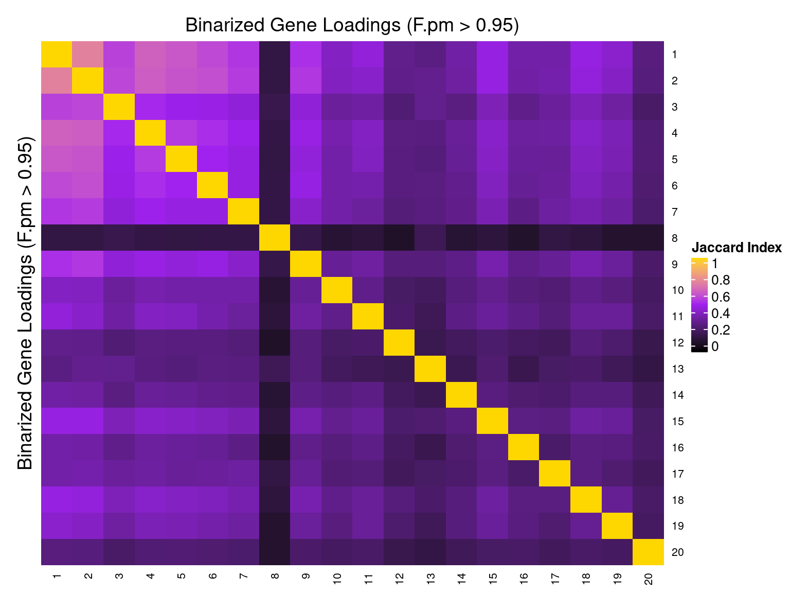

Guided Factor Analysis on TCGA BRCA Gene Expression Data
– Guides: Top 7 Somatic Mutation Genes
Yifan Zhou (zhouyf@uchicago.edu)
2021-02-08
1 Data Description
References: Perspective on Oncogenic Processes at the End of the Beginning of Cancer Genomics.
Data source:
FireBrowse TCGA BRCA Archives.
Perturbations:
Somatic mutation status of selected frequently mutated driver genes (PIK3CA, TP53, TTN, GATA3, CDH1, MAP3K1, MAP2K4).
Samples:
TCGA breast invasive carcinoma (BRCA) tumor samples.
To avoid possible confounding due to gender and race, we confined our study samples to be only from female Caucasian subjects.
In addition, only samples with somatic mutation annotation were kept, resulted in 700 samples.
Genes:
Only the top 10k variable genes in samples of consideration were kept.
Normalization:
RSEM normalized counts corrected for subject age and tumor purity. The corrected and scaled expression data were used as input for subsequent factor analysis.
2 Guided results
Here, our “guide”, \(G\) matrix, consists of the somatic mutation status of top 7 driver genes across samples.
We specified 20 factors in our model. In each case, Gibbs sampling was conducted for 2000 iterations, and the posterior mean estimates were averaged over the last 500 iterations.
2.1 SVD Initialization
2.1.1 Local False Sign Rate (LFSR)
For a given GSFA inference result, we can estimate the effect a certain KO condition \(m\) has on the expression of gene \(j\) by computing the LFSR of \(\beta_{m\cdot} \cdot W_{j\cdot}\).
| KO | PIK3CA | TP53 | TTN | GATA3 | CDH1 | MAP3K1 | MAP2K4 |
| Num_genes | 6778 | 8042 | 4706 | 2537 | 6046 | 1123 | 0 |
2.1.2 Factor ~ KO Beta PIP
2.1.3 Factor ~ KO Posterior Association
2.1.4 Beta PIP vs P-Value
2.1.5 Correlation btw Factors

3 Gene Ontology Enrichment Analysis
Statistical test: hypergeometric test;
GO category: Biological Process.
3.1 GO enrichment per factor
Target: Genes w/ PIP > 0.95 in each factor;
Backgroud: all 10000 genes used in factor analysis.
GO terms that passed over-representation test fold change \(\geq\) 1.5 and q value \(<\) 0.05:
| ID | Description | GeneRatio | BgRatio | FoldChange | pvalue | qvalue | GS_size | |
|---|---|---|---|---|---|---|---|---|
| GO:0045087 | GO:0045087 | innate immune response | 228/1528 | 500/9266 | 2.77 | 4.79e-56 | 1.83e-52 | 500 |
| GO:0019221 | GO:0019221 | cytokine-mediated signaling pathway | 211/1528 | 468/9266 | 2.73 | 1.07e-50 | 2.05e-47 | 468 |
| GO:0050778 | GO:0050778 | positive regulation of immune response | 199/1528 | 454/9266 | 2.66 | 2.12e-45 | 2.71e-42 | 454 |
| GO:0002250 | GO:0002250 | adaptive immune response | 122/1528 | 207/9266 | 3.57 | 1.51e-44 | 1.44e-41 | 207 |
| GO:0006954 | GO:0006954 | inflammatory response | 181/1528 | 400/9266 | 2.74 | 1.36e-43 | 1.04e-40 | 400 |
| GO:0046649 | GO:0046649 | lymphocyte activation | 170/1528 | 393/9266 | 2.62 | 9.25e-38 | 5.90e-35 | 393 |
| GO:0002253 | GO:0002253 | activation of immune response | 158/1528 | 355/9266 | 2.70 | 6.53e-37 | 3.57e-34 | 355 |
| GO:0002757 | GO:0002757 | immune response-activating signal transduction | 139/1528 | 308/9266 | 2.74 | 2.78e-33 | 1.33e-30 | 308 |
| GO:0002764 | GO:0002764 | immune response-regulating signaling pathway | 144/1528 | 326/9266 | 2.68 | 3.37e-33 | 1.44e-30 | 326 |
| GO:0034341 | GO:0034341 | response to interferon-gamma | 85/1528 | 139/9266 | 3.71 | 6.31e-33 | 2.42e-30 | 139 |
| GO:0001816 | GO:0001816 | cytokine production | 173/1528 | 445/9266 | 2.36 | 2.38e-31 | 8.03e-29 | 445 |
| GO:0098542 | GO:0098542 | defense response to other organism | 120/1528 | 253/9266 | 2.88 | 2.52e-31 | 8.03e-29 | 253 |
| GO:0042110 | GO:0042110 | T cell activation | 127/1528 | 277/9266 | 2.78 | 2.79e-31 | 8.21e-29 | 277 |
| GO:0032101 | GO:0032101 | regulation of response to external stimulus | 179/1528 | 476/9266 | 2.28 | 2.62e-30 | 7.18e-28 | 476 |
| GO:0007159 | GO:0007159 | leukocyte cell-cell adhesion | 105/1528 | 209/9266 | 3.05 | 3.54e-30 | 9.03e-28 | 209 |
| GO:0050865 | GO:0050865 | regulation of cell activation | 135/1528 | 313/9266 | 2.62 | 7.62e-30 | 1.82e-27 | 313 |
| GO:0031347 | GO:0031347 | regulation of defense response | 165/1528 | 425/9266 | 2.35 | 8.17e-30 | 1.84e-27 | 425 |
| GO:0002274 | GO:0002274 | myeloid leukocyte activation | 176/1528 | 475/9266 | 2.25 | 6.96e-29 | 1.48e-26 | 475 |
| GO:0009617 | GO:0009617 | response to bacterium | 140/1528 | 338/9266 | 2.51 | 1.02e-28 | 2.06e-26 | 338 |
| GO:0002694 | GO:0002694 | regulation of leukocyte activation | 126/1528 | 288/9266 | 2.65 | 1.32e-28 | 2.52e-26 | 288 |
| GO:0001817 | GO:0001817 | regulation of cytokine production | 156/1528 | 403/9266 | 2.35 | 5.00e-28 | 9.11e-26 | 403 |
| GO:0002697 | GO:0002697 | regulation of immune effector process | 109/1528 | 233/9266 | 2.84 | 7.20e-28 | 1.25e-25 | 233 |
| GO:0071346 | GO:0071346 | cellular response to interferon-gamma | 74/1528 | 124/9266 | 3.62 | 8.04e-28 | 1.34e-25 | 124 |
| GO:0002460 | GO:0002460 | adaptive immune response based on somatic recombination of immune receptors built from immunoglobulin superfamily domains | 81/1528 | 148/9266 | 3.32 | 9.07e-27 | 1.45e-24 | 148 |
| GO:0002521 | GO:0002521 | leukocyte differentiation | 131/1528 | 323/9266 | 2.46 | 7.47e-26 | 1.14e-23 | 323 |
| GO:0050900 | GO:0050900 | leukocyte migration | 115/1528 | 266/9266 | 2.62 | 1.28e-25 | 1.88e-23 | 266 |
| GO:0045785 | GO:0045785 | positive regulation of cell adhesion | 119/1528 | 283/9266 | 2.55 | 3.46e-25 | 4.91e-23 | 283 |
| GO:1903039 | GO:1903039 | positive regulation of leukocyte cell-cell adhesion | 74/1528 | 133/9266 | 3.37 | 3.76e-25 | 5.14e-23 | 133 |
| GO:0050867 | GO:0050867 | positive regulation of cell activation | 93/1528 | 194/9266 | 2.91 | 6.90e-25 | 9.11e-23 | 194 |
| GO:0002429 | GO:0002429 | immune response-activating cell surface receptor signaling pathway | 94/1528 | 198/9266 | 2.88 | 9.50e-25 | 1.21e-22 | 198 |
| GO:0050727 | GO:0050727 | regulation of inflammatory response | 98/1528 | 212/9266 | 2.80 | 1.20e-24 | 1.48e-22 | 212 |
| GO:0060333 | GO:0060333 | interferon-gamma-mediated signaling pathway | 51/1528 | 72/9266 | 4.30 | 1.26e-24 | 1.51e-22 | 72 |
| GO:0002768 | GO:0002768 | immune response-regulating cell surface receptor signaling pathway | 98/1528 | 216/9266 | 2.75 | 7.01e-24 | 8.13e-22 | 216 |
| GO:0002696 | GO:0002696 | positive regulation of leukocyte activation | 89/1528 | 186/9266 | 2.90 | 8.67e-24 | 9.76e-22 | 186 |
| GO:0034340 | GO:0034340 | response to type I interferon | 50/1528 | 72/9266 | 4.21 | 1.53e-23 | 1.68e-21 | 72 |
| GO:0030155 | GO:0030155 | regulation of cell adhesion | 165/1528 | 475/9266 | 2.11 | 1.67e-23 | 1.77e-21 | 475 |
| GO:1903037 | GO:1903037 | regulation of leukocyte cell-cell adhesion | 87/1528 | 181/9266 | 2.91 | 1.90e-23 | 1.96e-21 | 181 |
| GO:0051249 | GO:0051249 | regulation of lymphocyte activation | 106/1528 | 248/9266 | 2.59 | 3.35e-23 | 3.38e-21 | 248 |
| GO:0060337 | GO:0060337 | type I interferon signaling pathway | 48/1528 | 68/9266 | 4.28 | 3.84e-23 | 3.67e-21 | 68 |
| GO:0071357 | GO:0071357 | cellular response to type I interferon | 48/1528 | 68/9266 | 4.28 | 3.84e-23 | 3.67e-21 | 68 |
| GO:0050870 | GO:0050870 | positive regulation of T cell activation | 69/1528 | 127/9266 | 3.29 | 1.01e-22 | 9.44e-21 | 127 |
| GO:0001819 | GO:0001819 | positive regulation of cytokine production | 107/1528 | 255/9266 | 2.54 | 1.21e-22 | 1.11e-20 | 255 |
| GO:0030098 | GO:0030098 | lymphocyte differentiation | 94/1528 | 210/9266 | 2.71 | 2.01e-22 | 1.79e-20 | 210 |
| GO:0050863 | GO:0050863 | regulation of T cell activation | 88/1528 | 190/9266 | 2.81 | 2.63e-22 | 2.29e-20 | 190 |
| GO:0022409 | GO:0022409 | positive regulation of cell-cell adhesion | 80/1528 | 164/9266 | 2.96 | 3.63e-22 | 3.09e-20 | 164 |
| GO:0002275 | GO:0002275 | myeloid cell activation involved in immune response | 148/1528 | 418/9266 | 2.15 | 4.78e-22 | 3.96e-20 | 418 |
| GO:0043299 | GO:0043299 | leukocyte degranulation | 147/1528 | 414/9266 | 2.15 | 4.86e-22 | 3.96e-20 | 414 |
| GO:0070661 | GO:0070661 | leukocyte proliferation | 79/1528 | 162/9266 | 2.96 | 6.82e-22 | 5.44e-20 | 162 |
| GO:0032943 | GO:0032943 | mononuclear cell proliferation | 76/1528 | 153/9266 | 3.01 | 9.97e-22 | 7.79e-20 | 153 |
| GO:0051607 | GO:0051607 | defense response to virus | 74/1528 | 147/9266 | 3.05 | 1.24e-21 | 9.53e-20 | 147 |
| GO:0046651 | GO:0046651 | lymphocyte proliferation | 75/1528 | 151/9266 | 3.01 | 1.87e-21 | 1.41e-19 | 151 |
| GO:0002444 | GO:0002444 | myeloid leukocyte mediated immunity | 148/1528 | 426/9266 | 2.11 | 3.93e-21 | 2.90e-19 | 426 |
| GO:0050851 | GO:0050851 | antigen receptor-mediated signaling pathway | 65/1528 | 121/9266 | 3.26 | 4.06e-21 | 2.93e-19 | 121 |
| GO:0051251 | GO:0051251 | positive regulation of lymphocyte activation | 78/1528 | 164/9266 | 2.88 | 8.86e-21 | 6.28e-19 | 164 |
| GO:0022407 | GO:0022407 | regulation of cell-cell adhesion | 103/1528 | 255/9266 | 2.45 | 2.43e-20 | 1.69e-18 | 255 |
| GO:0009615 | GO:0009615 | response to virus | 90/1528 | 208/9266 | 2.62 | 2.77e-20 | 1.89e-18 | 208 |
| GO:0002449 | GO:0002449 | lymphocyte mediated immunity | 68/1528 | 136/9266 | 3.03 | 9.14e-20 | 6.14e-18 | 136 |
| GO:0036230 | GO:0036230 | granulocyte activation | 138/1528 | 398/9266 | 2.10 | 1.17e-19 | 7.73e-18 | 398 |
| GO:0042119 | GO:0042119 | neutrophil activation | 136/1528 | 393/9266 | 2.10 | 2.68e-19 | 1.74e-17 | 393 |
| GO:0006909 | GO:0006909 | phagocytosis | 80/1528 | 180/9266 | 2.70 | 5.15e-19 | 3.29e-17 | 180 |
| GO:0002283 | GO:0002283 | neutrophil activation involved in immune response | 133/1528 | 387/9266 | 2.08 | 1.35e-18 | 8.36e-17 | 387 |
| GO:0043312 | GO:0043312 | neutrophil degranulation | 133/1528 | 387/9266 | 2.08 | 1.35e-18 | 8.36e-17 | 387 |
| GO:0032944 | GO:0032944 | regulation of mononuclear cell proliferation | 61/1528 | 119/9266 | 3.11 | 1.50e-18 | 9.13e-17 | 119 |
| GO:0002446 | GO:0002446 | neutrophil mediated immunity | 134/1528 | 394/9266 | 2.06 | 2.75e-18 | 1.65e-16 | 394 |
| GO:0070663 | GO:0070663 | regulation of leukocyte proliferation | 62/1528 | 124/9266 | 3.03 | 3.94e-18 | 2.32e-16 | 124 |
| GO:0050670 | GO:0050670 | regulation of lymphocyte proliferation | 60/1528 | 118/9266 | 3.08 | 4.81e-18 | 2.79e-16 | 118 |
| GO:0002237 | GO:0002237 | response to molecule of bacterial origin | 85/1528 | 211/9266 | 2.44 | 6.85e-17 | 3.91e-15 | 211 |
| GO:0002683 | GO:0002683 | negative regulation of immune system process | 99/1528 | 266/9266 | 2.26 | 1.08e-16 | 6.09e-15 | 266 |
| GO:0002703 | GO:0002703 | regulation of leukocyte mediated immunity | 55/1528 | 108/9266 | 3.09 | 1.10e-16 | 6.09e-15 | 108 |
| GO:0032496 | GO:0032496 | response to lipopolysaccharide | 83/1528 | 205/9266 | 2.46 | 1.12e-16 | 6.14e-15 | 205 |
| GO:0030217 | GO:0030217 | T cell differentiation | 67/1528 | 149/9266 | 2.73 | 1.93e-16 | 1.04e-14 | 149 |
| GO:0006897 | GO:0006897 | endocytosis | 153/1528 | 495/9266 | 1.87 | 2.07e-16 | 1.10e-14 | 495 |
| GO:0032103 | GO:0032103 | positive regulation of response to external stimulus | 76/1528 | 183/9266 | 2.52 | 4.25e-16 | 2.23e-14 | 183 |
| GO:0031349 | GO:0031349 | positive regulation of defense response | 96/1528 | 259/9266 | 2.25 | 4.39e-16 | 2.27e-14 | 259 |
| GO:0045088 | GO:0045088 | regulation of innate immune response | 90/1528 | 237/9266 | 2.30 | 6.65e-16 | 3.40e-14 | 237 |
| GO:0042098 | GO:0042098 | T cell proliferation | 55/1528 | 112/9266 | 2.98 | 8.70e-16 | 4.39e-14 | 112 |
| GO:0042113 | GO:0042113 | B cell activation | 65/1528 | 146/9266 | 2.70 | 1.01e-15 | 5.00e-14 | 146 |
| GO:0060326 | GO:0060326 | cell chemotaxis | 73/1528 | 175/9266 | 2.53 | 1.24e-15 | 6.07e-14 | 175 |
| GO:0002699 | GO:0002699 | positive regulation of immune effector process | 58/1528 | 123/9266 | 2.86 | 1.48e-15 | 7.19e-14 | 123 |
| GO:0002685 | GO:0002685 | regulation of leukocyte migration | 57/1528 | 120/9266 | 2.88 | 1.73e-15 | 8.30e-14 | 120 |
| GO:0030595 | GO:0030595 | leukocyte chemotaxis | 59/1528 | 127/9266 | 2.82 | 1.99e-15 | 9.40e-14 | 127 |
| GO:0097529 | GO:0097529 | myeloid leukocyte migration | 55/1528 | 114/9266 | 2.93 | 2.33e-15 | 1.09e-13 | 114 |
| GO:0070665 | GO:0070665 | positive regulation of leukocyte proliferation | 42/1528 | 74/9266 | 3.44 | 3.09e-15 | 1.42e-13 | 74 |
| GO:0032946 | GO:0032946 | positive regulation of mononuclear cell proliferation | 41/1528 | 72/9266 | 3.45 | 5.66e-15 | 2.58e-13 | 72 |
| GO:0050852 | GO:0050852 | T cell receptor signaling pathway | 49/1528 | 97/9266 | 3.06 | 7.91e-15 | 3.56e-13 | 97 |
| GO:0006959 | GO:0006959 | humoral immune response | 54/1528 | 115/9266 | 2.85 | 1.78e-14 | 7.93e-13 | 115 |
| GO:1903555 | GO:1903555 | regulation of tumor necrosis factor superfamily cytokine production | 45/1528 | 86/9266 | 3.17 | 1.87e-14 | 8.10e-13 | 86 |
| GO:0042102 | GO:0042102 | positive regulation of T cell proliferation | 34/1528 | 54/9266 | 3.82 | 1.88e-14 | 8.10e-13 | 54 |
| GO:0001818 | GO:0001818 | negative regulation of cytokine production | 66/1528 | 157/9266 | 2.55 | 1.88e-14 | 8.10e-13 | 157 |
| GO:0050671 | GO:0050671 | positive regulation of lymphocyte proliferation | 40/1528 | 71/9266 | 3.42 | 2.00e-14 | 8.51e-13 | 71 |
| GO:0046631 | GO:0046631 | alpha-beta T cell activation | 43/1528 | 80/9266 | 3.26 | 2.03e-14 | 8.55e-13 | 80 |
| GO:0042129 | GO:0042129 | regulation of T cell proliferation | 47/1528 | 93/9266 | 3.06 | 2.75e-14 | 1.15e-12 | 93 |
| GO:0032609 | GO:0032609 | interferon-gamma production | 34/1528 | 55/9266 | 3.75 | 4.15e-14 | 1.71e-12 | 55 |
| GO:0071219 | GO:0071219 | cellular response to molecule of bacterial origin | 56/1528 | 124/9266 | 2.74 | 4.72e-14 | 1.92e-12 | 124 |
| GO:0019882 | GO:0019882 | antigen processing and presentation | 60/1528 | 138/9266 | 2.64 | 4.81e-14 | 1.94e-12 | 138 |
| GO:0002819 | GO:0002819 | regulation of adaptive immune response | 46/1528 | 91/9266 | 3.07 | 5.14e-14 | 2.05e-12 | 91 |
| GO:0071706 | GO:0071706 | tumor necrosis factor superfamily cytokine production | 45/1528 | 88/9266 | 3.10 | 5.62e-14 | 2.22e-12 | 88 |
| GO:0043062 | GO:0043062 | extracellular structure organization | 103/1528 | 306/9266 | 2.04 | 6.00e-14 | 2.35e-12 | 306 |
| GO:0050663 | GO:0050663 | cytokine secretion | 54/1528 | 119/9266 | 2.75 | 1.05e-13 | 4.07e-12 | 119 |
| GO:0072676 | GO:0072676 | lymphocyte migration | 34/1528 | 57/9266 | 3.62 | 1.86e-13 | 7.12e-12 | 57 |
| GO:0032680 | GO:0032680 | regulation of tumor necrosis factor production | 43/1528 | 84/9266 | 3.10 | 1.95e-13 | 7.41e-12 | 84 |
| GO:0031348 | GO:0031348 | negative regulation of defense response | 52/1528 | 114/9266 | 2.77 | 2.34e-13 | 8.79e-12 | 114 |
| GO:0071222 | GO:0071222 | cellular response to lipopolysaccharide | 54/1528 | 121/9266 | 2.71 | 2.45e-13 | 9.13e-12 | 121 |
| GO:1902105 | GO:1902105 | regulation of leukocyte differentiation | 68/1528 | 172/9266 | 2.40 | 2.72e-13 | 1.00e-11 | 172 |
| GO:1990266 | GO:1990266 | neutrophil migration | 34/1528 | 58/9266 | 3.55 | 3.79e-13 | 1.38e-11 | 58 |
| GO:0007596 | GO:0007596 | blood coagulation | 77/1528 | 208/9266 | 2.24 | 4.19e-13 | 1.51e-11 | 208 |
| GO:0007599 | GO:0007599 | hemostasis | 78/1528 | 212/9266 | 2.23 | 4.28e-13 | 1.53e-11 | 212 |
| GO:0097530 | GO:0097530 | granulocyte migration | 39/1528 | 73/9266 | 3.24 | 4.35e-13 | 1.54e-11 | 73 |
| GO:0006935 | GO:0006935 | chemotaxis | 117/1528 | 375/9266 | 1.89 | 4.53e-13 | 1.59e-11 | 375 |
| GO:0042330 | GO:0042330 | taxis | 117/1528 | 376/9266 | 1.89 | 5.55e-13 | 1.92e-11 | 376 |
| GO:0050817 | GO:0050817 | coagulation | 77/1528 | 209/9266 | 2.23 | 5.59e-13 | 1.92e-11 | 209 |
| GO:0032640 | GO:0032640 | tumor necrosis factor production | 43/1528 | 86/9266 | 3.03 | 5.61e-13 | 1.92e-11 | 86 |
| GO:0050777 | GO:0050777 | negative regulation of immune response | 42/1528 | 83/9266 | 3.07 | 6.21e-13 | 2.10e-11 | 83 |
| GO:0032649 | GO:0032649 | regulation of interferon-gamma production | 30/1528 | 48/9266 | 3.79 | 8.78e-13 | 2.95e-11 | 48 |
| GO:0071216 | GO:0071216 | cellular response to biotic stimulus | 58/1528 | 141/9266 | 2.49 | 2.22e-12 | 7.41e-11 | 141 |
| GO:0060759 | GO:0060759 | regulation of response to cytokine stimulus | 53/1528 | 123/9266 | 2.61 | 2.26e-12 | 7.46e-11 | 123 |
| GO:0002822 | GO:0002822 | regulation of adaptive immune response based on somatic recombination of immune receptors built from immunoglobulin superfamily domains | 40/1528 | 80/9266 | 3.03 | 3.64e-12 | 1.19e-10 | 80 |
| GO:0030198 | GO:0030198 | extracellular matrix organization | 89/1528 | 267/9266 | 2.02 | 6.05e-12 | 1.96e-10 | 267 |
| GO:0034612 | GO:0034612 | response to tumor necrosis factor | 64/1528 | 167/9266 | 2.32 | 7.10e-12 | 2.28e-10 | 167 |
| GO:0030593 | GO:0030593 | neutrophil chemotaxis | 30/1528 | 51/9266 | 3.57 | 8.24e-12 | 2.63e-10 | 51 |
| GO:0071621 | GO:0071621 | granulocyte chemotaxis | 35/1528 | 66/9266 | 3.22 | 9.25e-12 | 2.93e-10 | 66 |
| GO:0002285 | GO:0002285 | lymphocyte activation involved in immune response | 46/1528 | 102/9266 | 2.73 | 9.35e-12 | 2.94e-10 | 102 |
| GO:0050853 | GO:0050853 | B cell receptor signaling pathway | 23/1528 | 33/9266 | 4.23 | 1.47e-11 | 4.57e-10 | 33 |
| GO:0050764 | GO:0050764 | regulation of phagocytosis | 30/1528 | 52/9266 | 3.50 | 1.64e-11 | 5.08e-10 | 52 |
| GO:0045089 | GO:0045089 | positive regulation of innate immune response | 71/1528 | 198/9266 | 2.17 | 2.00e-11 | 6.12e-10 | 198 |
| GO:0001959 | GO:0001959 | regulation of cytokine-mediated signaling pathway | 49/1528 | 115/9266 | 2.58 | 2.52e-11 | 7.65e-10 | 115 |
| GO:0050707 | GO:0050707 | regulation of cytokine secretion | 45/1528 | 101/9266 | 2.70 | 2.62e-11 | 7.91e-10 | 101 |
| GO:0046632 | GO:0046632 | alpha-beta T cell differentiation | 34/1528 | 65/9266 | 3.17 | 3.04e-11 | 9.09e-10 | 65 |
| GO:0002456 | GO:0002456 | T cell mediated immunity | 30/1528 | 53/9266 | 3.43 | 3.19e-11 | 9.48e-10 | 53 |
| GO:0050866 | GO:0050866 | negative regulation of cell activation | 46/1528 | 105/9266 | 2.66 | 3.23e-11 | 9.51e-10 | 105 |
| GO:0071356 | GO:0071356 | cellular response to tumor necrosis factor | 58/1528 | 149/9266 | 2.36 | 3.31e-11 | 9.67e-10 | 149 |
| GO:0001525 | GO:0001525 | angiogenesis | 110/1528 | 367/9266 | 1.82 | 3.89e-11 | 1.13e-09 | 367 |
| GO:1903706 | GO:1903706 | regulation of hemopoiesis | 87/1528 | 267/9266 | 1.98 | 4.13e-11 | 1.19e-09 | 267 |
| GO:0097028 | GO:0097028 | dendritic cell differentiation | 20/1528 | 27/9266 | 4.49 | 5.43e-11 | 1.55e-09 | 27 |
| GO:0002483 | GO:0002483 | antigen processing and presentation of endogenous peptide antigen | 13/1528 | 13/9266 | 6.06 | 6.39e-11 | 1.81e-09 | 13 |
| GO:0050729 | GO:0050729 | positive regulation of inflammatory response | 36/1528 | 73/9266 | 2.99 | 7.30e-11 | 2.06e-09 | 73 |
| GO:0002695 | GO:0002695 | negative regulation of leukocyte activation | 41/1528 | 90/9266 | 2.76 | 8.54e-11 | 2.39e-09 | 90 |
| GO:0002758 | GO:0002758 | innate immune response-activating signal transduction | 59/1528 | 156/9266 | 2.29 | 8.86e-11 | 2.46e-09 | 156 |
| GO:0048514 | GO:0048514 | blood vessel morphogenesis | 123/1528 | 431/9266 | 1.73 | 9.40e-11 | 2.59e-09 | 431 |
| GO:0032729 | GO:0032729 | positive regulation of interferon-gamma production | 21/1528 | 30/9266 | 4.24 | 1.02e-10 | 2.78e-09 | 30 |
| GO:0002821 | GO:0002821 | positive regulation of adaptive immune response | 31/1528 | 58/9266 | 3.24 | 1.10e-10 | 2.99e-09 | 58 |
| GO:0002286 | GO:0002286 | T cell activation involved in immune response | 30/1528 | 55/9266 | 3.31 | 1.12e-10 | 3.03e-09 | 55 |
| GO:0045123 | GO:0045123 | cellular extravasation | 24/1528 | 38/9266 | 3.83 | 1.26e-10 | 3.38e-09 | 38 |
| GO:0019883 | GO:0019883 | antigen processing and presentation of endogenous antigen | 14/1528 | 15/9266 | 5.66 | 1.33e-10 | 3.51e-09 | 15 |
| GO:0030100 | GO:0030100 | regulation of endocytosis | 66/1528 | 185/9266 | 2.16 | 1.33e-10 | 3.51e-09 | 185 |
| GO:0002687 | GO:0002687 | positive regulation of leukocyte migration | 40/1528 | 88/9266 | 2.76 | 1.58e-10 | 4.14e-09 | 88 |
| GO:0002221 | GO:0002221 | pattern recognition receptor signaling pathway | 50/1528 | 124/9266 | 2.45 | 1.74e-10 | 4.53e-09 | 124 |
| GO:0060627 | GO:0060627 | regulation of vesicle-mediated transport | 103/1528 | 344/9266 | 1.82 | 1.79e-10 | 4.63e-09 | 344 |
| GO:0050878 | GO:0050878 | regulation of body fluid levels | 95/1528 | 309/9266 | 1.86 | 1.95e-10 | 5.01e-09 | 309 |
| GO:0002824 | GO:0002824 | positive regulation of adaptive immune response based on somatic recombination of immune receptors built from immunoglobulin superfamily domains | 29/1528 | 53/9266 | 3.32 | 2.08e-10 | 5.32e-09 | 53 |
| GO:0018212 | GO:0018212 | peptidyl-tyrosine modification | 81/1528 | 249/9266 | 1.97 | 2.17e-10 | 5.49e-09 | 249 |
| GO:0070374 | GO:0070374 | positive regulation of ERK1 and ERK2 cascade | 53/1528 | 136/9266 | 2.36 | 2.23e-10 | 5.62e-09 | 136 |
| GO:0002218 | GO:0002218 | activation of innate immune response | 62/1528 | 171/9266 | 2.20 | 2.27e-10 | 5.68e-09 | 171 |
| GO:0002224 | GO:0002224 | toll-like receptor signaling pathway | 40/1528 | 89/9266 | 2.73 | 2.42e-10 | 6.01e-09 | 89 |
| GO:0032615 | GO:0032615 | interleukin-12 production | 21/1528 | 31/9266 | 4.11 | 2.66e-10 | 6.58e-09 | 31 |
| GO:0002706 | GO:0002706 | regulation of lymphocyte mediated immunity | 36/1528 | 76/9266 | 2.87 | 3.11e-10 | 7.64e-09 | 76 |
| GO:0018108 | GO:0018108 | peptidyl-tyrosine phosphorylation | 80/1528 | 247/9266 | 1.96 | 3.56e-10 | 8.68e-09 | 247 |
| GO:1902107 | GO:1902107 | positive regulation of leukocyte differentiation | 40/1528 | 90/9266 | 2.70 | 3.67e-10 | 8.89e-09 | 90 |
| GO:0035710 | GO:0035710 | CD4-positive, alpha-beta T cell activation | 29/1528 | 54/9266 | 3.26 | 3.79e-10 | 9.14e-09 | 54 |
| GO:0001909 | GO:0001909 | leukocyte mediated cytotoxicity | 28/1528 | 51/9266 | 3.33 | 3.85e-10 | 9.22e-09 | 51 |
| GO:0032479 | GO:0032479 | regulation of type I interferon production | 37/1528 | 80/9266 | 2.80 | 4.17e-10 | 9.91e-09 | 80 |
| GO:0032655 | GO:0032655 | regulation of interleukin-12 production | 20/1528 | 29/9266 | 4.18 | 4.38e-10 | 1.03e-08 | 29 |
| GO:0007204 | GO:0007204 | positive regulation of cytosolic calcium ion concentration | 57/1528 | 154/9266 | 2.24 | 4.89e-10 | 1.15e-08 | 154 |
| GO:0045071 | GO:0045071 | negative regulation of viral genome replication | 23/1528 | 37/9266 | 3.77 | 4.92e-10 | 1.15e-08 | 37 |
| GO:0042088 | GO:0042088 | T-helper 1 type immune response | 17/1528 | 22/9266 | 4.69 | 5.22e-10 | 1.21e-08 | 22 |
| GO:0070372 | GO:0070372 | regulation of ERK1 and ERK2 cascade | 67/1528 | 195/9266 | 2.08 | 6.17e-10 | 1.42e-08 | 195 |
| GO:0032606 | GO:0032606 | type I interferon production | 37/1528 | 81/9266 | 2.77 | 6.47e-10 | 1.48e-08 | 81 |
| GO:0043122 | GO:0043122 | regulation of I-kappaB kinase/NF-kappaB signaling | 61/1528 | 171/9266 | 2.16 | 6.73e-10 | 1.53e-08 | 171 |
| GO:0032612 | GO:0032612 | interleukin-1 production | 28/1528 | 52/9266 | 3.27 | 7.04e-10 | 1.60e-08 | 52 |
| GO:0043367 | GO:0043367 | CD4-positive, alpha-beta T cell differentiation | 27/1528 | 49/9266 | 3.34 | 7.12e-10 | 1.60e-08 | 49 |
| GO:0002709 | GO:0002709 | regulation of T cell mediated immunity | 22/1528 | 35/9266 | 3.81 | 8.68e-10 | 1.94e-08 | 35 |
| GO:0030183 | GO:0030183 | B cell differentiation | 35/1528 | 75/9266 | 2.83 | 9.15e-10 | 2.04e-08 | 75 |
| GO:0007249 | GO:0007249 | I-kappaB kinase/NF-kappaB signaling | 66/1528 | 193/9266 | 2.07 | 1.04e-09 | 2.30e-08 | 193 |
| GO:0072678 | GO:0072678 | T cell migration | 23/1528 | 38/9266 | 3.67 | 1.05e-09 | 2.32e-08 | 38 |
| GO:0002573 | GO:0002573 | myeloid leukocyte differentiation | 54/1528 | 145/9266 | 2.26 | 1.08e-09 | 2.36e-08 | 145 |
| GO:0045807 | GO:0045807 | positive regulation of endocytosis | 42/1528 | 100/9266 | 2.55 | 1.14e-09 | 2.48e-08 | 100 |
| GO:0070371 | GO:0070371 | ERK1 and ERK2 cascade | 70/1528 | 210/9266 | 2.02 | 1.15e-09 | 2.48e-08 | 210 |
| GO:0001906 | GO:0001906 | cell killing | 33/1528 | 69/9266 | 2.90 | 1.25e-09 | 2.69e-08 | 69 |
| GO:0001568 | GO:0001568 | blood vessel development | 132/1528 | 490/9266 | 1.63 | 1.26e-09 | 2.70e-08 | 490 |
| GO:1990868 | GO:1990868 | response to chemokine | 25/1528 | 44/9266 | 3.45 | 1.28e-09 | 2.71e-08 | 44 |
| GO:1990869 | GO:1990869 | cellular response to chemokine | 25/1528 | 44/9266 | 3.45 | 1.28e-09 | 2.71e-08 | 44 |
| GO:0030168 | GO:0030168 | platelet activation | 42/1528 | 101/9266 | 2.52 | 1.65e-09 | 3.47e-08 | 101 |
| GO:0045621 | GO:0045621 | positive regulation of lymphocyte differentiation | 29/1528 | 57/9266 | 3.09 | 2.03e-09 | 4.26e-08 | 57 |
| GO:0042742 | GO:0042742 | defense response to bacterium | 41/1528 | 98/9266 | 2.54 | 2.07e-09 | 4.31e-08 | 98 |
| GO:0002920 | GO:0002920 | regulation of humoral immune response | 23/1528 | 39/9266 | 3.58 | 2.17e-09 | 4.49e-08 | 39 |
| GO:0045582 | GO:0045582 | positive regulation of T cell differentiation | 27/1528 | 51/9266 | 3.21 | 2.34e-09 | 4.82e-08 | 51 |
| GO:0032611 | GO:0032611 | interleukin-1 beta production | 25/1528 | 45/9266 | 3.37 | 2.43e-09 | 4.98e-08 | 45 |
| GO:0071887 | GO:0071887 | leukocyte apoptotic process | 34/1528 | 74/9266 | 2.79 | 2.65e-09 | 5.39e-08 | 74 |
| GO:0030335 | GO:0030335 | positive regulation of cell migration | 104/1528 | 364/9266 | 1.73 | 2.67e-09 | 5.40e-08 | 364 |
| GO:0009611 | GO:0009611 | response to wounding | 116/1528 | 420/9266 | 1.67 | 2.84e-09 | 5.72e-08 | 420 |
| GO:0030099 | GO:0030099 | myeloid cell differentiation | 85/1528 | 279/9266 | 1.85 | 2.95e-09 | 5.91e-08 | 279 |
| GO:0002711 | GO:0002711 | positive regulation of T cell mediated immunity | 18/1528 | 26/9266 | 4.20 | 3.05e-09 | 6.09e-08 | 26 |
| GO:0070098 | GO:0070098 | chemokine-mediated signaling pathway | 22/1528 | 37/9266 | 3.61 | 3.93e-09 | 7.79e-08 | 37 |
| GO:2000147 | GO:2000147 | positive regulation of cell motility | 105/1528 | 372/9266 | 1.71 | 4.63e-09 | 9.15e-08 | 372 |
| GO:0002440 | GO:0002440 | production of molecular mediator of immune response | 46/1528 | 119/9266 | 2.34 | 4.70e-09 | 9.24e-08 | 119 |
| GO:1901342 | GO:1901342 | regulation of vasculature development | 74/1528 | 234/9266 | 1.92 | 5.36e-09 | 1.05e-07 | 234 |
| GO:2000106 | GO:2000106 | regulation of leukocyte apoptotic process | 29/1528 | 59/9266 | 2.98 | 5.70e-09 | 1.11e-07 | 59 |
| GO:0001910 | GO:0001910 | regulation of leukocyte mediated cytotoxicity | 20/1528 | 32/9266 | 3.79 | 5.96e-09 | 1.15e-07 | 32 |
| GO:0051235 | GO:0051235 | maintenance of location | 70/1528 | 218/9266 | 1.95 | 6.87e-09 | 1.32e-07 | 218 |
| GO:1903901 | GO:1903901 | negative regulation of viral life cycle | 27/1528 | 53/9266 | 3.09 | 7.08e-09 | 1.35e-07 | 53 |
| GO:0050766 | GO:0050766 | positive regulation of phagocytosis | 21/1528 | 35/9266 | 3.64 | 7.10e-09 | 1.35e-07 | 35 |
| GO:0045765 | GO:0045765 | regulation of angiogenesis | 68/1528 | 210/9266 | 1.96 | 7.70e-09 | 1.46e-07 | 210 |
| GO:0048002 | GO:0048002 | antigen processing and presentation of peptide antigen | 44/1528 | 113/9266 | 2.36 | 7.82e-09 | 1.47e-07 | 113 |
| GO:0042060 | GO:0042060 | wound healing | 99/1528 | 348/9266 | 1.73 | 8.35e-09 | 1.57e-07 | 348 |
| GO:0051480 | GO:0051480 | regulation of cytosolic calcium ion concentration | 59/1528 | 173/9266 | 2.07 | 9.01e-09 | 1.67e-07 | 173 |
| GO:0002705 | GO:0002705 | positive regulation of leukocyte mediated immunity | 32/1528 | 70/9266 | 2.77 | 9.06e-09 | 1.67e-07 | 70 |
| GO:0032635 | GO:0032635 | interleukin-6 production | 32/1528 | 70/9266 | 2.77 | 9.06e-09 | 1.67e-07 | 70 |
| GO:0050715 | GO:0050715 | positive regulation of cytokine secretion | 32/1528 | 70/9266 | 2.77 | 9.06e-09 | 1.67e-07 | 70 |
| GO:0002688 | GO:0002688 | regulation of leukocyte chemotaxis | 34/1528 | 77/9266 | 2.68 | 9.41e-09 | 1.72e-07 | 77 |
| GO:0033209 | GO:0033209 | tumor necrosis factor-mediated signaling pathway | 34/1528 | 77/9266 | 2.68 | 9.41e-09 | 1.72e-07 | 77 |
| GO:0043123 | GO:0043123 | positive regulation of I-kappaB kinase/NF-kappaB signaling | 50/1528 | 137/9266 | 2.21 | 9.83e-09 | 1.78e-07 | 137 |
| GO:0050920 | GO:0050920 | regulation of chemotaxis | 51/1528 | 142/9266 | 2.18 | 1.31e-08 | 2.36e-07 | 142 |
| GO:0040017 | GO:0040017 | positive regulation of locomotion | 108/1528 | 393/9266 | 1.67 | 1.38e-08 | 2.48e-07 | 393 |
| GO:0051272 | GO:0051272 | positive regulation of cellular component movement | 105/1528 | 379/9266 | 1.68 | 1.39e-08 | 2.48e-07 | 379 |
| GO:0032652 | GO:0032652 | regulation of interleukin-1 production | 25/1528 | 48/9266 | 3.16 | 1.43e-08 | 2.53e-07 | 48 |
| GO:0071674 | GO:0071674 | mononuclear cell migration | 25/1528 | 48/9266 | 3.16 | 1.43e-08 | 2.53e-07 | 48 |
| GO:0048525 | GO:0048525 | negative regulation of viral process | 29/1528 | 61/9266 | 2.88 | 1.50e-08 | 2.64e-07 | 61 |
| GO:0045619 | GO:0045619 | regulation of lymphocyte differentiation | 40/1528 | 100/9266 | 2.43 | 1.53e-08 | 2.67e-07 | 100 |
| GO:2000401 | GO:2000401 | regulation of lymphocyte migration | 22/1528 | 39/9266 | 3.42 | 1.53e-08 | 2.67e-07 | 39 |
| GO:0002431 | GO:0002431 | Fc receptor mediated stimulatory signaling pathway | 31/1528 | 68/9266 | 2.76 | 1.68e-08 | 2.90e-07 | 68 |
| GO:0045580 | GO:0045580 | regulation of T cell differentiation | 35/1528 | 82/9266 | 2.59 | 1.68e-08 | 2.90e-07 | 82 |
| GO:0002526 | GO:0002526 | acute inflammatory response | 36/1528 | 86/9266 | 2.54 | 1.95e-08 | 3.36e-07 | 86 |
| GO:0045824 | GO:0045824 | negative regulation of innate immune response | 19/1528 | 31/9266 | 3.72 | 2.29e-08 | 3.94e-07 | 31 |
| GO:0002577 | GO:0002577 | regulation of antigen processing and presentation | 11/1528 | 12/9266 | 5.56 | 2.43e-08 | 4.15e-07 | 12 |
| GO:1904894 | GO:1904894 | positive regulation of STAT cascade | 23/1528 | 43/9266 | 3.24 | 2.81e-08 | 4.78e-07 | 43 |
| GO:0016064 | GO:0016064 | immunoglobulin mediated immune response | 30/1528 | 66/9266 | 2.76 | 3.10e-08 | 5.20e-07 | 66 |
| GO:0019724 | GO:0019724 | B cell mediated immunity | 30/1528 | 66/9266 | 2.76 | 3.10e-08 | 5.20e-07 | 66 |
| GO:0032675 | GO:0032675 | regulation of interleukin-6 production | 30/1528 | 66/9266 | 2.76 | 3.10e-08 | 5.20e-07 | 66 |
| GO:0002698 | GO:0002698 | negative regulation of immune effector process | 32/1528 | 73/9266 | 2.66 | 3.17e-08 | 5.28e-07 | 73 |
| GO:0050728 | GO:0050728 | negative regulation of inflammatory response | 32/1528 | 73/9266 | 2.66 | 3.17e-08 | 5.28e-07 | 73 |
| GO:0050731 | GO:0050731 | positive regulation of peptidyl-tyrosine phosphorylation | 44/1528 | 118/9266 | 2.26 | 3.61e-08 | 5.96e-07 | 118 |
| GO:1903708 | GO:1903708 | positive regulation of hemopoiesis | 44/1528 | 118/9266 | 2.26 | 3.61e-08 | 5.96e-07 | 118 |
| GO:0046634 | GO:0046634 | regulation of alpha-beta T cell activation | 26/1528 | 53/9266 | 2.97 | 3.70e-08 | 6.07e-07 | 53 |
| GO:0050730 | GO:0050730 | regulation of peptidyl-tyrosine phosphorylation | 55/1528 | 163/9266 | 2.05 | 4.36e-08 | 7.13e-07 | 163 |
| GO:0042116 | GO:0042116 | macrophage activation | 24/1528 | 47/9266 | 3.10 | 4.60e-08 | 7.50e-07 | 47 |
| GO:0002886 | GO:0002886 | regulation of myeloid leukocyte mediated immunity | 19/1528 | 32/9266 | 3.60 | 4.77e-08 | 7.74e-07 | 32 |
| GO:0042100 | GO:0042100 | B cell proliferation | 23/1528 | 44/9266 | 3.17 | 4.97e-08 | 8.04e-07 | 44 |
| GO:0048872 | GO:0048872 | homeostasis of number of cells | 57/1528 | 172/9266 | 2.01 | 5.09e-08 | 8.20e-07 | 172 |
| GO:0051046 | GO:0051046 | regulation of secretion | 118/1528 | 450/9266 | 1.59 | 5.24e-08 | 8.37e-07 | 450 |
| GO:0043901 | GO:0043901 | negative regulation of multi-organism process | 39/1528 | 100/9266 | 2.37 | 5.24e-08 | 8.37e-07 | 100 |
| GO:0001913 | GO:0001913 | T cell mediated cytotoxicity | 16/1528 | 24/9266 | 4.04 | 5.43e-08 | 8.59e-07 | 24 |
| GO:0032653 | GO:0032653 | regulation of interleukin-10 production | 16/1528 | 24/9266 | 4.04 | 5.43e-08 | 8.59e-07 | 24 |
| GO:0051250 | GO:0051250 | negative regulation of lymphocyte activation | 33/1528 | 78/9266 | 2.57 | 5.56e-08 | 8.77e-07 | 78 |
| GO:1903557 | GO:1903557 | positive regulation of tumor necrosis factor superfamily cytokine production | 26/1528 | 54/9266 | 2.92 | 6.02e-08 | 9.44e-07 | 54 |
| GO:0002704 | GO:0002704 | negative regulation of leukocyte mediated immunity | 17/1528 | 27/9266 | 3.82 | 7.25e-08 | 1.13e-06 | 27 |
| GO:0006968 | GO:0006968 | cellular defense response | 17/1528 | 27/9266 | 3.82 | 7.25e-08 | 1.13e-06 | 27 |
| GO:0032673 | GO:0032673 | regulation of interleukin-4 production | 13/1528 | 17/9266 | 4.64 | 7.87e-08 | 1.22e-06 | 17 |
| GO:0051092 | GO:0051092 | positive regulation of NF-kappaB transcription factor activity | 36/1528 | 90/9266 | 2.43 | 7.97e-08 | 1.23e-06 | 90 |
| GO:0097696 | GO:0097696 | STAT cascade | 33/1528 | 79/9266 | 2.53 | 8.06e-08 | 1.24e-06 | 79 |
| GO:1903530 | GO:1903530 | regulation of secretion by cell | 111/1528 | 420/9266 | 1.60 | 8.52e-08 | 1.31e-06 | 420 |
| GO:0032651 | GO:0032651 | regulation of interleukin-1 beta production | 22/1528 | 42/9266 | 3.18 | 9.28e-08 | 1.41e-06 | 42 |
| GO:0046427 | GO:0046427 | positive regulation of JAK-STAT cascade | 22/1528 | 42/9266 | 3.18 | 9.28e-08 | 1.41e-06 | 42 |
| GO:0050854 | GO:0050854 | regulation of antigen receptor-mediated signaling pathway | 21/1528 | 39/9266 | 3.27 | 9.74e-08 | 1.47e-06 | 39 |
| GO:0031341 | GO:0031341 | regulation of cell killing | 20/1528 | 36/9266 | 3.37 | 9.85e-08 | 1.48e-06 | 36 |
| GO:0050921 | GO:0050921 | positive regulation of chemotaxis | 37/1528 | 95/9266 | 2.36 | 1.20e-07 | 1.80e-06 | 95 |
| GO:0032613 | GO:0032613 | interleukin-10 production | 16/1528 | 25/9266 | 3.88 | 1.28e-07 | 1.91e-06 | 25 |
| GO:0002825 | GO:0002825 | regulation of T-helper 1 type immune response | 10/1528 | 11/9266 | 5.51 | 1.36e-07 | 2.02e-06 | 11 |
| GO:0051090 | GO:0051090 | regulation of DNA-binding transcription factor activity | 76/1528 | 260/9266 | 1.77 | 1.40e-07 | 2.08e-06 | 260 |
| GO:0007259 | GO:0007259 | JAK-STAT cascade | 32/1528 | 77/9266 | 2.52 | 1.46e-07 | 2.16e-06 | 77 |
| GO:0052548 | GO:0052548 | regulation of endopeptidase activity | 77/1528 | 265/9266 | 1.76 | 1.52e-07 | 2.24e-06 | 265 |
| GO:0030449 | GO:0030449 | regulation of complement activation | 17/1528 | 28/9266 | 3.68 | 1.56e-07 | 2.28e-06 | 28 |
| GO:0043300 | GO:0043300 | regulation of leukocyte degranulation | 17/1528 | 28/9266 | 3.68 | 1.56e-07 | 2.28e-06 | 28 |
| GO:2000257 | GO:2000257 | regulation of protein activation cascade | 17/1528 | 28/9266 | 3.68 | 1.56e-07 | 2.28e-06 | 28 |
| GO:0002690 | GO:0002690 | positive regulation of leukocyte chemotaxis | 28/1528 | 63/9266 | 2.70 | 1.61e-07 | 2.33e-06 | 63 |
| GO:1903556 | GO:1903556 | negative regulation of tumor necrosis factor superfamily cytokine production | 18/1528 | 31/9266 | 3.52 | 1.75e-07 | 2.52e-06 | 31 |
| GO:0060402 | GO:0060402 | calcium ion transport into cytosol | 34/1528 | 85/9266 | 2.43 | 1.82e-07 | 2.62e-06 | 85 |
| GO:0001914 | GO:0001914 | regulation of T cell mediated cytotoxicity | 13/1528 | 18/9266 | 4.38 | 2.40e-07 | 3.43e-06 | 18 |
| GO:0032735 | GO:0032735 | positive regulation of interleukin-12 production | 13/1528 | 18/9266 | 4.38 | 2.40e-07 | 3.43e-06 | 18 |
| GO:0019884 | GO:0019884 | antigen processing and presentation of exogenous antigen | 40/1528 | 109/9266 | 2.23 | 2.47e-07 | 3.52e-06 | 109 |
| GO:0002700 | GO:0002700 | regulation of production of molecular mediator of immune response | 34/1528 | 86/9266 | 2.40 | 2.54e-07 | 3.60e-06 | 86 |
| GO:0042590 | GO:0042590 | antigen processing and presentation of exogenous peptide antigen via MHC class I | 16/1528 | 26/9266 | 3.73 | 2.81e-07 | 3.96e-06 | 26 |
| GO:0042089 | GO:0042089 | cytokine biosynthetic process | 25/1528 | 54/9266 | 2.81 | 2.82e-07 | 3.96e-06 | 54 |
| GO:0042107 | GO:0042107 | cytokine metabolic process | 25/1528 | 54/9266 | 2.81 | 2.82e-07 | 3.96e-06 | 54 |
| GO:0002532 | GO:0002532 | production of molecular mediator involved in inflammatory response | 21/1528 | 41/9266 | 3.11 | 3.00e-07 | 4.20e-06 | 41 |
| GO:0002455 | GO:0002455 | humoral immune response mediated by circulating immunoglobulin | 17/1528 | 29/9266 | 3.55 | 3.20e-07 | 4.42e-06 | 29 |
| GO:0043030 | GO:0043030 | regulation of macrophage activation | 17/1528 | 29/9266 | 3.55 | 3.20e-07 | 4.42e-06 | 29 |
| GO:0050702 | GO:0050702 | interleukin-1 beta secretion | 17/1528 | 29/9266 | 3.55 | 3.20e-07 | 4.42e-06 | 29 |
| GO:0002478 | GO:0002478 | antigen processing and presentation of exogenous peptide antigen | 39/1528 | 106/9266 | 2.23 | 3.22e-07 | 4.42e-06 | 106 |
| GO:0048771 | GO:0048771 | tissue remodeling | 39/1528 | 106/9266 | 2.23 | 3.22e-07 | 4.42e-06 | 106 |
| GO:0002708 | GO:0002708 | positive regulation of lymphocyte mediated immunity | 24/1528 | 51/9266 | 2.85 | 3.34e-07 | 4.56e-06 | 51 |
| GO:0050701 | GO:0050701 | interleukin-1 secretion | 18/1528 | 32/9266 | 3.41 | 3.38e-07 | 4.60e-06 | 32 |
| GO:0043547 | GO:0043547 | positive regulation of GTPase activity | 77/1528 | 270/9266 | 1.73 | 3.52e-07 | 4.78e-06 | 270 |
| GO:0038094 | GO:0038094 | Fc-gamma receptor signaling pathway | 28/1528 | 65/9266 | 2.61 | 3.58e-07 | 4.84e-06 | 65 |
| GO:0050857 | GO:0050857 | positive regulation of antigen receptor-mediated signaling pathway | 12/1528 | 16/9266 | 4.55 | 3.69e-07 | 4.97e-06 | 16 |
| GO:0032633 | GO:0032633 | interleukin-4 production | 14/1528 | 21/9266 | 4.04 | 3.82e-07 | 5.12e-06 | 21 |
| GO:0046633 | GO:0046633 | alpha-beta T cell proliferation | 14/1528 | 21/9266 | 4.04 | 3.82e-07 | 5.12e-06 | 21 |
| GO:0051091 | GO:0051091 | positive regulation of DNA-binding transcription factor activity | 52/1528 | 160/9266 | 1.97 | 3.92e-07 | 5.24e-06 | 160 |
| GO:0032102 | GO:0032102 | negative regulation of response to external stimulus | 61/1528 | 199/9266 | 1.86 | 4.06e-07 | 5.40e-06 | 199 |
| GO:0055074 | GO:0055074 | calcium ion homeostasis | 71/1528 | 244/9266 | 1.76 | 4.38e-07 | 5.81e-06 | 244 |
| GO:0006875 | GO:0006875 | cellular metal ion homeostasis | 87/1528 | 318/9266 | 1.66 | 4.54e-07 | 6.00e-06 | 318 |
| GO:0043410 | GO:0043410 | positive regulation of MAPK cascade | 91/1528 | 337/9266 | 1.64 | 4.65e-07 | 6.12e-06 | 337 |
| GO:0002790 | GO:0002790 | peptide secretion | 93/1528 | 347/9266 | 1.63 | 5.01e-07 | 6.57e-06 | 347 |
| GO:0002292 | GO:0002292 | T cell differentiation involved in immune response | 21/1528 | 42/9266 | 3.03 | 5.08e-07 | 6.64e-06 | 42 |
| GO:0032760 | GO:0032760 | positive regulation of tumor necrosis factor production | 24/1528 | 52/9266 | 2.80 | 5.23e-07 | 6.81e-06 | 52 |
| GO:0006874 | GO:0006874 | cellular calcium ion homeostasis | 69/1528 | 236/9266 | 1.77 | 5.24e-07 | 6.81e-06 | 236 |
| GO:0001916 | GO:0001916 | positive regulation of T cell mediated cytotoxicity | 11/1528 | 14/9266 | 4.76 | 5.32e-07 | 6.86e-06 | 14 |
| GO:0032753 | GO:0032753 | positive regulation of interleukin-4 production | 11/1528 | 14/9266 | 4.76 | 5.32e-07 | 6.86e-06 | 14 |
| GO:0002287 | GO:0002287 | alpha-beta T cell activation involved in immune response | 20/1528 | 39/9266 | 3.11 | 5.62e-07 | 7.17e-06 | 39 |
| GO:0002293 | GO:0002293 | alpha-beta T cell differentiation involved in immune response | 20/1528 | 39/9266 | 3.11 | 5.62e-07 | 7.17e-06 | 39 |
| GO:0002294 | GO:0002294 | CD4-positive, alpha-beta T cell differentiation involved in immune response | 20/1528 | 39/9266 | 3.11 | 5.62e-07 | 7.17e-06 | 39 |
| GO:0051209 | GO:0051209 | release of sequestered calcium ion into cytosol | 29/1528 | 70/9266 | 2.51 | 6.04e-07 | 7.67e-06 | 70 |
| GO:0006956 | GO:0006956 | complement activation | 19/1528 | 36/9266 | 3.20 | 6.05e-07 | 7.67e-06 | 36 |
| GO:0002673 | GO:0002673 | regulation of acute inflammatory response | 23/1528 | 49/9266 | 2.85 | 6.21e-07 | 7.82e-06 | 49 |
| GO:0002718 | GO:0002718 | regulation of cytokine production involved in immune response | 23/1528 | 49/9266 | 2.85 | 6.21e-07 | 7.82e-06 | 49 |
| GO:0032720 | GO:0032720 | negative regulation of tumor necrosis factor production | 17/1528 | 30/9266 | 3.44 | 6.25e-07 | 7.84e-06 | 30 |
| GO:0031295 | GO:0031295 | T cell costimulation | 18/1528 | 33/9266 | 3.31 | 6.29e-07 | 7.84e-06 | 33 |
| GO:0032480 | GO:0032480 | negative regulation of type I interferon production | 18/1528 | 33/9266 | 3.31 | 6.29e-07 | 7.84e-06 | 33 |
| GO:0035456 | GO:0035456 | response to interferon-beta | 13/1528 | 19/9266 | 4.15 | 6.46e-07 | 8.03e-06 | 19 |
| GO:0050864 | GO:0050864 | regulation of B cell activation | 30/1528 | 74/9266 | 2.46 | 6.78e-07 | 8.40e-06 | 74 |
| GO:0030003 | GO:0030003 | cellular cation homeostasis | 94/1528 | 354/9266 | 1.61 | 6.83e-07 | 8.44e-06 | 354 |
| GO:0002830 | GO:0002830 | positive regulation of type 2 immune response | 10/1528 | 12/9266 | 5.05 | 6.93e-07 | 8.54e-06 | 12 |
| GO:1903038 | GO:1903038 | negative regulation of leukocyte cell-cell adhesion | 29/1528 | 71/9266 | 2.48 | 8.62e-07 | 1.06e-05 | 71 |
| GO:0052547 | GO:0052547 | regulation of peptidase activity | 79/1528 | 285/9266 | 1.68 | 8.76e-07 | 1.07e-05 | 285 |
| GO:0042092 | GO:0042092 | type 2 immune response | 14/1528 | 22/9266 | 3.86 | 8.92e-07 | 1.09e-05 | 22 |
| GO:0038093 | GO:0038093 | Fc receptor signaling pathway | 35/1528 | 94/9266 | 2.26 | 9.27e-07 | 1.13e-05 | 94 |
| GO:0034121 | GO:0034121 | regulation of toll-like receptor signaling pathway | 20/1528 | 40/9266 | 3.03 | 9.50e-07 | 1.15e-05 | 40 |
| GO:0002433 | GO:0002433 | immune response-regulating cell surface receptor signaling pathway involved in phagocytosis | 27/1528 | 64/9266 | 2.56 | 9.56e-07 | 1.15e-05 | 64 |
| GO:0038096 | GO:0038096 | Fc-gamma receptor signaling pathway involved in phagocytosis | 27/1528 | 64/9266 | 2.56 | 9.56e-07 | 1.15e-05 | 64 |
| GO:2000107 | GO:2000107 | negative regulation of leukocyte apoptotic process | 19/1528 | 37/9266 | 3.11 | 1.05e-06 | 1.26e-05 | 37 |
| GO:0001773 | GO:0001773 | myeloid dendritic cell activation | 12/1528 | 17/9266 | 4.28 | 1.07e-06 | 1.27e-05 | 17 |
| GO:0035455 | GO:0035455 | response to interferon-alpha | 12/1528 | 17/9266 | 4.28 | 1.07e-06 | 1.27e-05 | 17 |
| GO:0031294 | GO:0031294 | lymphocyte costimulation | 18/1528 | 34/9266 | 3.21 | 1.13e-06 | 1.33e-05 | 34 |
| GO:0033628 | GO:0033628 | regulation of cell adhesion mediated by integrin | 18/1528 | 34/9266 | 3.21 | 1.13e-06 | 1.33e-05 | 34 |
| GO:0042531 | GO:0042531 | positive regulation of tyrosine phosphorylation of STAT protein | 18/1528 | 34/9266 | 3.21 | 1.13e-06 | 1.33e-05 | 34 |
| GO:0045576 | GO:0045576 | mast cell activation | 18/1528 | 34/9266 | 3.21 | 1.13e-06 | 1.33e-05 | 34 |
| GO:0051283 | GO:0051283 | negative regulation of sequestering of calcium ion | 29/1528 | 72/9266 | 2.44 | 1.22e-06 | 1.43e-05 | 72 |
| GO:0006873 | GO:0006873 | cellular ion homeostasis | 94/1528 | 360/9266 | 1.58 | 1.53e-06 | 1.79e-05 | 360 |
| GO:0061756 | GO:0061756 | leukocyte adhesion to vascular endothelial cell | 13/1528 | 20/9266 | 3.94 | 1.57e-06 | 1.83e-05 | 20 |
| GO:0032637 | GO:0032637 | interleukin-8 production | 20/1528 | 41/9266 | 2.96 | 1.57e-06 | 1.83e-05 | 41 |
| GO:0060401 | GO:0060401 | cytosolic calcium ion transport | 35/1528 | 96/9266 | 2.21 | 1.64e-06 | 1.91e-05 | 96 |
| GO:0002791 | GO:0002791 | regulation of peptide secretion | 77/1528 | 280/9266 | 1.67 | 1.68e-06 | 1.95e-05 | 280 |
| GO:0002507 | GO:0002507 | tolerance induction | 11/1528 | 15/9266 | 4.45 | 1.70e-06 | 1.95e-05 | 15 |
| GO:0050855 | GO:0050855 | regulation of B cell receptor signaling pathway | 11/1528 | 15/9266 | 4.45 | 1.70e-06 | 1.95e-05 | 15 |
| GO:0051282 | GO:0051282 | regulation of sequestering of calcium ion | 29/1528 | 73/9266 | 2.41 | 1.71e-06 | 1.96e-05 | 73 |
| GO:0050868 | GO:0050868 | negative regulation of T cell activation | 26/1528 | 62/9266 | 2.54 | 1.74e-06 | 1.99e-05 | 62 |
| GO:0072507 | GO:0072507 | divalent inorganic cation homeostasis | 75/1528 | 271/9266 | 1.68 | 1.77e-06 | 2.01e-05 | 271 |
| GO:1904018 | GO:1904018 | positive regulation of vasculature development | 44/1528 | 133/9266 | 2.01 | 1.77e-06 | 2.01e-05 | 133 |
| GO:0031663 | GO:0031663 | lipopolysaccharide-mediated signaling pathway | 19/1528 | 38/9266 | 3.03 | 1.78e-06 | 2.01e-05 | 38 |
| GO:0042093 | GO:0042093 | T-helper cell differentiation | 19/1528 | 38/9266 | 3.03 | 1.78e-06 | 2.01e-05 | 38 |
| GO:0097553 | GO:0097553 | calcium ion transmembrane import into cytosol | 30/1528 | 77/9266 | 2.36 | 1.84e-06 | 2.07e-05 | 77 |
| GO:0001776 | GO:0001776 | leukocyte homeostasis | 24/1528 | 55/9266 | 2.65 | 1.84e-06 | 2.07e-05 | 55 |
| GO:0033003 | GO:0033003 | regulation of mast cell activation | 14/1528 | 23/9266 | 3.69 | 1.93e-06 | 2.16e-05 | 23 |
| GO:1902622 | GO:1902622 | regulation of neutrophil migration | 14/1528 | 23/9266 | 3.69 | 1.93e-06 | 2.16e-05 | 23 |
| GO:0009306 | GO:0009306 | protein secretion | 88/1528 | 333/9266 | 1.60 | 1.94e-06 | 2.16e-05 | 333 |
| GO:0031589 | GO:0031589 | cell-substrate adhesion | 74/1528 | 267/9266 | 1.68 | 1.95e-06 | 2.17e-05 | 267 |
| GO:0046635 | GO:0046635 | positive regulation of alpha-beta T cell activation | 18/1528 | 35/9266 | 3.12 | 1.97e-06 | 2.18e-05 | 35 |
| GO:1904892 | GO:1904892 | regulation of STAT cascade | 27/1528 | 66/9266 | 2.48 | 1.97e-06 | 2.18e-05 | 66 |
| GO:0002534 | GO:0002534 | cytokine production involved in inflammatory response | 15/1528 | 26/9266 | 3.50 | 2.13e-06 | 2.34e-05 | 26 |
| GO:0150076 | GO:0150076 | neuroinflammatory response | 15/1528 | 26/9266 | 3.50 | 2.13e-06 | 2.34e-05 | 26 |
| GO:0048247 | GO:0048247 | lymphocyte chemotaxis | 16/1528 | 29/9266 | 3.35 | 2.18e-06 | 2.39e-05 | 29 |
| GO:0072503 | GO:0072503 | cellular divalent inorganic cation homeostasis | 72/1528 | 259/9266 | 1.69 | 2.38e-06 | 2.60e-05 | 259 |
| GO:0051924 | GO:0051924 | regulation of calcium ion transport | 42/1528 | 126/9266 | 2.02 | 2.43e-06 | 2.65e-05 | 126 |
| GO:0150077 | GO:0150077 | regulation of neuroinflammatory response | 10/1528 | 13/9266 | 4.66 | 2.56e-06 | 2.77e-05 | 13 |
| GO:0045766 | GO:0045766 | positive regulation of angiogenesis | 40/1528 | 118/9266 | 2.06 | 2.61e-06 | 2.82e-05 | 118 |
| GO:1903317 | GO:1903317 | regulation of protein maturation | 27/1528 | 67/9266 | 2.44 | 2.79e-06 | 3.00e-05 | 67 |
| GO:0071396 | GO:0071396 | cellular response to lipid | 103/1528 | 409/9266 | 1.53 | 2.91e-06 | 3.12e-05 | 409 |
| GO:0002367 | GO:0002367 | cytokine production involved in immune response | 25/1528 | 60/9266 | 2.53 | 3.16e-06 | 3.38e-05 | 60 |
| GO:0043900 | GO:0043900 | regulation of multi-organism process | 67/1528 | 238/9266 | 1.71 | 3.32e-06 | 3.54e-05 | 238 |
| GO:0033627 | GO:0033627 | cell adhesion mediated by integrin | 23/1528 | 53/9266 | 2.63 | 3.39e-06 | 3.60e-05 | 53 |
| GO:0034142 | GO:0034142 | toll-like receptor 4 signaling pathway | 13/1528 | 21/9266 | 3.75 | 3.49e-06 | 3.70e-05 | 21 |
| GO:0051047 | GO:0051047 | positive regulation of secretion | 68/1528 | 243/9266 | 1.70 | 3.53e-06 | 3.70e-05 | 243 |
| GO:0001771 | GO:0001771 | immunological synapse formation | 9/1528 | 11/9266 | 4.96 | 3.53e-06 | 3.70e-05 | 11 |
| GO:0002475 | GO:0002475 | antigen processing and presentation via MHC class Ib | 9/1528 | 11/9266 | 4.96 | 3.53e-06 | 3.70e-05 | 11 |
| GO:0042832 | GO:0042832 | defense response to protozoan | 9/1528 | 11/9266 | 4.96 | 3.53e-06 | 3.70e-05 | 11 |
| GO:0046641 | GO:0046641 | positive regulation of alpha-beta T cell proliferation | 9/1528 | 11/9266 | 4.96 | 3.53e-06 | 3.70e-05 | 11 |
| GO:0046425 | GO:0046425 | regulation of JAK-STAT cascade | 26/1528 | 64/9266 | 2.46 | 3.56e-06 | 3.71e-05 | 64 |
| GO:0071622 | GO:0071622 | regulation of granulocyte chemotaxis | 17/1528 | 33/9266 | 3.12 | 3.70e-06 | 3.85e-05 | 33 |
| GO:0007260 | GO:0007260 | tyrosine phosphorylation of STAT protein | 20/1528 | 43/9266 | 2.82 | 4.01e-06 | 4.16e-05 | 43 |
| GO:0045058 | GO:0045058 | T cell selection | 15/1528 | 27/9266 | 3.37 | 4.07e-06 | 4.21e-05 | 27 |
| GO:0042035 | GO:0042035 | regulation of cytokine biosynthetic process | 22/1528 | 50/9266 | 2.67 | 4.18e-06 | 4.31e-05 | 50 |
| GO:0051208 | GO:0051208 | sequestering of calcium ion | 29/1528 | 76/9266 | 2.31 | 4.45e-06 | 4.57e-05 | 76 |
| GO:0002702 | GO:0002702 | positive regulation of production of molecular mediator of immune response | 25/1528 | 61/9266 | 2.49 | 4.53e-06 | 4.63e-05 | 61 |
| GO:0050708 | GO:0050708 | regulation of protein secretion | 73/1528 | 268/9266 | 1.65 | 4.56e-06 | 4.66e-05 | 268 |
| GO:0072606 | GO:0072606 | interleukin-8 secretion | 11/1528 | 16/9266 | 4.17 | 4.61e-06 | 4.70e-05 | 16 |
| GO:0002474 | GO:0002474 | antigen processing and presentation of peptide antigen via MHC class I | 19/1528 | 40/9266 | 2.88 | 4.74e-06 | 4.80e-05 | 40 |
| GO:0060760 | GO:0060760 | positive regulation of response to cytokine stimulus | 19/1528 | 40/9266 | 2.88 | 4.74e-06 | 4.80e-05 | 40 |
| GO:0055065 | GO:0055065 | metal ion homeostasis | 94/1528 | 369/9266 | 1.54 | 4.76e-06 | 4.81e-05 | 369 |
| GO:0072376 | GO:0072376 | protein activation cascade | 21/1528 | 47/9266 | 2.71 | 5.12e-06 | 5.16e-05 | 47 |
| GO:0045069 | GO:0045069 | regulation of viral genome replication | 27/1528 | 69/9266 | 2.37 | 5.43e-06 | 5.46e-05 | 69 |
| GO:0001894 | GO:0001894 | tissue homeostasis | 43/1528 | 134/9266 | 1.95 | 5.67e-06 | 5.68e-05 | 134 |
| GO:0010811 | GO:0010811 | positive regulation of cell-substrate adhesion | 35/1528 | 101/9266 | 2.10 | 6.23e-06 | 6.21e-05 | 101 |
| GO:0002828 | GO:0002828 | regulation of type 2 immune response | 12/1528 | 19/9266 | 3.83 | 6.26e-06 | 6.21e-05 | 19 |
| GO:0046640 | GO:0046640 | regulation of alpha-beta T cell proliferation | 12/1528 | 19/9266 | 3.83 | 6.26e-06 | 6.21e-05 | 19 |
| GO:2000514 | GO:2000514 | regulation of CD4-positive, alpha-beta T cell activation | 17/1528 | 34/9266 | 3.03 | 6.26e-06 | 6.21e-05 | 34 |
| GO:0010469 | GO:0010469 | regulation of signaling receptor activity | 63/1528 | 224/9266 | 1.71 | 6.71e-06 | 6.64e-05 | 224 |
| GO:0030101 | GO:0030101 | natural killer cell activation | 16/1528 | 31/9266 | 3.13 | 6.94e-06 | 6.85e-05 | 31 |
| GO:0008360 | GO:0008360 | regulation of cell shape | 39/1528 | 118/9266 | 2.00 | 6.95e-06 | 6.85e-05 | 118 |
| GO:0070613 | GO:0070613 | regulation of protein processing | 26/1528 | 66/9266 | 2.39 | 6.99e-06 | 6.86e-05 | 66 |
| GO:0040013 | GO:0040013 | negative regulation of locomotion | 64/1528 | 229/9266 | 1.69 | 7.12e-06 | 6.97e-05 | 229 |
| GO:0032732 | GO:0032732 | positive regulation of interleukin-1 production | 15/1528 | 28/9266 | 3.25 | 7.43e-06 | 7.24e-05 | 28 |
| GO:0050704 | GO:0050704 | regulation of interleukin-1 secretion | 15/1528 | 28/9266 | 3.25 | 7.43e-06 | 7.24e-05 | 28 |
| GO:0032623 | GO:0032623 | interleukin-2 production | 19/1528 | 41/9266 | 2.81 | 7.47e-06 | 7.26e-05 | 41 |
| GO:0002761 | GO:0002761 | regulation of myeloid leukocyte differentiation | 30/1528 | 82/9266 | 2.22 | 8.28e-06 | 8.03e-05 | 82 |
| GO:0032677 | GO:0032677 | regulation of interleukin-8 production | 18/1528 | 38/9266 | 2.87 | 8.85e-06 | 8.56e-05 | 38 |
| GO:0048871 | GO:0048871 | multicellular organismal homeostasis | 78/1528 | 297/9266 | 1.59 | 9.49e-06 | 9.14e-05 | 297 |
| GO:0022408 | GO:0022408 | negative regulation of cell-cell adhesion | 36/1528 | 107/9266 | 2.04 | 9.90e-06 | 9.51e-05 | 107 |
| GO:0045637 | GO:0045637 | regulation of myeloid cell differentiation | 49/1528 | 163/9266 | 1.82 | 1.01e-05 | 9.63e-05 | 163 |
| GO:0070555 | GO:0070555 | response to interleukin-1 | 35/1528 | 103/9266 | 2.06 | 1.02e-05 | 9.78e-05 | 103 |
| GO:0006911 | GO:0006911 | phagocytosis, engulfment | 17/1528 | 35/9266 | 2.95 | 1.03e-05 | 9.78e-05 | 35 |
| GO:0032663 | GO:0032663 | regulation of interleukin-2 production | 17/1528 | 35/9266 | 2.95 | 1.03e-05 | 9.78e-05 | 35 |
| GO:0071675 | GO:0071675 | regulation of mononuclear cell migration | 17/1528 | 35/9266 | 2.95 | 1.03e-05 | 9.78e-05 | 35 |
| GO:0010522 | GO:0010522 | regulation of calcium ion transport into cytosol | 23/1528 | 56/9266 | 2.49 | 1.04e-05 | 9.83e-05 | 56 |
| GO:1903305 | GO:1903305 | regulation of regulated secretory pathway | 31/1528 | 87/9266 | 2.16 | 1.10e-05 | 1.04e-04 | 87 |
| GO:0032733 | GO:0032733 | positive regulation of interleukin-10 production | 11/1528 | 17/9266 | 3.92 | 1.11e-05 | 1.04e-04 | 17 |
| GO:0033630 | GO:0033630 | positive regulation of cell adhesion mediated by integrin | 11/1528 | 17/9266 | 3.92 | 1.11e-05 | 1.04e-04 | 17 |
| GO:0050901 | GO:0050901 | leukocyte tethering or rolling | 11/1528 | 17/9266 | 3.92 | 1.11e-05 | 1.04e-04 | 17 |
| GO:0042509 | GO:0042509 | regulation of tyrosine phosphorylation of STAT protein | 19/1528 | 42/9266 | 2.74 | 1.15e-05 | 1.08e-04 | 42 |
| GO:0002548 | GO:0002548 | monocyte chemotaxis | 16/1528 | 32/9266 | 3.03 | 1.18e-05 | 1.09e-04 | 32 |
| GO:0002720 | GO:0002720 | positive regulation of cytokine production involved in immune response | 16/1528 | 32/9266 | 3.03 | 1.18e-05 | 1.09e-04 | 32 |
| GO:0006898 | GO:0006898 | receptor-mediated endocytosis | 57/1528 | 200/9266 | 1.73 | 1.19e-05 | 1.10e-04 | 200 |
| GO:0001562 | GO:0001562 | response to protozoan | 9/1528 | 12/9266 | 4.55 | 1.21e-05 | 1.11e-04 | 12 |
| GO:0032620 | GO:0032620 | interleukin-17 production | 9/1528 | 12/9266 | 4.55 | 1.21e-05 | 1.11e-04 | 12 |
| GO:0016485 | GO:0016485 | protein processing | 49/1528 | 164/9266 | 1.81 | 1.21e-05 | 1.11e-04 | 164 |
| GO:0043087 | GO:0043087 | regulation of GTPase activity | 85/1528 | 333/9266 | 1.55 | 1.25e-05 | 1.15e-04 | 333 |
| GO:1903900 | GO:1903900 | regulation of viral life cycle | 36/1528 | 108/9266 | 2.02 | 1.25e-05 | 1.15e-04 | 108 |
| GO:0002448 | GO:0002448 | mast cell mediated immunity | 15/1528 | 29/9266 | 3.14 | 1.31e-05 | 1.18e-04 | 29 |
| GO:1905517 | GO:1905517 | macrophage migration | 15/1528 | 29/9266 | 3.14 | 1.31e-05 | 1.18e-04 | 29 |
| GO:2000404 | GO:2000404 | regulation of T cell migration | 15/1528 | 29/9266 | 3.14 | 1.31e-05 | 1.18e-04 | 29 |
| GO:0001912 | GO:0001912 | positive regulation of leukocyte mediated cytotoxicity | 12/1528 | 20/9266 | 3.64 | 1.33e-05 | 1.19e-04 | 20 |
| GO:0036336 | GO:0036336 | dendritic cell migration | 12/1528 | 20/9266 | 3.64 | 1.33e-05 | 1.19e-04 | 20 |
| GO:0050716 | GO:0050716 | positive regulation of interleukin-1 secretion | 12/1528 | 20/9266 | 3.64 | 1.33e-05 | 1.19e-04 | 20 |
| GO:0090022 | GO:0090022 | regulation of neutrophil chemotaxis | 12/1528 | 20/9266 | 3.64 | 1.33e-05 | 1.19e-04 | 20 |
| GO:1902624 | GO:1902624 | positive regulation of neutrophil migration | 12/1528 | 20/9266 | 3.64 | 1.33e-05 | 1.19e-04 | 20 |
| GO:0045453 | GO:0045453 | bone resorption | 18/1528 | 39/9266 | 2.80 | 1.39e-05 | 1.24e-04 | 39 |
| GO:0046637 | GO:0046637 | regulation of alpha-beta T cell differentiation | 18/1528 | 39/9266 | 2.80 | 1.39e-05 | 1.24e-04 | 39 |
| GO:0050706 | GO:0050706 | regulation of interleukin-1 beta secretion | 14/1528 | 26/9266 | 3.27 | 1.40e-05 | 1.24e-04 | 26 |
| GO:0002479 | GO:0002479 | antigen processing and presentation of exogenous peptide antigen via MHC class I, TAP-dependent | 13/1528 | 23/9266 | 3.43 | 1.41e-05 | 1.25e-04 | 23 |
| GO:1900015 | GO:1900015 | regulation of cytokine production involved in inflammatory response | 13/1528 | 23/9266 | 3.43 | 1.41e-05 | 1.25e-04 | 23 |
| GO:1903532 | GO:1903532 | positive regulation of secretion by cell | 63/1528 | 229/9266 | 1.67 | 1.45e-05 | 1.28e-04 | 229 |
| GO:0032481 | GO:0032481 | positive regulation of type I interferon production | 21/1528 | 50/9266 | 2.55 | 1.66e-05 | 1.46e-04 | 50 |
| GO:0032602 | GO:0032602 | chemokine production | 21/1528 | 50/9266 | 2.55 | 1.66e-05 | 1.46e-04 | 50 |
| GO:0010876 | GO:0010876 | lipid localization | 61/1528 | 221/9266 | 1.67 | 1.77e-05 | 1.54e-04 | 221 |
| GO:0032660 | GO:0032660 | regulation of interleukin-17 production | 8/1528 | 10/9266 | 4.85 | 1.77e-05 | 1.54e-04 | 10 |
| GO:0034134 | GO:0034134 | toll-like receptor 2 signaling pathway | 8/1528 | 10/9266 | 4.85 | 1.77e-05 | 1.54e-04 | 10 |
| GO:0051770 | GO:0051770 | positive regulation of nitric-oxide synthase biosynthetic process | 8/1528 | 10/9266 | 4.85 | 1.77e-05 | 1.54e-04 | 10 |
| GO:0030888 | GO:0030888 | regulation of B cell proliferation | 16/1528 | 33/9266 | 2.94 | 1.94e-05 | 1.68e-04 | 33 |
| GO:0032722 | GO:0032722 | positive regulation of chemokine production | 16/1528 | 33/9266 | 2.94 | 1.94e-05 | 1.68e-04 | 33 |
| GO:0043032 | GO:0043032 | positive regulation of macrophage activation | 10/1528 | 15/9266 | 4.04 | 1.95e-05 | 1.68e-04 | 15 |
| GO:0050765 | GO:0050765 | negative regulation of phagocytosis | 10/1528 | 15/9266 | 4.04 | 1.95e-05 | 1.68e-04 | 15 |
| GO:0010951 | GO:0010951 | negative regulation of endopeptidase activity | 45/1528 | 149/9266 | 1.83 | 2.01e-05 | 1.73e-04 | 149 |
| GO:0046849 | GO:0046849 | bone remodeling | 23/1528 | 58/9266 | 2.40 | 2.06e-05 | 1.78e-04 | 58 |
| GO:0032755 | GO:0032755 | positive regulation of interleukin-6 production | 18/1528 | 40/9266 | 2.73 | 2.14e-05 | 1.84e-04 | 40 |
| GO:0090130 | GO:0090130 | tissue migration | 62/1528 | 227/9266 | 1.66 | 2.15e-05 | 1.85e-04 | 227 |
| GO:0030574 | GO:0030574 | collagen catabolic process | 15/1528 | 30/9266 | 3.03 | 2.22e-05 | 1.89e-04 | 30 |
| GO:0043370 | GO:0043370 | regulation of CD4-positive, alpha-beta T cell differentiation | 15/1528 | 30/9266 | 3.03 | 2.22e-05 | 1.89e-04 | 30 |
| GO:0010466 | GO:0010466 | negative regulation of peptidase activity | 46/1528 | 154/9266 | 1.81 | 2.23e-05 | 1.90e-04 | 154 |
| GO:0002407 | GO:0002407 | dendritic cell chemotaxis | 11/1528 | 18/9266 | 3.71 | 2.43e-05 | 2.06e-04 | 18 |
| GO:0043304 | GO:0043304 | regulation of mast cell degranulation | 11/1528 | 18/9266 | 3.71 | 2.43e-05 | 2.06e-04 | 18 |
| GO:0032963 | GO:0032963 | collagen metabolic process | 27/1528 | 74/9266 | 2.21 | 2.45e-05 | 2.07e-04 | 74 |
| GO:0043303 | GO:0043303 | mast cell degranulation | 14/1528 | 27/9266 | 3.14 | 2.46e-05 | 2.07e-04 | 27 |
| GO:0043542 | GO:0043542 | endothelial cell migration | 47/1528 | 159/9266 | 1.79 | 2.46e-05 | 2.07e-04 | 159 |
| GO:0071402 | GO:0071402 | cellular response to lipoprotein particle stimulus | 13/1528 | 24/9266 | 3.28 | 2.62e-05 | 2.20e-04 | 24 |
| GO:0051271 | GO:0051271 | negative regulation of cellular component movement | 60/1528 | 219/9266 | 1.66 | 2.64e-05 | 2.20e-04 | 219 |
| GO:0006958 | GO:0006958 | complement activation, classical pathway | 12/1528 | 21/9266 | 3.47 | 2.64e-05 | 2.20e-04 | 21 |
| GO:0032743 | GO:0032743 | positive regulation of interleukin-2 production | 12/1528 | 21/9266 | 3.47 | 2.64e-05 | 2.20e-04 | 21 |
| GO:0006869 | GO:0006869 | lipid transport | 55/1528 | 196/9266 | 1.70 | 2.73e-05 | 2.27e-04 | 196 |
| GO:0071347 | GO:0071347 | cellular response to interleukin-1 | 30/1528 | 87/9266 | 2.09 | 3.14e-05 | 2.60e-04 | 87 |
| GO:2000146 | GO:2000146 | negative regulation of cell motility | 55/1528 | 197/9266 | 1.69 | 3.19e-05 | 2.64e-04 | 197 |
| GO:0030336 | GO:0030336 | negative regulation of cell migration | 53/1528 | 188/9266 | 1.71 | 3.31e-05 | 2.73e-04 | 188 |
| GO:0045063 | GO:0045063 | T-helper 1 cell differentiation | 9/1528 | 13/9266 | 4.20 | 3.34e-05 | 2.75e-04 | 13 |
| GO:2000482 | GO:2000482 | regulation of interleukin-8 secretion | 9/1528 | 13/9266 | 4.20 | 3.34e-05 | 2.75e-04 | 13 |
| GO:0002793 | GO:0002793 | positive regulation of peptide secretion | 46/1528 | 157/9266 | 1.78 | 3.82e-05 | 3.12e-04 | 157 |
| GO:0019079 | GO:0019079 | viral genome replication | 31/1528 | 92/9266 | 2.04 | 3.90e-05 | 3.17e-04 | 92 |
| GO:0002377 | GO:0002377 | immunoglobulin production | 23/1528 | 60/9266 | 2.32 | 3.92e-05 | 3.19e-04 | 60 |
| GO:0002279 | GO:0002279 | mast cell activation involved in immune response | 14/1528 | 28/9266 | 3.03 | 4.18e-05 | 3.37e-04 | 28 |
| GO:0042108 | GO:0042108 | positive regulation of cytokine biosynthetic process | 14/1528 | 28/9266 | 3.03 | 4.18e-05 | 3.37e-04 | 28 |
| GO:0046638 | GO:0046638 | positive regulation of alpha-beta T cell differentiation | 14/1528 | 28/9266 | 3.03 | 4.18e-05 | 3.37e-04 | 28 |
| GO:0001774 | GO:0001774 | microglial cell activation | 10/1528 | 16/9266 | 3.79 | 4.43e-05 | 3.56e-04 | 16 |
| GO:0002269 | GO:0002269 | leukocyte activation involved in inflammatory response | 10/1528 | 16/9266 | 3.79 | 4.43e-05 | 3.56e-04 | 16 |
| GO:0002576 | GO:0002576 | platelet degranulation | 33/1528 | 101/9266 | 1.98 | 4.51e-05 | 3.62e-04 | 101 |
| GO:0032731 | GO:0032731 | positive regulation of interleukin-1 beta production | 13/1528 | 25/9266 | 3.15 | 4.64e-05 | 3.72e-04 | 25 |
| GO:0017157 | GO:0017157 | regulation of exocytosis | 39/1528 | 127/9266 | 1.86 | 4.67e-05 | 3.73e-04 | 127 |
| GO:0010631 | GO:0010631 | epithelial cell migration | 60/1528 | 223/9266 | 1.63 | 4.71e-05 | 3.75e-04 | 223 |
| GO:0032945 | GO:0032945 | negative regulation of mononuclear cell proliferation | 18/1528 | 42/9266 | 2.60 | 4.80e-05 | 3.81e-04 | 42 |
| GO:0050672 | GO:0050672 | negative regulation of lymphocyte proliferation | 18/1528 | 42/9266 | 2.60 | 4.80e-05 | 3.81e-04 | 42 |
| GO:0050792 | GO:0050792 | regulation of viral process | 41/1528 | 136/9266 | 1.83 | 4.85e-05 | 3.84e-04 | 136 |
| GO:0033006 | GO:0033006 | regulation of mast cell activation involved in immune response | 11/1528 | 19/9266 | 3.51 | 4.92e-05 | 3.86e-04 | 19 |
| GO:0043368 | GO:0043368 | positive T cell selection | 11/1528 | 19/9266 | 3.51 | 4.92e-05 | 3.86e-04 | 19 |
| GO:0050718 | GO:0050718 | positive regulation of interleukin-1 beta secretion | 11/1528 | 19/9266 | 3.51 | 4.92e-05 | 3.86e-04 | 19 |
| GO:2000516 | GO:2000516 | positive regulation of CD4-positive, alpha-beta T cell activation | 11/1528 | 19/9266 | 3.51 | 4.92e-05 | 3.86e-04 | 19 |
| GO:2000116 | GO:2000116 | regulation of cysteine-type endopeptidase activity | 47/1528 | 163/9266 | 1.75 | 4.92e-05 | 3.86e-04 | 163 |
| GO:0055094 | GO:0055094 | response to lipoprotein particle | 12/1528 | 22/9266 | 3.31 | 4.93e-05 | 3.86e-04 | 22 |
| GO:0061900 | GO:0061900 | glial cell activation | 12/1528 | 22/9266 | 3.31 | 4.93e-05 | 3.86e-04 | 22 |
| GO:0010594 | GO:0010594 | regulation of endothelial cell migration | 37/1528 | 119/9266 | 1.89 | 5.39e-05 | 4.21e-04 | 119 |
| GO:0090132 | GO:0090132 | epithelium migration | 60/1528 | 224/9266 | 1.62 | 5.42e-05 | 4.22e-04 | 224 |
| GO:0001954 | GO:0001954 | positive regulation of cell-matrix adhesion | 19/1528 | 46/9266 | 2.50 | 5.52e-05 | 4.27e-04 | 46 |
| GO:0070664 | GO:0070664 | negative regulation of leukocyte proliferation | 19/1528 | 46/9266 | 2.50 | 5.52e-05 | 4.27e-04 | 46 |
| GO:0038061 | GO:0038061 | NIK/NF-kappaB signaling | 27/1528 | 77/9266 | 2.13 | 5.52e-05 | 4.27e-04 | 77 |
| GO:0002544 | GO:0002544 | chronic inflammatory response | 8/1528 | 11/9266 | 4.41 | 5.54e-05 | 4.27e-04 | 11 |
| GO:0034162 | GO:0034162 | toll-like receptor 9 signaling pathway | 8/1528 | 11/9266 | 4.41 | 5.54e-05 | 4.27e-04 | 11 |
| GO:0007162 | GO:0007162 | negative regulation of cell adhesion | 52/1528 | 187/9266 | 1.69 | 5.83e-05 | 4.48e-04 | 187 |
| GO:0014068 | GO:0014068 | positive regulation of phosphatidylinositol 3-kinase signaling | 20/1528 | 50/9266 | 2.43 | 6.12e-05 | 4.69e-04 | 50 |
| GO:0030193 | GO:0030193 | regulation of blood coagulation | 21/1528 | 54/9266 | 2.36 | 6.59e-05 | 5.04e-04 | 54 |
| GO:1900046 | GO:1900046 | regulation of hemostasis | 21/1528 | 54/9266 | 2.36 | 6.59e-05 | 5.04e-04 | 54 |
| GO:0006816 | GO:0006816 | calcium ion transport | 58/1528 | 216/9266 | 1.63 | 6.66e-05 | 5.08e-04 | 216 |
| GO:0032757 | GO:0032757 | positive regulation of interleukin-8 production | 14/1528 | 29/9266 | 2.93 | 6.85e-05 | 5.22e-04 | 29 |
| GO:0046777 | GO:0046777 | protein autophosphorylation | 48/1528 | 170/9266 | 1.71 | 7.34e-05 | 5.58e-04 | 170 |
| GO:0034103 | GO:0034103 | regulation of tissue remodeling | 19/1528 | 47/9266 | 2.45 | 7.85e-05 | 5.95e-04 | 47 |
| GO:0002686 | GO:0002686 | negative regulation of leukocyte migration | 13/1528 | 26/9266 | 3.03 | 7.89e-05 | 5.96e-04 | 26 |
| GO:2000403 | GO:2000403 | positive regulation of lymphocyte migration | 13/1528 | 26/9266 | 3.03 | 7.89e-05 | 5.96e-04 | 26 |
| GO:0001935 | GO:0001935 | endothelial cell proliferation | 34/1528 | 108/9266 | 1.91 | 8.10e-05 | 6.11e-04 | 108 |
| GO:0050714 | GO:0050714 | positive regulation of protein secretion | 43/1528 | 148/9266 | 1.76 | 8.38e-05 | 6.30e-04 | 148 |
| GO:0031343 | GO:0031343 | positive regulation of cell killing | 12/1528 | 23/9266 | 3.16 | 8.77e-05 | 6.58e-04 | 23 |
| GO:0032715 | GO:0032715 | negative regulation of interleukin-6 production | 12/1528 | 23/9266 | 3.16 | 8.77e-05 | 6.58e-04 | 23 |
| GO:0050918 | GO:0050918 | positive chemotaxis | 17/1528 | 40/9266 | 2.58 | 8.82e-05 | 6.60e-04 | 40 |
| GO:0050818 | GO:0050818 | regulation of coagulation | 21/1528 | 55/9266 | 2.32 | 9.02e-05 | 6.72e-04 | 55 |
| GO:0032608 | GO:0032608 | interferon-beta production | 15/1528 | 33/9266 | 2.76 | 9.05e-05 | 6.73e-04 | 33 |
| GO:0045861 | GO:0045861 | negative regulation of proteolysis | 59/1528 | 223/9266 | 1.60 | 9.09e-05 | 6.74e-04 | 223 |
| GO:0033622 | GO:0033622 | integrin activation | 10/1528 | 17/9266 | 3.57 | 9.16e-05 | 6.76e-04 | 17 |
| GO:0043372 | GO:0043372 | positive regulation of CD4-positive, alpha-beta T cell differentiation | 10/1528 | 17/9266 | 3.57 | 9.16e-05 | 6.76e-04 | 17 |
| GO:0090023 | GO:0090023 | positive regulation of neutrophil chemotaxis | 10/1528 | 17/9266 | 3.57 | 9.16e-05 | 6.76e-04 | 17 |
| GO:0032647 | GO:0032647 | regulation of interferon-alpha production | 11/1528 | 20/9266 | 3.34 | 9.30e-05 | 6.85e-04 | 20 |
| GO:1903409 | GO:1903409 | reactive oxygen species biosynthetic process | 24/1528 | 67/9266 | 2.17 | 9.60e-05 | 7.06e-04 | 67 |
| GO:0001936 | GO:0001936 | regulation of endothelial cell proliferation | 31/1528 | 96/9266 | 1.96 | 9.73e-05 | 7.14e-04 | 96 |
| GO:1905954 | GO:1905954 | positive regulation of lipid localization | 18/1528 | 44/9266 | 2.48 | 1.00e-04 | 7.34e-04 | 44 |
| GO:0010810 | GO:0010810 | regulation of cell-substrate adhesion | 48/1528 | 172/9266 | 1.69 | 1.01e-04 | 7.36e-04 | 172 |
| GO:0009612 | GO:0009612 | response to mechanical stimulus | 38/1528 | 127/9266 | 1.81 | 1.08e-04 | 7.86e-04 | 127 |
| GO:0002228 | GO:0002228 | natural killer cell mediated immunity | 14/1528 | 30/9266 | 2.83 | 1.09e-04 | 7.90e-04 | 30 |
| GO:0010742 | GO:0010742 | macrophage derived foam cell differentiation | 14/1528 | 30/9266 | 2.83 | 1.09e-04 | 7.90e-04 | 30 |
| GO:0090077 | GO:0090077 | foam cell differentiation | 14/1528 | 30/9266 | 2.83 | 1.09e-04 | 7.90e-04 | 30 |
| GO:0001960 | GO:0001960 | negative regulation of cytokine-mediated signaling pathway | 16/1528 | 37/9266 | 2.62 | 1.11e-04 | 7.99e-04 | 37 |
| GO:0019058 | GO:0019058 | viral life cycle | 60/1528 | 230/9266 | 1.58 | 1.22e-04 | 8.78e-04 | 230 |
| GO:0022617 | GO:0022617 | extracellular matrix disassembly | 21/1528 | 56/9266 | 2.27 | 1.22e-04 | 8.78e-04 | 56 |
| GO:0071260 | GO:0071260 | cellular response to mechanical stimulus | 21/1528 | 56/9266 | 2.27 | 1.22e-04 | 8.78e-04 | 56 |
| GO:1902106 | GO:1902106 | negative regulation of leukocyte differentiation | 23/1528 | 64/9266 | 2.18 | 1.26e-04 | 9.04e-04 | 64 |
| GO:0010632 | GO:0010632 | regulation of epithelial cell migration | 47/1528 | 169/9266 | 1.69 | 1.30e-04 | 9.28e-04 | 169 |
| GO:0072593 | GO:0072593 | reactive oxygen species metabolic process | 48/1528 | 174/9266 | 1.67 | 1.37e-04 | 9.78e-04 | 174 |
| GO:0001961 | GO:0001961 | positive regulation of cytokine-mediated signaling pathway | 15/1528 | 34/9266 | 2.68 | 1.37e-04 | 9.78e-04 | 34 |
| GO:0070228 | GO:0070228 | regulation of lymphocyte apoptotic process | 15/1528 | 34/9266 | 2.68 | 1.37e-04 | 9.78e-04 | 34 |
| GO:0043903 | GO:0043903 | regulation of symbiosis, encompassing mutualism through parasitism | 43/1528 | 151/9266 | 1.73 | 1.39e-04 | 9.85e-04 | 151 |
| GO:0032642 | GO:0032642 | regulation of chemokine production | 18/1528 | 45/9266 | 2.43 | 1.42e-04 | 1.00e-03 | 45 |
| GO:0001911 | GO:0001911 | negative regulation of leukocyte mediated cytotoxicity | 8/1528 | 12/9266 | 4.04 | 1.42e-04 | 1.00e-03 | 12 |
| GO:0002438 | GO:0002438 | acute inflammatory response to antigenic stimulus | 8/1528 | 12/9266 | 4.04 | 1.42e-04 | 1.00e-03 | 12 |
| GO:0043011 | GO:0043011 | myeloid dendritic cell differentiation | 8/1528 | 12/9266 | 4.04 | 1.42e-04 | 1.00e-03 | 12 |
| GO:0007160 | GO:0007160 | cell-matrix adhesion | 49/1528 | 179/9266 | 1.66 | 1.44e-04 | 1.01e-03 | 179 |
| GO:2000406 | GO:2000406 | positive regulation of T cell migration | 12/1528 | 24/9266 | 3.03 | 1.49e-04 | 1.05e-03 | 24 |
| GO:0002260 | GO:0002260 | lymphocyte homeostasis | 16/1528 | 38/9266 | 2.55 | 1.62e-04 | 1.14e-03 | 38 |
| GO:0001782 | GO:0001782 | B cell homeostasis | 11/1528 | 21/9266 | 3.18 | 1.66e-04 | 1.15e-03 | 21 |
| GO:0002707 | GO:0002707 | negative regulation of lymphocyte mediated immunity | 11/1528 | 21/9266 | 3.18 | 1.66e-04 | 1.15e-03 | 21 |
| GO:0032607 | GO:0032607 | interferon-alpha production | 11/1528 | 21/9266 | 3.18 | 1.66e-04 | 1.15e-03 | 21 |
| GO:1904645 | GO:1904645 | response to amyloid-beta | 11/1528 | 21/9266 | 3.18 | 1.66e-04 | 1.15e-03 | 21 |
| GO:1905521 | GO:1905521 | regulation of macrophage migration | 11/1528 | 21/9266 | 3.18 | 1.66e-04 | 1.15e-03 | 21 |
| GO:0030225 | GO:0030225 | macrophage differentiation | 14/1528 | 31/9266 | 2.74 | 1.69e-04 | 1.17e-03 | 31 |
| GO:1903053 | GO:1903053 | regulation of extracellular matrix organization | 14/1528 | 31/9266 | 2.74 | 1.69e-04 | 1.17e-03 | 31 |
| GO:0006925 | GO:0006925 | inflammatory cell apoptotic process | 10/1528 | 18/9266 | 3.37 | 1.76e-04 | 1.21e-03 | 18 |
| GO:0097242 | GO:0097242 | amyloid-beta clearance | 10/1528 | 18/9266 | 3.37 | 1.76e-04 | 1.21e-03 | 18 |
| GO:2000108 | GO:2000108 | positive regulation of leukocyte apoptotic process | 10/1528 | 18/9266 | 3.37 | 1.76e-04 | 1.21e-03 | 18 |
| GO:0032418 | GO:0032418 | lysosome localization | 17/1528 | 42/9266 | 2.45 | 1.82e-04 | 1.25e-03 | 42 |
| GO:0099024 | GO:0099024 | plasma membrane invagination | 17/1528 | 42/9266 | 2.45 | 1.82e-04 | 1.25e-03 | 42 |
| GO:1903531 | GO:1903531 | negative regulation of secretion by cell | 33/1528 | 108/9266 | 1.85 | 1.94e-04 | 1.33e-03 | 108 |
| GO:0051279 | GO:0051279 | regulation of release of sequestered calcium ion into cytosol | 18/1528 | 46/9266 | 2.37 | 1.97e-04 | 1.35e-03 | 46 |
| GO:0050710 | GO:0050710 | negative regulation of cytokine secretion | 13/1528 | 28/9266 | 2.82 | 2.05e-04 | 1.40e-03 | 28 |
| GO:0010324 | GO:0010324 | membrane invagination | 19/1528 | 50/9266 | 2.30 | 2.08e-04 | 1.41e-03 | 50 |
| GO:0043535 | GO:0043535 | regulation of blood vessel endothelial cell migration | 24/1528 | 70/9266 | 2.08 | 2.10e-04 | 1.42e-03 | 70 |
| GO:2000117 | GO:2000117 | negative regulation of cysteine-type endopeptidase activity | 23/1528 | 66/9266 | 2.11 | 2.14e-04 | 1.45e-03 | 66 |
| GO:0060761 | GO:0060761 | negative regulation of response to cytokine stimulus | 16/1528 | 39/9266 | 2.49 | 2.33e-04 | 1.58e-03 | 39 |
| GO:0050885 | GO:0050885 | neuromuscular process controlling balance | 12/1528 | 25/9266 | 2.91 | 2.44e-04 | 1.65e-03 | 25 |
| GO:0002831 | GO:0002831 | regulation of response to biotic stimulus | 26/1528 | 79/9266 | 2.00 | 2.46e-04 | 1.66e-03 | 79 |
| GO:0033632 | GO:0033632 | regulation of cell-cell adhesion mediated by integrin | 7/1528 | 10/9266 | 4.24 | 2.47e-04 | 1.66e-03 | 10 |
| GO:0046135 | GO:0046135 | pyrimidine nucleoside catabolic process | 7/1528 | 10/9266 | 4.24 | 2.47e-04 | 1.66e-03 | 10 |
| GO:0051482 | GO:0051482 | positive regulation of cytosolic calcium ion concentration involved in phospholipase C-activating G protein-coupled signaling pathway | 7/1528 | 10/9266 | 4.24 | 2.47e-04 | 1.66e-03 | 10 |
| GO:0032648 | GO:0032648 | regulation of interferon-beta production | 14/1528 | 32/9266 | 2.65 | 2.55e-04 | 1.71e-03 | 32 |
| GO:0002312 | GO:0002312 | B cell activation involved in immune response | 18/1528 | 47/9266 | 2.32 | 2.71e-04 | 1.81e-03 | 47 |
| GO:0050871 | GO:0050871 | positive regulation of B cell activation | 18/1528 | 47/9266 | 2.32 | 2.71e-04 | 1.81e-03 | 47 |
| GO:0042136 | GO:0042136 | neurotransmitter biosynthetic process | 22/1528 | 63/9266 | 2.12 | 2.83e-04 | 1.87e-03 | 63 |
| GO:0051928 | GO:0051928 | positive regulation of calcium ion transport | 22/1528 | 63/9266 | 2.12 | 2.83e-04 | 1.87e-03 | 63 |
| GO:0002755 | GO:0002755 | MyD88-dependent toll-like receptor signaling pathway | 11/1528 | 22/9266 | 3.03 | 2.83e-04 | 1.87e-03 | 22 |
| GO:0009620 | GO:0009620 | response to fungus | 11/1528 | 22/9266 | 3.03 | 2.83e-04 | 1.87e-03 | 22 |
| GO:0010543 | GO:0010543 | regulation of platelet activation | 11/1528 | 22/9266 | 3.03 | 2.83e-04 | 1.87e-03 | 22 |
| GO:1903426 | GO:1903426 | regulation of reactive oxygen species biosynthetic process | 20/1528 | 55/9266 | 2.21 | 2.86e-04 | 1.89e-03 | 55 |
| GO:0002495 | GO:0002495 | antigen processing and presentation of peptide antigen via MHC class II | 27/1528 | 84/9266 | 1.95 | 2.92e-04 | 1.92e-03 | 84 |
| GO:0050830 | GO:0050830 | defense response to Gram-positive bacterium | 15/1528 | 36/9266 | 2.53 | 2.97e-04 | 1.95e-03 | 36 |
| GO:0098586 | GO:0098586 | cellular response to virus | 15/1528 | 36/9266 | 2.53 | 2.97e-04 | 1.95e-03 | 36 |
| GO:0035690 | GO:0035690 | cellular response to drug | 61/1528 | 242/9266 | 1.53 | 2.98e-04 | 1.95e-03 | 242 |
| GO:0010524 | GO:0010524 | positive regulation of calcium ion transport into cytosol | 13/1528 | 29/9266 | 2.72 | 3.16e-04 | 2.04e-03 | 29 |
| GO:0042267 | GO:0042267 | natural killer cell mediated cytotoxicity | 13/1528 | 29/9266 | 2.72 | 3.16e-04 | 2.04e-03 | 29 |
| GO:0002313 | GO:0002313 | mature B cell differentiation involved in immune response | 8/1528 | 13/9266 | 3.73 | 3.16e-04 | 2.04e-03 | 13 |
| GO:0002467 | GO:0002467 | germinal center formation | 8/1528 | 13/9266 | 3.73 | 3.16e-04 | 2.04e-03 | 13 |
| GO:0030852 | GO:0030852 | regulation of granulocyte differentiation | 8/1528 | 13/9266 | 3.73 | 3.16e-04 | 2.04e-03 | 13 |
| GO:0031342 | GO:0031342 | negative regulation of cell killing | 8/1528 | 13/9266 | 3.73 | 3.16e-04 | 2.04e-03 | 13 |
| GO:0034104 | GO:0034104 | negative regulation of tissue remodeling | 8/1528 | 13/9266 | 3.73 | 3.16e-04 | 2.04e-03 | 13 |
| GO:0051767 | GO:0051767 | nitric-oxide synthase biosynthetic process | 8/1528 | 13/9266 | 3.73 | 3.16e-04 | 2.04e-03 | 13 |
| GO:0051769 | GO:0051769 | regulation of nitric-oxide synthase biosynthetic process | 8/1528 | 13/9266 | 3.73 | 3.16e-04 | 2.04e-03 | 13 |
| GO:0071624 | GO:0071624 | positive regulation of granulocyte chemotaxis | 10/1528 | 19/9266 | 3.19 | 3.16e-04 | 2.04e-03 | 19 |
| GO:1904646 | GO:1904646 | cellular response to amyloid-beta | 10/1528 | 19/9266 | 3.19 | 3.16e-04 | 2.04e-03 | 19 |
| GO:0006801 | GO:0006801 | superoxide metabolic process | 16/1528 | 40/9266 | 2.43 | 3.30e-04 | 2.12e-03 | 40 |
| GO:0002691 | GO:0002691 | regulation of cellular extravasation | 9/1528 | 16/9266 | 3.41 | 3.33e-04 | 2.13e-03 | 16 |
| GO:0071715 | GO:0071715 | icosanoid transport | 9/1528 | 16/9266 | 3.41 | 3.33e-04 | 2.13e-03 | 16 |
| GO:1901571 | GO:1901571 | fatty acid derivative transport | 9/1528 | 16/9266 | 3.41 | 3.33e-04 | 2.13e-03 | 16 |
| GO:0002262 | GO:0002262 | myeloid cell homeostasis | 33/1528 | 111/9266 | 1.80 | 3.41e-04 | 2.17e-03 | 111 |
| GO:0002504 | GO:0002504 | antigen processing and presentation of peptide or polysaccharide antigen via MHC class II | 27/1528 | 85/9266 | 1.93 | 3.62e-04 | 2.30e-03 | 85 |
| GO:0006809 | GO:0006809 | nitric oxide biosynthetic process | 18/1528 | 48/9266 | 2.27 | 3.68e-04 | 2.34e-03 | 48 |
| GO:0046209 | GO:0046209 | nitric oxide metabolic process | 19/1528 | 52/9266 | 2.22 | 3.75e-04 | 2.38e-03 | 52 |
| GO:0043534 | GO:0043534 | blood vessel endothelial cell migration | 28/1528 | 90/9266 | 1.89 | 4.16e-04 | 2.63e-03 | 90 |
| GO:0043552 | GO:0043552 | positive regulation of phosphatidylinositol 3-kinase activity | 11/1528 | 23/9266 | 2.90 | 4.63e-04 | 2.92e-03 | 23 |
| GO:0097006 | GO:0097006 | regulation of plasma lipoprotein particle levels | 22/1528 | 65/9266 | 2.05 | 4.66e-04 | 2.94e-03 | 65 |
| GO:0070231 | GO:0070231 | T cell apoptotic process | 13/1528 | 30/9266 | 2.63 | 4.74e-04 | 2.98e-03 | 30 |
| GO:0043536 | GO:0043536 | positive regulation of blood vessel endothelial cell migration | 17/1528 | 45/9266 | 2.29 | 4.81e-04 | 3.01e-03 | 45 |
| GO:0050688 | GO:0050688 | regulation of defense response to virus | 17/1528 | 45/9266 | 2.29 | 4.81e-04 | 3.01e-03 | 45 |
| GO:0070227 | GO:0070227 | lymphocyte apoptotic process | 17/1528 | 45/9266 | 2.29 | 4.81e-04 | 3.01e-03 | 45 |
| GO:0019722 | GO:0019722 | calcium-mediated signaling | 35/1528 | 122/9266 | 1.74 | 4.81e-04 | 3.01e-03 | 122 |
| GO:0030301 | GO:0030301 | cholesterol transport | 20/1528 | 57/9266 | 2.13 | 4.91e-04 | 3.06e-03 | 57 |
| GO:0051604 | GO:0051604 | protein maturation | 54/1528 | 212/9266 | 1.54 | 4.93e-04 | 3.07e-03 | 212 |
| GO:2000377 | GO:2000377 | regulation of reactive oxygen species metabolic process | 36/1528 | 127/9266 | 1.72 | 5.17e-04 | 3.21e-03 | 127 |
| GO:0071496 | GO:0071496 | cellular response to external stimulus | 59/1528 | 237/9266 | 1.51 | 5.24e-04 | 3.25e-03 | 237 |
| GO:0008154 | GO:0008154 | actin polymerization or depolymerization | 39/1528 | 141/9266 | 1.68 | 5.29e-04 | 3.27e-03 | 141 |
| GO:0045920 | GO:0045920 | negative regulation of exocytosis | 10/1528 | 20/9266 | 3.03 | 5.40e-04 | 3.33e-03 | 20 |
| GO:0002643 | GO:0002643 | regulation of tolerance induction | 7/1528 | 11/9266 | 3.86 | 5.83e-04 | 3.56e-03 | 11 |
| GO:0002726 | GO:0002726 | positive regulation of T cell cytokine production | 7/1528 | 11/9266 | 3.86 | 5.83e-04 | 3.56e-03 | 11 |
| GO:0032616 | GO:0032616 | interleukin-13 production | 7/1528 | 11/9266 | 3.86 | 5.83e-04 | 3.56e-03 | 11 |
| GO:0042533 | GO:0042533 | tumor necrosis factor biosynthetic process | 7/1528 | 11/9266 | 3.86 | 5.83e-04 | 3.56e-03 | 11 |
| GO:0042534 | GO:0042534 | regulation of tumor necrosis factor biosynthetic process | 7/1528 | 11/9266 | 3.86 | 5.83e-04 | 3.56e-03 | 11 |
| GO:0045064 | GO:0045064 | T-helper 2 cell differentiation | 7/1528 | 11/9266 | 3.86 | 5.83e-04 | 3.56e-03 | 11 |
| GO:0071888 | GO:0071888 | macrophage apoptotic process | 7/1528 | 11/9266 | 3.86 | 5.83e-04 | 3.56e-03 | 11 |
| GO:0033028 | GO:0033028 | myeloid cell apoptotic process | 12/1528 | 27/9266 | 2.70 | 5.91e-04 | 3.60e-03 | 27 |
| GO:0032727 | GO:0032727 | positive regulation of interferon-alpha production | 9/1528 | 17/9266 | 3.21 | 6.04e-04 | 3.65e-03 | 17 |
| GO:0045066 | GO:0045066 | regulatory T cell differentiation | 9/1528 | 17/9266 | 3.21 | 6.04e-04 | 3.65e-03 | 17 |
| GO:0071677 | GO:0071677 | positive regulation of mononuclear cell migration | 9/1528 | 17/9266 | 3.21 | 6.04e-04 | 3.65e-03 | 17 |
| GO:1903306 | GO:1903306 | negative regulation of regulated secretory pathway | 9/1528 | 17/9266 | 3.21 | 6.04e-04 | 3.65e-03 | 17 |
| GO:0051048 | GO:0051048 | negative regulation of secretion | 34/1528 | 119/9266 | 1.73 | 6.24e-04 | 3.77e-03 | 119 |
| GO:0010715 | GO:0010715 | regulation of extracellular matrix disassembly | 8/1528 | 14/9266 | 3.47 | 6.31e-04 | 3.79e-03 | 14 |
| GO:0032309 | GO:0032309 | icosanoid secretion | 8/1528 | 14/9266 | 3.47 | 6.31e-04 | 3.79e-03 | 14 |
| GO:0060142 | GO:0060142 | regulation of syncytium formation by plasma membrane fusion | 8/1528 | 14/9266 | 3.47 | 6.31e-04 | 3.79e-03 | 14 |
| GO:0019932 | GO:0019932 | second-messenger-mediated signaling | 55/1528 | 219/9266 | 1.52 | 6.36e-04 | 3.82e-03 | 219 |
| GO:1901224 | GO:1901224 | positive regulation of NIK/NF-kappaB signaling | 17/1528 | 46/9266 | 2.24 | 6.47e-04 | 3.88e-03 | 46 |
| GO:2001057 | GO:2001057 | reactive nitrogen species metabolic process | 19/1528 | 54/9266 | 2.13 | 6.48e-04 | 3.88e-03 | 54 |
| GO:0007229 | GO:0007229 | integrin-mediated signaling pathway | 24/1528 | 75/9266 | 1.94 | 6.68e-04 | 3.97e-03 | 75 |
| GO:0048010 | GO:0048010 | vascular endothelial growth factor receptor signaling pathway | 24/1528 | 75/9266 | 1.94 | 6.68e-04 | 3.97e-03 | 75 |
| GO:1903169 | GO:1903169 | regulation of calcium ion transmembrane transport | 24/1528 | 75/9266 | 1.94 | 6.68e-04 | 3.97e-03 | 75 |
| GO:0001659 | GO:0001659 | temperature homeostasis | 33/1528 | 115/9266 | 1.74 | 6.86e-04 | 4.07e-03 | 115 |
| GO:0048246 | GO:0048246 | macrophage chemotaxis | 11/1528 | 24/9266 | 2.78 | 7.28e-04 | 4.31e-03 | 24 |
| GO:0002763 | GO:0002763 | positive regulation of myeloid leukocyte differentiation | 14/1528 | 35/9266 | 2.43 | 7.71e-04 | 4.56e-03 | 35 |
| GO:0015918 | GO:0015918 | sterol transport | 21/1528 | 63/9266 | 2.02 | 7.83e-04 | 4.62e-03 | 63 |
| GO:0002040 | GO:0002040 | sprouting angiogenesis | 27/1528 | 89/9266 | 1.84 | 8.10e-04 | 4.77e-03 | 89 |
| GO:0045806 | GO:0045806 | negative regulation of endocytosis | 15/1528 | 39/9266 | 2.33 | 8.22e-04 | 4.83e-03 | 39 |
| GO:0030199 | GO:0030199 | collagen fibril organization | 16/1528 | 43/9266 | 2.26 | 8.50e-04 | 4.99e-03 | 43 |
| GO:0034381 | GO:0034381 | plasma lipoprotein particle clearance | 16/1528 | 43/9266 | 2.26 | 8.50e-04 | 4.99e-03 | 43 |
| GO:0019915 | GO:0019915 | lipid storage | 18/1528 | 51/9266 | 2.14 | 8.56e-04 | 5.01e-03 | 51 |
| GO:0045669 | GO:0045669 | positive regulation of osteoblast differentiation | 17/1528 | 47/9266 | 2.19 | 8.61e-04 | 5.03e-03 | 47 |
| GO:0043281 | GO:0043281 | regulation of cysteine-type endopeptidase activity involved in apoptotic process | 40/1528 | 149/9266 | 1.63 | 8.62e-04 | 5.03e-03 | 149 |
| GO:0030041 | GO:0030041 | actin filament polymerization | 34/1528 | 121/9266 | 1.70 | 8.65e-04 | 5.04e-03 | 121 |
| GO:0002701 | GO:0002701 | negative regulation of production of molecular mediator of immune response | 10/1528 | 21/9266 | 2.89 | 8.79e-04 | 5.06e-03 | 21 |
| GO:0006471 | GO:0006471 | protein ADP-ribosylation | 10/1528 | 21/9266 | 2.89 | 8.79e-04 | 5.06e-03 | 21 |
| GO:0030851 | GO:0030851 | granulocyte differentiation | 10/1528 | 21/9266 | 2.89 | 8.79e-04 | 5.06e-03 | 21 |
| GO:0030890 | GO:0030890 | positive regulation of B cell proliferation | 10/1528 | 21/9266 | 2.89 | 8.79e-04 | 5.06e-03 | 21 |
| GO:0050691 | GO:0050691 | regulation of defense response to virus by host | 10/1528 | 21/9266 | 2.89 | 8.79e-04 | 5.06e-03 | 21 |
| GO:0070232 | GO:0070232 | regulation of T cell apoptotic process | 10/1528 | 21/9266 | 2.89 | 8.79e-04 | 5.06e-03 | 21 |
| GO:0033344 | GO:0033344 | cholesterol efflux | 12/1528 | 28/9266 | 2.60 | 8.81e-04 | 5.06e-03 | 28 |
| GO:0043277 | GO:0043277 | apoptotic cell clearance | 12/1528 | 28/9266 | 2.60 | 8.81e-04 | 5.06e-03 | 28 |
| GO:2000249 | GO:2000249 | regulation of actin cytoskeleton reorganization | 12/1528 | 28/9266 | 2.60 | 8.81e-04 | 5.06e-03 | 28 |
| GO:0001938 | GO:0001938 | positive regulation of endothelial cell proliferation | 23/1528 | 72/9266 | 1.94 | 8.81e-04 | 5.06e-03 | 72 |
| GO:1901215 | GO:1901215 | negative regulation of neuron death | 36/1528 | 131/9266 | 1.67 | 9.68e-04 | 5.54e-03 | 131 |
| GO:0048661 | GO:0048661 | positive regulation of smooth muscle cell proliferation | 21/1528 | 64/9266 | 1.99 | 9.87e-04 | 5.64e-03 | 64 |
| GO:0048660 | GO:0048660 | regulation of smooth muscle cell proliferation | 29/1528 | 99/9266 | 1.78 | 9.88e-04 | 5.64e-03 | 99 |
| GO:0010712 | GO:0010712 | regulation of collagen metabolic process | 13/1528 | 32/9266 | 2.46 | 9.95e-04 | 5.66e-03 | 32 |
| GO:1903727 | GO:1903727 | positive regulation of phospholipid metabolic process | 13/1528 | 32/9266 | 2.46 | 9.95e-04 | 5.66e-03 | 32 |
| GO:0070588 | GO:0070588 | calcium ion transmembrane transport | 41/1528 | 155/9266 | 1.60 | 1.03e-03 | 5.82e-03 | 155 |
| GO:0002092 | GO:0002092 | positive regulation of receptor internalization | 9/1528 | 18/9266 | 3.03 | 1.03e-03 | 5.84e-03 | 18 |
| GO:0043154 | GO:0043154 | negative regulation of cysteine-type endopeptidase activity involved in apoptotic process | 20/1528 | 60/9266 | 2.02 | 1.04e-03 | 5.86e-03 | 60 |
| GO:0043524 | GO:0043524 | negative regulation of neuron apoptotic process | 28/1528 | 95/9266 | 1.79 | 1.08e-03 | 6.10e-03 | 95 |
| GO:0008037 | GO:0008037 | cell recognition | 23/1528 | 73/9266 | 1.91 | 1.09e-03 | 6.15e-03 | 73 |
| GO:0010743 | GO:0010743 | regulation of macrophage derived foam cell differentiation | 11/1528 | 25/9266 | 2.67 | 1.11e-03 | 6.23e-03 | 25 |
| GO:0050690 | GO:0050690 | regulation of defense response to virus by virus | 11/1528 | 25/9266 | 2.67 | 1.11e-03 | 6.23e-03 | 25 |
| GO:0015908 | GO:0015908 | fatty acid transport | 18/1528 | 52/9266 | 2.10 | 1.11e-03 | 6.23e-03 | 52 |
| GO:0043550 | GO:0043550 | regulation of lipid kinase activity | 16/1528 | 44/9266 | 2.21 | 1.13e-03 | 6.35e-03 | 44 |
| GO:0019886 | GO:0019886 | antigen processing and presentation of exogenous peptide antigen via MHC class II | 25/1528 | 82/9266 | 1.85 | 1.15e-03 | 6.43e-03 | 82 |
| GO:0002335 | GO:0002335 | mature B cell differentiation | 8/1528 | 15/9266 | 3.23 | 1.16e-03 | 6.43e-03 | 15 |
| GO:0010878 | GO:0010878 | cholesterol storage | 8/1528 | 15/9266 | 3.23 | 1.16e-03 | 6.43e-03 | 15 |
| GO:0050832 | GO:0050832 | defense response to fungus | 8/1528 | 15/9266 | 3.23 | 1.16e-03 | 6.43e-03 | 15 |
| GO:1905523 | GO:1905523 | positive regulation of macrophage migration | 8/1528 | 15/9266 | 3.23 | 1.16e-03 | 6.43e-03 | 15 |
| GO:0048659 | GO:0048659 | smooth muscle cell proliferation | 29/1528 | 100/9266 | 1.76 | 1.18e-03 | 6.53e-03 | 100 |
| GO:0032691 | GO:0032691 | negative regulation of interleukin-1 beta production | 7/1528 | 12/9266 | 3.54 | 1.20e-03 | 6.64e-03 | 12 |
| GO:1901739 | GO:1901739 | regulation of myoblast fusion | 7/1528 | 12/9266 | 3.54 | 1.20e-03 | 6.64e-03 | 12 |
| GO:0010959 | GO:0010959 | regulation of metal ion transport | 50/1528 | 200/9266 | 1.52 | 1.22e-03 | 6.76e-03 | 200 |
| GO:0030316 | GO:0030316 | osteoclast differentiation | 21/1528 | 65/9266 | 1.96 | 1.24e-03 | 6.82e-03 | 65 |
| GO:0014066 | GO:0014066 | regulation of phosphatidylinositol 3-kinase signaling | 24/1528 | 78/9266 | 1.87 | 1.24e-03 | 6.85e-03 | 78 |
| GO:0061041 | GO:0061041 | regulation of wound healing | 26/1528 | 87/9266 | 1.81 | 1.28e-03 | 7.06e-03 | 87 |
| GO:0014065 | GO:0014065 | phosphatidylinositol 3-kinase signaling | 28/1528 | 96/9266 | 1.77 | 1.29e-03 | 7.08e-03 | 96 |
| GO:0045639 | GO:0045639 | positive regulation of myeloid cell differentiation | 20/1528 | 61/9266 | 1.99 | 1.31e-03 | 7.16e-03 | 61 |
| GO:0042554 | GO:0042554 | superoxide anion generation | 10/1528 | 22/9266 | 2.76 | 1.38e-03 | 7.52e-03 | 22 |
| GO:0071549 | GO:0071549 | cellular response to dexamethasone stimulus | 10/1528 | 22/9266 | 2.76 | 1.38e-03 | 7.52e-03 | 22 |
| GO:0015850 | GO:0015850 | organic hydroxy compound transport | 34/1528 | 124/9266 | 1.66 | 1.38e-03 | 7.53e-03 | 124 |
| GO:0032371 | GO:0032371 | regulation of sterol transport | 13/1528 | 33/9266 | 2.39 | 1.40e-03 | 7.60e-03 | 33 |
| GO:0032374 | GO:0032374 | regulation of cholesterol transport | 13/1528 | 33/9266 | 2.39 | 1.40e-03 | 7.60e-03 | 33 |
| GO:0044764 | GO:0044764 | multi-organism cellular process | 13/1528 | 33/9266 | 2.39 | 1.40e-03 | 7.60e-03 | 33 |
| GO:0043551 | GO:0043551 | regulation of phosphatidylinositol 3-kinase activity | 14/1528 | 37/9266 | 2.29 | 1.47e-03 | 7.97e-03 | 37 |
| GO:0010803 | GO:0010803 | regulation of tumor necrosis factor-mediated signaling pathway | 16/1528 | 45/9266 | 2.16 | 1.50e-03 | 8.11e-03 | 45 |
| GO:0051897 | GO:0051897 | positive regulation of protein kinase B signaling | 30/1528 | 106/9266 | 1.72 | 1.50e-03 | 8.12e-03 | 106 |
| GO:0010595 | GO:0010595 | positive regulation of endothelial cell migration | 24/1528 | 79/9266 | 1.84 | 1.51e-03 | 8.18e-03 | 79 |
| GO:0043491 | GO:0043491 | protein kinase B signaling | 41/1528 | 158/9266 | 1.57 | 1.53e-03 | 8.27e-03 | 158 |
| GO:1901222 | GO:1901222 | regulation of NIK/NF-kappaB signaling | 21/1528 | 66/9266 | 1.93 | 1.54e-03 | 8.29e-03 | 66 |
| GO:0045834 | GO:0045834 | positive regulation of lipid metabolic process | 26/1528 | 88/9266 | 1.79 | 1.54e-03 | 8.30e-03 | 88 |
| GO:0097191 | GO:0097191 | extrinsic apoptotic signaling pathway | 44/1528 | 173/9266 | 1.54 | 1.62e-03 | 8.72e-03 | 173 |
| GO:0009988 | GO:0009988 | cell-cell recognition | 11/1528 | 26/9266 | 2.57 | 1.64e-03 | 8.72e-03 | 26 |
| GO:0045124 | GO:0045124 | regulation of bone resorption | 11/1528 | 26/9266 | 2.57 | 1.64e-03 | 8.72e-03 | 26 |
| GO:0050856 | GO:0050856 | regulation of T cell receptor signaling pathway | 11/1528 | 26/9266 | 2.57 | 1.64e-03 | 8.72e-03 | 26 |
| GO:0070741 | GO:0070741 | response to interleukin-6 | 11/1528 | 26/9266 | 2.57 | 1.64e-03 | 8.72e-03 | 26 |
| GO:0090218 | GO:0090218 | positive regulation of lipid kinase activity | 11/1528 | 26/9266 | 2.57 | 1.64e-03 | 8.72e-03 | 26 |
| GO:0090322 | GO:0090322 | regulation of superoxide metabolic process | 11/1528 | 26/9266 | 2.57 | 1.64e-03 | 8.72e-03 | 26 |
| GO:0045649 | GO:0045649 | regulation of macrophage differentiation | 9/1528 | 19/9266 | 2.87 | 1.68e-03 | 8.90e-03 | 19 |
| GO:0045730 | GO:0045730 | respiratory burst | 9/1528 | 19/9266 | 2.87 | 1.68e-03 | 8.90e-03 | 19 |
| GO:0010950 | GO:0010950 | positive regulation of endopeptidase activity | 32/1528 | 116/9266 | 1.67 | 1.69e-03 | 8.95e-03 | 116 |
| GO:1903725 | GO:1903725 | regulation of phospholipid metabolic process | 19/1528 | 58/9266 | 1.99 | 1.73e-03 | 9.16e-03 | 58 |
| GO:0001952 | GO:0001952 | regulation of cell-matrix adhesion | 28/1528 | 98/9266 | 1.73 | 1.82e-03 | 9.60e-03 | 98 |
| GO:0060348 | GO:0060348 | bone development | 38/1528 | 145/9266 | 1.59 | 1.85e-03 | 9.75e-03 | 145 |
| GO:0032088 | GO:0032088 | negative regulation of NF-kappaB transcription factor activity | 17/1528 | 50/9266 | 2.06 | 1.89e-03 | 9.96e-03 | 50 |
| GO:0050905 | GO:0050905 | neuromuscular process | 17/1528 | 50/9266 | 2.06 | 1.89e-03 | 9.96e-03 | 50 |
| GO:0033077 | GO:0033077 | T cell differentiation in thymus | 16/1528 | 46/9266 | 2.11 | 1.95e-03 | 1.02e-02 | 46 |
| GO:0045428 | GO:0045428 | regulation of nitric oxide biosynthetic process | 15/1528 | 42/9266 | 2.17 | 1.98e-03 | 1.03e-02 | 42 |
| GO:0071385 | GO:0071385 | cellular response to glucocorticoid stimulus | 15/1528 | 42/9266 | 2.17 | 1.98e-03 | 1.03e-02 | 42 |
| GO:0009164 | GO:0009164 | nucleoside catabolic process | 8/1528 | 16/9266 | 3.03 | 1.98e-03 | 1.03e-02 | 16 |
| GO:0010818 | GO:0010818 | T cell chemotaxis | 8/1528 | 16/9266 | 3.03 | 1.98e-03 | 1.03e-02 | 16 |
| GO:0010874 | GO:0010874 | regulation of cholesterol efflux | 8/1528 | 16/9266 | 3.03 | 1.98e-03 | 1.03e-02 | 16 |
| GO:0045589 | GO:0045589 | regulation of regulatory T cell differentiation | 8/1528 | 16/9266 | 3.03 | 1.98e-03 | 1.03e-02 | 16 |
| GO:0071404 | GO:0071404 | cellular response to low-density lipoprotein particle stimulus | 8/1528 | 16/9266 | 3.03 | 1.98e-03 | 1.03e-02 | 16 |
| GO:1901623 | GO:1901623 | regulation of lymphocyte chemotaxis | 8/1528 | 16/9266 | 3.03 | 1.98e-03 | 1.03e-02 | 16 |
| GO:0031532 | GO:0031532 | actin cytoskeleton reorganization | 23/1528 | 76/9266 | 1.84 | 1.99e-03 | 1.03e-02 | 76 |
| GO:1903510 | GO:1903510 | mucopolysaccharide metabolic process | 23/1528 | 76/9266 | 1.84 | 1.99e-03 | 1.03e-02 | 76 |
| GO:0033002 | GO:0033002 | muscle cell proliferation | 36/1528 | 136/9266 | 1.61 | 1.99e-03 | 1.03e-02 | 136 |
| GO:0097305 | GO:0097305 | response to alcohol | 40/1528 | 156/9266 | 1.55 | 2.20e-03 | 1.14e-02 | 156 |
| GO:0002724 | GO:0002724 | regulation of T cell cytokine production | 7/1528 | 13/9266 | 3.27 | 2.23e-03 | 1.14e-02 | 13 |
| GO:0010744 | GO:0010744 | positive regulation of macrophage derived foam cell differentiation | 7/1528 | 13/9266 | 3.27 | 2.23e-03 | 1.14e-02 | 13 |
| GO:0010759 | GO:0010759 | positive regulation of macrophage chemotaxis | 7/1528 | 13/9266 | 3.27 | 2.23e-03 | 1.14e-02 | 13 |
| GO:0010875 | GO:0010875 | positive regulation of cholesterol efflux | 7/1528 | 13/9266 | 3.27 | 2.23e-03 | 1.14e-02 | 13 |
| GO:0042402 | GO:0042402 | cellular biogenic amine catabolic process | 7/1528 | 13/9266 | 3.27 | 2.23e-03 | 1.14e-02 | 13 |
| GO:0045651 | GO:0045651 | positive regulation of macrophage differentiation | 7/1528 | 13/9266 | 3.27 | 2.23e-03 | 1.14e-02 | 13 |
| GO:0048305 | GO:0048305 | immunoglobulin secretion | 7/1528 | 13/9266 | 3.27 | 2.23e-03 | 1.14e-02 | 13 |
| GO:0097202 | GO:0097202 | activation of cysteine-type endopeptidase activity | 7/1528 | 13/9266 | 3.27 | 2.23e-03 | 1.14e-02 | 13 |
| GO:0001767 | GO:0001767 | establishment of lymphocyte polarity | 6/1528 | 10/9266 | 3.64 | 2.29e-03 | 1.16e-02 | 10 |
| GO:0010713 | GO:0010713 | negative regulation of collagen metabolic process | 6/1528 | 10/9266 | 3.64 | 2.29e-03 | 1.16e-02 | 10 |
| GO:0019835 | GO:0019835 | cytolysis | 6/1528 | 10/9266 | 3.64 | 2.29e-03 | 1.16e-02 | 10 |
| GO:0032656 | GO:0032656 | regulation of interleukin-13 production | 6/1528 | 10/9266 | 3.64 | 2.29e-03 | 1.16e-02 | 10 |
| GO:0038110 | GO:0038110 | interleukin-2-mediated signaling pathway | 6/1528 | 10/9266 | 3.64 | 2.29e-03 | 1.16e-02 | 10 |
| GO:0043369 | GO:0043369 | CD4-positive or CD8-positive, alpha-beta T cell lineage commitment | 6/1528 | 10/9266 | 3.64 | 2.29e-03 | 1.16e-02 | 10 |
| GO:2001185 | GO:2001185 | regulation of CD8-positive, alpha-beta T cell activation | 6/1528 | 10/9266 | 3.64 | 2.29e-03 | 1.16e-02 | 10 |
| GO:0120162 | GO:0120162 | positive regulation of cold-induced thermogenesis | 21/1528 | 68/9266 | 1.87 | 2.33e-03 | 1.17e-02 | 68 |
| GO:0050829 | GO:0050829 | defense response to Gram-negative bacterium | 11/1528 | 27/9266 | 2.47 | 2.36e-03 | 1.19e-02 | 27 |
| GO:1901136 | GO:1901136 | carbohydrate derivative catabolic process | 33/1528 | 123/9266 | 1.63 | 2.37e-03 | 1.19e-02 | 123 |
| GO:0030278 | GO:0030278 | regulation of ossification | 34/1528 | 128/9266 | 1.61 | 2.46e-03 | 1.23e-02 | 128 |
| GO:0106106 | GO:0106106 | cold-induced thermogenesis | 28/1528 | 100/9266 | 1.70 | 2.52e-03 | 1.26e-02 | 100 |
| GO:0120161 | GO:0120161 | regulation of cold-induced thermogenesis | 28/1528 | 100/9266 | 1.70 | 2.52e-03 | 1.26e-02 | 100 |
| GO:0010634 | GO:0010634 | positive regulation of epithelial cell migration | 31/1528 | 114/9266 | 1.65 | 2.52e-03 | 1.26e-02 | 114 |
| GO:0046456 | GO:0046456 | icosanoid biosynthetic process | 12/1528 | 31/9266 | 2.35 | 2.53e-03 | 1.26e-02 | 31 |
| GO:0002888 | GO:0002888 | positive regulation of myeloid leukocyte mediated immunity | 9/1528 | 20/9266 | 2.73 | 2.60e-03 | 1.29e-02 | 20 |
| GO:0014002 | GO:0014002 | astrocyte development | 9/1528 | 20/9266 | 2.73 | 2.60e-03 | 1.29e-02 | 20 |
| GO:0039528 | GO:0039528 | cytoplasmic pattern recognition receptor signaling pathway in response to virus | 9/1528 | 20/9266 | 2.73 | 2.60e-03 | 1.29e-02 | 20 |
| GO:0045577 | GO:0045577 | regulation of B cell differentiation | 9/1528 | 20/9266 | 2.73 | 2.60e-03 | 1.29e-02 | 20 |
| GO:0090025 | GO:0090025 | regulation of monocyte chemotaxis | 9/1528 | 20/9266 | 2.73 | 2.60e-03 | 1.29e-02 | 20 |
| GO:0002637 | GO:0002637 | regulation of immunoglobulin production | 14/1528 | 39/9266 | 2.18 | 2.62e-03 | 1.30e-02 | 39 |
| GO:0030838 | GO:0030838 | positive regulation of actin filament polymerization | 21/1528 | 69/9266 | 1.85 | 2.83e-03 | 1.40e-02 | 69 |
| GO:1904035 | GO:1904035 | regulation of epithelial cell apoptotic process | 18/1528 | 56/9266 | 1.95 | 2.87e-03 | 1.41e-02 | 56 |
| GO:0008064 | GO:0008064 | regulation of actin polymerization or depolymerization | 32/1528 | 120/9266 | 1.62 | 3.04e-03 | 1.48e-02 | 120 |
| GO:0030832 | GO:0030832 | regulation of actin filament length | 32/1528 | 120/9266 | 1.62 | 3.04e-03 | 1.48e-02 | 120 |
| GO:0006929 | GO:0006929 | substrate-dependent cell migration | 10/1528 | 24/9266 | 2.53 | 3.04e-03 | 1.48e-02 | 24 |
| GO:0030204 | GO:0030204 | chondroitin sulfate metabolic process | 10/1528 | 24/9266 | 2.53 | 3.04e-03 | 1.48e-02 | 24 |
| GO:0051281 | GO:0051281 | positive regulation of release of sequestered calcium ion into cytosol | 10/1528 | 24/9266 | 2.53 | 3.04e-03 | 1.48e-02 | 24 |
| GO:0071353 | GO:0071353 | cellular response to interleukin-4 | 10/1528 | 24/9266 | 2.53 | 3.04e-03 | 1.48e-02 | 24 |
| GO:0007187 | GO:0007187 | G protein-coupled receptor signaling pathway, coupled to cyclic nucleotide second messenger | 26/1528 | 92/9266 | 1.71 | 3.07e-03 | 1.49e-02 | 92 |
| GO:0034101 | GO:0034101 | erythrocyte homeostasis | 26/1528 | 92/9266 | 1.71 | 3.07e-03 | 1.49e-02 | 92 |
| GO:0042737 | GO:0042737 | drug catabolic process | 20/1528 | 65/9266 | 1.87 | 3.07e-03 | 1.49e-02 | 65 |
| GO:1905952 | GO:1905952 | regulation of lipid localization | 24/1528 | 83/9266 | 1.75 | 3.14e-03 | 1.52e-02 | 83 |
| GO:0002792 | GO:0002792 | negative regulation of peptide secretion | 22/1528 | 74/9266 | 1.80 | 3.15e-03 | 1.52e-02 | 74 |
| GO:0002753 | GO:0002753 | cytoplasmic pattern recognition receptor signaling pathway | 16/1528 | 48/9266 | 2.02 | 3.20e-03 | 1.54e-02 | 48 |
| GO:0001945 | GO:0001945 | lymph vessel development | 8/1528 | 17/9266 | 2.85 | 3.21e-03 | 1.54e-02 | 17 |
| GO:0009074 | GO:0009074 | aromatic amino acid family catabolic process | 8/1528 | 17/9266 | 2.85 | 3.21e-03 | 1.54e-02 | 17 |
| GO:0010758 | GO:0010758 | regulation of macrophage chemotaxis | 8/1528 | 17/9266 | 2.85 | 3.21e-03 | 1.54e-02 | 17 |
| GO:0032689 | GO:0032689 | negative regulation of interferon-gamma production | 8/1528 | 17/9266 | 2.85 | 3.21e-03 | 1.54e-02 | 17 |
| GO:0048799 | GO:0048799 | animal organ maturation | 8/1528 | 17/9266 | 2.85 | 3.21e-03 | 1.54e-02 | 17 |
| GO:0050679 | GO:0050679 | positive regulation of epithelial cell proliferation | 34/1528 | 130/9266 | 1.59 | 3.23e-03 | 1.55e-02 | 130 |
| GO:0045778 | GO:0045778 | positive regulation of ossification | 19/1528 | 61/9266 | 1.89 | 3.31e-03 | 1.58e-02 | 61 |
| GO:0002639 | GO:0002639 | positive regulation of immunoglobulin production | 11/1528 | 28/9266 | 2.38 | 3.31e-03 | 1.58e-02 | 28 |
| GO:0007200 | GO:0007200 | phospholipase C-activating G protein-coupled receptor signaling pathway | 11/1528 | 28/9266 | 2.38 | 3.31e-03 | 1.58e-02 | 28 |
| GO:0030224 | GO:0030224 | monocyte differentiation | 11/1528 | 28/9266 | 2.38 | 3.31e-03 | 1.58e-02 | 28 |
| GO:0034656 | GO:0034656 | nucleobase-containing small molecule catabolic process | 11/1528 | 28/9266 | 2.38 | 3.31e-03 | 1.58e-02 | 28 |
| GO:1903131 | GO:1903131 | mononuclear cell differentiation | 11/1528 | 28/9266 | 2.38 | 3.31e-03 | 1.58e-02 | 28 |
| GO:1903034 | GO:1903034 | regulation of response to wounding | 28/1528 | 102/9266 | 1.66 | 3.44e-03 | 1.63e-02 | 102 |
| GO:0009311 | GO:0009311 | oligosaccharide metabolic process | 12/1528 | 32/9266 | 2.27 | 3.44e-03 | 1.63e-02 | 32 |
| GO:0046850 | GO:0046850 | regulation of bone remodeling | 12/1528 | 32/9266 | 2.27 | 3.44e-03 | 1.63e-02 | 32 |
| GO:1903672 | GO:1903672 | positive regulation of sprouting angiogenesis | 12/1528 | 32/9266 | 2.27 | 3.44e-03 | 1.63e-02 | 32 |
| GO:0042130 | GO:0042130 | negative regulation of T cell proliferation | 13/1528 | 36/9266 | 2.19 | 3.48e-03 | 1.64e-02 | 36 |
| GO:0046718 | GO:0046718 | viral entry into host cell | 26/1528 | 93/9266 | 1.70 | 3.60e-03 | 1.70e-02 | 93 |
| GO:0048015 | GO:0048015 | phosphatidylinositol-mediated signaling | 30/1528 | 112/9266 | 1.62 | 3.75e-03 | 1.76e-02 | 112 |
| GO:0002719 | GO:0002719 | negative regulation of cytokine production involved in immune response | 7/1528 | 14/9266 | 3.03 | 3.83e-03 | 1.78e-02 | 14 |
| GO:0006691 | GO:0006691 | leukotriene metabolic process | 7/1528 | 14/9266 | 3.03 | 3.83e-03 | 1.78e-02 | 14 |
| GO:0009310 | GO:0009310 | amine catabolic process | 7/1528 | 14/9266 | 3.03 | 3.83e-03 | 1.78e-02 | 14 |
| GO:0010885 | GO:0010885 | regulation of cholesterol storage | 7/1528 | 14/9266 | 3.03 | 3.83e-03 | 1.78e-02 | 14 |
| GO:0032692 | GO:0032692 | negative regulation of interleukin-1 production | 7/1528 | 14/9266 | 3.03 | 3.83e-03 | 1.78e-02 | 14 |
| GO:0033631 | GO:0033631 | cell-cell adhesion mediated by integrin | 7/1528 | 14/9266 | 3.03 | 3.83e-03 | 1.78e-02 | 14 |
| GO:0043931 | GO:0043931 | ossification involved in bone maturation | 7/1528 | 14/9266 | 3.03 | 3.83e-03 | 1.78e-02 | 14 |
| GO:0048569 | GO:0048569 | post-embryonic animal organ development | 7/1528 | 14/9266 | 3.03 | 3.83e-03 | 1.78e-02 | 14 |
| GO:0071800 | GO:0071800 | podosome assembly | 7/1528 | 14/9266 | 3.03 | 3.83e-03 | 1.78e-02 | 14 |
| GO:0090026 | GO:0090026 | positive regulation of monocyte chemotaxis | 7/1528 | 14/9266 | 3.03 | 3.83e-03 | 1.78e-02 | 14 |
| GO:0002823 | GO:0002823 | negative regulation of adaptive immune response based on somatic recombination of immune receptors built from immunoglobulin superfamily domains | 9/1528 | 21/9266 | 2.60 | 3.90e-03 | 1.80e-02 | 21 |
| GO:0010499 | GO:0010499 | proteasomal ubiquitin-independent protein catabolic process | 9/1528 | 21/9266 | 2.60 | 3.90e-03 | 1.80e-02 | 21 |
| GO:0034122 | GO:0034122 | negative regulation of toll-like receptor signaling pathway | 9/1528 | 21/9266 | 2.60 | 3.90e-03 | 1.80e-02 | 21 |
| GO:0046636 | GO:0046636 | negative regulation of alpha-beta T cell activation | 9/1528 | 21/9266 | 2.60 | 3.90e-03 | 1.80e-02 | 21 |
| GO:0009395 | GO:0009395 | phospholipid catabolic process | 10/1528 | 25/9266 | 2.43 | 4.33e-03 | 1.98e-02 | 25 |
| GO:1901658 | GO:1901658 | glycosyl compound catabolic process | 10/1528 | 25/9266 | 2.43 | 4.33e-03 | 1.98e-02 | 25 |
| GO:0002371 | GO:0002371 | dendritic cell cytokine production | 6/1528 | 11/9266 | 3.31 | 4.34e-03 | 1.98e-02 | 11 |
| GO:0002861 | GO:0002861 | regulation of inflammatory response to antigenic stimulus | 6/1528 | 11/9266 | 3.31 | 4.34e-03 | 1.98e-02 | 11 |
| GO:0034143 | GO:0034143 | regulation of toll-like receptor 4 signaling pathway | 6/1528 | 11/9266 | 3.31 | 4.34e-03 | 1.98e-02 | 11 |
| GO:0035458 | GO:0035458 | cellular response to interferon-beta | 6/1528 | 11/9266 | 3.31 | 4.34e-03 | 1.98e-02 | 11 |
| GO:0051023 | GO:0051023 | regulation of immunoglobulin secretion | 6/1528 | 11/9266 | 3.31 | 4.34e-03 | 1.98e-02 | 11 |
| GO:0071352 | GO:0071352 | cellular response to interleukin-2 | 6/1528 | 11/9266 | 3.31 | 4.34e-03 | 1.98e-02 | 11 |
| GO:2001267 | GO:2001267 | regulation of cysteine-type endopeptidase activity involved in apoptotic signaling pathway | 6/1528 | 11/9266 | 3.31 | 4.34e-03 | 1.98e-02 | 11 |
| GO:0014902 | GO:0014902 | myotube differentiation | 18/1528 | 58/9266 | 1.88 | 4.38e-03 | 1.99e-02 | 58 |
| GO:1900407 | GO:1900407 | regulation of cellular response to oxidative stress | 18/1528 | 58/9266 | 1.88 | 4.38e-03 | 1.99e-02 | 58 |
| GO:0010830 | GO:0010830 | regulation of myotube differentiation | 11/1528 | 29/9266 | 2.30 | 4.55e-03 | 2.06e-02 | 29 |
| GO:0032370 | GO:0032370 | positive regulation of lipid transport | 11/1528 | 29/9266 | 2.30 | 4.55e-03 | 2.06e-02 | 29 |
| GO:0071825 | GO:0071825 | protein-lipid complex subunit organization | 12/1528 | 33/9266 | 2.21 | 4.61e-03 | 2.09e-02 | 33 |
| GO:1990845 | GO:1990845 | adaptive thermogenesis | 28/1528 | 104/9266 | 1.63 | 4.63e-03 | 2.09e-02 | 104 |
| GO:0010952 | GO:0010952 | positive regulation of peptidase activity | 34/1528 | 133/9266 | 1.55 | 4.77e-03 | 2.15e-02 | 133 |
| GO:0002715 | GO:0002715 | regulation of natural killer cell mediated immunity | 8/1528 | 18/9266 | 2.70 | 4.95e-03 | 2.21e-02 | 18 |
| GO:0032373 | GO:0032373 | positive regulation of sterol transport | 8/1528 | 18/9266 | 2.70 | 4.95e-03 | 2.21e-02 | 18 |
| GO:0032376 | GO:0032376 | positive regulation of cholesterol transport | 8/1528 | 18/9266 | 2.70 | 4.95e-03 | 2.21e-02 | 18 |
| GO:0032928 | GO:0032928 | regulation of superoxide anion generation | 8/1528 | 18/9266 | 2.70 | 4.95e-03 | 2.21e-02 | 18 |
| GO:0034368 | GO:0034368 | protein-lipid complex remodeling | 8/1528 | 18/9266 | 2.70 | 4.95e-03 | 2.21e-02 | 18 |
| GO:0034369 | GO:0034369 | plasma lipoprotein particle remodeling | 8/1528 | 18/9266 | 2.70 | 4.95e-03 | 2.21e-02 | 18 |
| GO:0045671 | GO:0045671 | negative regulation of osteoclast differentiation | 8/1528 | 18/9266 | 2.70 | 4.95e-03 | 2.21e-02 | 18 |
| GO:0050858 | GO:0050858 | negative regulation of antigen receptor-mediated signaling pathway | 8/1528 | 18/9266 | 2.70 | 4.95e-03 | 2.21e-02 | 18 |
| GO:0060330 | GO:0060330 | regulation of response to interferon-gamma | 8/1528 | 18/9266 | 2.70 | 4.95e-03 | 2.21e-02 | 18 |
| GO:0060334 | GO:0060334 | regulation of interferon-gamma-mediated signaling pathway | 8/1528 | 18/9266 | 2.70 | 4.95e-03 | 2.21e-02 | 18 |
| GO:0048017 | GO:0048017 | inositol lipid-mediated signaling | 30/1528 | 114/9266 | 1.60 | 4.96e-03 | 2.21e-02 | 114 |
| GO:0071384 | GO:0071384 | cellular response to corticosteroid stimulus | 15/1528 | 46/9266 | 1.98 | 5.37e-03 | 2.38e-02 | 46 |
| GO:0042133 | GO:0042133 | neurotransmitter metabolic process | 25/1528 | 91/9266 | 1.67 | 5.46e-03 | 2.42e-02 | 91 |
| GO:0002437 | GO:0002437 | inflammatory response to antigenic stimulus | 9/1528 | 22/9266 | 2.48 | 5.65e-03 | 2.48e-02 | 22 |
| GO:0002820 | GO:0002820 | negative regulation of adaptive immune response | 9/1528 | 22/9266 | 2.48 | 5.65e-03 | 2.48e-02 | 22 |
| GO:0031018 | GO:0031018 | endocrine pancreas development | 9/1528 | 22/9266 | 2.48 | 5.65e-03 | 2.48e-02 | 22 |
| GO:0032728 | GO:0032728 | positive regulation of interferon-beta production | 9/1528 | 22/9266 | 2.48 | 5.65e-03 | 2.48e-02 | 22 |
| GO:0050798 | GO:0050798 | activated T cell proliferation | 9/1528 | 22/9266 | 2.48 | 5.65e-03 | 2.48e-02 | 22 |
| GO:0072604 | GO:0072604 | interleukin-6 secretion | 9/1528 | 22/9266 | 2.48 | 5.65e-03 | 2.48e-02 | 22 |
| GO:0034113 | GO:0034113 | heterotypic cell-cell adhesion | 14/1528 | 42/9266 | 2.02 | 5.66e-03 | 2.49e-02 | 42 |
| GO:0051147 | GO:0051147 | regulation of muscle cell differentiation | 26/1528 | 96/9266 | 1.64 | 5.71e-03 | 2.51e-02 | 96 |
| GO:2001236 | GO:2001236 | regulation of extrinsic apoptotic signaling pathway | 31/1528 | 120/9266 | 1.57 | 5.82e-03 | 2.55e-02 | 120 |
| GO:0097581 | GO:0097581 | lamellipodium organization | 19/1528 | 64/9266 | 1.80 | 5.94e-03 | 2.60e-02 | 64 |
| GO:0009593 | GO:0009593 | detection of chemical stimulus | 10/1528 | 26/9266 | 2.33 | 6.01e-03 | 2.62e-02 | 26 |
| GO:0050654 | GO:0050654 | chondroitin sulfate proteoglycan metabolic process | 10/1528 | 26/9266 | 2.33 | 6.01e-03 | 2.62e-02 | 26 |
| GO:0061082 | GO:0061082 | myeloid leukocyte cytokine production | 10/1528 | 26/9266 | 2.33 | 6.01e-03 | 2.62e-02 | 26 |
| GO:0070670 | GO:0070670 | response to interleukin-4 | 10/1528 | 26/9266 | 2.33 | 6.01e-03 | 2.62e-02 | 26 |
| GO:1900408 | GO:1900408 | negative regulation of cellular response to oxidative stress | 12/1528 | 34/9266 | 2.14 | 6.08e-03 | 2.64e-02 | 34 |
| GO:1903202 | GO:1903202 | negative regulation of oxidative stress-induced cell death | 12/1528 | 34/9266 | 2.14 | 6.08e-03 | 2.64e-02 | 34 |
| GO:0000768 | GO:0000768 | syncytium formation by plasma membrane fusion | 11/1528 | 30/9266 | 2.22 | 6.13e-03 | 2.65e-02 | 30 |
| GO:0097300 | GO:0097300 | programmed necrotic cell death | 11/1528 | 30/9266 | 2.22 | 6.13e-03 | 2.65e-02 | 30 |
| GO:0140253 | GO:0140253 | cell-cell fusion | 11/1528 | 30/9266 | 2.22 | 6.13e-03 | 2.65e-02 | 30 |
| GO:0030833 | GO:0030833 | regulation of actin filament polymerization | 28/1528 | 106/9266 | 1.60 | 6.15e-03 | 2.65e-02 | 106 |
| GO:0002230 | GO:0002230 | positive regulation of defense response to virus by host | 7/1528 | 15/9266 | 2.83 | 6.17e-03 | 2.65e-02 | 15 |
| GO:0034138 | GO:0034138 | toll-like receptor 3 signaling pathway | 7/1528 | 15/9266 | 2.83 | 6.17e-03 | 2.65e-02 | 15 |
| GO:0035162 | GO:0035162 | embryonic hemopoiesis | 7/1528 | 15/9266 | 2.83 | 6.17e-03 | 2.65e-02 | 15 |
| GO:0043302 | GO:0043302 | positive regulation of leukocyte degranulation | 7/1528 | 15/9266 | 2.83 | 6.17e-03 | 2.65e-02 | 15 |
| GO:0045655 | GO:0045655 | regulation of monocyte differentiation | 7/1528 | 15/9266 | 2.83 | 6.17e-03 | 2.65e-02 | 15 |
| GO:0070977 | GO:0070977 | bone maturation | 7/1528 | 15/9266 | 2.83 | 6.17e-03 | 2.65e-02 | 15 |
| GO:1904706 | GO:1904706 | negative regulation of vascular smooth muscle cell proliferation | 7/1528 | 15/9266 | 2.83 | 6.17e-03 | 2.65e-02 | 15 |
| GO:0055092 | GO:0055092 | sterol homeostasis | 16/1528 | 51/9266 | 1.90 | 6.25e-03 | 2.68e-02 | 51 |
| GO:0051224 | GO:0051224 | negative regulation of protein transport | 29/1528 | 111/9266 | 1.58 | 6.33e-03 | 2.71e-02 | 111 |
| GO:0032368 | GO:0032368 | regulation of lipid transport | 18/1528 | 60/9266 | 1.82 | 6.49e-03 | 2.77e-02 | 60 |
| GO:0050848 | GO:0050848 | regulation of calcium-mediated signaling | 18/1528 | 60/9266 | 1.82 | 6.49e-03 | 2.77e-02 | 60 |
| GO:1902041 | GO:1902041 | regulation of extrinsic apoptotic signaling pathway via death domain receptors | 15/1528 | 47/9266 | 1.94 | 6.71e-03 | 2.85e-02 | 47 |
| GO:0006970 | GO:0006970 | response to osmotic stress | 17/1528 | 56/9266 | 1.84 | 7.07e-03 | 3.00e-02 | 56 |
| GO:0051153 | GO:0051153 | regulation of striated muscle cell differentiation | 17/1528 | 56/9266 | 1.84 | 7.07e-03 | 3.00e-02 | 56 |
| GO:0035924 | GO:0035924 | cellular response to vascular endothelial growth factor stimulus | 14/1528 | 43/9266 | 1.97 | 7.15e-03 | 3.02e-02 | 43 |
| GO:0018149 | GO:0018149 | peptide cross-linking | 8/1528 | 19/9266 | 2.55 | 7.33e-03 | 3.08e-02 | 19 |
| GO:0034367 | GO:0034367 | protein-containing complex remodeling | 8/1528 | 19/9266 | 2.55 | 7.33e-03 | 3.08e-02 | 19 |
| GO:0090050 | GO:0090050 | positive regulation of cell migration involved in sprouting angiogenesis | 8/1528 | 19/9266 | 2.55 | 7.33e-03 | 3.08e-02 | 19 |
| GO:0015718 | GO:0015718 | monocarboxylic acid transport | 22/1528 | 79/9266 | 1.69 | 7.43e-03 | 3.11e-02 | 79 |
| GO:0002360 | GO:0002360 | T cell lineage commitment | 6/1528 | 12/9266 | 3.03 | 7.47e-03 | 3.11e-02 | 12 |
| GO:0002675 | GO:0002675 | positive regulation of acute inflammatory response | 6/1528 | 12/9266 | 3.03 | 7.47e-03 | 3.11e-02 | 12 |
| GO:0034375 | GO:0034375 | high-density lipoprotein particle remodeling | 6/1528 | 12/9266 | 3.03 | 7.47e-03 | 3.11e-02 | 12 |
| GO:0036037 | GO:0036037 | CD8-positive, alpha-beta T cell activation | 6/1528 | 12/9266 | 3.03 | 7.47e-03 | 3.11e-02 | 12 |
| GO:0045624 | GO:0045624 | positive regulation of T-helper cell differentiation | 6/1528 | 12/9266 | 3.03 | 7.47e-03 | 3.11e-02 | 12 |
| GO:0060143 | GO:0060143 | positive regulation of syncytium formation by plasma membrane fusion | 6/1528 | 12/9266 | 3.03 | 7.47e-03 | 3.11e-02 | 12 |
| GO:0070669 | GO:0070669 | response to interleukin-2 | 6/1528 | 12/9266 | 3.03 | 7.47e-03 | 3.11e-02 | 12 |
| GO:0070672 | GO:0070672 | response to interleukin-15 | 6/1528 | 12/9266 | 3.03 | 7.47e-03 | 3.11e-02 | 12 |
| GO:0045670 | GO:0045670 | regulation of osteoclast differentiation | 13/1528 | 39/9266 | 2.02 | 7.55e-03 | 3.14e-02 | 39 |
| GO:0048260 | GO:0048260 | positive regulation of receptor-mediated endocytosis | 13/1528 | 39/9266 | 2.02 | 7.55e-03 | 3.14e-02 | 39 |
| GO:0061025 | GO:0061025 | membrane fusion | 26/1528 | 98/9266 | 1.61 | 7.62e-03 | 3.17e-02 | 98 |
| GO:0043409 | GO:0043409 | negative regulation of MAPK cascade | 33/1528 | 132/9266 | 1.52 | 7.69e-03 | 3.19e-02 | 132 |
| GO:0050709 | GO:0050709 | negative regulation of protein secretion | 20/1528 | 70/9266 | 1.73 | 7.71e-03 | 3.20e-02 | 70 |
| GO:0021782 | GO:0021782 | glial cell development | 18/1528 | 61/9266 | 1.79 | 7.82e-03 | 3.23e-02 | 61 |
| GO:0030218 | GO:0030218 | erythrocyte differentiation | 23/1528 | 84/9266 | 1.66 | 7.83e-03 | 3.23e-02 | 84 |
| GO:0002762 | GO:0002762 | negative regulation of myeloid leukocyte differentiation | 12/1528 | 35/9266 | 2.08 | 7.89e-03 | 3.25e-02 | 35 |
| GO:1902883 | GO:1902883 | negative regulation of response to oxidative stress | 12/1528 | 35/9266 | 2.08 | 7.89e-03 | 3.25e-02 | 35 |
| GO:0007520 | GO:0007520 | myoblast fusion | 9/1528 | 23/9266 | 2.37 | 7.94e-03 | 3.25e-02 | 23 |
| GO:0033032 | GO:0033032 | regulation of myeloid cell apoptotic process | 9/1528 | 23/9266 | 2.37 | 7.94e-03 | 3.25e-02 | 23 |
| GO:0046596 | GO:0046596 | regulation of viral entry into host cell | 9/1528 | 23/9266 | 2.37 | 7.94e-03 | 3.25e-02 | 23 |
| GO:0070229 | GO:0070229 | negative regulation of lymphocyte apoptotic process | 9/1528 | 23/9266 | 2.37 | 7.94e-03 | 3.25e-02 | 23 |
| GO:0071354 | GO:0071354 | cellular response to interleukin-6 | 9/1528 | 23/9266 | 2.37 | 7.94e-03 | 3.25e-02 | 23 |
| GO:0098751 | GO:0098751 | bone cell development | 9/1528 | 23/9266 | 2.37 | 7.94e-03 | 3.25e-02 | 23 |
| GO:0006949 | GO:0006949 | syncytium formation | 11/1528 | 31/9266 | 2.15 | 8.12e-03 | 3.31e-02 | 31 |
| GO:0007157 | GO:0007157 | heterophilic cell-cell adhesion via plasma membrane cell adhesion molecules | 11/1528 | 31/9266 | 2.15 | 8.12e-03 | 3.31e-02 | 31 |
| GO:0051155 | GO:0051155 | positive regulation of striated muscle cell differentiation | 11/1528 | 31/9266 | 2.15 | 8.12e-03 | 3.31e-02 | 31 |
| GO:0071827 | GO:0071827 | plasma lipoprotein particle organization | 11/1528 | 31/9266 | 2.15 | 8.12e-03 | 3.31e-02 | 31 |
| GO:0006213 | GO:0006213 | pyrimidine nucleoside metabolic process | 10/1528 | 27/9266 | 2.25 | 8.16e-03 | 3.32e-02 | 27 |
| GO:0038084 | GO:0038084 | vascular endothelial growth factor signaling pathway | 10/1528 | 27/9266 | 2.25 | 8.16e-03 | 3.32e-02 | 27 |
| GO:0050850 | GO:0050850 | positive regulation of calcium-mediated signaling | 10/1528 | 27/9266 | 2.25 | 8.16e-03 | 3.32e-02 | 27 |
| GO:1904019 | GO:1904019 | epithelial cell apoptotic process | 21/1528 | 75/9266 | 1.70 | 8.23e-03 | 3.34e-02 | 75 |
| GO:1901655 | GO:1901655 | cellular response to ketone | 19/1528 | 66/9266 | 1.75 | 8.50e-03 | 3.44e-02 | 66 |
| GO:0006022 | GO:0006022 | aminoglycan metabolic process | 28/1528 | 109/9266 | 1.56 | 9.19e-03 | 3.71e-02 | 109 |
| GO:1904950 | GO:1904950 | negative regulation of establishment of protein localization | 29/1528 | 114/9266 | 1.54 | 9.35e-03 | 3.76e-02 | 114 |
| GO:0002320 | GO:0002320 | lymphoid progenitor cell differentiation | 7/1528 | 16/9266 | 2.65 | 9.43e-03 | 3.78e-02 | 16 |
| GO:0007252 | GO:0007252 | I-kappaB phosphorylation | 7/1528 | 16/9266 | 2.65 | 9.43e-03 | 3.78e-02 | 16 |
| GO:0010575 | GO:0010575 | positive regulation of vascular endothelial growth factor production | 7/1528 | 16/9266 | 2.65 | 9.43e-03 | 3.78e-02 | 16 |
| GO:0010884 | GO:0010884 | positive regulation of lipid storage | 7/1528 | 16/9266 | 2.65 | 9.43e-03 | 3.78e-02 | 16 |
| GO:0014904 | GO:0014904 | myotube cell development | 7/1528 | 16/9266 | 2.65 | 9.43e-03 | 3.78e-02 | 16 |
| GO:0003158 | GO:0003158 | endothelium development | 24/1528 | 90/9266 | 1.62 | 9.46e-03 | 3.78e-02 | 90 |
| GO:1903707 | GO:1903707 | negative regulation of hemopoiesis | 24/1528 | 90/9266 | 1.62 | 9.46e-03 | 3.78e-02 | 90 |
| GO:0031638 | GO:0031638 | zymogen activation | 13/1528 | 40/9266 | 1.97 | 9.54e-03 | 3.80e-02 | 40 |
| GO:0010596 | GO:0010596 | negative regulation of endothelial cell migration | 12/1528 | 36/9266 | 2.02 | 1.01e-02 | 4.00e-02 | 36 |
| GO:0010883 | GO:0010883 | regulation of lipid storage | 12/1528 | 36/9266 | 2.02 | 1.01e-02 | 4.00e-02 | 36 |
| GO:0044273 | GO:0044273 | sulfur compound catabolic process | 12/1528 | 36/9266 | 2.02 | 1.01e-02 | 4.00e-02 | 36 |
| GO:0070265 | GO:0070265 | necrotic cell death | 12/1528 | 36/9266 | 2.02 | 1.01e-02 | 4.00e-02 | 36 |
| GO:2000351 | GO:2000351 | regulation of endothelial cell apoptotic process | 12/1528 | 36/9266 | 2.02 | 1.01e-02 | 4.00e-02 | 36 |
| GO:0045471 | GO:0045471 | response to ethanol | 22/1528 | 81/9266 | 1.65 | 1.01e-02 | 4.01e-02 | 81 |
| GO:0019730 | GO:0019730 | antimicrobial humoral response | 15/1528 | 49/9266 | 1.86 | 1.02e-02 | 4.02e-02 | 49 |
| GO:0046470 | GO:0046470 | phosphatidylcholine metabolic process | 15/1528 | 49/9266 | 1.86 | 1.02e-02 | 4.02e-02 | 49 |
| GO:0030307 | GO:0030307 | positive regulation of cell growth | 27/1528 | 105/9266 | 1.56 | 1.03e-02 | 4.05e-02 | 105 |
| GO:0006690 | GO:0006690 | icosanoid metabolic process | 17/1528 | 58/9266 | 1.78 | 1.03e-02 | 4.06e-02 | 58 |
| GO:0001569 | GO:0001569 | branching involved in blood vessel morphogenesis | 8/1528 | 20/9266 | 2.43 | 1.05e-02 | 4.11e-02 | 20 |
| GO:0010574 | GO:0010574 | regulation of vascular endothelial growth factor production | 8/1528 | 20/9266 | 2.43 | 1.05e-02 | 4.11e-02 | 20 |
| GO:0043114 | GO:0043114 | regulation of vascular permeability | 8/1528 | 20/9266 | 2.43 | 1.05e-02 | 4.11e-02 | 20 |
| GO:0045622 | GO:0045622 | regulation of T-helper cell differentiation | 8/1528 | 20/9266 | 2.43 | 1.05e-02 | 4.11e-02 | 20 |
| GO:0048873 | GO:0048873 | homeostasis of number of cells within a tissue | 8/1528 | 20/9266 | 2.43 | 1.05e-02 | 4.11e-02 | 20 |
| GO:0007188 | GO:0007188 | adenylate cyclase-modulating G protein-coupled receptor signaling pathway | 23/1528 | 86/9266 | 1.62 | 1.05e-02 | 4.13e-02 | 86 |
| GO:0043124 | GO:0043124 | negative regulation of I-kappaB kinase/NF-kappaB signaling | 11/1528 | 32/9266 | 2.08 | 1.06e-02 | 4.14e-02 | 32 |
| GO:0031623 | GO:0031623 | receptor internalization | 20/1528 | 72/9266 | 1.68 | 1.07e-02 | 4.19e-02 | 72 |
| GO:0046328 | GO:0046328 | regulation of JNK cascade | 31/1528 | 125/9266 | 1.50 | 1.08e-02 | 4.22e-02 | 125 |
| GO:0038083 | GO:0038083 | peptidyl-tyrosine autophosphorylation | 10/1528 | 28/9266 | 2.17 | 1.09e-02 | 4.23e-02 | 28 |
| GO:1902042 | GO:1902042 | negative regulation of extrinsic apoptotic signaling pathway via death domain receptors | 10/1528 | 28/9266 | 2.17 | 1.09e-02 | 4.23e-02 | 28 |
| GO:0061515 | GO:0061515 | myeloid cell development | 14/1528 | 45/9266 | 1.89 | 1.10e-02 | 4.30e-02 | 45 |
| GO:0006919 | GO:0006919 | activation of cysteine-type endopeptidase activity involved in apoptotic process | 18/1528 | 63/9266 | 1.73 | 1.11e-02 | 4.33e-02 | 63 |
| GO:0045667 | GO:0045667 | regulation of osteoblast differentiation | 22/1528 | 82/9266 | 1.63 | 1.17e-02 | 4.56e-02 | 82 |
| GO:0070671 | GO:0070671 | response to interleukin-12 | 13/1528 | 41/9266 | 1.92 | 1.19e-02 | 4.61e-02 | 41 |
| GO:0034123 | GO:0034123 | positive regulation of toll-like receptor signaling pathway | 6/1528 | 13/9266 | 2.80 | 1.20e-02 | 4.61e-02 | 13 |
| GO:0034695 | GO:0034695 | response to prostaglandin E | 6/1528 | 13/9266 | 2.80 | 1.20e-02 | 4.61e-02 | 13 |
| GO:0042953 | GO:0042953 | lipoprotein transport | 6/1528 | 13/9266 | 2.80 | 1.20e-02 | 4.61e-02 | 13 |
| GO:0044872 | GO:0044872 | lipoprotein localization | 6/1528 | 13/9266 | 2.80 | 1.20e-02 | 4.61e-02 | 13 |
| GO:0045061 | GO:0045061 | thymic T cell selection | 6/1528 | 13/9266 | 2.80 | 1.20e-02 | 4.61e-02 | 13 |
| GO:0042632 | GO:0042632 | cholesterol homeostasis | 15/1528 | 50/9266 | 1.82 | 1.24e-02 | 4.77e-02 | 50 |
| GO:0015909 | GO:0015909 | long-chain fatty acid transport | 12/1528 | 37/9266 | 1.97 | 1.28e-02 | 4.91e-02 | 37 |
| ID | Description | GeneRatio | BgRatio | FoldChange | pvalue | qvalue | GS_size | |
|---|---|---|---|---|---|---|---|---|
| GO:0006412 | GO:0006412 | translation | 349/4323 | 483/9266 | 1.55 | 1.01e-31 | 5.04e-28 | 483 |
| GO:0043043 | GO:0043043 | peptide biosynthetic process | 354/4323 | 498/9266 | 1.52 | 7.40e-30 | 1.84e-26 | 498 |
| GO:0022613 | GO:0022613 | ribonucleoprotein complex biogenesis | 264/4323 | 349/9266 | 1.62 | 2.35e-29 | 3.89e-26 | 349 |
| GO:0006614 | GO:0006614 | SRP-dependent cotranslational protein targeting to membrane | 84/4323 | 90/9266 | 2.00 | 1.60e-21 | 1.99e-18 | 90 |
| GO:0006413 | GO:0006413 | translational initiation | 139/4323 | 171/9266 | 1.74 | 4.95e-21 | 4.92e-18 | 171 |
| GO:0042254 | GO:0042254 | ribosome biogenesis | 165/4323 | 213/9266 | 1.66 | 1.43e-20 | 1.18e-17 | 213 |
| GO:0006613 | GO:0006613 | cotranslational protein targeting to membrane | 86/4323 | 94/9266 | 1.96 | 1.81e-20 | 1.28e-17 | 94 |
| GO:0006401 | GO:0006401 | RNA catabolic process | 203/4323 | 278/9266 | 1.57 | 1.22e-19 | 7.59e-17 | 278 |
| GO:0000184 | GO:0000184 | nuclear-transcribed mRNA catabolic process, nonsense-mediated decay | 98/4323 | 114/9266 | 1.84 | 1.48e-18 | 8.18e-16 | 114 |
| GO:0045047 | GO:0045047 | protein targeting to ER | 89/4323 | 101/9266 | 1.89 | 1.66e-18 | 8.26e-16 | 101 |
| GO:0071826 | GO:0071826 | ribonucleoprotein complex subunit organization | 154/4323 | 202/9266 | 1.63 | 4.21e-18 | 1.90e-15 | 202 |
| GO:0006402 | GO:0006402 | mRNA catabolic process | 186/4323 | 256/9266 | 1.56 | 1.05e-17 | 4.36e-15 | 256 |
| GO:0022618 | GO:0022618 | ribonucleoprotein complex assembly | 147/4323 | 193/9266 | 1.63 | 2.86e-17 | 1.09e-14 | 193 |
| GO:0072599 | GO:0072599 | establishment of protein localization to endoplasmic reticulum | 89/4323 | 105/9266 | 1.82 | 3.82e-16 | 1.36e-13 | 105 |
| GO:0000956 | GO:0000956 | nuclear-transcribed mRNA catabolic process | 135/4323 | 179/9266 | 1.62 | 2.37e-15 | 7.36e-13 | 179 |
| GO:0016072 | GO:0016072 | rRNA metabolic process | 137/4323 | 185/9266 | 1.59 | 1.86e-14 | 5.13e-12 | 185 |
| GO:0006364 | GO:0006364 | rRNA processing | 118/4323 | 155/9266 | 1.63 | 4.36e-14 | 1.14e-11 | 155 |
| GO:0070972 | GO:0070972 | protein localization to endoplasmic reticulum | 99/4323 | 126/9266 | 1.68 | 1.52e-13 | 3.28e-11 | 126 |
| GO:0042273 | GO:0042273 | ribosomal large subunit biogenesis | 55/4323 | 61/9266 | 1.93 | 7.45e-13 | 1.48e-10 | 61 |
| GO:0006612 | GO:0006612 | protein targeting to membrane | 114/4323 | 153/9266 | 1.60 | 1.50e-12 | 2.75e-10 | 153 |
| GO:0002181 | GO:0002181 | cytoplasmic translation | 66/4323 | 78/9266 | 1.81 | 3.16e-12 | 5.42e-10 | 78 |
| GO:0042274 | GO:0042274 | ribosomal small subunit biogenesis | 47/4323 | 54/9266 | 1.87 | 6.16e-10 | 8.50e-08 | 54 |
| GO:0042255 | GO:0042255 | ribosome assembly | 44/4323 | 51/9266 | 1.85 | 4.06e-09 | 5.07e-07 | 51 |
| GO:0006414 | GO:0006414 | translational elongation | 79/4323 | 106/9266 | 1.60 | 4.08e-09 | 5.07e-07 | 106 |
| GO:0006418 | GO:0006418 | tRNA aminoacylation for protein translation | 32/4323 | 35/9266 | 1.96 | 2.60e-08 | 3.07e-06 | 35 |
| GO:0140053 | GO:0140053 | mitochondrial gene expression | 84/4323 | 117/9266 | 1.54 | 2.60e-08 | 3.07e-06 | 117 |
| GO:0043038 | GO:0043038 | amino acid activation | 32/4323 | 36/9266 | 1.91 | 1.29e-07 | 1.39e-05 | 36 |
| GO:0043039 | GO:0043039 | tRNA aminoacylation | 32/4323 | 36/9266 | 1.91 | 1.29e-07 | 1.39e-05 | 36 |
| GO:0032543 | GO:0032543 | mitochondrial translation | 76/4323 | 106/9266 | 1.54 | 1.31e-07 | 1.39e-05 | 106 |
| GO:0000027 | GO:0000027 | ribosomal large subunit assembly | 25/4323 | 27/9266 | 1.98 | 5.46e-07 | 5.32e-05 | 27 |
| GO:0050684 | GO:0050684 | regulation of mRNA processing | 73/4323 | 104/9266 | 1.50 | 8.95e-07 | 8.55e-05 | 104 |
| GO:0006415 | GO:0006415 | translational termination | 59/4323 | 82/9266 | 1.54 | 2.76e-06 | 2.54e-04 | 82 |
| GO:0030490 | GO:0030490 | maturation of SSU-rRNA | 31/4323 | 37/9266 | 1.80 | 3.33e-06 | 3.01e-04 | 37 |
| GO:0000462 | GO:0000462 | maturation of SSU-rRNA from tricistronic rRNA transcript (SSU-rRNA, 5.8S rRNA, LSU-rRNA) | 26/4323 | 30/9266 | 1.86 | 6.06e-06 | 5.10e-04 | 30 |
| GO:0002183 | GO:0002183 | cytoplasmic translational initiation | 26/4323 | 30/9266 | 1.86 | 6.06e-06 | 5.10e-04 | 30 |
| GO:0070125 | GO:0070125 | mitochondrial translational elongation | 54/4323 | 75/9266 | 1.54 | 7.05e-06 | 5.84e-04 | 75 |
| GO:0070126 | GO:0070126 | mitochondrial translational termination | 52/4323 | 73/9266 | 1.53 | 1.71e-05 | 1.37e-03 | 73 |
| GO:0000245 | GO:0000245 | spliceosomal complex assembly | 35/4323 | 45/9266 | 1.67 | 1.92e-05 | 1.52e-03 | 45 |
| GO:0001732 | GO:0001732 | formation of cytoplasmic translation initiation complex | 14/4323 | 14/9266 | 2.14 | 2.29e-05 | 1.78e-03 | 14 |
| GO:0048024 | GO:0048024 | regulation of mRNA splicing, via spliceosome | 52/4323 | 74/9266 | 1.51 | 3.16e-05 | 2.34e-03 | 74 |
| GO:1904874 | GO:1904874 | positive regulation of telomerase RNA localization to Cajal body | 13/4323 | 13/9266 | 2.14 | 4.91e-05 | 3.34e-03 | 13 |
| GO:0071428 | GO:0071428 | rRNA-containing ribonucleoprotein complex export from nucleus | 15/4323 | 16/9266 | 2.01 | 9.61e-05 | 5.68e-03 | 16 |
| GO:0000387 | GO:0000387 | spliceosomal snRNP assembly | 24/4323 | 30/9266 | 1.71 | 1.89e-04 | 9.76e-03 | 30 |
| GO:0009060 | GO:0009060 | aerobic respiration | 42/4323 | 60/9266 | 1.50 | 2.08e-04 | 1.05e-02 | 60 |
| GO:0070202 | GO:0070202 | regulation of establishment of protein localization to chromosome | 11/4323 | 11/9266 | 2.14 | 2.26e-04 | 1.10e-02 | 11 |
| GO:1990173 | GO:1990173 | protein localization to nucleoplasm | 11/4323 | 11/9266 | 2.14 | 2.26e-04 | 1.10e-02 | 11 |
| GO:0045292 | GO:0045292 | mRNA cis splicing, via spliceosome | 20/4323 | 24/9266 | 1.79 | 2.40e-04 | 1.12e-02 | 24 |
| GO:0000470 | GO:0000470 | maturation of LSU-rRNA | 16/4323 | 18/9266 | 1.91 | 2.40e-04 | 1.12e-02 | 18 |
| GO:0016445 | GO:0016445 | somatic diversification of immunoglobulins | 28/4323 | 37/9266 | 1.62 | 3.07e-04 | 1.37e-02 | 37 |
| GO:0006099 | GO:0006099 | tricarboxylic acid cycle | 23/4323 | 29/9266 | 1.70 | 3.29e-04 | 1.45e-02 | 29 |
| GO:0010257 | GO:0010257 | NADH dehydrogenase complex assembly | 35/4323 | 49/9266 | 1.53 | 3.78e-04 | 1.59e-02 | 49 |
| GO:0032981 | GO:0032981 | mitochondrial respiratory chain complex I assembly | 35/4323 | 49/9266 | 1.53 | 3.78e-04 | 1.59e-02 | 49 |
| GO:0016447 | GO:0016447 | somatic recombination of immunoglobulin gene segments | 26/4323 | 34/9266 | 1.64 | 3.81e-04 | 1.59e-02 | 34 |
| GO:0000054 | GO:0000054 | ribosomal subunit export from nucleus | 13/4323 | 14/9266 | 1.99 | 3.90e-04 | 1.60e-02 | 14 |
| GO:0033750 | GO:0033750 | ribosome localization | 13/4323 | 14/9266 | 1.99 | 3.90e-04 | 1.60e-02 | 14 |
| GO:0002204 | GO:0002204 | somatic recombination of immunoglobulin genes involved in immune response | 24/4323 | 31/9266 | 1.66 | 4.67e-04 | 1.81e-02 | 31 |
| GO:0002208 | GO:0002208 | somatic diversification of immunoglobulins involved in immune response | 24/4323 | 31/9266 | 1.66 | 4.67e-04 | 1.81e-02 | 31 |
| GO:0007007 | GO:0007007 | inner mitochondrial membrane organization | 24/4323 | 31/9266 | 1.66 | 4.67e-04 | 1.81e-02 | 31 |
| GO:0045190 | GO:0045190 | isotype switching | 24/4323 | 31/9266 | 1.66 | 4.67e-04 | 1.81e-02 | 31 |
| GO:0000244 | GO:0000244 | spliceosomal tri-snRNP complex assembly | 10/4323 | 10/9266 | 2.14 | 4.86e-04 | 1.85e-02 | 10 |
| GO:0070203 | GO:0070203 | regulation of establishment of protein localization to telomere | 10/4323 | 10/9266 | 2.14 | 4.86e-04 | 1.85e-02 | 10 |
| GO:0007062 | GO:0007062 | sister chromatid cohesion | 30/4323 | 41/9266 | 1.57 | 5.08e-04 | 1.90e-02 | 41 |
| GO:0006101 | GO:0006101 | citrate metabolic process | 25/4323 | 33/9266 | 1.62 | 6.33e-04 | 2.31e-02 | 33 |
| GO:0000959 | GO:0000959 | mitochondrial RNA metabolic process | 18/4323 | 22/9266 | 1.75 | 7.77e-04 | 2.78e-02 | 22 |
| GO:0045191 | GO:0045191 | regulation of isotype switching | 18/4323 | 22/9266 | 1.75 | 7.77e-04 | 2.78e-02 | 22 |
| GO:0072350 | GO:0072350 | tricarboxylic acid metabolic process | 26/4323 | 35/9266 | 1.59 | 8.24e-04 | 2.88e-02 | 35 |
| GO:0051457 | GO:0051457 | maintenance of protein location in nucleus | 14/4323 | 16/9266 | 1.88 | 8.80e-04 | 3.04e-02 | 16 |
| GO:0002381 | GO:0002381 | immunoglobulin production involved in immunoglobulin mediated immune response | 24/4323 | 32/9266 | 1.61 | 1.04e-03 | 3.43e-02 | 32 |
| GO:0006517 | GO:0006517 | protein deglycosylation | 22/4323 | 29/9266 | 1.63 | 1.31e-03 | 4.26e-02 | 29 |
| GO:0006450 | GO:0006450 | regulation of translational fidelity | 11/4323 | 12/9266 | 1.96 | 1.56e-03 | 4.70e-02 | 12 |
| GO:0070200 | GO:0070200 | establishment of protein localization to telomere | 11/4323 | 12/9266 | 1.96 | 1.56e-03 | 4.70e-02 | 12 |
| GO:0044743 | GO:0044743 | protein transmembrane import into intracellular organelle | 20/4323 | 26/9266 | 1.65 | 1.64e-03 | 4.89e-02 | 26 |
| ID | Description | GeneRatio | BgRatio | FoldChange | pvalue | qvalue | GS_size | |
|---|---|---|---|---|---|---|---|---|
| GO:0030198 | GO:0030198 | extracellular matrix organization | 184/3037 | 267/9266 | 2.10 | 1.67e-34 | 6.83e-31 | 267 |
| GO:0043062 | GO:0043062 | extracellular structure organization | 195/3037 | 306/9266 | 1.94 | 1.81e-29 | 3.70e-26 | 306 |
| GO:0030155 | GO:0030155 | regulation of cell adhesion | 243/3037 | 475/9266 | 1.56 | 1.48e-17 | 2.02e-14 | 475 |
| GO:0031589 | GO:0031589 | cell-substrate adhesion | 152/3037 | 267/9266 | 1.74 | 1.66e-16 | 1.70e-13 | 267 |
| GO:0043588 | GO:0043588 | skin development | 116/3037 | 189/9266 | 1.87 | 3.79e-16 | 3.10e-13 | 189 |
| GO:0001568 | GO:0001568 | blood vessel development | 242/3037 | 490/9266 | 1.51 | 3.81e-15 | 2.60e-12 | 490 |
| GO:0048514 | GO:0048514 | blood vessel morphogenesis | 217/3037 | 431/9266 | 1.54 | 8.41e-15 | 4.92e-12 | 431 |
| GO:0030216 | GO:0030216 | keratinocyte differentiation | 79/3037 | 117/9266 | 2.06 | 1.10e-14 | 5.60e-12 | 117 |
| GO:0008544 | GO:0008544 | epidermis development | 126/3037 | 218/9266 | 1.76 | 1.45e-14 | 6.58e-12 | 218 |
| GO:0050900 | GO:0050900 | leukocyte migration | 147/3037 | 266/9266 | 1.69 | 1.61e-14 | 6.59e-12 | 266 |
| GO:0009913 | GO:0009913 | epidermal cell differentiation | 94/3037 | 150/9266 | 1.91 | 3.99e-14 | 1.48e-11 | 150 |
| GO:0070268 | GO:0070268 | cornification | 45/3037 | 56/9266 | 2.45 | 2.84e-13 | 9.71e-11 | 56 |
| GO:0001525 | GO:0001525 | angiogenesis | 185/3037 | 367/9266 | 1.54 | 7.76e-13 | 2.44e-10 | 367 |
| GO:0006954 | GO:0006954 | inflammatory response | 198/3037 | 400/9266 | 1.51 | 1.08e-12 | 3.17e-10 | 400 |
| GO:0031424 | GO:0031424 | keratinization | 47/3037 | 61/9266 | 2.35 | 1.44e-12 | 3.92e-10 | 61 |
| GO:0006935 | GO:0006935 | chemotaxis | 186/3037 | 375/9266 | 1.51 | 4.34e-12 | 1.11e-09 | 375 |
| GO:0045785 | GO:0045785 | positive regulation of cell adhesion | 148/3037 | 283/9266 | 1.60 | 4.67e-12 | 1.12e-09 | 283 |
| GO:0007160 | GO:0007160 | cell-matrix adhesion | 103/3037 | 179/9266 | 1.76 | 5.57e-12 | 1.26e-09 | 179 |
| GO:0042330 | GO:0042330 | taxis | 186/3037 | 376/9266 | 1.51 | 5.86e-12 | 1.26e-09 | 376 |
| GO:0010810 | GO:0010810 | regulation of cell-substrate adhesion | 98/3037 | 172/9266 | 1.74 | 4.00e-11 | 8.20e-09 | 172 |
| GO:0060326 | GO:0060326 | cell chemotaxis | 98/3037 | 175/9266 | 1.71 | 1.52e-10 | 2.83e-08 | 175 |
| GO:0032963 | GO:0032963 | collagen metabolic process | 50/3037 | 74/9266 | 2.06 | 8.37e-10 | 1.43e-07 | 74 |
| GO:0097529 | GO:0097529 | myeloid leukocyte migration | 69/3037 | 114/9266 | 1.85 | 9.10e-10 | 1.43e-07 | 114 |
| GO:1901342 | GO:1901342 | regulation of vasculature development | 121/3037 | 234/9266 | 1.58 | 1.08e-09 | 1.63e-07 | 234 |
| GO:0097530 | GO:0097530 | granulocyte migration | 49/3037 | 73/9266 | 2.05 | 1.75e-09 | 2.39e-07 | 73 |
| GO:0045765 | GO:0045765 | regulation of angiogenesis | 110/3037 | 210/9266 | 1.60 | 2.39e-09 | 2.97e-07 | 210 |
| GO:0070371 | GO:0070371 | ERK1 and ERK2 cascade | 110/3037 | 210/9266 | 1.60 | 2.39e-09 | 2.97e-07 | 210 |
| GO:0045216 | GO:0045216 | cell-cell junction organization | 68/3037 | 114/9266 | 1.82 | 2.89e-09 | 3.48e-07 | 114 |
| GO:0071621 | GO:0071621 | granulocyte chemotaxis | 45/3037 | 66/9266 | 2.08 | 3.78e-09 | 4.29e-07 | 66 |
| GO:0050673 | GO:0050673 | epithelial cell proliferation | 133/3037 | 269/9266 | 1.51 | 6.88e-09 | 7.04e-07 | 269 |
| GO:0007159 | GO:0007159 | leukocyte cell-cell adhesion | 108/3037 | 209/9266 | 1.58 | 8.93e-09 | 8.92e-07 | 209 |
| GO:0010811 | GO:0010811 | positive regulation of cell-substrate adhesion | 61/3037 | 101/9266 | 1.84 | 9.65e-09 | 9.40e-07 | 101 |
| GO:0070372 | GO:0070372 | regulation of ERK1 and ERK2 cascade | 102/3037 | 195/9266 | 1.60 | 1.01e-08 | 9.57e-07 | 195 |
| GO:0007600 | GO:0007600 | sensory perception | 105/3037 | 203/9266 | 1.58 | 1.34e-08 | 1.20e-06 | 203 |
| GO:0034330 | GO:0034330 | cell junction organization | 119/3037 | 237/9266 | 1.53 | 1.40e-08 | 1.22e-06 | 237 |
| GO:0098742 | GO:0098742 | cell-cell adhesion via plasma-membrane adhesion molecules | 77/3037 | 140/9266 | 1.68 | 4.07e-08 | 3.27e-06 | 140 |
| GO:0030595 | GO:0030595 | leukocyte chemotaxis | 71/3037 | 127/9266 | 1.71 | 5.66e-08 | 4.45e-06 | 127 |
| GO:0051271 | GO:0051271 | negative regulation of cellular component movement | 109/3037 | 219/9266 | 1.52 | 1.02e-07 | 7.92e-06 | 219 |
| GO:0010469 | GO:0010469 | regulation of signaling receptor activity | 111/3037 | 224/9266 | 1.51 | 1.05e-07 | 7.98e-06 | 224 |
| GO:0040013 | GO:0040013 | negative regulation of locomotion | 113/3037 | 229/9266 | 1.51 | 1.08e-07 | 8.01e-06 | 229 |
| GO:0034329 | GO:0034329 | cell junction assembly | 99/3037 | 195/9266 | 1.55 | 1.16e-07 | 8.45e-06 | 195 |
| GO:0006959 | GO:0006959 | humoral immune response | 64/3037 | 115/9266 | 1.70 | 3.17e-07 | 2.13e-05 | 115 |
| GO:0034113 | GO:0034113 | heterotypic cell-cell adhesion | 30/3037 | 42/9266 | 2.18 | 3.17e-07 | 2.13e-05 | 42 |
| GO:0007229 | GO:0007229 | integrin-mediated signaling pathway | 46/3037 | 75/9266 | 1.87 | 3.34e-07 | 2.21e-05 | 75 |
| GO:0002526 | GO:0002526 | acute inflammatory response | 51/3037 | 86/9266 | 1.81 | 3.54e-07 | 2.30e-05 | 86 |
| GO:2000146 | GO:2000146 | negative regulation of cell motility | 98/3037 | 197/9266 | 1.52 | 4.63e-07 | 2.87e-05 | 197 |
| GO:0032103 | GO:0032103 | positive regulation of response to external stimulus | 92/3037 | 183/9266 | 1.53 | 5.70e-07 | 3.32e-05 | 183 |
| GO:0007043 | GO:0007043 | cell-cell junction assembly | 51/3037 | 87/9266 | 1.79 | 5.85e-07 | 3.32e-05 | 87 |
| GO:0030336 | GO:0030336 | negative regulation of cell migration | 94/3037 | 188/9266 | 1.53 | 5.91e-07 | 3.32e-05 | 188 |
| GO:1903037 | GO:1903037 | regulation of leukocyte cell-cell adhesion | 91/3037 | 181/9266 | 1.53 | 6.53e-07 | 3.61e-05 | 181 |
| GO:0030199 | GO:0030199 | collagen fibril organization | 30/3037 | 43/9266 | 2.13 | 7.21e-07 | 3.88e-05 | 43 |
| GO:0002685 | GO:0002685 | regulation of leukocyte migration | 65/3037 | 120/9266 | 1.65 | 9.54e-07 | 5.01e-05 | 120 |
| GO:0061448 | GO:0061448 | connective tissue development | 92/3037 | 185/9266 | 1.52 | 1.05e-06 | 5.40e-05 | 185 |
| GO:1990266 | GO:1990266 | neutrophil migration | 37/3037 | 58/9266 | 1.95 | 1.19e-06 | 5.95e-05 | 58 |
| GO:1901654 | GO:1901654 | response to ketone | 73/3037 | 141/9266 | 1.58 | 2.06e-06 | 9.92e-05 | 141 |
| GO:0051216 | GO:0051216 | cartilage development | 71/3037 | 137/9266 | 1.58 | 2.70e-06 | 1.22e-04 | 137 |
| GO:0007157 | GO:0007157 | heterophilic cell-cell adhesion via plasma membrane cell adhesion molecules | 23/3037 | 31/9266 | 2.26 | 2.71e-06 | 1.22e-04 | 31 |
| GO:0030593 | GO:0030593 | neutrophil chemotaxis | 33/3037 | 51/9266 | 1.97 | 2.83e-06 | 1.26e-04 | 51 |
| GO:0071622 | GO:0071622 | regulation of granulocyte chemotaxis | 24/3037 | 33/9266 | 2.22 | 2.95e-06 | 1.30e-04 | 33 |
| GO:0022409 | GO:0022409 | positive regulation of cell-cell adhesion | 82/3037 | 164/9266 | 1.53 | 3.06e-06 | 1.32e-04 | 164 |
| GO:0072376 | GO:0072376 | protein activation cascade | 31/3037 | 47/9266 | 2.01 | 3.10e-06 | 1.32e-04 | 47 |
| GO:0070374 | GO:0070374 | positive regulation of ERK1 and ERK2 cascade | 70/3037 | 136/9266 | 1.57 | 4.35e-06 | 1.78e-04 | 136 |
| GO:0006023 | GO:0006023 | aminoglycan biosynthetic process | 45/3037 | 78/9266 | 1.76 | 4.86e-06 | 1.95e-04 | 78 |
| GO:0006024 | GO:0006024 | glycosaminoglycan biosynthetic process | 44/3037 | 76/9266 | 1.77 | 5.45e-06 | 2.17e-04 | 76 |
| GO:0030574 | GO:0030574 | collagen catabolic process | 22/3037 | 30/9266 | 2.24 | 6.20e-06 | 2.39e-04 | 30 |
| GO:0043542 | GO:0043542 | endothelial cell migration | 79/3037 | 159/9266 | 1.52 | 6.26e-06 | 2.39e-04 | 159 |
| GO:0050920 | GO:0050920 | regulation of chemotaxis | 72/3037 | 142/9266 | 1.55 | 6.41e-06 | 2.43e-04 | 142 |
| GO:0061138 | GO:0061138 | morphogenesis of a branching epithelium | 67/3037 | 131/9266 | 1.56 | 9.16e-06 | 3.32e-04 | 131 |
| GO:0060706 | GO:0060706 | cell differentiation involved in embryonic placenta development | 14/3037 | 16/9266 | 2.67 | 9.39e-06 | 3.37e-04 | 16 |
| GO:0002673 | GO:0002673 | regulation of acute inflammatory response | 31/3037 | 49/9266 | 1.93 | 1.13e-05 | 3.94e-04 | 49 |
| GO:1903038 | GO:1903038 | negative regulation of leukocyte cell-cell adhesion | 41/3037 | 71/9266 | 1.76 | 1.23e-05 | 4.28e-04 | 71 |
| GO:0045104 | GO:0045104 | intermediate filament cytoskeleton organization | 22/3037 | 31/9266 | 2.17 | 1.47e-05 | 5.03e-04 | 31 |
| GO:0002695 | GO:0002695 | negative regulation of leukocyte activation | 49/3037 | 90/9266 | 1.66 | 1.69e-05 | 5.67e-04 | 90 |
| GO:0006721 | GO:0006721 | terpenoid metabolic process | 33/3037 | 54/9266 | 1.86 | 1.71e-05 | 5.69e-04 | 54 |
| GO:0006022 | GO:0006022 | aminoglycan metabolic process | 57/3037 | 109/9266 | 1.60 | 1.80e-05 | 5.90e-04 | 109 |
| GO:0001763 | GO:0001763 | morphogenesis of a branching structure | 69/3037 | 138/9266 | 1.53 | 1.82e-05 | 5.90e-04 | 138 |
| GO:0071674 | GO:0071674 | mononuclear cell migration | 30/3037 | 48/9266 | 1.91 | 2.21e-05 | 6.91e-04 | 48 |
| GO:0030203 | GO:0030203 | glycosaminoglycan metabolic process | 55/3037 | 105/9266 | 1.60 | 2.36e-05 | 7.16e-04 | 105 |
| GO:0001523 | GO:0001523 | retinoid metabolic process | 29/3037 | 46/9266 | 1.92 | 2.38e-05 | 7.17e-04 | 46 |
| GO:0001952 | GO:0001952 | regulation of cell-matrix adhesion | 52/3037 | 98/9266 | 1.62 | 2.46e-05 | 7.34e-04 | 98 |
| GO:0022612 | GO:0022612 | gland morphogenesis | 49/3037 | 91/9266 | 1.64 | 2.50e-05 | 7.43e-04 | 91 |
| GO:0030204 | GO:0030204 | chondroitin sulfate metabolic process | 18/3037 | 24/9266 | 2.29 | 2.71e-05 | 7.80e-04 | 24 |
| GO:0090183 | GO:0090183 | regulation of kidney development | 27/3037 | 42/9266 | 1.96 | 2.73e-05 | 7.80e-04 | 42 |
| GO:0050654 | GO:0050654 | chondroitin sulfate proteoglycan metabolic process | 19/3037 | 26/9266 | 2.23 | 2.97e-05 | 8.45e-04 | 26 |
| GO:0045123 | GO:0045123 | cellular extravasation | 25/3037 | 38/9266 | 2.01 | 3.03e-05 | 8.48e-04 | 38 |
| GO:0006956 | GO:0006956 | complement activation | 24/3037 | 36/9266 | 2.03 | 3.14e-05 | 8.71e-04 | 36 |
| GO:0050679 | GO:0050679 | positive regulation of epithelial cell proliferation | 65/3037 | 130/9266 | 1.53 | 3.15e-05 | 8.71e-04 | 130 |
| GO:0035987 | GO:0035987 | endodermal cell differentiation | 23/3037 | 34/9266 | 2.06 | 3.22e-05 | 8.78e-04 | 34 |
| GO:0033627 | GO:0033627 | cell adhesion mediated by integrin | 32/3037 | 53/9266 | 1.84 | 3.24e-05 | 8.78e-04 | 53 |
| GO:0045103 | GO:0045103 | intermediate filament-based process | 22/3037 | 32/9266 | 2.10 | 3.26e-05 | 8.78e-04 | 32 |
| GO:0051250 | GO:0051250 | negative regulation of lymphocyte activation | 43/3037 | 78/9266 | 1.68 | 3.66e-05 | 9.67e-04 | 78 |
| GO:2000181 | GO:2000181 | negative regulation of blood vessel morphogenesis | 43/3037 | 78/9266 | 1.68 | 3.66e-05 | 9.67e-04 | 78 |
| GO:1904018 | GO:1904018 | positive regulation of vasculature development | 66/3037 | 133/9266 | 1.51 | 3.72e-05 | 9.77e-04 | 133 |
| GO:0031581 | GO:0031581 | hemidesmosome assembly | 11/3037 | 12/9266 | 2.80 | 3.89e-05 | 1.01e-03 | 12 |
| GO:0016101 | GO:0016101 | diterpenoid metabolic process | 30/3037 | 49/9266 | 1.87 | 3.92e-05 | 1.01e-03 | 49 |
| GO:1903510 | GO:1903510 | mucopolysaccharide metabolic process | 42/3037 | 76/9266 | 1.69 | 4.16e-05 | 1.06e-03 | 76 |
| GO:0003018 | GO:0003018 | vascular process in circulatory system | 48/3037 | 90/9266 | 1.63 | 4.19e-05 | 1.07e-03 | 90 |
| GO:0030856 | GO:0030856 | regulation of epithelial cell differentiation | 50/3037 | 95/9266 | 1.61 | 4.64e-05 | 1.17e-03 | 95 |
| GO:0002687 | GO:0002687 | positive regulation of leukocyte migration | 47/3037 | 88/9266 | 1.63 | 4.79e-05 | 1.19e-03 | 88 |
| GO:0022617 | GO:0022617 | extracellular matrix disassembly | 33/3037 | 56/9266 | 1.80 | 4.92e-05 | 1.21e-03 | 56 |
| GO:0050866 | GO:0050866 | negative regulation of cell activation | 54/3037 | 105/9266 | 1.57 | 5.42e-05 | 1.30e-03 | 105 |
| GO:0001704 | GO:0001704 | formation of primary germ layer | 43/3037 | 79/9266 | 1.66 | 5.51e-05 | 1.31e-03 | 79 |
| GO:0002920 | GO:0002920 | regulation of humoral immune response | 25/3037 | 39/9266 | 1.96 | 5.81e-05 | 1.38e-03 | 39 |
| GO:0051384 | GO:0051384 | response to glucocorticoid | 53/3037 | 103/9266 | 1.57 | 6.21e-05 | 1.45e-03 | 103 |
| GO:0007156 | GO:0007156 | homophilic cell adhesion via plasma membrane adhesion molecules | 42/3037 | 77/9266 | 1.66 | 6.28e-05 | 1.45e-03 | 77 |
| GO:1902622 | GO:1902622 | regulation of neutrophil migration | 17/3037 | 23/9266 | 2.26 | 6.29e-05 | 1.45e-03 | 23 |
| GO:0001706 | GO:0001706 | endoderm formation | 23/3037 | 35/9266 | 2.00 | 6.49e-05 | 1.49e-03 | 35 |
| GO:0003382 | GO:0003382 | epithelial cell morphogenesis | 19/3037 | 27/9266 | 2.15 | 6.95e-05 | 1.58e-03 | 27 |
| GO:0038084 | GO:0038084 | vascular endothelial growth factor signaling pathway | 19/3037 | 27/9266 | 2.15 | 6.95e-05 | 1.58e-03 | 27 |
| GO:0061326 | GO:0061326 | renal tubule development | 37/3037 | 66/9266 | 1.71 | 7.82e-05 | 1.75e-03 | 66 |
| GO:0050729 | GO:0050729 | positive regulation of inflammatory response | 40/3037 | 73/9266 | 1.67 | 8.14e-05 | 1.78e-03 | 73 |
| GO:0031214 | GO:0031214 | biomineral tissue development | 51/3037 | 99/9266 | 1.57 | 8.17e-05 | 1.78e-03 | 99 |
| GO:0072006 | GO:0072006 | nephron development | 51/3037 | 99/9266 | 1.57 | 8.17e-05 | 1.78e-03 | 99 |
| GO:0072073 | GO:0072073 | kidney epithelium development | 51/3037 | 99/9266 | 1.57 | 8.17e-05 | 1.78e-03 | 99 |
| GO:0031960 | GO:0031960 | response to corticosteroid | 58/3037 | 116/9266 | 1.53 | 8.24e-05 | 1.79e-03 | 116 |
| GO:0072080 | GO:0072080 | nephron tubule development | 36/3037 | 64/9266 | 1.72 | 8.86e-05 | 1.91e-03 | 64 |
| GO:1990868 | GO:1990868 | response to chemokine | 27/3037 | 44/9266 | 1.87 | 9.00e-05 | 1.92e-03 | 44 |
| GO:1990869 | GO:1990869 | cellular response to chemokine | 27/3037 | 44/9266 | 1.87 | 9.00e-05 | 1.92e-03 | 44 |
| GO:0030104 | GO:0030104 | water homeostasis | 26/3037 | 42/9266 | 1.89 | 9.83e-05 | 2.06e-03 | 42 |
| GO:0071385 | GO:0071385 | cellular response to glucocorticoid stimulus | 26/3037 | 42/9266 | 1.89 | 9.83e-05 | 2.06e-03 | 42 |
| GO:0050868 | GO:0050868 | negative regulation of T cell activation | 35/3037 | 62/9266 | 1.72 | 1.00e-04 | 2.08e-03 | 62 |
| GO:0051591 | GO:0051591 | response to cAMP | 35/3037 | 62/9266 | 1.72 | 1.00e-04 | 2.08e-03 | 62 |
| GO:0016525 | GO:0016525 | negative regulation of angiogenesis | 41/3037 | 76/9266 | 1.65 | 1.07e-04 | 2.20e-03 | 76 |
| GO:0050891 | GO:0050891 | multicellular organismal water homeostasis | 25/3037 | 40/9266 | 1.91 | 1.07e-04 | 2.20e-03 | 40 |
| GO:0050921 | GO:0050921 | positive regulation of chemotaxis | 49/3037 | 95/9266 | 1.57 | 1.08e-04 | 2.20e-03 | 95 |
| GO:0048659 | GO:0048659 | smooth muscle cell proliferation | 51/3037 | 100/9266 | 1.56 | 1.14e-04 | 2.33e-03 | 100 |
| GO:0035150 | GO:0035150 | regulation of tube size | 40/3037 | 74/9266 | 1.65 | 1.22e-04 | 2.45e-03 | 74 |
| GO:0050880 | GO:0050880 | regulation of blood vessel size | 40/3037 | 74/9266 | 1.65 | 1.22e-04 | 2.45e-03 | 74 |
| GO:0002063 | GO:0002063 | chondrocyte development | 22/3037 | 34/9266 | 1.97 | 1.32e-04 | 2.62e-03 | 34 |
| GO:0006029 | GO:0006029 | proteoglycan metabolic process | 32/3037 | 56/9266 | 1.74 | 1.44e-04 | 2.83e-03 | 56 |
| GO:0048246 | GO:0048246 | macrophage chemotaxis | 17/3037 | 24/9266 | 2.16 | 1.50e-04 | 2.89e-03 | 24 |
| GO:0030449 | GO:0030449 | regulation of complement activation | 19/3037 | 28/9266 | 2.07 | 1.50e-04 | 2.89e-03 | 28 |
| GO:2000257 | GO:2000257 | regulation of protein activation cascade | 19/3037 | 28/9266 | 2.07 | 1.50e-04 | 2.89e-03 | 28 |
| GO:0150076 | GO:0150076 | neuroinflammatory response | 18/3037 | 26/9266 | 2.11 | 1.51e-04 | 2.90e-03 | 26 |
| GO:0032642 | GO:0032642 | regulation of chemokine production | 27/3037 | 45/9266 | 1.83 | 1.55e-04 | 2.94e-03 | 45 |
| GO:0002688 | GO:0002688 | regulation of leukocyte chemotaxis | 41/3037 | 77/9266 | 1.62 | 1.56e-04 | 2.95e-03 | 77 |
| GO:0030168 | GO:0030168 | platelet activation | 51/3037 | 101/9266 | 1.54 | 1.58e-04 | 2.97e-03 | 101 |
| GO:0002042 | GO:0002042 | cell migration involved in sprouting angiogenesis | 26/3037 | 43/9266 | 1.84 | 1.72e-04 | 3.18e-03 | 43 |
| GO:0035924 | GO:0035924 | cellular response to vascular endothelial growth factor stimulus | 26/3037 | 43/9266 | 1.84 | 1.72e-04 | 3.18e-03 | 43 |
| GO:0010759 | GO:0010759 | positive regulation of macrophage chemotaxis | 11/3037 | 13/9266 | 2.58 | 1.77e-04 | 3.27e-03 | 13 |
| GO:0034446 | GO:0034446 | substrate adhesion-dependent cell spreading | 40/3037 | 75/9266 | 1.63 | 1.79e-04 | 3.27e-03 | 75 |
| GO:0060349 | GO:0060349 | bone morphogenesis | 40/3037 | 75/9266 | 1.63 | 1.79e-04 | 3.27e-03 | 75 |
| GO:0035296 | GO:0035296 | regulation of tube diameter | 37/3037 | 68/9266 | 1.66 | 1.81e-04 | 3.27e-03 | 68 |
| GO:0097746 | GO:0097746 | regulation of blood vessel diameter | 37/3037 | 68/9266 | 1.66 | 1.81e-04 | 3.27e-03 | 68 |
| GO:0048660 | GO:0048660 | regulation of smooth muscle cell proliferation | 50/3037 | 99/9266 | 1.54 | 1.82e-04 | 3.27e-03 | 99 |
| GO:0010812 | GO:0010812 | negative regulation of cell-substrate adhesion | 30/3037 | 52/9266 | 1.76 | 1.83e-04 | 3.29e-03 | 52 |
| GO:1901343 | GO:1901343 | negative regulation of vasculature development | 45/3037 | 87/9266 | 1.58 | 1.86e-04 | 3.33e-03 | 87 |
| GO:0032602 | GO:0032602 | chemokine production | 29/3037 | 50/9266 | 1.77 | 2.06e-04 | 3.67e-03 | 50 |
| GO:0022408 | GO:0022408 | negative regulation of cell-cell adhesion | 53/3037 | 107/9266 | 1.51 | 2.23e-04 | 3.92e-03 | 107 |
| GO:0048754 | GO:0048754 | branching morphogenesis of an epithelial tube | 53/3037 | 107/9266 | 1.51 | 2.23e-04 | 3.92e-03 | 107 |
| GO:0002062 | GO:0002062 | chondrocyte differentiation | 41/3037 | 78/9266 | 1.60 | 2.26e-04 | 3.95e-03 | 78 |
| GO:0070098 | GO:0070098 | chemokine-mediated signaling pathway | 23/3037 | 37/9266 | 1.90 | 2.27e-04 | 3.95e-03 | 37 |
| GO:0043534 | GO:0043534 | blood vessel endothelial cell migration | 46/3037 | 90/9266 | 1.56 | 2.28e-04 | 3.95e-03 | 90 |
| GO:0046847 | GO:0046847 | filopodium assembly | 28/3037 | 48/9266 | 1.78 | 2.31e-04 | 3.97e-03 | 48 |
| GO:1905523 | GO:1905523 | positive regulation of macrophage migration | 12/3037 | 15/9266 | 2.44 | 2.35e-04 | 4.00e-03 | 15 |
| GO:0048662 | GO:0048662 | negative regulation of smooth muscle cell proliferation | 22/3037 | 35/9266 | 1.92 | 2.46e-04 | 4.15e-03 | 35 |
| GO:0001954 | GO:0001954 | positive regulation of cell-matrix adhesion | 27/3037 | 46/9266 | 1.79 | 2.59e-04 | 4.32e-03 | 46 |
| GO:0071384 | GO:0071384 | cellular response to corticosteroid stimulus | 27/3037 | 46/9266 | 1.79 | 2.59e-04 | 4.32e-03 | 46 |
| GO:0072009 | GO:0072009 | nephron epithelium development | 40/3037 | 76/9266 | 1.61 | 2.59e-04 | 4.32e-03 | 76 |
| GO:0001764 | GO:0001764 | neuron migration | 45/3037 | 88/9266 | 1.56 | 2.61e-04 | 4.32e-03 | 88 |
| GO:0007044 | GO:0007044 | cell-substrate junction assembly | 45/3037 | 88/9266 | 1.56 | 2.61e-04 | 4.32e-03 | 88 |
| GO:0030206 | GO:0030206 | chondroitin sulfate biosynthetic process | 13/3037 | 17/9266 | 2.33 | 2.79e-04 | 4.56e-03 | 17 |
| GO:1903556 | GO:1903556 | negative regulation of tumor necrosis factor superfamily cytokine production | 20/3037 | 31/9266 | 1.97 | 2.84e-04 | 4.62e-03 | 31 |
| GO:0006814 | GO:0006814 | sodium ion transport | 49/3037 | 98/9266 | 1.53 | 2.86e-04 | 4.62e-03 | 98 |
| GO:1905517 | GO:1905517 | macrophage migration | 19/3037 | 29/9266 | 2.00 | 3.01e-04 | 4.77e-03 | 29 |
| GO:0001767 | GO:0001767 | establishment of lymphocyte polarity | 9/3037 | 10/9266 | 2.75 | 3.06e-04 | 4.77e-03 | 10 |
| GO:0002934 | GO:0002934 | desmosome organization | 9/3037 | 10/9266 | 2.75 | 3.06e-04 | 4.77e-03 | 10 |
| GO:0045623 | GO:0045623 | negative regulation of T-helper cell differentiation | 9/3037 | 10/9266 | 2.75 | 3.06e-04 | 4.77e-03 | 10 |
| GO:0006720 | GO:0006720 | isoprenoid metabolic process | 36/3037 | 67/9266 | 1.64 | 3.06e-04 | 4.77e-03 | 67 |
| GO:0018149 | GO:0018149 | peptide cross-linking | 14/3037 | 19/9266 | 2.25 | 3.08e-04 | 4.77e-03 | 19 |
| GO:0050650 | GO:0050650 | chondroitin sulfate proteoglycan biosynthetic process | 14/3037 | 19/9266 | 2.25 | 3.08e-04 | 4.77e-03 | 19 |
| GO:0085029 | GO:0085029 | extracellular matrix assembly | 14/3037 | 19/9266 | 2.25 | 3.08e-04 | 4.77e-03 | 19 |
| GO:0006953 | GO:0006953 | acute-phase response | 18/3037 | 27/9266 | 2.03 | 3.15e-04 | 4.82e-03 | 27 |
| GO:0001754 | GO:0001754 | eye photoreceptor cell differentiation | 15/3037 | 21/9266 | 2.18 | 3.24e-04 | 4.87e-03 | 21 |
| GO:0071709 | GO:0071709 | membrane assembly | 15/3037 | 21/9266 | 2.18 | 3.24e-04 | 4.87e-03 | 21 |
| GO:0016266 | GO:0016266 | O-glycan processing | 24/3037 | 40/9266 | 1.83 | 3.58e-04 | 5.19e-03 | 40 |
| GO:0060711 | GO:0060711 | labyrinthine layer development | 23/3037 | 38/9266 | 1.85 | 3.97e-04 | 5.61e-03 | 38 |
| GO:0030183 | GO:0030183 | B cell differentiation | 39/3037 | 75/9266 | 1.59 | 4.26e-04 | 5.90e-03 | 75 |
| GO:0021782 | GO:0021782 | glial cell development | 33/3037 | 61/9266 | 1.65 | 4.58e-04 | 6.29e-03 | 61 |
| GO:0045109 | GO:0045109 | intermediate filament organization | 10/3037 | 12/9266 | 2.54 | 4.62e-04 | 6.33e-03 | 12 |
| GO:0014074 | GO:0014074 | response to purine-containing compound | 45/3037 | 90/9266 | 1.53 | 4.98e-04 | 6.75e-03 | 90 |
| GO:0001892 | GO:0001892 | embryonic placenta development | 35/3037 | 66/9266 | 1.62 | 5.13e-04 | 6.91e-03 | 66 |
| GO:0032570 | GO:0032570 | response to progesterone | 20/3037 | 32/9266 | 1.91 | 5.26e-04 | 7.05e-03 | 32 |
| GO:0050777 | GO:0050777 | negative regulation of immune response | 42/3037 | 83/9266 | 1.54 | 5.51e-04 | 7.34e-03 | 83 |
| GO:0032720 | GO:0032720 | negative regulation of tumor necrosis factor production | 19/3037 | 30/9266 | 1.93 | 5.70e-04 | 7.53e-03 | 30 |
| GO:0090184 | GO:0090184 | positive regulation of kidney development | 19/3037 | 30/9266 | 1.93 | 5.70e-04 | 7.53e-03 | 30 |
| GO:0007492 | GO:0007492 | endoderm development | 28/3037 | 50/9266 | 1.71 | 5.83e-04 | 7.63e-03 | 50 |
| GO:0042035 | GO:0042035 | regulation of cytokine biosynthetic process | 28/3037 | 50/9266 | 1.71 | 5.83e-04 | 7.63e-03 | 50 |
| GO:0046530 | GO:0046530 | photoreceptor cell differentiation | 18/3037 | 28/9266 | 1.96 | 6.13e-04 | 7.87e-03 | 28 |
| GO:0046683 | GO:0046683 | response to organophosphorus | 41/3037 | 81/9266 | 1.54 | 6.33e-04 | 8.07e-03 | 81 |
| GO:0048592 | GO:0048592 | eye morphogenesis | 43/3037 | 86/9266 | 1.53 | 6.58e-04 | 8.32e-03 | 86 |
| GO:0001774 | GO:0001774 | microglial cell activation | 12/3037 | 16/9266 | 2.29 | 6.60e-04 | 8.32e-03 | 16 |
| GO:0002269 | GO:0002269 | leukocyte activation involved in inflammatory response | 12/3037 | 16/9266 | 2.29 | 6.60e-04 | 8.32e-03 | 16 |
| GO:0002819 | GO:0002819 | regulation of adaptive immune response | 45/3037 | 91/9266 | 1.51 | 6.76e-04 | 8.41e-03 | 91 |
| GO:0002286 | GO:0002286 | T cell activation involved in immune response | 30/3037 | 55/9266 | 1.66 | 6.84e-04 | 8.48e-03 | 55 |
| GO:0010669 | GO:0010669 | epithelial structure maintenance | 13/3037 | 18/9266 | 2.20 | 7.02e-04 | 8.58e-03 | 18 |
| GO:0034698 | GO:0034698 | response to gonadotropin | 13/3037 | 18/9266 | 2.20 | 7.02e-04 | 8.58e-03 | 18 |
| GO:0042554 | GO:0042554 | superoxide anion generation | 15/3037 | 22/9266 | 2.08 | 7.09e-04 | 8.61e-03 | 22 |
| GO:0061900 | GO:0061900 | glial cell activation | 15/3037 | 22/9266 | 2.08 | 7.09e-04 | 8.61e-03 | 22 |
| GO:0045622 | GO:0045622 | regulation of T-helper cell differentiation | 14/3037 | 20/9266 | 2.14 | 7.16e-04 | 8.62e-03 | 20 |
| GO:0090022 | GO:0090022 | regulation of neutrophil chemotaxis | 14/3037 | 20/9266 | 2.14 | 7.16e-04 | 8.62e-03 | 20 |
| GO:1902624 | GO:1902624 | positive regulation of neutrophil migration | 14/3037 | 20/9266 | 2.14 | 7.16e-04 | 8.62e-03 | 20 |
| GO:0006026 | GO:0006026 | aminoglycan catabolic process | 26/3037 | 46/9266 | 1.72 | 7.51e-04 | 9.02e-03 | 46 |
| GO:0002040 | GO:0002040 | sprouting angiogenesis | 44/3037 | 89/9266 | 1.51 | 7.77e-04 | 9.27e-03 | 89 |
| GO:0071675 | GO:0071675 | regulation of mononuclear cell migration | 21/3037 | 35/9266 | 1.83 | 8.34e-04 | 9.86e-03 | 35 |
| GO:0006027 | GO:0006027 | glycosaminoglycan catabolic process | 25/3037 | 44/9266 | 1.73 | 8.52e-04 | 1.00e-02 | 44 |
| GO:0045604 | GO:0045604 | regulation of epidermal cell differentiation | 25/3037 | 44/9266 | 1.73 | 8.52e-04 | 1.00e-02 | 44 |
| GO:0046849 | GO:0046849 | bone remodeling | 31/3037 | 58/9266 | 1.63 | 8.86e-04 | 1.04e-02 | 58 |
| GO:0019915 | GO:0019915 | lipid storage | 28/3037 | 51/9266 | 1.68 | 8.92e-04 | 1.04e-02 | 51 |
| GO:0022600 | GO:0022600 | digestive system process | 28/3037 | 51/9266 | 1.68 | 8.92e-04 | 1.04e-02 | 51 |
| GO:0010517 | GO:0010517 | regulation of phospholipase activity | 24/3037 | 42/9266 | 1.74 | 9.65e-04 | 1.11e-02 | 42 |
| GO:0002690 | GO:0002690 | positive regulation of leukocyte chemotaxis | 33/3037 | 63/9266 | 1.60 | 9.76e-04 | 1.11e-02 | 63 |
| GO:0007613 | GO:0007613 | memory | 33/3037 | 63/9266 | 1.60 | 9.76e-04 | 1.11e-02 | 63 |
| GO:0070373 | GO:0070373 | negative regulation of ERK1 and ERK2 cascade | 30/3037 | 56/9266 | 1.63 | 1.02e-03 | 1.14e-02 | 56 |
| GO:0097306 | GO:0097306 | cellular response to alcohol | 30/3037 | 56/9266 | 1.63 | 1.02e-03 | 1.14e-02 | 56 |
| GO:0002698 | GO:0002698 | negative regulation of immune effector process | 37/3037 | 73/9266 | 1.55 | 1.11e-03 | 1.24e-02 | 73 |
| GO:0001771 | GO:0001771 | immunological synapse formation | 9/3037 | 11/9266 | 2.50 | 1.19e-03 | 1.31e-02 | 11 |
| GO:0002544 | GO:0002544 | chronic inflammatory response | 9/3037 | 11/9266 | 2.50 | 1.19e-03 | 1.31e-02 | 11 |
| GO:0002825 | GO:0002825 | regulation of T-helper 1 type immune response | 9/3037 | 11/9266 | 2.50 | 1.19e-03 | 1.31e-02 | 11 |
| GO:0071371 | GO:0071371 | cellular response to gonadotropin stimulus | 9/3037 | 11/9266 | 2.50 | 1.19e-03 | 1.31e-02 | 11 |
| GO:1901655 | GO:1901655 | cellular response to ketone | 34/3037 | 66/9266 | 1.57 | 1.21e-03 | 1.32e-02 | 66 |
| GO:0044091 | GO:0044091 | membrane biogenesis | 16/3037 | 25/9266 | 1.95 | 1.33e-03 | 1.43e-02 | 25 |
| GO:0010883 | GO:0010883 | regulation of lipid storage | 21/3037 | 36/9266 | 1.78 | 1.39e-03 | 1.48e-02 | 36 |
| GO:0051489 | GO:0051489 | regulation of filopodium assembly | 21/3037 | 36/9266 | 1.78 | 1.39e-03 | 1.48e-02 | 36 |
| GO:0007586 | GO:0007586 | digestion | 33/3037 | 64/9266 | 1.57 | 1.39e-03 | 1.48e-02 | 64 |
| GO:0150077 | GO:0150077 | regulation of neuroinflammatory response | 10/3037 | 13/9266 | 2.35 | 1.41e-03 | 1.49e-02 | 13 |
| GO:1902547 | GO:1902547 | regulation of cellular response to vascular endothelial growth factor stimulus | 10/3037 | 13/9266 | 2.35 | 1.41e-03 | 1.49e-02 | 13 |
| GO:0035767 | GO:0035767 | endothelial cell chemotaxis | 15/3037 | 23/9266 | 1.99 | 1.42e-03 | 1.49e-02 | 23 |
| GO:0045581 | GO:0045581 | negative regulation of T cell differentiation | 15/3037 | 23/9266 | 1.99 | 1.42e-03 | 1.49e-02 | 23 |
| GO:2000272 | GO:2000272 | negative regulation of signaling receptor activity | 15/3037 | 23/9266 | 1.99 | 1.42e-03 | 1.49e-02 | 23 |
| GO:0002823 | GO:0002823 | negative regulation of adaptive immune response based on somatic recombination of immune receptors built from immunoglobulin superfamily domains | 14/3037 | 21/9266 | 2.03 | 1.50e-03 | 1.55e-02 | 21 |
| GO:0032633 | GO:0032633 | interleukin-4 production | 14/3037 | 21/9266 | 2.03 | 1.50e-03 | 1.55e-02 | 21 |
| GO:1905521 | GO:1905521 | regulation of macrophage migration | 14/3037 | 21/9266 | 2.03 | 1.50e-03 | 1.55e-02 | 21 |
| GO:0046639 | GO:0046639 | negative regulation of alpha-beta T cell differentiation | 11/3037 | 15/9266 | 2.24 | 1.53e-03 | 1.58e-02 | 15 |
| GO:0099068 | GO:0099068 | postsynapse assembly | 11/3037 | 15/9266 | 2.24 | 1.53e-03 | 1.58e-02 | 15 |
| GO:0032964 | GO:0032964 | collagen biosynthetic process | 20/3037 | 34/9266 | 1.79 | 1.56e-03 | 1.59e-02 | 34 |
| GO:0010758 | GO:0010758 | regulation of macrophage chemotaxis | 12/3037 | 17/9266 | 2.15 | 1.57e-03 | 1.60e-02 | 17 |
| GO:0001657 | GO:0001657 | ureteric bud development | 34/3037 | 67/9266 | 1.55 | 1.69e-03 | 1.70e-02 | 67 |
| GO:0030166 | GO:0030166 | proteoglycan biosynthetic process | 23/3037 | 41/9266 | 1.71 | 1.72e-03 | 1.73e-02 | 41 |
| GO:0042737 | GO:0042737 | drug catabolic process | 33/3037 | 65/9266 | 1.55 | 1.94e-03 | 1.89e-02 | 65 |
| GO:0060840 | GO:0060840 | artery development | 33/3037 | 65/9266 | 1.55 | 1.94e-03 | 1.89e-02 | 65 |
| GO:1903670 | GO:1903670 | regulation of sprouting angiogenesis | 28/3037 | 53/9266 | 1.61 | 1.95e-03 | 1.89e-02 | 53 |
| GO:0021795 | GO:0021795 | cerebral cortex cell migration | 17/3037 | 28/9266 | 1.85 | 2.17e-03 | 2.07e-02 | 28 |
| GO:0042108 | GO:0042108 | positive regulation of cytokine biosynthetic process | 17/3037 | 28/9266 | 1.85 | 2.17e-03 | 2.07e-02 | 28 |
| GO:0050922 | GO:0050922 | negative regulation of chemotaxis | 21/3037 | 37/9266 | 1.73 | 2.23e-03 | 2.10e-02 | 37 |
| GO:0019233 | GO:0019233 | sensory perception of pain | 24/3037 | 44/9266 | 1.66 | 2.30e-03 | 2.17e-02 | 44 |
| GO:0072163 | GO:0072163 | mesonephric epithelium development | 34/3037 | 68/9266 | 1.53 | 2.33e-03 | 2.18e-02 | 68 |
| GO:0072164 | GO:0072164 | mesonephric tubule development | 34/3037 | 68/9266 | 1.53 | 2.33e-03 | 2.18e-02 | 68 |
| GO:0030282 | GO:0030282 | bone mineralization | 36/3037 | 73/9266 | 1.50 | 2.38e-03 | 2.22e-02 | 73 |
| GO:0002534 | GO:0002534 | cytokine production involved in inflammatory response | 16/3037 | 26/9266 | 1.88 | 2.41e-03 | 2.22e-02 | 26 |
| GO:0002686 | GO:0002686 | negative regulation of leukocyte migration | 16/3037 | 26/9266 | 1.88 | 2.41e-03 | 2.22e-02 | 26 |
| GO:0050856 | GO:0050856 | regulation of T cell receptor signaling pathway | 16/3037 | 26/9266 | 1.88 | 2.41e-03 | 2.22e-02 | 26 |
| GO:0051491 | GO:0051491 | positive regulation of filopodium assembly | 16/3037 | 26/9266 | 1.88 | 2.41e-03 | 2.22e-02 | 26 |
| GO:0098868 | GO:0098868 | bone growth | 20/3037 | 35/9266 | 1.74 | 2.53e-03 | 2.30e-02 | 35 |
| GO:0055078 | GO:0055078 | sodium ion homeostasis | 15/3037 | 24/9266 | 1.91 | 2.65e-03 | 2.39e-02 | 24 |
| GO:0060317 | GO:0060317 | cardiac epithelial to mesenchymal transition | 15/3037 | 24/9266 | 1.91 | 2.65e-03 | 2.39e-02 | 24 |
| GO:0042089 | GO:0042089 | cytokine biosynthetic process | 28/3037 | 54/9266 | 1.58 | 2.80e-03 | 2.49e-02 | 54 |
| GO:0042102 | GO:0042102 | positive regulation of T cell proliferation | 28/3037 | 54/9266 | 1.58 | 2.80e-03 | 2.49e-02 | 54 |
| GO:0042107 | GO:0042107 | cytokine metabolic process | 28/3037 | 54/9266 | 1.58 | 2.80e-03 | 2.49e-02 | 54 |
| GO:0072028 | GO:0072028 | nephron morphogenesis | 28/3037 | 54/9266 | 1.58 | 2.80e-03 | 2.49e-02 | 54 |
| GO:0021885 | GO:0021885 | forebrain cell migration | 19/3037 | 33/9266 | 1.76 | 2.87e-03 | 2.52e-02 | 33 |
| GO:0043113 | GO:0043113 | receptor clustering | 19/3037 | 33/9266 | 1.76 | 2.87e-03 | 2.52e-02 | 33 |
| GO:0002820 | GO:0002820 | negative regulation of adaptive immune response | 14/3037 | 22/9266 | 1.94 | 2.89e-03 | 2.52e-02 | 22 |
| GO:0007176 | GO:0007176 | regulation of epidermal growth factor-activated receptor activity | 14/3037 | 22/9266 | 1.94 | 2.89e-03 | 2.52e-02 | 22 |
| GO:0072216 | GO:0072216 | positive regulation of metanephros development | 8/3037 | 10/9266 | 2.44 | 3.00e-03 | 2.61e-02 | 10 |
| GO:0006801 | GO:0006801 | superoxide metabolic process | 22/3037 | 40/9266 | 1.68 | 3.02e-03 | 2.62e-02 | 40 |
| GO:0048661 | GO:0048661 | positive regulation of smooth muscle cell proliferation | 32/3037 | 64/9266 | 1.53 | 3.09e-03 | 2.67e-02 | 64 |
| GO:0046545 | GO:0046545 | development of primary female sexual characteristics | 34/3037 | 69/9266 | 1.50 | 3.16e-03 | 2.72e-02 | 69 |
| GO:0072088 | GO:0072088 | nephron epithelium morphogenesis | 27/3037 | 52/9266 | 1.58 | 3.23e-03 | 2.75e-02 | 52 |
| GO:0007588 | GO:0007588 | excretion | 18/3037 | 31/9266 | 1.77 | 3.24e-03 | 2.75e-02 | 31 |
| GO:0019229 | GO:0019229 | regulation of vasoconstriction | 18/3037 | 31/9266 | 1.77 | 3.24e-03 | 2.75e-02 | 31 |
| GO:1903053 | GO:1903053 | regulation of extracellular matrix organization | 18/3037 | 31/9266 | 1.77 | 3.24e-03 | 2.75e-02 | 31 |
| GO:0002715 | GO:0002715 | regulation of natural killer cell mediated immunity | 12/3037 | 18/9266 | 2.03 | 3.32e-03 | 2.77e-02 | 18 |
| GO:0042461 | GO:0042461 | photoreceptor cell development | 12/3037 | 18/9266 | 2.03 | 3.32e-03 | 2.77e-02 | 18 |
| GO:0072207 | GO:0072207 | metanephric epithelium development | 12/3037 | 18/9266 | 2.03 | 3.32e-03 | 2.77e-02 | 18 |
| GO:0002577 | GO:0002577 | regulation of antigen processing and presentation | 9/3037 | 12/9266 | 2.29 | 3.36e-03 | 2.77e-02 | 12 |
| GO:0002675 | GO:0002675 | positive regulation of acute inflammatory response | 9/3037 | 12/9266 | 2.29 | 3.36e-03 | 2.77e-02 | 12 |
| GO:0016338 | GO:0016338 | calcium-independent cell-cell adhesion via plasma membrane cell-adhesion molecules | 9/3037 | 12/9266 | 2.29 | 3.36e-03 | 2.77e-02 | 12 |
| GO:0032682 | GO:0032682 | negative regulation of chemokine production | 9/3037 | 12/9266 | 2.29 | 3.36e-03 | 2.77e-02 | 12 |
| GO:0032691 | GO:0032691 | negative regulation of interleukin-1 beta production | 9/3037 | 12/9266 | 2.29 | 3.36e-03 | 2.77e-02 | 12 |
| GO:0042044 | GO:0042044 | fluid transport | 9/3037 | 12/9266 | 2.29 | 3.36e-03 | 2.77e-02 | 12 |
| GO:0050651 | GO:0050651 | dermatan sulfate proteoglycan biosynthetic process | 9/3037 | 12/9266 | 2.29 | 3.36e-03 | 2.77e-02 | 12 |
| GO:0050655 | GO:0050655 | dermatan sulfate proteoglycan metabolic process | 9/3037 | 12/9266 | 2.29 | 3.36e-03 | 2.77e-02 | 12 |
| GO:1900746 | GO:1900746 | regulation of vascular endothelial growth factor signaling pathway | 9/3037 | 12/9266 | 2.29 | 3.36e-03 | 2.77e-02 | 12 |
| GO:0097756 | GO:0097756 | negative regulation of blood vessel diameter | 24/3037 | 45/9266 | 1.63 | 3.42e-03 | 2.79e-02 | 45 |
| GO:0045682 | GO:0045682 | regulation of epidermis development | 29/3037 | 57/9266 | 1.55 | 3.43e-03 | 2.79e-02 | 57 |
| GO:0072676 | GO:0072676 | lymphocyte migration | 29/3037 | 57/9266 | 1.55 | 3.43e-03 | 2.79e-02 | 57 |
| GO:0030728 | GO:0030728 | ovulation | 11/3037 | 16/9266 | 2.10 | 3.45e-03 | 2.79e-02 | 16 |
| GO:0097186 | GO:0097186 | amelogenesis | 11/3037 | 16/9266 | 2.10 | 3.45e-03 | 2.79e-02 | 16 |
| GO:0031663 | GO:0031663 | lipopolysaccharide-mediated signaling pathway | 21/3037 | 38/9266 | 1.69 | 3.45e-03 | 2.79e-02 | 38 |
| GO:0007202 | GO:0007202 | activation of phospholipase C activity | 10/3037 | 14/9266 | 2.18 | 3.49e-03 | 2.79e-02 | 14 |
| GO:0032692 | GO:0032692 | negative regulation of interleukin-1 production | 10/3037 | 14/9266 | 2.18 | 3.49e-03 | 2.79e-02 | 14 |
| GO:0032753 | GO:0032753 | positive regulation of interleukin-4 production | 10/3037 | 14/9266 | 2.18 | 3.49e-03 | 2.79e-02 | 14 |
| GO:0042462 | GO:0042462 | eye photoreceptor cell development | 10/3037 | 14/9266 | 2.18 | 3.49e-03 | 2.79e-02 | 14 |
| GO:0043371 | GO:0043371 | negative regulation of CD4-positive, alpha-beta T cell differentiation | 10/3037 | 14/9266 | 2.18 | 3.49e-03 | 2.79e-02 | 14 |
| GO:0045620 | GO:0045620 | negative regulation of lymphocyte differentiation | 17/3037 | 29/9266 | 1.79 | 3.66e-03 | 2.90e-02 | 29 |
| GO:0072078 | GO:0072078 | nephron tubule morphogenesis | 26/3037 | 50/9266 | 1.59 | 3.72e-03 | 2.93e-02 | 50 |
| GO:0001570 | GO:0001570 | vasculogenesis | 28/3037 | 55/9266 | 1.55 | 3.95e-03 | 3.08e-02 | 55 |
| GO:0010596 | GO:0010596 | negative regulation of endothelial cell migration | 20/3037 | 36/9266 | 1.70 | 3.95e-03 | 3.08e-02 | 36 |
| GO:0044273 | GO:0044273 | sulfur compound catabolic process | 20/3037 | 36/9266 | 1.70 | 3.95e-03 | 3.08e-02 | 36 |
| GO:0034754 | GO:0034754 | cellular hormone metabolic process | 30/3037 | 60/9266 | 1.53 | 4.11e-03 | 3.17e-02 | 60 |
| GO:0042303 | GO:0042303 | molting cycle | 30/3037 | 60/9266 | 1.53 | 4.11e-03 | 3.17e-02 | 60 |
| GO:0042633 | GO:0042633 | hair cycle | 30/3037 | 60/9266 | 1.53 | 4.11e-03 | 3.17e-02 | 60 |
| GO:0002704 | GO:0002704 | negative regulation of leukocyte mediated immunity | 16/3037 | 27/9266 | 1.81 | 4.13e-03 | 3.18e-02 | 27 |
| GO:0032652 | GO:0032652 | regulation of interleukin-1 production | 25/3037 | 48/9266 | 1.59 | 4.29e-03 | 3.29e-02 | 48 |
| GO:0048644 | GO:0048644 | muscle organ morphogenesis | 22/3037 | 41/9266 | 1.64 | 4.52e-03 | 3.42e-02 | 41 |
| GO:1904705 | GO:1904705 | regulation of vascular smooth muscle cell proliferation | 22/3037 | 41/9266 | 1.64 | 4.52e-03 | 3.42e-02 | 41 |
| GO:1990874 | GO:1990874 | vascular smooth muscle cell proliferation | 22/3037 | 41/9266 | 1.64 | 4.52e-03 | 3.42e-02 | 41 |
| GO:0008347 | GO:0008347 | glial cell migration | 19/3037 | 34/9266 | 1.70 | 4.52e-03 | 3.42e-02 | 34 |
| GO:0014909 | GO:0014909 | smooth muscle cell migration | 29/3037 | 58/9266 | 1.53 | 4.74e-03 | 3.53e-02 | 58 |
| GO:0110110 | GO:0110110 | positive regulation of animal organ morphogenesis | 29/3037 | 58/9266 | 1.53 | 4.74e-03 | 3.53e-02 | 58 |
| GO:1903725 | GO:1903725 | regulation of phospholipid metabolic process | 29/3037 | 58/9266 | 1.53 | 4.74e-03 | 3.53e-02 | 58 |
| GO:0007601 | GO:0007601 | visual perception | 31/3037 | 63/9266 | 1.50 | 4.84e-03 | 3.58e-02 | 63 |
| GO:0070664 | GO:0070664 | negative regulation of leukocyte proliferation | 24/3037 | 46/9266 | 1.59 | 4.95e-03 | 3.65e-02 | 46 |
| GO:0022029 | GO:0022029 | telencephalon cell migration | 18/3037 | 32/9266 | 1.72 | 5.17e-03 | 3.77e-02 | 32 |
| GO:0045616 | GO:0045616 | regulation of keratinocyte differentiation | 18/3037 | 32/9266 | 1.72 | 5.17e-03 | 3.77e-02 | 32 |
| GO:0032715 | GO:0032715 | negative regulation of interleukin-6 production | 14/3037 | 23/9266 | 1.86 | 5.17e-03 | 3.77e-02 | 23 |
| GO:1900015 | GO:1900015 | regulation of cytokine production involved in inflammatory response | 14/3037 | 23/9266 | 1.86 | 5.17e-03 | 3.77e-02 | 23 |
| GO:0050854 | GO:0050854 | regulation of antigen receptor-mediated signaling pathway | 21/3037 | 39/9266 | 1.64 | 5.20e-03 | 3.78e-02 | 39 |
| GO:0014910 | GO:0014910 | regulation of smooth muscle cell migration | 26/3037 | 51/9266 | 1.56 | 5.26e-03 | 3.81e-02 | 51 |
| GO:0060350 | GO:0060350 | endochondral bone morphogenesis | 26/3037 | 51/9266 | 1.56 | 5.26e-03 | 3.81e-02 | 51 |
| GO:2000177 | GO:2000177 | regulation of neural precursor cell proliferation | 26/3037 | 51/9266 | 1.56 | 5.26e-03 | 3.81e-02 | 51 |
| GO:0042698 | GO:0042698 | ovulation cycle | 23/3037 | 44/9266 | 1.59 | 5.71e-03 | 4.03e-02 | 44 |
| GO:0072171 | GO:0072171 | mesonephric tubule morphogenesis | 23/3037 | 44/9266 | 1.59 | 5.71e-03 | 4.03e-02 | 44 |
| GO:0120193 | GO:0120193 | tight junction organization | 23/3037 | 44/9266 | 1.59 | 5.71e-03 | 4.03e-02 | 44 |
| GO:0018146 | GO:0018146 | keratan sulfate biosynthetic process | 13/3037 | 21/9266 | 1.89 | 5.74e-03 | 4.05e-02 | 21 |
| GO:0002228 | GO:0002228 | natural killer cell mediated immunity | 17/3037 | 30/9266 | 1.73 | 5.90e-03 | 4.12e-02 | 30 |
| GO:0007606 | GO:0007606 | sensory perception of chemical stimulus | 17/3037 | 30/9266 | 1.73 | 5.90e-03 | 4.12e-02 | 30 |
| GO:0043370 | GO:0043370 | regulation of CD4-positive, alpha-beta T cell differentiation | 17/3037 | 30/9266 | 1.73 | 5.90e-03 | 4.12e-02 | 30 |
| GO:0090049 | GO:0090049 | regulation of cell migration involved in sprouting angiogenesis | 17/3037 | 30/9266 | 1.73 | 5.90e-03 | 4.12e-02 | 30 |
| GO:0007422 | GO:0007422 | peripheral nervous system development | 25/3037 | 49/9266 | 1.56 | 6.08e-03 | 4.18e-02 | 49 |
| GO:0010633 | GO:0010633 | negative regulation of epithelial cell migration | 25/3037 | 49/9266 | 1.56 | 6.08e-03 | 4.18e-02 | 49 |
| GO:0019730 | GO:0019730 | antimicrobial humoral response | 25/3037 | 49/9266 | 1.56 | 6.08e-03 | 4.18e-02 | 49 |
| GO:0030193 | GO:0030193 | regulation of blood coagulation | 27/3037 | 54/9266 | 1.53 | 6.31e-03 | 4.25e-02 | 54 |
| GO:0061333 | GO:0061333 | renal tubule morphogenesis | 27/3037 | 54/9266 | 1.53 | 6.31e-03 | 4.25e-02 | 54 |
| GO:1900046 | GO:1900046 | regulation of hemostasis | 27/3037 | 54/9266 | 1.53 | 6.31e-03 | 4.25e-02 | 54 |
| GO:0002828 | GO:0002828 | regulation of type 2 immune response | 12/3037 | 19/9266 | 1.93 | 6.33e-03 | 4.25e-02 | 19 |
| GO:0034694 | GO:0034694 | response to prostaglandin | 12/3037 | 19/9266 | 1.93 | 6.33e-03 | 4.25e-02 | 19 |
| GO:0045649 | GO:0045649 | regulation of macrophage differentiation | 12/3037 | 19/9266 | 1.93 | 6.33e-03 | 4.25e-02 | 19 |
| GO:0071624 | GO:0071624 | positive regulation of granulocyte chemotaxis | 12/3037 | 19/9266 | 1.93 | 6.33e-03 | 4.25e-02 | 19 |
| GO:0071711 | GO:0071711 | basement membrane organization | 12/3037 | 19/9266 | 1.93 | 6.33e-03 | 4.25e-02 | 19 |
| GO:0090207 | GO:0090207 | regulation of triglyceride metabolic process | 12/3037 | 19/9266 | 1.93 | 6.33e-03 | 4.25e-02 | 19 |
| GO:0032945 | GO:0032945 | negative regulation of mononuclear cell proliferation | 22/3037 | 42/9266 | 1.60 | 6.59e-03 | 4.34e-02 | 42 |
| GO:0034308 | GO:0034308 | primary alcohol metabolic process | 22/3037 | 42/9266 | 1.60 | 6.59e-03 | 4.34e-02 | 42 |
| GO:0035904 | GO:0035904 | aorta development | 22/3037 | 42/9266 | 1.60 | 6.59e-03 | 4.34e-02 | 42 |
| GO:0050672 | GO:0050672 | negative regulation of lymphocyte proliferation | 22/3037 | 42/9266 | 1.60 | 6.59e-03 | 4.34e-02 | 42 |
| GO:0051058 | GO:0051058 | negative regulation of small GTPase mediated signal transduction | 22/3037 | 42/9266 | 1.60 | 6.59e-03 | 4.34e-02 | 42 |
| GO:0007200 | GO:0007200 | phospholipase C-activating G protein-coupled receptor signaling pathway | 16/3037 | 28/9266 | 1.74 | 6.73e-03 | 4.39e-02 | 28 |
| GO:0050710 | GO:0050710 | negative regulation of cytokine secretion | 16/3037 | 28/9266 | 1.74 | 6.73e-03 | 4.39e-02 | 28 |
| GO:0032663 | GO:0032663 | regulation of interleukin-2 production | 19/3037 | 35/9266 | 1.66 | 6.89e-03 | 4.39e-02 | 35 |
| GO:0050766 | GO:0050766 | positive regulation of phagocytosis | 19/3037 | 35/9266 | 1.66 | 6.89e-03 | 4.39e-02 | 35 |
| GO:0001773 | GO:0001773 | myeloid dendritic cell activation | 11/3037 | 17/9266 | 1.97 | 6.90e-03 | 4.39e-02 | 17 |
| GO:0003176 | GO:0003176 | aortic valve development | 11/3037 | 17/9266 | 1.97 | 6.90e-03 | 4.39e-02 | 17 |
| GO:0009074 | GO:0009074 | aromatic amino acid family catabolic process | 11/3037 | 17/9266 | 1.97 | 6.90e-03 | 4.39e-02 | 17 |
| GO:0010888 | GO:0010888 | negative regulation of lipid storage | 11/3037 | 17/9266 | 1.97 | 6.90e-03 | 4.39e-02 | 17 |
| GO:0042269 | GO:0042269 | regulation of natural killer cell mediated cytotoxicity | 11/3037 | 17/9266 | 1.97 | 6.90e-03 | 4.39e-02 | 17 |
| GO:0050901 | GO:0050901 | leukocyte tethering or rolling | 11/3037 | 17/9266 | 1.97 | 6.90e-03 | 4.39e-02 | 17 |
| GO:0071731 | GO:0071731 | response to nitric oxide | 11/3037 | 17/9266 | 1.97 | 6.90e-03 | 4.39e-02 | 17 |
| GO:0072215 | GO:0072215 | regulation of metanephros development | 11/3037 | 17/9266 | 1.97 | 6.90e-03 | 4.39e-02 | 17 |
| GO:0090023 | GO:0090023 | positive regulation of neutrophil chemotaxis | 11/3037 | 17/9266 | 1.97 | 6.90e-03 | 4.39e-02 | 17 |
| GO:2000515 | GO:2000515 | negative regulation of CD4-positive, alpha-beta T cell activation | 11/3037 | 17/9266 | 1.97 | 6.90e-03 | 4.39e-02 | 17 |
| GO:0032835 | GO:0032835 | glomerulus development | 24/3037 | 47/9266 | 1.56 | 7.02e-03 | 4.44e-02 | 47 |
| GO:0042116 | GO:0042116 | macrophage activation | 24/3037 | 47/9266 | 1.56 | 7.02e-03 | 4.44e-02 | 47 |
| GO:0050764 | GO:0050764 | regulation of phagocytosis | 26/3037 | 52/9266 | 1.53 | 7.29e-03 | 4.56e-02 | 52 |
| GO:0002335 | GO:0002335 | mature B cell differentiation | 10/3037 | 15/9266 | 2.03 | 7.40e-03 | 4.58e-02 | 15 |
| GO:0007263 | GO:0007263 | nitric oxide mediated signal transduction | 10/3037 | 15/9266 | 2.03 | 7.40e-03 | 4.58e-02 | 15 |
| GO:0034505 | GO:0034505 | tooth mineralization | 10/3037 | 15/9266 | 2.03 | 7.40e-03 | 4.58e-02 | 15 |
| GO:0043032 | GO:0043032 | positive regulation of macrophage activation | 10/3037 | 15/9266 | 2.03 | 7.40e-03 | 4.58e-02 | 15 |
| GO:0072170 | GO:0072170 | metanephric tubule development | 10/3037 | 15/9266 | 2.03 | 7.40e-03 | 4.58e-02 | 15 |
| GO:2001026 | GO:2001026 | regulation of endothelial cell chemotaxis | 10/3037 | 15/9266 | 2.03 | 7.40e-03 | 4.58e-02 | 15 |
| GO:0042310 | GO:0042310 | vasoconstriction | 21/3037 | 40/9266 | 1.60 | 7.61e-03 | 4.65e-02 | 40 |
| GO:0009593 | GO:0009593 | detection of chemical stimulus | 15/3037 | 26/9266 | 1.76 | 7.66e-03 | 4.65e-02 | 26 |
| GO:0042339 | GO:0042339 | keratan sulfate metabolic process | 15/3037 | 26/9266 | 1.76 | 7.66e-03 | 4.65e-02 | 26 |
| GO:0043616 | GO:0043616 | keratinocyte proliferation | 15/3037 | 26/9266 | 1.76 | 7.66e-03 | 4.65e-02 | 26 |
| GO:0055069 | GO:0055069 | zinc ion homeostasis | 15/3037 | 26/9266 | 1.76 | 7.66e-03 | 4.65e-02 | 26 |
| GO:0060674 | GO:0060674 | placenta blood vessel development | 15/3037 | 26/9266 | 1.76 | 7.66e-03 | 4.65e-02 | 26 |
| GO:0071276 | GO:0071276 | cellular response to cadmium ion | 15/3037 | 26/9266 | 1.76 | 7.66e-03 | 4.65e-02 | 26 |
| GO:0002467 | GO:0002467 | germinal center formation | 9/3037 | 13/9266 | 2.11 | 7.76e-03 | 4.65e-02 | 13 |
| GO:0003414 | GO:0003414 | chondrocyte morphogenesis involved in endochondral bone morphogenesis | 9/3037 | 13/9266 | 2.11 | 7.76e-03 | 4.65e-02 | 13 |
| GO:0003429 | GO:0003429 | growth plate cartilage chondrocyte morphogenesis | 9/3037 | 13/9266 | 2.11 | 7.76e-03 | 4.65e-02 | 13 |
| GO:0007398 | GO:0007398 | ectoderm development | 9/3037 | 13/9266 | 2.11 | 7.76e-03 | 4.65e-02 | 13 |
| GO:0040037 | GO:0040037 | negative regulation of fibroblast growth factor receptor signaling pathway | 9/3037 | 13/9266 | 2.11 | 7.76e-03 | 4.65e-02 | 13 |
| GO:0060253 | GO:0060253 | negative regulation of glial cell proliferation | 9/3037 | 13/9266 | 2.11 | 7.76e-03 | 4.65e-02 | 13 |
| GO:0090171 | GO:0090171 | chondrocyte morphogenesis | 9/3037 | 13/9266 | 2.11 | 7.76e-03 | 4.65e-02 | 13 |
| GO:0097094 | GO:0097094 | craniofacial suture morphogenesis | 9/3037 | 13/9266 | 2.11 | 7.76e-03 | 4.65e-02 | 13 |
| GO:1900025 | GO:1900025 | negative regulation of substrate adhesion-dependent cell spreading | 9/3037 | 13/9266 | 2.11 | 7.76e-03 | 4.65e-02 | 13 |
| GO:2000696 | GO:2000696 | regulation of epithelial cell differentiation involved in kidney development | 9/3037 | 13/9266 | 2.11 | 7.76e-03 | 4.65e-02 | 13 |
| GO:0001886 | GO:0001886 | endothelial cell morphogenesis | 8/3037 | 11/9266 | 2.22 | 7.84e-03 | 4.66e-02 | 11 |
| GO:0032354 | GO:0032354 | response to follicle-stimulating hormone | 8/3037 | 11/9266 | 2.22 | 7.84e-03 | 4.66e-02 | 11 |
| GO:0034116 | GO:0034116 | positive regulation of heterotypic cell-cell adhesion | 8/3037 | 11/9266 | 2.22 | 7.84e-03 | 4.66e-02 | 11 |
| GO:0034616 | GO:0034616 | response to laminar fluid shear stress | 8/3037 | 11/9266 | 2.22 | 7.84e-03 | 4.66e-02 | 11 |
| GO:0038065 | GO:0038065 | collagen-activated signaling pathway | 8/3037 | 11/9266 | 2.22 | 7.84e-03 | 4.66e-02 | 11 |
| GO:0098911 | GO:0098911 | regulation of ventricular cardiac muscle cell action potential | 8/3037 | 11/9266 | 2.22 | 7.84e-03 | 4.66e-02 | 11 |
| GO:0003416 | GO:0003416 | endochondral bone growth | 18/3037 | 33/9266 | 1.66 | 7.93e-03 | 4.69e-02 | 33 |
| GO:0032722 | GO:0032722 | positive regulation of chemokine production | 18/3037 | 33/9266 | 1.66 | 7.93e-03 | 4.69e-02 | 33 |
| GO:0060351 | GO:0060351 | cartilage development involved in endochondral bone morphogenesis | 18/3037 | 33/9266 | 1.66 | 7.93e-03 | 4.69e-02 | 33 |
| ID | Description | GeneRatio | BgRatio | FoldChange | pvalue | qvalue | GS_size | |
|---|---|---|---|---|---|---|---|---|
| GO:0006613 | GO:0006613 | cotranslational protein targeting to membrane | 84/4737 | 94/9266 | 1.75 | 2.02e-15 | 6.12e-12 | 94 |
| GO:0006614 | GO:0006614 | SRP-dependent cotranslational protein targeting to membrane | 81/4737 | 90/9266 | 1.76 | 2.43e-15 | 6.12e-12 | 90 |
| GO:0045047 | GO:0045047 | protein targeting to ER | 85/4737 | 101/9266 | 1.65 | 2.81e-12 | 4.72e-09 | 101 |
| GO:0072599 | GO:0072599 | establishment of protein localization to endoplasmic reticulum | 86/4737 | 105/9266 | 1.60 | 4.08e-11 | 4.11e-08 | 105 |
| GO:0000184 | GO:0000184 | nuclear-transcribed mRNA catabolic process, nonsense-mediated decay | 90/4737 | 114/9266 | 1.54 | 6.26e-10 | 5.25e-07 | 114 |
| GO:0070972 | GO:0070972 | protein localization to endoplasmic reticulum | 97/4737 | 126/9266 | 1.51 | 1.67e-09 | 9.32e-07 | 126 |
| GO:0002181 | GO:0002181 | cytoplasmic translation | 62/4737 | 78/9266 | 1.55 | 1.90e-07 | 7.37e-05 | 78 |
| GO:0042274 | GO:0042274 | ribosomal small subunit biogenesis | 44/4737 | 54/9266 | 1.59 | 3.42e-06 | 8.21e-04 | 54 |
| GO:0042273 | GO:0042273 | ribosomal large subunit biogenesis | 48/4737 | 61/9266 | 1.54 | 7.91e-06 | 1.73e-03 | 61 |
| GO:0030490 | GO:0030490 | maturation of SSU-rRNA | 31/4737 | 37/9266 | 1.64 | 3.51e-05 | 6.31e-03 | 37 |
| GO:0000462 | GO:0000462 | maturation of SSU-rRNA from tricistronic rRNA transcript (SSU-rRNA, 5.8S rRNA, LSU-rRNA) | 26/4737 | 30/9266 | 1.70 | 4.76e-05 | 7.99e-03 | 30 |
| GO:0090670 | GO:0090670 | RNA localization to Cajal body | 15/4737 | 16/9266 | 1.83 | 3.51e-04 | 4.78e-02 | 16 |
| GO:0090671 | GO:0090671 | telomerase RNA localization to Cajal body | 15/4737 | 16/9266 | 1.83 | 3.51e-04 | 4.78e-02 | 16 |
| GO:0090672 | GO:0090672 | telomerase RNA localization | 15/4737 | 16/9266 | 1.83 | 3.51e-04 | 4.78e-02 | 16 |
| GO:0090685 | GO:0090685 | RNA localization to nucleus | 15/4737 | 16/9266 | 1.83 | 3.51e-04 | 4.78e-02 | 16 |
| GO:1904872 | GO:1904872 | regulation of telomerase RNA localization to Cajal body | 15/4737 | 16/9266 | 1.83 | 3.51e-04 | 4.78e-02 | 16 |
| ID | Description | GeneRatio | BgRatio | FoldChange | pvalue | qvalue | GS_size | |
|---|---|---|---|---|---|---|---|---|
| GO:0000375 | GO:0000375 | RNA splicing, via transesterification reactions | 147/3548 | 255/9266 | 1.51 | 1.76e-10 | 2.92e-07 | 255 |
| GO:0000377 | GO:0000377 | RNA splicing, via transesterification reactions with bulged adenosine as nucleophile | 145/3548 | 252/9266 | 1.50 | 2.82e-10 | 2.92e-07 | 252 |
| GO:0000398 | GO:0000398 | mRNA splicing, via spliceosome | 145/3548 | 252/9266 | 1.50 | 2.82e-10 | 2.92e-07 | 252 |
| GO:0006405 | GO:0006405 | RNA export from nucleus | 79/3548 | 123/9266 | 1.68 | 4.20e-09 | 3.63e-06 | 123 |
| GO:0051168 | GO:0051168 | nuclear export | 102/3548 | 170/9266 | 1.57 | 6.15e-09 | 4.55e-06 | 170 |
| GO:0071166 | GO:0071166 | ribonucleoprotein complex localization | 74/3548 | 117/9266 | 1.65 | 3.41e-08 | 2.21e-05 | 117 |
| GO:0071426 | GO:0071426 | ribonucleoprotein complex export from nucleus | 73/3548 | 116/9266 | 1.64 | 5.72e-08 | 3.29e-05 | 116 |
| GO:0050657 | GO:0050657 | nucleic acid transport | 96/3548 | 165/9266 | 1.52 | 1.42e-07 | 6.70e-05 | 165 |
| GO:0050658 | GO:0050658 | RNA transport | 96/3548 | 165/9266 | 1.52 | 1.42e-07 | 6.70e-05 | 165 |
| GO:0051236 | GO:0051236 | establishment of RNA localization | 97/3548 | 168/9266 | 1.51 | 2.04e-07 | 8.79e-05 | 168 |
| GO:0006611 | GO:0006611 | protein export from nucleus | 92/3548 | 158/9266 | 1.52 | 2.46e-07 | 9.78e-05 | 158 |
| GO:0006406 | GO:0006406 | mRNA export from nucleus | 62/3548 | 98/9266 | 1.65 | 4.32e-07 | 1.49e-04 | 98 |
| GO:0071427 | GO:0071427 | mRNA-containing ribonucleoprotein complex export from nucleus | 62/3548 | 98/9266 | 1.65 | 4.32e-07 | 1.49e-04 | 98 |
| GO:0051028 | GO:0051028 | mRNA transport | 75/3548 | 129/9266 | 1.52 | 3.38e-06 | 8.33e-04 | 129 |
| GO:0046831 | GO:0046831 | regulation of RNA export from nucleus | 13/3548 | 13/9266 | 2.61 | 3.75e-06 | 8.83e-04 | 13 |
| GO:0032239 | GO:0032239 | regulation of nucleobase-containing compound transport | 14/3548 | 15/9266 | 2.44 | 1.38e-05 | 3.12e-03 | 15 |
| GO:0031124 | GO:0031124 | mRNA 3’-end processing | 50/3548 | 81/9266 | 1.61 | 1.52e-05 | 3.29e-03 | 81 |
| GO:0045292 | GO:0045292 | mRNA cis splicing, via spliceosome | 19/3548 | 24/9266 | 2.07 | 5.25e-05 | 1.09e-02 | 24 |
| ID | Description | GeneRatio | BgRatio | FoldChange | pvalue | qvalue | GS_size | |
|---|---|---|---|---|---|---|---|---|
| GO:0006613 | GO:0006613 | cotranslational protein targeting to membrane | 80/4216 | 94/9266 | 1.87 | 1.34e-15 | 6.95e-12 | 94 |
| GO:0000184 | GO:0000184 | nuclear-transcribed mRNA catabolic process, nonsense-mediated decay | 92/4216 | 114/9266 | 1.77 | 8.68e-15 | 2.25e-11 | 114 |
| GO:0006614 | GO:0006614 | SRP-dependent cotranslational protein targeting to membrane | 76/4216 | 90/9266 | 1.86 | 1.69e-14 | 2.93e-11 | 90 |
| GO:0045047 | GO:0045047 | protein targeting to ER | 83/4216 | 101/9266 | 1.81 | 2.49e-14 | 3.23e-11 | 101 |
| GO:0072599 | GO:0072599 | establishment of protein localization to endoplasmic reticulum | 85/4216 | 105/9266 | 1.78 | 6.57e-14 | 6.81e-11 | 105 |
| GO:0006612 | GO:0006612 | protein targeting to membrane | 114/4216 | 153/9266 | 1.64 | 1.88e-13 | 1.62e-10 | 153 |
| GO:0006413 | GO:0006413 | translational initiation | 122/4216 | 171/9266 | 1.57 | 4.58e-12 | 3.39e-09 | 171 |
| GO:0070972 | GO:0070972 | protein localization to endoplasmic reticulum | 94/4216 | 126/9266 | 1.64 | 2.23e-11 | 1.29e-08 | 126 |
| GO:0000956 | GO:0000956 | nuclear-transcribed mRNA catabolic process | 123/4216 | 179/9266 | 1.51 | 2.09e-10 | 1.08e-07 | 179 |
| GO:0042255 | GO:0042255 | ribosome assembly | 36/4216 | 51/9266 | 1.55 | 2.47e-04 | 4.42e-02 | 51 |
| ID | Description | GeneRatio | BgRatio | FoldChange | pvalue | qvalue | GS_size | |
|---|---|---|---|---|---|---|---|---|
| GO:0007059 | GO:0007059 | chromosome segregation | 125/2623 | 210/9266 | 2.10 | 1.35e-21 | 6.68e-18 | 210 |
| GO:0051301 | GO:0051301 | cell division | 206/2623 | 417/9266 | 1.75 | 9.68e-21 | 2.40e-17 | 417 |
| GO:0098813 | GO:0098813 | nuclear chromosome segregation | 100/2623 | 170/9266 | 2.08 | 5.10e-17 | 6.44e-14 | 170 |
| GO:0000280 | GO:0000280 | nuclear division | 140/2623 | 268/9266 | 1.85 | 5.19e-17 | 6.44e-14 | 268 |
| GO:0140014 | GO:0140014 | mitotic nuclear division | 116/2623 | 212/9266 | 1.93 | 3.11e-16 | 3.07e-13 | 212 |
| GO:0044770 | GO:0044770 | cell cycle phase transition | 184/2623 | 389/9266 | 1.67 | 3.71e-16 | 3.07e-13 | 389 |
| GO:0048285 | GO:0048285 | organelle fission | 148/2623 | 297/9266 | 1.76 | 1.39e-15 | 9.88e-13 | 297 |
| GO:0044772 | GO:0044772 | mitotic cell cycle phase transition | 172/2623 | 363/9266 | 1.67 | 2.95e-15 | 1.83e-12 | 363 |
| GO:0006260 | GO:0006260 | DNA replication | 102/2623 | 183/9266 | 1.97 | 3.87e-15 | 2.13e-12 | 183 |
| GO:0000819 | GO:0000819 | sister chromatid segregation | 83/2623 | 139/9266 | 2.11 | 7.22e-15 | 3.58e-12 | 139 |
| GO:0000070 | GO:0000070 | mitotic sister chromatid segregation | 74/2623 | 119/9266 | 2.20 | 1.03e-14 | 4.65e-12 | 119 |
| GO:0010564 | GO:0010564 | regulation of cell cycle process | 219/2623 | 498/9266 | 1.55 | 1.23e-14 | 5.07e-12 | 498 |
| GO:0006281 | GO:0006281 | DNA repair | 157/2623 | 335/9266 | 1.66 | 1.62e-13 | 6.18e-11 | 335 |
| GO:0006310 | GO:0006310 | DNA recombination | 87/2623 | 155/9266 | 1.98 | 2.45e-13 | 8.67e-11 | 155 |
| GO:0006261 | GO:0006261 | DNA-dependent DNA replication | 59/2623 | 96/9266 | 2.17 | 1.08e-11 | 3.57e-09 | 96 |
| GO:0051321 | GO:0051321 | meiotic cell cycle | 70/2623 | 123/9266 | 2.01 | 2.26e-11 | 7.01e-09 | 123 |
| GO:0000377 | GO:0000377 | RNA splicing, via transesterification reactions with bulged adenosine as nucleophile | 120/2623 | 252/9266 | 1.68 | 3.52e-11 | 9.66e-09 | 252 |
| GO:0000398 | GO:0000398 | mRNA splicing, via spliceosome | 120/2623 | 252/9266 | 1.68 | 3.52e-11 | 9.66e-09 | 252 |
| GO:1902850 | GO:1902850 | microtubule cytoskeleton organization involved in mitosis | 62/2623 | 105/9266 | 2.09 | 3.73e-11 | 9.66e-09 | 105 |
| GO:0000375 | GO:0000375 | RNA splicing, via transesterification reactions | 121/2623 | 255/9266 | 1.68 | 3.90e-11 | 9.66e-09 | 255 |
| GO:0044839 | GO:0044839 | cell cycle G2/M phase transition | 84/2623 | 159/9266 | 1.87 | 4.78e-11 | 1.13e-08 | 159 |
| GO:0051983 | GO:0051983 | regulation of chromosome segregation | 52/2623 | 83/9266 | 2.21 | 6.49e-11 | 1.46e-08 | 83 |
| GO:0051304 | GO:0051304 | chromosome separation | 43/2623 | 64/9266 | 2.37 | 1.07e-10 | 2.31e-08 | 64 |
| GO:0000086 | GO:0000086 | G2/M transition of mitotic cell cycle | 78/2623 | 147/9266 | 1.87 | 1.79e-10 | 3.69e-08 | 147 |
| GO:0071103 | GO:0071103 | DNA conformation change | 81/2623 | 155/9266 | 1.85 | 2.16e-10 | 4.28e-08 | 155 |
| GO:1901987 | GO:1901987 | regulation of cell cycle phase transition | 128/2623 | 280/9266 | 1.61 | 2.40e-10 | 4.57e-08 | 280 |
| GO:1902749 | GO:1902749 | regulation of cell cycle G2/M phase transition | 67/2623 | 122/9266 | 1.94 | 5.00e-10 | 9.19e-08 | 122 |
| GO:1901990 | GO:1901990 | regulation of mitotic cell cycle phase transition | 118/2623 | 260/9266 | 1.60 | 2.09e-09 | 3.70e-07 | 260 |
| GO:0010389 | GO:0010389 | regulation of G2/M transition of mitotic cell cycle | 61/2623 | 111/9266 | 1.94 | 2.88e-09 | 4.93e-07 | 111 |
| GO:0034502 | GO:0034502 | protein localization to chromosome | 39/2623 | 60/9266 | 2.30 | 3.43e-09 | 5.67e-07 | 60 |
| GO:1903046 | GO:1903046 | meiotic cell cycle process | 52/2623 | 90/9266 | 2.04 | 4.12e-09 | 6.59e-07 | 90 |
| GO:0007052 | GO:0007052 | mitotic spindle organization | 51/2623 | 88/9266 | 2.05 | 5.02e-09 | 7.78e-07 | 88 |
| GO:0008380 | GO:0008380 | RNA splicing | 140/2623 | 326/9266 | 1.52 | 6.22e-09 | 9.36e-07 | 326 |
| GO:0006302 | GO:0006302 | double-strand break repair | 69/2623 | 134/9266 | 1.82 | 1.04e-08 | 1.52e-06 | 134 |
| GO:0000725 | GO:0000725 | recombinational repair | 44/2623 | 73/9266 | 2.13 | 1.08e-08 | 1.53e-06 | 73 |
| GO:0000724 | GO:0000724 | double-strand break repair via homologous recombination | 43/2623 | 72/9266 | 2.11 | 2.34e-08 | 3.06e-06 | 72 |
| GO:0007051 | GO:0007051 | spindle organization | 64/2623 | 124/9266 | 1.82 | 3.16e-08 | 3.91e-06 | 124 |
| GO:1905818 | GO:1905818 | regulation of chromosome separation | 33/2623 | 50/9266 | 2.33 | 3.18e-08 | 3.91e-06 | 50 |
| GO:0010948 | GO:0010948 | negative regulation of cell cycle process | 96/2623 | 209/9266 | 1.62 | 3.23e-08 | 3.91e-06 | 209 |
| GO:0051306 | GO:0051306 | mitotic sister chromatid separation | 32/2623 | 48/9266 | 2.36 | 3.58e-08 | 4.23e-06 | 48 |
| GO:0010965 | GO:0010965 | regulation of mitotic sister chromatid separation | 31/2623 | 46/9266 | 2.38 | 3.99e-08 | 4.60e-06 | 46 |
| GO:0006338 | GO:0006338 | chromatin remodeling | 59/2623 | 112/9266 | 1.86 | 4.18e-08 | 4.60e-06 | 112 |
| GO:0007093 | GO:0007093 | mitotic cell cycle checkpoint | 64/2623 | 125/9266 | 1.81 | 4.71e-08 | 5.05e-06 | 125 |
| GO:0030071 | GO:0030071 | regulation of mitotic metaphase/anaphase transition | 29/2623 | 42/9266 | 2.44 | 4.79e-08 | 5.05e-06 | 42 |
| GO:0006405 | GO:0006405 | RNA export from nucleus | 63/2623 | 123/9266 | 1.81 | 5.88e-08 | 6.08e-06 | 123 |
| GO:0000075 | GO:0000075 | cell cycle checkpoint | 77/2623 | 160/9266 | 1.70 | 6.76e-08 | 6.84e-06 | 160 |
| GO:0033045 | GO:0033045 | regulation of sister chromatid segregation | 39/2623 | 65/9266 | 2.12 | 8.81e-08 | 8.74e-06 | 65 |
| GO:0007091 | GO:0007091 | metaphase/anaphase transition of mitotic cell cycle | 30/2623 | 45/9266 | 2.36 | 9.62e-08 | 9.36e-06 | 45 |
| GO:1902099 | GO:1902099 | regulation of metaphase/anaphase transition of cell cycle | 29/2623 | 43/9266 | 2.38 | 1.07e-07 | 1.02e-05 | 43 |
| GO:0008608 | GO:0008608 | attachment of spindle microtubules to kinetochore | 21/2623 | 27/9266 | 2.75 | 1.33e-07 | 1.24e-05 | 27 |
| GO:0006403 | GO:0006403 | RNA localization | 89/2623 | 195/9266 | 1.61 | 1.47e-07 | 1.34e-05 | 195 |
| GO:0032200 | GO:0032200 | telomere organization | 57/2623 | 110/9266 | 1.83 | 1.49e-07 | 1.34e-05 | 110 |
| GO:0006333 | GO:0006333 | chromatin assembly or disassembly | 51/2623 | 95/9266 | 1.90 | 1.56e-07 | 1.38e-05 | 95 |
| GO:1901988 | GO:1901988 | negative regulation of cell cycle phase transition | 70/2623 | 144/9266 | 1.72 | 1.62e-07 | 1.41e-05 | 144 |
| GO:0006323 | GO:0006323 | DNA packaging | 54/2623 | 103/9266 | 1.85 | 1.91e-07 | 1.64e-05 | 103 |
| GO:0044784 | GO:0044784 | metaphase/anaphase transition of cell cycle | 30/2623 | 46/9266 | 2.30 | 2.02e-07 | 1.70e-05 | 46 |
| GO:0034501 | GO:0034501 | protein localization to kinetochore | 12/2623 | 12/9266 | 3.53 | 2.60e-07 | 2.15e-05 | 12 |
| GO:1905819 | GO:1905819 | negative regulation of chromosome separation | 23/2623 | 32/9266 | 2.54 | 3.87e-07 | 3.09e-05 | 32 |
| GO:2000816 | GO:2000816 | negative regulation of mitotic sister chromatid separation | 23/2623 | 32/9266 | 2.54 | 3.87e-07 | 3.09e-05 | 32 |
| GO:0033047 | GO:0033047 | regulation of mitotic sister chromatid segregation | 34/2623 | 56/9266 | 2.14 | 3.98e-07 | 3.13e-05 | 56 |
| GO:0071897 | GO:0071897 | DNA biosynthetic process | 67/2623 | 139/9266 | 1.70 | 4.42e-07 | 3.43e-05 | 139 |
| GO:1901991 | GO:1901991 | negative regulation of mitotic cell cycle phase transition | 65/2623 | 134/9266 | 1.71 | 4.91e-07 | 3.69e-05 | 134 |
| GO:0051168 | GO:0051168 | nuclear export | 78/2623 | 170/9266 | 1.62 | 6.60e-07 | 4.81e-05 | 170 |
| GO:0031023 | GO:0031023 | microtubule organizing center organization | 48/2623 | 91/9266 | 1.86 | 7.17e-07 | 5.16e-05 | 91 |
| GO:0006271 | GO:0006271 | DNA strand elongation involved in DNA replication | 13/2623 | 14/9266 | 3.28 | 7.58e-07 | 5.37e-05 | 14 |
| GO:0007088 | GO:0007088 | regulation of mitotic nuclear division | 66/2623 | 138/9266 | 1.69 | 7.68e-07 | 5.37e-05 | 138 |
| GO:0140013 | GO:0140013 | meiotic nuclear division | 43/2623 | 79/9266 | 1.92 | 8.81e-07 | 6.07e-05 | 79 |
| GO:0000723 | GO:0000723 | telomere maintenance | 54/2623 | 107/9266 | 1.78 | 9.43e-07 | 6.41e-05 | 107 |
| GO:0045841 | GO:0045841 | negative regulation of mitotic metaphase/anaphase transition | 22/2623 | 31/9266 | 2.51 | 9.93e-07 | 6.57e-05 | 31 |
| GO:1902100 | GO:1902100 | negative regulation of metaphase/anaphase transition of cell cycle | 22/2623 | 31/9266 | 2.51 | 9.93e-07 | 6.57e-05 | 31 |
| GO:0034728 | GO:0034728 | nucleosome organization | 46/2623 | 87/9266 | 1.87 | 1.11e-06 | 7.27e-05 | 87 |
| GO:0051783 | GO:0051783 | regulation of nuclear division | 70/2623 | 150/9266 | 1.65 | 1.13e-06 | 7.31e-05 | 150 |
| GO:0071459 | GO:0071459 | protein localization to chromosome, centromeric region | 14/2623 | 16/9266 | 3.09 | 1.35e-06 | 8.58e-05 | 16 |
| GO:0071426 | GO:0071426 | ribonucleoprotein complex export from nucleus | 57/2623 | 116/9266 | 1.74 | 1.45e-06 | 9.10e-05 | 116 |
| GO:0006406 | GO:0006406 | mRNA export from nucleus | 50/2623 | 98/9266 | 1.80 | 1.56e-06 | 9.58e-05 | 98 |
| GO:0071427 | GO:0071427 | mRNA-containing ribonucleoprotein complex export from nucleus | 50/2623 | 98/9266 | 1.80 | 1.56e-06 | 9.58e-05 | 98 |
| GO:0050657 | GO:0050657 | nucleic acid transport | 75/2623 | 165/9266 | 1.61 | 1.68e-06 | 1.00e-04 | 165 |
| GO:0050658 | GO:0050658 | RNA transport | 75/2623 | 165/9266 | 1.61 | 1.68e-06 | 1.00e-04 | 165 |
| GO:0007098 | GO:0007098 | centrosome cycle | 44/2623 | 83/9266 | 1.87 | 1.73e-06 | 1.02e-04 | 83 |
| GO:0051236 | GO:0051236 | establishment of RNA localization | 76/2623 | 168/9266 | 1.60 | 1.80e-06 | 1.05e-04 | 168 |
| GO:0071166 | GO:0071166 | ribonucleoprotein complex localization | 57/2623 | 117/9266 | 1.72 | 2.06e-06 | 1.19e-04 | 117 |
| GO:0071824 | GO:0071824 | protein-DNA complex subunit organization | 74/2623 | 163/9266 | 1.60 | 2.08e-06 | 1.19e-04 | 163 |
| GO:0006611 | GO:0006611 | protein export from nucleus | 72/2623 | 158/9266 | 1.61 | 2.40e-06 | 1.36e-04 | 158 |
| GO:0007094 | GO:0007094 | mitotic spindle assembly checkpoint | 21/2623 | 30/9266 | 2.47 | 2.52e-06 | 1.36e-04 | 30 |
| GO:0031577 | GO:0031577 | spindle checkpoint | 21/2623 | 30/9266 | 2.47 | 2.52e-06 | 1.36e-04 | 30 |
| GO:0071173 | GO:0071173 | spindle assembly checkpoint | 21/2623 | 30/9266 | 2.47 | 2.52e-06 | 1.36e-04 | 30 |
| GO:0071174 | GO:0071174 | mitotic spindle checkpoint | 21/2623 | 30/9266 | 2.47 | 2.52e-06 | 1.36e-04 | 30 |
| GO:0015931 | GO:0015931 | nucleobase-containing compound transport | 85/2623 | 195/9266 | 1.54 | 2.94e-06 | 1.57e-04 | 195 |
| GO:0090068 | GO:0090068 | positive regulation of cell cycle process | 83/2623 | 190/9266 | 1.54 | 3.46e-06 | 1.80e-04 | 190 |
| GO:2001251 | GO:2001251 | negative regulation of chromosome organization | 53/2623 | 108/9266 | 1.73 | 3.53e-06 | 1.82e-04 | 108 |
| GO:0033046 | GO:0033046 | negative regulation of sister chromatid segregation | 24/2623 | 37/9266 | 2.29 | 3.94e-06 | 1.94e-04 | 37 |
| GO:0051985 | GO:0051985 | negative regulation of chromosome segregation | 24/2623 | 37/9266 | 2.29 | 3.94e-06 | 1.94e-04 | 37 |
| GO:0051310 | GO:0051310 | metaphase plate congression | 28/2623 | 46/9266 | 2.15 | 3.94e-06 | 1.94e-04 | 46 |
| GO:0061982 | GO:0061982 | meiosis I cell cycle process | 28/2623 | 46/9266 | 2.15 | 3.94e-06 | 1.94e-04 | 46 |
| GO:0051054 | GO:0051054 | positive regulation of DNA metabolic process | 71/2623 | 157/9266 | 1.60 | 3.96e-06 | 1.94e-04 | 157 |
| GO:0033048 | GO:0033048 | negative regulation of mitotic sister chromatid segregation | 23/2623 | 35/9266 | 2.32 | 4.51e-06 | 2.19e-04 | 35 |
| GO:0006298 | GO:0006298 | mismatch repair | 14/2623 | 17/9266 | 2.91 | 5.64e-06 | 2.72e-04 | 17 |
| GO:0051303 | GO:0051303 | establishment of chromosome localization | 31/2623 | 54/9266 | 2.03 | 6.81e-06 | 3.23e-04 | 54 |
| GO:0034508 | GO:0034508 | centromere complex assembly | 19/2623 | 27/9266 | 2.49 | 6.83e-06 | 3.23e-04 | 27 |
| GO:0006270 | GO:0006270 | DNA replication initiation | 16/2623 | 21/9266 | 2.69 | 7.20e-06 | 3.37e-04 | 21 |
| GO:0051028 | GO:0051028 | mRNA transport | 60/2623 | 129/9266 | 1.64 | 7.41e-06 | 3.44e-04 | 129 |
| GO:0032465 | GO:0032465 | regulation of cytokinesis | 33/2623 | 59/9266 | 1.98 | 7.48e-06 | 3.44e-04 | 59 |
| GO:0045930 | GO:0045930 | negative regulation of mitotic cell cycle | 83/2623 | 194/9266 | 1.51 | 9.20e-06 | 4.19e-04 | 194 |
| GO:0007127 | GO:0007127 | meiosis I | 26/2623 | 43/9266 | 2.14 | 1.04e-05 | 4.63e-04 | 43 |
| GO:0050000 | GO:0050000 | chromosome localization | 31/2623 | 55/9266 | 1.99 | 1.14e-05 | 5.05e-04 | 55 |
| GO:0034724 | GO:0034724 | DNA replication-independent nucleosome organization | 19/2623 | 28/9266 | 2.40 | 1.56e-05 | 6.85e-04 | 28 |
| GO:0031055 | GO:0031055 | chromatin remodeling at centromere | 15/2623 | 20/9266 | 2.65 | 1.96e-05 | 8.53e-04 | 20 |
| GO:0065004 | GO:0065004 | protein-DNA complex assembly | 62/2623 | 138/9266 | 1.59 | 2.04e-05 | 8.82e-04 | 138 |
| GO:0043044 | GO:0043044 | ATP-dependent chromatin remodeling | 27/2623 | 47/9266 | 2.03 | 2.62e-05 | 1.10e-03 | 47 |
| GO:0006334 | GO:0006334 | nucleosome assembly | 33/2623 | 62/9266 | 1.88 | 3.01e-05 | 1.26e-03 | 62 |
| GO:0031497 | GO:0031497 | chromatin assembly | 38/2623 | 75/9266 | 1.79 | 3.36e-05 | 1.39e-03 | 75 |
| GO:0000380 | GO:0000380 | alternative mRNA splicing, via spliceosome | 30/2623 | 55/9266 | 1.93 | 3.72e-05 | 1.51e-03 | 55 |
| GO:0032392 | GO:0032392 | DNA geometric change | 30/2623 | 55/9266 | 1.93 | 3.72e-05 | 1.51e-03 | 55 |
| GO:0097711 | GO:0097711 | ciliary basal body-plasma membrane docking | 32/2623 | 60/9266 | 1.88 | 3.76e-05 | 1.52e-03 | 60 |
| GO:0006336 | GO:0006336 | DNA replication-independent nucleosome assembly | 18/2623 | 27/9266 | 2.36 | 3.80e-05 | 1.52e-03 | 27 |
| GO:0051984 | GO:0051984 | positive regulation of chromosome segregation | 17/2623 | 25/9266 | 2.40 | 4.27e-05 | 1.69e-03 | 25 |
| GO:0045132 | GO:0045132 | meiotic chromosome segregation | 24/2623 | 41/9266 | 2.07 | 4.82e-05 | 1.90e-03 | 41 |
| GO:0032201 | GO:0032201 | telomere maintenance via semi-conservative replication | 13/2623 | 17/9266 | 2.70 | 5.20e-05 | 2.01e-03 | 17 |
| GO:0032886 | GO:0032886 | regulation of microtubule-based process | 65/2623 | 150/9266 | 1.53 | 5.21e-05 | 2.01e-03 | 150 |
| GO:0006297 | GO:0006297 | nucleotide-excision repair, DNA gap filling | 14/2623 | 19/9266 | 2.60 | 5.25e-05 | 2.01e-03 | 19 |
| GO:0022616 | GO:0022616 | DNA strand elongation | 14/2623 | 19/9266 | 2.60 | 5.25e-05 | 2.01e-03 | 19 |
| GO:0051784 | GO:0051784 | negative regulation of nuclear division | 26/2623 | 46/9266 | 2.00 | 5.41e-05 | 2.05e-03 | 46 |
| GO:0031570 | GO:0031570 | DNA integrity checkpoint | 52/2623 | 114/9266 | 1.61 | 5.66e-05 | 2.13e-03 | 114 |
| GO:0046605 | GO:0046605 | regulation of centrosome cycle | 25/2623 | 44/9266 | 2.01 | 6.68e-05 | 2.49e-03 | 44 |
| GO:0000018 | GO:0000018 | regulation of DNA recombination | 29/2623 | 54/9266 | 1.90 | 7.30e-05 | 2.70e-03 | 54 |
| GO:0030261 | GO:0030261 | chromosome condensation | 18/2623 | 28/9266 | 2.27 | 7.82e-05 | 2.87e-03 | 28 |
| GO:0044786 | GO:0044786 | cell cycle DNA replication | 24/2623 | 42/9266 | 2.02 | 8.24e-05 | 2.96e-03 | 42 |
| GO:0045839 | GO:0045839 | negative regulation of mitotic nuclear division | 24/2623 | 42/9266 | 2.02 | 8.24e-05 | 2.96e-03 | 42 |
| GO:1902750 | GO:1902750 | negative regulation of cell cycle G2/M phase transition | 24/2623 | 42/9266 | 2.02 | 8.24e-05 | 2.96e-03 | 42 |
| GO:0033260 | GO:0033260 | nuclear DNA replication | 21/2623 | 35/9266 | 2.12 | 8.69e-05 | 3.10e-03 | 35 |
| GO:0098534 | GO:0098534 | centriole assembly | 15/2623 | 22/9266 | 2.41 | 1.17e-04 | 4.13e-03 | 22 |
| GO:0051988 | GO:0051988 | regulation of attachment of spindle microtubules to kinetochore | 10/2623 | 12/9266 | 2.94 | 1.19e-04 | 4.16e-03 | 12 |
| GO:0032508 | GO:0032508 | DNA duplex unwinding | 26/2623 | 48/9266 | 1.91 | 1.42e-04 | 4.85e-03 | 48 |
| GO:0090307 | GO:0090307 | mitotic spindle assembly | 26/2623 | 48/9266 | 1.91 | 1.42e-04 | 4.85e-03 | 48 |
| GO:0000910 | GO:0000910 | cytokinesis | 55/2623 | 126/9266 | 1.54 | 1.52e-04 | 5.14e-03 | 126 |
| GO:0000731 | GO:0000731 | DNA synthesis involved in DNA repair | 21/2623 | 36/9266 | 2.06 | 1.53e-04 | 5.14e-03 | 36 |
| GO:0007080 | GO:0007080 | mitotic metaphase plate congression | 21/2623 | 36/9266 | 2.06 | 1.53e-04 | 5.14e-03 | 36 |
| GO:0048024 | GO:0048024 | regulation of mRNA splicing, via spliceosome | 36/2623 | 74/9266 | 1.72 | 1.58e-04 | 5.25e-03 | 74 |
| GO:0070507 | GO:0070507 | regulation of microtubule cytoskeleton organization | 58/2623 | 135/9266 | 1.52 | 1.72e-04 | 5.67e-03 | 135 |
| GO:0000381 | GO:0000381 | regulation of alternative mRNA splicing, via spliceosome | 25/2623 | 46/9266 | 1.92 | 1.77e-04 | 5.78e-03 | 46 |
| GO:0051225 | GO:0051225 | spindle assembly | 37/2623 | 77/9266 | 1.70 | 1.77e-04 | 5.78e-03 | 77 |
| GO:0043484 | GO:0043484 | regulation of RNA splicing | 46/2623 | 102/9266 | 1.59 | 2.07e-04 | 6.61e-03 | 102 |
| GO:0006301 | GO:0006301 | postreplication repair | 22/2623 | 39/9266 | 1.99 | 2.10e-04 | 6.69e-03 | 39 |
| GO:0010569 | GO:0010569 | regulation of double-strand break repair via homologous recombination | 15/2623 | 23/9266 | 2.30 | 2.49e-04 | 7.87e-03 | 23 |
| GO:0019985 | GO:0019985 | translesion synthesis | 18/2623 | 30/9266 | 2.12 | 2.79e-04 | 8.77e-03 | 30 |
| GO:0007099 | GO:0007099 | centriole replication | 14/2623 | 21/9266 | 2.36 | 2.87e-04 | 8.96e-03 | 21 |
| GO:0051315 | GO:0051315 | attachment of mitotic spindle microtubules to kinetochore | 9/2623 | 11/9266 | 2.89 | 3.54e-04 | 1.08e-02 | 11 |
| GO:0050684 | GO:0050684 | regulation of mRNA processing | 46/2623 | 104/9266 | 1.56 | 3.56e-04 | 1.08e-02 | 104 |
| GO:0034080 | GO:0034080 | CENP-A containing nucleosome assembly | 12/2623 | 17/9266 | 2.49 | 3.59e-04 | 1.08e-02 | 17 |
| GO:0061641 | GO:0061641 | CENP-A containing chromatin organization | 12/2623 | 17/9266 | 2.49 | 3.59e-04 | 1.08e-02 | 17 |
| GO:0070987 | GO:0070987 | error-free translesion synthesis | 11/2623 | 15/9266 | 2.59 | 3.82e-04 | 1.14e-02 | 15 |
| GO:0006266 | GO:0006266 | DNA ligation | 10/2623 | 13/9266 | 2.72 | 3.85e-04 | 1.14e-02 | 13 |
| GO:0051299 | GO:0051299 | centrosome separation | 10/2623 | 13/9266 | 2.72 | 3.85e-04 | 1.14e-02 | 13 |
| GO:0051298 | GO:0051298 | centrosome duplication | 23/2623 | 43/9266 | 1.89 | 4.34e-04 | 1.28e-02 | 43 |
| GO:0070317 | GO:0070317 | negative regulation of G0 to G1 transition | 17/2623 | 29/9266 | 2.07 | 6.04e-04 | 1.77e-02 | 29 |
| GO:0031124 | GO:0031124 | mRNA 3’-end processing | 37/2623 | 81/9266 | 1.61 | 6.18e-04 | 1.80e-02 | 81 |
| GO:0010972 | GO:0010972 | negative regulation of G2/M transition of mitotic cell cycle | 19/2623 | 34/9266 | 1.97 | 6.64e-04 | 1.93e-02 | 34 |
| GO:0051302 | GO:0051302 | regulation of cell division | 44/2623 | 101/9266 | 1.54 | 7.03e-04 | 2.03e-02 | 101 |
| GO:0000083 | GO:0000083 | regulation of transcription involved in G1/S transition of mitotic cell cycle | 12/2623 | 18/9266 | 2.36 | 7.99e-04 | 2.29e-02 | 18 |
| GO:0070316 | GO:0070316 | regulation of G0 to G1 transition | 18/2623 | 32/9266 | 1.99 | 8.27e-04 | 2.36e-02 | 32 |
| GO:0000077 | GO:0000077 | DNA damage checkpoint | 45/2623 | 105/9266 | 1.51 | 9.36e-04 | 2.65e-02 | 105 |
| GO:0044774 | GO:0044774 | mitotic DNA integrity checkpoint | 35/2623 | 77/9266 | 1.61 | 9.57e-04 | 2.70e-02 | 77 |
| GO:0031123 | GO:0031123 | RNA 3’-end processing | 46/2623 | 108/9266 | 1.50 | 9.69e-04 | 2.72e-02 | 108 |
| GO:0007076 | GO:0007076 | mitotic chromosome condensation | 10/2623 | 14/9266 | 2.52 | 1.00e-03 | 2.78e-02 | 14 |
| GO:0051383 | GO:0051383 | kinetochore organization | 10/2623 | 14/9266 | 2.52 | 1.00e-03 | 2.78e-02 | 14 |
| GO:0070192 | GO:0070192 | chromosome organization involved in meiotic cell cycle | 17/2623 | 30/9266 | 2.00 | 1.03e-03 | 2.82e-02 | 30 |
| GO:0009113 | GO:0009113 | purine nucleobase biosynthetic process | 8/2623 | 10/9266 | 2.83 | 1.03e-03 | 2.82e-02 | 10 |
| GO:0002562 | GO:0002562 | somatic diversification of immune receptors via germline recombination within a single locus | 21/2623 | 40/9266 | 1.85 | 1.06e-03 | 2.82e-02 | 40 |
| GO:0016444 | GO:0016444 | somatic cell DNA recombination | 21/2623 | 40/9266 | 1.85 | 1.06e-03 | 2.82e-02 | 40 |
| GO:0006999 | GO:0006999 | nuclear pore organization | 9/2623 | 12/9266 | 2.65 | 1.06e-03 | 2.82e-02 | 12 |
| GO:0007100 | GO:0007100 | mitotic centrosome separation | 9/2623 | 12/9266 | 2.65 | 1.06e-03 | 2.82e-02 | 12 |
| GO:0051307 | GO:0051307 | meiotic chromosome separation | 9/2623 | 12/9266 | 2.65 | 1.06e-03 | 2.82e-02 | 12 |
| GO:0006275 | GO:0006275 | regulation of DNA replication | 33/2623 | 72/9266 | 1.62 | 1.11e-03 | 2.93e-02 | 72 |
| GO:0006282 | GO:0006282 | regulation of DNA repair | 33/2623 | 72/9266 | 1.62 | 1.11e-03 | 2.93e-02 | 72 |
| GO:0002200 | GO:0002200 | somatic diversification of immune receptors | 22/2623 | 43/9266 | 1.81 | 1.26e-03 | 3.32e-02 | 43 |
| GO:0007131 | GO:0007131 | reciprocal meiotic recombination | 13/2623 | 21/9266 | 2.19 | 1.34e-03 | 3.45e-02 | 21 |
| GO:0032467 | GO:0032467 | positive regulation of cytokinesis | 13/2623 | 21/9266 | 2.19 | 1.34e-03 | 3.45e-02 | 21 |
| GO:0035825 | GO:0035825 | homologous recombination | 13/2623 | 21/9266 | 2.19 | 1.34e-03 | 3.45e-02 | 21 |
| GO:0045023 | GO:0045023 | G0 to G1 transition | 18/2623 | 33/9266 | 1.93 | 1.34e-03 | 3.45e-02 | 33 |
| GO:0030004 | GO:0030004 | cellular monovalent inorganic cation homeostasis | 26/2623 | 54/9266 | 1.70 | 1.51e-03 | 3.81e-02 | 54 |
| GO:0072401 | GO:0072401 | signal transduction involved in DNA integrity checkpoint | 26/2623 | 54/9266 | 1.70 | 1.51e-03 | 3.81e-02 | 54 |
| GO:0072422 | GO:0072422 | signal transduction involved in DNA damage checkpoint | 26/2623 | 54/9266 | 1.70 | 1.51e-03 | 3.81e-02 | 54 |
| GO:2000573 | GO:2000573 | positive regulation of DNA biosynthetic process | 26/2623 | 54/9266 | 1.70 | 1.51e-03 | 3.81e-02 | 54 |
| GO:0045005 | GO:0045005 | DNA-dependent DNA replication maintenance of fidelity | 15/2623 | 26/9266 | 2.04 | 1.59e-03 | 3.95e-02 | 26 |
| GO:0007062 | GO:0007062 | sister chromatid cohesion | 21/2623 | 41/9266 | 1.81 | 1.59e-03 | 3.95e-02 | 41 |
| GO:2000278 | GO:2000278 | regulation of DNA biosynthetic process | 36/2623 | 82/9266 | 1.55 | 1.76e-03 | 4.33e-02 | 82 |
| GO:0051452 | GO:0051452 | intracellular pH reduction | 14/2623 | 24/9266 | 2.06 | 1.97e-03 | 4.83e-02 | 24 |
| Factor | 1 | 2 | 3 | 4 | 5 | 6 | 7 | 8 | 9 | 10 |
| Signif_GO_terms | 0 | 0 | 0 | 0 | 0 | 0 | 0 | 938 | 0 | 0 |
| Factor | 11 | 12 | 13 | 14 | 15 | 16 | 17 | 18 | 19 | 20 |
| Signif_GO_terms | 72 | 0 | 396 | 0 | 16 | 18 | 0 | 0 | 10 | 187 |
3.1.1 Factors of interest
8: immune response
11: translation
13: blood vessel development; epidermal cell differentiation
16: RNA splicing
20: cell cycle; nuclear division
3.2 GO enrichment per driver gene condition
Target: Genes w/ GSFA lfsr < 0.05 under each condition, stratefied by sign of effect;
Backgroud: all 10000 genes used in factor analysis.
GO terms that passed over-representation test fold change \(\geq\) 1.5 and q value \(<\) 0.05:
| ID | Description | GeneRatio | BgRatio | FoldChange | pvalue | qvalue | GS_size | |
|---|---|---|---|---|---|---|---|---|
| GO:0030198 | GO:0030198 | extracellular matrix organization | 145/3315 | 267/9266 | 1.52 | 2.84e-10 | 1.41e-06 | 267 |
| GO:0051216 | GO:0051216 | cartilage development | 75/3315 | 137/9266 | 1.53 | 3.88e-06 | 3.42e-03 | 137 |
| GO:0061035 | GO:0061035 | regulation of cartilage development | 31/3315 | 45/9266 | 1.93 | 6.12e-06 | 4.30e-03 | 45 |
| GO:0007224 | GO:0007224 | smoothened signaling pathway | 44/3315 | 73/9266 | 1.68 | 1.64e-05 | 7.41e-03 | 73 |
| GO:0071772 | GO:0071772 | response to BMP | 55/3315 | 97/9266 | 1.58 | 1.94e-05 | 7.41e-03 | 97 |
| GO:0071773 | GO:0071773 | cellular response to BMP stimulus | 55/3315 | 97/9266 | 1.58 | 1.94e-05 | 7.41e-03 | 97 |
| GO:0008589 | GO:0008589 | regulation of smoothened signaling pathway | 31/3315 | 47/9266 | 1.84 | 2.39e-05 | 8.48e-03 | 47 |
| GO:0060601 | GO:0060601 | lateral sprouting from an epithelium | 10/3315 | 10/9266 | 2.80 | 3.41e-05 | 9.96e-03 | 10 |
| GO:0002062 | GO:0002062 | chondrocyte differentiation | 45/3315 | 78/9266 | 1.61 | 6.11e-05 | 1.60e-02 | 78 |
| GO:0030509 | GO:0030509 | BMP signaling pathway | 49/3315 | 87/9266 | 1.57 | 6.86e-05 | 1.63e-02 | 87 |
| GO:0110111 | GO:0110111 | negative regulation of animal organ morphogenesis | 19/3315 | 26/9266 | 2.04 | 1.18e-04 | 2.20e-02 | 26 |
| GO:0048706 | GO:0048706 | embryonic skeletal system development | 43/3315 | 76/9266 | 1.58 | 1.63e-04 | 2.54e-02 | 76 |
| GO:0030199 | GO:0030199 | collagen fibril organization | 27/3315 | 43/9266 | 1.76 | 2.75e-04 | 3.69e-02 | 43 |
| GO:0022612 | GO:0022612 | gland morphogenesis | 49/3315 | 91/9266 | 1.51 | 3.03e-04 | 3.87e-02 | 91 |
| GO:0061036 | GO:0061036 | positive regulation of cartilage development | 15/3315 | 20/9266 | 2.10 | 4.03e-04 | 4.89e-02 | 20 |
| ID | Description | GeneRatio | BgRatio | FoldChange | pvalue | qvalue | GS_size | |
|---|---|---|---|---|---|---|---|---|
| GO:0034660 | GO:0034660 | ncRNA metabolic process | 178/2946 | 350/9266 | 1.60 | 3.59e-14 | 1.76e-10 | 350 |
| GO:0007059 | GO:0007059 | chromosome segregation | 118/2946 | 210/9266 | 1.77 | 1.41e-13 | 3.45e-10 | 210 |
| GO:0098813 | GO:0098813 | nuclear chromosome segregation | 98/2946 | 170/9266 | 1.81 | 2.13e-12 | 3.49e-09 | 170 |
| GO:0042254 | GO:0042254 | ribosome biogenesis | 116/2946 | 213/9266 | 1.71 | 3.92e-12 | 4.81e-09 | 213 |
| GO:0000819 | GO:0000819 | sister chromatid segregation | 83/2946 | 139/9266 | 1.88 | 8.28e-12 | 8.12e-09 | 139 |
| GO:0016072 | GO:0016072 | rRNA metabolic process | 103/2946 | 185/9266 | 1.75 | 1.09e-11 | 8.92e-09 | 185 |
| GO:0022613 | GO:0022613 | ribonucleoprotein complex biogenesis | 167/2946 | 349/9266 | 1.51 | 1.39e-10 | 9.72e-08 | 349 |
| GO:0006364 | GO:0006364 | rRNA processing | 87/2946 | 155/9266 | 1.77 | 2.51e-10 | 1.37e-07 | 155 |
| GO:0000070 | GO:0000070 | mitotic sister chromatid segregation | 71/2946 | 119/9266 | 1.88 | 2.83e-10 | 1.39e-07 | 119 |
| GO:0000280 | GO:0000280 | nuclear division | 133/2946 | 268/9266 | 1.56 | 5.66e-10 | 2.52e-07 | 268 |
| GO:0034470 | GO:0034470 | ncRNA processing | 119/2946 | 234/9266 | 1.60 | 6.96e-10 | 2.84e-07 | 234 |
| GO:0048285 | GO:0048285 | organelle fission | 144/2946 | 297/9266 | 1.52 | 8.65e-10 | 3.03e-07 | 297 |
| GO:0006261 | GO:0006261 | DNA-dependent DNA replication | 59/2946 | 96/9266 | 1.93 | 1.83e-09 | 5.98e-07 | 96 |
| GO:0140014 | GO:0140014 | mitotic nuclear division | 108/2946 | 212/9266 | 1.60 | 3.79e-09 | 1.16e-06 | 212 |
| GO:0006403 | GO:0006403 | RNA localization | 97/2946 | 195/9266 | 1.56 | 1.07e-07 | 2.91e-05 | 195 |
| GO:0051983 | GO:0051983 | regulation of chromosome segregation | 49/2946 | 83/9266 | 1.86 | 2.59e-07 | 6.68e-05 | 83 |
| GO:0000723 | GO:0000723 | telomere maintenance | 59/2946 | 107/9266 | 1.73 | 4.41e-07 | 1.08e-04 | 107 |
| GO:0015931 | GO:0015931 | nucleobase-containing compound transport | 95/2946 | 195/9266 | 1.53 | 4.95e-07 | 1.16e-04 | 195 |
| GO:0032200 | GO:0032200 | telomere organization | 60/2946 | 110/9266 | 1.72 | 5.82e-07 | 1.24e-04 | 110 |
| GO:0006260 | GO:0006260 | DNA replication | 90/2946 | 183/9266 | 1.55 | 5.83e-07 | 1.24e-04 | 183 |
| GO:0051306 | GO:0051306 | mitotic sister chromatid separation | 32/2946 | 48/9266 | 2.10 | 7.04e-07 | 1.44e-04 | 48 |
| GO:0010965 | GO:0010965 | regulation of mitotic sister chromatid separation | 31/2946 | 46/9266 | 2.12 | 7.32e-07 | 1.44e-04 | 46 |
| GO:0051304 | GO:0051304 | chromosome separation | 39/2946 | 64/9266 | 1.92 | 1.41e-06 | 2.56e-04 | 64 |
| GO:0007091 | GO:0007091 | metaphase/anaphase transition of mitotic cell cycle | 30/2946 | 45/9266 | 2.10 | 1.57e-06 | 2.76e-04 | 45 |
| GO:0009124 | GO:0009124 | nucleoside monophosphate biosynthetic process | 61/2946 | 115/9266 | 1.67 | 1.66e-06 | 2.79e-04 | 115 |
| GO:0030490 | GO:0030490 | maturation of SSU-rRNA | 26/2946 | 37/9266 | 2.21 | 1.71e-06 | 2.79e-04 | 37 |
| GO:0071103 | GO:0071103 | DNA conformation change | 77/2946 | 155/9266 | 1.56 | 2.31e-06 | 3.35e-04 | 155 |
| GO:0042274 | GO:0042274 | ribosomal small subunit biogenesis | 34/2946 | 54/9266 | 1.98 | 2.31e-06 | 3.35e-04 | 54 |
| GO:0050657 | GO:0050657 | nucleic acid transport | 81/2946 | 165/9266 | 1.54 | 2.32e-06 | 3.35e-04 | 165 |
| GO:0050658 | GO:0050658 | RNA transport | 81/2946 | 165/9266 | 1.54 | 2.32e-06 | 3.35e-04 | 165 |
| GO:0051236 | GO:0051236 | establishment of RNA localization | 82/2946 | 168/9266 | 1.54 | 2.69e-06 | 3.72e-04 | 168 |
| GO:1905818 | GO:1905818 | regulation of chromosome separation | 32/2946 | 50/9266 | 2.01 | 2.73e-06 | 3.72e-04 | 50 |
| GO:0007052 | GO:0007052 | mitotic spindle organization | 49/2946 | 88/9266 | 1.75 | 2.83e-06 | 3.75e-04 | 88 |
| GO:0044784 | GO:0044784 | metaphase/anaphase transition of cell cycle | 30/2946 | 46/9266 | 2.05 | 3.15e-06 | 3.92e-04 | 46 |
| GO:0007051 | GO:0007051 | spindle organization | 64/2946 | 124/9266 | 1.62 | 3.20e-06 | 3.92e-04 | 124 |
| GO:1904816 | GO:1904816 | positive regulation of protein localization to chromosome, telomeric region | 11/2946 | 11/9266 | 3.15 | 3.31e-06 | 3.96e-04 | 11 |
| GO:0009260 | GO:0009260 | ribonucleotide biosynthetic process | 82/2946 | 170/9266 | 1.52 | 4.84e-06 | 5.55e-04 | 170 |
| GO:0006270 | GO:0006270 | DNA replication initiation | 17/2946 | 21/9266 | 2.55 | 4.87e-06 | 5.55e-04 | 21 |
| GO:1903046 | GO:1903046 | meiotic cell cycle process | 49/2946 | 90/9266 | 1.71 | 6.64e-06 | 7.24e-04 | 90 |
| GO:0046390 | GO:0046390 | ribose phosphate biosynthetic process | 83/2946 | 174/9266 | 1.50 | 7.31e-06 | 7.32e-04 | 174 |
| GO:0072522 | GO:0072522 | purine-containing compound biosynthetic process | 83/2946 | 174/9266 | 1.50 | 7.31e-06 | 7.32e-04 | 174 |
| GO:0045132 | GO:0045132 | meiotic chromosome segregation | 27/2946 | 41/9266 | 2.07 | 7.49e-06 | 7.35e-04 | 41 |
| GO:1902850 | GO:1902850 | microtubule cytoskeleton organization involved in mitosis | 55/2946 | 105/9266 | 1.65 | 8.76e-06 | 8.13e-04 | 105 |
| GO:0015985 | GO:0015985 | energy coupled proton transport, down electrochemical gradient | 15/2946 | 18/9266 | 2.62 | 9.50e-06 | 8.48e-04 | 18 |
| GO:0015986 | GO:0015986 | ATP synthesis coupled proton transport | 15/2946 | 18/9266 | 2.62 | 9.50e-06 | 8.48e-04 | 18 |
| GO:0009156 | GO:0009156 | ribonucleoside monophosphate biosynthetic process | 55/2946 | 106/9266 | 1.63 | 1.26e-05 | 1.09e-03 | 106 |
| GO:0030071 | GO:0030071 | regulation of mitotic metaphase/anaphase transition | 27/2946 | 42/9266 | 2.02 | 1.46e-05 | 1.20e-03 | 42 |
| GO:0042776 | GO:0042776 | mitochondrial ATP synthesis coupled proton transport | 13/2946 | 15/9266 | 2.73 | 1.74e-05 | 1.40e-03 | 15 |
| GO:0000462 | GO:0000462 | maturation of SSU-rRNA from tricistronic rRNA transcript (SSU-rRNA, 5.8S rRNA, LSU-rRNA) | 21/2946 | 30/9266 | 2.20 | 1.92e-05 | 1.52e-03 | 30 |
| GO:0033045 | GO:0033045 | regulation of sister chromatid segregation | 37/2946 | 65/9266 | 1.79 | 2.37e-05 | 1.82e-03 | 65 |
| GO:0140013 | GO:0140013 | meiotic nuclear division | 43/2946 | 79/9266 | 1.71 | 2.43e-05 | 1.82e-03 | 79 |
| GO:0006323 | GO:0006323 | DNA packaging | 53/2946 | 103/9266 | 1.62 | 2.45e-05 | 1.82e-03 | 103 |
| GO:0006405 | GO:0006405 | RNA export from nucleus | 61/2946 | 123/9266 | 1.56 | 2.70e-05 | 1.96e-03 | 123 |
| GO:1902099 | GO:1902099 | regulation of metaphase/anaphase transition of cell cycle | 27/2946 | 43/9266 | 1.97 | 2.75e-05 | 1.96e-03 | 43 |
| GO:0071426 | GO:0071426 | ribonucleoprotein complex export from nucleus | 58/2946 | 116/9266 | 1.57 | 3.12e-05 | 2.18e-03 | 116 |
| GO:0051028 | GO:0051028 | mRNA transport | 63/2946 | 129/9266 | 1.54 | 3.67e-05 | 2.47e-03 | 129 |
| GO:0090501 | GO:0090501 | RNA phosphodiester bond hydrolysis | 50/2946 | 97/9266 | 1.62 | 3.88e-05 | 2.57e-03 | 97 |
| GO:0071166 | GO:0071166 | ribonucleoprotein complex localization | 58/2946 | 117/9266 | 1.56 | 4.29e-05 | 2.71e-03 | 117 |
| GO:0090502 | GO:0090502 | RNA phosphodiester bond hydrolysis, endonucleolytic | 27/2946 | 44/9266 | 1.93 | 4.96e-05 | 3.01e-03 | 44 |
| GO:0007088 | GO:0007088 | regulation of mitotic nuclear division | 66/2946 | 138/9266 | 1.50 | 5.54e-05 | 3.28e-03 | 138 |
| GO:0033047 | GO:0033047 | regulation of mitotic sister chromatid segregation | 32/2946 | 56/9266 | 1.80 | 7.53e-05 | 4.25e-03 | 56 |
| GO:0009119 | GO:0009119 | ribonucleoside metabolic process | 35/2946 | 63/9266 | 1.75 | 7.79e-05 | 4.34e-03 | 63 |
| GO:1905819 | GO:1905819 | negative regulation of chromosome separation | 21/2946 | 32/9266 | 2.06 | 8.52e-05 | 4.64e-03 | 32 |
| GO:2000816 | GO:2000816 | negative regulation of mitotic sister chromatid separation | 21/2946 | 32/9266 | 2.06 | 8.52e-05 | 4.64e-03 | 32 |
| GO:0006997 | GO:0006997 | nucleus organization | 47/2946 | 92/9266 | 1.61 | 8.75e-05 | 4.66e-03 | 92 |
| GO:0009127 | GO:0009127 | purine nucleoside monophosphate biosynthetic process | 49/2946 | 97/9266 | 1.59 | 9.02e-05 | 4.70e-03 | 97 |
| GO:0009168 | GO:0009168 | purine ribonucleoside monophosphate biosynthetic process | 49/2946 | 97/9266 | 1.59 | 9.02e-05 | 4.70e-03 | 97 |
| GO:0006399 | GO:0006399 | tRNA metabolic process | 48/2946 | 95/9266 | 1.59 | 1.05e-04 | 5.38e-03 | 95 |
| GO:0009116 | GO:0009116 | nucleoside metabolic process | 41/2946 | 78/9266 | 1.65 | 1.07e-04 | 5.38e-03 | 78 |
| GO:0051321 | GO:0051321 | meiotic cell cycle | 59/2946 | 123/9266 | 1.51 | 1.22e-04 | 6.01e-03 | 123 |
| GO:1904814 | GO:1904814 | regulation of protein localization to chromosome, telomeric region | 11/2946 | 13/9266 | 2.66 | 1.30e-04 | 6.26e-03 | 13 |
| GO:1904874 | GO:1904874 | positive regulation of telomerase RNA localization to Cajal body | 11/2946 | 13/9266 | 2.66 | 1.30e-04 | 6.26e-03 | 13 |
| GO:0033046 | GO:0033046 | negative regulation of sister chromatid segregation | 23/2946 | 37/9266 | 1.96 | 1.36e-04 | 6.39e-03 | 37 |
| GO:0051985 | GO:0051985 | negative regulation of chromosome segregation | 23/2946 | 37/9266 | 1.96 | 1.36e-04 | 6.39e-03 | 37 |
| GO:0033048 | GO:0033048 | negative regulation of mitotic sister chromatid segregation | 22/2946 | 35/9266 | 1.98 | 1.50e-04 | 6.86e-03 | 35 |
| GO:0031145 | GO:0031145 | anaphase-promoting complex-dependent catabolic process | 21/2946 | 33/9266 | 2.00 | 1.64e-04 | 7.39e-03 | 33 |
| GO:0045841 | GO:0045841 | negative regulation of mitotic metaphase/anaphase transition | 20/2946 | 31/9266 | 2.03 | 1.79e-04 | 7.83e-03 | 31 |
| GO:1902100 | GO:1902100 | negative regulation of metaphase/anaphase transition of cell cycle | 20/2946 | 31/9266 | 2.03 | 1.79e-04 | 7.83e-03 | 31 |
| GO:0044786 | GO:0044786 | cell cycle DNA replication | 25/2946 | 42/9266 | 1.87 | 1.89e-04 | 8.16e-03 | 42 |
| GO:0006415 | GO:0006415 | translational termination | 42/2946 | 82/9266 | 1.61 | 1.90e-04 | 8.16e-03 | 82 |
| GO:0140053 | GO:0140053 | mitochondrial gene expression | 56/2946 | 117/9266 | 1.51 | 1.92e-04 | 8.21e-03 | 117 |
| GO:0043486 | GO:0043486 | histone exchange | 17/2946 | 25/9266 | 2.14 | 2.15e-04 | 9.09e-03 | 25 |
| GO:0043094 | GO:0043094 | cellular metabolic compound salvage | 16/2946 | 23/9266 | 2.19 | 2.21e-04 | 9.26e-03 | 23 |
| GO:1901657 | GO:1901657 | glycosyl compound metabolic process | 47/2946 | 95/9266 | 1.56 | 2.35e-04 | 9.69e-03 | 95 |
| GO:0070203 | GO:0070203 | regulation of establishment of protein localization to telomere | 9/2946 | 10/9266 | 2.83 | 2.35e-04 | 9.69e-03 | 10 |
| GO:0070126 | GO:0070126 | mitochondrial translational termination | 38/2946 | 73/9266 | 1.64 | 2.46e-04 | 9.99e-03 | 73 |
| GO:0000731 | GO:0000731 | DNA synthesis involved in DNA repair | 22/2946 | 36/9266 | 1.92 | 2.70e-04 | 1.07e-02 | 36 |
| GO:0043038 | GO:0043038 | amino acid activation | 22/2946 | 36/9266 | 1.92 | 2.70e-04 | 1.07e-02 | 36 |
| GO:0043039 | GO:0043039 | tRNA aminoacylation | 22/2946 | 36/9266 | 1.92 | 2.70e-04 | 1.07e-02 | 36 |
| GO:0007062 | GO:0007062 | sister chromatid cohesion | 24/2946 | 41/9266 | 1.84 | 3.61e-04 | 1.36e-02 | 41 |
| GO:0007094 | GO:0007094 | mitotic spindle assembly checkpoint | 19/2946 | 30/9266 | 1.99 | 3.69e-04 | 1.36e-02 | 30 |
| GO:0019985 | GO:0019985 | translesion synthesis | 19/2946 | 30/9266 | 1.99 | 3.69e-04 | 1.36e-02 | 30 |
| GO:0031577 | GO:0031577 | spindle checkpoint | 19/2946 | 30/9266 | 1.99 | 3.69e-04 | 1.36e-02 | 30 |
| GO:0070192 | GO:0070192 | chromosome organization involved in meiotic cell cycle | 19/2946 | 30/9266 | 1.99 | 3.69e-04 | 1.36e-02 | 30 |
| GO:0071173 | GO:0071173 | spindle assembly checkpoint | 19/2946 | 30/9266 | 1.99 | 3.69e-04 | 1.36e-02 | 30 |
| GO:0071174 | GO:0071174 | mitotic spindle checkpoint | 19/2946 | 30/9266 | 1.99 | 3.69e-04 | 1.36e-02 | 30 |
| GO:0006301 | GO:0006301 | postreplication repair | 23/2946 | 39/9266 | 1.85 | 4.11e-04 | 1.50e-02 | 39 |
| GO:0000054 | GO:0000054 | ribosomal subunit export from nucleus | 11/2946 | 14/9266 | 2.47 | 4.32e-04 | 1.51e-02 | 14 |
| GO:0006271 | GO:0006271 | DNA strand elongation involved in DNA replication | 11/2946 | 14/9266 | 2.47 | 4.32e-04 | 1.51e-02 | 14 |
| GO:0033750 | GO:0033750 | ribosome localization | 11/2946 | 14/9266 | 2.47 | 4.32e-04 | 1.51e-02 | 14 |
| GO:0051383 | GO:0051383 | kinetochore organization | 11/2946 | 14/9266 | 2.47 | 4.32e-04 | 1.51e-02 | 14 |
| GO:0006119 | GO:0006119 | oxidative phosphorylation | 47/2946 | 97/9266 | 1.52 | 4.32e-04 | 1.51e-02 | 97 |
| GO:0009142 | GO:0009142 | nucleoside triphosphate biosynthetic process | 47/2946 | 97/9266 | 1.52 | 4.32e-04 | 1.51e-02 | 97 |
| GO:0070125 | GO:0070125 | mitochondrial translational elongation | 38/2946 | 75/9266 | 1.59 | 4.98e-04 | 1.72e-02 | 75 |
| GO:0031055 | GO:0031055 | chromatin remodeling at centromere | 14/2946 | 20/9266 | 2.20 | 5.05e-04 | 1.73e-02 | 20 |
| GO:0006418 | GO:0006418 | tRNA aminoacylation for protein translation | 21/2946 | 35/9266 | 1.89 | 5.29e-04 | 1.80e-02 | 35 |
| GO:0007007 | GO:0007007 | inner mitochondrial membrane organization | 19/2946 | 31/9266 | 1.93 | 6.71e-04 | 2.18e-02 | 31 |
| GO:0009201 | GO:0009201 | ribonucleoside triphosphate biosynthetic process | 43/2946 | 89/9266 | 1.52 | 8.03e-04 | 2.55e-02 | 89 |
| GO:0045815 | GO:0045815 | positive regulation of gene expression, epigenetic | 25/2946 | 45/9266 | 1.75 | 8.07e-04 | 2.55e-02 | 45 |
| GO:0034508 | GO:0034508 | centromere complex assembly | 17/2946 | 27/9266 | 1.98 | 8.32e-04 | 2.62e-02 | 27 |
| GO:0046128 | GO:0046128 | purine ribonucleoside metabolic process | 27/2946 | 50/9266 | 1.70 | 9.13e-04 | 2.83e-02 | 50 |
| GO:0070202 | GO:0070202 | regulation of establishment of protein localization to chromosome | 9/2946 | 11/9266 | 2.57 | 9.26e-04 | 2.84e-02 | 11 |
| GO:1990173 | GO:1990173 | protein localization to nucleoplasm | 9/2946 | 11/9266 | 2.57 | 9.26e-04 | 2.84e-02 | 11 |
| GO:0051225 | GO:0051225 | spindle assembly | 38/2946 | 77/9266 | 1.55 | 9.56e-04 | 2.91e-02 | 77 |
| GO:0000966 | GO:0000966 | RNA 5’-end processing | 10/2946 | 13/9266 | 2.42 | 1.08e-03 | 3.17e-02 | 13 |
| GO:0016074 | GO:0016074 | snoRNA metabolic process | 10/2946 | 13/9266 | 2.42 | 1.08e-03 | 3.17e-02 | 13 |
| GO:0035036 | GO:0035036 | sperm-egg recognition | 10/2946 | 13/9266 | 2.42 | 1.08e-03 | 3.17e-02 | 13 |
| GO:0045737 | GO:0045737 | positive regulation of cyclin-dependent protein serine/threonine kinase activity | 10/2946 | 13/9266 | 2.42 | 1.08e-03 | 3.17e-02 | 13 |
| GO:0006626 | GO:0006626 | protein targeting to mitochondrion | 37/2946 | 75/9266 | 1.55 | 1.12e-03 | 3.27e-02 | 75 |
| GO:1904031 | GO:1904031 | positive regulation of cyclin-dependent protein kinase activity | 11/2946 | 15/9266 | 2.31 | 1.15e-03 | 3.32e-02 | 15 |
| GO:0034080 | GO:0034080 | CENP-A containing nucleosome assembly | 12/2946 | 17/9266 | 2.22 | 1.16e-03 | 3.32e-02 | 17 |
| GO:0061641 | GO:0061641 | CENP-A containing chromatin organization | 12/2946 | 17/9266 | 2.22 | 1.16e-03 | 3.32e-02 | 17 |
| GO:0006278 | GO:0006278 | RNA-dependent DNA biosynthetic process | 30/2946 | 58/9266 | 1.63 | 1.23e-03 | 3.45e-02 | 58 |
| GO:0051784 | GO:0051784 | negative regulation of nuclear division | 25/2946 | 46/9266 | 1.71 | 1.24e-03 | 3.45e-02 | 46 |
| GO:1990542 | GO:1990542 | mitochondrial transmembrane transport | 34/2946 | 68/9266 | 1.57 | 1.30e-03 | 3.59e-02 | 68 |
| GO:0007004 | GO:0007004 | telomere maintenance via telomerase | 29/2946 | 56/9266 | 1.63 | 1.44e-03 | 3.91e-02 | 56 |
| GO:0030261 | GO:0030261 | chromosome condensation | 17/2946 | 28/9266 | 1.91 | 1.49e-03 | 4.01e-02 | 28 |
| GO:0010833 | GO:0010833 | telomere maintenance via telomere lengthening | 31/2946 | 61/9266 | 1.60 | 1.50e-03 | 4.01e-02 | 61 |
| GO:0045839 | GO:0045839 | negative regulation of mitotic nuclear division | 23/2946 | 42/9266 | 1.72 | 1.68e-03 | 4.39e-02 | 42 |
| GO:0045005 | GO:0045005 | DNA-dependent DNA replication maintenance of fidelity | 16/2946 | 26/9266 | 1.94 | 1.68e-03 | 4.39e-02 | 26 |
| GO:0050775 | GO:0050775 | positive regulation of dendrite morphogenesis | 16/2946 | 26/9266 | 1.94 | 1.68e-03 | 4.39e-02 | 26 |
| GO:0051303 | GO:0051303 | establishment of chromosome localization | 28/2946 | 54/9266 | 1.63 | 1.69e-03 | 4.39e-02 | 54 |
| GO:0042407 | GO:0042407 | cristae formation | 15/2946 | 24/9266 | 1.97 | 1.88e-03 | 4.86e-02 | 24 |
| ID | Description | GeneRatio | BgRatio | FoldChange | pvalue | qvalue | GS_size | |
|---|---|---|---|---|---|---|---|---|
| GO:0006403 | GO:0006403 | RNA localization | 133/3507 | 195/9266 | 1.80 | 4.01e-18 | 1.90e-14 | 195 |
| GO:0034660 | GO:0034660 | ncRNA metabolic process | 209/3507 | 350/9266 | 1.58 | 2.61e-17 | 6.18e-14 | 350 |
| GO:0006405 | GO:0006405 | RNA export from nucleus | 91/3507 | 123/9266 | 1.95 | 2.69e-16 | 4.24e-13 | 123 |
| GO:0050657 | GO:0050657 | nucleic acid transport | 113/3507 | 165/9266 | 1.81 | 8.69e-16 | 8.22e-13 | 165 |
| GO:0050658 | GO:0050658 | RNA transport | 113/3507 | 165/9266 | 1.81 | 8.69e-16 | 8.22e-13 | 165 |
| GO:0071426 | GO:0071426 | ribonucleoprotein complex export from nucleus | 86/3507 | 116/9266 | 1.96 | 1.45e-15 | 1.14e-12 | 116 |
| GO:0051236 | GO:0051236 | establishment of RNA localization | 114/3507 | 168/9266 | 1.79 | 1.84e-15 | 1.24e-12 | 168 |
| GO:0071166 | GO:0071166 | ribonucleoprotein complex localization | 86/3507 | 117/9266 | 1.94 | 3.46e-15 | 2.04e-12 | 117 |
| GO:0022613 | GO:0022613 | ribonucleoprotein complex biogenesis | 200/3507 | 349/9266 | 1.51 | 4.80e-14 | 2.52e-11 | 349 |
| GO:0015931 | GO:0015931 | nucleobase-containing compound transport | 125/3507 | 195/9266 | 1.69 | 5.86e-14 | 2.53e-11 | 195 |
| GO:0006611 | GO:0006611 | protein export from nucleus | 106/3507 | 158/9266 | 1.77 | 5.87e-14 | 2.53e-11 | 158 |
| GO:0051168 | GO:0051168 | nuclear export | 112/3507 | 170/9266 | 1.74 | 7.69e-14 | 3.03e-11 | 170 |
| GO:0016072 | GO:0016072 | rRNA metabolic process | 119/3507 | 185/9266 | 1.70 | 1.66e-13 | 6.03e-11 | 185 |
| GO:0042254 | GO:0042254 | ribosome biogenesis | 132/3507 | 213/9266 | 1.64 | 4.93e-13 | 1.61e-10 | 213 |
| GO:0051028 | GO:0051028 | mRNA transport | 89/3507 | 129/9266 | 1.82 | 5.30e-13 | 1.61e-10 | 129 |
| GO:0006261 | GO:0006261 | DNA-dependent DNA replication | 71/3507 | 96/9266 | 1.95 | 5.44e-13 | 1.61e-10 | 96 |
| GO:0034470 | GO:0034470 | ncRNA processing | 142/3507 | 234/9266 | 1.60 | 6.77e-13 | 1.88e-10 | 234 |
| GO:0051169 | GO:0051169 | nuclear transport | 167/3507 | 287/9266 | 1.54 | 1.09e-12 | 2.85e-10 | 287 |
| GO:0006913 | GO:0006913 | nucleocytoplasmic transport | 164/3507 | 284/9266 | 1.53 | 4.18e-12 | 1.01e-09 | 284 |
| GO:0006260 | GO:0006260 | DNA replication | 115/3507 | 183/9266 | 1.66 | 4.25e-12 | 1.01e-09 | 183 |
| GO:0000375 | GO:0000375 | RNA splicing, via transesterification reactions | 149/3507 | 255/9266 | 1.54 | 1.19e-11 | 2.59e-09 | 255 |
| GO:0006406 | GO:0006406 | mRNA export from nucleus | 70/3507 | 98/9266 | 1.89 | 1.26e-11 | 2.59e-09 | 98 |
| GO:0071427 | GO:0071427 | mRNA-containing ribonucleoprotein complex export from nucleus | 70/3507 | 98/9266 | 1.89 | 1.26e-11 | 2.59e-09 | 98 |
| GO:0000377 | GO:0000377 | RNA splicing, via transesterification reactions with bulged adenosine as nucleophile | 147/3507 | 252/9266 | 1.54 | 1.96e-11 | 3.44e-09 | 252 |
| GO:0000398 | GO:0000398 | mRNA splicing, via spliceosome | 147/3507 | 252/9266 | 1.54 | 1.96e-11 | 3.44e-09 | 252 |
| GO:0006364 | GO:0006364 | rRNA processing | 98/3507 | 155/9266 | 1.67 | 1.00e-10 | 1.69e-08 | 155 |
| GO:0007059 | GO:0007059 | chromosome segregation | 123/3507 | 210/9266 | 1.55 | 6.17e-10 | 9.73e-08 | 210 |
| GO:0098813 | GO:0098813 | nuclear chromosome segregation | 101/3507 | 170/9266 | 1.57 | 7.47e-09 | 1.14e-06 | 170 |
| GO:0031123 | GO:0031123 | RNA 3’-end processing | 69/3507 | 108/9266 | 1.69 | 3.20e-08 | 4.73e-06 | 108 |
| GO:0006270 | GO:0006270 | DNA replication initiation | 20/3507 | 21/9266 | 2.52 | 4.73e-08 | 6.79e-06 | 21 |
| GO:0090305 | GO:0090305 | nucleic acid phosphodiester bond hydrolysis | 103/3507 | 179/9266 | 1.52 | 5.50e-08 | 7.66e-06 | 179 |
| GO:0000819 | GO:0000819 | sister chromatid segregation | 83/3507 | 139/9266 | 1.58 | 1.18e-07 | 1.56e-05 | 139 |
| GO:0000070 | GO:0000070 | mitotic sister chromatid segregation | 72/3507 | 119/9266 | 1.60 | 3.94e-07 | 4.90e-05 | 119 |
| GO:0006310 | GO:0006310 | DNA recombination | 89/3507 | 155/9266 | 1.52 | 4.98e-07 | 5.74e-05 | 155 |
| GO:0071103 | GO:0071103 | DNA conformation change | 89/3507 | 155/9266 | 1.52 | 4.98e-07 | 5.74e-05 | 155 |
| GO:0000083 | GO:0000083 | regulation of transcription involved in G1/S transition of mitotic cell cycle | 17/3507 | 18/9266 | 2.50 | 7.59e-07 | 8.16e-05 | 18 |
| GO:0006369 | GO:0006369 | termination of RNA polymerase II transcription | 23/3507 | 28/9266 | 2.17 | 1.98e-06 | 1.99e-04 | 28 |
| GO:0007052 | GO:0007052 | mitotic spindle organization | 55/3507 | 88/9266 | 1.65 | 2.20e-06 | 2.17e-04 | 88 |
| GO:0051983 | GO:0051983 | regulation of chromosome segregation | 52/3507 | 83/9266 | 1.66 | 3.74e-06 | 3.41e-04 | 83 |
| GO:0031124 | GO:0031124 | mRNA 3’-end processing | 51/3507 | 81/9266 | 1.66 | 3.75e-06 | 3.41e-04 | 81 |
| GO:0000723 | GO:0000723 | telomere maintenance | 63/3507 | 107/9266 | 1.56 | 7.45e-06 | 5.98e-04 | 107 |
| GO:1902850 | GO:1902850 | microtubule cytoskeleton organization involved in mitosis | 62/3507 | 105/9266 | 1.56 | 7.73e-06 | 6.09e-04 | 105 |
| GO:0032392 | GO:0032392 | DNA geometric change | 37/3507 | 55/9266 | 1.78 | 8.81e-06 | 6.73e-04 | 55 |
| GO:0032200 | GO:0032200 | telomere organization | 64/3507 | 110/9266 | 1.54 | 1.09e-05 | 8.17e-04 | 110 |
| GO:0051321 | GO:0051321 | meiotic cell cycle | 70/3507 | 123/9266 | 1.50 | 1.23e-05 | 8.95e-04 | 123 |
| GO:0009124 | GO:0009124 | nucleoside monophosphate biosynthetic process | 66/3507 | 115/9266 | 1.52 | 1.49e-05 | 1.03e-03 | 115 |
| GO:1903046 | GO:1903046 | meiotic cell cycle process | 54/3507 | 90/9266 | 1.59 | 1.55e-05 | 1.06e-03 | 90 |
| GO:0042274 | GO:0042274 | ribosomal small subunit biogenesis | 36/3507 | 54/9266 | 1.76 | 1.59e-05 | 1.07e-03 | 54 |
| GO:0090501 | GO:0090501 | RNA phosphodiester bond hydrolysis | 57/3507 | 97/9266 | 1.55 | 2.17e-05 | 1.45e-03 | 97 |
| GO:0006399 | GO:0006399 | tRNA metabolic process | 56/3507 | 95/9266 | 1.56 | 2.25e-05 | 1.45e-03 | 95 |
| GO:1904816 | GO:1904816 | positive regulation of protein localization to chromosome, telomeric region | 11/3507 | 11/9266 | 2.64 | 2.26e-05 | 1.45e-03 | 11 |
| GO:0009156 | GO:0009156 | ribonucleoside monophosphate biosynthetic process | 61/3507 | 106/9266 | 1.52 | 2.77e-05 | 1.69e-03 | 106 |
| GO:0140013 | GO:0140013 | meiotic nuclear division | 48/3507 | 79/9266 | 1.61 | 2.86e-05 | 1.69e-03 | 79 |
| GO:0000731 | GO:0000731 | DNA synthesis involved in DNA repair | 26/3507 | 36/9266 | 1.91 | 2.89e-05 | 1.69e-03 | 36 |
| GO:0006353 | GO:0006353 | DNA-templated transcription, termination | 36/3507 | 55/9266 | 1.73 | 2.93e-05 | 1.69e-03 | 55 |
| GO:0000054 | GO:0000054 | ribosomal subunit export from nucleus | 13/3507 | 14/9266 | 2.45 | 2.93e-05 | 1.69e-03 | 14 |
| GO:0006271 | GO:0006271 | DNA strand elongation involved in DNA replication | 13/3507 | 14/9266 | 2.45 | 2.93e-05 | 1.69e-03 | 14 |
| GO:0033750 | GO:0033750 | ribosome localization | 13/3507 | 14/9266 | 2.45 | 2.93e-05 | 1.69e-03 | 14 |
| GO:0022616 | GO:0022616 | DNA strand elongation | 16/3507 | 19/9266 | 2.22 | 4.52e-05 | 2.46e-03 | 19 |
| GO:0032508 | GO:0032508 | DNA duplex unwinding | 32/3507 | 48/9266 | 1.76 | 4.71e-05 | 2.50e-03 | 48 |
| GO:0045005 | GO:0045005 | DNA-dependent DNA replication maintenance of fidelity | 20/3507 | 26/9266 | 2.03 | 5.67e-05 | 2.95e-03 | 26 |
| GO:0000055 | GO:0000055 | ribosomal large subunit export from nucleus | 10/3507 | 10/9266 | 2.64 | 5.98e-05 | 3.08e-03 | 10 |
| GO:0071428 | GO:0071428 | rRNA-containing ribonucleoprotein complex export from nucleus | 14/3507 | 16/9266 | 2.31 | 6.14e-05 | 3.09e-03 | 16 |
| GO:0030490 | GO:0030490 | maturation of SSU-rRNA | 26/3507 | 37/9266 | 1.86 | 6.22e-05 | 3.10e-03 | 37 |
| GO:0006301 | GO:0006301 | postreplication repair | 27/3507 | 39/9266 | 1.83 | 6.79e-05 | 3.35e-03 | 39 |
| GO:0000725 | GO:0000725 | recombinational repair | 44/3507 | 73/9266 | 1.59 | 8.02e-05 | 3.83e-03 | 73 |
| GO:0000724 | GO:0000724 | double-strand break repair via homologous recombination | 43/3507 | 72/9266 | 1.58 | 1.30e-04 | 5.50e-03 | 72 |
| GO:0051304 | GO:0051304 | chromosome separation | 39/3507 | 64/9266 | 1.61 | 1.45e-04 | 5.90e-03 | 64 |
| GO:0000460 | GO:0000460 | maturation of 5.8S rRNA | 16/3507 | 20/9266 | 2.11 | 1.46e-04 | 5.91e-03 | 20 |
| GO:0010965 | GO:0010965 | regulation of mitotic sister chromatid separation | 30/3507 | 46/9266 | 1.72 | 1.49e-04 | 5.96e-03 | 46 |
| GO:0051306 | GO:0051306 | mitotic sister chromatid separation | 31/3507 | 48/9266 | 1.71 | 1.52e-04 | 5.96e-03 | 48 |
| GO:0090307 | GO:0090307 | mitotic spindle assembly | 31/3507 | 48/9266 | 1.71 | 1.52e-04 | 5.96e-03 | 48 |
| GO:1905818 | GO:1905818 | regulation of chromosome separation | 32/3507 | 50/9266 | 1.69 | 1.54e-04 | 5.96e-03 | 50 |
| GO:0044766 | GO:0044766 | multi-organism transport | 21/3507 | 29/9266 | 1.91 | 1.63e-04 | 6.23e-03 | 29 |
| GO:1902579 | GO:1902579 | multi-organism localization | 21/3507 | 29/9266 | 1.91 | 1.63e-04 | 6.23e-03 | 29 |
| GO:0046112 | GO:0046112 | nucleobase biosynthetic process | 14/3507 | 17/9266 | 2.18 | 2.26e-04 | 8.15e-03 | 17 |
| GO:0006446 | GO:0006446 | regulation of translational initiation | 38/3507 | 63/9266 | 1.59 | 2.37e-04 | 8.44e-03 | 63 |
| GO:0006283 | GO:0006283 | transcription-coupled nucleotide-excision repair | 36/3507 | 59/9266 | 1.61 | 2.49e-04 | 8.80e-03 | 59 |
| GO:0045132 | GO:0045132 | meiotic chromosome segregation | 27/3507 | 41/9266 | 1.74 | 2.51e-04 | 8.80e-03 | 41 |
| GO:0007127 | GO:0007127 | meiosis I | 28/3507 | 43/9266 | 1.72 | 2.57e-04 | 8.82e-03 | 43 |
| GO:0007091 | GO:0007091 | metaphase/anaphase transition of mitotic cell cycle | 29/3507 | 45/9266 | 1.70 | 2.62e-04 | 8.84e-03 | 45 |
| GO:0061844 | GO:0061844 | antimicrobial humoral immune response mediated by antimicrobial peptide | 20/3507 | 28/9266 | 1.89 | 3.17e-04 | 1.04e-02 | 28 |
| GO:0006275 | GO:0006275 | regulation of DNA replication | 42/3507 | 72/9266 | 1.54 | 3.19e-04 | 1.04e-02 | 72 |
| GO:0000462 | GO:0000462 | maturation of SSU-rRNA from tricistronic rRNA transcript (SSU-rRNA, 5.8S rRNA, LSU-rRNA) | 21/3507 | 30/9266 | 1.85 | 3.51e-04 | 1.11e-02 | 30 |
| GO:0019985 | GO:0019985 | translesion synthesis | 21/3507 | 30/9266 | 1.85 | 3.51e-04 | 1.11e-02 | 30 |
| GO:1905819 | GO:1905819 | negative regulation of chromosome separation | 22/3507 | 32/9266 | 1.82 | 3.79e-04 | 1.17e-02 | 32 |
| GO:2000816 | GO:2000816 | negative regulation of mitotic sister chromatid separation | 22/3507 | 32/9266 | 1.82 | 3.79e-04 | 1.17e-02 | 32 |
| GO:0010499 | GO:0010499 | proteasomal ubiquitin-independent protein catabolic process | 16/3507 | 21/9266 | 2.01 | 3.98e-04 | 1.22e-02 | 21 |
| GO:0070268 | GO:0070268 | cornification | 34/3507 | 56/9266 | 1.60 | 4.20e-04 | 1.28e-02 | 56 |
| GO:1905214 | GO:1905214 | regulation of RNA binding | 10/3507 | 11/9266 | 2.40 | 4.32e-04 | 1.30e-02 | 11 |
| GO:0030071 | GO:0030071 | regulation of mitotic metaphase/anaphase transition | 27/3507 | 42/9266 | 1.70 | 4.51e-04 | 1.30e-02 | 42 |
| GO:0044786 | GO:0044786 | cell cycle DNA replication | 27/3507 | 42/9266 | 1.70 | 4.51e-04 | 1.30e-02 | 42 |
| GO:0044784 | GO:0044784 | metaphase/anaphase transition of cell cycle | 29/3507 | 46/9266 | 1.67 | 4.53e-04 | 1.30e-02 | 46 |
| GO:0061982 | GO:0061982 | meiosis I cell cycle process | 29/3507 | 46/9266 | 1.67 | 4.53e-04 | 1.30e-02 | 46 |
| GO:0008334 | GO:0008334 | histone mRNA metabolic process | 17/3507 | 23/9266 | 1.95 | 4.77e-04 | 1.36e-02 | 23 |
| GO:0043486 | GO:0043486 | histone exchange | 18/3507 | 25/9266 | 1.90 | 5.47e-04 | 1.55e-02 | 25 |
| GO:0033045 | GO:0033045 | regulation of sister chromatid segregation | 38/3507 | 65/9266 | 1.54 | 5.72e-04 | 1.61e-02 | 65 |
| GO:0031424 | GO:0031424 | keratinization | 36/3507 | 61/9266 | 1.56 | 6.20e-04 | 1.72e-02 | 61 |
| GO:0034698 | GO:0034698 | response to gonadotropin | 14/3507 | 18/9266 | 2.06 | 6.61e-04 | 1.82e-02 | 18 |
| GO:0045841 | GO:0045841 | negative regulation of mitotic metaphase/anaphase transition | 21/3507 | 31/9266 | 1.79 | 7.00e-04 | 1.89e-02 | 31 |
| GO:1902100 | GO:1902100 | negative regulation of metaphase/anaphase transition of cell cycle | 21/3507 | 31/9266 | 1.79 | 7.00e-04 | 1.89e-02 | 31 |
| GO:0001909 | GO:0001909 | leukocyte mediated cytotoxicity | 31/3507 | 51/9266 | 1.61 | 7.27e-04 | 1.94e-02 | 51 |
| GO:0042769 | GO:0042769 | DNA damage response, detection of DNA damage | 22/3507 | 33/9266 | 1.76 | 7.32e-04 | 1.94e-02 | 33 |
| GO:0006282 | GO:0006282 | regulation of DNA repair | 41/3507 | 72/9266 | 1.50 | 7.43e-04 | 1.94e-02 | 72 |
| GO:0033048 | GO:0033048 | negative regulation of mitotic sister chromatid segregation | 23/3507 | 35/9266 | 1.74 | 7.55e-04 | 1.94e-02 | 35 |
| GO:0090329 | GO:0090329 | regulation of DNA-dependent DNA replication | 23/3507 | 35/9266 | 1.74 | 7.55e-04 | 1.94e-02 | 35 |
| GO:1904814 | GO:1904814 | regulation of protein localization to chromosome, telomeric region | 11/3507 | 13/9266 | 2.24 | 7.55e-04 | 1.94e-02 | 13 |
| GO:1904874 | GO:1904874 | positive regulation of telomerase RNA localization to Cajal body | 11/3507 | 13/9266 | 2.24 | 7.55e-04 | 1.94e-02 | 13 |
| GO:0043044 | GO:0043044 | ATP-dependent chromatin remodeling | 29/3507 | 47/9266 | 1.63 | 7.58e-04 | 1.94e-02 | 47 |
| GO:0033046 | GO:0033046 | negative regulation of sister chromatid segregation | 24/3507 | 37/9266 | 1.71 | 7.70e-04 | 1.95e-02 | 37 |
| GO:0051985 | GO:0051985 | negative regulation of chromosome segregation | 24/3507 | 37/9266 | 1.71 | 7.70e-04 | 1.95e-02 | 37 |
| GO:1902099 | GO:1902099 | regulation of metaphase/anaphase transition of cell cycle | 27/3507 | 43/9266 | 1.66 | 7.77e-04 | 1.96e-02 | 43 |
| GO:0061615 | GO:0061615 | glycolytic process through fructose-6-phosphate | 15/3507 | 20/9266 | 1.98 | 8.12e-04 | 2.01e-02 | 20 |
| GO:0061620 | GO:0061620 | glycolytic process through glucose-6-phosphate | 15/3507 | 20/9266 | 1.98 | 8.12e-04 | 2.01e-02 | 20 |
| GO:0002431 | GO:0002431 | Fc receptor mediated stimulatory signaling pathway | 39/3507 | 68/9266 | 1.52 | 8.21e-04 | 2.02e-02 | 68 |
| GO:0009113 | GO:0009113 | purine nucleobase biosynthetic process | 9/3507 | 10/9266 | 2.38 | 1.04e-03 | 2.45e-02 | 10 |
| GO:0070203 | GO:0070203 | regulation of establishment of protein localization to telomere | 9/3507 | 10/9266 | 2.38 | 1.04e-03 | 2.45e-02 | 10 |
| GO:0033047 | GO:0033047 | regulation of mitotic sister chromatid segregation | 33/3507 | 56/9266 | 1.56 | 1.07e-03 | 2.48e-02 | 56 |
| GO:0000466 | GO:0000466 | maturation of 5.8S rRNA from tricistronic rRNA transcript (SSU-rRNA, 5.8S rRNA, LSU-rRNA) | 12/3507 | 15/9266 | 2.11 | 1.08e-03 | 2.48e-02 | 15 |
| GO:0000469 | GO:0000469 | cleavage involved in rRNA processing | 12/3507 | 15/9266 | 2.11 | 1.08e-03 | 2.48e-02 | 15 |
| GO:0070987 | GO:0070987 | error-free translesion synthesis | 12/3507 | 15/9266 | 2.11 | 1.08e-03 | 2.48e-02 | 15 |
| GO:0009112 | GO:0009112 | nucleobase metabolic process | 19/3507 | 28/9266 | 1.79 | 1.22e-03 | 2.74e-02 | 28 |
| GO:0009303 | GO:0009303 | rRNA transcription | 19/3507 | 28/9266 | 1.79 | 1.22e-03 | 2.74e-02 | 28 |
| GO:0007094 | GO:0007094 | mitotic spindle assembly checkpoint | 20/3507 | 30/9266 | 1.76 | 1.28e-03 | 2.80e-02 | 30 |
| GO:0031577 | GO:0031577 | spindle checkpoint | 20/3507 | 30/9266 | 1.76 | 1.28e-03 | 2.80e-02 | 30 |
| GO:0071173 | GO:0071173 | spindle assembly checkpoint | 20/3507 | 30/9266 | 1.76 | 1.28e-03 | 2.80e-02 | 30 |
| GO:0071174 | GO:0071174 | mitotic spindle checkpoint | 20/3507 | 30/9266 | 1.76 | 1.28e-03 | 2.80e-02 | 30 |
| GO:0010332 | GO:0010332 | response to gamma radiation | 27/3507 | 44/9266 | 1.62 | 1.29e-03 | 2.80e-02 | 44 |
| GO:0001910 | GO:0001910 | regulation of leukocyte mediated cytotoxicity | 21/3507 | 32/9266 | 1.73 | 1.31e-03 | 2.81e-02 | 32 |
| GO:0033574 | GO:0033574 | response to testosterone | 21/3507 | 32/9266 | 1.73 | 1.31e-03 | 2.81e-02 | 32 |
| GO:0038094 | GO:0038094 | Fc-gamma receptor signaling pathway | 37/3507 | 65/9266 | 1.50 | 1.34e-03 | 2.82e-02 | 65 |
| GO:0048013 | GO:0048013 | ephrin receptor signaling pathway | 37/3507 | 65/9266 | 1.50 | 1.34e-03 | 2.82e-02 | 65 |
| GO:0001510 | GO:0001510 | RNA methylation | 24/3507 | 38/9266 | 1.67 | 1.34e-03 | 2.82e-02 | 38 |
| GO:0031341 | GO:0031341 | regulation of cell killing | 23/3507 | 36/9266 | 1.69 | 1.35e-03 | 2.82e-02 | 36 |
| GO:0034080 | GO:0034080 | CENP-A containing nucleosome assembly | 13/3507 | 17/9266 | 2.02 | 1.38e-03 | 2.84e-02 | 17 |
| GO:0061641 | GO:0061641 | CENP-A containing chromatin organization | 13/3507 | 17/9266 | 2.02 | 1.38e-03 | 2.84e-02 | 17 |
| GO:0006735 | GO:0006735 | NADH regeneration | 14/3507 | 19/9266 | 1.95 | 1.64e-03 | 3.28e-02 | 19 |
| GO:0061621 | GO:0061621 | canonical glycolysis | 14/3507 | 19/9266 | 1.95 | 1.64e-03 | 3.28e-02 | 19 |
| GO:0061718 | GO:0061718 | glucose catabolic process to pyruvate | 14/3507 | 19/9266 | 1.95 | 1.64e-03 | 3.28e-02 | 19 |
| GO:0050000 | GO:0050000 | chromosome localization | 32/3507 | 55/9266 | 1.54 | 1.70e-03 | 3.32e-02 | 55 |
| GO:0006999 | GO:0006999 | nuclear pore organization | 10/3507 | 12/9266 | 2.20 | 1.71e-03 | 3.32e-02 | 12 |
| GO:0007339 | GO:0007339 | binding of sperm to zona pellucida | 10/3507 | 12/9266 | 2.20 | 1.71e-03 | 3.32e-02 | 12 |
| GO:0018200 | GO:0018200 | peptidyl-glutamic acid modification | 10/3507 | 12/9266 | 2.20 | 1.71e-03 | 3.32e-02 | 12 |
| GO:0043248 | GO:0043248 | proteasome assembly | 10/3507 | 12/9266 | 2.20 | 1.71e-03 | 3.32e-02 | 12 |
| GO:0032467 | GO:0032467 | positive regulation of cytokinesis | 15/3507 | 21/9266 | 1.89 | 1.85e-03 | 3.54e-02 | 21 |
| GO:0006482 | GO:0006482 | protein demethylation | 17/3507 | 25/9266 | 1.80 | 2.15e-03 | 3.91e-02 | 25 |
| GO:0008214 | GO:0008214 | protein dealkylation | 17/3507 | 25/9266 | 1.80 | 2.15e-03 | 3.91e-02 | 25 |
| GO:0009452 | GO:0009452 | 7-methylguanosine RNA capping | 17/3507 | 25/9266 | 1.80 | 2.15e-03 | 3.91e-02 | 25 |
| GO:0036260 | GO:0036260 | RNA capping | 17/3507 | 25/9266 | 1.80 | 2.15e-03 | 3.91e-02 | 25 |
| GO:0070671 | GO:0070671 | response to interleukin-12 | 25/3507 | 41/9266 | 1.61 | 2.20e-03 | 3.97e-02 | 41 |
| GO:0070988 | GO:0070988 | demethylation | 25/3507 | 41/9266 | 1.61 | 2.20e-03 | 3.97e-02 | 41 |
| GO:0006296 | GO:0006296 | nucleotide-excision repair, DNA incision, 5’-to lesion | 19/3507 | 29/9266 | 1.73 | 2.29e-03 | 4.11e-02 | 29 |
| GO:0075733 | GO:0075733 | intracellular transport of virus | 11/3507 | 14/9266 | 2.08 | 2.31e-03 | 4.11e-02 | 14 |
| GO:0033260 | GO:0033260 | nuclear DNA replication | 22/3507 | 35/9266 | 1.66 | 2.32e-03 | 4.11e-02 | 35 |
| GO:0051303 | GO:0051303 | establishment of chromosome localization | 31/3507 | 54/9266 | 1.52 | 2.68e-03 | 4.69e-02 | 54 |
| GO:0090670 | GO:0090670 | RNA localization to Cajal body | 12/3507 | 16/9266 | 1.98 | 2.83e-03 | 4.85e-02 | 16 |
| GO:0090671 | GO:0090671 | telomerase RNA localization to Cajal body | 12/3507 | 16/9266 | 1.98 | 2.83e-03 | 4.85e-02 | 16 |
| GO:0090672 | GO:0090672 | telomerase RNA localization | 12/3507 | 16/9266 | 1.98 | 2.83e-03 | 4.85e-02 | 16 |
| GO:0090685 | GO:0090685 | RNA localization to nucleus | 12/3507 | 16/9266 | 1.98 | 2.83e-03 | 4.85e-02 | 16 |
| GO:1904872 | GO:1904872 | regulation of telomerase RNA localization to Cajal body | 12/3507 | 16/9266 | 1.98 | 2.83e-03 | 4.85e-02 | 16 |
| ID | Description | GeneRatio | BgRatio | FoldChange | pvalue | qvalue | GS_size | |
|---|---|---|---|---|---|---|---|---|
| GO:0050432 | GO:0050432 | catecholamine secretion | 23/3951 | 26/9266 | 2.07 | 1.60e-06 | 0.00190 | 26 |
| GO:0051937 | GO:0051937 | catecholamine transport | 25/3951 | 30/9266 | 1.95 | 5.53e-06 | 0.00270 | 30 |
| GO:0050433 | GO:0050433 | regulation of catecholamine secretion | 21/3951 | 24/9266 | 2.05 | 6.95e-06 | 0.00280 | 24 |
| GO:0051952 | GO:0051952 | regulation of amine transport | 33/3951 | 44/9266 | 1.76 | 1.29e-05 | 0.00470 | 44 |
| GO:0007224 | GO:0007224 | smoothened signaling pathway | 49/3951 | 73/9266 | 1.57 | 1.97e-05 | 0.00625 | 73 |
| GO:0015837 | GO:0015837 | amine transport | 33/3951 | 45/9266 | 1.72 | 2.85e-05 | 0.00847 | 45 |
| GO:0030509 | GO:0030509 | BMP signaling pathway | 56/3951 | 87/9266 | 1.51 | 3.35e-05 | 0.00916 | 87 |
| GO:0008589 | GO:0008589 | regulation of smoothened signaling pathway | 34/3951 | 47/9266 | 1.70 | 3.47e-05 | 0.00916 | 47 |
| GO:0003014 | GO:0003014 | renal system process | 47/3951 | 71/9266 | 1.55 | 5.00e-05 | 0.01189 | 71 |
| GO:0015844 | GO:0015844 | monoamine transport | 27/3951 | 36/9266 | 1.76 | 8.07e-05 | 0.01598 | 36 |
| GO:0035249 | GO:0035249 | synaptic transmission, glutamatergic | 31/3951 | 43/9266 | 1.69 | 8.59e-05 | 0.01633 | 43 |
| GO:0015872 | GO:0015872 | dopamine transport | 17/3951 | 20/9266 | 1.99 | 1.22e-04 | 0.01883 | 20 |
| GO:0014046 | GO:0014046 | dopamine secretion | 15/3951 | 17/9266 | 2.07 | 1.36e-04 | 0.01883 | 17 |
| GO:0014059 | GO:0014059 | regulation of dopamine secretion | 15/3951 | 17/9266 | 2.07 | 1.36e-04 | 0.01883 | 17 |
| GO:0050927 | GO:0050927 | positive regulation of positive chemotaxis | 14/3951 | 16/9266 | 2.05 | 2.83e-04 | 0.02927 | 16 |
| GO:0006635 | GO:0006635 | fatty acid beta-oxidation | 37/3951 | 56/9266 | 1.55 | 3.31e-04 | 0.02991 | 56 |
| GO:0050919 | GO:0050919 | negative chemotaxis | 23/3951 | 31/9266 | 1.74 | 3.63e-04 | 0.02994 | 31 |
| GO:0014068 | GO:0014068 | positive regulation of phosphatidylinositol 3-kinase signaling | 33/3951 | 50/9266 | 1.55 | 7.10e-04 | 0.04221 | 50 |
| GO:0048846 | GO:0048846 | axon extension involved in axon guidance | 20/3951 | 27/9266 | 1.74 | 9.22e-04 | 0.04783 | 27 |
| GO:1902284 | GO:1902284 | neuron projection extension involved in neuron projection guidance | 20/3951 | 27/9266 | 1.74 | 9.22e-04 | 0.04783 | 27 |
| GO:0050926 | GO:0050926 | regulation of positive chemotaxis | 14/3951 | 17/9266 | 1.93 | 9.71e-04 | 0.04912 | 17 |
| ID | Description | GeneRatio | BgRatio | FoldChange | pvalue | qvalue | GS_size | |
|---|---|---|---|---|---|---|---|---|
| GO:0007059 | GO:0007059 | chromosome segregation | 96/2081 | 210/9266 | 2.04 | 4.10e-14 | 1.98e-10 | 210 |
| GO:0006403 | GO:0006403 | RNA localization | 87/2081 | 195/9266 | 1.99 | 3.46e-12 | 8.35e-09 | 195 |
| GO:0034660 | GO:0034660 | ncRNA metabolic process | 134/2081 | 350/9266 | 1.70 | 7.09e-12 | 9.94e-09 | 350 |
| GO:0098813 | GO:0098813 | nuclear chromosome segregation | 78/2081 | 170/9266 | 2.04 | 8.25e-12 | 9.94e-09 | 170 |
| GO:0006261 | GO:0006261 | DNA-dependent DNA replication | 51/2081 | 96/9266 | 2.37 | 4.83e-11 | 4.66e-08 | 96 |
| GO:0006270 | GO:0006270 | DNA replication initiation | 19/2081 | 21/9266 | 4.03 | 5.81e-11 | 4.67e-08 | 21 |
| GO:0006260 | GO:0006260 | DNA replication | 80/2081 | 183/9266 | 1.95 | 9.00e-11 | 6.20e-08 | 183 |
| GO:0051236 | GO:0051236 | establishment of RNA localization | 74/2081 | 168/9266 | 1.96 | 3.00e-10 | 1.49e-07 | 168 |
| GO:0050657 | GO:0050657 | nucleic acid transport | 73/2081 | 165/9266 | 1.97 | 3.10e-10 | 1.49e-07 | 165 |
| GO:0050658 | GO:0050658 | RNA transport | 73/2081 | 165/9266 | 1.97 | 3.10e-10 | 1.49e-07 | 165 |
| GO:0000819 | GO:0000819 | sister chromatid segregation | 64/2081 | 139/9266 | 2.05 | 5.20e-10 | 2.28e-07 | 139 |
| GO:0000070 | GO:0000070 | mitotic sister chromatid segregation | 57/2081 | 119/9266 | 2.13 | 7.16e-10 | 2.88e-07 | 119 |
| GO:0006405 | GO:0006405 | RNA export from nucleus | 58/2081 | 123/9266 | 2.10 | 1.09e-09 | 3.80e-07 | 123 |
| GO:0051028 | GO:0051028 | mRNA transport | 60/2081 | 129/9266 | 2.07 | 1.10e-09 | 3.80e-07 | 129 |
| GO:0015931 | GO:0015931 | nucleobase-containing compound transport | 81/2081 | 195/9266 | 1.85 | 1.39e-09 | 4.47e-07 | 195 |
| GO:0071426 | GO:0071426 | ribonucleoprotein complex export from nucleus | 55/2081 | 116/9266 | 2.11 | 2.28e-09 | 6.86e-07 | 116 |
| GO:0044772 | GO:0044772 | mitotic cell cycle phase transition | 130/2081 | 363/9266 | 1.59 | 2.49e-09 | 7.08e-07 | 363 |
| GO:0051301 | GO:0051301 | cell division | 145/2081 | 417/9266 | 1.55 | 2.93e-09 | 7.85e-07 | 417 |
| GO:0071166 | GO:0071166 | ribonucleoprotein complex localization | 55/2081 | 117/9266 | 2.09 | 3.37e-09 | 8.55e-07 | 117 |
| GO:0000280 | GO:0000280 | nuclear division | 102/2081 | 268/9266 | 1.69 | 3.57e-09 | 8.62e-07 | 268 |
| GO:0048285 | GO:0048285 | organelle fission | 110/2081 | 297/9266 | 1.65 | 5.24e-09 | 1.20e-06 | 297 |
| GO:0044770 | GO:0044770 | cell cycle phase transition | 136/2081 | 389/9266 | 1.56 | 6.27e-09 | 1.37e-06 | 389 |
| GO:0051168 | GO:0051168 | nuclear export | 71/2081 | 170/9266 | 1.86 | 1.10e-08 | 2.31e-06 | 170 |
| GO:0006611 | GO:0006611 | protein export from nucleus | 67/2081 | 158/9266 | 1.89 | 1.38e-08 | 2.76e-06 | 158 |
| GO:0051983 | GO:0051983 | regulation of chromosome segregation | 42/2081 | 83/9266 | 2.25 | 1.65e-08 | 3.18e-06 | 83 |
| GO:0006406 | GO:0006406 | mRNA export from nucleus | 46/2081 | 98/9266 | 2.09 | 6.81e-08 | 1.22e-05 | 98 |
| GO:0071427 | GO:0071427 | mRNA-containing ribonucleoprotein complex export from nucleus | 46/2081 | 98/9266 | 2.09 | 6.81e-08 | 1.22e-05 | 98 |
| GO:0000083 | GO:0000083 | regulation of transcription involved in G1/S transition of mitotic cell cycle | 15/2081 | 18/9266 | 3.71 | 7.24e-08 | 1.25e-05 | 18 |
| GO:0006281 | GO:0006281 | DNA repair | 117/2081 | 335/9266 | 1.56 | 7.91e-08 | 1.31e-05 | 335 |
| GO:0034470 | GO:0034470 | ncRNA processing | 88/2081 | 234/9266 | 1.67 | 8.13e-08 | 1.31e-05 | 234 |
| GO:1903046 | GO:1903046 | meiotic cell cycle process | 43/2081 | 90/9266 | 2.13 | 9.62e-08 | 1.50e-05 | 90 |
| GO:0016072 | GO:0016072 | rRNA metabolic process | 73/2081 | 185/9266 | 1.76 | 1.14e-07 | 1.72e-05 | 185 |
| GO:0140014 | GO:0140014 | mitotic nuclear division | 81/2081 | 212/9266 | 1.70 | 1.22e-07 | 1.78e-05 | 212 |
| GO:0000075 | GO:0000075 | cell cycle checkpoint | 64/2081 | 160/9266 | 1.78 | 3.86e-07 | 5.47e-05 | 160 |
| GO:0051169 | GO:0051169 | nuclear transport | 101/2081 | 287/9266 | 1.57 | 4.10e-07 | 5.65e-05 | 287 |
| GO:0140013 | GO:0140013 | meiotic nuclear division | 38/2081 | 79/9266 | 2.14 | 4.28e-07 | 5.73e-05 | 79 |
| GO:0006913 | GO:0006913 | nucleocytoplasmic transport | 100/2081 | 284/9266 | 1.57 | 4.54e-07 | 5.92e-05 | 284 |
| GO:0006310 | GO:0006310 | DNA recombination | 62/2081 | 155/9266 | 1.78 | 5.84e-07 | 7.42e-05 | 155 |
| GO:0042254 | GO:0042254 | ribosome biogenesis | 79/2081 | 213/9266 | 1.65 | 7.18e-07 | 8.87e-05 | 213 |
| GO:0000082 | GO:0000082 | G1/S transition of mitotic cell cycle | 67/2081 | 173/9266 | 1.72 | 8.41e-07 | 1.01e-04 | 173 |
| GO:0051321 | GO:0051321 | meiotic cell cycle | 51/2081 | 123/9266 | 1.85 | 1.65e-06 | 1.94e-04 | 123 |
| GO:0044843 | GO:0044843 | cell cycle G1/S phase transition | 69/2081 | 184/9266 | 1.67 | 2.28e-06 | 2.62e-04 | 184 |
| GO:1904816 | GO:1904816 | positive regulation of protein localization to chromosome, telomeric region | 10/2081 | 11/9266 | 4.05 | 2.81e-06 | 3.15e-04 | 11 |
| GO:0071103 | GO:0071103 | DNA conformation change | 60/2081 | 155/9266 | 1.72 | 3.17e-06 | 3.40e-04 | 155 |
| GO:0051304 | GO:0051304 | chromosome separation | 31/2081 | 64/9266 | 2.16 | 4.08e-06 | 4.27e-04 | 64 |
| GO:1905818 | GO:1905818 | regulation of chromosome separation | 26/2081 | 50/9266 | 2.32 | 4.64e-06 | 4.76e-04 | 50 |
| GO:0006364 | GO:0006364 | rRNA processing | 59/2081 | 155/9266 | 1.69 | 7.09e-06 | 7.13e-04 | 155 |
| GO:0010965 | GO:0010965 | regulation of mitotic sister chromatid separation | 24/2081 | 46/9266 | 2.32 | 9.99e-06 | 9.83e-04 | 46 |
| GO:0070203 | GO:0070203 | regulation of establishment of protein localization to telomere | 9/2081 | 10/9266 | 4.01 | 1.15e-05 | 1.10e-03 | 10 |
| GO:0045132 | GO:0045132 | meiotic chromosome segregation | 22/2081 | 41/9266 | 2.39 | 1.30e-05 | 1.21e-03 | 41 |
| GO:0070988 | GO:0070988 | demethylation | 22/2081 | 41/9266 | 2.39 | 1.30e-05 | 1.21e-03 | 41 |
| GO:0006399 | GO:0006399 | tRNA metabolic process | 40/2081 | 95/9266 | 1.87 | 1.38e-05 | 1.25e-03 | 95 |
| GO:0007091 | GO:0007091 | metaphase/anaphase transition of mitotic cell cycle | 23/2081 | 45/9266 | 2.28 | 2.37e-05 | 2.11e-03 | 45 |
| GO:0051306 | GO:0051306 | mitotic sister chromatid separation | 24/2081 | 48/9266 | 2.23 | 2.54e-05 | 2.23e-03 | 48 |
| GO:0034502 | GO:0034502 | protein localization to chromosome | 28/2081 | 60/9266 | 2.08 | 2.84e-05 | 2.43e-03 | 60 |
| GO:0006302 | GO:0006302 | double-strand break repair | 51/2081 | 134/9266 | 1.69 | 2.92e-05 | 2.43e-03 | 134 |
| GO:0031570 | GO:0031570 | DNA integrity checkpoint | 45/2081 | 114/9266 | 1.76 | 2.97e-05 | 2.43e-03 | 114 |
| GO:0007052 | GO:0007052 | mitotic spindle organization | 37/2081 | 88/9266 | 1.87 | 2.97e-05 | 2.43e-03 | 88 |
| GO:0031123 | GO:0031123 | RNA 3’-end processing | 43/2081 | 108/9266 | 1.77 | 3.47e-05 | 2.79e-03 | 108 |
| GO:0016579 | GO:0016579 | protein deubiquitination | 70/2081 | 201/9266 | 1.55 | 3.59e-05 | 2.83e-03 | 201 |
| GO:0044784 | GO:0044784 | metaphase/anaphase transition of cell cycle | 23/2081 | 46/9266 | 2.23 | 3.73e-05 | 2.90e-03 | 46 |
| GO:1904814 | GO:1904814 | regulation of protein localization to chromosome, telomeric region | 10/2081 | 13/9266 | 3.43 | 4.65e-05 | 3.56e-03 | 13 |
| GO:0070202 | GO:0070202 | regulation of establishment of protein localization to chromosome | 9/2081 | 11/9266 | 3.64 | 5.03e-05 | 3.73e-03 | 11 |
| GO:1990173 | GO:1990173 | protein localization to nucleoplasm | 9/2081 | 11/9266 | 3.64 | 5.03e-05 | 3.73e-03 | 11 |
| GO:0033045 | GO:0033045 | regulation of sister chromatid segregation | 29/2081 | 65/9266 | 1.99 | 5.81e-05 | 4.24e-03 | 65 |
| GO:0070646 | GO:0070646 | protein modification by small protein removal | 73/2081 | 215/9266 | 1.51 | 6.38e-05 | 4.59e-03 | 215 |
| GO:0007051 | GO:0007051 | spindle organization | 47/2081 | 124/9266 | 1.69 | 6.67e-05 | 4.73e-03 | 124 |
| GO:0006275 | GO:0006275 | regulation of DNA replication | 31/2081 | 72/9266 | 1.92 | 7.52e-05 | 5.25e-03 | 72 |
| GO:0030071 | GO:0030071 | regulation of mitotic metaphase/anaphase transition | 21/2081 | 42/9266 | 2.23 | 8.10e-05 | 5.58e-03 | 42 |
| GO:0007093 | GO:0007093 | mitotic cell cycle checkpoint | 47/2081 | 125/9266 | 1.67 | 8.40e-05 | 5.70e-03 | 125 |
| GO:0032508 | GO:0032508 | DNA duplex unwinding | 23/2081 | 48/9266 | 2.13 | 8.74e-05 | 5.83e-03 | 48 |
| GO:1902850 | GO:1902850 | microtubule cytoskeleton organization involved in mitosis | 41/2081 | 105/9266 | 1.74 | 8.82e-05 | 5.83e-03 | 105 |
| GO:0032479 | GO:0032479 | regulation of type I interferon production | 33/2081 | 80/9266 | 1.84 | 1.23e-04 | 8.03e-03 | 80 |
| GO:1902099 | GO:1902099 | regulation of metaphase/anaphase transition of cell cycle | 21/2081 | 43/9266 | 2.17 | 1.25e-04 | 8.04e-03 | 43 |
| GO:0032392 | GO:0032392 | DNA geometric change | 25/2081 | 55/9266 | 2.02 | 1.28e-04 | 8.13e-03 | 55 |
| GO:0006271 | GO:0006271 | DNA strand elongation involved in DNA replication | 10/2081 | 14/9266 | 3.18 | 1.30e-04 | 8.13e-03 | 14 |
| GO:0000723 | GO:0000723 | telomere maintenance | 41/2081 | 107/9266 | 1.71 | 1.44e-04 | 8.91e-03 | 107 |
| GO:0070200 | GO:0070200 | establishment of protein localization to telomere | 9/2081 | 12/9266 | 3.34 | 1.61e-04 | 9.83e-03 | 12 |
| GO:0032606 | GO:0032606 | type I interferon production | 33/2081 | 81/9266 | 1.81 | 1.64e-04 | 9.86e-03 | 81 |
| GO:0008608 | GO:0008608 | attachment of spindle microtubules to kinetochore | 15/2081 | 27/9266 | 2.47 | 1.89e-04 | 1.13e-02 | 27 |
| GO:0043038 | GO:0043038 | amino acid activation | 18/2081 | 36/9266 | 2.23 | 2.60e-04 | 1.46e-02 | 36 |
| GO:0043039 | GO:0043039 | tRNA aminoacylation | 18/2081 | 36/9266 | 2.23 | 2.60e-04 | 1.46e-02 | 36 |
| GO:0072524 | GO:0072524 | pyridine-containing compound metabolic process | 39/2081 | 103/9266 | 1.69 | 2.77e-04 | 1.49e-02 | 103 |
| GO:0006482 | GO:0006482 | protein demethylation | 14/2081 | 25/9266 | 2.49 | 2.78e-04 | 1.49e-02 | 25 |
| GO:0008214 | GO:0008214 | protein dealkylation | 14/2081 | 25/9266 | 2.49 | 2.78e-04 | 1.49e-02 | 25 |
| GO:0032200 | GO:0032200 | telomere organization | 41/2081 | 110/9266 | 1.66 | 2.89e-04 | 1.53e-02 | 110 |
| GO:0030490 | GO:0030490 | maturation of SSU-rRNA | 18/2081 | 37/9266 | 2.17 | 4.01e-04 | 2.04e-02 | 37 |
| GO:0061982 | GO:0061982 | meiosis I cell cycle process | 21/2081 | 46/9266 | 2.03 | 4.07e-04 | 2.04e-02 | 46 |
| GO:0007127 | GO:0007127 | meiosis I | 20/2081 | 43/9266 | 2.07 | 4.11e-04 | 2.04e-02 | 43 |
| GO:1904874 | GO:1904874 | positive regulation of telomerase RNA localization to Cajal body | 9/2081 | 13/9266 | 3.08 | 4.19e-04 | 2.06e-02 | 13 |
| GO:0045005 | GO:0045005 | DNA-dependent DNA replication maintenance of fidelity | 14/2081 | 26/9266 | 2.40 | 4.78e-04 | 2.33e-02 | 26 |
| GO:0033047 | GO:0033047 | regulation of mitotic sister chromatid segregation | 24/2081 | 56/9266 | 1.91 | 5.16e-04 | 2.47e-02 | 56 |
| GO:0019362 | GO:0019362 | pyridine nucleotide metabolic process | 37/2081 | 99/9266 | 1.66 | 5.27e-04 | 2.47e-02 | 99 |
| GO:0046496 | GO:0046496 | nicotinamide nucleotide metabolic process | 37/2081 | 99/9266 | 1.66 | 5.27e-04 | 2.47e-02 | 99 |
| GO:0044766 | GO:0044766 | multi-organism transport | 15/2081 | 29/9266 | 2.30 | 5.32e-04 | 2.47e-02 | 29 |
| GO:1902579 | GO:1902579 | multi-organism localization | 15/2081 | 29/9266 | 2.30 | 5.32e-04 | 2.47e-02 | 29 |
| GO:0002544 | GO:0002544 | chronic inflammatory response | 8/2081 | 11/9266 | 3.24 | 5.44e-04 | 2.50e-02 | 11 |
| GO:1905819 | GO:1905819 | negative regulation of chromosome separation | 16/2081 | 32/9266 | 2.23 | 5.70e-04 | 2.57e-02 | 32 |
| GO:2000816 | GO:2000816 | negative regulation of mitotic sister chromatid separation | 16/2081 | 32/9266 | 2.23 | 5.70e-04 | 2.57e-02 | 32 |
| GO:0006418 | GO:0006418 | tRNA aminoacylation for protein translation | 17/2081 | 35/9266 | 2.16 | 5.93e-04 | 2.62e-02 | 35 |
| GO:0090329 | GO:0090329 | regulation of DNA-dependent DNA replication | 17/2081 | 35/9266 | 2.16 | 5.93e-04 | 2.62e-02 | 35 |
| GO:0006446 | GO:0006446 | regulation of translational initiation | 26/2081 | 63/9266 | 1.84 | 6.20e-04 | 2.69e-02 | 63 |
| GO:0000725 | GO:0000725 | recombinational repair | 29/2081 | 73/9266 | 1.77 | 6.56e-04 | 2.82e-02 | 73 |
| GO:0016577 | GO:0016577 | histone demethylation | 13/2081 | 24/9266 | 2.41 | 7.08e-04 | 3.02e-02 | 24 |
| GO:0051303 | GO:0051303 | establishment of chromosome localization | 23/2081 | 54/9266 | 1.90 | 7.44e-04 | 3.12e-02 | 54 |
| GO:0070192 | GO:0070192 | chromosome organization involved in meiotic cell cycle | 15/2081 | 30/9266 | 2.23 | 8.45e-04 | 3.51e-02 | 30 |
| GO:0044786 | GO:0044786 | cell cycle DNA replication | 19/2081 | 42/9266 | 2.01 | 8.74e-04 | 3.56e-02 | 42 |
| GO:0022616 | GO:0022616 | DNA strand elongation | 11/2081 | 19/9266 | 2.58 | 8.77e-04 | 3.56e-02 | 19 |
| GO:0045943 | GO:0045943 | positive regulation of transcription by RNA polymerase I | 11/2081 | 19/9266 | 2.58 | 8.77e-04 | 3.56e-02 | 19 |
| GO:0000077 | GO:0000077 | DNA damage checkpoint | 38/2081 | 105/9266 | 1.61 | 9.14e-04 | 3.62e-02 | 105 |
| GO:0031124 | GO:0031124 | mRNA 3’-end processing | 31/2081 | 81/9266 | 1.70 | 9.16e-04 | 3.62e-02 | 81 |
| GO:0007076 | GO:0007076 | mitotic chromosome condensation | 9/2081 | 14/9266 | 2.86 | 9.38e-04 | 3.62e-02 | 14 |
| GO:0051156 | GO:0051156 | glucose 6-phosphate metabolic process | 9/2081 | 14/9266 | 2.86 | 9.38e-04 | 3.62e-02 | 14 |
| GO:0051383 | GO:0051383 | kinetochore organization | 9/2081 | 14/9266 | 2.86 | 9.38e-04 | 3.62e-02 | 14 |
| GO:0050000 | GO:0050000 | chromosome localization | 23/2081 | 55/9266 | 1.86 | 1.01e-03 | 3.87e-02 | 55 |
| GO:0070536 | GO:0070536 | protein K63-linked deubiquitination | 12/2081 | 22/9266 | 2.43 | 1.05e-03 | 3.98e-02 | 22 |
| GO:0007088 | GO:0007088 | regulation of mitotic nuclear division | 47/2081 | 138/9266 | 1.52 | 1.13e-03 | 4.22e-02 | 138 |
| GO:0051984 | GO:0051984 | positive regulation of chromosome segregation | 13/2081 | 25/9266 | 2.32 | 1.17e-03 | 4.27e-02 | 25 |
| GO:0000724 | GO:0000724 | double-strand break repair via homologous recombination | 28/2081 | 72/9266 | 1.73 | 1.19e-03 | 4.27e-02 | 72 |
| GO:0006733 | GO:0006733 | oxidoreduction coenzyme metabolic process | 39/2081 | 110/9266 | 1.58 | 1.24e-03 | 4.27e-02 | 110 |
| GO:0006323 | GO:0006323 | DNA packaging | 37/2081 | 103/9266 | 1.60 | 1.24e-03 | 4.27e-02 | 103 |
| GO:0006356 | GO:0006356 | regulation of transcription by RNA polymerase I | 14/2081 | 28/9266 | 2.23 | 1.26e-03 | 4.27e-02 | 28 |
| GO:0009303 | GO:0009303 | rRNA transcription | 14/2081 | 28/9266 | 2.23 | 1.26e-03 | 4.27e-02 | 28 |
| GO:0045841 | GO:0045841 | negative regulation of mitotic metaphase/anaphase transition | 15/2081 | 31/9266 | 2.15 | 1.30e-03 | 4.27e-02 | 31 |
| GO:1902100 | GO:1902100 | negative regulation of metaphase/anaphase transition of cell cycle | 15/2081 | 31/9266 | 2.15 | 1.30e-03 | 4.27e-02 | 31 |
| GO:0033046 | GO:0033046 | negative regulation of sister chromatid segregation | 17/2081 | 37/9266 | 2.05 | 1.31e-03 | 4.27e-02 | 37 |
| GO:0051985 | GO:0051985 | negative regulation of chromosome segregation | 17/2081 | 37/9266 | 2.05 | 1.31e-03 | 4.27e-02 | 37 |
| GO:0000463 | GO:0000463 | maturation of LSU-rRNA from tricistronic rRNA transcript (SSU-rRNA, 5.8S rRNA, LSU-rRNA) | 8/2081 | 12/9266 | 2.97 | 1.31e-03 | 4.27e-02 | 12 |
| GO:0006999 | GO:0006999 | nuclear pore organization | 8/2081 | 12/9266 | 2.97 | 1.31e-03 | 4.27e-02 | 12 |
| GO:0007339 | GO:0007339 | binding of sperm to zona pellucida | 8/2081 | 12/9266 | 2.97 | 1.31e-03 | 4.27e-02 | 12 |
| GO:0018200 | GO:0018200 | peptidyl-glutamic acid modification | 8/2081 | 12/9266 | 2.97 | 1.31e-03 | 4.27e-02 | 12 |
| GO:0034501 | GO:0034501 | protein localization to kinetochore | 8/2081 | 12/9266 | 2.97 | 1.31e-03 | 4.27e-02 | 12 |
| GO:0090501 | GO:0090501 | RNA phosphodiester bond hydrolysis | 35/2081 | 97/9266 | 1.61 | 1.52e-03 | 4.82e-02 | 97 |
| GO:0009119 | GO:0009119 | ribonucleoside metabolic process | 25/2081 | 63/9266 | 1.77 | 1.53e-03 | 4.84e-02 | 63 |
| ID | Description | GeneRatio | BgRatio | FoldChange | pvalue | qvalue | GS_size | |
|---|---|---|---|---|---|---|---|---|
| GO:0051271 | GO:0051271 | negative regulation of cellular component movement | 88/2282 | 219/9266 | 1.63 | 2.03e-07 | 0.000947 | 219 |
| GO:0040013 | GO:0040013 | negative regulation of locomotion | 90/2282 | 229/9266 | 1.60 | 4.78e-07 | 0.001006 | 229 |
| GO:0090287 | GO:0090287 | regulation of cellular response to growth factor stimulus | 75/2282 | 183/9266 | 1.66 | 6.47e-07 | 0.001006 | 183 |
| GO:0007389 | GO:0007389 | pattern specification process | 83/2282 | 213/9266 | 1.58 | 1.99e-06 | 0.002322 | 213 |
| GO:2000146 | GO:2000146 | negative regulation of cell motility | 77/2282 | 197/9266 | 1.59 | 4.05e-06 | 0.003781 | 197 |
| GO:0003014 | GO:0003014 | renal system process | 35/2282 | 71/9266 | 2.00 | 5.66e-06 | 0.004401 | 71 |
| GO:0030308 | GO:0030308 | negative regulation of cell growth | 51/2282 | 118/9266 | 1.75 | 6.65e-06 | 0.004434 | 118 |
| GO:0003002 | GO:0003002 | regionalization | 67/2282 | 170/9266 | 1.60 | 1.22e-05 | 0.007129 | 170 |
| GO:0030336 | GO:0030336 | negative regulation of cell migration | 72/2282 | 188/9266 | 1.56 | 1.88e-05 | 0.007554 | 188 |
| GO:0051952 | GO:0051952 | regulation of amine transport | 24/2282 | 44/9266 | 2.21 | 1.95e-05 | 0.007554 | 44 |
| GO:0008217 | GO:0008217 | regulation of blood pressure | 41/2282 | 92/9266 | 1.81 | 2.17e-05 | 0.007554 | 92 |
| GO:0032355 | GO:0032355 | response to estradiol | 39/2282 | 87/9266 | 1.82 | 2.90e-05 | 0.007894 | 87 |
| GO:0015837 | GO:0015837 | amine transport | 24/2282 | 45/9266 | 2.17 | 3.21e-05 | 0.007894 | 45 |
| GO:0051937 | GO:0051937 | catecholamine transport | 18/2282 | 30/9266 | 2.44 | 3.91e-05 | 0.008695 | 30 |
| GO:0051896 | GO:0051896 | regulation of protein kinase B signaling | 56/2282 | 142/9266 | 1.60 | 6.05e-05 | 0.011071 | 142 |
| GO:0015844 | GO:0015844 | monoamine transport | 20/2282 | 36/9266 | 2.26 | 6.80e-05 | 0.011071 | 36 |
| GO:0050432 | GO:0050432 | catecholamine secretion | 16/2282 | 26/9266 | 2.50 | 6.89e-05 | 0.011071 | 26 |
| GO:0060074 | GO:0060074 | synapse maturation | 13/2282 | 19/9266 | 2.78 | 6.92e-05 | 0.011071 | 19 |
| GO:0072006 | GO:0072006 | nephron development | 42/2282 | 99/9266 | 1.72 | 7.14e-05 | 0.011071 | 99 |
| GO:0072073 | GO:0072073 | kidney epithelium development | 42/2282 | 99/9266 | 1.72 | 7.14e-05 | 0.011071 | 99 |
| GO:0090092 | GO:0090092 | regulation of transmembrane receptor protein serine/threonine kinase signaling pathway | 58/2282 | 150/9266 | 1.57 | 8.67e-05 | 0.012636 | 150 |
| GO:0051965 | GO:0051965 | positive regulation of synapse assembly | 17/2282 | 29/9266 | 2.38 | 9.70e-05 | 0.013337 | 29 |
| GO:0072009 | GO:0072009 | nephron epithelium development | 34/2282 | 76/9266 | 1.82 | 9.72e-05 | 0.013337 | 76 |
| GO:0045926 | GO:0045926 | negative regulation of growth | 61/2282 | 163/9266 | 1.52 | 1.70e-04 | 0.020674 | 163 |
| GO:1901343 | GO:1901343 | negative regulation of vasculature development | 37/2282 | 87/9266 | 1.73 | 1.77e-04 | 0.020674 | 87 |
| GO:2000181 | GO:2000181 | negative regulation of blood vessel morphogenesis | 34/2282 | 78/9266 | 1.77 | 1.81e-04 | 0.020674 | 78 |
| GO:0015893 | GO:0015893 | drug transport | 42/2282 | 103/9266 | 1.66 | 2.07e-04 | 0.021982 | 103 |
| GO:0050927 | GO:0050927 | positive regulation of positive chemotaxis | 11/2282 | 16/9266 | 2.79 | 2.44e-04 | 0.022854 | 16 |
| GO:0016525 | GO:0016525 | negative regulation of angiogenesis | 33/2282 | 76/9266 | 1.76 | 2.45e-04 | 0.022854 | 76 |
| GO:0002576 | GO:0002576 | platelet degranulation | 41/2282 | 101/9266 | 1.65 | 2.75e-04 | 0.025163 | 101 |
| GO:0050919 | GO:0050919 | negative chemotaxis | 17/2282 | 31/9266 | 2.23 | 2.95e-04 | 0.025616 | 31 |
| GO:0007218 | GO:0007218 | neuropeptide signaling pathway | 13/2282 | 21/9266 | 2.51 | 3.12e-04 | 0.026302 | 21 |
| GO:0030073 | GO:0030073 | insulin secretion | 49/2282 | 127/9266 | 1.57 | 3.16e-04 | 0.026302 | 127 |
| GO:0030509 | GO:0030509 | BMP signaling pathway | 36/2282 | 87/9266 | 1.68 | 4.11e-04 | 0.031601 | 87 |
| GO:0050796 | GO:0050796 | regulation of insulin secretion | 43/2282 | 109/9266 | 1.60 | 4.13e-04 | 0.031601 | 109 |
| GO:0050433 | GO:0050433 | regulation of catecholamine secretion | 14/2282 | 24/9266 | 2.37 | 4.35e-04 | 0.031808 | 24 |
| GO:0006805 | GO:0006805 | xenobiotic metabolic process | 29/2282 | 66/9266 | 1.78 | 4.49e-04 | 0.032248 | 66 |
| GO:0071772 | GO:0071772 | response to BMP | 39/2282 | 97/9266 | 1.63 | 4.83e-04 | 0.033111 | 97 |
| GO:0071773 | GO:0071773 | cellular response to BMP stimulus | 39/2282 | 97/9266 | 1.63 | 4.83e-04 | 0.033111 | 97 |
| GO:0035249 | GO:0035249 | synaptic transmission, glutamatergic | 21/2282 | 43/9266 | 1.98 | 4.91e-04 | 0.033231 | 43 |
| GO:0050926 | GO:0050926 | regulation of positive chemotaxis | 11/2282 | 17/9266 | 2.63 | 5.37e-04 | 0.034822 | 17 |
| GO:0006939 | GO:0006939 | smooth muscle contraction | 24/2282 | 52/9266 | 1.87 | 5.74e-04 | 0.035737 | 52 |
| GO:0001823 | GO:0001823 | mesonephros development | 30/2282 | 70/9266 | 1.74 | 6.03e-04 | 0.037052 | 70 |
| GO:0003073 | GO:0003073 | regulation of systemic arterial blood pressure | 21/2282 | 44/9266 | 1.94 | 7.24e-04 | 0.040188 | 44 |
| GO:0007156 | GO:0007156 | homophilic cell adhesion via plasma membrane adhesion molecules | 32/2282 | 77/9266 | 1.69 | 7.70e-04 | 0.040188 | 77 |
| GO:0051899 | GO:0051899 | membrane depolarization | 23/2282 | 50/9266 | 1.87 | 7.88e-04 | 0.040188 | 50 |
| GO:0072078 | GO:0072078 | nephron tubule morphogenesis | 23/2282 | 50/9266 | 1.87 | 7.88e-04 | 0.040188 | 50 |
| GO:0000038 | GO:0000038 | very long-chain fatty acid metabolic process | 12/2282 | 20/9266 | 2.44 | 7.98e-04 | 0.040188 | 20 |
| GO:0015872 | GO:0015872 | dopamine transport | 12/2282 | 20/9266 | 2.44 | 7.98e-04 | 0.040188 | 20 |
| GO:0019935 | GO:0019935 | cyclic-nucleotide-mediated signaling | 38/2282 | 96/9266 | 1.61 | 8.09e-04 | 0.040188 | 96 |
| GO:0072163 | GO:0072163 | mesonephric epithelium development | 29/2282 | 68/9266 | 1.73 | 8.14e-04 | 0.040188 | 68 |
| GO:0072164 | GO:0072164 | mesonephric tubule development | 29/2282 | 68/9266 | 1.73 | 8.14e-04 | 0.040188 | 68 |
| GO:0030510 | GO:0030510 | regulation of BMP signaling pathway | 25/2282 | 56/9266 | 1.81 | 8.20e-04 | 0.040188 | 56 |
| GO:0051591 | GO:0051591 | response to cAMP | 27/2282 | 62/9266 | 1.77 | 8.27e-04 | 0.040188 | 62 |
| GO:0007200 | GO:0007200 | phospholipase C-activating G protein-coupled receptor signaling pathway | 15/2282 | 28/9266 | 2.18 | 9.29e-04 | 0.043804 | 28 |
| GO:0046683 | GO:0046683 | response to organophosphorus | 33/2282 | 81/9266 | 1.65 | 9.72e-04 | 0.045362 | 81 |
| GO:0014066 | GO:0014066 | regulation of phosphatidylinositol 3-kinase signaling | 32/2282 | 78/9266 | 1.67 | 1.00e-03 | 0.045615 | 78 |
| GO:0048754 | GO:0048754 | branching morphogenesis of an epithelial tube | 41/2282 | 107/9266 | 1.56 | 1.10e-03 | 0.048888 | 107 |
| GO:0072028 | GO:0072028 | nephron morphogenesis | 24/2282 | 54/9266 | 1.80 | 1.12e-03 | 0.048888 | 54 |
| GO:0007031 | GO:0007031 | peroxisome organization | 26/2282 | 60/9266 | 1.76 | 1.12e-03 | 0.048888 | 60 |
| ID | Description | GeneRatio | BgRatio | FoldChange | pvalue | qvalue | GS_size | |
|---|---|---|---|---|---|---|---|---|
| GO:0051188 | GO:0051188 | cofactor biosynthetic process | 43/963 | 189/9266 | 2.19 | 4.84e-07 | 0.00208 | 189 |
| GO:0048193 | GO:0048193 | Golgi vesicle transport | 54/963 | 283/9266 | 1.84 | 6.24e-06 | 0.01044 | 283 |
| GO:0032543 | GO:0032543 | mitochondrial translation | 27/963 | 106/9266 | 2.45 | 7.28e-06 | 0.01044 | 106 |
| GO:0009108 | GO:0009108 | coenzyme biosynthetic process | 33/963 | 147/9266 | 2.16 | 1.38e-05 | 0.01268 | 147 |
| GO:0051186 | GO:0051186 | cofactor metabolic process | 64/963 | 366/9266 | 1.68 | 1.74e-05 | 0.01268 | 366 |
| GO:0140053 | GO:0140053 | mitochondrial gene expression | 28/963 | 117/9266 | 2.30 | 1.77e-05 | 0.01268 | 117 |
| GO:0006904 | GO:0006904 | vesicle docking involved in exocytosis | 12/963 | 31/9266 | 3.72 | 3.20e-05 | 0.01970 | 31 |
| GO:0140029 | GO:0140029 | exocytic process | 16/963 | 54/9266 | 2.85 | 7.61e-05 | 0.03531 | 54 |
| GO:0006732 | GO:0006732 | coenzyme metabolic process | 44/963 | 236/9266 | 1.79 | 7.93e-05 | 0.03531 | 236 |
| GO:0006888 | GO:0006888 | ER to Golgi vesicle-mediated transport | 34/963 | 167/9266 | 1.96 | 8.69e-05 | 0.03531 | 167 |
| GO:0048278 | GO:0048278 | vesicle docking | 14/963 | 44/9266 | 3.06 | 9.02e-05 | 0.03531 | 44 |
| GO:0016050 | GO:0016050 | vesicle organization | 45/963 | 246/9266 | 1.76 | 1.05e-04 | 0.03780 | 246 |
| ID | Description | GeneRatio | BgRatio | FoldChange | pvalue | qvalue | GS_size | |
|---|---|---|---|---|---|---|---|---|
| GO:0030198 | GO:0030198 | extracellular matrix organization | 106/1402 | 267/9266 | 2.62 | 3.24e-23 | 1.15e-19 | 267 |
| GO:0001568 | GO:0001568 | blood vessel development | 158/1402 | 490/9266 | 2.13 | 9.24e-23 | 1.65e-19 | 490 |
| GO:0048514 | GO:0048514 | blood vessel morphogenesis | 141/1402 | 431/9266 | 2.16 | 5.21e-21 | 6.20e-18 | 431 |
| GO:0043062 | GO:0043062 | extracellular structure organization | 111/1402 | 306/9266 | 2.40 | 1.43e-20 | 1.27e-17 | 306 |
| GO:0001525 | GO:0001525 | angiogenesis | 123/1402 | 367/9266 | 2.22 | 2.22e-19 | 1.58e-16 | 367 |
| GO:0061061 | GO:0061061 | muscle structure development | 125/1402 | 382/9266 | 2.16 | 1.04e-18 | 6.20e-16 | 382 |
| GO:0001501 | GO:0001501 | skeletal system development | 112/1402 | 334/9266 | 2.22 | 9.67e-18 | 4.92e-15 | 334 |
| GO:0048729 | GO:0048729 | tissue morphogenesis | 128/1402 | 410/9266 | 2.06 | 3.02e-17 | 1.34e-14 | 410 |
| GO:0006935 | GO:0006935 | chemotaxis | 116/1402 | 375/9266 | 2.04 | 2.19e-15 | 8.69e-13 | 375 |
| GO:0042330 | GO:0042330 | taxis | 116/1402 | 376/9266 | 2.04 | 2.72e-15 | 9.70e-13 | 376 |
| GO:0030855 | GO:0030855 | epithelial cell differentiation | 125/1402 | 420/9266 | 1.97 | 4.46e-15 | 1.45e-12 | 420 |
| GO:0007507 | GO:0007507 | heart development | 110/1402 | 357/9266 | 2.04 | 1.65e-14 | 4.89e-12 | 357 |
| GO:0002009 | GO:0002009 | morphogenesis of an epithelium | 105/1402 | 339/9266 | 2.05 | 4.62e-14 | 1.21e-11 | 339 |
| GO:0007517 | GO:0007517 | muscle organ development | 79/1402 | 225/9266 | 2.32 | 4.74e-14 | 1.21e-11 | 225 |
| GO:0042063 | GO:0042063 | gliogenesis | 66/1402 | 176/9266 | 2.48 | 1.80e-13 | 4.27e-11 | 176 |
| GO:1901342 | GO:1901342 | regulation of vasculature development | 79/1402 | 234/9266 | 2.23 | 5.18e-13 | 1.16e-10 | 234 |
| GO:0051272 | GO:0051272 | positive regulation of cellular component movement | 110/1402 | 379/9266 | 1.92 | 1.35e-12 | 2.84e-10 | 379 |
| GO:0040017 | GO:0040017 | positive regulation of locomotion | 111/1402 | 393/9266 | 1.87 | 7.27e-12 | 1.44e-09 | 393 |
| GO:0034330 | GO:0034330 | cell junction organization | 77/1402 | 237/9266 | 2.15 | 9.24e-12 | 1.74e-09 | 237 |
| GO:2000147 | GO:2000147 | positive regulation of cell motility | 106/1402 | 372/9266 | 1.88 | 1.23e-11 | 2.11e-09 | 372 |
| GO:0060485 | GO:0060485 | mesenchyme development | 63/1402 | 178/9266 | 2.34 | 1.24e-11 | 2.11e-09 | 178 |
| GO:0045596 | GO:0045596 | negative regulation of cell differentiation | 118/1402 | 431/9266 | 1.81 | 1.45e-11 | 2.35e-09 | 431 |
| GO:0030036 | GO:0030036 | actin cytoskeleton organization | 122/1402 | 453/9266 | 1.78 | 2.11e-11 | 3.27e-09 | 453 |
| GO:0045765 | GO:0045765 | regulation of angiogenesis | 70/1402 | 210/9266 | 2.20 | 2.21e-11 | 3.29e-09 | 210 |
| GO:0098742 | GO:0098742 | cell-cell adhesion via plasma-membrane adhesion molecules | 53/1402 | 140/9266 | 2.50 | 2.93e-11 | 4.18e-09 | 140 |
| GO:0060537 | GO:0060537 | muscle tissue development | 72/1402 | 222/9266 | 2.14 | 4.87e-11 | 6.68e-09 | 222 |
| GO:0030335 | GO:0030335 | positive regulation of cell migration | 102/1402 | 364/9266 | 1.85 | 8.95e-11 | 1.18e-08 | 364 |
| GO:0003012 | GO:0003012 | muscle system process | 74/1402 | 235/9266 | 2.08 | 1.24e-10 | 1.54e-08 | 235 |
| GO:0001667 | GO:0001667 | ameboidal-type cell migration | 86/1402 | 290/9266 | 1.96 | 1.27e-10 | 1.54e-08 | 290 |
| GO:0031589 | GO:0031589 | cell-substrate adhesion | 81/1402 | 267/9266 | 2.01 | 1.30e-10 | 1.54e-08 | 267 |
| GO:0007411 | GO:0007411 | axon guidance | 57/1402 | 162/9266 | 2.33 | 1.55e-10 | 1.73e-08 | 162 |
| GO:0097485 | GO:0097485 | neuron projection guidance | 57/1402 | 162/9266 | 2.33 | 1.55e-10 | 1.73e-08 | 162 |
| GO:0060562 | GO:0060562 | epithelial tube morphogenesis | 70/1402 | 219/9266 | 2.11 | 1.89e-10 | 2.05e-08 | 219 |
| GO:0044057 | GO:0044057 | regulation of system process | 86/1402 | 293/9266 | 1.94 | 2.26e-10 | 2.37e-08 | 293 |
| GO:0000904 | GO:0000904 | cell morphogenesis involved in differentiation | 125/1402 | 484/9266 | 1.71 | 2.37e-10 | 2.41e-08 | 484 |
| GO:0061448 | GO:0061448 | connective tissue development | 62/1402 | 185/9266 | 2.21 | 2.45e-10 | 2.42e-08 | 185 |
| GO:0048568 | GO:0048568 | embryonic organ development | 77/1402 | 252/9266 | 2.02 | 2.59e-10 | 2.49e-08 | 252 |
| GO:0048598 | GO:0048598 | embryonic morphogenesis | 99/1402 | 356/9266 | 1.84 | 2.73e-10 | 2.56e-08 | 356 |
| GO:0070848 | GO:0070848 | response to growth factor | 126/1402 | 491/9266 | 1.70 | 3.12e-10 | 2.85e-08 | 491 |
| GO:0010001 | GO:0010001 | glial cell differentiation | 47/1402 | 124/9266 | 2.51 | 3.70e-10 | 3.30e-08 | 124 |
| GO:0008544 | GO:0008544 | epidermis development | 69/1402 | 218/9266 | 2.09 | 4.14e-10 | 3.61e-08 | 218 |
| GO:0061564 | GO:0061564 | axon development | 92/1402 | 326/9266 | 1.87 | 5.21e-10 | 4.42e-08 | 326 |
| GO:0030155 | GO:0030155 | regulation of cell adhesion | 122/1402 | 475/9266 | 1.70 | 5.75e-10 | 4.77e-08 | 475 |
| GO:0097435 | GO:0097435 | supramolecular fiber organization | 117/1402 | 450/9266 | 1.72 | 6.00e-10 | 4.86e-08 | 450 |
| GO:0014706 | GO:0014706 | striated muscle tissue development | 67/1402 | 212/9266 | 2.09 | 8.01e-10 | 6.35e-08 | 212 |
| GO:0001503 | GO:0001503 | ossification | 79/1402 | 268/9266 | 1.95 | 1.00e-09 | 7.78e-08 | 268 |
| GO:0090130 | GO:0090130 | tissue migration | 70/1402 | 227/9266 | 2.04 | 1.10e-09 | 8.37e-08 | 227 |
| GO:0032963 | GO:0032963 | collagen metabolic process | 33/1402 | 74/9266 | 2.95 | 1.23e-09 | 9.01e-08 | 74 |
| GO:0030111 | GO:0030111 | regulation of Wnt signaling pathway | 69/1402 | 223/9266 | 2.04 | 1.24e-09 | 9.01e-08 | 223 |
| GO:0048762 | GO:0048762 | mesenchymal cell differentiation | 52/1402 | 149/9266 | 2.31 | 1.39e-09 | 9.88e-08 | 149 |
| GO:0051216 | GO:0051216 | cartilage development | 49/1402 | 137/9266 | 2.36 | 1.60e-09 | 1.12e-07 | 137 |
| GO:0032970 | GO:0032970 | regulation of actin filament-based process | 77/1402 | 262/9266 | 1.94 | 1.91e-09 | 1.31e-07 | 262 |
| GO:0034329 | GO:0034329 | cell junction assembly | 62/1402 | 195/9266 | 2.10 | 2.65e-09 | 1.78e-07 | 195 |
| GO:0071363 | GO:0071363 | cellular response to growth factor stimulus | 119/1402 | 471/9266 | 1.67 | 2.76e-09 | 1.82e-07 | 471 |
| GO:0072132 | GO:0072132 | mesenchyme morphogenesis | 21/1402 | 36/9266 | 3.86 | 2.93e-09 | 1.90e-07 | 36 |
| GO:0010631 | GO:0010631 | epithelial cell migration | 68/1402 | 223/9266 | 2.02 | 3.23e-09 | 2.05e-07 | 223 |
| GO:0090132 | GO:0090132 | epithelium migration | 68/1402 | 224/9266 | 2.01 | 3.96e-09 | 2.48e-07 | 224 |
| GO:0043588 | GO:0043588 | skin development | 60/1402 | 189/9266 | 2.10 | 5.12e-09 | 3.15e-07 | 189 |
| GO:0009611 | GO:0009611 | response to wounding | 108/1402 | 420/9266 | 1.70 | 5.55e-09 | 3.36e-07 | 420 |
| GO:0001655 | GO:0001655 | urogenital system development | 68/1402 | 226/9266 | 1.99 | 5.95e-09 | 3.54e-07 | 226 |
| GO:0010721 | GO:0010721 | negative regulation of cell development | 63/1402 | 204/9266 | 2.04 | 7.12e-09 | 4.16e-07 | 204 |
| GO:0006936 | GO:0006936 | muscle contraction | 56/1402 | 173/9266 | 2.14 | 7.63e-09 | 4.39e-07 | 173 |
| GO:0072001 | GO:0072001 | renal system development | 62/1402 | 200/9266 | 2.05 | 7.97e-09 | 4.51e-07 | 200 |
| GO:0048844 | GO:0048844 | artery morphogenesis | 24/1402 | 47/9266 | 3.37 | 8.15e-09 | 4.54e-07 | 47 |
| GO:0055123 | GO:0055123 | digestive system development | 34/1402 | 83/9266 | 2.71 | 1.01e-08 | 5.56e-07 | 83 |
| GO:0060840 | GO:0060840 | artery development | 29/1402 | 65/9266 | 2.95 | 1.22e-08 | 6.52e-07 | 65 |
| GO:0033002 | GO:0033002 | muscle cell proliferation | 47/1402 | 136/9266 | 2.28 | 1.23e-08 | 6.52e-07 | 136 |
| GO:0060348 | GO:0060348 | bone development | 49/1402 | 145/9266 | 2.23 | 1.39e-08 | 7.22e-07 | 145 |
| GO:0043009 | GO:0043009 | chordate embryonic development | 99/1402 | 381/9266 | 1.72 | 1.40e-08 | 7.22e-07 | 381 |
| GO:0007423 | GO:0007423 | sensory organ development | 83/1402 | 302/9266 | 1.82 | 1.44e-08 | 7.35e-07 | 302 |
| GO:0008285 | GO:0008285 | negative regulation of cell proliferation | 115/1402 | 463/9266 | 1.64 | 1.47e-08 | 7.40e-07 | 463 |
| GO:0048705 | GO:0048705 | skeletal system morphogenesis | 50/1402 | 150/9266 | 2.20 | 1.65e-08 | 8.18e-07 | 150 |
| GO:0007409 | GO:0007409 | axonogenesis | 81/1402 | 294/9266 | 1.82 | 1.92e-08 | 9.37e-07 | 294 |
| GO:0010718 | GO:0010718 | positive regulation of epithelial to mesenchymal transition | 21/1402 | 39/9266 | 3.56 | 2.07e-08 | 9.99e-07 | 39 |
| GO:0043408 | GO:0043408 | regulation of MAPK cascade | 118/1402 | 482/9266 | 1.62 | 2.29e-08 | 1.09e-06 | 482 |
| GO:0009792 | GO:0009792 | embryo development ending in birth or egg hatching | 100/1402 | 390/9266 | 1.69 | 2.46e-08 | 1.15e-06 | 390 |
| GO:0060541 | GO:0060541 | respiratory system development | 46/1402 | 135/9266 | 2.25 | 2.88e-08 | 1.33e-06 | 135 |
| GO:0048565 | GO:0048565 | digestive tract development | 31/1402 | 75/9266 | 2.73 | 3.52e-08 | 1.61e-06 | 75 |
| GO:0120039 | GO:0120039 | plasma membrane bounded cell projection morphogenesis | 105/1402 | 419/9266 | 1.66 | 3.96e-08 | 1.79e-06 | 419 |
| GO:0003007 | GO:0003007 | heart morphogenesis | 50/1402 | 154/9266 | 2.15 | 4.35e-08 | 1.94e-06 | 154 |
| GO:0001822 | GO:0001822 | kidney development | 58/1402 | 190/9266 | 2.02 | 4.47e-08 | 1.95e-06 | 190 |
| GO:0048858 | GO:0048858 | cell projection morphogenesis | 105/1402 | 420/9266 | 1.65 | 4.52e-08 | 1.95e-06 | 420 |
| GO:0007186 | GO:0007186 | G protein-coupled receptor signaling pathway | 94/1402 | 364/9266 | 1.71 | 4.54e-08 | 1.95e-06 | 364 |
| GO:0003205 | GO:0003205 | cardiac chamber development | 39/1402 | 108/9266 | 2.39 | 5.50e-08 | 2.34e-06 | 108 |
| GO:0001763 | GO:0001763 | morphogenesis of a branching structure | 46/1402 | 138/9266 | 2.20 | 6.17e-08 | 2.59e-06 | 138 |
| GO:0045446 | GO:0045446 | endothelial cell differentiation | 31/1402 | 77/9266 | 2.66 | 7.30e-08 | 3.03e-06 | 77 |
| GO:0030323 | GO:0030323 | respiratory tube development | 42/1402 | 122/9266 | 2.28 | 8.25e-08 | 3.38e-06 | 122 |
| GO:0050673 | GO:0050673 | epithelial cell proliferation | 74/1402 | 269/9266 | 1.82 | 8.52e-08 | 3.45e-06 | 269 |
| GO:0061138 | GO:0061138 | morphogenesis of a branching epithelium | 44/1402 | 131/9266 | 2.22 | 9.28e-08 | 3.68e-06 | 131 |
| GO:0090257 | GO:0090257 | regulation of muscle system process | 44/1402 | 131/9266 | 2.22 | 9.28e-08 | 3.68e-06 | 131 |
| GO:0045444 | GO:0045444 | fat cell differentiation | 48/1402 | 149/9266 | 2.13 | 1.06e-07 | 4.15e-06 | 149 |
| GO:0061572 | GO:0061572 | actin filament bundle organization | 42/1402 | 123/9266 | 2.26 | 1.07e-07 | 4.16e-06 | 123 |
| GO:0042476 | GO:0042476 | odontogenesis | 33/1402 | 86/9266 | 2.54 | 1.10e-07 | 4.21e-06 | 86 |
| GO:0016055 | GO:0016055 | Wnt signaling pathway | 87/1402 | 335/9266 | 1.72 | 1.11e-07 | 4.22e-06 | 335 |
| GO:1905114 | GO:1905114 | cell surface receptor signaling pathway involved in cell-cell signaling | 96/1402 | 381/9266 | 1.67 | 1.17e-07 | 4.40e-06 | 381 |
| GO:0198738 | GO:0198738 | cell-cell signaling by wnt | 87/1402 | 336/9266 | 1.71 | 1.29e-07 | 4.78e-06 | 336 |
| GO:0009913 | GO:0009913 | epidermal cell differentiation | 48/1402 | 150/9266 | 2.11 | 1.33e-07 | 4.90e-06 | 150 |
| GO:0043542 | GO:0043542 | endothelial cell migration | 50/1402 | 159/9266 | 2.08 | 1.36e-07 | 4.95e-06 | 159 |
| GO:0006937 | GO:0006937 | regulation of muscle contraction | 31/1402 | 79/9266 | 2.59 | 1.46e-07 | 5.27e-06 | 79 |
| GO:0043410 | GO:0043410 | positive regulation of MAPK cascade | 87/1402 | 337/9266 | 1.71 | 1.48e-07 | 5.29e-06 | 337 |
| GO:0048562 | GO:0048562 | embryonic organ morphogenesis | 49/1402 | 155/9266 | 2.09 | 1.51e-07 | 5.33e-06 | 155 |
| GO:0048667 | GO:0048667 | cell morphogenesis involved in neuron differentiation | 93/1402 | 368/9266 | 1.67 | 1.60e-07 | 5.61e-06 | 368 |
| GO:0048589 | GO:0048589 | developmental growth | 103/1402 | 420/9266 | 1.62 | 1.71e-07 | 5.92e-06 | 420 |
| GO:0045165 | GO:0045165 | cell fate commitment | 42/1402 | 125/9266 | 2.22 | 1.79e-07 | 6.14e-06 | 125 |
| GO:0032990 | GO:0032990 | cell part morphogenesis | 105/1402 | 433/9266 | 1.60 | 2.35e-07 | 7.97e-06 | 433 |
| GO:0010717 | GO:0010717 | regulation of epithelial to mesenchymal transition | 27/1402 | 65/9266 | 2.75 | 2.37e-07 | 7.97e-06 | 65 |
| GO:0032101 | GO:0032101 | regulation of response to external stimulus | 113/1402 | 476/9266 | 1.57 | 2.62e-07 | 8.73e-06 | 476 |
| GO:0045598 | GO:0045598 | regulation of fat cell differentiation | 33/1402 | 89/9266 | 2.45 | 2.83e-07 | 9.34e-06 | 89 |
| GO:0010810 | GO:0010810 | regulation of cell-substrate adhesion | 52/1402 | 172/9266 | 2.00 | 3.12e-07 | 1.02e-05 | 172 |
| GO:0030324 | GO:0030324 | lung development | 40/1402 | 119/9266 | 2.22 | 3.46e-07 | 1.12e-05 | 119 |
| GO:0060322 | GO:0060322 | head development | 116/1402 | 495/9266 | 1.55 | 3.71e-07 | 1.19e-05 | 495 |
| GO:0003279 | GO:0003279 | cardiac septum development | 29/1402 | 74/9266 | 2.59 | 3.80e-07 | 1.19e-05 | 74 |
| GO:0030166 | GO:0030166 | proteoglycan biosynthetic process | 20/1402 | 41/9266 | 3.22 | 3.81e-07 | 1.19e-05 | 41 |
| GO:0002062 | GO:0002062 | chondrocyte differentiation | 30/1402 | 78/9266 | 2.54 | 3.89e-07 | 1.19e-05 | 78 |
| GO:0006023 | GO:0006023 | aminoglycan biosynthetic process | 30/1402 | 78/9266 | 2.54 | 3.89e-07 | 1.19e-05 | 78 |
| GO:0007272 | GO:0007272 | ensheathment of neurons | 30/1402 | 78/9266 | 2.54 | 3.89e-07 | 1.19e-05 | 78 |
| GO:0008366 | GO:0008366 | axon ensheathment | 30/1402 | 78/9266 | 2.54 | 3.89e-07 | 1.19e-05 | 78 |
| GO:0048812 | GO:0048812 | neuron projection morphogenesis | 99/1402 | 406/9266 | 1.61 | 3.99e-07 | 1.21e-05 | 406 |
| GO:0003013 | GO:0003013 | circulatory system process | 72/1402 | 269/9266 | 1.77 | 4.09e-07 | 1.23e-05 | 269 |
| GO:1904018 | GO:1904018 | positive regulation of vasculature development | 43/1402 | 133/9266 | 2.14 | 4.34e-07 | 1.29e-05 | 133 |
| GO:0051017 | GO:0051017 | actin filament bundle assembly | 40/1402 | 120/9266 | 2.20 | 4.44e-07 | 1.31e-05 | 120 |
| GO:0001837 | GO:0001837 | epithelial to mesenchymal transition | 35/1402 | 99/9266 | 2.34 | 4.75e-07 | 1.39e-05 | 99 |
| GO:1901861 | GO:1901861 | regulation of muscle tissue development | 31/1402 | 83/9266 | 2.47 | 5.36e-07 | 1.55e-05 | 83 |
| GO:0030216 | GO:0030216 | keratinocyte differentiation | 39/1402 | 117/9266 | 2.20 | 6.18e-07 | 1.78e-05 | 117 |
| GO:0035904 | GO:0035904 | aorta development | 20/1402 | 42/9266 | 3.15 | 6.25e-07 | 1.78e-05 | 42 |
| GO:0042060 | GO:0042060 | wound healing | 87/1402 | 348/9266 | 1.65 | 6.70e-07 | 1.89e-05 | 348 |
| GO:0032956 | GO:0032956 | regulation of actin cytoskeleton organization | 64/1402 | 233/9266 | 1.82 | 6.78e-07 | 1.89e-05 | 233 |
| GO:0051961 | GO:0051961 | negative regulation of nervous system development | 55/1402 | 190/9266 | 1.91 | 6.85e-07 | 1.89e-05 | 190 |
| GO:0042692 | GO:0042692 | muscle cell differentiation | 59/1402 | 209/9266 | 1.87 | 6.89e-07 | 1.89e-05 | 209 |
| GO:0050768 | GO:0050768 | negative regulation of neurogenesis | 52/1402 | 176/9266 | 1.95 | 6.91e-07 | 1.89e-05 | 176 |
| GO:0007044 | GO:0007044 | cell-substrate junction assembly | 32/1402 | 88/9266 | 2.40 | 7.11e-07 | 1.93e-05 | 88 |
| GO:0070372 | GO:0070372 | regulation of ERK1 and ERK2 cascade | 56/1402 | 195/9266 | 1.90 | 7.22e-07 | 1.95e-05 | 195 |
| GO:0014013 | GO:0014013 | regulation of gliogenesis | 28/1402 | 72/9266 | 2.57 | 7.26e-07 | 1.95e-05 | 72 |
| GO:0006024 | GO:0006024 | glycosaminoglycan biosynthetic process | 29/1402 | 76/9266 | 2.52 | 7.37e-07 | 1.96e-05 | 76 |
| GO:0070371 | GO:0070371 | ERK1 and ERK2 cascade | 59/1402 | 210/9266 | 1.86 | 8.20e-07 | 2.16e-05 | 210 |
| GO:0060070 | GO:0060070 | canonical Wnt signaling pathway | 55/1402 | 191/9266 | 1.90 | 8.24e-07 | 2.16e-05 | 191 |
| GO:0055001 | GO:0055001 | muscle cell development | 33/1402 | 93/9266 | 2.35 | 9.12e-07 | 2.38e-05 | 93 |
| GO:0030178 | GO:0030178 | negative regulation of Wnt signaling pathway | 37/1402 | 110/9266 | 2.22 | 9.29e-07 | 2.40e-05 | 110 |
| GO:0060828 | GO:0060828 | regulation of canonical Wnt signaling pathway | 49/1402 | 164/9266 | 1.97 | 1.00e-06 | 2.53e-05 | 164 |
| GO:0016202 | GO:0016202 | regulation of striated muscle tissue development | 30/1402 | 81/9266 | 2.45 | 1.00e-06 | 2.53e-05 | 81 |
| GO:0048634 | GO:0048634 | regulation of muscle organ development | 30/1402 | 81/9266 | 2.45 | 1.00e-06 | 2.53e-05 | 81 |
| GO:0007156 | GO:0007156 | homophilic cell adhesion via plasma membrane adhesion molecules | 29/1402 | 77/9266 | 2.49 | 1.01e-06 | 2.53e-05 | 77 |
| GO:0042552 | GO:0042552 | myelination | 29/1402 | 77/9266 | 2.49 | 1.01e-06 | 2.53e-05 | 77 |
| GO:0048863 | GO:0048863 | stem cell differentiation | 43/1402 | 137/9266 | 2.07 | 1.07e-06 | 2.66e-05 | 137 |
| GO:0003170 | GO:0003170 | heart valve development | 19/1402 | 40/9266 | 3.14 | 1.25e-06 | 3.08e-05 | 40 |
| GO:0043534 | GO:0043534 | blood vessel endothelial cell migration | 32/1402 | 90/9266 | 2.35 | 1.26e-06 | 3.09e-05 | 90 |
| GO:0048738 | GO:0048738 | cardiac muscle tissue development | 39/1402 | 120/9266 | 2.15 | 1.28e-06 | 3.10e-05 | 120 |
| GO:0008015 | GO:0008015 | blood circulation | 69/1402 | 262/9266 | 1.74 | 1.35e-06 | 3.25e-05 | 262 |
| GO:0035909 | GO:0035909 | aorta morphogenesis | 14/1402 | 24/9266 | 3.86 | 1.36e-06 | 3.25e-05 | 24 |
| GO:0072006 | GO:0072006 | nephron development | 34/1402 | 99/9266 | 2.27 | 1.49e-06 | 3.54e-05 | 99 |
| GO:0045664 | GO:0045664 | regulation of neuron differentiation | 98/1402 | 413/9266 | 1.57 | 1.72e-06 | 4.06e-05 | 413 |
| GO:0007015 | GO:0007015 | actin filament organization | 72/1402 | 279/9266 | 1.71 | 1.81e-06 | 4.24e-05 | 279 |
| GO:0003206 | GO:0003206 | cardiac chamber morphogenesis | 30/1402 | 83/9266 | 2.39 | 1.82e-06 | 4.25e-05 | 83 |
| GO:0048708 | GO:0048708 | astrocyte differentiation | 19/1402 | 41/9266 | 3.06 | 2.01e-06 | 4.65e-05 | 41 |
| GO:0060411 | GO:0060411 | cardiac septum morphogenesis | 22/1402 | 52/9266 | 2.80 | 2.13e-06 | 4.90e-05 | 52 |
| GO:0007162 | GO:0007162 | negative regulation of cell adhesion | 53/1402 | 187/9266 | 1.87 | 2.21e-06 | 5.06e-05 | 187 |
| GO:0070268 | GO:0070268 | cornification | 23/1402 | 56/9266 | 2.71 | 2.33e-06 | 5.30e-05 | 56 |
| GO:0015012 | GO:0015012 | heparan sulfate proteoglycan biosynthetic process | 12/1402 | 19/9266 | 4.17 | 2.46e-06 | 5.55e-05 | 19 |
| GO:0007422 | GO:0007422 | peripheral nervous system development | 21/1402 | 49/9266 | 2.83 | 2.82e-06 | 6.32e-05 | 49 |
| GO:0043010 | GO:0043010 | camera-type eye development | 51/1402 | 179/9266 | 1.88 | 2.90e-06 | 6.46e-05 | 179 |
| GO:0001654 | GO:0001654 | eye development | 57/1402 | 208/9266 | 1.81 | 2.98e-06 | 6.60e-05 | 208 |
| GO:0002040 | GO:0002040 | sprouting angiogenesis | 31/1402 | 89/9266 | 2.30 | 3.05e-06 | 6.72e-05 | 89 |
| GO:0050920 | GO:0050920 | regulation of chemotaxis | 43/1402 | 142/9266 | 2.00 | 3.10e-06 | 6.78e-05 | 142 |
| GO:0003151 | GO:0003151 | outflow tract morphogenesis | 23/1402 | 57/9266 | 2.67 | 3.36e-06 | 7.30e-05 | 57 |
| GO:0007420 | GO:0007420 | brain development | 106/1402 | 462/9266 | 1.52 | 3.44e-06 | 7.43e-05 | 462 |
| GO:0150063 | GO:0150063 | visual system development | 57/1402 | 209/9266 | 1.80 | 3.51e-06 | 7.50e-05 | 209 |
| GO:0031424 | GO:0031424 | keratinization | 24/1402 | 61/9266 | 2.60 | 3.51e-06 | 7.50e-05 | 61 |
| GO:0019932 | GO:0019932 | second-messenger-mediated signaling | 59/1402 | 219/9266 | 1.78 | 3.63e-06 | 7.71e-05 | 219 |
| GO:0050678 | GO:0050678 | regulation of epithelial cell proliferation | 61/1402 | 229/9266 | 1.76 | 3.72e-06 | 7.84e-05 | 229 |
| GO:0048754 | GO:0048754 | branching morphogenesis of an epithelial tube | 35/1402 | 107/9266 | 2.16 | 3.76e-06 | 7.85e-05 | 107 |
| GO:0043269 | GO:0043269 | regulation of ion transport | 78/1402 | 315/9266 | 1.64 | 3.77e-06 | 7.85e-05 | 315 |
| GO:0003158 | GO:0003158 | endothelium development | 31/1402 | 90/9266 | 2.28 | 3.99e-06 | 8.27e-05 | 90 |
| GO:0048880 | GO:0048880 | sensory system development | 57/1402 | 210/9266 | 1.79 | 4.12e-06 | 8.49e-05 | 210 |
| GO:0072073 | GO:0072073 | kidney epithelium development | 33/1402 | 99/9266 | 2.20 | 4.46e-06 | 9.14e-05 | 99 |
| GO:0055017 | GO:0055017 | cardiac muscle tissue growth | 22/1402 | 54/9266 | 2.69 | 4.53e-06 | 9.23e-05 | 54 |
| GO:0060419 | GO:0060419 | heart growth | 23/1402 | 58/9266 | 2.62 | 4.78e-06 | 9.68e-05 | 58 |
| GO:0030856 | GO:0030856 | regulation of epithelial cell differentiation | 32/1402 | 95/9266 | 2.23 | 4.82e-06 | 9.71e-05 | 95 |
| GO:0003203 | GO:0003203 | endocardial cushion morphogenesis | 13/1402 | 23/9266 | 3.74 | 5.33e-06 | 1.06e-04 | 23 |
| GO:0030201 | GO:0030201 | heparan sulfate proteoglycan metabolic process | 13/1402 | 23/9266 | 3.74 | 5.33e-06 | 1.06e-04 | 23 |
| GO:1900449 | GO:1900449 | regulation of glutamate receptor signaling pathway | 13/1402 | 23/9266 | 3.74 | 5.33e-06 | 1.06e-04 | 23 |
| GO:0010720 | GO:0010720 | positive regulation of cell development | 83/1402 | 344/9266 | 1.59 | 5.49e-06 | 1.08e-04 | 344 |
| GO:0032835 | GO:0032835 | glomerulus development | 20/1402 | 47/9266 | 2.81 | 5.55e-06 | 1.09e-04 | 47 |
| GO:0048659 | GO:0048659 | smooth muscle cell proliferation | 33/1402 | 100/9266 | 2.18 | 5.70e-06 | 1.11e-04 | 100 |
| GO:0006022 | GO:0006022 | aminoglycan metabolic process | 35/1402 | 109/9266 | 2.12 | 6.01e-06 | 1.16e-04 | 109 |
| GO:0055024 | GO:0055024 | regulation of cardiac muscle tissue development | 21/1402 | 51/9266 | 2.72 | 6.09e-06 | 1.17e-04 | 51 |
| GO:0045766 | GO:0045766 | positive regulation of angiogenesis | 37/1402 | 118/9266 | 2.07 | 6.13e-06 | 1.18e-04 | 118 |
| GO:0010632 | GO:0010632 | regulation of epithelial cell migration | 48/1402 | 169/9266 | 1.88 | 6.20e-06 | 1.18e-04 | 169 |
| GO:0050877 | GO:0050877 | nervous system process | 99/1402 | 430/9266 | 1.52 | 6.23e-06 | 1.18e-04 | 430 |
| GO:0045785 | GO:0045785 | positive regulation of cell adhesion | 71/1402 | 283/9266 | 1.66 | 6.30e-06 | 1.19e-04 | 283 |
| GO:0071396 | GO:0071396 | cellular response to lipid | 95/1402 | 409/9266 | 1.54 | 6.53e-06 | 1.23e-04 | 409 |
| GO:0030203 | GO:0030203 | glycosaminoglycan metabolic process | 34/1402 | 105/9266 | 2.14 | 6.62e-06 | 1.23e-04 | 105 |
| GO:0035148 | GO:0035148 | tube formation | 34/1402 | 105/9266 | 2.14 | 6.62e-06 | 1.23e-04 | 105 |
| GO:0060021 | GO:0060021 | roof of mouth development | 24/1402 | 63/9266 | 2.52 | 6.81e-06 | 1.26e-04 | 63 |
| GO:0010594 | GO:0010594 | regulation of endothelial cell migration | 37/1402 | 119/9266 | 2.05 | 7.62e-06 | 1.40e-04 | 119 |
| GO:0010469 | GO:0010469 | regulation of signaling receptor activity | 59/1402 | 224/9266 | 1.74 | 7.82e-06 | 1.43e-04 | 224 |
| GO:0051962 | GO:0051962 | positive regulation of nervous system development | 78/1402 | 321/9266 | 1.61 | 7.99e-06 | 1.45e-04 | 321 |
| GO:0007610 | GO:0007610 | behavior | 72/1402 | 291/9266 | 1.64 | 9.15e-06 | 1.65e-04 | 291 |
| GO:0006029 | GO:0006029 | proteoglycan metabolic process | 22/1402 | 56/9266 | 2.60 | 9.17e-06 | 1.65e-04 | 56 |
| GO:0120035 | GO:0120035 | regulation of plasma membrane bounded cell projection organization | 99/1402 | 434/9266 | 1.51 | 9.46e-06 | 1.70e-04 | 434 |
| GO:0008347 | GO:0008347 | glial cell migration | 16/1402 | 34/9266 | 3.11 | 1.02e-05 | 1.79e-04 | 34 |
| GO:0010463 | GO:0010463 | mesenchymal cell proliferation | 16/1402 | 34/9266 | 3.11 | 1.02e-05 | 1.79e-04 | 34 |
| GO:0060038 | GO:0060038 | cardiac muscle cell proliferation | 16/1402 | 34/9266 | 3.11 | 1.02e-05 | 1.79e-04 | 34 |
| GO:0003231 | GO:0003231 | cardiac ventricle development | 28/1402 | 81/9266 | 2.28 | 1.07e-05 | 1.88e-04 | 81 |
| GO:0050679 | GO:0050679 | positive regulation of epithelial cell proliferation | 39/1402 | 130/9266 | 1.98 | 1.13e-05 | 1.96e-04 | 130 |
| GO:0055021 | GO:0055021 | regulation of cardiac muscle tissue growth | 17/1402 | 38/9266 | 2.96 | 1.25e-05 | 2.16e-04 | 38 |
| GO:1903053 | GO:1903053 | regulation of extracellular matrix organization | 15/1402 | 31/9266 | 3.20 | 1.26e-05 | 2.17e-04 | 31 |
| GO:0048660 | GO:0048660 | regulation of smooth muscle cell proliferation | 32/1402 | 99/9266 | 2.14 | 1.28e-05 | 2.19e-04 | 99 |
| GO:0021782 | GO:0021782 | glial cell development | 23/1402 | 61/9266 | 2.49 | 1.29e-05 | 2.20e-04 | 61 |
| GO:0090287 | GO:0090287 | regulation of cellular response to growth factor stimulus | 50/1402 | 183/9266 | 1.81 | 1.30e-05 | 2.22e-04 | 183 |
| GO:0055002 | GO:0055002 | striated muscle cell development | 28/1402 | 82/9266 | 2.26 | 1.40e-05 | 2.36e-04 | 82 |
| GO:0035265 | GO:0035265 | organ growth | 37/1402 | 122/9266 | 2.00 | 1.43e-05 | 2.41e-04 | 122 |
| GO:0060420 | GO:0060420 | regulation of heart growth | 18/1402 | 42/9266 | 2.83 | 1.45e-05 | 2.42e-04 | 42 |
| GO:0021915 | GO:0021915 | neural tube development | 35/1402 | 113/9266 | 2.05 | 1.46e-05 | 2.44e-04 | 113 |
| GO:0001649 | GO:0001649 | osteoblast differentiation | 44/1402 | 155/9266 | 1.88 | 1.52e-05 | 2.51e-04 | 155 |
| GO:0022612 | GO:0022612 | gland morphogenesis | 30/1402 | 91/9266 | 2.18 | 1.53e-05 | 2.53e-04 | 91 |
| GO:0008016 | GO:0008016 | regulation of heart contraction | 34/1402 | 109/9266 | 2.06 | 1.63e-05 | 2.69e-04 | 109 |
| GO:0090090 | GO:0090090 | negative regulation of canonical Wnt signaling pathway | 29/1402 | 87/9266 | 2.20 | 1.67e-05 | 2.73e-04 | 87 |
| GO:0060326 | GO:0060326 | cell chemotaxis | 48/1402 | 175/9266 | 1.81 | 1.73e-05 | 2.82e-04 | 175 |
| GO:0042475 | GO:0042475 | odontogenesis of dentin-containing tooth | 21/1402 | 54/9266 | 2.57 | 1.76e-05 | 2.85e-04 | 54 |
| GO:0110110 | GO:0110110 | positive regulation of animal organ morphogenesis | 22/1402 | 58/9266 | 2.51 | 1.77e-05 | 2.86e-04 | 58 |
| GO:0060043 | GO:0060043 | regulation of cardiac muscle cell proliferation | 13/1402 | 25/9266 | 3.44 | 1.80e-05 | 2.89e-04 | 25 |
| GO:0010634 | GO:0010634 | positive regulation of epithelial cell migration | 35/1402 | 114/9266 | 2.03 | 1.81e-05 | 2.89e-04 | 114 |
| GO:0001933 | GO:0001933 | negative regulation of protein phosphorylation | 74/1402 | 307/9266 | 1.59 | 1.83e-05 | 2.92e-04 | 307 |
| GO:0030900 | GO:0030900 | forebrain development | 59/1402 | 230/9266 | 1.70 | 1.86e-05 | 2.96e-04 | 230 |
| GO:0030278 | GO:0030278 | regulation of ossification | 38/1402 | 128/9266 | 1.96 | 1.89e-05 | 2.99e-04 | 128 |
| GO:0021953 | GO:0021953 | central nervous system neuron differentiation | 30/1402 | 92/9266 | 2.16 | 1.95e-05 | 3.07e-04 | 92 |
| GO:2000027 | GO:2000027 | regulation of animal organ morphogenesis | 42/1402 | 147/9266 | 1.89 | 1.98e-05 | 3.10e-04 | 147 |
| GO:0010811 | GO:0010811 | positive regulation of cell-substrate adhesion | 32/1402 | 101/9266 | 2.09 | 2.02e-05 | 3.14e-04 | 101 |
| GO:0045823 | GO:0045823 | positive regulation of heart contraction | 12/1402 | 22/9266 | 3.60 | 2.02e-05 | 3.14e-04 | 22 |
| GO:0010712 | GO:0010712 | regulation of collagen metabolic process | 15/1402 | 32/9266 | 3.10 | 2.04e-05 | 3.15e-04 | 32 |
| GO:0001764 | GO:0001764 | neuron migration | 29/1402 | 88/9266 | 2.18 | 2.14e-05 | 3.27e-04 | 88 |
| GO:0030199 | GO:0030199 | collagen fibril organization | 18/1402 | 43/9266 | 2.77 | 2.14e-05 | 3.27e-04 | 43 |
| GO:0090596 | GO:0090596 | sensory organ morphogenesis | 41/1402 | 143/9266 | 1.89 | 2.27e-05 | 3.45e-04 | 143 |
| GO:0001701 | GO:0001701 | in utero embryonic development | 58/1402 | 227/9266 | 1.69 | 2.48e-05 | 3.75e-04 | 227 |
| GO:0003179 | GO:0003179 | heart valve morphogenesis | 16/1402 | 36/9266 | 2.94 | 2.49e-05 | 3.75e-04 | 36 |
| GO:0035272 | GO:0035272 | exocrine system development | 16/1402 | 36/9266 | 2.94 | 2.49e-05 | 3.75e-04 | 36 |
| GO:0048839 | GO:0048839 | inner ear development | 32/1402 | 102/9266 | 2.07 | 2.53e-05 | 3.77e-04 | 102 |
| GO:1903034 | GO:1903034 | regulation of response to wounding | 32/1402 | 102/9266 | 2.07 | 2.53e-05 | 3.77e-04 | 102 |
| GO:0031960 | GO:0031960 | response to corticosteroid | 35/1402 | 116/9266 | 1.99 | 2.74e-05 | 4.05e-04 | 116 |
| GO:0034332 | GO:0034332 | adherens junction organization | 35/1402 | 116/9266 | 1.99 | 2.74e-05 | 4.05e-04 | 116 |
| GO:0050769 | GO:0050769 | positive regulation of neurogenesis | 71/1402 | 295/9266 | 1.59 | 2.85e-05 | 4.17e-04 | 295 |
| GO:0007215 | GO:0007215 | glutamate receptor signaling pathway | 17/1402 | 40/9266 | 2.81 | 2.85e-05 | 4.17e-04 | 40 |
| GO:0050918 | GO:0050918 | positive chemotaxis | 17/1402 | 40/9266 | 2.81 | 2.85e-05 | 4.17e-04 | 40 |
| GO:0007204 | GO:0007204 | positive regulation of cytosolic calcium ion concentration | 43/1402 | 154/9266 | 1.85 | 2.93e-05 | 4.27e-04 | 154 |
| GO:0009187 | GO:0009187 | cyclic nucleotide metabolic process | 13/1402 | 26/9266 | 3.30 | 3.10e-05 | 4.48e-04 | 26 |
| GO:2000826 | GO:2000826 | regulation of heart morphogenesis | 13/1402 | 26/9266 | 3.30 | 3.10e-05 | 4.48e-04 | 26 |
| GO:0051384 | GO:0051384 | response to glucocorticoid | 32/1402 | 103/9266 | 2.05 | 3.14e-05 | 4.52e-04 | 103 |
| GO:0035850 | GO:0035850 | epithelial cell differentiation involved in kidney development | 15/1402 | 33/9266 | 3.00 | 3.22e-05 | 4.62e-04 | 33 |
| GO:0014033 | GO:0014033 | neural crest cell differentiation | 22/1402 | 60/9266 | 2.42 | 3.29e-05 | 4.63e-04 | 60 |
| GO:0042303 | GO:0042303 | molting cycle | 22/1402 | 60/9266 | 2.42 | 3.29e-05 | 4.63e-04 | 60 |
| GO:0042633 | GO:0042633 | hair cycle | 22/1402 | 60/9266 | 2.42 | 3.29e-05 | 4.63e-04 | 60 |
| GO:0051271 | GO:0051271 | negative regulation of cellular component movement | 56/1402 | 219/9266 | 1.69 | 3.33e-05 | 4.63e-04 | 219 |
| GO:0006939 | GO:0006939 | smooth muscle contraction | 20/1402 | 52/9266 | 2.54 | 3.35e-05 | 4.63e-04 | 52 |
| GO:0010812 | GO:0010812 | negative regulation of cell-substrate adhesion | 20/1402 | 52/9266 | 2.54 | 3.35e-05 | 4.63e-04 | 52 |
| GO:0045445 | GO:0045445 | myoblast differentiation | 20/1402 | 52/9266 | 2.54 | 3.35e-05 | 4.63e-04 | 52 |
| GO:0006970 | GO:0006970 | response to osmotic stress | 21/1402 | 56/9266 | 2.48 | 3.35e-05 | 4.63e-04 | 56 |
| GO:0022617 | GO:0022617 | extracellular matrix disassembly | 21/1402 | 56/9266 | 2.48 | 3.35e-05 | 4.63e-04 | 56 |
| GO:0003015 | GO:0003015 | heart process | 38/1402 | 131/9266 | 1.92 | 3.36e-05 | 4.63e-04 | 131 |
| GO:0032102 | GO:0032102 | negative regulation of response to external stimulus | 52/1402 | 199/9266 | 1.73 | 3.37e-05 | 4.63e-04 | 199 |
| GO:0030048 | GO:0030048 | actin filament-based movement | 26/1402 | 77/9266 | 2.23 | 3.50e-05 | 4.78e-04 | 77 |
| GO:0070374 | GO:0070374 | positive regulation of ERK1 and ERK2 cascade | 39/1402 | 136/9266 | 1.90 | 3.55e-05 | 4.83e-04 | 136 |
| GO:0022604 | GO:0022604 | regulation of cell morphogenesis | 78/1402 | 334/9266 | 1.54 | 3.61e-05 | 4.89e-04 | 334 |
| GO:0060538 | GO:0060538 | skeletal muscle organ development | 30/1402 | 95/9266 | 2.09 | 3.90e-05 | 5.27e-04 | 95 |
| GO:0003197 | GO:0003197 | endocardial cushion development | 14/1402 | 30/9266 | 3.08 | 4.11e-05 | 5.52e-04 | 30 |
| GO:0071470 | GO:0071470 | cellular response to osmotic stress | 14/1402 | 30/9266 | 3.08 | 4.11e-05 | 5.52e-04 | 30 |
| GO:0060561 | GO:0060561 | apoptotic process involved in morphogenesis | 10/1402 | 17/9266 | 3.89 | 4.27e-05 | 5.70e-04 | 17 |
| GO:0002064 | GO:0002064 | epithelial cell development | 40/1402 | 142/9266 | 1.86 | 4.43e-05 | 5.89e-04 | 142 |
| GO:0014855 | GO:0014855 | striated muscle cell proliferation | 18/1402 | 45/9266 | 2.64 | 4.46e-05 | 5.91e-04 | 45 |
| GO:0034109 | GO:0034109 | homotypic cell-cell adhesion | 21/1402 | 57/9266 | 2.43 | 4.56e-05 | 6.02e-04 | 57 |
| GO:0031099 | GO:0031099 | regeneration | 37/1402 | 128/9266 | 1.91 | 4.62e-05 | 6.05e-04 | 128 |
| GO:0045216 | GO:0045216 | cell-cell junction organization | 34/1402 | 114/9266 | 1.97 | 4.62e-05 | 6.05e-04 | 114 |
| GO:0018108 | GO:0018108 | peptidyl-tyrosine phosphorylation | 61/1402 | 247/9266 | 1.63 | 4.63e-05 | 6.05e-04 | 247 |
| GO:0043405 | GO:0043405 | regulation of MAP kinase activity | 60/1402 | 242/9266 | 1.64 | 4.72e-05 | 6.14e-04 | 242 |
| GO:1901343 | GO:1901343 | negative regulation of vasculature development | 28/1402 | 87/9266 | 2.13 | 4.78e-05 | 6.20e-04 | 87 |
| GO:0090288 | GO:0090288 | negative regulation of cellular response to growth factor stimulus | 32/1402 | 105/9266 | 2.01 | 4.80e-05 | 6.20e-04 | 105 |
| GO:0032964 | GO:0032964 | collagen biosynthetic process | 15/1402 | 34/9266 | 2.92 | 4.97e-05 | 6.35e-04 | 34 |
| GO:0045599 | GO:0045599 | negative regulation of fat cell differentiation | 15/1402 | 34/9266 | 2.92 | 4.97e-05 | 6.35e-04 | 34 |
| GO:1903524 | GO:1903524 | positive regulation of blood circulation | 15/1402 | 34/9266 | 2.92 | 4.97e-05 | 6.35e-04 | 34 |
| GO:0045665 | GO:0045665 | negative regulation of neuron differentiation | 39/1402 | 138/9266 | 1.87 | 5.07e-05 | 6.46e-04 | 138 |
| GO:0071560 | GO:0071560 | cellular response to transforming growth factor beta stimulus | 46/1402 | 172/9266 | 1.77 | 5.11e-05 | 6.47e-04 | 172 |
| GO:0006940 | GO:0006940 | regulation of smooth muscle contraction | 13/1402 | 27/9266 | 3.18 | 5.16e-05 | 6.48e-04 | 27 |
| GO:0071559 | GO:0071559 | response to transforming growth factor beta | 47/1402 | 177/9266 | 1.75 | 5.16e-05 | 6.48e-04 | 177 |
| GO:0042326 | GO:0042326 | negative regulation of phosphorylation | 77/1402 | 332/9266 | 1.53 | 5.18e-05 | 6.48e-04 | 332 |
| GO:0043535 | GO:0043535 | regulation of blood vessel endothelial cell migration | 24/1402 | 70/9266 | 2.27 | 5.24e-05 | 6.53e-04 | 70 |
| GO:1903522 | GO:1903522 | regulation of blood circulation | 37/1402 | 129/9266 | 1.90 | 5.55e-05 | 6.90e-04 | 129 |
| GO:0060993 | GO:0060993 | kidney morphogenesis | 23/1402 | 66/9266 | 2.30 | 5.58e-05 | 6.91e-04 | 66 |
| GO:0018212 | GO:0018212 | peptidyl-tyrosine modification | 61/1402 | 249/9266 | 1.62 | 5.96e-05 | 7.33e-04 | 249 |
| GO:0051480 | GO:0051480 | regulation of cytosolic calcium ion concentration | 46/1402 | 173/9266 | 1.76 | 5.96e-05 | 7.33e-04 | 173 |
| GO:0043583 | GO:0043583 | ear development | 35/1402 | 120/9266 | 1.93 | 5.99e-05 | 7.35e-04 | 120 |
| GO:0072175 | GO:0072175 | epithelial tube formation | 30/1402 | 97/9266 | 2.04 | 6.05e-05 | 7.38e-04 | 97 |
| GO:0060317 | GO:0060317 | cardiac epithelial to mesenchymal transition | 12/1402 | 24/9266 | 3.30 | 6.30e-05 | 7.57e-04 | 24 |
| GO:1905314 | GO:1905314 | semi-lunar valve development | 12/1402 | 24/9266 | 3.30 | 6.30e-05 | 7.57e-04 | 24 |
| GO:0045600 | GO:0045600 | positive regulation of fat cell differentiation | 18/1402 | 46/9266 | 2.59 | 6.30e-05 | 7.57e-04 | 46 |
| GO:0048732 | GO:0048732 | gland development | 71/1402 | 302/9266 | 1.55 | 6.40e-05 | 7.66e-04 | 302 |
| GO:0045104 | GO:0045104 | intermediate filament cytoskeleton organization | 14/1402 | 31/9266 | 2.98 | 6.46e-05 | 7.71e-04 | 31 |
| GO:0007178 | GO:0007178 | transmembrane receptor protein serine/threonine kinase signaling pathway | 55/1402 | 219/9266 | 1.66 | 6.65e-05 | 7.91e-04 | 219 |
| GO:0001838 | GO:0001838 | embryonic epithelial tube formation | 29/1402 | 93/9266 | 2.06 | 6.76e-05 | 8.01e-04 | 93 |
| GO:2001257 | GO:2001257 | regulation of cation channel activity | 24/1402 | 71/9266 | 2.23 | 6.80e-05 | 8.01e-04 | 71 |
| GO:1904062 | GO:1904062 | regulation of cation transmembrane transport | 44/1402 | 164/9266 | 1.77 | 6.81e-05 | 8.01e-04 | 164 |
| GO:0007519 | GO:0007519 | skeletal muscle tissue development | 28/1402 | 89/9266 | 2.08 | 7.53e-05 | 8.76e-04 | 89 |
| GO:0035051 | GO:0035051 | cardiocyte differentiation | 28/1402 | 89/9266 | 2.08 | 7.53e-05 | 8.76e-04 | 89 |
| GO:0061351 | GO:0061351 | neural precursor cell proliferation | 28/1402 | 89/9266 | 2.08 | 7.53e-05 | 8.76e-04 | 89 |
| GO:0060973 | GO:0060973 | cell migration involved in heart development | 8/1402 | 12/9266 | 4.41 | 7.54e-05 | 8.76e-04 | 12 |
| GO:0046620 | GO:0046620 | regulation of organ growth | 22/1402 | 63/9266 | 2.31 | 7.77e-05 | 9.00e-04 | 63 |
| GO:0032409 | GO:0032409 | regulation of transporter activity | 37/1402 | 131/9266 | 1.87 | 7.94e-05 | 9.17e-04 | 131 |
| GO:0016525 | GO:0016525 | negative regulation of angiogenesis | 25/1402 | 76/9266 | 2.17 | 8.03e-05 | 9.24e-04 | 76 |
| GO:0060688 | GO:0060688 | regulation of morphogenesis of a branching structure | 16/1402 | 39/9266 | 2.71 | 8.20e-05 | 9.35e-04 | 39 |
| GO:0061005 | GO:0061005 | cell differentiation involved in kidney development | 16/1402 | 39/9266 | 2.71 | 8.20e-05 | 9.35e-04 | 39 |
| GO:1903115 | GO:1903115 | regulation of actin filament-based movement | 13/1402 | 28/9266 | 3.07 | 8.30e-05 | 9.42e-04 | 28 |
| GO:0002042 | GO:0002042 | cell migration involved in sprouting angiogenesis | 17/1402 | 43/9266 | 2.61 | 8.62e-05 | 9.76e-04 | 43 |
| GO:0003281 | GO:0003281 | ventricular septum development | 19/1402 | 51/9266 | 2.46 | 8.74e-05 | 9.86e-04 | 51 |
| GO:0001885 | GO:0001885 | endothelial cell development | 18/1402 | 47/9266 | 2.53 | 8.78e-05 | 9.86e-04 | 47 |
| GO:0016331 | GO:0016331 | morphogenesis of embryonic epithelium | 32/1402 | 108/9266 | 1.96 | 8.79e-05 | 9.86e-04 | 108 |
| GO:0048545 | GO:0048545 | response to steroid hormone | 68/1402 | 289/9266 | 1.56 | 8.85e-05 | 9.89e-04 | 289 |
| GO:0031214 | GO:0031214 | biomineral tissue development | 30/1402 | 99/9266 | 2.00 | 9.20e-05 | 1.02e-03 | 99 |
| GO:0045103 | GO:0045103 | intermediate filament-based process | 14/1402 | 32/9266 | 2.89 | 9.90e-05 | 1.10e-03 | 32 |
| GO:0032231 | GO:0032231 | regulation of actin filament bundle assembly | 25/1402 | 77/9266 | 2.15 | 1.02e-04 | 1.13e-03 | 77 |
| GO:0034765 | GO:0034765 | regulation of ion transmembrane transport | 52/1402 | 207/9266 | 1.66 | 1.03e-04 | 1.14e-03 | 207 |
| GO:0021537 | GO:0021537 | telencephalon development | 42/1402 | 157/9266 | 1.77 | 1.06e-04 | 1.17e-03 | 157 |
| GO:0001666 | GO:0001666 | response to hypoxia | 57/1402 | 233/9266 | 1.62 | 1.07e-04 | 1.18e-03 | 233 |
| GO:0014897 | GO:0014897 | striated muscle hypertrophy | 21/1402 | 60/9266 | 2.31 | 1.08e-04 | 1.18e-03 | 60 |
| GO:0061383 | GO:0061383 | trabecula morphogenesis | 15/1402 | 36/9266 | 2.75 | 1.11e-04 | 1.21e-03 | 36 |
| GO:0014020 | GO:0014020 | primary neural tube formation | 24/1402 | 73/9266 | 2.17 | 1.12e-04 | 1.22e-03 | 73 |
| GO:0035050 | GO:0035050 | embryonic heart tube development | 16/1402 | 40/9266 | 2.64 | 1.18e-04 | 1.28e-03 | 40 |
| GO:0051146 | GO:0051146 | striated muscle cell differentiation | 40/1402 | 148/9266 | 1.79 | 1.21e-04 | 1.30e-03 | 148 |
| GO:0019233 | GO:0019233 | sensory perception of pain | 17/1402 | 44/9266 | 2.55 | 1.21e-04 | 1.30e-03 | 44 |
| GO:0010975 | GO:0010975 | regulation of neuron projection development | 74/1402 | 324/9266 | 1.51 | 1.22e-04 | 1.31e-03 | 324 |
| GO:0030336 | GO:0030336 | negative regulation of cell migration | 48/1402 | 188/9266 | 1.69 | 1.24e-04 | 1.33e-03 | 188 |
| GO:0060047 | GO:0060047 | heart contraction | 35/1402 | 124/9266 | 1.87 | 1.24e-04 | 1.33e-03 | 124 |
| GO:0051147 | GO:0051147 | regulation of muscle cell differentiation | 29/1402 | 96/9266 | 2.00 | 1.27e-04 | 1.35e-03 | 96 |
| GO:0061437 | GO:0061437 | renal system vasculature development | 11/1402 | 22/9266 | 3.30 | 1.28e-04 | 1.35e-03 | 22 |
| GO:0061440 | GO:0061440 | kidney vasculature development | 11/1402 | 22/9266 | 3.30 | 1.28e-04 | 1.35e-03 | 22 |
| GO:1902742 | GO:1902742 | apoptotic process involved in development | 11/1402 | 22/9266 | 3.30 | 1.28e-04 | 1.35e-03 | 22 |
| GO:2000181 | GO:2000181 | negative regulation of blood vessel morphogenesis | 25/1402 | 78/9266 | 2.12 | 1.29e-04 | 1.36e-03 | 78 |
| GO:0072210 | GO:0072210 | metanephric nephron development | 13/1402 | 29/9266 | 2.96 | 1.30e-04 | 1.36e-03 | 29 |
| GO:0061041 | GO:0061041 | regulation of wound healing | 27/1402 | 87/9266 | 2.05 | 1.30e-04 | 1.36e-03 | 87 |
| GO:0048593 | GO:0048593 | camera-type eye morphogenesis | 22/1402 | 65/9266 | 2.24 | 1.32e-04 | 1.38e-03 | 65 |
| GO:0070482 | GO:0070482 | response to oxygen levels | 62/1402 | 261/9266 | 1.57 | 1.35e-04 | 1.40e-03 | 261 |
| GO:0050890 | GO:0050890 | cognition | 40/1402 | 149/9266 | 1.77 | 1.41e-04 | 1.47e-03 | 149 |
| GO:0014896 | GO:0014896 | muscle hypertrophy | 21/1402 | 61/9266 | 2.28 | 1.42e-04 | 1.47e-03 | 61 |
| GO:0007160 | GO:0007160 | cell-matrix adhesion | 46/1402 | 179/9266 | 1.70 | 1.44e-04 | 1.49e-03 | 179 |
| GO:0048771 | GO:0048771 | tissue remodeling | 31/1402 | 106/9266 | 1.93 | 1.47e-04 | 1.51e-03 | 106 |
| GO:0003143 | GO:0003143 | embryonic heart tube morphogenesis | 14/1402 | 33/9266 | 2.80 | 1.48e-04 | 1.52e-03 | 33 |
| GO:0048103 | GO:0048103 | somatic stem cell division | 10/1402 | 19/9266 | 3.48 | 1.52e-04 | 1.55e-03 | 19 |
| GO:0085029 | GO:0085029 | extracellular matrix assembly | 10/1402 | 19/9266 | 3.48 | 1.52e-04 | 1.55e-03 | 19 |
| GO:0007611 | GO:0007611 | learning or memory | 36/1402 | 130/9266 | 1.83 | 1.53e-04 | 1.55e-03 | 130 |
| GO:0034762 | GO:0034762 | regulation of transmembrane transport | 61/1402 | 257/9266 | 1.57 | 1.56e-04 | 1.58e-03 | 257 |
| GO:0031102 | GO:0031102 | neuron projection regeneration | 15/1402 | 37/9266 | 2.68 | 1.60e-04 | 1.62e-03 | 37 |
| GO:0010595 | GO:0010595 | positive regulation of endothelial cell migration | 25/1402 | 79/9266 | 2.09 | 1.62e-04 | 1.63e-03 | 79 |
| GO:0031345 | GO:0031345 | negative regulation of cell projection organization | 33/1402 | 116/9266 | 1.88 | 1.63e-04 | 1.64e-03 | 116 |
| GO:0016101 | GO:0016101 | diterpenoid metabolic process | 18/1402 | 49/9266 | 2.43 | 1.64e-04 | 1.65e-03 | 49 |
| GO:0048644 | GO:0048644 | muscle organ morphogenesis | 16/1402 | 41/9266 | 2.58 | 1.66e-04 | 1.66e-03 | 41 |
| GO:0055117 | GO:0055117 | regulation of cardiac muscle contraction | 17/1402 | 45/9266 | 2.50 | 1.67e-04 | 1.66e-03 | 45 |
| GO:0061035 | GO:0061035 | regulation of cartilage development | 17/1402 | 45/9266 | 2.50 | 1.67e-04 | 1.66e-03 | 45 |
| GO:0014014 | GO:0014014 | negative regulation of gliogenesis | 12/1402 | 26/9266 | 3.05 | 1.68e-04 | 1.66e-03 | 26 |
| GO:0043616 | GO:0043616 | keratinocyte proliferation | 12/1402 | 26/9266 | 3.05 | 1.68e-04 | 1.66e-03 | 26 |
| GO:0051930 | GO:0051930 | regulation of sensory perception of pain | 9/1402 | 16/9266 | 3.72 | 1.69e-04 | 1.66e-03 | 16 |
| GO:0061326 | GO:0061326 | renal tubule development | 22/1402 | 66/9266 | 2.20 | 1.70e-04 | 1.67e-03 | 66 |
| GO:0030326 | GO:0030326 | embryonic limb morphogenesis | 24/1402 | 75/9266 | 2.11 | 1.80e-04 | 1.75e-03 | 75 |
| GO:0035113 | GO:0035113 | embryonic appendage morphogenesis | 24/1402 | 75/9266 | 2.11 | 1.80e-04 | 1.75e-03 | 75 |
| GO:1901888 | GO:1901888 | regulation of cell junction assembly | 24/1402 | 75/9266 | 2.11 | 1.80e-04 | 1.75e-03 | 75 |
| GO:0031032 | GO:0031032 | actomyosin structure organization | 36/1402 | 131/9266 | 1.82 | 1.81e-04 | 1.75e-03 | 131 |
| GO:0010977 | GO:0010977 | negative regulation of neuron projection development | 29/1402 | 98/9266 | 1.96 | 1.90e-04 | 1.83e-03 | 98 |
| GO:0071229 | GO:0071229 | cellular response to acid chemical | 39/1402 | 146/9266 | 1.77 | 1.91e-04 | 1.84e-03 | 146 |
| GO:0036293 | GO:0036293 | response to decreased oxygen levels | 58/1402 | 243/9266 | 1.58 | 1.91e-04 | 1.84e-03 | 243 |
| GO:0030574 | GO:0030574 | collagen catabolic process | 13/1402 | 30/9266 | 2.86 | 1.97e-04 | 1.89e-03 | 30 |
| GO:0003300 | GO:0003300 | cardiac muscle hypertrophy | 20/1402 | 58/9266 | 2.28 | 1.98e-04 | 1.89e-03 | 58 |
| GO:0007369 | GO:0007369 | gastrulation | 34/1402 | 122/9266 | 1.84 | 2.02e-04 | 1.92e-03 | 122 |
| GO:0090101 | GO:0090101 | negative regulation of transmembrane receptor protein serine/threonine kinase signaling pathway | 25/1402 | 80/9266 | 2.07 | 2.02e-04 | 1.92e-03 | 80 |
| GO:2000146 | GO:2000146 | negative regulation of cell motility | 49/1402 | 197/9266 | 1.64 | 2.09e-04 | 1.99e-03 | 197 |
| GO:0032233 | GO:0032233 | positive regulation of actin filament bundle assembly | 19/1402 | 54/9266 | 2.33 | 2.11e-04 | 1.99e-03 | 54 |
| GO:0045601 | GO:0045601 | regulation of endothelial cell differentiation | 11/1402 | 23/9266 | 3.16 | 2.13e-04 | 2.01e-03 | 23 |
| GO:0001935 | GO:0001935 | endothelial cell proliferation | 31/1402 | 108/9266 | 1.90 | 2.14e-04 | 2.01e-03 | 108 |
| GO:0001942 | GO:0001942 | hair follicle development | 18/1402 | 50/9266 | 2.38 | 2.21e-04 | 2.07e-03 | 50 |
| GO:0098773 | GO:0098773 | skin epidermis development | 18/1402 | 50/9266 | 2.38 | 2.21e-04 | 2.07e-03 | 50 |
| GO:0072009 | GO:0072009 | nephron epithelium development | 24/1402 | 76/9266 | 2.09 | 2.26e-04 | 2.10e-03 | 76 |
| GO:1903510 | GO:1903510 | mucopolysaccharide metabolic process | 24/1402 | 76/9266 | 2.09 | 2.26e-04 | 2.10e-03 | 76 |
| GO:0022407 | GO:0022407 | regulation of cell-cell adhesion | 60/1402 | 255/9266 | 1.56 | 2.26e-04 | 2.10e-03 | 255 |
| GO:0045685 | GO:0045685 | regulation of glial cell differentiation | 15/1402 | 38/9266 | 2.61 | 2.28e-04 | 2.11e-03 | 38 |
| GO:0001523 | GO:0001523 | retinoid metabolic process | 17/1402 | 46/9266 | 2.44 | 2.28e-04 | 2.11e-03 | 46 |
| GO:0010517 | GO:0010517 | regulation of phospholipase activity | 16/1402 | 42/9266 | 2.52 | 2.31e-04 | 2.12e-03 | 42 |
| GO:0071385 | GO:0071385 | cellular response to glucocorticoid stimulus | 16/1402 | 42/9266 | 2.52 | 2.31e-04 | 2.12e-03 | 42 |
| GO:0090183 | GO:0090183 | regulation of kidney development | 16/1402 | 42/9266 | 2.52 | 2.31e-04 | 2.12e-03 | 42 |
| GO:0001656 | GO:0001656 | metanephros development | 21/1402 | 63/9266 | 2.20 | 2.38e-04 | 2.17e-03 | 63 |
| GO:0031644 | GO:0031644 | regulation of neurological system process | 21/1402 | 63/9266 | 2.20 | 2.38e-04 | 2.17e-03 | 63 |
| GO:0022898 | GO:0022898 | regulation of transmembrane transporter activity | 34/1402 | 123/9266 | 1.83 | 2.39e-04 | 2.18e-03 | 123 |
| GO:0003018 | GO:0003018 | vascular process in circulatory system | 27/1402 | 90/9266 | 1.98 | 2.44e-04 | 2.21e-03 | 90 |
| GO:0014031 | GO:0014031 | mesenchymal cell development | 20/1402 | 59/9266 | 2.24 | 2.58e-04 | 2.33e-03 | 59 |
| GO:0032965 | GO:0032965 | regulation of collagen biosynthetic process | 12/1402 | 27/9266 | 2.94 | 2.60e-04 | 2.35e-03 | 27 |
| GO:0086004 | GO:0086004 | regulation of cardiac muscle cell contraction | 12/1402 | 27/9266 | 2.94 | 2.60e-04 | 2.35e-03 | 27 |
| GO:0050921 | GO:0050921 | positive regulation of chemotaxis | 28/1402 | 95/9266 | 1.95 | 2.62e-04 | 2.35e-03 | 95 |
| GO:0032412 | GO:0032412 | regulation of ion transmembrane transporter activity | 33/1402 | 119/9266 | 1.83 | 2.75e-04 | 2.46e-03 | 119 |
| GO:0001570 | GO:0001570 | vasculogenesis | 19/1402 | 55/9266 | 2.28 | 2.77e-04 | 2.46e-03 | 55 |
| GO:0072163 | GO:0072163 | mesonephric epithelium development | 22/1402 | 68/9266 | 2.14 | 2.77e-04 | 2.46e-03 | 68 |
| GO:0072164 | GO:0072164 | mesonephric tubule development | 22/1402 | 68/9266 | 2.14 | 2.77e-04 | 2.46e-03 | 68 |
| GO:1902903 | GO:1902903 | regulation of supramolecular fiber organization | 57/1402 | 241/9266 | 1.56 | 2.79e-04 | 2.47e-03 | 241 |
| GO:0110053 | GO:0110053 | regulation of actin filament organization | 46/1402 | 184/9266 | 1.65 | 2.86e-04 | 2.53e-03 | 184 |
| GO:0022404 | GO:0022404 | molting cycle process | 18/1402 | 51/9266 | 2.33 | 2.94e-04 | 2.59e-03 | 51 |
| GO:0022405 | GO:0022405 | hair cycle process | 18/1402 | 51/9266 | 2.33 | 2.94e-04 | 2.59e-03 | 51 |
| GO:0048661 | GO:0048661 | positive regulation of smooth muscle cell proliferation | 21/1402 | 64/9266 | 2.17 | 3.04e-04 | 2.67e-03 | 64 |
| GO:0072080 | GO:0072080 | nephron tubule development | 21/1402 | 64/9266 | 2.17 | 3.04e-04 | 2.67e-03 | 64 |
| GO:0010959 | GO:0010959 | regulation of metal ion transport | 49/1402 | 200/9266 | 1.62 | 3.07e-04 | 2.68e-03 | 200 |
| GO:0033692 | GO:0033692 | cellular polysaccharide biosynthetic process | 17/1402 | 47/9266 | 2.39 | 3.08e-04 | 2.68e-03 | 47 |
| GO:1900024 | GO:1900024 | regulation of substrate adhesion-dependent cell spreading | 17/1402 | 47/9266 | 2.39 | 3.08e-04 | 2.68e-03 | 47 |
| GO:0003176 | GO:0003176 | aortic valve development | 9/1402 | 17/9266 | 3.50 | 3.11e-04 | 2.68e-03 | 17 |
| GO:0003272 | GO:0003272 | endocardial cushion formation | 9/1402 | 17/9266 | 3.50 | 3.11e-04 | 2.68e-03 | 17 |
| GO:0051931 | GO:0051931 | regulation of sensory perception | 9/1402 | 17/9266 | 3.50 | 3.11e-04 | 2.68e-03 | 17 |
| GO:0021510 | GO:0021510 | spinal cord development | 16/1402 | 43/9266 | 2.46 | 3.17e-04 | 2.72e-03 | 43 |
| GO:0035924 | GO:0035924 | cellular response to vascular endothelial growth factor stimulus | 16/1402 | 43/9266 | 2.46 | 3.17e-04 | 2.72e-03 | 43 |
| GO:0034637 | GO:0034637 | cellular carbohydrate biosynthetic process | 20/1402 | 60/9266 | 2.20 | 3.32e-04 | 2.84e-03 | 60 |
| GO:2000310 | GO:2000310 | regulation of NMDA receptor activity | 7/1402 | 11/9266 | 4.21 | 3.37e-04 | 2.87e-03 | 11 |
| GO:0045933 | GO:0045933 | positive regulation of muscle contraction | 11/1402 | 24/9266 | 3.03 | 3.39e-04 | 2.88e-03 | 24 |
| GO:0061384 | GO:0061384 | heart trabecula morphogenesis | 11/1402 | 24/9266 | 3.03 | 3.39e-04 | 2.88e-03 | 24 |
| GO:0021700 | GO:0021700 | developmental maturation | 43/1402 | 170/9266 | 1.67 | 3.40e-04 | 2.88e-03 | 170 |
| GO:0072234 | GO:0072234 | metanephric nephron tubule development | 8/1402 | 14/9266 | 3.78 | 3.44e-04 | 2.91e-03 | 14 |
| GO:0090092 | GO:0090092 | regulation of transmembrane receptor protein serine/threonine kinase signaling pathway | 39/1402 | 150/9266 | 1.72 | 3.48e-04 | 2.94e-03 | 150 |
| GO:0001843 | GO:0001843 | neural tube closure | 22/1402 | 69/9266 | 2.11 | 3.49e-04 | 2.94e-03 | 69 |
| GO:0070373 | GO:0070373 | negative regulation of ERK1 and ERK2 cascade | 19/1402 | 56/9266 | 2.24 | 3.60e-04 | 3.02e-03 | 56 |
| GO:0007187 | GO:0007187 | G protein-coupled receptor signaling pathway, coupled to cyclic nucleotide second messenger | 27/1402 | 92/9266 | 1.94 | 3.62e-04 | 3.02e-03 | 92 |
| GO:0030224 | GO:0030224 | monocyte differentiation | 12/1402 | 28/9266 | 2.83 | 3.93e-04 | 3.24e-03 | 28 |
| GO:0045843 | GO:0045843 | negative regulation of striated muscle tissue development | 12/1402 | 28/9266 | 2.83 | 3.93e-04 | 3.24e-03 | 28 |
| GO:0048635 | GO:0048635 | negative regulation of muscle organ development | 12/1402 | 28/9266 | 2.83 | 3.93e-04 | 3.24e-03 | 28 |
| GO:0061371 | GO:0061371 | determination of heart left/right asymmetry | 12/1402 | 28/9266 | 2.83 | 3.93e-04 | 3.24e-03 | 28 |
| GO:0099601 | GO:0099601 | regulation of neurotransmitter receptor activity | 12/1402 | 28/9266 | 2.83 | 3.93e-04 | 3.24e-03 | 28 |
| GO:1903131 | GO:1903131 | mononuclear cell differentiation | 12/1402 | 28/9266 | 2.83 | 3.93e-04 | 3.24e-03 | 28 |
| GO:0046578 | GO:0046578 | regulation of Ras protein signal transduction | 41/1402 | 161/9266 | 1.68 | 3.98e-04 | 3.27e-03 | 161 |
| GO:0007219 | GO:0007219 | Notch signaling pathway | 36/1402 | 136/9266 | 1.75 | 4.01e-04 | 3.28e-03 | 136 |
| GO:0006942 | GO:0006942 | regulation of striated muscle contraction | 17/1402 | 48/9266 | 2.34 | 4.10e-04 | 3.36e-03 | 48 |
| GO:0050900 | GO:0050900 | leukocyte migration | 61/1402 | 266/9266 | 1.52 | 4.18e-04 | 3.41e-03 | 266 |
| GO:0007389 | GO:0007389 | pattern specification process | 51/1402 | 213/9266 | 1.58 | 4.21e-04 | 3.43e-03 | 213 |
| GO:0032330 | GO:0032330 | regulation of chondrocyte differentiation | 13/1402 | 32/9266 | 2.68 | 4.26e-04 | 3.46e-03 | 32 |
| GO:1901863 | GO:1901863 | positive regulation of muscle tissue development | 16/1402 | 44/9266 | 2.40 | 4.29e-04 | 3.48e-03 | 44 |
| GO:0040013 | GO:0040013 | negative regulation of locomotion | 54/1402 | 229/9266 | 1.56 | 4.32e-04 | 3.49e-03 | 229 |
| GO:0001823 | GO:0001823 | mesonephros development | 22/1402 | 70/9266 | 2.08 | 4.38e-04 | 3.52e-03 | 70 |
| GO:0060606 | GO:0060606 | tube closure | 22/1402 | 70/9266 | 2.08 | 4.38e-04 | 3.52e-03 | 70 |
| GO:0030837 | GO:0030837 | negative regulation of actin filament polymerization | 14/1402 | 36/9266 | 2.57 | 4.40e-04 | 3.53e-03 | 36 |
| GO:0045682 | GO:0045682 | regulation of epidermis development | 19/1402 | 57/9266 | 2.20 | 4.65e-04 | 3.71e-03 | 57 |
| GO:0070252 | GO:0070252 | actin-mediated cell contraction | 19/1402 | 57/9266 | 2.20 | 4.65e-04 | 3.71e-03 | 57 |
| GO:0034446 | GO:0034446 | substrate adhesion-dependent cell spreading | 23/1402 | 75/9266 | 2.03 | 4.86e-04 | 3.86e-03 | 75 |
| GO:0060349 | GO:0060349 | bone morphogenesis | 23/1402 | 75/9266 | 2.03 | 4.86e-04 | 3.86e-03 | 75 |
| GO:1901655 | GO:1901655 | cellular response to ketone | 21/1402 | 66/9266 | 2.10 | 4.87e-04 | 3.86e-03 | 66 |
| GO:0050730 | GO:0050730 | regulation of peptidyl-tyrosine phosphorylation | 41/1402 | 163/9266 | 1.66 | 5.23e-04 | 4.13e-03 | 163 |
| GO:1900274 | GO:1900274 | regulation of phospholipase C activity | 11/1402 | 25/9266 | 2.91 | 5.23e-04 | 4.13e-03 | 25 |
| GO:0001841 | GO:0001841 | neural tube formation | 24/1402 | 80/9266 | 1.98 | 5.29e-04 | 4.16e-03 | 80 |
| GO:0007413 | GO:0007413 | axonal fasciculation | 9/1402 | 18/9266 | 3.30 | 5.38e-04 | 4.19e-03 | 18 |
| GO:0009954 | GO:0009954 | proximal/distal pattern formation | 9/1402 | 18/9266 | 3.30 | 5.38e-04 | 4.19e-03 | 18 |
| GO:0061037 | GO:0061037 | negative regulation of cartilage development | 9/1402 | 18/9266 | 3.30 | 5.38e-04 | 4.19e-03 | 18 |
| GO:0072273 | GO:0072273 | metanephric nephron morphogenesis | 9/1402 | 18/9266 | 3.30 | 5.38e-04 | 4.19e-03 | 18 |
| GO:0106030 | GO:0106030 | neuron projection fasciculation | 9/1402 | 18/9266 | 3.30 | 5.38e-04 | 4.19e-03 | 18 |
| GO:0010771 | GO:0010771 | negative regulation of cell morphogenesis involved in differentiation | 20/1402 | 62/9266 | 2.13 | 5.40e-04 | 4.19e-03 | 62 |
| GO:1903391 | GO:1903391 | regulation of adherens junction organization | 20/1402 | 62/9266 | 2.13 | 5.40e-04 | 4.19e-03 | 62 |
| GO:0007431 | GO:0007431 | salivary gland development | 12/1402 | 29/9266 | 2.73 | 5.80e-04 | 4.45e-03 | 29 |
| GO:0017145 | GO:0017145 | stem cell division | 12/1402 | 29/9266 | 2.73 | 5.80e-04 | 4.45e-03 | 29 |
| GO:0071548 | GO:0071548 | response to dexamethasone | 12/1402 | 29/9266 | 2.73 | 5.80e-04 | 4.45e-03 | 29 |
| GO:1901862 | GO:1901862 | negative regulation of muscle tissue development | 12/1402 | 29/9266 | 2.73 | 5.80e-04 | 4.45e-03 | 29 |
| GO:0048706 | GO:0048706 | embryonic skeletal system development | 23/1402 | 76/9266 | 2.00 | 5.98e-04 | 4.58e-03 | 76 |
| GO:0097529 | GO:0097529 | myeloid leukocyte migration | 31/1402 | 114/9266 | 1.80 | 6.02e-04 | 4.60e-03 | 114 |
| GO:0008038 | GO:0008038 | neuron recognition | 13/1402 | 33/9266 | 2.60 | 6.07e-04 | 4.60e-03 | 33 |
| GO:0060976 | GO:0060976 | coronary vasculature development | 13/1402 | 33/9266 | 2.60 | 6.07e-04 | 4.60e-03 | 33 |
| GO:1905207 | GO:1905207 | regulation of cardiocyte differentiation | 13/1402 | 33/9266 | 2.60 | 6.07e-04 | 4.60e-03 | 33 |
| GO:0001657 | GO:0001657 | ureteric bud development | 21/1402 | 67/9266 | 2.07 | 6.10e-04 | 4.62e-03 | 67 |
| GO:0003177 | GO:0003177 | pulmonary valve development | 8/1402 | 15/9266 | 3.52 | 6.40e-04 | 4.78e-03 | 15 |
| GO:0006972 | GO:0006972 | hyperosmotic response | 8/1402 | 15/9266 | 3.52 | 6.40e-04 | 4.78e-03 | 15 |
| GO:0048710 | GO:0048710 | regulation of astrocyte differentiation | 8/1402 | 15/9266 | 3.52 | 6.40e-04 | 4.78e-03 | 15 |
| GO:0072170 | GO:0072170 | metanephric tubule development | 8/1402 | 15/9266 | 3.52 | 6.40e-04 | 4.78e-03 | 15 |
| GO:0099068 | GO:0099068 | postsynapse assembly | 8/1402 | 15/9266 | 3.52 | 6.40e-04 | 4.78e-03 | 15 |
| GO:0034333 | GO:0034333 | adherens junction assembly | 24/1402 | 81/9266 | 1.96 | 6.46e-04 | 4.82e-03 | 81 |
| GO:0006721 | GO:0006721 | terpenoid metabolic process | 18/1402 | 54/9266 | 2.20 | 6.51e-04 | 4.84e-03 | 54 |
| GO:0072028 | GO:0072028 | nephron morphogenesis | 18/1402 | 54/9266 | 2.20 | 6.51e-04 | 4.84e-03 | 54 |
| GO:0001101 | GO:0001101 | response to acid chemical | 54/1402 | 233/9266 | 1.53 | 6.72e-04 | 4.97e-03 | 233 |
| GO:0007045 | GO:0007045 | cell-substrate adherens junction assembly | 22/1402 | 72/9266 | 2.02 | 6.75e-04 | 4.97e-03 | 72 |
| GO:0048041 | GO:0048041 | focal adhesion assembly | 22/1402 | 72/9266 | 2.02 | 6.75e-04 | 4.97e-03 | 72 |
| GO:0110020 | GO:0110020 | regulation of actomyosin structure organization | 22/1402 | 72/9266 | 2.02 | 6.75e-04 | 4.97e-03 | 72 |
| GO:0033273 | GO:0033273 | response to vitamin | 20/1402 | 63/9266 | 2.10 | 6.81e-04 | 5.00e-03 | 63 |
| GO:0007188 | GO:0007188 | adenylate cyclase-modulating G protein-coupled receptor signaling pathway | 25/1402 | 86/9266 | 1.92 | 6.88e-04 | 5.04e-03 | 86 |
| GO:0048592 | GO:0048592 | eye morphogenesis | 25/1402 | 86/9266 | 1.92 | 6.88e-04 | 5.04e-03 | 86 |
| GO:0003198 | GO:0003198 | epithelial to mesenchymal transition involved in endocardial cushion formation | 7/1402 | 12/9266 | 3.86 | 7.03e-04 | 5.06e-03 | 12 |
| GO:0022038 | GO:0022038 | corpus callosum development | 7/1402 | 12/9266 | 3.86 | 7.03e-04 | 5.06e-03 | 12 |
| GO:0031581 | GO:0031581 | hemidesmosome assembly | 7/1402 | 12/9266 | 3.86 | 7.03e-04 | 5.06e-03 | 12 |
| GO:0045109 | GO:0045109 | intermediate filament organization | 7/1402 | 12/9266 | 3.86 | 7.03e-04 | 5.06e-03 | 12 |
| GO:0060026 | GO:0060026 | convergent extension | 7/1402 | 12/9266 | 3.86 | 7.03e-04 | 5.06e-03 | 12 |
| GO:0072160 | GO:0072160 | nephron tubule epithelial cell differentiation | 7/1402 | 12/9266 | 3.86 | 7.03e-04 | 5.06e-03 | 12 |
| GO:1904948 | GO:1904948 | midbrain dopaminergic neuron differentiation | 7/1402 | 12/9266 | 3.86 | 7.03e-04 | 5.06e-03 | 12 |
| GO:0046328 | GO:0046328 | regulation of JNK cascade | 33/1402 | 125/9266 | 1.74 | 7.22e-04 | 5.19e-03 | 125 |
| GO:0099173 | GO:0099173 | postsynapse organization | 26/1402 | 91/9266 | 1.89 | 7.24e-04 | 5.20e-03 | 91 |
| GO:0060191 | GO:0060191 | regulation of lipase activity | 19/1402 | 59/9266 | 2.13 | 7.55e-04 | 5.39e-03 | 59 |
| GO:0002027 | GO:0002027 | regulation of heart rate | 16/1402 | 46/9266 | 2.30 | 7.58e-04 | 5.39e-03 | 46 |
| GO:0032272 | GO:0032272 | negative regulation of protein polymerization | 16/1402 | 46/9266 | 2.30 | 7.58e-04 | 5.39e-03 | 46 |
| GO:0071384 | GO:0071384 | cellular response to corticosteroid stimulus | 16/1402 | 46/9266 | 2.30 | 7.58e-04 | 5.39e-03 | 46 |
| GO:0045667 | GO:0045667 | regulation of osteoblast differentiation | 24/1402 | 82/9266 | 1.93 | 7.85e-04 | 5.57e-03 | 82 |
| GO:0051897 | GO:0051897 | positive regulation of protein kinase B signaling | 29/1402 | 106/9266 | 1.81 | 8.01e-04 | 5.68e-03 | 106 |
| GO:0007266 | GO:0007266 | Rho protein signal transduction | 38/1402 | 151/9266 | 1.66 | 8.15e-04 | 5.76e-03 | 151 |
| GO:0030282 | GO:0030282 | bone mineralization | 22/1402 | 73/9266 | 1.99 | 8.31e-04 | 5.80e-03 | 73 |
| GO:0045666 | GO:0045666 | positive regulation of neuron differentiation | 54/1402 | 235/9266 | 1.52 | 8.33e-04 | 5.80e-03 | 235 |
| GO:0014032 | GO:0014032 | neural crest cell development | 18/1402 | 55/9266 | 2.16 | 8.33e-04 | 5.80e-03 | 55 |
| GO:0048709 | GO:0048709 | oligodendrocyte differentiation | 18/1402 | 55/9266 | 2.16 | 8.33e-04 | 5.80e-03 | 55 |
| GO:0060415 | GO:0060415 | muscle tissue morphogenesis | 14/1402 | 38/9266 | 2.43 | 8.35e-04 | 5.80e-03 | 38 |
| GO:0030239 | GO:0030239 | myofibril assembly | 12/1402 | 30/9266 | 2.64 | 8.35e-04 | 5.80e-03 | 30 |
| GO:0030857 | GO:0030857 | negative regulation of epithelial cell differentiation | 12/1402 | 30/9266 | 2.64 | 8.35e-04 | 5.80e-03 | 30 |
| GO:0048747 | GO:0048747 | muscle fiber development | 12/1402 | 30/9266 | 2.64 | 8.35e-04 | 5.80e-03 | 30 |
| GO:0060412 | GO:0060412 | ventricular septum morphogenesis | 13/1402 | 34/9266 | 2.53 | 8.48e-04 | 5.88e-03 | 34 |
| GO:0021952 | GO:0021952 | central nervous system projection neuron axonogenesis | 9/1402 | 19/9266 | 3.13 | 8.86e-04 | 6.11e-03 | 19 |
| GO:0060343 | GO:0060343 | trabecula formation | 9/1402 | 19/9266 | 3.13 | 8.86e-04 | 6.11e-03 | 19 |
| GO:0071542 | GO:0071542 | dopaminergic neuron differentiation | 9/1402 | 19/9266 | 3.13 | 8.86e-04 | 6.11e-03 | 19 |
| GO:0071695 | GO:0071695 | anatomical structure maturation | 28/1402 | 102/9266 | 1.81 | 9.24e-04 | 6.36e-03 | 102 |
| GO:0006874 | GO:0006874 | cellular calcium ion homeostasis | 54/1402 | 236/9266 | 1.51 | 9.25e-04 | 6.36e-03 | 236 |
| GO:0032103 | GO:0032103 | positive regulation of response to external stimulus | 44/1402 | 183/9266 | 1.59 | 9.27e-04 | 6.36e-03 | 183 |
| GO:0014812 | GO:0014812 | muscle cell migration | 21/1402 | 69/9266 | 2.01 | 9.39e-04 | 6.42e-03 | 69 |
| GO:0043409 | GO:0043409 | negative regulation of MAPK cascade | 34/1402 | 132/9266 | 1.70 | 9.70e-04 | 6.61e-03 | 132 |
| GO:0019722 | GO:0019722 | calcium-mediated signaling | 32/1402 | 122/9266 | 1.73 | 9.72e-04 | 6.61e-03 | 122 |
| GO:0050803 | GO:0050803 | regulation of synapse structure or activity | 33/1402 | 127/9266 | 1.72 | 9.73e-04 | 6.61e-03 | 127 |
| GO:0002011 | GO:0002011 | morphogenesis of an epithelial sheet | 16/1402 | 47/9266 | 2.25 | 9.90e-04 | 6.70e-03 | 47 |
| GO:0048678 | GO:0048678 | response to axon injury | 16/1402 | 47/9266 | 2.25 | 9.90e-04 | 6.70e-03 | 47 |
| GO:1902904 | GO:1902904 | negative regulation of supramolecular fiber organization | 25/1402 | 88/9266 | 1.88 | 9.95e-04 | 6.72e-03 | 88 |
| GO:0035150 | GO:0035150 | regulation of tube size | 22/1402 | 74/9266 | 1.96 | 1.02e-03 | 6.84e-03 | 74 |
| GO:0050880 | GO:0050880 | regulation of blood vessel size | 22/1402 | 74/9266 | 1.96 | 1.02e-03 | 6.84e-03 | 74 |
| GO:0003338 | GO:0003338 | metanephros morphogenesis | 10/1402 | 23/9266 | 2.87 | 1.05e-03 | 7.04e-03 | 23 |
| GO:0051893 | GO:0051893 | regulation of focal adhesion assembly | 18/1402 | 56/9266 | 2.12 | 1.06e-03 | 7.04e-03 | 56 |
| GO:0070167 | GO:0070167 | regulation of biomineral tissue development | 18/1402 | 56/9266 | 2.12 | 1.06e-03 | 7.04e-03 | 56 |
| GO:0090109 | GO:0090109 | regulation of cell-substrate junction assembly | 18/1402 | 56/9266 | 2.12 | 1.06e-03 | 7.04e-03 | 56 |
| GO:0042471 | GO:0042471 | ear morphogenesis | 20/1402 | 65/9266 | 2.03 | 1.06e-03 | 7.04e-03 | 65 |
| GO:0010611 | GO:0010611 | regulation of cardiac muscle hypertrophy | 15/1402 | 43/9266 | 2.31 | 1.06e-03 | 7.04e-03 | 43 |
| GO:0045844 | GO:0045844 | positive regulation of striated muscle tissue development | 15/1402 | 43/9266 | 2.31 | 1.06e-03 | 7.04e-03 | 43 |
| GO:0048636 | GO:0048636 | positive regulation of muscle organ development | 15/1402 | 43/9266 | 2.31 | 1.06e-03 | 7.04e-03 | 43 |
| GO:0001704 | GO:0001704 | formation of primary germ layer | 23/1402 | 79/9266 | 1.92 | 1.08e-03 | 7.17e-03 | 79 |
| GO:0072243 | GO:0072243 | metanephric nephron epithelium development | 8/1402 | 16/9266 | 3.30 | 1.11e-03 | 7.32e-03 | 16 |
| GO:0097186 | GO:0097186 | amelogenesis | 8/1402 | 16/9266 | 3.30 | 1.11e-03 | 7.32e-03 | 16 |
| GO:0007585 | GO:0007585 | respiratory gaseous exchange | 14/1402 | 39/9266 | 2.37 | 1.12e-03 | 7.39e-03 | 39 |
| GO:0008360 | GO:0008360 | regulation of cell shape | 31/1402 | 118/9266 | 1.74 | 1.13e-03 | 7.39e-03 | 118 |
| GO:0050807 | GO:0050807 | regulation of synapse organization | 32/1402 | 123/9266 | 1.72 | 1.13e-03 | 7.39e-03 | 123 |
| GO:0001947 | GO:0001947 | heart looping | 11/1402 | 27/9266 | 2.69 | 1.14e-03 | 7.43e-03 | 27 |
| GO:0007435 | GO:0007435 | salivary gland morphogenesis | 11/1402 | 27/9266 | 2.69 | 1.14e-03 | 7.43e-03 | 27 |
| GO:0010464 | GO:0010464 | regulation of mesenchymal cell proliferation | 11/1402 | 27/9266 | 2.69 | 1.14e-03 | 7.43e-03 | 27 |
| GO:0038084 | GO:0038084 | vascular endothelial growth factor signaling pathway | 11/1402 | 27/9266 | 2.69 | 1.14e-03 | 7.43e-03 | 27 |
| GO:0042472 | GO:0042472 | inner ear morphogenesis | 17/1402 | 52/9266 | 2.16 | 1.17e-03 | 7.55e-03 | 52 |
| GO:0051963 | GO:0051963 | regulation of synapse assembly | 17/1402 | 52/9266 | 2.16 | 1.17e-03 | 7.55e-03 | 52 |
| GO:0007229 | GO:0007229 | integrin-mediated signaling pathway | 22/1402 | 75/9266 | 1.94 | 1.24e-03 | 7.95e-03 | 75 |
| GO:1904019 | GO:1904019 | epithelial cell apoptotic process | 22/1402 | 75/9266 | 1.94 | 1.24e-03 | 7.95e-03 | 75 |
| GO:0030500 | GO:0030500 | regulation of bone mineralization | 16/1402 | 48/9266 | 2.20 | 1.28e-03 | 8.15e-03 | 48 |
| GO:0046847 | GO:0046847 | filopodium assembly | 16/1402 | 48/9266 | 2.20 | 1.28e-03 | 8.15e-03 | 48 |
| GO:0070613 | GO:0070613 | regulation of protein processing | 20/1402 | 66/9266 | 2.00 | 1.31e-03 | 8.28e-03 | 66 |
| GO:0019933 | GO:0019933 | cAMP-mediated signaling | 23/1402 | 80/9266 | 1.90 | 1.31e-03 | 8.28e-03 | 80 |
| GO:0035567 | GO:0035567 | non-canonical Wnt signaling pathway | 23/1402 | 80/9266 | 1.90 | 1.31e-03 | 8.28e-03 | 80 |
| GO:0032331 | GO:0032331 | negative regulation of chondrocyte differentiation | 7/1402 | 13/9266 | 3.56 | 1.32e-03 | 8.29e-03 | 13 |
| GO:0034104 | GO:0034104 | negative regulation of tissue remodeling | 7/1402 | 13/9266 | 3.56 | 1.32e-03 | 8.29e-03 | 13 |
| GO:0055022 | GO:0055022 | negative regulation of cardiac muscle tissue growth | 7/1402 | 13/9266 | 3.56 | 1.32e-03 | 8.29e-03 | 13 |
| GO:0055119 | GO:0055119 | relaxation of cardiac muscle | 7/1402 | 13/9266 | 3.56 | 1.32e-03 | 8.29e-03 | 13 |
| GO:0061117 | GO:0061117 | negative regulation of heart growth | 7/1402 | 13/9266 | 3.56 | 1.32e-03 | 8.29e-03 | 13 |
| GO:1900025 | GO:1900025 | negative regulation of substrate adhesion-dependent cell spreading | 7/1402 | 13/9266 | 3.56 | 1.32e-03 | 8.29e-03 | 13 |
| GO:2000696 | GO:2000696 | regulation of epithelial cell differentiation involved in kidney development | 7/1402 | 13/9266 | 3.56 | 1.32e-03 | 8.29e-03 | 13 |
| GO:0014743 | GO:0014743 | regulation of muscle hypertrophy | 15/1402 | 44/9266 | 2.25 | 1.39e-03 | 8.68e-03 | 44 |
| GO:0001569 | GO:0001569 | branching involved in blood vessel morphogenesis | 9/1402 | 20/9266 | 2.97 | 1.40e-03 | 8.68e-03 | 20 |
| GO:0014002 | GO:0014002 | astrocyte development | 9/1402 | 20/9266 | 2.97 | 1.40e-03 | 8.68e-03 | 20 |
| GO:0072012 | GO:0072012 | glomerulus vasculature development | 9/1402 | 20/9266 | 2.97 | 1.40e-03 | 8.68e-03 | 20 |
| GO:0035107 | GO:0035107 | appendage morphogenesis | 25/1402 | 90/9266 | 1.84 | 1.41e-03 | 8.76e-03 | 90 |
| GO:0035108 | GO:0035108 | limb morphogenesis | 25/1402 | 90/9266 | 1.84 | 1.41e-03 | 8.76e-03 | 90 |
| GO:0010769 | GO:0010769 | regulation of cell morphogenesis involved in differentiation | 48/1402 | 208/9266 | 1.53 | 1.44e-03 | 8.84e-03 | 208 |
| GO:0010713 | GO:0010713 | negative regulation of collagen metabolic process | 6/1402 | 10/9266 | 3.97 | 1.44e-03 | 8.84e-03 | 10 |
| GO:0051797 | GO:0051797 | regulation of hair follicle development | 6/1402 | 10/9266 | 3.97 | 1.44e-03 | 8.84e-03 | 10 |
| GO:0072182 | GO:0072182 | regulation of nephron tubule epithelial cell differentiation | 6/1402 | 10/9266 | 3.97 | 1.44e-03 | 8.84e-03 | 10 |
| GO:1904861 | GO:1904861 | excitatory synapse assembly | 6/1402 | 10/9266 | 3.97 | 1.44e-03 | 8.84e-03 | 10 |
| GO:0000271 | GO:0000271 | polysaccharide biosynthetic process | 17/1402 | 53/9266 | 2.12 | 1.48e-03 | 9.05e-03 | 53 |
| GO:0014015 | GO:0014015 | positive regulation of gliogenesis | 14/1402 | 40/9266 | 2.31 | 1.49e-03 | 9.10e-03 | 40 |
| GO:0060560 | GO:0060560 | developmental growth involved in morphogenesis | 38/1402 | 156/9266 | 1.61 | 1.56e-03 | 9.44e-03 | 156 |
| GO:0010863 | GO:0010863 | positive regulation of phospholipase C activity | 10/1402 | 24/9266 | 2.75 | 1.56e-03 | 9.44e-03 | 24 |
| GO:0001755 | GO:0001755 | neural crest cell migration | 13/1402 | 36/9266 | 2.39 | 1.57e-03 | 9.50e-03 | 36 |
| GO:1903317 | GO:1903317 | regulation of protein maturation | 20/1402 | 67/9266 | 1.97 | 1.60e-03 | 9.64e-03 | 67 |
| GO:0045661 | GO:0045661 | regulation of myoblast differentiation | 12/1402 | 32/9266 | 2.48 | 1.63e-03 | 9.73e-03 | 32 |
| GO:0061028 | GO:0061028 | establishment of endothelial barrier | 12/1402 | 32/9266 | 2.48 | 1.63e-03 | 9.73e-03 | 32 |
| GO:1901890 | GO:1901890 | positive regulation of cell junction assembly | 11/1402 | 28/9266 | 2.60 | 1.63e-03 | 9.74e-03 | 28 |
| GO:0010927 | GO:0010927 | cellular component assembly involved in morphogenesis | 18/1402 | 58/9266 | 2.05 | 1.66e-03 | 9.87e-03 | 58 |
| GO:0046849 | GO:0046849 | bone remodeling | 18/1402 | 58/9266 | 2.05 | 1.66e-03 | 9.87e-03 | 58 |
| GO:0048864 | GO:0048864 | stem cell development | 18/1402 | 58/9266 | 2.05 | 1.66e-03 | 9.87e-03 | 58 |
| GO:0001938 | GO:0001938 | positive regulation of endothelial cell proliferation | 21/1402 | 72/9266 | 1.93 | 1.71e-03 | 1.01e-02 | 72 |
| GO:0001936 | GO:0001936 | regulation of endothelial cell proliferation | 26/1402 | 96/9266 | 1.79 | 1.71e-03 | 1.01e-02 | 96 |
| GO:0019935 | GO:0019935 | cyclic-nucleotide-mediated signaling | 26/1402 | 96/9266 | 1.79 | 1.71e-03 | 1.01e-02 | 96 |
| GO:0035023 | GO:0035023 | regulation of Rho protein signal transduction | 26/1402 | 96/9266 | 1.79 | 1.71e-03 | 1.01e-02 | 96 |
| GO:0070302 | GO:0070302 | regulation of stress-activated protein kinase signaling cascade | 39/1402 | 162/9266 | 1.59 | 1.72e-03 | 1.01e-02 | 162 |
| GO:0071456 | GO:0071456 | cellular response to hypoxia | 30/1402 | 116/9266 | 1.71 | 1.75e-03 | 1.03e-02 | 116 |
| GO:0043536 | GO:0043536 | positive regulation of blood vessel endothelial cell migration | 15/1402 | 45/9266 | 2.20 | 1.80e-03 | 1.05e-02 | 45 |
| GO:0051496 | GO:0051496 | positive regulation of stress fiber assembly | 15/1402 | 45/9266 | 2.20 | 1.80e-03 | 1.05e-02 | 45 |
| GO:0001945 | GO:0001945 | lymph vessel development | 8/1402 | 17/9266 | 3.11 | 1.82e-03 | 1.05e-02 | 17 |
| GO:0003433 | GO:0003433 | chondrocyte development involved in endochondral bone morphogenesis | 8/1402 | 17/9266 | 3.11 | 1.82e-03 | 1.05e-02 | 17 |
| GO:0030206 | GO:0030206 | chondroitin sulfate biosynthetic process | 8/1402 | 17/9266 | 3.11 | 1.82e-03 | 1.05e-02 | 17 |
| GO:0048730 | GO:0048730 | epidermis morphogenesis | 8/1402 | 17/9266 | 3.11 | 1.82e-03 | 1.05e-02 | 17 |
| GO:0055026 | GO:0055026 | negative regulation of cardiac muscle tissue development | 8/1402 | 17/9266 | 3.11 | 1.82e-03 | 1.05e-02 | 17 |
| GO:0061162 | GO:0061162 | establishment of monopolar cell polarity | 8/1402 | 17/9266 | 3.11 | 1.82e-03 | 1.05e-02 | 17 |
| GO:0061339 | GO:0061339 | establishment or maintenance of monopolar cell polarity | 8/1402 | 17/9266 | 3.11 | 1.82e-03 | 1.05e-02 | 17 |
| GO:0072215 | GO:0072215 | regulation of metanephros development | 8/1402 | 17/9266 | 3.11 | 1.82e-03 | 1.05e-02 | 17 |
| GO:1903392 | GO:1903392 | negative regulation of adherens junction organization | 8/1402 | 17/9266 | 3.11 | 1.82e-03 | 1.05e-02 | 17 |
| GO:0030193 | GO:0030193 | regulation of blood coagulation | 17/1402 | 54/9266 | 2.08 | 1.86e-03 | 1.07e-02 | 54 |
| GO:0061333 | GO:0061333 | renal tubule morphogenesis | 17/1402 | 54/9266 | 2.08 | 1.86e-03 | 1.07e-02 | 54 |
| GO:1900046 | GO:1900046 | regulation of hemostasis | 17/1402 | 54/9266 | 2.08 | 1.86e-03 | 1.07e-02 | 54 |
| GO:0007416 | GO:0007416 | synapse assembly | 23/1402 | 82/9266 | 1.85 | 1.88e-03 | 1.08e-02 | 82 |
| GO:0048638 | GO:0048638 | regulation of developmental growth | 46/1402 | 200/9266 | 1.52 | 1.92e-03 | 1.10e-02 | 200 |
| GO:0071453 | GO:0071453 | cellular response to oxygen levels | 34/1402 | 137/9266 | 1.64 | 1.93e-03 | 1.10e-02 | 137 |
| GO:0035296 | GO:0035296 | regulation of tube diameter | 20/1402 | 68/9266 | 1.94 | 1.95e-03 | 1.11e-02 | 68 |
| GO:0043500 | GO:0043500 | muscle adaptation | 20/1402 | 68/9266 | 1.94 | 1.95e-03 | 1.11e-02 | 68 |
| GO:0097746 | GO:0097746 | regulation of blood vessel diameter | 20/1402 | 68/9266 | 1.94 | 1.95e-03 | 1.11e-02 | 68 |
| GO:0009612 | GO:0009612 | response to mechanical stimulus | 32/1402 | 127/9266 | 1.67 | 1.99e-03 | 1.13e-02 | 127 |
| GO:0030595 | GO:0030595 | leukocyte chemotaxis | 32/1402 | 127/9266 | 1.67 | 1.99e-03 | 1.13e-02 | 127 |
| GO:0022408 | GO:0022408 | negative regulation of cell-cell adhesion | 28/1402 | 107/9266 | 1.73 | 2.04e-03 | 1.15e-02 | 107 |
| GO:0007009 | GO:0007009 | plasma membrane organization | 18/1402 | 59/9266 | 2.02 | 2.06e-03 | 1.16e-02 | 59 |
| GO:0043407 | GO:0043407 | negative regulation of MAP kinase activity | 18/1402 | 59/9266 | 2.02 | 2.06e-03 | 1.16e-02 | 59 |
| GO:1903035 | GO:1903035 | negative regulation of response to wounding | 18/1402 | 59/9266 | 2.02 | 2.06e-03 | 1.16e-02 | 59 |
| GO:0008037 | GO:0008037 | cell recognition | 21/1402 | 73/9266 | 1.90 | 2.07e-03 | 1.16e-02 | 73 |
| GO:0050728 | GO:0050728 | negative regulation of inflammatory response | 21/1402 | 73/9266 | 1.90 | 2.07e-03 | 1.16e-02 | 73 |
| GO:0098901 | GO:0098901 | regulation of cardiac muscle cell action potential | 9/1402 | 21/9266 | 2.83 | 2.12e-03 | 1.19e-02 | 21 |
| GO:0043406 | GO:0043406 | positive regulation of MAP kinase activity | 42/1402 | 180/9266 | 1.54 | 2.22e-03 | 1.23e-02 | 180 |
| GO:0097581 | GO:0097581 | lamellipodium organization | 19/1402 | 64/9266 | 1.96 | 2.23e-03 | 1.24e-02 | 64 |
| GO:0021545 | GO:0021545 | cranial nerve development | 10/1402 | 25/9266 | 2.64 | 2.26e-03 | 1.25e-02 | 25 |
| GO:0014037 | GO:0014037 | Schwann cell differentiation | 11/1402 | 29/9266 | 2.51 | 2.27e-03 | 1.26e-02 | 29 |
| GO:0046330 | GO:0046330 | positive regulation of JNK cascade | 24/1402 | 88/9266 | 1.80 | 2.29e-03 | 1.26e-02 | 88 |
| GO:0048008 | GO:0048008 | platelet-derived growth factor receptor signaling pathway | 15/1402 | 46/9266 | 2.16 | 2.30e-03 | 1.26e-02 | 46 |
| GO:0003180 | GO:0003180 | aortic valve morphogenesis | 7/1402 | 14/9266 | 3.30 | 2.30e-03 | 1.26e-02 | 14 |
| GO:0010460 | GO:0010460 | positive regulation of heart rate | 7/1402 | 14/9266 | 3.30 | 2.30e-03 | 1.26e-02 | 14 |
| GO:0010715 | GO:0010715 | regulation of extracellular matrix disassembly | 7/1402 | 14/9266 | 3.30 | 2.30e-03 | 1.26e-02 | 14 |
| GO:0031069 | GO:0031069 | hair follicle morphogenesis | 7/1402 | 14/9266 | 3.30 | 2.30e-03 | 1.26e-02 | 14 |
| GO:0042634 | GO:0042634 | regulation of hair cycle | 7/1402 | 14/9266 | 3.30 | 2.30e-03 | 1.26e-02 | 14 |
| GO:0043931 | GO:0043931 | ossification involved in bone maturation | 7/1402 | 14/9266 | 3.30 | 2.30e-03 | 1.26e-02 | 14 |
| GO:0048741 | GO:0048741 | skeletal muscle fiber development | 7/1402 | 14/9266 | 3.30 | 2.30e-03 | 1.26e-02 | 14 |
| GO:0050818 | GO:0050818 | regulation of coagulation | 17/1402 | 55/9266 | 2.04 | 2.32e-03 | 1.26e-02 | 55 |
| GO:0050731 | GO:0050731 | positive regulation of peptidyl-tyrosine phosphorylation | 30/1402 | 118/9266 | 1.68 | 2.33e-03 | 1.27e-02 | 118 |
| GO:0048736 | GO:0048736 | appendage development | 28/1402 | 108/9266 | 1.71 | 2.36e-03 | 1.28e-02 | 108 |
| GO:0060173 | GO:0060173 | limb development | 28/1402 | 108/9266 | 1.71 | 2.36e-03 | 1.28e-02 | 108 |
| GO:0048145 | GO:0048145 | regulation of fibroblast proliferation | 20/1402 | 69/9266 | 1.92 | 2.37e-03 | 1.28e-02 | 69 |
| GO:0007612 | GO:0007612 | learning | 21/1402 | 74/9266 | 1.88 | 2.48e-03 | 1.34e-02 | 74 |
| GO:0007179 | GO:0007179 | transforming growth factor beta receptor signaling pathway | 34/1402 | 139/9266 | 1.62 | 2.49e-03 | 1.34e-02 | 139 |
| GO:0032872 | GO:0032872 | regulation of stress-activated MAPK cascade | 38/1402 | 160/9266 | 1.57 | 2.53e-03 | 1.36e-02 | 160 |
| GO:0051058 | GO:0051058 | negative regulation of small GTPase mediated signal transduction | 14/1402 | 42/9266 | 2.20 | 2.53e-03 | 1.36e-02 | 42 |
| GO:0051145 | GO:0051145 | smooth muscle cell differentiation | 14/1402 | 42/9266 | 2.20 | 2.53e-03 | 1.36e-02 | 42 |
| GO:0070527 | GO:0070527 | platelet aggregation | 14/1402 | 42/9266 | 2.20 | 2.53e-03 | 1.36e-02 | 42 |
| GO:0060041 | GO:0060041 | retina development in camera-type eye | 22/1402 | 79/9266 | 1.84 | 2.57e-03 | 1.38e-02 | 79 |
| GO:0009855 | GO:0009855 | determination of bilateral symmetry | 16/1402 | 51/9266 | 2.07 | 2.61e-03 | 1.39e-02 | 51 |
| GO:0014910 | GO:0014910 | regulation of smooth muscle cell migration | 16/1402 | 51/9266 | 2.07 | 2.61e-03 | 1.39e-02 | 51 |
| GO:2000177 | GO:2000177 | regulation of neural precursor cell proliferation | 16/1402 | 51/9266 | 2.07 | 2.61e-03 | 1.39e-02 | 51 |
| GO:0048017 | GO:0048017 | inositol lipid-mediated signaling | 29/1402 | 114/9266 | 1.68 | 2.71e-03 | 1.44e-02 | 114 |
| GO:0070304 | GO:0070304 | positive regulation of stress-activated protein kinase signaling cascade | 28/1402 | 109/9266 | 1.70 | 2.73e-03 | 1.45e-02 | 109 |
| GO:0086003 | GO:0086003 | cardiac muscle cell contraction | 13/1402 | 38/9266 | 2.26 | 2.75e-03 | 1.46e-02 | 38 |
| GO:0016358 | GO:0016358 | dendrite development | 35/1402 | 145/9266 | 1.60 | 2.75e-03 | 1.46e-02 | 145 |
| GO:0001780 | GO:0001780 | neutrophil homeostasis | 6/1402 | 11/9266 | 3.60 | 2.76e-03 | 1.46e-02 | 11 |
| GO:0072176 | GO:0072176 | nephric duct development | 6/1402 | 11/9266 | 3.60 | 2.76e-03 | 1.46e-02 | 11 |
| GO:0001516 | GO:0001516 | prostaglandin biosynthetic process | 8/1402 | 18/9266 | 2.94 | 2.85e-03 | 1.48e-02 | 18 |
| GO:0003181 | GO:0003181 | atrioventricular valve morphogenesis | 8/1402 | 18/9266 | 2.94 | 2.85e-03 | 1.48e-02 | 18 |
| GO:0003230 | GO:0003230 | cardiac atrium development | 8/1402 | 18/9266 | 2.94 | 2.85e-03 | 1.48e-02 | 18 |
| GO:0034110 | GO:0034110 | regulation of homotypic cell-cell adhesion | 8/1402 | 18/9266 | 2.94 | 2.85e-03 | 1.48e-02 | 18 |
| GO:0046457 | GO:0046457 | prostanoid biosynthetic process | 8/1402 | 18/9266 | 2.94 | 2.85e-03 | 1.48e-02 | 18 |
| GO:0060445 | GO:0060445 | branching involved in salivary gland morphogenesis | 8/1402 | 18/9266 | 2.94 | 2.85e-03 | 1.48e-02 | 18 |
| GO:0060536 | GO:0060536 | cartilage morphogenesis | 8/1402 | 18/9266 | 2.94 | 2.85e-03 | 1.48e-02 | 18 |
| GO:0072202 | GO:0072202 | cell differentiation involved in metanephros development | 8/1402 | 18/9266 | 2.94 | 2.85e-03 | 1.48e-02 | 18 |
| GO:0072207 | GO:0072207 | metanephric epithelium development | 8/1402 | 18/9266 | 2.94 | 2.85e-03 | 1.48e-02 | 18 |
| GO:0090075 | GO:0090075 | relaxation of muscle | 8/1402 | 18/9266 | 2.94 | 2.85e-03 | 1.48e-02 | 18 |
| GO:1903055 | GO:1903055 | positive regulation of extracellular matrix organization | 8/1402 | 18/9266 | 2.94 | 2.85e-03 | 1.48e-02 | 18 |
| GO:0048144 | GO:0048144 | fibroblast proliferation | 20/1402 | 70/9266 | 1.89 | 2.85e-03 | 1.48e-02 | 70 |
| GO:0006469 | GO:0006469 | negative regulation of protein kinase activity | 41/1402 | 177/9266 | 1.53 | 2.86e-03 | 1.48e-02 | 177 |
| GO:1904035 | GO:1904035 | regulation of epithelial cell apoptotic process | 17/1402 | 56/9266 | 2.01 | 2.87e-03 | 1.48e-02 | 56 |
| GO:0044706 | GO:0044706 | multi-multicellular organism process | 33/1402 | 135/9266 | 1.62 | 2.89e-03 | 1.49e-02 | 135 |
| GO:0002063 | GO:0002063 | chondrocyte development | 12/1402 | 34/9266 | 2.33 | 2.95e-03 | 1.51e-02 | 34 |
| GO:0030042 | GO:0030042 | actin filament depolymerization | 12/1402 | 34/9266 | 2.33 | 2.95e-03 | 1.51e-02 | 34 |
| GO:0042490 | GO:0042490 | mechanoreceptor differentiation | 12/1402 | 34/9266 | 2.33 | 2.95e-03 | 1.51e-02 | 34 |
| GO:0008277 | GO:0008277 | regulation of G protein-coupled receptor signaling pathway | 21/1402 | 75/9266 | 1.85 | 2.97e-03 | 1.51e-02 | 75 |
| GO:1903169 | GO:1903169 | regulation of calcium ion transmembrane transport | 21/1402 | 75/9266 | 1.85 | 2.97e-03 | 1.51e-02 | 75 |
| GO:0045778 | GO:0045778 | positive regulation of ossification | 18/1402 | 61/9266 | 1.95 | 3.09e-03 | 1.57e-02 | 61 |
| GO:0032720 | GO:0032720 | negative regulation of tumor necrosis factor production | 11/1402 | 30/9266 | 2.42 | 3.10e-03 | 1.57e-02 | 30 |
| GO:0048483 | GO:0048483 | autonomic nervous system development | 11/1402 | 30/9266 | 2.42 | 3.10e-03 | 1.57e-02 | 30 |
| GO:0048546 | GO:0048546 | digestive tract morphogenesis | 11/1402 | 30/9266 | 2.42 | 3.10e-03 | 1.57e-02 | 30 |
| GO:0090049 | GO:0090049 | regulation of cell migration involved in sprouting angiogenesis | 11/1402 | 30/9266 | 2.42 | 3.10e-03 | 1.57e-02 | 30 |
| GO:1903779 | GO:1903779 | regulation of cardiac conduction | 11/1402 | 30/9266 | 2.42 | 3.10e-03 | 1.57e-02 | 30 |
| GO:0071295 | GO:0071295 | cellular response to vitamin | 9/1402 | 22/9266 | 2.70 | 3.11e-03 | 1.57e-02 | 22 |
| GO:0097009 | GO:0097009 | energy homeostasis | 9/1402 | 22/9266 | 2.70 | 3.11e-03 | 1.57e-02 | 22 |
| GO:1903844 | GO:1903844 | regulation of cellular response to transforming growth factor beta stimulus | 23/1402 | 85/9266 | 1.79 | 3.12e-03 | 1.57e-02 | 85 |
| GO:0002686 | GO:0002686 | negative regulation of leukocyte migration | 10/1402 | 26/9266 | 2.54 | 3.17e-03 | 1.59e-02 | 26 |
| GO:0110111 | GO:0110111 | negative regulation of animal organ morphogenesis | 10/1402 | 26/9266 | 2.54 | 3.17e-03 | 1.59e-02 | 26 |
| GO:1905330 | GO:1905330 | regulation of morphogenesis of an epithelium | 26/1402 | 100/9266 | 1.72 | 3.18e-03 | 1.59e-02 | 100 |
| GO:1901654 | GO:1901654 | response to ketone | 34/1402 | 141/9266 | 1.59 | 3.19e-03 | 1.60e-02 | 141 |
| GO:0009799 | GO:0009799 | specification of symmetry | 16/1402 | 52/9266 | 2.03 | 3.25e-03 | 1.62e-02 | 52 |
| GO:0072088 | GO:0072088 | nephron epithelium morphogenesis | 16/1402 | 52/9266 | 2.03 | 3.25e-03 | 1.62e-02 | 52 |
| GO:0071621 | GO:0071621 | granulocyte chemotaxis | 19/1402 | 66/9266 | 1.90 | 3.28e-03 | 1.63e-02 | 66 |
| GO:0046834 | GO:0046834 | lipid phosphorylation | 21/1402 | 76/9266 | 1.83 | 3.53e-03 | 1.75e-02 | 76 |
| GO:0045926 | GO:0045926 | negative regulation of growth | 38/1402 | 163/9266 | 1.54 | 3.56e-03 | 1.76e-02 | 163 |
| GO:0007254 | GO:0007254 | JNK cascade | 34/1402 | 142/9266 | 1.58 | 3.61e-03 | 1.78e-02 | 142 |
| GO:0051781 | GO:0051781 | positive regulation of cell division | 15/1402 | 48/9266 | 2.07 | 3.66e-03 | 1.80e-02 | 48 |
| GO:1904888 | GO:1904888 | cranial skeletal system development | 15/1402 | 48/9266 | 2.07 | 3.66e-03 | 1.80e-02 | 48 |
| GO:0043491 | GO:0043491 | protein kinase B signaling | 37/1402 | 158/9266 | 1.55 | 3.68e-03 | 1.81e-02 | 158 |
| GO:0014065 | GO:0014065 | phosphatidylinositol 3-kinase signaling | 25/1402 | 96/9266 | 1.72 | 3.69e-03 | 1.82e-02 | 96 |
| GO:0006775 | GO:0006775 | fat-soluble vitamin metabolic process | 7/1402 | 15/9266 | 3.08 | 3.76e-03 | 1.83e-02 | 15 |
| GO:0021602 | GO:0021602 | cranial nerve morphogenesis | 7/1402 | 15/9266 | 3.08 | 3.76e-03 | 1.83e-02 | 15 |
| GO:0035089 | GO:0035089 | establishment of apical/basal cell polarity | 7/1402 | 15/9266 | 3.08 | 3.76e-03 | 1.83e-02 | 15 |
| GO:0045655 | GO:0045655 | regulation of monocyte differentiation | 7/1402 | 15/9266 | 3.08 | 3.76e-03 | 1.83e-02 | 15 |
| GO:0045987 | GO:0045987 | positive regulation of smooth muscle contraction | 7/1402 | 15/9266 | 3.08 | 3.76e-03 | 1.83e-02 | 15 |
| GO:0070977 | GO:0070977 | bone maturation | 7/1402 | 15/9266 | 3.08 | 3.76e-03 | 1.83e-02 | 15 |
| GO:0051492 | GO:0051492 | regulation of stress fiber assembly | 19/1402 | 67/9266 | 1.87 | 3.94e-03 | 1.92e-02 | 67 |
| GO:0016485 | GO:0016485 | protein processing | 38/1402 | 164/9266 | 1.53 | 3.97e-03 | 1.93e-02 | 164 |
| GO:1903670 | GO:1903670 | regulation of sprouting angiogenesis | 16/1402 | 53/9266 | 2.00 | 4.01e-03 | 1.94e-02 | 53 |
| GO:1903845 | GO:1903845 | negative regulation of cellular response to transforming growth factor beta stimulus | 16/1402 | 53/9266 | 2.00 | 4.01e-03 | 1.94e-02 | 53 |
| GO:0048015 | GO:0048015 | phosphatidylinositol-mediated signaling | 28/1402 | 112/9266 | 1.65 | 4.14e-03 | 2.00e-02 | 112 |
| GO:0001708 | GO:0001708 | cell fate specification | 11/1402 | 31/9266 | 2.35 | 4.16e-03 | 2.00e-02 | 31 |
| GO:0007157 | GO:0007157 | heterophilic cell-cell adhesion via plasma membrane cell adhesion molecules | 11/1402 | 31/9266 | 2.35 | 4.16e-03 | 2.00e-02 | 31 |
| GO:0030834 | GO:0030834 | regulation of actin filament depolymerization | 11/1402 | 31/9266 | 2.35 | 4.16e-03 | 2.00e-02 | 31 |
| GO:0031103 | GO:0031103 | axon regeneration | 11/1402 | 31/9266 | 2.35 | 4.16e-03 | 2.00e-02 | 31 |
| GO:0060113 | GO:0060113 | inner ear receptor cell differentiation | 11/1402 | 31/9266 | 2.35 | 4.16e-03 | 2.00e-02 | 31 |
| GO:1903556 | GO:1903556 | negative regulation of tumor necrosis factor superfamily cytokine production | 11/1402 | 31/9266 | 2.35 | 4.16e-03 | 2.00e-02 | 31 |
| GO:0097553 | GO:0097553 | calcium ion transmembrane import into cytosol | 21/1402 | 77/9266 | 1.80 | 4.18e-03 | 2.00e-02 | 77 |
| GO:0071774 | GO:0071774 | response to fibroblast growth factor | 26/1402 | 102/9266 | 1.68 | 4.25e-03 | 2.02e-02 | 102 |
| GO:0071901 | GO:0071901 | negative regulation of protein serine/threonine kinase activity | 26/1402 | 102/9266 | 1.68 | 4.25e-03 | 2.02e-02 | 102 |
| GO:0003002 | GO:0003002 | regionalization | 39/1402 | 170/9266 | 1.52 | 4.26e-03 | 2.02e-02 | 170 |
| GO:0010466 | GO:0010466 | negative regulation of peptidase activity | 36/1402 | 154/9266 | 1.54 | 4.27e-03 | 2.02e-02 | 154 |
| GO:0002053 | GO:0002053 | positive regulation of mesenchymal cell proliferation | 8/1402 | 19/9266 | 2.78 | 4.27e-03 | 2.02e-02 | 19 |
| GO:0003171 | GO:0003171 | atrioventricular valve development | 8/1402 | 19/9266 | 2.78 | 4.27e-03 | 2.02e-02 | 19 |
| GO:0010837 | GO:0010837 | regulation of keratinocyte proliferation | 8/1402 | 19/9266 | 2.78 | 4.27e-03 | 2.02e-02 | 19 |
| GO:0034694 | GO:0034694 | response to prostaglandin | 8/1402 | 19/9266 | 2.78 | 4.27e-03 | 2.02e-02 | 19 |
| GO:0050650 | GO:0050650 | chondroitin sulfate proteoglycan biosynthetic process | 8/1402 | 19/9266 | 2.78 | 4.27e-03 | 2.02e-02 | 19 |
| GO:0090050 | GO:0090050 | positive regulation of cell migration involved in sprouting angiogenesis | 8/1402 | 19/9266 | 2.78 | 4.27e-03 | 2.02e-02 | 19 |
| GO:0007043 | GO:0007043 | cell-cell junction assembly | 23/1402 | 87/9266 | 1.75 | 4.28e-03 | 2.02e-02 | 87 |
| GO:0008217 | GO:0008217 | regulation of blood pressure | 24/1402 | 92/9266 | 1.72 | 4.29e-03 | 2.02e-02 | 92 |
| GO:0050680 | GO:0050680 | negative regulation of epithelial cell proliferation | 24/1402 | 92/9266 | 1.72 | 4.29e-03 | 2.02e-02 | 92 |
| GO:0014909 | GO:0014909 | smooth muscle cell migration | 17/1402 | 58/9266 | 1.94 | 4.30e-03 | 2.02e-02 | 58 |
| GO:0010951 | GO:0010951 | negative regulation of endopeptidase activity | 35/1402 | 149/9266 | 1.55 | 4.41e-03 | 2.07e-02 | 149 |
| GO:0048713 | GO:0048713 | regulation of oligodendrocyte differentiation | 9/1402 | 23/9266 | 2.59 | 4.43e-03 | 2.07e-02 | 23 |
| GO:0051693 | GO:0051693 | actin filament capping | 9/1402 | 23/9266 | 2.59 | 4.43e-03 | 2.07e-02 | 23 |
| GO:0060042 | GO:0060042 | retina morphogenesis in camera-type eye | 9/1402 | 23/9266 | 2.59 | 4.43e-03 | 2.07e-02 | 23 |
| GO:1900271 | GO:1900271 | regulation of long-term synaptic potentiation | 9/1402 | 23/9266 | 2.59 | 4.43e-03 | 2.07e-02 | 23 |
| GO:0055006 | GO:0055006 | cardiac cell development | 15/1402 | 49/9266 | 2.02 | 4.55e-03 | 2.12e-02 | 49 |
| GO:0002088 | GO:0002088 | lens development in camera-type eye | 13/1402 | 40/9266 | 2.15 | 4.57e-03 | 2.12e-02 | 40 |
| GO:0072577 | GO:0072577 | endothelial cell apoptotic process | 13/1402 | 40/9266 | 2.15 | 4.57e-03 | 2.12e-02 | 40 |
| GO:0086001 | GO:0086001 | cardiac muscle cell action potential | 13/1402 | 40/9266 | 2.15 | 4.57e-03 | 2.12e-02 | 40 |
| GO:0030308 | GO:0030308 | negative regulation of cell growth | 29/1402 | 118/9266 | 1.62 | 4.64e-03 | 2.15e-02 | 118 |
| GO:0072089 | GO:0072089 | stem cell proliferation | 19/1402 | 68/9266 | 1.85 | 4.71e-03 | 2.18e-02 | 68 |
| GO:0032874 | GO:0032874 | positive regulation of stress-activated MAPK cascade | 27/1402 | 108/9266 | 1.65 | 4.81e-03 | 2.20e-02 | 108 |
| GO:0003184 | GO:0003184 | pulmonary valve morphogenesis | 6/1402 | 12/9266 | 3.30 | 4.82e-03 | 2.20e-02 | 12 |
| GO:0016338 | GO:0016338 | calcium-independent cell-cell adhesion via plasma membrane cell-adhesion molecules | 6/1402 | 12/9266 | 3.30 | 4.82e-03 | 2.20e-02 | 12 |
| GO:0021783 | GO:0021783 | preganglionic parasympathetic fiber development | 6/1402 | 12/9266 | 3.30 | 4.82e-03 | 2.20e-02 | 12 |
| GO:0036303 | GO:0036303 | lymph vessel morphogenesis | 6/1402 | 12/9266 | 3.30 | 4.82e-03 | 2.20e-02 | 12 |
| GO:0048486 | GO:0048486 | parasympathetic nervous system development | 6/1402 | 12/9266 | 3.30 | 4.82e-03 | 2.20e-02 | 12 |
| GO:0050651 | GO:0050651 | dermatan sulfate proteoglycan biosynthetic process | 6/1402 | 12/9266 | 3.30 | 4.82e-03 | 2.20e-02 | 12 |
| GO:0050655 | GO:0050655 | dermatan sulfate proteoglycan metabolic process | 6/1402 | 12/9266 | 3.30 | 4.82e-03 | 2.20e-02 | 12 |
| GO:0060977 | GO:0060977 | coronary vasculature morphogenesis | 6/1402 | 12/9266 | 3.30 | 4.82e-03 | 2.20e-02 | 12 |
| GO:0090177 | GO:0090177 | establishment of planar polarity involved in neural tube closure | 6/1402 | 12/9266 | 3.30 | 4.82e-03 | 2.20e-02 | 12 |
| GO:0097530 | GO:0097530 | granulocyte migration | 20/1402 | 73/9266 | 1.81 | 4.84e-03 | 2.20e-02 | 73 |
| GO:0014066 | GO:0014066 | regulation of phosphatidylinositol 3-kinase signaling | 21/1402 | 78/9266 | 1.78 | 4.92e-03 | 2.23e-02 | 78 |
| GO:0030038 | GO:0030038 | contractile actin filament bundle assembly | 21/1402 | 78/9266 | 1.78 | 4.92e-03 | 2.23e-02 | 78 |
| GO:0043149 | GO:0043149 | stress fiber assembly | 21/1402 | 78/9266 | 1.78 | 4.92e-03 | 2.23e-02 | 78 |
| GO:0001952 | GO:0001952 | regulation of cell-matrix adhesion | 25/1402 | 98/9266 | 1.69 | 4.94e-03 | 2.24e-02 | 98 |
| GO:0017015 | GO:0017015 | regulation of transforming growth factor beta receptor signaling pathway | 22/1402 | 83/9266 | 1.75 | 4.97e-03 | 2.25e-02 | 83 |
| GO:0010596 | GO:0010596 | negative regulation of endothelial cell migration | 12/1402 | 36/9266 | 2.20 | 5.04e-03 | 2.26e-02 | 36 |
| GO:0030195 | GO:0030195 | negative regulation of blood coagulation | 12/1402 | 36/9266 | 2.20 | 5.04e-03 | 2.26e-02 | 36 |
| GO:0046580 | GO:0046580 | negative regulation of Ras protein signal transduction | 12/1402 | 36/9266 | 2.20 | 5.04e-03 | 2.26e-02 | 36 |
| GO:0050819 | GO:0050819 | negative regulation of coagulation | 12/1402 | 36/9266 | 2.20 | 5.04e-03 | 2.26e-02 | 36 |
| GO:0071398 | GO:0071398 | cellular response to fatty acid | 12/1402 | 36/9266 | 2.20 | 5.04e-03 | 2.26e-02 | 36 |
| GO:1900047 | GO:1900047 | negative regulation of hemostasis | 12/1402 | 36/9266 | 2.20 | 5.04e-03 | 2.26e-02 | 36 |
| GO:2000351 | GO:2000351 | regulation of endothelial cell apoptotic process | 12/1402 | 36/9266 | 2.20 | 5.04e-03 | 2.26e-02 | 36 |
| GO:0030279 | GO:0030279 | negative regulation of ossification | 14/1402 | 45/9266 | 2.06 | 5.14e-03 | 2.30e-02 | 45 |
| GO:0071277 | GO:0071277 | cellular response to calcium ion | 14/1402 | 45/9266 | 2.06 | 5.14e-03 | 2.30e-02 | 45 |
| GO:0043502 | GO:0043502 | regulation of muscle adaptation | 17/1402 | 59/9266 | 1.90 | 5.21e-03 | 2.32e-02 | 59 |
| GO:0061337 | GO:0061337 | cardiac conduction | 17/1402 | 59/9266 | 1.90 | 5.21e-03 | 2.32e-02 | 59 |
| GO:0031348 | GO:0031348 | negative regulation of defense response | 28/1402 | 114/9266 | 1.62 | 5.39e-03 | 2.40e-02 | 114 |
| GO:0001953 | GO:0001953 | negative regulation of cell-matrix adhesion | 11/1402 | 32/9266 | 2.27 | 5.49e-03 | 2.43e-02 | 32 |
| GO:0035088 | GO:0035088 | establishment or maintenance of apical/basal cell polarity | 11/1402 | 32/9266 | 2.27 | 5.49e-03 | 2.43e-02 | 32 |
| GO:0055025 | GO:0055025 | positive regulation of cardiac muscle tissue development | 11/1402 | 32/9266 | 2.27 | 5.49e-03 | 2.43e-02 | 32 |
| GO:0061245 | GO:0061245 | establishment or maintenance of bipolar cell polarity | 11/1402 | 32/9266 | 2.27 | 5.49e-03 | 2.43e-02 | 32 |
| GO:0046854 | GO:0046854 | phosphatidylinositol phosphorylation | 19/1402 | 69/9266 | 1.82 | 5.60e-03 | 2.48e-02 | 69 |
| GO:0072078 | GO:0072078 | nephron tubule morphogenesis | 15/1402 | 50/9266 | 1.98 | 5.61e-03 | 2.48e-02 | 50 |
| GO:0036294 | GO:0036294 | cellular response to decreased oxygen levels | 30/1402 | 125/9266 | 1.59 | 5.80e-03 | 2.54e-02 | 125 |
| GO:0003209 | GO:0003209 | cardiac atrium morphogenesis | 7/1402 | 16/9266 | 2.89 | 5.82e-03 | 2.54e-02 | 16 |
| GO:0014904 | GO:0014904 | myotube cell development | 7/1402 | 16/9266 | 2.89 | 5.82e-03 | 2.54e-02 | 16 |
| GO:0045745 | GO:0045745 | positive regulation of G protein-coupled receptor signaling pathway | 7/1402 | 16/9266 | 2.89 | 5.82e-03 | 2.54e-02 | 16 |
| GO:0051546 | GO:0051546 | keratinocyte migration | 7/1402 | 16/9266 | 2.89 | 5.82e-03 | 2.54e-02 | 16 |
| GO:0051895 | GO:0051895 | negative regulation of focal adhesion assembly | 7/1402 | 16/9266 | 2.89 | 5.82e-03 | 2.54e-02 | 16 |
| GO:0061311 | GO:0061311 | cell surface receptor signaling pathway involved in heart development | 7/1402 | 16/9266 | 2.89 | 5.82e-03 | 2.54e-02 | 16 |
| GO:0070528 | GO:0070528 | protein kinase C signaling | 7/1402 | 16/9266 | 2.89 | 5.82e-03 | 2.54e-02 | 16 |
| GO:0099084 | GO:0099084 | postsynaptic specialization organization | 7/1402 | 16/9266 | 2.89 | 5.82e-03 | 2.54e-02 | 16 |
| GO:2000050 | GO:2000050 | regulation of non-canonical Wnt signaling pathway | 7/1402 | 16/9266 | 2.89 | 5.82e-03 | 2.54e-02 | 16 |
| GO:0071867 | GO:0071867 | response to monoamine | 10/1402 | 28/9266 | 2.36 | 5.89e-03 | 2.56e-02 | 28 |
| GO:0071869 | GO:0071869 | response to catecholamine | 10/1402 | 28/9266 | 2.36 | 5.89e-03 | 2.56e-02 | 28 |
| GO:0030204 | GO:0030204 | chondroitin sulfate metabolic process | 9/1402 | 24/9266 | 2.48 | 6.16e-03 | 2.66e-02 | 24 |
| GO:0035315 | GO:0035315 | hair cell differentiation | 9/1402 | 24/9266 | 2.48 | 6.16e-03 | 2.66e-02 | 24 |
| GO:0055023 | GO:0055023 | positive regulation of cardiac muscle tissue growth | 9/1402 | 24/9266 | 2.48 | 6.16e-03 | 2.66e-02 | 24 |
| GO:0060251 | GO:0060251 | regulation of glial cell proliferation | 9/1402 | 24/9266 | 2.48 | 6.16e-03 | 2.66e-02 | 24 |
| GO:1904037 | GO:1904037 | positive regulation of epithelial cell apoptotic process | 9/1402 | 24/9266 | 2.48 | 6.16e-03 | 2.66e-02 | 24 |
| GO:0003413 | GO:0003413 | chondrocyte differentiation involved in endochondral bone morphogenesis | 8/1402 | 20/9266 | 2.64 | 6.19e-03 | 2.66e-02 | 20 |
| GO:0016339 | GO:0016339 | calcium-dependent cell-cell adhesion via plasma membrane cell adhesion molecules | 8/1402 | 20/9266 | 2.64 | 6.19e-03 | 2.66e-02 | 20 |
| GO:0099054 | GO:0099054 | presynapse assembly | 8/1402 | 20/9266 | 2.64 | 6.19e-03 | 2.66e-02 | 20 |
| GO:0048640 | GO:0048640 | negative regulation of developmental growth | 17/1402 | 60/9266 | 1.87 | 6.27e-03 | 2.69e-02 | 60 |
| GO:0048146 | GO:0048146 | positive regulation of fibroblast proliferation | 14/1402 | 46/9266 | 2.01 | 6.38e-03 | 2.73e-02 | 46 |
| GO:0060291 | GO:0060291 | long-term synaptic potentiation | 14/1402 | 46/9266 | 2.01 | 6.38e-03 | 2.73e-02 | 46 |
| GO:0050866 | GO:0050866 | negative regulation of cell activation | 26/1402 | 105/9266 | 1.64 | 6.40e-03 | 2.74e-02 | 105 |
| GO:0048016 | GO:0048016 | inositol phosphate-mediated signaling | 12/1402 | 37/9266 | 2.14 | 6.45e-03 | 2.75e-02 | 37 |
| GO:0060425 | GO:0060425 | lung morphogenesis | 12/1402 | 37/9266 | 2.14 | 6.45e-03 | 2.75e-02 | 37 |
| GO:0048013 | GO:0048013 | ephrin receptor signaling pathway | 18/1402 | 65/9266 | 1.83 | 6.48e-03 | 2.76e-02 | 65 |
| GO:0051924 | GO:0051924 | regulation of calcium ion transport | 30/1402 | 126/9266 | 1.57 | 6.55e-03 | 2.79e-02 | 126 |
| GO:0051896 | GO:0051896 | regulation of protein kinase B signaling | 33/1402 | 142/9266 | 1.54 | 6.64e-03 | 2.82e-02 | 142 |
| GO:0019827 | GO:0019827 | stem cell population maintenance | 23/1402 | 90/9266 | 1.69 | 6.69e-03 | 2.83e-02 | 90 |
| GO:0006766 | GO:0006766 | vitamin metabolic process | 20/1402 | 75/9266 | 1.76 | 6.70e-03 | 2.84e-02 | 75 |
| GO:0060402 | GO:0060402 | calcium ion transport into cytosol | 22/1402 | 85/9266 | 1.71 | 6.73e-03 | 2.85e-02 | 85 |
| GO:0030512 | GO:0030512 | negative regulation of transforming growth factor beta receptor signaling pathway | 15/1402 | 51/9266 | 1.94 | 6.86e-03 | 2.89e-02 | 51 |
| GO:0030593 | GO:0030593 | neutrophil chemotaxis | 15/1402 | 51/9266 | 1.94 | 6.86e-03 | 2.89e-02 | 51 |
| GO:0060350 | GO:0060350 | endochondral bone morphogenesis | 15/1402 | 51/9266 | 1.94 | 6.86e-03 | 2.89e-02 | 51 |
| GO:0099175 | GO:0099175 | regulation of postsynapse organization | 15/1402 | 51/9266 | 1.94 | 6.86e-03 | 2.89e-02 | 51 |
| GO:0046622 | GO:0046622 | positive regulation of organ growth | 11/1402 | 33/9266 | 2.20 | 7.14e-03 | 3.00e-02 | 33 |
| GO:0010522 | GO:0010522 | regulation of calcium ion transport into cytosol | 16/1402 | 56/9266 | 1.89 | 7.23e-03 | 3.02e-02 | 56 |
| GO:0051153 | GO:0051153 | regulation of striated muscle cell differentiation | 16/1402 | 56/9266 | 1.89 | 7.23e-03 | 3.02e-02 | 56 |
| GO:0097306 | GO:0097306 | cellular response to alcohol | 16/1402 | 56/9266 | 1.89 | 7.23e-03 | 3.02e-02 | 56 |
| GO:0030168 | GO:0030168 | platelet activation | 25/1402 | 101/9266 | 1.64 | 7.45e-03 | 3.11e-02 | 101 |
| GO:0043506 | GO:0043506 | regulation of JUN kinase activity | 17/1402 | 61/9266 | 1.84 | 7.50e-03 | 3.13e-02 | 61 |
| GO:0048469 | GO:0048469 | cell maturation | 24/1402 | 96/9266 | 1.65 | 7.59e-03 | 3.16e-02 | 96 |
| GO:0001892 | GO:0001892 | embryonic placenta development | 18/1402 | 66/9266 | 1.80 | 7.68e-03 | 3.19e-02 | 66 |
| GO:0055007 | GO:0055007 | cardiac muscle cell differentiation | 18/1402 | 66/9266 | 1.80 | 7.68e-03 | 3.19e-02 | 66 |
| GO:0060048 | GO:0060048 | cardiac muscle contraction | 18/1402 | 66/9266 | 1.80 | 7.68e-03 | 3.19e-02 | 66 |
| GO:0006692 | GO:0006692 | prostanoid metabolic process | 10/1402 | 29/9266 | 2.28 | 7.79e-03 | 3.19e-02 | 29 |
| GO:0006693 | GO:0006693 | prostaglandin metabolic process | 10/1402 | 29/9266 | 2.28 | 7.79e-03 | 3.19e-02 | 29 |
| GO:0043949 | GO:0043949 | regulation of cAMP-mediated signaling | 10/1402 | 29/9266 | 2.28 | 7.79e-03 | 3.19e-02 | 29 |
| GO:0086002 | GO:0086002 | cardiac muscle cell action potential involved in contraction | 10/1402 | 29/9266 | 2.28 | 7.79e-03 | 3.19e-02 | 29 |
| GO:0009190 | GO:0009190 | cyclic nucleotide biosynthetic process | 6/1402 | 13/9266 | 3.05 | 7.82e-03 | 3.19e-02 | 13 |
| GO:0042249 | GO:0042249 | establishment of planar polarity of embryonic epithelium | 6/1402 | 13/9266 | 3.05 | 7.82e-03 | 3.19e-02 | 13 |
| GO:0045686 | GO:0045686 | negative regulation of glial cell differentiation | 6/1402 | 13/9266 | 3.05 | 7.82e-03 | 3.19e-02 | 13 |
| GO:0048745 | GO:0048745 | smooth muscle tissue development | 6/1402 | 13/9266 | 3.05 | 7.82e-03 | 3.19e-02 | 13 |
| GO:0052652 | GO:0052652 | cyclic purine nucleotide metabolic process | 6/1402 | 13/9266 | 3.05 | 7.82e-03 | 3.19e-02 | 13 |
| GO:0060253 | GO:0060253 | negative regulation of glial cell proliferation | 6/1402 | 13/9266 | 3.05 | 7.82e-03 | 3.19e-02 | 13 |
| GO:0071379 | GO:0071379 | cellular response to prostaglandin stimulus | 6/1402 | 13/9266 | 3.05 | 7.82e-03 | 3.19e-02 | 13 |
| GO:0072087 | GO:0072087 | renal vesicle development | 6/1402 | 13/9266 | 3.05 | 7.82e-03 | 3.19e-02 | 13 |
| GO:0090330 | GO:0090330 | regulation of platelet aggregation | 6/1402 | 13/9266 | 3.05 | 7.82e-03 | 3.19e-02 | 13 |
| GO:1905208 | GO:1905208 | negative regulation of cardiocyte differentiation | 6/1402 | 13/9266 | 3.05 | 7.82e-03 | 3.19e-02 | 13 |
| GO:0071300 | GO:0071300 | cellular response to retinoic acid | 14/1402 | 47/9266 | 1.97 | 7.85e-03 | 3.20e-02 | 47 |
| GO:0072376 | GO:0072376 | protein activation cascade | 14/1402 | 47/9266 | 1.97 | 7.85e-03 | 3.20e-02 | 47 |
| GO:0016051 | GO:0016051 | carbohydrate biosynthetic process | 33/1402 | 144/9266 | 1.51 | 8.26e-03 | 3.35e-02 | 144 |
| GO:0001890 | GO:0001890 | placenta development | 26/1402 | 107/9266 | 1.61 | 8.28e-03 | 3.36e-02 | 107 |
| GO:0021954 | GO:0021954 | central nervous system neuron development | 15/1402 | 52/9266 | 1.91 | 8.33e-03 | 3.38e-02 | 52 |
| GO:0030835 | GO:0030835 | negative regulation of actin filament depolymerization | 9/1402 | 25/9266 | 2.38 | 8.35e-03 | 3.38e-02 | 25 |
| GO:0048663 | GO:0048663 | neuron fate commitment | 9/1402 | 25/9266 | 2.38 | 8.35e-03 | 3.38e-02 | 25 |
| GO:0002043 | GO:0002043 | blood vessel endothelial cell proliferation involved in sprouting angiogenesis | 7/1402 | 17/9266 | 2.72 | 8.62e-03 | 3.46e-02 | 17 |
| GO:0003418 | GO:0003418 | growth plate cartilage chondrocyte differentiation | 7/1402 | 17/9266 | 2.72 | 8.62e-03 | 3.46e-02 | 17 |
| GO:0035886 | GO:0035886 | vascular smooth muscle cell differentiation | 7/1402 | 17/9266 | 2.72 | 8.62e-03 | 3.46e-02 | 17 |
| GO:0048799 | GO:0048799 | animal organ maturation | 7/1402 | 17/9266 | 2.72 | 8.62e-03 | 3.46e-02 | 17 |
| GO:0051968 | GO:0051968 | positive regulation of synaptic transmission, glutamatergic | 7/1402 | 17/9266 | 2.72 | 8.62e-03 | 3.46e-02 | 17 |
| GO:0060045 | GO:0060045 | positive regulation of cardiac muscle cell proliferation | 7/1402 | 17/9266 | 2.72 | 8.62e-03 | 3.46e-02 | 17 |
| GO:0048704 | GO:0048704 | embryonic skeletal system morphogenesis | 16/1402 | 57/9266 | 1.86 | 8.67e-03 | 3.46e-02 | 57 |
| GO:0018146 | GO:0018146 | keratan sulfate biosynthetic process | 8/1402 | 21/9266 | 2.52 | 8.70e-03 | 3.46e-02 | 21 |
| GO:0042491 | GO:0042491 | inner ear auditory receptor cell differentiation | 8/1402 | 21/9266 | 2.52 | 8.70e-03 | 3.46e-02 | 21 |
| GO:0045923 | GO:0045923 | positive regulation of fatty acid metabolic process | 8/1402 | 21/9266 | 2.52 | 8.70e-03 | 3.46e-02 | 21 |
| GO:0048048 | GO:0048048 | embryonic eye morphogenesis | 8/1402 | 21/9266 | 2.52 | 8.70e-03 | 3.46e-02 | 21 |
| GO:0099172 | GO:0099172 | presynapse organization | 8/1402 | 21/9266 | 2.52 | 8.70e-03 | 3.46e-02 | 21 |
| GO:1904645 | GO:1904645 | response to amyloid-beta | 8/1402 | 21/9266 | 2.52 | 8.70e-03 | 3.46e-02 | 21 |
| GO:0003208 | GO:0003208 | cardiac ventricle morphogenesis | 13/1402 | 43/9266 | 2.00 | 8.97e-03 | 3.55e-02 | 43 |
| GO:1901019 | GO:1901019 | regulation of calcium ion transmembrane transporter activity | 13/1402 | 43/9266 | 2.00 | 8.97e-03 | 3.55e-02 | 43 |
| GO:0006720 | GO:0006720 | isoprenoid metabolic process | 18/1402 | 67/9266 | 1.78 | 9.05e-03 | 3.57e-02 | 67 |
| GO:0044264 | GO:0044264 | cellular polysaccharide metabolic process | 18/1402 | 67/9266 | 1.78 | 9.05e-03 | 3.57e-02 | 67 |
| GO:0045995 | GO:0045995 | regulation of embryonic development | 21/1402 | 82/9266 | 1.69 | 9.07e-03 | 3.57e-02 | 82 |
| GO:0071804 | GO:0071804 | cellular potassium ion transport | 21/1402 | 82/9266 | 1.69 | 9.07e-03 | 3.57e-02 | 82 |
| GO:0071805 | GO:0071805 | potassium ion transmembrane transport | 21/1402 | 82/9266 | 1.69 | 9.07e-03 | 3.57e-02 | 82 |
| GO:1904064 | GO:1904064 | positive regulation of cation transmembrane transport | 20/1402 | 77/9266 | 1.72 | 9.12e-03 | 3.59e-02 | 77 |
| GO:0007193 | GO:0007193 | adenylate cyclase-inhibiting G protein-coupled receptor signaling pathway | 11/1402 | 34/9266 | 2.14 | 9.14e-03 | 3.59e-02 | 34 |
| GO:0060563 | GO:0060563 | neuroepithelial cell differentiation | 11/1402 | 34/9266 | 2.14 | 9.14e-03 | 3.59e-02 | 34 |
| GO:0032652 | GO:0032652 | regulation of interleukin-1 production | 14/1402 | 48/9266 | 1.93 | 9.58e-03 | 3.76e-02 | 48 |
| GO:0071674 | GO:0071674 | mononuclear cell migration | 14/1402 | 48/9266 | 1.93 | 9.58e-03 | 3.76e-02 | 48 |
| GO:0044344 | GO:0044344 | cellular response to fibroblast growth factor stimulus | 24/1402 | 98/9266 | 1.62 | 9.88e-03 | 3.86e-02 | 98 |
| GO:0007189 | GO:0007189 | adenylate cyclase-activating G protein-coupled receptor signaling pathway | 15/1402 | 53/9266 | 1.87 | 1.00e-02 | 3.89e-02 | 53 |
| GO:0033627 | GO:0033627 | cell adhesion mediated by integrin | 15/1402 | 53/9266 | 1.87 | 1.00e-02 | 3.89e-02 | 53 |
| GO:0051149 | GO:0051149 | positive regulation of muscle cell differentiation | 15/1402 | 53/9266 | 1.87 | 1.00e-02 | 3.89e-02 | 53 |
| GO:0098727 | GO:0098727 | maintenance of cell number | 23/1402 | 93/9266 | 1.63 | 1.01e-02 | 3.89e-02 | 93 |
| GO:0071526 | GO:0071526 | semaphorin-plexin signaling pathway | 10/1402 | 30/9266 | 2.20 | 1.01e-02 | 3.89e-02 | 30 |
| GO:0086065 | GO:0086065 | cell communication involved in cardiac conduction | 10/1402 | 30/9266 | 2.20 | 1.01e-02 | 3.89e-02 | 30 |
| GO:0090184 | GO:0090184 | positive regulation of kidney development | 10/1402 | 30/9266 | 2.20 | 1.01e-02 | 3.89e-02 | 30 |
| GO:0002920 | GO:0002920 | regulation of humoral immune response | 12/1402 | 39/9266 | 2.03 | 1.02e-02 | 3.89e-02 | 39 |
| GO:0060324 | GO:0060324 | face development | 12/1402 | 39/9266 | 2.03 | 1.02e-02 | 3.89e-02 | 39 |
| GO:0002934 | GO:0002934 | desmosome organization | 5/1402 | 10/9266 | 3.30 | 1.02e-02 | 3.89e-02 | 10 |
| GO:0003188 | GO:0003188 | heart valve formation | 5/1402 | 10/9266 | 3.30 | 1.02e-02 | 3.89e-02 | 10 |
| GO:0009214 | GO:0009214 | cyclic nucleotide catabolic process | 5/1402 | 10/9266 | 3.30 | 1.02e-02 | 3.89e-02 | 10 |
| GO:0031000 | GO:0031000 | response to caffeine | 5/1402 | 10/9266 | 3.30 | 1.02e-02 | 3.89e-02 | 10 |
| GO:0036270 | GO:0036270 | response to diuretic | 5/1402 | 10/9266 | 3.30 | 1.02e-02 | 3.89e-02 | 10 |
| GO:0045603 | GO:0045603 | positive regulation of endothelial cell differentiation | 5/1402 | 10/9266 | 3.30 | 1.02e-02 | 3.89e-02 | 10 |
| GO:0048715 | GO:0048715 | negative regulation of oligodendrocyte differentiation | 5/1402 | 10/9266 | 3.30 | 1.02e-02 | 3.89e-02 | 10 |
| GO:0051775 | GO:0051775 | response to redox state | 5/1402 | 10/9266 | 3.30 | 1.02e-02 | 3.89e-02 | 10 |
| GO:0060841 | GO:0060841 | venous blood vessel development | 5/1402 | 10/9266 | 3.30 | 1.02e-02 | 3.89e-02 | 10 |
| GO:0070166 | GO:0070166 | enamel mineralization | 5/1402 | 10/9266 | 3.30 | 1.02e-02 | 3.89e-02 | 10 |
| GO:0072216 | GO:0072216 | positive regulation of metanephros development | 5/1402 | 10/9266 | 3.30 | 1.02e-02 | 3.89e-02 | 10 |
| GO:0090179 | GO:0090179 | planar cell polarity pathway involved in neural tube closure | 5/1402 | 10/9266 | 3.30 | 1.02e-02 | 3.89e-02 | 10 |
| GO:1903651 | GO:1903651 | positive regulation of cytoplasmic transport | 5/1402 | 10/9266 | 3.30 | 1.02e-02 | 3.89e-02 | 10 |
| GO:0014902 | GO:0014902 | myotube differentiation | 16/1402 | 58/9266 | 1.82 | 1.03e-02 | 3.93e-02 | 58 |
| GO:1990266 | GO:1990266 | neutrophil migration | 16/1402 | 58/9266 | 1.82 | 1.03e-02 | 3.93e-02 | 58 |
| GO:0034767 | GO:0034767 | positive regulation of ion transmembrane transport | 21/1402 | 83/9266 | 1.67 | 1.05e-02 | 3.97e-02 | 83 |
| GO:0007613 | GO:0007613 | memory | 17/1402 | 63/9266 | 1.78 | 1.05e-02 | 3.99e-02 | 63 |
| GO:0006941 | GO:0006941 | striated muscle contraction | 20/1402 | 78/9266 | 1.69 | 1.06e-02 | 4.00e-02 | 78 |
| GO:0042698 | GO:0042698 | ovulation cycle | 13/1402 | 44/9266 | 1.95 | 1.10e-02 | 4.14e-02 | 44 |
| GO:0072171 | GO:0072171 | mesonephric tubule morphogenesis | 13/1402 | 44/9266 | 1.95 | 1.10e-02 | 4.14e-02 | 44 |
| GO:0003401 | GO:0003401 | axis elongation | 9/1402 | 26/9266 | 2.29 | 1.11e-02 | 4.14e-02 | 26 |
| GO:0021955 | GO:0021955 | central nervous system neuron axonogenesis | 9/1402 | 26/9266 | 2.29 | 1.11e-02 | 4.14e-02 | 26 |
| GO:0033280 | GO:0033280 | response to vitamin D | 9/1402 | 26/9266 | 2.29 | 1.11e-02 | 4.14e-02 | 26 |
| GO:0046460 | GO:0046460 | neutral lipid biosynthetic process | 9/1402 | 26/9266 | 2.29 | 1.11e-02 | 4.14e-02 | 26 |
| GO:0046463 | GO:0046463 | acylglycerol biosynthetic process | 9/1402 | 26/9266 | 2.29 | 1.11e-02 | 4.14e-02 | 26 |
| GO:0050654 | GO:0050654 | chondroitin sulfate proteoglycan metabolic process | 9/1402 | 26/9266 | 2.29 | 1.11e-02 | 4.14e-02 | 26 |
| GO:0051491 | GO:0051491 | positive regulation of filopodium assembly | 9/1402 | 26/9266 | 2.29 | 1.11e-02 | 4.14e-02 | 26 |
| GO:0060674 | GO:0060674 | placenta blood vessel development | 9/1402 | 26/9266 | 2.29 | 1.11e-02 | 4.14e-02 | 26 |
| GO:0150076 | GO:0150076 | neuroinflammatory response | 9/1402 | 26/9266 | 2.29 | 1.11e-02 | 4.14e-02 | 26 |
| GO:0002685 | GO:0002685 | regulation of leukocyte migration | 28/1402 | 120/9266 | 1.54 | 1.11e-02 | 4.16e-02 | 120 |
| GO:0006959 | GO:0006959 | humoral immune response | 27/1402 | 115/9266 | 1.55 | 1.15e-02 | 4.29e-02 | 115 |
| GO:0010770 | GO:0010770 | positive regulation of cell morphogenesis involved in differentiation | 27/1402 | 115/9266 | 1.55 | 1.15e-02 | 4.29e-02 | 115 |
| GO:0035329 | GO:0035329 | hippo signaling | 11/1402 | 35/9266 | 2.08 | 1.15e-02 | 4.29e-02 | 35 |
| GO:0002673 | GO:0002673 | regulation of acute inflammatory response | 14/1402 | 49/9266 | 1.89 | 1.16e-02 | 4.31e-02 | 49 |
| GO:0010543 | GO:0010543 | regulation of platelet activation | 8/1402 | 22/9266 | 2.40 | 1.19e-02 | 4.40e-02 | 22 |
| GO:0044331 | GO:0044331 | cell-cell adhesion mediated by cadherin | 8/1402 | 22/9266 | 2.40 | 1.19e-02 | 4.40e-02 | 22 |
| GO:0043951 | GO:0043951 | negative regulation of cAMP-mediated signaling | 6/1402 | 14/9266 | 2.83 | 1.20e-02 | 4.40e-02 | 14 |
| GO:0044342 | GO:0044342 | type B pancreatic cell proliferation | 6/1402 | 14/9266 | 2.83 | 1.20e-02 | 4.40e-02 | 14 |
| GO:0051016 | GO:0051016 | barbed-end actin filament capping | 6/1402 | 14/9266 | 2.83 | 1.20e-02 | 4.40e-02 | 14 |
| GO:0060065 | GO:0060065 | uterus development | 6/1402 | 14/9266 | 2.83 | 1.20e-02 | 4.40e-02 | 14 |
| GO:0072378 | GO:0072378 | blood coagulation, fibrin clot formation | 6/1402 | 14/9266 | 2.83 | 1.20e-02 | 4.40e-02 | 14 |
| GO:0072673 | GO:0072673 | lamellipodium morphogenesis | 6/1402 | 14/9266 | 2.83 | 1.20e-02 | 4.40e-02 | 14 |
| GO:2000353 | GO:2000353 | positive regulation of endothelial cell apoptotic process | 6/1402 | 14/9266 | 2.83 | 1.20e-02 | 4.40e-02 | 14 |
| GO:0070542 | GO:0070542 | response to fatty acid | 16/1402 | 59/9266 | 1.79 | 1.22e-02 | 4.47e-02 | 59 |
| GO:0010614 | GO:0010614 | negative regulation of cardiac muscle hypertrophy | 7/1402 | 18/9266 | 2.57 | 1.23e-02 | 4.47e-02 | 18 |
| GO:0033688 | GO:0033688 | regulation of osteoblast proliferation | 7/1402 | 18/9266 | 2.57 | 1.23e-02 | 4.47e-02 | 18 |
| GO:0045214 | GO:0045214 | sarcomere organization | 7/1402 | 18/9266 | 2.57 | 1.23e-02 | 4.47e-02 | 18 |
| GO:0046058 | GO:0046058 | cAMP metabolic process | 7/1402 | 18/9266 | 2.57 | 1.23e-02 | 4.47e-02 | 18 |
| GO:0062009 | GO:0062009 | secondary palate development | 7/1402 | 18/9266 | 2.57 | 1.23e-02 | 4.47e-02 | 18 |
| GO:0070570 | GO:0070570 | regulation of neuron projection regeneration | 7/1402 | 18/9266 | 2.57 | 1.23e-02 | 4.47e-02 | 18 |
| GO:2000108 | GO:2000108 | positive regulation of leukocyte apoptotic process | 7/1402 | 18/9266 | 2.57 | 1.23e-02 | 4.47e-02 | 18 |
| GO:0048639 | GO:0048639 | positive regulation of developmental growth | 25/1402 | 105/9266 | 1.57 | 1.23e-02 | 4.47e-02 | 105 |
| GO:0032526 | GO:0032526 | response to retinoic acid | 18/1402 | 69/9266 | 1.72 | 1.24e-02 | 4.49e-02 | 69 |
| GO:0045746 | GO:0045746 | negative regulation of Notch signaling pathway | 10/1402 | 31/9266 | 2.13 | 1.30e-02 | 4.68e-02 | 31 |
| GO:0098900 | GO:0098900 | regulation of action potential | 10/1402 | 31/9266 | 2.13 | 1.30e-02 | 4.68e-02 | 31 |
| GO:0030177 | GO:0030177 | positive regulation of Wnt signaling pathway | 23/1402 | 95/9266 | 1.60 | 1.31e-02 | 4.70e-02 | 95 |
| GO:0051494 | GO:0051494 | negative regulation of cytoskeleton organization | 23/1402 | 95/9266 | 1.60 | 1.31e-02 | 4.70e-02 | 95 |
| GO:0031670 | GO:0031670 | cellular response to nutrient | 13/1402 | 45/9266 | 1.91 | 1.34e-02 | 4.80e-02 | 45 |
| GO:0032642 | GO:0032642 | regulation of chemokine production | 13/1402 | 45/9266 | 1.91 | 1.34e-02 | 4.80e-02 | 45 |
| GO:0014068 | GO:0014068 | positive regulation of phosphatidylinositol 3-kinase signaling | 14/1402 | 50/9266 | 1.85 | 1.39e-02 | 4.98e-02 | 50 |
| GO:0043507 | GO:0043507 | positive regulation of JUN kinase activity | 14/1402 | 50/9266 | 1.85 | 1.39e-02 | 4.98e-02 | 50 |
| ID | Description | GeneRatio | BgRatio | FoldChange | pvalue | qvalue | GS_size | |
|---|---|---|---|---|---|---|---|---|
| GO:0045765 | GO:0045765 | regulation of angiogenesis | 105/2904 | 210/9266 | 1.60 | 9.67e-09 | 1.74e-05 | 210 |
| GO:1901342 | GO:1901342 | regulation of vasculature development | 114/2904 | 234/9266 | 1.55 | 1.49e-08 | 1.74e-05 | 234 |
| GO:0007266 | GO:0007266 | Rho protein signal transduction | 77/2904 | 151/9266 | 1.63 | 3.26e-07 | 1.53e-04 | 151 |
| GO:0035023 | GO:0035023 | regulation of Rho protein signal transduction | 54/2904 | 96/9266 | 1.79 | 3.43e-07 | 1.53e-04 | 96 |
| GO:2000181 | GO:2000181 | negative regulation of blood vessel morphogenesis | 46/2904 | 78/9266 | 1.88 | 3.94e-07 | 1.54e-04 | 78 |
| GO:0050920 | GO:0050920 | regulation of chemotaxis | 73/2904 | 142/9266 | 1.64 | 4.36e-07 | 1.54e-04 | 142 |
| GO:0016525 | GO:0016525 | negative regulation of angiogenesis | 45/2904 | 76/9266 | 1.89 | 4.49e-07 | 1.54e-04 | 76 |
| GO:1901343 | GO:1901343 | negative regulation of vasculature development | 49/2904 | 87/9266 | 1.80 | 1.13e-06 | 3.16e-04 | 87 |
| GO:0046578 | GO:0046578 | regulation of Ras protein signal transduction | 78/2904 | 161/9266 | 1.55 | 3.66e-06 | 7.78e-04 | 161 |
| GO:0030217 | GO:0030217 | T cell differentiation | 73/2904 | 149/9266 | 1.56 | 4.46e-06 | 8.99e-04 | 149 |
| GO:0035809 | GO:0035809 | regulation of urine volume | 11/2904 | 12/9266 | 2.92 | 2.42e-05 | 3.28e-03 | 12 |
| GO:0050728 | GO:0050728 | negative regulation of inflammatory response | 40/2904 | 73/9266 | 1.75 | 2.60e-05 | 3.32e-03 | 73 |
| GO:0048659 | GO:0048659 | smooth muscle cell proliferation | 51/2904 | 100/9266 | 1.63 | 3.08e-05 | 3.71e-03 | 100 |
| GO:0032526 | GO:0032526 | response to retinoic acid | 38/2904 | 69/9266 | 1.76 | 3.54e-05 | 3.80e-03 | 69 |
| GO:0045598 | GO:0045598 | regulation of fat cell differentiation | 46/2904 | 89/9266 | 1.65 | 4.84e-05 | 4.51e-03 | 89 |
| GO:0048660 | GO:0048660 | regulation of smooth muscle cell proliferation | 50/2904 | 99/9266 | 1.61 | 5.11e-05 | 4.66e-03 | 99 |
| GO:0044058 | GO:0044058 | regulation of digestive system process | 14/2904 | 18/9266 | 2.48 | 6.68e-05 | 5.68e-03 | 18 |
| GO:0050921 | GO:0050921 | positive regulation of chemotaxis | 48/2904 | 95/9266 | 1.61 | 7.07e-05 | 5.68e-03 | 95 |
| GO:0060538 | GO:0060538 | skeletal muscle organ development | 48/2904 | 95/9266 | 1.61 | 7.07e-05 | 5.68e-03 | 95 |
| GO:0010935 | GO:0010935 | regulation of macrophage cytokine production | 10/2904 | 11/9266 | 2.90 | 7.12e-05 | 5.68e-03 | 11 |
| GO:0048841 | GO:0048841 | regulation of axon extension involved in axon guidance | 16/2904 | 22/9266 | 2.32 | 7.86e-05 | 5.95e-03 | 22 |
| GO:0050671 | GO:0050671 | positive regulation of lymphocyte proliferation | 38/2904 | 71/9266 | 1.71 | 8.17e-05 | 5.96e-03 | 71 |
| GO:0010934 | GO:0010934 | macrophage cytokine production | 11/2904 | 13/9266 | 2.70 | 1.12e-04 | 7.61e-03 | 13 |
| GO:0007519 | GO:0007519 | skeletal muscle tissue development | 45/2904 | 89/9266 | 1.61 | 1.15e-04 | 7.69e-03 | 89 |
| GO:0032946 | GO:0032946 | positive regulation of mononuclear cell proliferation | 38/2904 | 72/9266 | 1.68 | 1.21e-04 | 7.73e-03 | 72 |
| GO:1905954 | GO:1905954 | positive regulation of lipid localization | 26/2904 | 44/9266 | 1.89 | 1.28e-04 | 8.05e-03 | 44 |
| GO:0048839 | GO:0048839 | inner ear development | 50/2904 | 102/9266 | 1.56 | 1.36e-04 | 8.24e-03 | 102 |
| GO:0045165 | GO:0045165 | cell fate commitment | 59/2904 | 125/9266 | 1.51 | 1.37e-04 | 8.24e-03 | 125 |
| GO:0046427 | GO:0046427 | positive regulation of JAK-STAT cascade | 25/2904 | 42/9266 | 1.90 | 1.46e-04 | 8.59e-03 | 42 |
| GO:0003418 | GO:0003418 | growth plate cartilage chondrocyte differentiation | 13/2904 | 17/9266 | 2.44 | 1.68e-04 | 9.25e-03 | 17 |
| GO:0003433 | GO:0003433 | chondrocyte development involved in endochondral bone morphogenesis | 13/2904 | 17/9266 | 2.44 | 1.68e-04 | 9.25e-03 | 17 |
| GO:0048843 | GO:0048843 | negative regulation of axon extension involved in axon guidance | 13/2904 | 17/9266 | 2.44 | 1.68e-04 | 9.25e-03 | 17 |
| GO:0031348 | GO:0031348 | negative regulation of defense response | 54/2904 | 114/9266 | 1.51 | 2.31e-04 | 1.18e-02 | 114 |
| GO:1904894 | GO:1904894 | positive regulation of STAT cascade | 25/2904 | 43/9266 | 1.86 | 2.46e-04 | 1.22e-02 | 43 |
| GO:0070665 | GO:0070665 | positive regulation of leukocyte proliferation | 38/2904 | 74/9266 | 1.64 | 2.55e-04 | 1.25e-02 | 74 |
| GO:0010712 | GO:0010712 | regulation of collagen metabolic process | 20/2904 | 32/9266 | 1.99 | 2.70e-04 | 1.30e-02 | 32 |
| GO:0002287 | GO:0002287 | alpha-beta T cell activation involved in immune response | 23/2904 | 39/9266 | 1.88 | 3.25e-04 | 1.38e-02 | 39 |
| GO:0002293 | GO:0002293 | alpha-beta T cell differentiation involved in immune response | 23/2904 | 39/9266 | 1.88 | 3.25e-04 | 1.38e-02 | 39 |
| GO:0002294 | GO:0002294 | CD4-positive, alpha-beta T cell differentiation involved in immune response | 23/2904 | 39/9266 | 1.88 | 3.25e-04 | 1.38e-02 | 39 |
| GO:1902667 | GO:1902667 | regulation of axon guidance | 18/2904 | 28/9266 | 2.05 | 3.31e-04 | 1.39e-02 | 28 |
| GO:0050432 | GO:0050432 | catecholamine secretion | 17/2904 | 26/9266 | 2.09 | 3.61e-04 | 1.46e-02 | 26 |
| GO:0061082 | GO:0061082 | myeloid leukocyte cytokine production | 17/2904 | 26/9266 | 2.09 | 3.61e-04 | 1.46e-02 | 26 |
| GO:0060349 | GO:0060349 | bone morphogenesis | 38/2904 | 75/9266 | 1.62 | 3.63e-04 | 1.46e-02 | 75 |
| GO:0043551 | GO:0043551 | regulation of phosphatidylinositol 3-kinase activity | 22/2904 | 37/9266 | 1.90 | 3.73e-04 | 1.49e-02 | 37 |
| GO:0030517 | GO:0030517 | negative regulation of axon extension | 16/2904 | 24/9266 | 2.13 | 3.89e-04 | 1.54e-02 | 24 |
| GO:0098868 | GO:0098868 | bone growth | 21/2904 | 35/9266 | 1.91 | 4.25e-04 | 1.61e-02 | 35 |
| GO:0003413 | GO:0003413 | chondrocyte differentiation involved in endochondral bone morphogenesis | 14/2904 | 20/9266 | 2.23 | 4.28e-04 | 1.61e-02 | 20 |
| GO:1902668 | GO:1902668 | negative regulation of axon guidance | 13/2904 | 18/9266 | 2.30 | 4.30e-04 | 1.61e-02 | 18 |
| GO:0002292 | GO:0002292 | T cell differentiation involved in immune response | 24/2904 | 42/9266 | 1.82 | 4.66e-04 | 1.72e-02 | 42 |
| GO:0016064 | GO:0016064 | immunoglobulin mediated immune response | 34/2904 | 66/9266 | 1.64 | 4.92e-04 | 1.76e-02 | 66 |
| GO:0019724 | GO:0019724 | B cell mediated immunity | 34/2904 | 66/9266 | 1.64 | 4.92e-04 | 1.76e-02 | 66 |
| GO:0071300 | GO:0071300 | cellular response to retinoic acid | 26/2904 | 47/9266 | 1.77 | 5.44e-04 | 1.84e-02 | 47 |
| GO:0072376 | GO:0072376 | protein activation cascade | 26/2904 | 47/9266 | 1.77 | 5.44e-04 | 1.84e-02 | 47 |
| GO:0072210 | GO:0072210 | metanephric nephron development | 18/2904 | 29/9266 | 1.98 | 6.18e-04 | 2.02e-02 | 29 |
| GO:0042093 | GO:0042093 | T-helper cell differentiation | 22/2904 | 38/9266 | 1.85 | 6.25e-04 | 2.02e-02 | 38 |
| GO:0032965 | GO:0032965 | regulation of collagen biosynthetic process | 17/2904 | 27/9266 | 2.01 | 6.92e-04 | 2.18e-02 | 27 |
| GO:0048846 | GO:0048846 | axon extension involved in axon guidance | 17/2904 | 27/9266 | 2.01 | 6.92e-04 | 2.18e-02 | 27 |
| GO:1902284 | GO:1902284 | neuron projection extension involved in neuron projection guidance | 17/2904 | 27/9266 | 2.01 | 6.92e-04 | 2.18e-02 | 27 |
| GO:0006956 | GO:0006956 | complement activation | 21/2904 | 36/9266 | 1.86 | 7.21e-04 | 2.22e-02 | 36 |
| GO:0010596 | GO:0010596 | negative regulation of endothelial cell migration | 21/2904 | 36/9266 | 1.86 | 7.21e-04 | 2.22e-02 | 36 |
| GO:0015844 | GO:0015844 | monoamine transport | 21/2904 | 36/9266 | 1.86 | 7.21e-04 | 2.22e-02 | 36 |
| GO:0030856 | GO:0030856 | regulation of epithelial cell differentiation | 45/2904 | 95/9266 | 1.51 | 7.42e-04 | 2.27e-02 | 95 |
| GO:0046632 | GO:0046632 | alpha-beta T cell differentiation | 33/2904 | 65/9266 | 1.62 | 8.27e-04 | 2.41e-02 | 65 |
| GO:0032964 | GO:0032964 | collagen biosynthetic process | 20/2904 | 34/9266 | 1.88 | 8.31e-04 | 2.41e-02 | 34 |
| GO:0042531 | GO:0042531 | positive regulation of tyrosine phosphorylation of STAT protein | 20/2904 | 34/9266 | 1.88 | 8.31e-04 | 2.41e-02 | 34 |
| GO:0003414 | GO:0003414 | chondrocyte morphogenesis involved in endochondral bone morphogenesis | 10/2904 | 13/9266 | 2.45 | 9.52e-04 | 2.58e-02 | 13 |
| GO:0003429 | GO:0003429 | growth plate cartilage chondrocyte morphogenesis | 10/2904 | 13/9266 | 2.45 | 9.52e-04 | 2.58e-02 | 13 |
| GO:0034104 | GO:0034104 | negative regulation of tissue remodeling | 10/2904 | 13/9266 | 2.45 | 9.52e-04 | 2.58e-02 | 13 |
| GO:0090171 | GO:0090171 | chondrocyte morphogenesis | 10/2904 | 13/9266 | 2.45 | 9.52e-04 | 2.58e-02 | 13 |
| GO:0030038 | GO:0030038 | contractile actin filament bundle assembly | 38/2904 | 78/9266 | 1.55 | 9.64e-04 | 2.58e-02 | 78 |
| GO:0043149 | GO:0043149 | stress fiber assembly | 38/2904 | 78/9266 | 1.55 | 9.64e-04 | 2.58e-02 | 78 |
| GO:0048103 | GO:0048103 | somatic stem cell division | 13/2904 | 19/9266 | 2.18 | 9.72e-04 | 2.58e-02 | 19 |
| GO:0085029 | GO:0085029 | extracellular matrix assembly | 13/2904 | 19/9266 | 2.18 | 9.72e-04 | 2.58e-02 | 19 |
| GO:0060761 | GO:0060761 | negative regulation of response to cytokine stimulus | 22/2904 | 39/9266 | 1.80 | 1.01e-03 | 2.66e-02 | 39 |
| GO:0002700 | GO:0002700 | regulation of production of molecular mediator of immune response | 41/2904 | 86/9266 | 1.52 | 1.07e-03 | 2.76e-02 | 86 |
| GO:0051937 | GO:0051937 | catecholamine transport | 18/2904 | 30/9266 | 1.91 | 1.09e-03 | 2.76e-02 | 30 |
| GO:0072009 | GO:0072009 | nephron epithelium development | 37/2904 | 76/9266 | 1.55 | 1.14e-03 | 2.83e-02 | 76 |
| GO:0019233 | GO:0019233 | sensory perception of pain | 24/2904 | 44/9266 | 1.74 | 1.15e-03 | 2.83e-02 | 44 |
| GO:0043550 | GO:0043550 | regulation of lipid kinase activity | 24/2904 | 44/9266 | 1.74 | 1.15e-03 | 2.83e-02 | 44 |
| GO:0002673 | GO:0002673 | regulation of acute inflammatory response | 26/2904 | 49/9266 | 1.69 | 1.26e-03 | 2.98e-02 | 49 |
| GO:0002718 | GO:0002718 | regulation of cytokine production involved in immune response | 26/2904 | 49/9266 | 1.69 | 1.26e-03 | 2.98e-02 | 49 |
| GO:0043367 | GO:0043367 | CD4-positive, alpha-beta T cell differentiation | 26/2904 | 49/9266 | 1.69 | 1.26e-03 | 2.98e-02 | 49 |
| GO:0006937 | GO:0006937 | regulation of muscle contraction | 38/2904 | 79/9266 | 1.53 | 1.30e-03 | 3.05e-02 | 79 |
| GO:0035710 | GO:0035710 | CD4-positive, alpha-beta T cell activation | 28/2904 | 54/9266 | 1.65 | 1.32e-03 | 3.06e-02 | 54 |
| GO:0042102 | GO:0042102 | positive regulation of T cell proliferation | 28/2904 | 54/9266 | 1.65 | 1.32e-03 | 3.06e-02 | 54 |
| GO:0051145 | GO:0051145 | smooth muscle cell differentiation | 23/2904 | 42/9266 | 1.75 | 1.35e-03 | 3.10e-02 | 42 |
| GO:0072080 | GO:0072080 | nephron tubule development | 32/2904 | 64/9266 | 1.60 | 1.37e-03 | 3.13e-02 | 64 |
| GO:0090218 | GO:0090218 | positive regulation of lipid kinase activity | 16/2904 | 26/9266 | 1.96 | 1.42e-03 | 3.20e-02 | 26 |
| GO:0003416 | GO:0003416 | endochondral bone growth | 19/2904 | 33/9266 | 1.84 | 1.60e-03 | 3.39e-02 | 33 |
| GO:0035909 | GO:0035909 | aorta morphogenesis | 15/2904 | 24/9266 | 1.99 | 1.60e-03 | 3.39e-02 | 24 |
| GO:0043537 | GO:0043537 | negative regulation of blood vessel endothelial cell migration | 15/2904 | 24/9266 | 1.99 | 1.60e-03 | 3.39e-02 | 24 |
| GO:0050433 | GO:0050433 | regulation of catecholamine secretion | 15/2904 | 24/9266 | 1.99 | 1.60e-03 | 3.39e-02 | 24 |
| GO:0006638 | GO:0006638 | neutral lipid metabolic process | 33/2904 | 67/9266 | 1.57 | 1.61e-03 | 3.39e-02 | 67 |
| GO:0006639 | GO:0006639 | acylglycerol metabolic process | 33/2904 | 67/9266 | 1.57 | 1.61e-03 | 3.39e-02 | 67 |
| GO:0046631 | GO:0046631 | alpha-beta T cell activation | 38/2904 | 80/9266 | 1.52 | 1.74e-03 | 3.60e-02 | 80 |
| GO:0002455 | GO:0002455 | humoral immune response mediated by circulating immunoglobulin | 17/2904 | 29/9266 | 1.87 | 2.14e-03 | 4.09e-02 | 29 |
| GO:0032370 | GO:0032370 | positive regulation of lipid transport | 17/2904 | 29/9266 | 1.87 | 2.14e-03 | 4.09e-02 | 29 |
| GO:0001755 | GO:0001755 | neural crest cell migration | 20/2904 | 36/9266 | 1.77 | 2.19e-03 | 4.14e-02 | 36 |
| GO:0001656 | GO:0001656 | metanephros development | 31/2904 | 63/9266 | 1.57 | 2.25e-03 | 4.23e-02 | 63 |
| GO:0007205 | GO:0007205 | protein kinase C-activating G protein-coupled receptor signaling pathway | 9/2904 | 12/9266 | 2.39 | 2.37e-03 | 4.30e-02 | 12 |
| GO:0051354 | GO:0051354 | negative regulation of oxidoreductase activity | 9/2904 | 12/9266 | 2.39 | 2.37e-03 | 4.30e-02 | 12 |
| GO:0060026 | GO:0060026 | convergent extension | 9/2904 | 12/9266 | 2.39 | 2.37e-03 | 4.30e-02 | 12 |
| GO:0003422 | GO:0003422 | growth plate cartilage morphogenesis | 10/2904 | 14/9266 | 2.28 | 2.40e-03 | 4.33e-02 | 14 |
| GO:0003417 | GO:0003417 | growth plate cartilage development | 16/2904 | 27/9266 | 1.89 | 2.48e-03 | 4.42e-02 | 27 |
| GO:0090102 | GO:0090102 | cochlea development | 16/2904 | 27/9266 | 1.89 | 2.48e-03 | 4.42e-02 | 27 |
| GO:0003014 | GO:0003014 | renal system process | 34/2904 | 71/9266 | 1.53 | 2.51e-03 | 4.47e-02 | 71 |
| GO:0045600 | GO:0045600 | positive regulation of fat cell differentiation | 24/2904 | 46/9266 | 1.66 | 2.58e-03 | 4.51e-02 | 46 |
| GO:0061326 | GO:0061326 | renal tubule development | 32/2904 | 66/9266 | 1.55 | 2.60e-03 | 4.51e-02 | 66 |
| GO:1904892 | GO:1904892 | regulation of STAT cascade | 32/2904 | 66/9266 | 1.55 | 2.60e-03 | 4.51e-02 | 66 |
| GO:0060350 | GO:0060350 | endochondral bone morphogenesis | 26/2904 | 51/9266 | 1.63 | 2.66e-03 | 4.59e-02 | 51 |
| GO:0002792 | GO:0002792 | negative regulation of peptide secretion | 35/2904 | 74/9266 | 1.51 | 2.85e-03 | 4.85e-02 | 74 |
| GO:0002920 | GO:0002920 | regulation of humoral immune response | 21/2904 | 39/9266 | 1.72 | 2.86e-03 | 4.85e-02 | 39 |
| ID | Description | GeneRatio | BgRatio | FoldChange | pvalue | qvalue | GS_size | |
|---|---|---|---|---|---|---|---|---|
| GO:0007059 | GO:0007059 | chromosome segregation | 130/2685 | 210/9266 | 2.14 | 1.27e-23 | 5.82e-20 | 210 |
| GO:0043632 | GO:0043632 | modification-dependent macromolecule catabolic process | 230/2685 | 463/9266 | 1.71 | 5.12e-22 | 1.17e-18 | 463 |
| GO:0019941 | GO:0019941 | modification-dependent protein catabolic process | 227/2685 | 457/9266 | 1.71 | 9.90e-22 | 1.22e-18 | 457 |
| GO:0006511 | GO:0006511 | ubiquitin-dependent protein catabolic process | 225/2685 | 452/9266 | 1.72 | 1.07e-21 | 1.22e-18 | 452 |
| GO:0098813 | GO:0098813 | nuclear chromosome segregation | 104/2685 | 170/9266 | 2.11 | 1.38e-18 | 1.26e-15 | 170 |
| GO:0000819 | GO:0000819 | sister chromatid segregation | 86/2685 | 139/9266 | 2.14 | 5.14e-16 | 3.92e-13 | 139 |
| GO:0010498 | GO:0010498 | proteasomal protein catabolic process | 177/2685 | 366/9266 | 1.67 | 1.13e-15 | 7.39e-13 | 366 |
| GO:0000280 | GO:0000280 | nuclear division | 138/2685 | 268/9266 | 1.78 | 3.43e-15 | 1.96e-12 | 268 |
| GO:0051301 | GO:0051301 | cell division | 194/2685 | 417/9266 | 1.61 | 6.47e-15 | 3.29e-12 | 417 |
| GO:0048285 | GO:0048285 | organelle fission | 148/2685 | 297/9266 | 1.72 | 1.22e-14 | 5.56e-12 | 297 |
| GO:0043161 | GO:0043161 | proteasome-mediated ubiquitin-dependent protein catabolic process | 153/2685 | 315/9266 | 1.68 | 6.78e-14 | 2.82e-11 | 315 |
| GO:0000070 | GO:0000070 | mitotic sister chromatid segregation | 71/2685 | 119/9266 | 2.06 | 2.39e-12 | 9.12e-10 | 119 |
| GO:0006281 | GO:0006281 | DNA repair | 155/2685 | 335/9266 | 1.60 | 6.66e-12 | 2.34e-09 | 335 |
| GO:0051983 | GO:0051983 | regulation of chromosome segregation | 54/2685 | 83/9266 | 2.25 | 8.50e-12 | 2.69e-09 | 83 |
| GO:0140014 | GO:0140014 | mitotic nuclear division | 108/2685 | 212/9266 | 1.76 | 8.82e-12 | 2.69e-09 | 212 |
| GO:0048193 | GO:0048193 | Golgi vesicle transport | 133/2685 | 283/9266 | 1.62 | 5.79e-11 | 1.66e-08 | 283 |
| GO:0051321 | GO:0051321 | meiotic cell cycle | 69/2685 | 123/9266 | 1.94 | 2.39e-10 | 6.44e-08 | 123 |
| GO:0070646 | GO:0070646 | protein modification by small protein removal | 105/2685 | 215/9266 | 1.69 | 4.20e-10 | 1.07e-07 | 215 |
| GO:0006888 | GO:0006888 | ER to Golgi vesicle-mediated transport | 86/2685 | 167/9266 | 1.78 | 5.88e-10 | 1.35e-07 | 167 |
| GO:0044772 | GO:0044772 | mitotic cell cycle phase transition | 159/2685 | 363/9266 | 1.51 | 6.36e-10 | 1.39e-07 | 363 |
| GO:0016579 | GO:0016579 | protein deubiquitination | 97/2685 | 201/9266 | 1.67 | 4.32e-09 | 8.59e-07 | 201 |
| GO:0051304 | GO:0051304 | chromosome separation | 41/2685 | 64/9266 | 2.21 | 5.54e-09 | 1.06e-06 | 64 |
| GO:0006457 | GO:0006457 | protein folding | 82/2685 | 163/9266 | 1.74 | 6.16e-09 | 1.13e-06 | 163 |
| GO:1903046 | GO:1903046 | meiotic cell cycle process | 52/2685 | 90/9266 | 1.99 | 9.94e-09 | 1.75e-06 | 90 |
| GO:0007051 | GO:0007051 | spindle organization | 66/2685 | 124/9266 | 1.84 | 1.07e-08 | 1.81e-06 | 124 |
| GO:0051225 | GO:0051225 | spindle assembly | 46/2685 | 77/9266 | 2.06 | 1.67e-08 | 2.74e-06 | 77 |
| GO:0016050 | GO:0016050 | vesicle organization | 112/2685 | 246/9266 | 1.57 | 1.81e-08 | 2.85e-06 | 246 |
| GO:0006732 | GO:0006732 | coenzyme metabolic process | 108/2685 | 236/9266 | 1.58 | 2.32e-08 | 3.54e-06 | 236 |
| GO:0006260 | GO:0006260 | DNA replication | 88/2685 | 183/9266 | 1.66 | 2.79e-08 | 4.11e-06 | 183 |
| GO:0071103 | GO:0071103 | DNA conformation change | 77/2685 | 155/9266 | 1.71 | 3.59e-08 | 4.98e-06 | 155 |
| GO:0051783 | GO:0051783 | regulation of nuclear division | 75/2685 | 150/9266 | 1.73 | 3.81e-08 | 5.12e-06 | 150 |
| GO:0007052 | GO:0007052 | mitotic spindle organization | 50/2685 | 88/9266 | 1.96 | 4.06e-08 | 5.30e-06 | 88 |
| GO:0006403 | GO:0006403 | RNA localization | 92/2685 | 195/9266 | 1.63 | 4.31e-08 | 5.48e-06 | 195 |
| GO:0007088 | GO:0007088 | regulation of mitotic nuclear division | 70/2685 | 138/9266 | 1.75 | 5.16e-08 | 6.38e-06 | 138 |
| GO:0090307 | GO:0090307 | mitotic spindle assembly | 32/2685 | 48/9266 | 2.30 | 6.58e-08 | 7.83e-06 | 48 |
| GO:0006900 | GO:0006900 | vesicle budding from membrane | 50/2685 | 89/9266 | 1.94 | 6.67e-08 | 7.83e-06 | 89 |
| GO:0050000 | GO:0050000 | chromosome localization | 35/2685 | 55/9266 | 2.20 | 9.36e-08 | 1.05e-05 | 55 |
| GO:0140013 | GO:0140013 | meiotic nuclear division | 45/2685 | 79/9266 | 1.97 | 1.74e-07 | 1.80e-05 | 79 |
| GO:0033045 | GO:0033045 | regulation of sister chromatid segregation | 39/2685 | 65/9266 | 2.07 | 1.75e-07 | 1.80e-05 | 65 |
| GO:0006302 | GO:0006302 | double-strand break repair | 67/2685 | 134/9266 | 1.73 | 2.01e-07 | 1.91e-05 | 134 |
| GO:0045132 | GO:0045132 | meiotic chromosome segregation | 28/2685 | 41/9266 | 2.36 | 2.03e-07 | 1.91e-05 | 41 |
| GO:0006446 | GO:0006446 | regulation of translational initiation | 38/2685 | 63/9266 | 2.08 | 2.07e-07 | 1.91e-05 | 63 |
| GO:0051303 | GO:0051303 | establishment of chromosome localization | 34/2685 | 54/9266 | 2.17 | 2.09e-07 | 1.91e-05 | 54 |
| GO:1905818 | GO:1905818 | regulation of chromosome separation | 32/2685 | 50/9266 | 2.21 | 2.75e-07 | 2.39e-05 | 50 |
| GO:0010965 | GO:0010965 | regulation of mitotic sister chromatid separation | 30/2685 | 46/9266 | 2.25 | 3.54e-07 | 2.99e-05 | 46 |
| GO:0034502 | GO:0034502 | protein localization to chromosome | 36/2685 | 60/9266 | 2.07 | 5.19e-07 | 4.24e-05 | 60 |
| GO:0007091 | GO:0007091 | metaphase/anaphase transition of mitotic cell cycle | 29/2685 | 45/9266 | 2.22 | 8.09e-07 | 6.50e-05 | 45 |
| GO:0051168 | GO:0051168 | nuclear export | 79/2685 | 170/9266 | 1.60 | 8.29e-07 | 6.54e-05 | 170 |
| GO:1902850 | GO:1902850 | microtubule cytoskeleton organization involved in mitosis | 54/2685 | 105/9266 | 1.77 | 9.76e-07 | 7.57e-05 | 105 |
| GO:1903362 | GO:1903362 | regulation of cellular protein catabolic process | 87/2685 | 193/9266 | 1.56 | 1.18e-06 | 9.01e-05 | 193 |
| GO:0051306 | GO:0051306 | mitotic sister chromatid separation | 30/2685 | 48/9266 | 2.16 | 1.37e-06 | 9.93e-05 | 48 |
| GO:0034976 | GO:0034976 | response to endoplasmic reticulum stress | 99/2685 | 227/9266 | 1.51 | 1.44e-06 | 1.03e-04 | 227 |
| GO:0031145 | GO:0031145 | anaphase-promoting complex-dependent catabolic process | 23/2685 | 33/9266 | 2.41 | 1.47e-06 | 1.03e-04 | 33 |
| GO:0034508 | GO:0034508 | centromere complex assembly | 20/2685 | 27/9266 | 2.56 | 1.57e-06 | 1.07e-04 | 27 |
| GO:0044784 | GO:0044784 | metaphase/anaphase transition of cell cycle | 29/2685 | 46/9266 | 2.18 | 1.58e-06 | 1.07e-04 | 46 |
| GO:0051310 | GO:0051310 | metaphase plate congression | 29/2685 | 46/9266 | 2.18 | 1.58e-06 | 1.07e-04 | 46 |
| GO:0015931 | GO:0015931 | nucleobase-containing compound transport | 87/2685 | 195/9266 | 1.54 | 2.00e-06 | 1.31e-04 | 195 |
| GO:0030071 | GO:0030071 | regulation of mitotic metaphase/anaphase transition | 27/2685 | 42/9266 | 2.22 | 2.09e-06 | 1.35e-04 | 42 |
| GO:0090114 | GO:0090114 | COPII-coated vesicle budding | 37/2685 | 65/9266 | 1.96 | 2.20e-06 | 1.39e-04 | 65 |
| GO:0051236 | GO:0051236 | establishment of RNA localization | 77/2685 | 168/9266 | 1.58 | 2.21e-06 | 1.39e-04 | 168 |
| GO:0000075 | GO:0000075 | cell cycle checkpoint | 74/2685 | 160/9266 | 1.60 | 2.29e-06 | 1.41e-04 | 160 |
| GO:0006310 | GO:0006310 | DNA recombination | 72/2685 | 155/9266 | 1.60 | 2.56e-06 | 1.56e-04 | 155 |
| GO:0035459 | GO:0035459 | cargo loading into vesicle | 15/2685 | 18/9266 | 2.88 | 2.63e-06 | 1.58e-04 | 18 |
| GO:0033047 | GO:0033047 | regulation of mitotic sister chromatid segregation | 33/2685 | 56/9266 | 2.03 | 2.72e-06 | 1.62e-04 | 56 |
| GO:0043038 | GO:0043038 | amino acid activation | 24/2685 | 36/9266 | 2.30 | 2.99e-06 | 1.73e-04 | 36 |
| GO:0043039 | GO:0043039 | tRNA aminoacylation | 24/2685 | 36/9266 | 2.30 | 2.99e-06 | 1.73e-04 | 36 |
| GO:0006323 | GO:0006323 | DNA packaging | 52/2685 | 103/9266 | 1.74 | 3.17e-06 | 1.81e-04 | 103 |
| GO:0048194 | GO:0048194 | Golgi vesicle budding | 40/2685 | 73/9266 | 1.89 | 3.21e-06 | 1.81e-04 | 73 |
| GO:1904814 | GO:1904814 | regulation of protein localization to chromosome, telomeric region | 12/2685 | 13/9266 | 3.19 | 3.28e-06 | 1.82e-04 | 13 |
| GO:1903050 | GO:1903050 | regulation of proteolysis involved in cellular protein catabolic process | 75/2685 | 164/9266 | 1.58 | 3.31e-06 | 1.82e-04 | 164 |
| GO:0070198 | GO:0070198 | protein localization to chromosome, telomeric region | 17/2685 | 22/9266 | 2.67 | 3.72e-06 | 2.03e-04 | 22 |
| GO:0070192 | GO:0070192 | chromosome organization involved in meiotic cell cycle | 21/2685 | 30/9266 | 2.42 | 3.82e-06 | 2.03e-04 | 30 |
| GO:0070979 | GO:0070979 | protein K11-linked ubiquitination | 18/2685 | 24/9266 | 2.59 | 3.97e-06 | 2.07e-04 | 24 |
| GO:0034724 | GO:0034724 | DNA replication-independent nucleosome organization | 20/2685 | 28/9266 | 2.47 | 3.99e-06 | 2.07e-04 | 28 |
| GO:0006261 | GO:0006261 | DNA-dependent DNA replication | 49/2685 | 96/9266 | 1.76 | 4.06e-06 | 2.07e-04 | 96 |
| GO:1902099 | GO:1902099 | regulation of metaphase/anaphase transition of cell cycle | 27/2685 | 43/9266 | 2.17 | 4.07e-06 | 2.07e-04 | 43 |
| GO:0000209 | GO:0000209 | protein polyubiquitination | 87/2685 | 198/9266 | 1.52 | 4.29e-06 | 2.15e-04 | 198 |
| GO:0050657 | GO:0050657 | nucleic acid transport | 75/2685 | 165/9266 | 1.57 | 4.36e-06 | 2.15e-04 | 165 |
| GO:0050658 | GO:0050658 | RNA transport | 75/2685 | 165/9266 | 1.57 | 4.36e-06 | 2.15e-04 | 165 |
| GO:0061136 | GO:0061136 | regulation of proteasomal protein catabolic process | 66/2685 | 141/9266 | 1.62 | 4.81e-06 | 2.34e-04 | 141 |
| GO:0006986 | GO:0006986 | response to unfolded protein | 67/2685 | 144/9266 | 1.61 | 5.28e-06 | 2.50e-04 | 144 |
| GO:0000723 | GO:0000723 | telomere maintenance | 53/2685 | 107/9266 | 1.71 | 5.30e-06 | 2.50e-04 | 107 |
| GO:0071826 | GO:0071826 | ribonucleoprotein complex subunit organization | 88/2685 | 202/9266 | 1.50 | 5.77e-06 | 2.68e-04 | 202 |
| GO:0006405 | GO:0006405 | RNA export from nucleus | 59/2685 | 123/9266 | 1.66 | 5.85e-06 | 2.68e-04 | 123 |
| GO:0032200 | GO:0032200 | telomere organization | 54/2685 | 110/9266 | 1.69 | 6.09e-06 | 2.76e-04 | 110 |
| GO:0006418 | GO:0006418 | tRNA aminoacylation for protein translation | 23/2685 | 35/9266 | 2.27 | 6.97e-06 | 3.10e-04 | 35 |
| GO:0051188 | GO:0051188 | cofactor biosynthetic process | 83/2685 | 189/9266 | 1.52 | 7.27e-06 | 3.18e-04 | 189 |
| GO:0006399 | GO:0006399 | tRNA metabolic process | 48/2685 | 95/9266 | 1.74 | 7.29e-06 | 3.18e-04 | 95 |
| GO:0034080 | GO:0034080 | CENP-A containing nucleosome assembly | 14/2685 | 17/9266 | 2.84 | 7.63e-06 | 3.26e-04 | 17 |
| GO:0061641 | GO:0061641 | CENP-A containing chromatin organization | 14/2685 | 17/9266 | 2.84 | 7.63e-06 | 3.26e-04 | 17 |
| GO:1902750 | GO:1902750 | negative regulation of cell cycle G2/M phase transition | 26/2685 | 42/9266 | 2.14 | 8.96e-06 | 3.80e-04 | 42 |
| GO:0000725 | GO:0000725 | recombinational repair | 39/2685 | 73/9266 | 1.84 | 9.58e-06 | 3.98e-04 | 73 |
| GO:0006336 | GO:0006336 | DNA replication-independent nucleosome assembly | 19/2685 | 27/9266 | 2.43 | 9.95e-06 | 4.07e-04 | 27 |
| GO:0008608 | GO:0008608 | attachment of spindle microtubules to kinetochore | 19/2685 | 27/9266 | 2.43 | 9.95e-06 | 4.07e-04 | 27 |
| GO:0035966 | GO:0035966 | response to topologically incorrect protein | 72/2685 | 160/9266 | 1.55 | 1.04e-05 | 4.21e-04 | 160 |
| GO:0048207 | GO:0048207 | vesicle targeting, rough ER to cis-Golgi | 34/2685 | 61/9266 | 1.92 | 1.06e-05 | 4.21e-04 | 61 |
| GO:0048208 | GO:0048208 | COPII vesicle coating | 34/2685 | 61/9266 | 1.92 | 1.06e-05 | 4.21e-04 | 61 |
| GO:0006611 | GO:0006611 | protein export from nucleus | 71/2685 | 158/9266 | 1.55 | 1.27e-05 | 4.92e-04 | 158 |
| GO:0045454 | GO:0045454 | cell redox homeostasis | 30/2685 | 52/9266 | 1.99 | 1.39e-05 | 5.35e-04 | 52 |
| GO:0007080 | GO:0007080 | mitotic metaphase plate congression | 23/2685 | 36/9266 | 2.20 | 1.40e-05 | 5.35e-04 | 36 |
| GO:0007127 | GO:0007127 | meiosis I | 26/2685 | 43/9266 | 2.09 | 1.64e-05 | 6.20e-04 | 43 |
| GO:0044839 | GO:0044839 | cell cycle G2/M phase transition | 71/2685 | 159/9266 | 1.54 | 1.65e-05 | 6.20e-04 | 159 |
| GO:0000724 | GO:0000724 | double-strand break repair via homologous recombination | 38/2685 | 72/9266 | 1.82 | 1.80e-05 | 6.70e-04 | 72 |
| GO:0007062 | GO:0007062 | sister chromatid cohesion | 25/2685 | 41/9266 | 2.10 | 1.95e-05 | 7.12e-04 | 41 |
| GO:0007030 | GO:0007030 | Golgi organization | 50/2685 | 103/9266 | 1.68 | 1.97e-05 | 7.14e-04 | 103 |
| GO:0065004 | GO:0065004 | protein-DNA complex assembly | 63/2685 | 138/9266 | 1.58 | 2.11e-05 | 7.47e-04 | 138 |
| GO:0006901 | GO:0006901 | vesicle coating | 35/2685 | 65/9266 | 1.86 | 2.17e-05 | 7.59e-04 | 65 |
| GO:0061982 | GO:0061982 | meiosis I cell cycle process | 27/2685 | 46/9266 | 2.03 | 2.43e-05 | 8.30e-04 | 46 |
| GO:0000086 | GO:0000086 | G2/M transition of mitotic cell cycle | 66/2685 | 147/9266 | 1.55 | 2.62e-05 | 8.82e-04 | 147 |
| GO:0009108 | GO:0009108 | coenzyme biosynthetic process | 66/2685 | 147/9266 | 1.55 | 2.62e-05 | 8.82e-04 | 147 |
| GO:0031055 | GO:0031055 | chromatin remodeling at centromere | 15/2685 | 20/9266 | 2.59 | 2.67e-05 | 8.92e-04 | 20 |
| GO:0048199 | GO:0048199 | vesicle targeting, to, from or within Golgi | 36/2685 | 68/9266 | 1.83 | 2.72e-05 | 8.97e-04 | 68 |
| GO:0032886 | GO:0032886 | regulation of microtubule-based process | 67/2685 | 150/9266 | 1.54 | 2.80e-05 | 9.09e-04 | 150 |
| GO:0006903 | GO:0006903 | vesicle targeting | 41/2685 | 81/9266 | 1.75 | 3.15e-05 | 1.00e-03 | 81 |
| GO:1904816 | GO:1904816 | positive regulation of protein localization to chromosome, telomeric region | 10/2685 | 11/9266 | 3.14 | 3.34e-05 | 1.05e-03 | 11 |
| GO:0006997 | GO:0006997 | nucleus organization | 45/2685 | 92/9266 | 1.69 | 3.98e-05 | 1.21e-03 | 92 |
| GO:0032465 | GO:0032465 | regulation of cytokinesis | 32/2685 | 59/9266 | 1.87 | 4.01e-05 | 1.22e-03 | 59 |
| GO:0006099 | GO:0006099 | tricarboxylic acid cycle | 19/2685 | 29/9266 | 2.26 | 4.76e-05 | 1.42e-03 | 29 |
| GO:0006275 | GO:0006275 | regulation of DNA replication | 37/2685 | 72/9266 | 1.77 | 4.97e-05 | 1.46e-03 | 72 |
| GO:0090110 | GO:0090110 | cargo loading into COPII-coated vesicle | 11/2685 | 13/9266 | 2.92 | 5.03e-05 | 1.46e-03 | 13 |
| GO:0009408 | GO:0009408 | response to heat | 48/2685 | 101/9266 | 1.64 | 5.69e-05 | 1.60e-03 | 101 |
| GO:0043486 | GO:0043486 | histone exchange | 17/2685 | 25/9266 | 2.35 | 5.94e-05 | 1.65e-03 | 25 |
| GO:0090169 | GO:0090169 | regulation of spindle assembly | 17/2685 | 25/9266 | 2.35 | 5.94e-05 | 1.65e-03 | 25 |
| GO:1903902 | GO:1903902 | positive regulation of viral life cycle | 30/2685 | 55/9266 | 1.88 | 6.03e-05 | 1.66e-03 | 55 |
| GO:0006890 | GO:0006890 | retrograde vesicle-mediated transport, Golgi to ER | 36/2685 | 70/9266 | 1.77 | 6.13e-05 | 1.68e-03 | 70 |
| GO:0042026 | GO:0042026 | protein refolding | 16/2685 | 23/9266 | 2.40 | 6.45e-05 | 1.76e-03 | 23 |
| GO:0046112 | GO:0046112 | nucleobase biosynthetic process | 13/2685 | 17/9266 | 2.64 | 6.82e-05 | 1.84e-03 | 17 |
| GO:0032467 | GO:0032467 | positive regulation of cytokinesis | 15/2685 | 21/9266 | 2.47 | 6.83e-05 | 1.84e-03 | 21 |
| GO:0010972 | GO:0010972 | negative regulation of G2/M transition of mitotic cell cycle | 21/2685 | 34/9266 | 2.13 | 6.92e-05 | 1.84e-03 | 34 |
| GO:0032506 | GO:0032506 | cytokinetic process | 21/2685 | 34/9266 | 2.13 | 6.92e-05 | 1.84e-03 | 34 |
| GO:0000910 | GO:0000910 | cytokinesis | 57/2685 | 126/9266 | 1.56 | 7.03e-05 | 1.86e-03 | 126 |
| GO:0006278 | GO:0006278 | RNA-dependent DNA biosynthetic process | 31/2685 | 58/9266 | 1.84 | 7.66e-05 | 1.99e-03 | 58 |
| GO:1905819 | GO:1905819 | negative regulation of chromosome separation | 20/2685 | 32/9266 | 2.16 | 8.12e-05 | 2.07e-03 | 32 |
| GO:2000816 | GO:2000816 | negative regulation of mitotic sister chromatid separation | 20/2685 | 32/9266 | 2.16 | 8.12e-05 | 2.07e-03 | 32 |
| GO:0051784 | GO:0051784 | negative regulation of nuclear division | 26/2685 | 46/9266 | 1.95 | 8.37e-05 | 2.09e-03 | 46 |
| GO:0071426 | GO:0071426 | ribonucleoprotein complex export from nucleus | 53/2685 | 116/9266 | 1.58 | 9.03e-05 | 2.24e-03 | 116 |
| GO:0007004 | GO:0007004 | telomere maintenance via telomerase | 30/2685 | 56/9266 | 1.85 | 9.42e-05 | 2.31e-03 | 56 |
| GO:0002183 | GO:0002183 | cytoplasmic translational initiation | 19/2685 | 30/9266 | 2.19 | 9.47e-05 | 2.31e-03 | 30 |
| GO:0010833 | GO:0010833 | telomere maintenance via telomere lengthening | 32/2685 | 61/9266 | 1.81 | 9.49e-05 | 2.31e-03 | 61 |
| GO:0034605 | GO:0034605 | cellular response to heat | 39/2685 | 79/9266 | 1.70 | 9.90e-05 | 2.40e-03 | 79 |
| GO:0046605 | GO:0046605 | regulation of centrosome cycle | 25/2685 | 44/9266 | 1.96 | 1.02e-04 | 2.45e-03 | 44 |
| GO:0033046 | GO:0033046 | negative regulation of sister chromatid segregation | 22/2685 | 37/9266 | 2.05 | 1.05e-04 | 2.50e-03 | 37 |
| GO:0051985 | GO:0051985 | negative regulation of chromosome segregation | 22/2685 | 37/9266 | 2.05 | 1.05e-04 | 2.50e-03 | 37 |
| GO:0070203 | GO:0070203 | regulation of establishment of protein localization to telomere | 9/2685 | 10/9266 | 3.11 | 1.06e-04 | 2.50e-03 | 10 |
| GO:0030261 | GO:0030261 | chromosome condensation | 18/2685 | 28/9266 | 2.22 | 1.09e-04 | 2.58e-03 | 28 |
| GO:0007093 | GO:0007093 | mitotic cell cycle checkpoint | 56/2685 | 125/9266 | 1.55 | 1.12e-04 | 2.63e-03 | 125 |
| GO:0036503 | GO:0036503 | ERAD pathway | 40/2685 | 82/9266 | 1.68 | 1.13e-04 | 2.65e-03 | 82 |
| GO:0071166 | GO:0071166 | ribonucleoprotein complex localization | 53/2685 | 117/9266 | 1.56 | 1.19e-04 | 2.76e-03 | 117 |
| GO:0033048 | GO:0033048 | negative regulation of mitotic sister chromatid segregation | 21/2685 | 35/9266 | 2.07 | 1.26e-04 | 2.87e-03 | 35 |
| GO:0090224 | GO:0090224 | regulation of spindle organization | 21/2685 | 35/9266 | 2.07 | 1.26e-04 | 2.87e-03 | 35 |
| GO:0070936 | GO:0070936 | protein K48-linked ubiquitination | 26/2685 | 47/9266 | 1.91 | 1.36e-04 | 3.07e-03 | 47 |
| GO:0006101 | GO:0006101 | citrate metabolic process | 20/2685 | 33/9266 | 2.09 | 1.50e-04 | 3.37e-03 | 33 |
| GO:0061640 | GO:0061640 | cytoskeleton-dependent cytokinesis | 40/2685 | 83/9266 | 1.66 | 1.58e-04 | 3.53e-03 | 83 |
| GO:0006733 | GO:0006733 | oxidoreduction coenzyme metabolic process | 50/2685 | 110/9266 | 1.57 | 1.65e-04 | 3.66e-03 | 110 |
| GO:0030433 | GO:0030433 | ubiquitin-dependent ERAD pathway | 33/2685 | 65/9266 | 1.75 | 1.69e-04 | 3.71e-03 | 65 |
| GO:0007143 | GO:0007143 | female meiotic nuclear division | 14/2685 | 20/9266 | 2.42 | 1.71e-04 | 3.72e-03 | 20 |
| GO:0009116 | GO:0009116 | nucleoside metabolic process | 38/2685 | 78/9266 | 1.68 | 1.72e-04 | 3.73e-03 | 78 |
| GO:0070507 | GO:0070507 | regulation of microtubule cytoskeleton organization | 59/2685 | 135/9266 | 1.51 | 1.73e-04 | 3.73e-03 | 135 |
| GO:0046128 | GO:0046128 | purine ribonucleoside metabolic process | 27/2685 | 50/9266 | 1.86 | 1.75e-04 | 3.75e-03 | 50 |
| GO:0009060 | GO:0009060 | aerobic respiration | 31/2685 | 60/9266 | 1.78 | 1.75e-04 | 3.75e-03 | 60 |
| GO:0045841 | GO:0045841 | negative regulation of mitotic metaphase/anaphase transition | 19/2685 | 31/9266 | 2.12 | 1.78e-04 | 3.76e-03 | 31 |
| GO:1902100 | GO:1902100 | negative regulation of metaphase/anaphase transition of cell cycle | 19/2685 | 31/9266 | 2.12 | 1.78e-04 | 3.76e-03 | 31 |
| GO:0034620 | GO:0034620 | cellular response to unfolded protein | 52/2685 | 116/9266 | 1.55 | 1.91e-04 | 4.00e-03 | 116 |
| GO:2001251 | GO:2001251 | negative regulation of chromosome organization | 49/2685 | 108/9266 | 1.57 | 2.02e-04 | 4.23e-03 | 108 |
| GO:0009119 | GO:0009119 | ribonucleoside metabolic process | 32/2685 | 63/9266 | 1.75 | 2.09e-04 | 4.35e-03 | 63 |
| GO:0048524 | GO:0048524 | positive regulation of viral process | 37/2685 | 76/9266 | 1.68 | 2.13e-04 | 4.40e-03 | 76 |
| GO:1902749 | GO:1902749 | regulation of cell cycle G2/M phase transition | 54/2685 | 122/9266 | 1.53 | 2.16e-04 | 4.45e-03 | 122 |
| GO:0070671 | GO:0070671 | response to interleukin-12 | 23/2685 | 41/9266 | 1.94 | 2.49e-04 | 5.11e-03 | 41 |
| GO:0035967 | GO:0035967 | cellular response to topologically incorrect protein | 57/2685 | 131/9266 | 1.50 | 2.54e-04 | 5.19e-03 | 131 |
| GO:2000058 | GO:2000058 | regulation of ubiquitin-dependent protein catabolic process | 51/2685 | 115/9266 | 1.53 | 3.02e-04 | 6.11e-03 | 115 |
| GO:0045070 | GO:0045070 | positive regulation of viral genome replication | 19/2685 | 32/9266 | 2.05 | 3.20e-04 | 6.43e-03 | 32 |
| GO:0032527 | GO:0032527 | protein exit from endoplasmic reticulum | 21/2685 | 37/9266 | 1.96 | 3.71e-04 | 7.38e-03 | 37 |
| GO:0006334 | GO:0006334 | nucleosome assembly | 31/2685 | 62/9266 | 1.73 | 3.75e-04 | 7.38e-03 | 62 |
| GO:0006270 | GO:0006270 | DNA replication initiation | 14/2685 | 21/9266 | 2.30 | 3.76e-04 | 7.38e-03 | 21 |
| GO:0006458 | GO:0006458 | ‘de novo’ protein folding | 18/2685 | 30/9266 | 2.07 | 3.84e-04 | 7.39e-03 | 30 |
| GO:0007094 | GO:0007094 | mitotic spindle assembly checkpoint | 18/2685 | 30/9266 | 2.07 | 3.84e-04 | 7.39e-03 | 30 |
| GO:0031577 | GO:0031577 | spindle checkpoint | 18/2685 | 30/9266 | 2.07 | 3.84e-04 | 7.39e-03 | 30 |
| GO:0071173 | GO:0071173 | spindle assembly checkpoint | 18/2685 | 30/9266 | 2.07 | 3.84e-04 | 7.39e-03 | 30 |
| GO:0071174 | GO:0071174 | mitotic spindle checkpoint | 18/2685 | 30/9266 | 2.07 | 3.84e-04 | 7.39e-03 | 30 |
| GO:0044786 | GO:0044786 | cell cycle DNA replication | 23/2685 | 42/9266 | 1.89 | 4.00e-04 | 7.64e-03 | 42 |
| GO:0045839 | GO:0045839 | negative regulation of mitotic nuclear division | 23/2685 | 42/9266 | 1.89 | 4.00e-04 | 7.64e-03 | 42 |
| GO:0042278 | GO:0042278 | purine nucleoside metabolic process | 27/2685 | 52/9266 | 1.79 | 4.08e-04 | 7.75e-03 | 52 |
| GO:0043044 | GO:0043044 | ATP-dependent chromatin remodeling | 25/2685 | 47/9266 | 1.84 | 4.11e-04 | 7.75e-03 | 47 |
| GO:0051865 | GO:0051865 | protein autoubiquitination | 25/2685 | 47/9266 | 1.84 | 4.11e-04 | 7.75e-03 | 47 |
| GO:0070202 | GO:0070202 | regulation of establishment of protein localization to chromosome | 9/2685 | 11/9266 | 2.82 | 4.30e-04 | 8.03e-03 | 11 |
| GO:0007032 | GO:0007032 | endosome organization | 32/2685 | 65/9266 | 1.70 | 4.33e-04 | 8.06e-03 | 65 |
| GO:0010389 | GO:0010389 | regulation of G2/M transition of mitotic cell cycle | 49/2685 | 111/9266 | 1.52 | 4.48e-04 | 8.26e-03 | 111 |
| GO:0072350 | GO:0072350 | tricarboxylic acid metabolic process | 20/2685 | 35/9266 | 1.97 | 4.52e-04 | 8.32e-03 | 35 |
| GO:0006734 | GO:0006734 | NADH metabolic process | 17/2685 | 28/9266 | 2.10 | 4.60e-04 | 8.41e-03 | 28 |
| GO:1904874 | GO:1904874 | positive regulation of telomerase RNA localization to Cajal body | 10/2685 | 13/9266 | 2.65 | 4.74e-04 | 8.65e-03 | 13 |
| GO:0034975 | GO:0034975 | protein folding in endoplasmic reticulum | 11/2685 | 15/9266 | 2.53 | 4.78e-04 | 8.68e-03 | 15 |
| GO:0072524 | GO:0072524 | pyridine-containing compound metabolic process | 46/2685 | 103/9266 | 1.54 | 4.84e-04 | 8.75e-03 | 103 |
| GO:0071349 | GO:0071349 | cellular response to interleukin-12 | 22/2685 | 40/9266 | 1.90 | 4.92e-04 | 8.87e-03 | 40 |
| GO:0032543 | GO:0032543 | mitochondrial translation | 47/2685 | 106/9266 | 1.53 | 5.14e-04 | 9.18e-03 | 106 |
| GO:1901657 | GO:1901657 | glycosyl compound metabolic process | 43/2685 | 95/9266 | 1.56 | 5.16e-04 | 9.18e-03 | 95 |
| GO:1902600 | GO:1902600 | proton transmembrane transport | 43/2685 | 95/9266 | 1.56 | 5.16e-04 | 9.18e-03 | 95 |
| GO:0006891 | GO:0006891 | intra-Golgi vesicle-mediated transport | 16/2685 | 26/9266 | 2.12 | 5.47e-04 | 9.63e-03 | 26 |
| GO:0035722 | GO:0035722 | interleukin-12-mediated signaling pathway | 21/2685 | 38/9266 | 1.91 | 6.05e-04 | 1.05e-02 | 38 |
| GO:0043902 | GO:0043902 | positive regulation of multi-organism process | 50/2685 | 115/9266 | 1.50 | 6.05e-04 | 1.05e-02 | 115 |
| GO:0060236 | GO:0060236 | regulation of mitotic spindle organization | 18/2685 | 31/9266 | 2.00 | 6.70e-04 | 1.16e-02 | 31 |
| GO:1903364 | GO:1903364 | positive regulation of cellular protein catabolic process | 48/2685 | 110/9266 | 1.51 | 6.99e-04 | 1.21e-02 | 110 |
| GO:0019362 | GO:0019362 | pyridine nucleotide metabolic process | 44/2685 | 99/9266 | 1.53 | 7.20e-04 | 1.23e-02 | 99 |
| GO:0046496 | GO:0046496 | nicotinamide nucleotide metabolic process | 44/2685 | 99/9266 | 1.53 | 7.20e-04 | 1.23e-02 | 99 |
| GO:0018279 | GO:0018279 | protein N-linked glycosylation via asparagine | 14/2685 | 22/9266 | 2.20 | 7.58e-04 | 1.28e-02 | 22 |
| GO:0045948 | GO:0045948 | positive regulation of translational initiation | 14/2685 | 22/9266 | 2.20 | 7.58e-04 | 1.28e-02 | 22 |
| GO:0007034 | GO:0007034 | vacuolar transport | 45/2685 | 102/9266 | 1.52 | 7.64e-04 | 1.29e-02 | 102 |
| GO:0006303 | GO:0006303 | double-strand break repair via nonhomologous end joining | 24/2685 | 46/9266 | 1.80 | 7.73e-04 | 1.30e-02 | 46 |
| GO:0007041 | GO:0007041 | lysosomal transport | 35/2685 | 75/9266 | 1.61 | 8.43e-04 | 1.41e-02 | 75 |
| GO:0000726 | GO:0000726 | non-recombinational repair | 25/2685 | 49/9266 | 1.76 | 9.28e-04 | 1.53e-02 | 49 |
| GO:0045727 | GO:0045727 | positive regulation of translation | 40/2685 | 89/9266 | 1.55 | 9.45e-04 | 1.55e-02 | 89 |
| GO:0006984 | GO:0006984 | ER-nucleus signaling pathway | 23/2685 | 44/9266 | 1.80 | 9.56e-04 | 1.56e-02 | 44 |
| GO:0030968 | GO:0030968 | endoplasmic reticulum unfolded protein response | 45/2685 | 103/9266 | 1.51 | 9.81e-04 | 1.58e-02 | 103 |
| GO:0051084 | GO:0051084 | ‘de novo’ posttranslational protein folding | 16/2685 | 27/9266 | 2.05 | 9.83e-04 | 1.58e-02 | 27 |
| GO:1901673 | GO:1901673 | regulation of mitotic spindle assembly | 12/2685 | 18/9266 | 2.30 | 1.01e-03 | 1.61e-02 | 18 |
| GO:0019079 | GO:0019079 | viral genome replication | 41/2685 | 92/9266 | 1.54 | 1.01e-03 | 1.61e-02 | 92 |
| GO:0043648 | GO:0043648 | dicarboxylic acid metabolic process | 34/2685 | 73/9266 | 1.61 | 1.04e-03 | 1.65e-02 | 73 |
| GO:0010824 | GO:0010824 | regulation of centrosome duplication | 18/2685 | 32/9266 | 1.94 | 1.12e-03 | 1.72e-02 | 32 |
| GO:0000729 | GO:0000729 | DNA double-strand break processing | 11/2685 | 16/9266 | 2.37 | 1.13e-03 | 1.72e-02 | 16 |
| GO:0061952 | GO:0061952 | midbody abscission | 11/2685 | 16/9266 | 2.37 | 1.13e-03 | 1.72e-02 | 16 |
| GO:0071459 | GO:0071459 | protein localization to chromosome, centromeric region | 11/2685 | 16/9266 | 2.37 | 1.13e-03 | 1.72e-02 | 16 |
| GO:0090670 | GO:0090670 | RNA localization to Cajal body | 11/2685 | 16/9266 | 2.37 | 1.13e-03 | 1.72e-02 | 16 |
| GO:0090671 | GO:0090671 | telomerase RNA localization to Cajal body | 11/2685 | 16/9266 | 2.37 | 1.13e-03 | 1.72e-02 | 16 |
| GO:0090672 | GO:0090672 | telomerase RNA localization | 11/2685 | 16/9266 | 2.37 | 1.13e-03 | 1.72e-02 | 16 |
| GO:0090685 | GO:0090685 | RNA localization to nucleus | 11/2685 | 16/9266 | 2.37 | 1.13e-03 | 1.72e-02 | 16 |
| GO:1904872 | GO:1904872 | regulation of telomerase RNA localization to Cajal body | 11/2685 | 16/9266 | 2.37 | 1.13e-03 | 1.72e-02 | 16 |
| GO:0006406 | GO:0006406 | mRNA export from nucleus | 43/2685 | 98/9266 | 1.51 | 1.13e-03 | 1.72e-02 | 98 |
| GO:0071427 | GO:0071427 | mRNA-containing ribonucleoprotein complex export from nucleus | 43/2685 | 98/9266 | 1.51 | 1.13e-03 | 1.72e-02 | 98 |
| GO:0033866 | GO:0033866 | nucleoside bisphosphate biosynthetic process | 24/2685 | 47/9266 | 1.76 | 1.15e-03 | 1.73e-02 | 47 |
| GO:0034030 | GO:0034030 | ribonucleoside bisphosphate biosynthetic process | 24/2685 | 47/9266 | 1.76 | 1.15e-03 | 1.73e-02 | 47 |
| GO:0034033 | GO:0034033 | purine nucleoside bisphosphate biosynthetic process | 24/2685 | 47/9266 | 1.76 | 1.15e-03 | 1.73e-02 | 47 |
| GO:0032206 | GO:0032206 | positive regulation of telomere maintenance | 22/2685 | 42/9266 | 1.81 | 1.18e-03 | 1.77e-02 | 42 |
| GO:1900034 | GO:1900034 | regulation of cellular response to heat | 22/2685 | 42/9266 | 1.81 | 1.18e-03 | 1.77e-02 | 42 |
| GO:0006098 | GO:0006098 | pentose-phosphate shunt | 8/2685 | 10/9266 | 2.76 | 1.23e-03 | 1.79e-02 | 10 |
| GO:0009113 | GO:0009113 | purine nucleobase biosynthetic process | 8/2685 | 10/9266 | 2.76 | 1.23e-03 | 1.79e-02 | 10 |
| GO:1904896 | GO:1904896 | ESCRT complex disassembly | 8/2685 | 10/9266 | 2.76 | 1.23e-03 | 1.79e-02 | 10 |
| GO:1904903 | GO:1904903 | ESCRT III complex disassembly | 8/2685 | 10/9266 | 2.76 | 1.23e-03 | 1.79e-02 | 10 |
| GO:0007076 | GO:0007076 | mitotic chromosome condensation | 10/2685 | 14/9266 | 2.47 | 1.23e-03 | 1.79e-02 | 14 |
| GO:0051156 | GO:0051156 | glucose 6-phosphate metabolic process | 10/2685 | 14/9266 | 2.47 | 1.23e-03 | 1.79e-02 | 14 |
| GO:0032392 | GO:0032392 | DNA geometric change | 27/2685 | 55/9266 | 1.69 | 1.26e-03 | 1.82e-02 | 55 |
| GO:0006999 | GO:0006999 | nuclear pore organization | 9/2685 | 12/9266 | 2.59 | 1.28e-03 | 1.82e-02 | 12 |
| GO:0007339 | GO:0007339 | binding of sperm to zona pellucida | 9/2685 | 12/9266 | 2.59 | 1.28e-03 | 1.82e-02 | 12 |
| GO:0046653 | GO:0046653 | tetrahydrofolate metabolic process | 9/2685 | 12/9266 | 2.59 | 1.28e-03 | 1.82e-02 | 12 |
| GO:0070200 | GO:0070200 | establishment of protein localization to telomere | 9/2685 | 12/9266 | 2.59 | 1.28e-03 | 1.82e-02 | 12 |
| GO:0032434 | GO:0032434 | regulation of proteasomal ubiquitin-dependent protein catabolic process | 42/2685 | 96/9266 | 1.51 | 1.38e-03 | 1.94e-02 | 96 |
| GO:0008156 | GO:0008156 | negative regulation of DNA replication | 14/2685 | 23/9266 | 2.10 | 1.42e-03 | 1.99e-02 | 23 |
| GO:0018196 | GO:0018196 | peptidyl-asparagine modification | 14/2685 | 23/9266 | 2.10 | 1.42e-03 | 1.99e-02 | 23 |
| GO:0090329 | GO:0090329 | regulation of DNA-dependent DNA replication | 19/2685 | 35/9266 | 1.87 | 1.46e-03 | 2.03e-02 | 35 |
| GO:0002474 | GO:0002474 | antigen processing and presentation of peptide antigen via MHC class I | 21/2685 | 40/9266 | 1.81 | 1.47e-03 | 2.04e-02 | 40 |
| GO:1902653 | GO:1902653 | secondary alcohol biosynthetic process | 29/2685 | 61/9266 | 1.64 | 1.60e-03 | 2.21e-02 | 61 |
| GO:0032508 | GO:0032508 | DNA duplex unwinding | 24/2685 | 48/9266 | 1.73 | 1.67e-03 | 2.27e-02 | 48 |
| GO:0009112 | GO:0009112 | nucleobase metabolic process | 16/2685 | 28/9266 | 1.97 | 1.68e-03 | 2.27e-02 | 28 |
| GO:0006739 | GO:0006739 | NADP metabolic process | 13/2685 | 21/9266 | 2.14 | 1.70e-03 | 2.27e-02 | 21 |
| GO:0006760 | GO:0006760 | folic acid-containing compound metabolic process | 13/2685 | 21/9266 | 2.14 | 1.70e-03 | 2.27e-02 | 21 |
| GO:0010499 | GO:0010499 | proteasomal ubiquitin-independent protein catabolic process | 13/2685 | 21/9266 | 2.14 | 1.70e-03 | 2.27e-02 | 21 |
| GO:0044818 | GO:0044818 | mitotic G2/M transition checkpoint | 13/2685 | 21/9266 | 2.14 | 1.70e-03 | 2.27e-02 | 21 |
| GO:0045143 | GO:0045143 | homologous chromosome segregation | 13/2685 | 21/9266 | 2.14 | 1.70e-03 | 2.27e-02 | 21 |
| GO:0051290 | GO:0051290 | protein heterotetramerization | 13/2685 | 21/9266 | 2.14 | 1.70e-03 | 2.27e-02 | 21 |
| GO:1902410 | GO:1902410 | mitotic cytokinetic process | 13/2685 | 21/9266 | 2.14 | 1.70e-03 | 2.27e-02 | 21 |
| GO:0000281 | GO:0000281 | mitotic cytokinesis | 34/2685 | 75/9266 | 1.56 | 1.85e-03 | 2.42e-02 | 75 |
| GO:0006735 | GO:0006735 | NADH regeneration | 12/2685 | 19/9266 | 2.18 | 2.01e-03 | 2.59e-02 | 19 |
| GO:0007063 | GO:0007063 | regulation of sister chromatid cohesion | 12/2685 | 19/9266 | 2.18 | 2.01e-03 | 2.59e-02 | 19 |
| GO:0022616 | GO:0022616 | DNA strand elongation | 12/2685 | 19/9266 | 2.18 | 2.01e-03 | 2.59e-02 | 19 |
| GO:0061621 | GO:0061621 | canonical glycolysis | 12/2685 | 19/9266 | 2.18 | 2.01e-03 | 2.59e-02 | 19 |
| GO:0061718 | GO:0061718 | glucose catabolic process to pyruvate | 12/2685 | 19/9266 | 2.18 | 2.01e-03 | 2.59e-02 | 19 |
| GO:0061077 | GO:0061077 | chaperone-mediated protein folding | 23/2685 | 46/9266 | 1.73 | 2.08e-03 | 2.66e-02 | 46 |
| GO:0006487 | GO:0006487 | protein N-linked glycosylation | 26/2685 | 54/9266 | 1.66 | 2.18e-03 | 2.78e-02 | 54 |
| GO:1904358 | GO:1904358 | positive regulation of telomere maintenance via telomere lengthening | 17/2685 | 31/9266 | 1.89 | 2.22e-03 | 2.81e-02 | 31 |
| GO:0006695 | GO:0006695 | cholesterol biosynthetic process | 28/2685 | 60/9266 | 1.61 | 2.69e-03 | 3.36e-02 | 60 |
| GO:0060628 | GO:0060628 | regulation of ER to Golgi vesicle-mediated transport | 10/2685 | 15/9266 | 2.30 | 2.73e-03 | 3.36e-02 | 15 |
| GO:0006301 | GO:0006301 | postreplication repair | 20/2685 | 39/9266 | 1.77 | 2.73e-03 | 3.36e-02 | 39 |
| GO:0016574 | GO:0016574 | histone ubiquitination | 20/2685 | 39/9266 | 1.77 | 2.73e-03 | 3.36e-02 | 39 |
| GO:0006415 | GO:0006415 | translational termination | 36/2685 | 82/9266 | 1.52 | 2.73e-03 | 3.36e-02 | 82 |
| GO:0036258 | GO:0036258 | multivesicular body assembly | 16/2685 | 29/9266 | 1.90 | 2.75e-03 | 3.36e-02 | 29 |
| GO:0044766 | GO:0044766 | multi-organism transport | 16/2685 | 29/9266 | 1.90 | 2.75e-03 | 3.36e-02 | 29 |
| GO:1902579 | GO:1902579 | multi-organism localization | 16/2685 | 29/9266 | 1.90 | 2.75e-03 | 3.36e-02 | 29 |
| GO:0032204 | GO:0032204 | regulation of telomere maintenance | 29/2685 | 63/9266 | 1.59 | 2.94e-03 | 3.58e-02 | 63 |
| GO:0031572 | GO:0031572 | G2 DNA damage checkpoint | 13/2685 | 22/9266 | 2.04 | 3.06e-03 | 3.70e-02 | 22 |
| GO:0070536 | GO:0070536 | protein K63-linked deubiquitination | 13/2685 | 22/9266 | 2.04 | 3.06e-03 | 3.70e-02 | 22 |
| GO:0035036 | GO:0035036 | sperm-egg recognition | 9/2685 | 13/9266 | 2.39 | 3.08e-03 | 3.72e-02 | 13 |
| GO:1901800 | GO:1901800 | positive regulation of proteasomal protein catabolic process | 35/2685 | 80/9266 | 1.51 | 3.33e-03 | 3.98e-02 | 80 |
| GO:1990173 | GO:1990173 | protein localization to nucleoplasm | 8/2685 | 11/9266 | 2.51 | 3.35e-03 | 4.00e-02 | 11 |
| GO:0006637 | GO:0006637 | acyl-CoA metabolic process | 31/2685 | 69/9266 | 1.55 | 3.41e-03 | 4.03e-02 | 69 |
| GO:0035383 | GO:0035383 | thioester metabolic process | 31/2685 | 69/9266 | 1.55 | 3.41e-03 | 4.03e-02 | 69 |
| GO:0045069 | GO:0045069 | regulation of viral genome replication | 31/2685 | 69/9266 | 1.55 | 3.41e-03 | 4.03e-02 | 69 |
| GO:0006282 | GO:0006282 | regulation of DNA repair | 32/2685 | 72/9266 | 1.53 | 3.64e-03 | 4.23e-02 | 72 |
| GO:1901799 | GO:1901799 | negative regulation of proteasomal protein catabolic process | 22/2685 | 45/9266 | 1.69 | 3.69e-03 | 4.27e-02 | 45 |
| GO:0061615 | GO:0061615 | glycolytic process through fructose-6-phosphate | 12/2685 | 20/9266 | 2.07 | 3.71e-03 | 4.27e-02 | 20 |
| GO:0061620 | GO:0061620 | glycolytic process through glucose-6-phosphate | 12/2685 | 20/9266 | 2.07 | 3.71e-03 | 4.27e-02 | 20 |
| GO:0031497 | GO:0031497 | chromatin assembly | 33/2685 | 75/9266 | 1.52 | 3.85e-03 | 4.39e-02 | 75 |
| GO:0019068 | GO:0019068 | virion assembly | 18/2685 | 35/9266 | 1.77 | 4.22e-03 | 4.76e-02 | 35 |
| GO:0009069 | GO:0009069 | serine family amino acid metabolic process | 16/2685 | 30/9266 | 1.84 | 4.32e-03 | 4.83e-02 | 30 |
| GO:0036257 | GO:0036257 | multivesicular body organization | 16/2685 | 30/9266 | 1.84 | 4.32e-03 | 4.83e-02 | 30 |
| GO:0071985 | GO:0071985 | multivesicular body sorting pathway | 16/2685 | 30/9266 | 1.84 | 4.32e-03 | 4.83e-02 | 30 |
| GO:0000083 | GO:0000083 | regulation of transcription involved in G1/S transition of mitotic cell cycle | 11/2685 | 18/9266 | 2.11 | 4.49e-03 | 4.96e-02 | 18 |
| GO:0006622 | GO:0006622 | protein targeting to lysosome | 11/2685 | 18/9266 | 2.11 | 4.49e-03 | 4.96e-02 | 18 |
| GO:0070199 | GO:0070199 | establishment of protein localization to chromosome | 11/2685 | 18/9266 | 2.11 | 4.49e-03 | 4.96e-02 | 18 |
| Mutation_status | PIK3CA_up | PIK3CA_down | TP53_up | TP53_down | TTN_up | TTN_down | GATA3_up | GATA3_down | CDH1_up | CDH1_down | MAP3K1_up | MAP3K1_down |
| Signif_GO_terms | 15 | 133 | 160 | 21 | 134 | 60 | 12 | 925 | 112 | 296 | 0 | 0 |
4 Unguided Result
In contrast to the guided version, here we provide no guidance (\(G = \vec{0}\)) to our sparse factor analysis model to serve as a comparison.
4.1 Factor ~ KO Beta PIP
4.2 Factor ~ KO Posterior Association
4.3 Unguided vs Guided
4.3.1 Association p value comparison
4.3.2 Correlation btw guided & unguided factors
4.4 GO enrichment per factor (unguided)
Target: Genes w/ PIP > 0.95 in each factor;
Backgroud: all 10000 genes used in factor analysis.
GO terms that passed over-representation test fold change \(\geq\) 1.5 and q value \(<\) 0.05:
| ID | Description | GeneRatio | BgRatio | FoldChange | pvalue | qvalue | GS_size | |
|---|---|---|---|---|---|---|---|---|
| GO:0045087 | GO:0045087 | innate immune response | 221/1499 | 500/9266 | 2.73 | 6.93e-53 | 2.70e-49 | 500 |
| GO:0019221 | GO:0019221 | cytokine-mediated signaling pathway | 207/1499 | 468/9266 | 2.73 | 1.78e-49 | 3.47e-46 | 468 |
| GO:0002250 | GO:0002250 | adaptive immune response | 122/1499 | 207/9266 | 3.64 | 1.81e-45 | 2.35e-42 | 207 |
| GO:0050778 | GO:0050778 | positive regulation of immune response | 194/1499 | 454/9266 | 2.64 | 1.56e-43 | 1.52e-40 | 454 |
| GO:0006954 | GO:0006954 | inflammatory response | 177/1499 | 400/9266 | 2.74 | 3.59e-42 | 2.79e-39 | 400 |
| GO:0046649 | GO:0046649 | lymphocyte activation | 166/1499 | 393/9266 | 2.61 | 2.20e-36 | 1.43e-33 | 393 |
| GO:0002253 | GO:0002253 | activation of immune response | 153/1499 | 355/9266 | 2.66 | 9.31e-35 | 5.18e-32 | 355 |
| GO:0001816 | GO:0001816 | cytokine production | 172/1499 | 445/9266 | 2.39 | 7.08e-32 | 3.44e-29 | 445 |
| GO:0002757 | GO:0002757 | immune response-activating signal transduction | 134/1499 | 308/9266 | 2.69 | 5.63e-31 | 2.44e-28 | 308 |
| GO:0034341 | GO:0034341 | response to interferon-gamma | 82/1499 | 139/9266 | 3.65 | 7.96e-31 | 3.10e-28 | 139 |
| GO:0098542 | GO:0098542 | defense response to other organism | 118/1499 | 253/9266 | 2.88 | 9.17e-31 | 3.25e-28 | 253 |
| GO:0002764 | GO:0002764 | immune response-regulating signaling pathway | 138/1499 | 326/9266 | 2.62 | 2.24e-30 | 7.28e-28 | 326 |
| GO:0001817 | GO:0001817 | regulation of cytokine production | 157/1499 | 403/9266 | 2.41 | 1.51e-29 | 4.52e-27 | 403 |
| GO:0050865 | GO:0050865 | regulation of cell activation | 132/1499 | 313/9266 | 2.61 | 7.08e-29 | 1.97e-26 | 313 |
| GO:0007159 | GO:0007159 | leukocyte cell-cell adhesion | 102/1499 | 209/9266 | 3.02 | 1.02e-28 | 2.66e-26 | 209 |
| GO:0042110 | GO:0042110 | T cell activation | 121/1499 | 277/9266 | 2.70 | 3.23e-28 | 7.86e-26 | 277 |
| GO:0002694 | GO:0002694 | regulation of leukocyte activation | 123/1499 | 288/9266 | 2.64 | 1.47e-27 | 3.37e-25 | 288 |
| GO:0002460 | GO:0002460 | adaptive immune response based on somatic recombination of immune receptors built from immunoglobulin superfamily domains | 81/1499 | 148/9266 | 3.38 | 2.36e-27 | 5.10e-25 | 148 |
| GO:0009617 | GO:0009617 | response to bacterium | 136/1499 | 338/9266 | 2.49 | 2.85e-27 | 5.84e-25 | 338 |
| GO:0031347 | GO:0031347 | regulation of defense response | 158/1499 | 425/9266 | 2.30 | 4.51e-27 | 8.78e-25 | 425 |
| GO:0071346 | GO:0071346 | cellular response to interferon-gamma | 72/1499 | 124/9266 | 3.59 | 1.36e-26 | 2.52e-24 | 124 |
| GO:0002274 | GO:0002274 | myeloid leukocyte activation | 169/1499 | 475/9266 | 2.20 | 2.18e-26 | 3.85e-24 | 475 |
| GO:0032101 | GO:0032101 | regulation of response to external stimulus | 169/1499 | 476/9266 | 2.19 | 2.87e-26 | 4.85e-24 | 476 |
| GO:0002521 | GO:0002521 | leukocyte differentiation | 129/1499 | 323/9266 | 2.47 | 1.56e-25 | 2.53e-23 | 323 |
| GO:0002697 | GO:0002697 | regulation of immune effector process | 103/1499 | 233/9266 | 2.73 | 1.24e-24 | 1.94e-22 | 233 |
| GO:0050867 | GO:0050867 | positive regulation of cell activation | 91/1499 | 194/9266 | 2.90 | 3.90e-24 | 5.84e-22 | 194 |
| GO:1903039 | GO:1903039 | positive regulation of leukocyte cell-cell adhesion | 72/1499 | 133/9266 | 3.35 | 4.76e-24 | 6.86e-22 | 133 |
| GO:0034340 | GO:0034340 | response to type I interferon | 50/1499 | 72/9266 | 4.29 | 6.27e-24 | 8.42e-22 | 72 |
| GO:0060333 | GO:0060333 | interferon-gamma-mediated signaling pathway | 50/1499 | 72/9266 | 4.29 | 6.27e-24 | 8.42e-22 | 72 |
| GO:0060337 | GO:0060337 | type I interferon signaling pathway | 48/1499 | 68/9266 | 4.36 | 1.62e-23 | 2.04e-21 | 68 |
| GO:0071357 | GO:0071357 | cellular response to type I interferon | 48/1499 | 68/9266 | 4.36 | 1.62e-23 | 2.04e-21 | 68 |
| GO:0050900 | GO:0050900 | leukocyte migration | 110/1499 | 266/9266 | 2.56 | 2.47e-23 | 2.97e-21 | 266 |
| GO:0001819 | GO:0001819 | positive regulation of cytokine production | 107/1499 | 255/9266 | 2.59 | 2.51e-23 | 2.97e-21 | 255 |
| GO:0002696 | GO:0002696 | positive regulation of leukocyte activation | 87/1499 | 186/9266 | 2.89 | 5.16e-23 | 5.91e-21 | 186 |
| GO:0002429 | GO:0002429 | immune response-activating cell surface receptor signaling pathway | 90/1499 | 198/9266 | 2.81 | 1.11e-22 | 1.24e-20 | 198 |
| GO:0051607 | GO:0051607 | defense response to virus | 74/1499 | 147/9266 | 3.11 | 3.81e-22 | 4.12e-20 | 147 |
| GO:0051249 | GO:0051249 | regulation of lymphocyte activation | 103/1499 | 248/9266 | 2.57 | 4.46e-22 | 4.69e-20 | 248 |
| GO:0050727 | GO:0050727 | regulation of inflammatory response | 93/1499 | 212/9266 | 2.71 | 4.84e-22 | 4.96e-20 | 212 |
| GO:1903037 | GO:1903037 | regulation of leukocyte cell-cell adhesion | 84/1499 | 181/9266 | 2.87 | 5.64e-22 | 5.63e-20 | 181 |
| GO:0045785 | GO:0045785 | positive regulation of cell adhesion | 112/1499 | 283/9266 | 2.45 | 6.94e-22 | 6.76e-20 | 283 |
| GO:0030098 | GO:0030098 | lymphocyte differentiation | 92/1499 | 210/9266 | 2.71 | 9.13e-22 | 8.67e-20 | 210 |
| GO:0050870 | GO:0050870 | positive regulation of T cell activation | 67/1499 | 127/9266 | 3.26 | 1.26e-21 | 1.17e-19 | 127 |
| GO:0002768 | GO:0002768 | immune response-regulating cell surface receptor signaling pathway | 93/1499 | 216/9266 | 2.66 | 2.42e-21 | 2.19e-19 | 216 |
| GO:0050863 | GO:0050863 | regulation of T cell activation | 85/1499 | 190/9266 | 2.77 | 6.44e-21 | 5.70e-19 | 190 |
| GO:0009615 | GO:0009615 | response to virus | 90/1499 | 208/9266 | 2.67 | 7.25e-21 | 6.27e-19 | 208 |
| GO:0032943 | GO:0032943 | mononuclear cell proliferation | 74/1499 | 153/9266 | 2.99 | 8.11e-21 | 6.87e-19 | 153 |
| GO:0022409 | GO:0022409 | positive regulation of cell-cell adhesion | 77/1499 | 164/9266 | 2.90 | 1.28e-20 | 1.06e-18 | 164 |
| GO:0046651 | GO:0046651 | lymphocyte proliferation | 73/1499 | 151/9266 | 2.99 | 1.55e-20 | 1.25e-18 | 151 |
| GO:0030155 | GO:0030155 | regulation of cell adhesion | 156/1499 | 475/9266 | 2.03 | 2.42e-20 | 1.89e-18 | 475 |
| GO:0070661 | GO:0070661 | leukocyte proliferation | 76/1499 | 162/9266 | 2.90 | 2.43e-20 | 1.89e-18 | 162 |
| GO:0050851 | GO:0050851 | antigen receptor-mediated signaling pathway | 63/1499 | 121/9266 | 3.22 | 5.14e-20 | 3.92e-18 | 121 |
| GO:0051251 | GO:0051251 | positive regulation of lymphocyte activation | 76/1499 | 164/9266 | 2.86 | 6.08e-20 | 4.55e-18 | 164 |
| GO:0002275 | GO:0002275 | myeloid cell activation involved in immune response | 141/1499 | 418/9266 | 2.09 | 1.28e-19 | 9.39e-18 | 418 |
| GO:0043299 | GO:0043299 | leukocyte degranulation | 140/1499 | 414/9266 | 2.09 | 1.35e-19 | 9.73e-18 | 414 |
| GO:0002449 | GO:0002449 | lymphocyte mediated immunity | 67/1499 | 136/9266 | 3.05 | 1.65e-19 | 1.17e-17 | 136 |
| GO:0002444 | GO:0002444 | myeloid leukocyte mediated immunity | 141/1499 | 426/9266 | 2.05 | 8.82e-19 | 6.13e-17 | 426 |
| GO:0022407 | GO:0022407 | regulation of cell-cell adhesion | 99/1499 | 255/9266 | 2.40 | 9.29e-19 | 6.34e-17 | 255 |
| GO:0036230 | GO:0036230 | granulocyte activation | 133/1499 | 398/9266 | 2.07 | 3.74e-18 | 2.51e-16 | 398 |
| GO:0042119 | GO:0042119 | neutrophil activation | 131/1499 | 393/9266 | 2.06 | 8.64e-18 | 5.70e-16 | 393 |
| GO:0032944 | GO:0032944 | regulation of mononuclear cell proliferation | 59/1499 | 119/9266 | 3.06 | 1.70e-17 | 1.10e-15 | 119 |
| GO:0070663 | GO:0070663 | regulation of leukocyte proliferation | 60/1499 | 124/9266 | 2.99 | 4.02e-17 | 2.57e-15 | 124 |
| GO:0002283 | GO:0002283 | neutrophil activation involved in immune response | 128/1499 | 387/9266 | 2.04 | 4.31e-17 | 2.67e-15 | 387 |
| GO:0043312 | GO:0043312 | neutrophil degranulation | 128/1499 | 387/9266 | 2.04 | 4.31e-17 | 2.67e-15 | 387 |
| GO:0050670 | GO:0050670 | regulation of lymphocyte proliferation | 58/1499 | 118/9266 | 3.04 | 5.36e-17 | 3.26e-15 | 118 |
| GO:0002446 | GO:0002446 | neutrophil mediated immunity | 129/1499 | 394/9266 | 2.02 | 8.13e-17 | 4.87e-15 | 394 |
| GO:0042113 | GO:0042113 | B cell activation | 65/1499 | 146/9266 | 2.75 | 3.79e-16 | 2.24e-14 | 146 |
| GO:0006909 | GO:0006909 | phagocytosis | 74/1499 | 180/9266 | 2.54 | 6.96e-16 | 4.05e-14 | 180 |
| GO:0002683 | GO:0002683 | negative regulation of immune system process | 96/1499 | 266/9266 | 2.23 | 9.00e-16 | 5.15e-14 | 266 |
| GO:0002237 | GO:0002237 | response to molecule of bacterial origin | 82/1499 | 211/9266 | 2.40 | 9.28e-16 | 5.24e-14 | 211 |
| GO:0002703 | GO:0002703 | regulation of leukocyte mediated immunity | 53/1499 | 108/9266 | 3.03 | 1.32e-15 | 7.34e-14 | 108 |
| GO:0032496 | GO:0032496 | response to lipopolysaccharide | 80/1499 | 205/9266 | 2.41 | 1.59e-15 | 8.74e-14 | 205 |
| GO:0032103 | GO:0032103 | positive regulation of response to external stimulus | 74/1499 | 183/9266 | 2.50 | 2.02e-15 | 1.09e-13 | 183 |
| GO:0031349 | GO:0031349 | positive regulation of defense response | 93/1499 | 259/9266 | 2.22 | 3.72e-15 | 1.99e-13 | 259 |
| GO:0001818 | GO:0001818 | negative regulation of cytokine production | 66/1499 | 157/9266 | 2.60 | 7.22e-15 | 3.80e-13 | 157 |
| GO:0006959 | GO:0006959 | humoral immune response | 54/1499 | 115/9266 | 2.90 | 7.76e-15 | 4.03e-13 | 115 |
| GO:0042098 | GO:0042098 | T cell proliferation | 53/1499 | 112/9266 | 2.93 | 9.21e-15 | 4.72e-13 | 112 |
| GO:0046631 | GO:0046631 | alpha-beta T cell activation | 43/1499 | 80/9266 | 3.32 | 1.01e-14 | 5.10e-13 | 80 |
| GO:0070665 | GO:0070665 | positive regulation of leukocyte proliferation | 41/1499 | 74/9266 | 3.42 | 1.05e-14 | 5.22e-13 | 74 |
| GO:0002685 | GO:0002685 | regulation of leukocyte migration | 55/1499 | 120/9266 | 2.83 | 1.60e-14 | 7.87e-13 | 120 |
| GO:0030595 | GO:0030595 | leukocyte chemotaxis | 57/1499 | 127/9266 | 2.77 | 1.66e-14 | 8.06e-13 | 127 |
| GO:0032946 | GO:0032946 | positive regulation of mononuclear cell proliferation | 40/1499 | 72/9266 | 3.43 | 1.96e-14 | 9.41e-13 | 72 |
| GO:0045088 | GO:0045088 | regulation of innate immune response | 86/1499 | 237/9266 | 2.24 | 2.09e-14 | 9.91e-13 | 237 |
| GO:0030217 | GO:0030217 | T cell differentiation | 63/1499 | 149/9266 | 2.61 | 2.16e-14 | 1.01e-12 | 149 |
| GO:0060326 | GO:0060326 | cell chemotaxis | 70/1499 | 175/9266 | 2.47 | 2.26e-14 | 1.05e-12 | 175 |
| GO:0032609 | GO:0032609 | interferon-gamma production | 34/1499 | 55/9266 | 3.82 | 2.32e-14 | 1.06e-12 | 55 |
| GO:0002819 | GO:0002819 | regulation of adaptive immune response | 46/1499 | 91/9266 | 3.12 | 2.47e-14 | 1.12e-12 | 91 |
| GO:0043062 | GO:0043062 | extracellular structure organization | 102/1499 | 306/9266 | 2.06 | 4.57e-14 | 2.04e-12 | 306 |
| GO:0002699 | GO:0002699 | positive regulation of immune effector process | 55/1499 | 123/9266 | 2.76 | 5.83e-14 | 2.58e-12 | 123 |
| GO:0050671 | GO:0050671 | positive regulation of lymphocyte proliferation | 39/1499 | 71/9266 | 3.40 | 6.88e-14 | 3.01e-12 | 71 |
| GO:0006897 | GO:0006897 | endocytosis | 144/1499 | 495/9266 | 1.80 | 8.26e-14 | 3.57e-12 | 495 |
| GO:0042102 | GO:0042102 | positive regulation of T cell proliferation | 33/1499 | 54/9266 | 3.78 | 9.03e-14 | 3.86e-12 | 54 |
| GO:0050852 | GO:0050852 | T cell receptor signaling pathway | 47/1499 | 97/9266 | 3.00 | 1.00e-13 | 4.25e-12 | 97 |
| GO:0072676 | GO:0072676 | lymphocyte migration | 34/1499 | 57/9266 | 3.69 | 1.05e-13 | 4.36e-12 | 57 |
| GO:1902105 | GO:1902105 | regulation of leukocyte differentiation | 68/1499 | 172/9266 | 2.44 | 1.05e-13 | 4.36e-12 | 172 |
| GO:0097529 | GO:0097529 | myeloid leukocyte migration | 52/1499 | 114/9266 | 2.82 | 1.07e-13 | 4.37e-12 | 114 |
| GO:0019882 | GO:0019882 | antigen processing and presentation | 58/1499 | 138/9266 | 2.60 | 3.22e-13 | 1.31e-11 | 138 |
| GO:0042129 | GO:0042129 | regulation of T cell proliferation | 45/1499 | 93/9266 | 2.99 | 3.60e-13 | 1.44e-11 | 93 |
| GO:0071219 | GO:0071219 | cellular response to molecule of bacterial origin | 54/1499 | 124/9266 | 2.69 | 3.75e-13 | 1.49e-11 | 124 |
| GO:0032649 | GO:0032649 | regulation of interferon-gamma production | 30/1499 | 48/9266 | 3.86 | 5.24e-13 | 2.06e-11 | 48 |
| GO:0030198 | GO:0030198 | extracellular matrix organization | 90/1499 | 267/9266 | 2.08 | 7.34e-13 | 2.86e-11 | 267 |
| GO:0006935 | GO:0006935 | chemotaxis | 114/1499 | 375/9266 | 1.88 | 1.68e-12 | 6.49e-11 | 375 |
| GO:0071222 | GO:0071222 | cellular response to lipopolysaccharide | 52/1499 | 121/9266 | 2.66 | 1.93e-12 | 7.31e-11 | 121 |
| GO:0002822 | GO:0002822 | regulation of adaptive immune response based on somatic recombination of immune receptors built from immunoglobulin superfamily domains | 40/1499 | 80/9266 | 3.09 | 1.93e-12 | 7.31e-11 | 80 |
| GO:0031348 | GO:0031348 | negative regulation of defense response | 50/1499 | 114/9266 | 2.71 | 2.02e-12 | 7.58e-11 | 114 |
| GO:0042330 | GO:0042330 | taxis | 114/1499 | 376/9266 | 1.87 | 2.04e-12 | 7.58e-11 | 376 |
| GO:0050663 | GO:0050663 | cytokine secretion | 51/1499 | 119/9266 | 2.65 | 3.58e-12 | 1.32e-10 | 119 |
| GO:0060759 | GO:0060759 | regulation of response to cytokine stimulus | 52/1499 | 123/9266 | 2.61 | 4.17e-12 | 1.52e-10 | 123 |
| GO:1903555 | GO:1903555 | regulation of tumor necrosis factor superfamily cytokine production | 41/1499 | 86/9266 | 2.95 | 7.45e-12 | 2.69e-10 | 86 |
| GO:0097530 | GO:0097530 | granulocyte migration | 37/1499 | 73/9266 | 3.13 | 7.76e-12 | 2.77e-10 | 73 |
| GO:0050853 | GO:0050853 | B cell receptor signaling pathway | 23/1499 | 33/9266 | 4.31 | 9.75e-12 | 3.45e-10 | 33 |
| GO:1990266 | GO:1990266 | neutrophil migration | 32/1499 | 58/9266 | 3.41 | 1.05e-11 | 3.69e-10 | 58 |
| GO:0007599 | GO:0007599 | hemostasis | 74/1499 | 212/9266 | 2.16 | 1.28e-11 | 4.46e-10 | 212 |
| GO:0071216 | GO:0071216 | cellular response to biotic stimulus | 56/1499 | 141/9266 | 2.46 | 1.30e-11 | 4.49e-10 | 141 |
| GO:0007596 | GO:0007596 | blood coagulation | 73/1499 | 208/9266 | 2.17 | 1.31e-11 | 4.49e-10 | 208 |
| GO:0050866 | GO:0050866 | negative regulation of cell activation | 46/1499 | 105/9266 | 2.71 | 1.63e-11 | 5.53e-10 | 105 |
| GO:0050817 | GO:0050817 | coagulation | 73/1499 | 209/9266 | 2.16 | 1.71e-11 | 5.73e-10 | 209 |
| GO:0046632 | GO:0046632 | alpha-beta T cell differentiation | 34/1499 | 65/9266 | 3.23 | 1.76e-11 | 5.85e-10 | 65 |
| GO:0071706 | GO:0071706 | tumor necrosis factor superfamily cytokine production | 41/1499 | 88/9266 | 2.88 | 1.89e-11 | 6.23e-10 | 88 |
| GO:0002456 | GO:0002456 | T cell mediated immunity | 30/1499 | 53/9266 | 3.50 | 1.94e-11 | 6.35e-10 | 53 |
| GO:0002285 | GO:0002285 | lymphocyte activation involved in immune response | 45/1499 | 102/9266 | 2.73 | 2.03e-11 | 6.58e-10 | 102 |
| GO:0071621 | GO:0071621 | granulocyte chemotaxis | 34/1499 | 66/9266 | 3.18 | 3.07e-11 | 9.87e-10 | 66 |
| GO:0030593 | GO:0030593 | neutrophil chemotaxis | 29/1499 | 51/9266 | 3.51 | 3.62e-11 | 1.15e-09 | 51 |
| GO:1903706 | GO:1903706 | regulation of hemopoiesis | 86/1499 | 267/9266 | 1.99 | 3.77e-11 | 1.19e-09 | 267 |
| GO:0097028 | GO:0097028 | dendritic cell differentiation | 20/1499 | 27/9266 | 4.58 | 3.79e-11 | 1.19e-09 | 27 |
| GO:0050777 | GO:0050777 | negative regulation of immune response | 39/1499 | 83/9266 | 2.90 | 4.24e-11 | 1.32e-09 | 83 |
| GO:0002695 | GO:0002695 | negative regulation of leukocyte activation | 41/1499 | 90/9266 | 2.82 | 4.60e-11 | 1.42e-09 | 90 |
| GO:0001959 | GO:0001959 | regulation of cytokine-mediated signaling pathway | 48/1499 | 115/9266 | 2.58 | 4.84e-11 | 1.48e-09 | 115 |
| GO:0002483 | GO:0002483 | antigen processing and presentation of endogenous peptide antigen | 13/1499 | 13/9266 | 6.18 | 4.98e-11 | 1.51e-09 | 13 |
| GO:0050707 | GO:0050707 | regulation of cytokine secretion | 44/1499 | 101/9266 | 2.69 | 5.67e-11 | 1.71e-09 | 101 |
| GO:0002821 | GO:0002821 | positive regulation of adaptive immune response | 31/1499 | 58/9266 | 3.30 | 6.66e-11 | 1.99e-09 | 58 |
| GO:0032680 | GO:0032680 | regulation of tumor necrosis factor production | 39/1499 | 84/9266 | 2.87 | 6.70e-11 | 1.99e-09 | 84 |
| GO:0050764 | GO:0050764 | regulation of phagocytosis | 29/1499 | 52/9266 | 3.45 | 6.92e-11 | 2.04e-09 | 52 |
| GO:0045089 | GO:0045089 | positive regulation of innate immune response | 69/1499 | 198/9266 | 2.15 | 6.96e-11 | 2.04e-09 | 198 |
| GO:0034612 | GO:0034612 | response to tumor necrosis factor | 61/1499 | 167/9266 | 2.26 | 1.00e-10 | 2.91e-09 | 167 |
| GO:0019883 | GO:0019883 | antigen processing and presentation of endogenous antigen | 14/1499 | 15/9266 | 5.77 | 1.02e-10 | 2.94e-09 | 15 |
| GO:1990868 | GO:1990868 | response to chemokine | 26/1499 | 44/9266 | 3.65 | 1.16e-10 | 3.29e-09 | 44 |
| GO:1990869 | GO:1990869 | cellular response to chemokine | 26/1499 | 44/9266 | 3.65 | 1.16e-10 | 3.29e-09 | 44 |
| GO:0002824 | GO:0002824 | positive regulation of adaptive immune response based on somatic recombination of immune receptors built from immunoglobulin superfamily domains | 29/1499 | 53/9266 | 3.38 | 1.29e-10 | 3.65e-09 | 53 |
| GO:0007249 | GO:0007249 | I-kappaB kinase/NF-kappaB signaling | 67/1499 | 193/9266 | 2.15 | 1.60e-10 | 4.47e-09 | 193 |
| GO:0032640 | GO:0032640 | tumor necrosis factor production | 39/1499 | 86/9266 | 2.80 | 1.62e-10 | 4.51e-09 | 86 |
| GO:1902107 | GO:1902107 | positive regulation of leukocyte differentiation | 40/1499 | 90/9266 | 2.75 | 2.02e-10 | 5.58e-09 | 90 |
| GO:0050729 | GO:0050729 | positive regulation of inflammatory response | 35/1499 | 73/9266 | 2.96 | 2.10e-10 | 5.77e-09 | 73 |
| GO:0035710 | GO:0035710 | CD4-positive, alpha-beta T cell activation | 29/1499 | 54/9266 | 3.32 | 2.37e-10 | 6.42e-09 | 54 |
| GO:0032479 | GO:0032479 | regulation of type I interferon production | 37/1499 | 80/9266 | 2.86 | 2.37e-10 | 6.42e-09 | 80 |
| GO:0043122 | GO:0043122 | regulation of I-kappaB kinase/NF-kappaB signaling | 61/1499 | 171/9266 | 2.21 | 3.06e-10 | 8.20e-09 | 171 |
| GO:0045071 | GO:0045071 | negative regulation of viral genome replication | 23/1499 | 37/9266 | 3.84 | 3.32e-10 | 8.79e-09 | 37 |
| GO:0070098 | GO:0070098 | chemokine-mediated signaling pathway | 23/1499 | 37/9266 | 3.84 | 3.32e-10 | 8.79e-09 | 37 |
| GO:0032606 | GO:0032606 | type I interferon production | 37/1499 | 81/9266 | 2.82 | 3.70e-10 | 9.73e-09 | 81 |
| GO:0002758 | GO:0002758 | innate immune response-activating signal transduction | 57/1499 | 156/9266 | 2.26 | 4.08e-10 | 1.07e-08 | 156 |
| GO:0002286 | GO:0002286 | T cell activation involved in immune response | 29/1499 | 55/9266 | 3.26 | 4.24e-10 | 1.10e-08 | 55 |
| GO:0043367 | GO:0043367 | CD4-positive, alpha-beta T cell differentiation | 27/1499 | 49/9266 | 3.41 | 4.57e-10 | 1.18e-08 | 49 |
| GO:0002573 | GO:0002573 | myeloid leukocyte differentiation | 54/1499 | 145/9266 | 2.30 | 5.25e-10 | 1.35e-08 | 145 |
| GO:0071356 | GO:0071356 | cellular response to tumor necrosis factor | 55/1499 | 149/9266 | 2.28 | 5.34e-10 | 1.36e-08 | 149 |
| GO:0030183 | GO:0030183 | B cell differentiation | 35/1499 | 75/9266 | 2.88 | 5.36e-10 | 1.36e-08 | 75 |
| GO:0002709 | GO:0002709 | regulation of T cell mediated immunity | 22/1499 | 35/9266 | 3.89 | 5.94e-10 | 1.49e-08 | 35 |
| GO:0072678 | GO:0072678 | T cell migration | 23/1499 | 38/9266 | 3.74 | 7.12e-10 | 1.78e-08 | 38 |
| GO:0007204 | GO:0007204 | positive regulation of cytosolic calcium ion concentration | 56/1499 | 154/9266 | 2.25 | 7.17e-10 | 1.78e-08 | 154 |
| GO:0032729 | GO:0032729 | positive regulation of interferon-gamma production | 20/1499 | 30/9266 | 4.12 | 7.81e-10 | 1.93e-08 | 30 |
| GO:1903901 | GO:1903901 | negative regulation of viral life cycle | 28/1499 | 53/9266 | 3.27 | 8.01e-10 | 1.96e-08 | 53 |
| GO:0002706 | GO:0002706 | regulation of lymphocyte mediated immunity | 35/1499 | 76/9266 | 2.85 | 8.41e-10 | 2.05e-08 | 76 |
| GO:0002218 | GO:0002218 | activation of innate immune response | 60/1499 | 171/9266 | 2.17 | 9.05e-10 | 2.19e-08 | 171 |
| GO:0002221 | GO:0002221 | pattern recognition receptor signaling pathway | 48/1499 | 124/9266 | 2.39 | 1.07e-09 | 2.57e-08 | 124 |
| GO:0045621 | GO:0045621 | positive regulation of lymphocyte differentiation | 29/1499 | 57/9266 | 3.14 | 1.28e-09 | 3.07e-08 | 57 |
| GO:0030100 | GO:0030100 | regulation of endocytosis | 63/1499 | 185/9266 | 2.11 | 1.38e-09 | 3.27e-08 | 185 |
| GO:0002920 | GO:0002920 | regulation of humoral immune response | 23/1499 | 39/9266 | 3.65 | 1.47e-09 | 3.47e-08 | 39 |
| GO:0060627 | GO:0060627 | regulation of vesicle-mediated transport | 99/1499 | 344/9266 | 1.78 | 1.51e-09 | 3.51e-08 | 344 |
| GO:0001909 | GO:0001909 | leukocyte mediated cytotoxicity | 27/1499 | 51/9266 | 3.27 | 1.51e-09 | 3.51e-08 | 51 |
| GO:0045582 | GO:0045582 | positive regulation of T cell differentiation | 27/1499 | 51/9266 | 3.27 | 1.51e-09 | 3.51e-08 | 51 |
| GO:0002687 | GO:0002687 | positive regulation of leukocyte migration | 38/1499 | 88/9266 | 2.67 | 1.58e-09 | 3.62e-08 | 88 |
| GO:0071887 | GO:0071887 | leukocyte apoptotic process | 34/1499 | 74/9266 | 2.84 | 1.58e-09 | 3.62e-08 | 74 |
| GO:1903708 | GO:1903708 | positive regulation of hemopoiesis | 46/1499 | 118/9266 | 2.41 | 1.82e-09 | 4.14e-08 | 118 |
| GO:0048525 | GO:0048525 | negative regulation of viral process | 30/1499 | 61/9266 | 3.04 | 1.91e-09 | 4.33e-08 | 61 |
| GO:0050878 | GO:0050878 | regulation of body fluid levels | 91/1499 | 309/9266 | 1.82 | 1.99e-09 | 4.49e-08 | 309 |
| GO:0002711 | GO:0002711 | positive regulation of T cell mediated immunity | 18/1499 | 26/9266 | 4.28 | 2.22e-09 | 4.96e-08 | 26 |
| GO:0002224 | GO:0002224 | toll-like receptor signaling pathway | 38/1499 | 89/9266 | 2.64 | 2.33e-09 | 5.18e-08 | 89 |
| GO:0032612 | GO:0032612 | interleukin-1 production | 27/1499 | 52/9266 | 3.21 | 2.67e-09 | 5.90e-08 | 52 |
| GO:0002526 | GO:0002526 | acute inflammatory response | 37/1499 | 86/9266 | 2.66 | 2.93e-09 | 6.44e-08 | 86 |
| GO:0032655 | GO:0032655 | regulation of interleukin-12 production | 19/1499 | 29/9266 | 4.05 | 3.27e-09 | 7.15e-08 | 29 |
| GO:0001906 | GO:0001906 | cell killing | 32/1499 | 69/9266 | 2.87 | 3.58e-09 | 7.79e-08 | 69 |
| GO:2000106 | GO:2000106 | regulation of leukocyte apoptotic process | 29/1499 | 59/9266 | 3.04 | 3.62e-09 | 7.83e-08 | 59 |
| GO:0042742 | GO:0042742 | defense response to bacterium | 40/1499 | 98/9266 | 2.52 | 4.35e-09 | 9.36e-08 | 98 |
| GO:0043123 | GO:0043123 | positive regulation of I-kappaB kinase/NF-kappaB signaling | 50/1499 | 137/9266 | 2.26 | 5.09e-09 | 1.09e-07 | 137 |
| GO:0045123 | GO:0045123 | cellular extravasation | 22/1499 | 38/9266 | 3.58 | 5.45e-09 | 1.16e-07 | 38 |
| GO:0002705 | GO:0002705 | positive regulation of leukocyte mediated immunity | 32/1499 | 70/9266 | 2.83 | 5.59e-09 | 1.18e-07 | 70 |
| GO:0050715 | GO:0050715 | positive regulation of cytokine secretion | 32/1499 | 70/9266 | 2.83 | 5.59e-09 | 1.18e-07 | 70 |
| GO:0002688 | GO:0002688 | regulation of leukocyte chemotaxis | 34/1499 | 77/9266 | 2.73 | 5.68e-09 | 1.18e-07 | 77 |
| GO:0033209 | GO:0033209 | tumor necrosis factor-mediated signaling pathway | 34/1499 | 77/9266 | 2.73 | 5.68e-09 | 1.18e-07 | 77 |
| GO:0042088 | GO:0042088 | T-helper 1 type immune response | 16/1499 | 22/9266 | 4.50 | 5.76e-09 | 1.19e-07 | 22 |
| GO:0030099 | GO:0030099 | myeloid cell differentiation | 83/1499 | 279/9266 | 1.84 | 6.20e-09 | 1.28e-07 | 279 |
| GO:0001525 | GO:0001525 | angiogenesis | 102/1499 | 367/9266 | 1.72 | 6.67e-09 | 1.37e-07 | 367 |
| GO:0042089 | GO:0042089 | cytokine biosynthetic process | 27/1499 | 54/9266 | 3.09 | 7.81e-09 | 1.58e-07 | 54 |
| GO:0042107 | GO:0042107 | cytokine metabolic process | 27/1499 | 54/9266 | 3.09 | 7.81e-09 | 1.58e-07 | 54 |
| GO:0045619 | GO:0045619 | regulation of lymphocyte differentiation | 40/1499 | 100/9266 | 2.47 | 8.71e-09 | 1.75e-07 | 100 |
| GO:0045807 | GO:0045807 | positive regulation of endocytosis | 40/1499 | 100/9266 | 2.47 | 8.71e-09 | 1.75e-07 | 100 |
| GO:0048872 | GO:0048872 | homeostasis of number of cells | 58/1499 | 172/9266 | 2.08 | 9.38e-09 | 1.87e-07 | 172 |
| GO:0032652 | GO:0032652 | regulation of interleukin-1 production | 25/1499 | 48/9266 | 3.22 | 9.57e-09 | 1.90e-07 | 48 |
| GO:0045580 | GO:0045580 | regulation of T cell differentiation | 35/1499 | 82/9266 | 2.64 | 1.01e-08 | 1.99e-07 | 82 |
| GO:0032611 | GO:0032611 | interleukin-1 beta production | 24/1499 | 45/9266 | 3.30 | 1.02e-08 | 2.01e-07 | 45 |
| GO:2000401 | GO:2000401 | regulation of lymphocyte migration | 22/1499 | 39/9266 | 3.49 | 1.06e-08 | 2.08e-07 | 39 |
| GO:0070374 | GO:0070374 | positive regulation of ERK1 and ERK2 cascade | 49/1499 | 136/9266 | 2.23 | 1.18e-08 | 2.30e-07 | 136 |
| GO:0051480 | GO:0051480 | regulation of cytosolic calcium ion concentration | 58/1499 | 173/9266 | 2.07 | 1.19e-08 | 2.31e-07 | 173 |
| GO:0052548 | GO:0052548 | regulation of endopeptidase activity | 79/1499 | 265/9266 | 1.84 | 1.31e-08 | 2.52e-07 | 265 |
| GO:0048002 | GO:0048002 | antigen processing and presentation of peptide antigen | 43/1499 | 113/9266 | 2.35 | 1.44e-08 | 2.76e-07 | 113 |
| GO:0009611 | GO:0009611 | response to wounding | 112/1499 | 420/9266 | 1.65 | 1.51e-08 | 2.87e-07 | 420 |
| GO:0032615 | GO:0032615 | interleukin-12 production | 19/1499 | 31/9266 | 3.79 | 1.66e-08 | 3.13e-07 | 31 |
| GO:0045824 | GO:0045824 | negative regulation of innate immune response | 19/1499 | 31/9266 | 3.79 | 1.66e-08 | 3.13e-07 | 31 |
| GO:0048514 | GO:0048514 | blood vessel morphogenesis | 114/1499 | 431/9266 | 1.64 | 1.82e-08 | 3.43e-07 | 431 |
| GO:0002577 | GO:0002577 | regulation of antigen processing and presentation | 11/1499 | 12/9266 | 5.67 | 1.97e-08 | 3.66e-07 | 12 |
| GO:0016064 | GO:0016064 | immunoglobulin mediated immune response | 30/1499 | 66/9266 | 2.81 | 1.97e-08 | 3.66e-07 | 66 |
| GO:0019724 | GO:0019724 | B cell mediated immunity | 30/1499 | 66/9266 | 2.81 | 1.97e-08 | 3.66e-07 | 66 |
| GO:0046634 | GO:0046634 | regulation of alpha-beta T cell activation | 26/1499 | 53/9266 | 3.03 | 2.46e-08 | 4.54e-07 | 53 |
| GO:0042060 | GO:0042060 | wound healing | 96/1499 | 348/9266 | 1.71 | 2.83e-08 | 5.19e-07 | 348 |
| GO:0043901 | GO:0043901 | negative regulation of multi-organism process | 39/1499 | 100/9266 | 2.41 | 3.06e-08 | 5.60e-07 | 100 |
| GO:0042100 | GO:0042100 | B cell proliferation | 23/1499 | 44/9266 | 3.23 | 3.44e-08 | 6.24e-07 | 44 |
| GO:0051250 | GO:0051250 | negative regulation of lymphocyte activation | 33/1499 | 78/9266 | 2.62 | 3.45e-08 | 6.24e-07 | 78 |
| GO:0001910 | GO:0001910 | regulation of leukocyte mediated cytotoxicity | 19/1499 | 32/9266 | 3.67 | 3.46e-08 | 6.24e-07 | 32 |
| GO:0070372 | GO:0070372 | regulation of ERK1 and ERK2 cascade | 62/1499 | 195/9266 | 1.97 | 3.65e-08 | 6.55e-07 | 195 |
| GO:0050766 | GO:0050766 | positive regulation of phagocytosis | 20/1499 | 35/9266 | 3.53 | 3.71e-08 | 6.60e-07 | 35 |
| GO:0030335 | GO:0030335 | positive regulation of cell migration | 99/1499 | 364/9266 | 1.68 | 3.71e-08 | 6.60e-07 | 364 |
| GO:0001913 | GO:0001913 | T cell mediated cytotoxicity | 16/1499 | 24/9266 | 4.12 | 4.10e-08 | 7.26e-07 | 24 |
| GO:0030168 | GO:0030168 | platelet activation | 39/1499 | 101/9266 | 2.39 | 4.22e-08 | 7.44e-07 | 101 |
| GO:0051092 | GO:0051092 | positive regulation of NF-kappaB transcription factor activity | 36/1499 | 90/9266 | 2.47 | 4.81e-08 | 8.44e-07 | 90 |
| GO:0071674 | GO:0071674 | mononuclear cell migration | 24/1499 | 48/9266 | 3.09 | 5.32e-08 | 9.29e-07 | 48 |
| GO:0002704 | GO:0002704 | negative regulation of leukocyte mediated immunity | 17/1499 | 27/9266 | 3.89 | 5.41e-08 | 9.37e-07 | 27 |
| GO:0006968 | GO:0006968 | cellular defense response | 17/1499 | 27/9266 | 3.89 | 5.41e-08 | 9.37e-07 | 27 |
| GO:0050920 | GO:0050920 | regulation of chemotaxis | 49/1499 | 142/9266 | 2.13 | 5.80e-08 | 1.00e-06 | 142 |
| GO:2000147 | GO:2000147 | positive regulation of cell motility | 100/1499 | 372/9266 | 1.66 | 5.98e-08 | 1.03e-06 | 372 |
| GO:0032673 | GO:0032673 | regulation of interleukin-4 production | 13/1499 | 17/9266 | 4.73 | 6.21e-08 | 1.06e-06 | 17 |
| GO:0035455 | GO:0035455 | response to interferon-alpha | 13/1499 | 17/9266 | 4.73 | 6.21e-08 | 1.06e-06 | 17 |
| GO:0032651 | GO:0032651 | regulation of interleukin-1 beta production | 22/1499 | 42/9266 | 3.24 | 6.51e-08 | 1.10e-06 | 42 |
| GO:0002440 | GO:0002440 | production of molecular mediator of immune response | 43/1499 | 119/9266 | 2.23 | 8.38e-08 | 1.41e-06 | 119 |
| GO:0032675 | GO:0032675 | regulation of interleukin-6 production | 29/1499 | 66/9266 | 2.72 | 8.55e-08 | 1.44e-06 | 66 |
| GO:0052547 | GO:0052547 | regulation of peptidase activity | 81/1499 | 285/9266 | 1.76 | 8.81e-08 | 1.47e-06 | 285 |
| GO:0018212 | GO:0018212 | peptidyl-tyrosine modification | 73/1499 | 249/9266 | 1.81 | 9.94e-08 | 1.65e-06 | 249 |
| GO:0032635 | GO:0032635 | interleukin-6 production | 30/1499 | 70/9266 | 2.65 | 1.02e-07 | 1.69e-06 | 70 |
| GO:0002690 | GO:0002690 | positive regulation of leukocyte chemotaxis | 28/1499 | 63/9266 | 2.75 | 1.06e-07 | 1.75e-06 | 63 |
| GO:0051235 | GO:0051235 | maintenance of location | 66/1499 | 218/9266 | 1.87 | 1.09e-07 | 1.80e-06 | 218 |
| GO:0060402 | GO:0060402 | calcium ion transport into cytosol | 34/1499 | 85/9266 | 2.47 | 1.13e-07 | 1.85e-06 | 85 |
| GO:0030449 | GO:0030449 | regulation of complement activation | 17/1499 | 28/9266 | 3.75 | 1.17e-07 | 1.90e-06 | 28 |
| GO:2000257 | GO:2000257 | regulation of protein activation cascade | 17/1499 | 28/9266 | 3.75 | 1.17e-07 | 1.90e-06 | 28 |
| GO:0051046 | GO:0051046 | regulation of secretion | 115/1499 | 450/9266 | 1.58 | 1.20e-07 | 1.94e-06 | 450 |
| GO:0070371 | GO:0070371 | ERK1 and ERK2 cascade | 64/1499 | 210/9266 | 1.88 | 1.30e-07 | 2.09e-06 | 210 |
| GO:2000107 | GO:2000107 | negative regulation of leukocyte apoptotic process | 20/1499 | 37/9266 | 3.34 | 1.31e-07 | 2.10e-06 | 37 |
| GO:0042035 | GO:0042035 | regulation of cytokine biosynthetic process | 24/1499 | 50/9266 | 2.97 | 1.44e-07 | 2.30e-06 | 50 |
| GO:0040017 | GO:0040017 | positive regulation of locomotion | 103/1499 | 393/9266 | 1.62 | 1.50e-07 | 2.38e-06 | 393 |
| GO:0018108 | GO:0018108 | peptidyl-tyrosine phosphorylation | 72/1499 | 247/9266 | 1.80 | 1.56e-07 | 2.47e-06 | 247 |
| GO:0043900 | GO:0043900 | regulation of multi-organism process | 70/1499 | 238/9266 | 1.82 | 1.59e-07 | 2.50e-06 | 238 |
| GO:0051272 | GO:0051272 | positive regulation of cellular component movement | 100/1499 | 379/9266 | 1.63 | 1.61e-07 | 2.53e-06 | 379 |
| GO:0042116 | GO:0042116 | macrophage activation | 23/1499 | 47/9266 | 3.02 | 1.68e-07 | 2.62e-06 | 47 |
| GO:0002431 | GO:0002431 | Fc receptor mediated stimulatory signaling pathway | 29/1499 | 68/9266 | 2.64 | 1.89e-07 | 2.94e-06 | 68 |
| GO:0001914 | GO:0001914 | regulation of T cell mediated cytotoxicity | 13/1499 | 18/9266 | 4.46 | 1.90e-07 | 2.95e-06 | 18 |
| GO:0006875 | GO:0006875 | cellular metal ion homeostasis | 87/1499 | 318/9266 | 1.69 | 1.92e-07 | 2.96e-06 | 318 |
| GO:0048771 | GO:0048771 | tissue remodeling | 39/1499 | 106/9266 | 2.27 | 1.92e-07 | 2.96e-06 | 106 |
| GO:1903530 | GO:1903530 | regulation of secretion by cell | 108/1499 | 420/9266 | 1.59 | 2.11e-07 | 3.24e-06 | 420 |
| GO:0001568 | GO:0001568 | blood vessel development | 122/1499 | 490/9266 | 1.54 | 2.28e-07 | 3.49e-06 | 490 |
| GO:0002708 | GO:0002708 | positive regulation of lymphocyte mediated immunity | 24/1499 | 51/9266 | 2.91 | 2.31e-07 | 3.51e-06 | 51 |
| GO:0002455 | GO:0002455 | humoral immune response mediated by circulating immunoglobulin | 17/1499 | 29/9266 | 3.62 | 2.40e-07 | 3.63e-06 | 29 |
| GO:0043030 | GO:0043030 | regulation of macrophage activation | 17/1499 | 29/9266 | 3.62 | 2.40e-07 | 3.63e-06 | 29 |
| GO:0050921 | GO:0050921 | positive regulation of chemotaxis | 36/1499 | 95/9266 | 2.34 | 2.42e-07 | 3.64e-06 | 95 |
| GO:0002886 | GO:0002886 | regulation of myeloid leukocyte mediated immunity | 18/1499 | 32/9266 | 3.48 | 2.51e-07 | 3.75e-06 | 32 |
| GO:0030003 | GO:0030003 | cellular cation homeostasis | 94/1499 | 354/9266 | 1.64 | 2.79e-07 | 4.17e-06 | 354 |
| GO:0050857 | GO:0050857 | positive regulation of antigen receptor-mediated signaling pathway | 12/1499 | 16/9266 | 4.64 | 2.97e-07 | 4.38e-06 | 16 |
| GO:0032633 | GO:0032633 | interleukin-4 production | 14/1499 | 21/9266 | 4.12 | 2.99e-07 | 4.38e-06 | 21 |
| GO:0032743 | GO:0032743 | positive regulation of interleukin-2 production | 14/1499 | 21/9266 | 4.12 | 2.99e-07 | 4.38e-06 | 21 |
| GO:0046633 | GO:0046633 | alpha-beta T cell proliferation | 14/1499 | 21/9266 | 4.12 | 2.99e-07 | 4.38e-06 | 21 |
| GO:0001776 | GO:0001776 | leukocyte homeostasis | 25/1499 | 55/9266 | 2.81 | 3.00e-07 | 4.38e-06 | 55 |
| GO:0051090 | GO:0051090 | regulation of DNA-binding transcription factor activity | 74/1499 | 260/9266 | 1.76 | 3.00e-07 | 4.38e-06 | 260 |
| GO:0002698 | GO:0002698 | negative regulation of immune effector process | 30/1499 | 73/9266 | 2.54 | 3.12e-07 | 4.51e-06 | 73 |
| GO:0050728 | GO:0050728 | negative regulation of inflammatory response | 30/1499 | 73/9266 | 2.54 | 3.12e-07 | 4.51e-06 | 73 |
| GO:0002292 | GO:0002292 | T cell differentiation involved in immune response | 21/1499 | 42/9266 | 3.09 | 3.65e-07 | 5.26e-06 | 42 |
| GO:0032653 | GO:0032653 | regulation of interleukin-10 production | 15/1499 | 24/9266 | 3.86 | 3.88e-07 | 5.58e-06 | 24 |
| GO:0051209 | GO:0051209 | release of sequestered calcium ion into cytosol | 29/1499 | 70/9266 | 2.56 | 3.99e-07 | 5.71e-06 | 70 |
| GO:0002287 | GO:0002287 | alpha-beta T cell activation involved in immune response | 20/1499 | 39/9266 | 3.17 | 4.08e-07 | 5.76e-06 | 39 |
| GO:0002293 | GO:0002293 | alpha-beta T cell differentiation involved in immune response | 20/1499 | 39/9266 | 3.17 | 4.08e-07 | 5.76e-06 | 39 |
| GO:0002294 | GO:0002294 | CD4-positive, alpha-beta T cell differentiation involved in immune response | 20/1499 | 39/9266 | 3.17 | 4.08e-07 | 5.76e-06 | 39 |
| GO:0050854 | GO:0050854 | regulation of antigen receptor-mediated signaling pathway | 20/1499 | 39/9266 | 3.17 | 4.08e-07 | 5.76e-06 | 39 |
| GO:0001916 | GO:0001916 | positive regulation of T cell mediated cytotoxicity | 11/1499 | 14/9266 | 4.86 | 4.35e-07 | 6.09e-06 | 14 |
| GO:0032753 | GO:0032753 | positive regulation of interleukin-4 production | 11/1499 | 14/9266 | 4.86 | 4.35e-07 | 6.09e-06 | 14 |
| GO:0002673 | GO:0002673 | regulation of acute inflammatory response | 23/1499 | 49/9266 | 2.90 | 4.36e-07 | 6.09e-06 | 49 |
| GO:0032963 | GO:0032963 | collagen metabolic process | 30/1499 | 74/9266 | 2.51 | 4.44e-07 | 6.12e-06 | 74 |
| GO:0050864 | GO:0050864 | regulation of B cell activation | 30/1499 | 74/9266 | 2.51 | 4.44e-07 | 6.12e-06 | 74 |
| GO:0006956 | GO:0006956 | complement activation | 19/1499 | 36/9266 | 3.26 | 4.45e-07 | 6.12e-06 | 36 |
| GO:0031341 | GO:0031341 | regulation of cell killing | 19/1499 | 36/9266 | 3.26 | 4.45e-07 | 6.12e-06 | 36 |
| GO:0019884 | GO:0019884 | antigen processing and presentation of exogenous antigen | 39/1499 | 109/9266 | 2.21 | 4.47e-07 | 6.13e-06 | 109 |
| GO:0055074 | GO:0055074 | calcium ion homeostasis | 70/1499 | 244/9266 | 1.77 | 4.53e-07 | 6.19e-06 | 244 |
| GO:0032480 | GO:0032480 | negative regulation of type I interferon production | 18/1499 | 33/9266 | 3.37 | 4.68e-07 | 6.38e-06 | 33 |
| GO:0035456 | GO:0035456 | response to interferon-beta | 13/1499 | 19/9266 | 4.23 | 5.13e-07 | 6.96e-06 | 19 |
| GO:0006874 | GO:0006874 | cellular calcium ion homeostasis | 68/1499 | 236/9266 | 1.78 | 5.55e-07 | 7.50e-06 | 236 |
| GO:0033627 | GO:0033627 | cell adhesion mediated by integrin | 24/1499 | 53/9266 | 2.80 | 5.63e-07 | 7.59e-06 | 53 |
| GO:0002830 | GO:0002830 | positive regulation of type 2 immune response | 10/1499 | 12/9266 | 5.15 | 5.76e-07 | 7.73e-06 | 12 |
| GO:0002478 | GO:0002478 | antigen processing and presentation of exogenous peptide antigen | 38/1499 | 106/9266 | 2.22 | 5.92e-07 | 7.93e-06 | 106 |
| GO:0006873 | GO:0006873 | cellular ion homeostasis | 94/1499 | 360/9266 | 1.61 | 6.38e-07 | 8.50e-06 | 360 |
| GO:0060760 | GO:0060760 | positive regulation of response to cytokine stimulus | 20/1499 | 40/9266 | 3.09 | 6.93e-07 | 9.21e-06 | 40 |
| GO:0042092 | GO:0042092 | type 2 immune response | 14/1499 | 22/9266 | 3.93 | 7.00e-07 | 9.26e-06 | 22 |
| GO:0045765 | GO:0045765 | regulation of angiogenesis | 62/1499 | 210/9266 | 1.83 | 7.01e-07 | 9.26e-06 | 210 |
| GO:0043410 | GO:0043410 | positive regulation of MAPK cascade | 89/1499 | 337/9266 | 1.63 | 7.53e-07 | 9.90e-06 | 337 |
| GO:0051283 | GO:0051283 | negative regulation of sequestering of calcium ion | 29/1499 | 72/9266 | 2.49 | 8.10e-07 | 1.06e-05 | 72 |
| GO:0032613 | GO:0032613 | interleukin-10 production | 15/1499 | 25/9266 | 3.71 | 8.26e-07 | 1.08e-05 | 25 |
| GO:0033628 | GO:0033628 | regulation of cell adhesion mediated by integrin | 18/1499 | 34/9266 | 3.27 | 8.45e-07 | 1.10e-05 | 34 |
| GO:1903557 | GO:1903557 | positive regulation of tumor necrosis factor superfamily cytokine production | 24/1499 | 54/9266 | 2.75 | 8.60e-07 | 1.11e-05 | 54 |
| GO:0001773 | GO:0001773 | myeloid dendritic cell activation | 12/1499 | 17/9266 | 4.36 | 8.60e-07 | 1.11e-05 | 17 |
| GO:1901342 | GO:1901342 | regulation of vasculature development | 67/1499 | 234/9266 | 1.77 | 8.63e-07 | 1.11e-05 | 234 |
| GO:0043300 | GO:0043300 | regulation of leukocyte degranulation | 16/1499 | 28/9266 | 3.53 | 8.85e-07 | 1.14e-05 | 28 |
| GO:1903556 | GO:1903556 | negative regulation of tumor necrosis factor superfamily cytokine production | 17/1499 | 31/9266 | 3.39 | 8.86e-07 | 1.14e-05 | 31 |
| GO:1903900 | GO:1903900 | regulation of viral life cycle | 38/1499 | 108/9266 | 2.17 | 1.02e-06 | 1.30e-05 | 108 |
| GO:0060401 | GO:0060401 | cytosolic calcium ion transport | 35/1499 | 96/9266 | 2.25 | 1.04e-06 | 1.32e-05 | 96 |
| GO:0045069 | GO:0045069 | regulation of viral genome replication | 28/1499 | 69/9266 | 2.51 | 1.05e-06 | 1.33e-05 | 69 |
| GO:0051282 | GO:0051282 | regulation of sequestering of calcium ion | 29/1499 | 73/9266 | 2.46 | 1.14e-06 | 1.44e-05 | 73 |
| GO:0002532 | GO:0002532 | production of molecular mediator involved in inflammatory response | 20/1499 | 41/9266 | 3.02 | 1.15e-06 | 1.44e-05 | 41 |
| GO:0032623 | GO:0032623 | interleukin-2 production | 20/1499 | 41/9266 | 3.02 | 1.15e-06 | 1.44e-05 | 41 |
| GO:0097553 | GO:0097553 | calcium ion transmembrane import into cytosol | 30/1499 | 77/9266 | 2.41 | 1.22e-06 | 1.52e-05 | 77 |
| GO:0031663 | GO:0031663 | lipopolysaccharide-mediated signaling pathway | 19/1499 | 38/9266 | 3.09 | 1.32e-06 | 1.64e-05 | 38 |
| GO:0042093 | GO:0042093 | T-helper cell differentiation | 19/1499 | 38/9266 | 3.09 | 1.32e-06 | 1.64e-05 | 38 |
| GO:0051091 | GO:0051091 | positive regulation of DNA-binding transcription factor activity | 50/1499 | 160/9266 | 1.93 | 1.35e-06 | 1.68e-05 | 160 |
| GO:0002507 | GO:0002507 | tolerance induction | 11/1499 | 15/9266 | 4.53 | 1.39e-06 | 1.71e-05 | 15 |
| GO:0050855 | GO:0050855 | regulation of B cell receptor signaling pathway | 11/1499 | 15/9266 | 4.53 | 1.39e-06 | 1.71e-05 | 15 |
| GO:0043547 | GO:0043547 | positive regulation of GTPase activity | 74/1499 | 270/9266 | 1.69 | 1.47e-06 | 1.80e-05 | 270 |
| GO:0032663 | GO:0032663 | regulation of interleukin-2 production | 18/1499 | 35/9266 | 3.18 | 1.48e-06 | 1.80e-05 | 35 |
| GO:0046635 | GO:0046635 | positive regulation of alpha-beta T cell activation | 18/1499 | 35/9266 | 3.18 | 1.48e-06 | 1.80e-05 | 35 |
| GO:0050701 | GO:0050701 | interleukin-1 secretion | 17/1499 | 32/9266 | 3.28 | 1.61e-06 | 1.96e-05 | 32 |
| GO:0150076 | GO:0150076 | neuroinflammatory response | 15/1499 | 26/9266 | 3.57 | 1.66e-06 | 2.01e-05 | 26 |
| GO:0048247 | GO:0048247 | lymphocyte chemotaxis | 16/1499 | 29/9266 | 3.41 | 1.68e-06 | 2.02e-05 | 29 |
| GO:0050702 | GO:0050702 | interleukin-1 beta secretion | 16/1499 | 29/9266 | 3.41 | 1.68e-06 | 2.02e-05 | 29 |
| GO:0072507 | GO:0072507 | divalent inorganic cation homeostasis | 74/1499 | 271/9266 | 1.69 | 1.72e-06 | 2.06e-05 | 271 |
| GO:0002761 | GO:0002761 | regulation of myeloid leukocyte differentiation | 31/1499 | 82/9266 | 2.34 | 1.74e-06 | 2.09e-05 | 82 |
| GO:0051047 | GO:0051047 | positive regulation of secretion | 68/1499 | 243/9266 | 1.73 | 1.77e-06 | 2.11e-05 | 243 |
| GO:0055065 | GO:0055065 | metal ion homeostasis | 94/1499 | 369/9266 | 1.57 | 2.06e-06 | 2.45e-05 | 369 |
| GO:1903038 | GO:1903038 | negative regulation of leukocyte cell-cell adhesion | 28/1499 | 71/9266 | 2.44 | 2.07e-06 | 2.45e-05 | 71 |
| GO:0150077 | GO:0150077 | regulation of neuroinflammatory response | 10/1499 | 13/9266 | 4.75 | 2.13e-06 | 2.52e-05 | 13 |
| GO:0032735 | GO:0032735 | positive regulation of interleukin-12 production | 12/1499 | 18/9266 | 4.12 | 2.20e-06 | 2.59e-05 | 18 |
| GO:0072503 | GO:0072503 | cellular divalent inorganic cation homeostasis | 71/1499 | 259/9266 | 1.69 | 2.38e-06 | 2.81e-05 | 259 |
| GO:0034142 | GO:0034142 | toll-like receptor 4 signaling pathway | 13/1499 | 21/9266 | 3.83 | 2.79e-06 | 3.27e-05 | 21 |
| GO:0031295 | GO:0031295 | T cell costimulation | 17/1499 | 33/9266 | 3.18 | 2.82e-06 | 3.27e-05 | 33 |
| GO:0032722 | GO:0032722 | positive regulation of chemokine production | 17/1499 | 33/9266 | 3.18 | 2.82e-06 | 3.27e-05 | 33 |
| GO:0071622 | GO:0071622 | regulation of granulocyte chemotaxis | 17/1499 | 33/9266 | 3.18 | 2.82e-06 | 3.27e-05 | 33 |
| GO:0002790 | GO:0002790 | peptide secretion | 89/1499 | 347/9266 | 1.59 | 2.85e-06 | 3.30e-05 | 347 |
| GO:1904894 | GO:1904894 | positive regulation of STAT cascade | 20/1499 | 43/9266 | 2.88 | 2.95e-06 | 3.40e-05 | 43 |
| GO:0002475 | GO:0002475 | antigen processing and presentation via MHC class Ib | 9/1499 | 11/9266 | 5.06 | 2.99e-06 | 3.40e-05 | 11 |
| GO:0002825 | GO:0002825 | regulation of T-helper 1 type immune response | 9/1499 | 11/9266 | 5.06 | 2.99e-06 | 3.40e-05 | 11 |
| GO:0042832 | GO:0042832 | defense response to protozoan | 9/1499 | 11/9266 | 5.06 | 2.99e-06 | 3.40e-05 | 11 |
| GO:0046641 | GO:0046641 | positive regulation of alpha-beta T cell proliferation | 9/1499 | 11/9266 | 5.06 | 2.99e-06 | 3.40e-05 | 11 |
| GO:0051208 | GO:0051208 | sequestering of calcium ion | 29/1499 | 76/9266 | 2.36 | 3.00e-06 | 3.40e-05 | 76 |
| GO:0016485 | GO:0016485 | protein processing | 50/1499 | 164/9266 | 1.88 | 3.01e-06 | 3.40e-05 | 164 |
| GO:0032602 | GO:0032602 | chemokine production | 22/1499 | 50/9266 | 2.72 | 3.02e-06 | 3.40e-05 | 50 |
| GO:0030574 | GO:0030574 | collagen catabolic process | 16/1499 | 30/9266 | 3.30 | 3.06e-06 | 3.43e-05 | 30 |
| GO:0032720 | GO:0032720 | negative regulation of tumor necrosis factor production | 16/1499 | 30/9266 | 3.30 | 3.06e-06 | 3.43e-05 | 30 |
| GO:0045058 | GO:0045058 | T cell selection | 15/1499 | 27/9266 | 3.43 | 3.18e-06 | 3.55e-05 | 27 |
| GO:0019079 | GO:0019079 | viral genome replication | 33/1499 | 92/9266 | 2.22 | 3.18e-06 | 3.55e-05 | 92 |
| GO:0038094 | GO:0038094 | Fc-gamma receptor signaling pathway | 26/1499 | 65/9266 | 2.47 | 3.48e-06 | 3.87e-05 | 65 |
| GO:0072376 | GO:0072376 | protein activation cascade | 21/1499 | 47/9266 | 2.76 | 3.74e-06 | 4.15e-05 | 47 |
| GO:0055080 | GO:0055080 | cation homeostasis | 101/1499 | 409/9266 | 1.53 | 3.86e-06 | 4.27e-05 | 409 |
| GO:0050731 | GO:0050731 | positive regulation of peptidyl-tyrosine phosphorylation | 39/1499 | 118/9266 | 2.04 | 4.33e-06 | 4.78e-05 | 118 |
| GO:0050868 | GO:0050868 | negative regulation of T cell activation | 25/1499 | 62/9266 | 2.49 | 4.50e-06 | 4.95e-05 | 62 |
| GO:0031294 | GO:0031294 | lymphocyte costimulation | 17/1499 | 34/9266 | 3.09 | 4.79e-06 | 5.24e-05 | 34 |
| GO:2000514 | GO:2000514 | regulation of CD4-positive, alpha-beta T cell activation | 17/1499 | 34/9266 | 3.09 | 4.79e-06 | 5.24e-05 | 34 |
| GO:0070613 | GO:0070613 | regulation of protein processing | 26/1499 | 66/9266 | 2.44 | 4.87e-06 | 5.31e-05 | 66 |
| GO:0002828 | GO:0002828 | regulation of type 2 immune response | 12/1499 | 19/9266 | 3.90 | 5.09e-06 | 5.52e-05 | 19 |
| GO:0046640 | GO:0046640 | regulation of alpha-beta T cell proliferation | 12/1499 | 19/9266 | 3.90 | 5.09e-06 | 5.52e-05 | 19 |
| GO:0050792 | GO:0050792 | regulation of viral process | 43/1499 | 136/9266 | 1.95 | 5.24e-06 | 5.65e-05 | 136 |
| GO:0098771 | GO:0098771 | inorganic ion homeostasis | 102/1499 | 417/9266 | 1.51 | 5.41e-06 | 5.82e-05 | 417 |
| GO:0002700 | GO:0002700 | regulation of production of molecular mediator of immune response | 31/1499 | 86/9266 | 2.23 | 5.59e-06 | 5.98e-05 | 86 |
| GO:0032637 | GO:0032637 | interleukin-8 production | 19/1499 | 41/9266 | 2.86 | 5.59e-06 | 5.98e-05 | 41 |
| GO:0032732 | GO:0032732 | positive regulation of interleukin-1 production | 15/1499 | 28/9266 | 3.31 | 5.82e-06 | 6.19e-05 | 28 |
| GO:0050704 | GO:0050704 | regulation of interleukin-1 secretion | 15/1499 | 28/9266 | 3.31 | 5.82e-06 | 6.19e-05 | 28 |
| GO:0045637 | GO:0045637 | regulation of myeloid cell differentiation | 49/1499 | 163/9266 | 1.86 | 5.85e-06 | 6.19e-05 | 163 |
| GO:2000116 | GO:2000116 | regulation of cysteine-type endopeptidase activity | 49/1499 | 163/9266 | 1.86 | 5.85e-06 | 6.19e-05 | 163 |
| GO:0002791 | GO:0002791 | regulation of peptide secretion | 74/1499 | 280/9266 | 1.63 | 6.30e-06 | 6.65e-05 | 280 |
| GO:0032760 | GO:0032760 | positive regulation of tumor necrosis factor production | 22/1499 | 52/9266 | 2.62 | 6.62e-06 | 6.97e-05 | 52 |
| GO:0032677 | GO:0032677 | regulation of interleukin-8 production | 18/1499 | 38/9266 | 2.93 | 6.71e-06 | 7.04e-05 | 38 |
| GO:1903317 | GO:1903317 | regulation of protein maturation | 26/1499 | 67/9266 | 2.40 | 6.75e-06 | 7.06e-05 | 67 |
| GO:0097696 | GO:0097696 | STAT cascade | 29/1499 | 79/9266 | 2.27 | 7.37e-06 | 7.69e-05 | 79 |
| GO:0010469 | GO:0010469 | regulation of signaling receptor activity | 62/1499 | 224/9266 | 1.71 | 7.39e-06 | 7.69e-05 | 224 |
| GO:1903532 | GO:1903532 | positive regulation of secretion by cell | 63/1499 | 229/9266 | 1.70 | 7.74e-06 | 8.04e-05 | 229 |
| GO:0002377 | GO:0002377 | immunoglobulin production | 24/1499 | 60/9266 | 2.47 | 8.22e-06 | 8.51e-05 | 60 |
| GO:0002718 | GO:0002718 | regulation of cytokine production involved in immune response | 21/1499 | 49/9266 | 2.65 | 8.38e-06 | 8.66e-05 | 49 |
| GO:0046427 | GO:0046427 | positive regulation of JAK-STAT cascade | 19/1499 | 42/9266 | 2.80 | 8.67e-06 | 8.93e-05 | 42 |
| GO:0002433 | GO:0002433 | immune response-regulating cell surface receptor signaling pathway involved in phagocytosis | 25/1499 | 64/9266 | 2.41 | 8.81e-06 | 9.03e-05 | 64 |
| GO:0038096 | GO:0038096 | Fc-gamma receptor signaling pathway involved in phagocytosis | 25/1499 | 64/9266 | 2.41 | 8.81e-06 | 9.03e-05 | 64 |
| GO:0019058 | GO:0019058 | viral life cycle | 63/1499 | 230/9266 | 1.69 | 9.01e-06 | 9.21e-05 | 230 |
| GO:0033630 | GO:0033630 | positive regulation of cell adhesion mediated by integrin | 11/1499 | 17/9266 | 4.00 | 9.18e-06 | 9.36e-05 | 17 |
| GO:0051924 | GO:0051924 | regulation of calcium ion transport | 40/1499 | 126/9266 | 1.96 | 9.93e-06 | 1.01e-04 | 126 |
| GO:0001562 | GO:0001562 | response to protozoan | 9/1499 | 12/9266 | 4.64 | 1.02e-05 | 1.04e-04 | 12 |
| GO:0032620 | GO:0032620 | interleukin-17 production | 9/1499 | 12/9266 | 4.64 | 1.02e-05 | 1.04e-04 | 12 |
| GO:2000404 | GO:2000404 | regulation of T cell migration | 15/1499 | 29/9266 | 3.20 | 1.03e-05 | 1.04e-04 | 29 |
| GO:0045453 | GO:0045453 | bone resorption | 18/1499 | 39/9266 | 2.85 | 1.06e-05 | 1.06e-04 | 39 |
| GO:0046637 | GO:0046637 | regulation of alpha-beta T cell differentiation | 18/1499 | 39/9266 | 2.85 | 1.06e-05 | 1.06e-04 | 39 |
| GO:0009306 | GO:0009306 | protein secretion | 84/1499 | 333/9266 | 1.56 | 1.08e-05 | 1.07e-04 | 333 |
| GO:0001912 | GO:0001912 | positive regulation of leukocyte mediated cytotoxicity | 12/1499 | 20/9266 | 3.71 | 1.08e-05 | 1.07e-04 | 20 |
| GO:0036336 | GO:0036336 | dendritic cell migration | 12/1499 | 20/9266 | 3.71 | 1.08e-05 | 1.07e-04 | 20 |
| GO:0050716 | GO:0050716 | positive regulation of interleukin-1 secretion | 12/1499 | 20/9266 | 3.71 | 1.08e-05 | 1.07e-04 | 20 |
| GO:0061756 | GO:0061756 | leukocyte adhesion to vascular endothelial cell | 12/1499 | 20/9266 | 3.71 | 1.08e-05 | 1.07e-04 | 20 |
| GO:0090022 | GO:0090022 | regulation of neutrophil chemotaxis | 12/1499 | 20/9266 | 3.71 | 1.08e-05 | 1.07e-04 | 20 |
| GO:0002534 | GO:0002534 | cytokine production involved in inflammatory response | 14/1499 | 26/9266 | 3.33 | 1.11e-05 | 1.09e-04 | 26 |
| GO:0042590 | GO:0042590 | antigen processing and presentation of exogenous peptide antigen via MHC class I | 14/1499 | 26/9266 | 3.33 | 1.11e-05 | 1.09e-04 | 26 |
| GO:0050706 | GO:0050706 | regulation of interleukin-1 beta secretion | 14/1499 | 26/9266 | 3.33 | 1.11e-05 | 1.09e-04 | 26 |
| GO:0033003 | GO:0033003 | regulation of mast cell activation | 13/1499 | 23/9266 | 3.49 | 1.14e-05 | 1.11e-04 | 23 |
| GO:1902622 | GO:1902622 | regulation of neutrophil migration | 13/1499 | 23/9266 | 3.49 | 1.14e-05 | 1.11e-04 | 23 |
| GO:0032102 | GO:0032102 | negative regulation of response to external stimulus | 56/1499 | 199/9266 | 1.74 | 1.19e-05 | 1.16e-04 | 199 |
| GO:0032481 | GO:0032481 | positive regulation of type I interferon production | 21/1499 | 50/9266 | 2.60 | 1.23e-05 | 1.19e-04 | 50 |
| GO:0007259 | GO:0007259 | JAK-STAT cascade | 28/1499 | 77/9266 | 2.25 | 1.30e-05 | 1.25e-04 | 77 |
| GO:0038061 | GO:0038061 | NIK/NF-kappaB signaling | 28/1499 | 77/9266 | 2.25 | 1.30e-05 | 1.25e-04 | 77 |
| GO:0050730 | GO:0050730 | regulation of peptidyl-tyrosine phosphorylation | 48/1499 | 163/9266 | 1.82 | 1.34e-05 | 1.29e-04 | 163 |
| GO:0030888 | GO:0030888 | regulation of B cell proliferation | 16/1499 | 33/9266 | 3.00 | 1.51e-05 | 1.45e-04 | 33 |
| GO:0032660 | GO:0032660 | regulation of interleukin-17 production | 8/1499 | 10/9266 | 4.95 | 1.53e-05 | 1.46e-04 | 10 |
| GO:0034134 | GO:0034134 | toll-like receptor 2 signaling pathway | 8/1499 | 10/9266 | 4.95 | 1.53e-05 | 1.46e-04 | 10 |
| GO:0040013 | GO:0040013 | negative regulation of locomotion | 62/1499 | 229/9266 | 1.67 | 1.58e-05 | 1.50e-04 | 229 |
| GO:0043032 | GO:0043032 | positive regulation of macrophage activation | 10/1499 | 15/9266 | 4.12 | 1.63e-05 | 1.55e-04 | 15 |
| GO:0050765 | GO:0050765 | negative regulation of phagocytosis | 10/1499 | 15/9266 | 4.12 | 1.63e-05 | 1.55e-04 | 15 |
| GO:0034121 | GO:0034121 | regulation of toll-like receptor signaling pathway | 18/1499 | 40/9266 | 2.78 | 1.64e-05 | 1.55e-04 | 40 |
| GO:0022408 | GO:0022408 | negative regulation of cell-cell adhesion | 35/1499 | 107/9266 | 2.02 | 1.71e-05 | 1.61e-04 | 107 |
| GO:0050708 | GO:0050708 | regulation of protein secretion | 70/1499 | 268/9266 | 1.61 | 1.71e-05 | 1.61e-04 | 268 |
| GO:0043370 | GO:0043370 | regulation of CD4-positive, alpha-beta T cell differentiation | 15/1499 | 30/9266 | 3.09 | 1.75e-05 | 1.64e-04 | 30 |
| GO:0070555 | GO:0070555 | response to interleukin-1 | 34/1499 | 103/9266 | 2.04 | 1.81e-05 | 1.69e-04 | 103 |
| GO:0002407 | GO:0002407 | dendritic cell chemotaxis | 11/1499 | 18/9266 | 3.78 | 2.02e-05 | 1.88e-04 | 18 |
| GO:0001894 | GO:0001894 | tissue homeostasis | 41/1499 | 134/9266 | 1.89 | 2.09e-05 | 1.94e-04 | 134 |
| GO:1903305 | GO:1903305 | regulation of regulated secretory pathway | 30/1499 | 87/9266 | 2.13 | 2.15e-05 | 2.00e-04 | 87 |
| GO:0001782 | GO:0001782 | B cell homeostasis | 12/1499 | 21/9266 | 3.53 | 2.16e-05 | 2.00e-04 | 21 |
| GO:0006958 | GO:0006958 | complement activation, classical pathway | 12/1499 | 21/9266 | 3.53 | 2.16e-05 | 2.00e-04 | 21 |
| GO:0090130 | GO:0090130 | tissue migration | 61/1499 | 227/9266 | 1.66 | 2.36e-05 | 2.18e-04 | 227 |
| GO:0001961 | GO:0001961 | positive regulation of cytokine-mediated signaling pathway | 16/1499 | 34/9266 | 2.91 | 2.42e-05 | 2.23e-04 | 34 |
| GO:0045576 | GO:0045576 | mast cell activation | 16/1499 | 34/9266 | 2.91 | 2.42e-05 | 2.23e-04 | 34 |
| GO:0010522 | GO:0010522 | regulation of calcium ion transport into cytosol | 22/1499 | 56/9266 | 2.43 | 2.72e-05 | 2.49e-04 | 56 |
| GO:0022617 | GO:0022617 | extracellular matrix disassembly | 22/1499 | 56/9266 | 2.43 | 2.72e-05 | 2.49e-04 | 56 |
| GO:0010951 | GO:0010951 | negative regulation of endopeptidase activity | 44/1499 | 149/9266 | 1.83 | 2.82e-05 | 2.57e-04 | 149 |
| GO:0045063 | GO:0045063 | T-helper 1 cell differentiation | 9/1499 | 13/9266 | 4.28 | 2.85e-05 | 2.59e-04 | 13 |
| GO:2000482 | GO:2000482 | regulation of interleukin-8 secretion | 9/1499 | 13/9266 | 4.28 | 2.85e-05 | 2.59e-04 | 13 |
| GO:0045766 | GO:0045766 | positive regulation of angiogenesis | 37/1499 | 118/9266 | 1.94 | 2.87e-05 | 2.60e-04 | 118 |
| GO:0030101 | GO:0030101 | natural killer cell activation | 15/1499 | 31/9266 | 2.99 | 2.88e-05 | 2.60e-04 | 31 |
| GO:0030225 | GO:0030225 | macrophage differentiation | 15/1499 | 31/9266 | 2.99 | 2.88e-05 | 2.60e-04 | 31 |
| GO:0032642 | GO:0032642 | regulation of chemokine production | 19/1499 | 45/9266 | 2.61 | 2.90e-05 | 2.61e-04 | 45 |
| GO:1902106 | GO:1902106 | negative regulation of leukocyte differentiation | 24/1499 | 64/9266 | 2.32 | 2.96e-05 | 2.66e-04 | 64 |
| GO:0010466 | GO:0010466 | negative regulation of peptidase activity | 45/1499 | 154/9266 | 1.81 | 3.06e-05 | 2.74e-04 | 154 |
| GO:0002260 | GO:0002260 | lymphocyte homeostasis | 17/1499 | 38/9266 | 2.77 | 3.09e-05 | 2.76e-04 | 38 |
| GO:0043542 | GO:0043542 | endothelial cell migration | 46/1499 | 159/9266 | 1.79 | 3.31e-05 | 2.95e-04 | 159 |
| GO:0042108 | GO:0042108 | positive regulation of cytokine biosynthetic process | 14/1499 | 28/9266 | 3.09 | 3.34e-05 | 2.97e-04 | 28 |
| GO:0046638 | GO:0046638 | positive regulation of alpha-beta T cell differentiation | 14/1499 | 28/9266 | 3.09 | 3.34e-05 | 2.97e-04 | 28 |
| GO:0043087 | GO:0043087 | regulation of GTPase activity | 82/1499 | 333/9266 | 1.52 | 3.52e-05 | 3.11e-04 | 333 |
| GO:0032945 | GO:0032945 | negative regulation of mononuclear cell proliferation | 18/1499 | 42/9266 | 2.65 | 3.69e-05 | 3.25e-04 | 42 |
| GO:0050672 | GO:0050672 | negative regulation of lymphocyte proliferation | 18/1499 | 42/9266 | 2.65 | 3.69e-05 | 3.25e-04 | 42 |
| GO:0001774 | GO:0001774 | microglial cell activation | 10/1499 | 16/9266 | 3.86 | 3.73e-05 | 3.26e-04 | 16 |
| GO:0002269 | GO:0002269 | leukocyte activation involved in inflammatory response | 10/1499 | 16/9266 | 3.86 | 3.73e-05 | 3.26e-04 | 16 |
| GO:0072606 | GO:0072606 | interleukin-8 secretion | 10/1499 | 16/9266 | 3.86 | 3.73e-05 | 3.26e-04 | 16 |
| GO:0032731 | GO:0032731 | positive regulation of interleukin-1 beta production | 13/1499 | 25/9266 | 3.21 | 3.76e-05 | 3.28e-04 | 25 |
| GO:0050885 | GO:0050885 | neuromuscular process controlling balance | 13/1499 | 25/9266 | 3.21 | 3.76e-05 | 3.28e-04 | 25 |
| GO:0071675 | GO:0071675 | regulation of mononuclear cell migration | 16/1499 | 35/9266 | 2.83 | 3.80e-05 | 3.30e-04 | 35 |
| GO:0002702 | GO:0002702 | positive regulation of production of molecular mediator of immune response | 23/1499 | 61/9266 | 2.33 | 3.90e-05 | 3.39e-04 | 61 |
| GO:0043903 | GO:0043903 | regulation of symbiosis, encompassing mutualism through parasitism | 44/1499 | 151/9266 | 1.80 | 4.03e-05 | 3.49e-04 | 151 |
| GO:0061900 | GO:0061900 | glial cell activation | 12/1499 | 22/9266 | 3.37 | 4.05e-05 | 3.50e-04 | 22 |
| GO:1904018 | GO:1904018 | positive regulation of vasculature development | 40/1499 | 133/9266 | 1.86 | 4.06e-05 | 3.50e-04 | 133 |
| GO:0043368 | GO:0043368 | positive T cell selection | 11/1499 | 19/9266 | 3.58 | 4.09e-05 | 3.50e-04 | 19 |
| GO:0050718 | GO:0050718 | positive regulation of interleukin-1 beta secretion | 11/1499 | 19/9266 | 3.58 | 4.09e-05 | 3.50e-04 | 19 |
| GO:2000516 | GO:2000516 | positive regulation of CD4-positive, alpha-beta T cell activation | 11/1499 | 19/9266 | 3.58 | 4.09e-05 | 3.50e-04 | 19 |
| GO:0070664 | GO:0070664 | negative regulation of leukocyte proliferation | 19/1499 | 46/9266 | 2.55 | 4.20e-05 | 3.59e-04 | 46 |
| GO:0038093 | GO:0038093 | Fc receptor signaling pathway | 31/1499 | 94/9266 | 2.04 | 4.27e-05 | 3.64e-04 | 94 |
| GO:0002548 | GO:0002548 | monocyte chemotaxis | 15/1499 | 32/9266 | 2.90 | 4.62e-05 | 3.92e-04 | 32 |
| GO:0002720 | GO:0002720 | positive regulation of cytokine production involved in immune response | 15/1499 | 32/9266 | 2.90 | 4.62e-05 | 3.92e-04 | 32 |
| GO:0001771 | GO:0001771 | immunological synapse formation | 8/1499 | 11/9266 | 4.50 | 4.80e-05 | 4.04e-04 | 11 |
| GO:0002544 | GO:0002544 | chronic inflammatory response | 8/1499 | 11/9266 | 4.50 | 4.80e-05 | 4.04e-04 | 11 |
| GO:0034162 | GO:0034162 | toll-like receptor 9 signaling pathway | 8/1499 | 11/9266 | 4.50 | 4.80e-05 | 4.04e-04 | 11 |
| GO:0046849 | GO:0046849 | bone remodeling | 22/1499 | 58/9266 | 2.34 | 5.14e-05 | 4.32e-04 | 58 |
| GO:0002793 | GO:0002793 | positive regulation of peptide secretion | 45/1499 | 157/9266 | 1.77 | 5.16e-05 | 4.32e-04 | 157 |
| GO:0010631 | GO:0010631 | epithelial cell migration | 59/1499 | 223/9266 | 1.64 | 5.21e-05 | 4.34e-04 | 223 |
| GO:0045861 | GO:0045861 | negative regulation of proteolysis | 59/1499 | 223/9266 | 1.64 | 5.21e-05 | 4.34e-04 | 223 |
| GO:0032757 | GO:0032757 | positive regulation of interleukin-8 production | 14/1499 | 29/9266 | 2.98 | 5.51e-05 | 4.57e-04 | 29 |
| GO:1905517 | GO:1905517 | macrophage migration | 14/1499 | 29/9266 | 2.98 | 5.51e-05 | 4.57e-04 | 29 |
| GO:0051271 | GO:0051271 | negative regulation of cellular component movement | 58/1499 | 219/9266 | 1.64 | 5.83e-05 | 4.83e-04 | 219 |
| GO:0090132 | GO:0090132 | epithelium migration | 59/1499 | 224/9266 | 1.63 | 5.98e-05 | 4.93e-04 | 224 |
| GO:0071347 | GO:0071347 | cellular response to interleukin-1 | 29/1499 | 87/9266 | 2.06 | 5.99e-05 | 4.93e-04 | 87 |
| GO:0034103 | GO:0034103 | regulation of tissue remodeling | 19/1499 | 47/9266 | 2.50 | 5.99e-05 | 4.93e-04 | 47 |
| GO:0002686 | GO:0002686 | negative regulation of leukocyte migration | 13/1499 | 26/9266 | 3.09 | 6.42e-05 | 5.26e-04 | 26 |
| GO:2000403 | GO:2000403 | positive regulation of lymphocyte migration | 13/1499 | 26/9266 | 3.09 | 6.42e-05 | 5.26e-04 | 26 |
| GO:0002474 | GO:0002474 | antigen processing and presentation of peptide antigen via MHC class I | 17/1499 | 40/9266 | 2.63 | 6.88e-05 | 5.60e-04 | 40 |
| GO:0032755 | GO:0032755 | positive regulation of interleukin-6 production | 17/1499 | 40/9266 | 2.63 | 6.88e-05 | 5.60e-04 | 40 |
| GO:0017157 | GO:0017157 | regulation of exocytosis | 38/1499 | 127/9266 | 1.85 | 7.10e-05 | 5.77e-04 | 127 |
| GO:0032608 | GO:0032608 | interferon-beta production | 15/1499 | 33/9266 | 2.81 | 7.21e-05 | 5.81e-04 | 33 |
| GO:0002479 | GO:0002479 | antigen processing and presentation of exogenous peptide antigen via MHC class I, TAP-dependent | 12/1499 | 23/9266 | 3.23 | 7.23e-05 | 5.81e-04 | 23 |
| GO:0031343 | GO:0031343 | positive regulation of cell killing | 12/1499 | 23/9266 | 3.23 | 7.23e-05 | 5.81e-04 | 23 |
| GO:0032715 | GO:0032715 | negative regulation of interleukin-6 production | 12/1499 | 23/9266 | 3.23 | 7.23e-05 | 5.81e-04 | 23 |
| GO:1900015 | GO:1900015 | regulation of cytokine production involved in inflammatory response | 12/1499 | 23/9266 | 3.23 | 7.23e-05 | 5.81e-04 | 23 |
| GO:2000146 | GO:2000146 | negative regulation of cell motility | 53/1499 | 197/9266 | 1.66 | 7.68e-05 | 6.13e-04 | 197 |
| GO:0032733 | GO:0032733 | positive regulation of interleukin-10 production | 10/1499 | 17/9266 | 3.64 | 7.74e-05 | 6.13e-04 | 17 |
| GO:0033622 | GO:0033622 | integrin activation | 10/1499 | 17/9266 | 3.64 | 7.74e-05 | 6.13e-04 | 17 |
| GO:0043372 | GO:0043372 | positive regulation of CD4-positive, alpha-beta T cell differentiation | 10/1499 | 17/9266 | 3.64 | 7.74e-05 | 6.13e-04 | 17 |
| GO:0050901 | GO:0050901 | leukocyte tethering or rolling | 10/1499 | 17/9266 | 3.64 | 7.74e-05 | 6.13e-04 | 17 |
| GO:0090023 | GO:0090023 | positive regulation of neutrophil chemotaxis | 10/1499 | 17/9266 | 3.64 | 7.74e-05 | 6.13e-04 | 17 |
| GO:0032647 | GO:0032647 | regulation of interferon-alpha production | 11/1499 | 20/9266 | 3.40 | 7.76e-05 | 6.13e-04 | 20 |
| GO:1902624 | GO:1902624 | positive regulation of neutrophil migration | 11/1499 | 20/9266 | 3.40 | 7.76e-05 | 6.13e-04 | 20 |
| GO:0010811 | GO:0010811 | positive regulation of cell-substrate adhesion | 32/1499 | 101/9266 | 1.96 | 7.80e-05 | 6.15e-04 | 101 |
| GO:0002495 | GO:0002495 | antigen processing and presentation of peptide antigen via MHC class II | 28/1499 | 84/9266 | 2.06 | 7.98e-05 | 6.28e-04 | 84 |
| GO:0030336 | GO:0030336 | negative regulation of cell migration | 51/1499 | 188/9266 | 1.68 | 8.27e-05 | 6.49e-04 | 188 |
| GO:0001960 | GO:0001960 | negative regulation of cytokine-mediated signaling pathway | 16/1499 | 37/9266 | 2.67 | 8.73e-05 | 6.84e-04 | 37 |
| GO:0071260 | GO:0071260 | cellular response to mechanical stimulus | 21/1499 | 56/9266 | 2.32 | 9.21e-05 | 7.20e-04 | 56 |
| GO:0002367 | GO:0002367 | cytokine production involved in immune response | 22/1499 | 60/9266 | 2.27 | 9.34e-05 | 7.29e-04 | 60 |
| GO:0002262 | GO:0002262 | myeloid cell homeostasis | 34/1499 | 111/9266 | 1.89 | 1.01e-04 | 7.84e-04 | 111 |
| GO:0002504 | GO:0002504 | antigen processing and presentation of peptide or polysaccharide antigen via MHC class II | 28/1499 | 85/9266 | 2.04 | 1.01e-04 | 7.85e-04 | 85 |
| GO:0042531 | GO:0042531 | positive regulation of tyrosine phosphorylation of STAT protein | 15/1499 | 34/9266 | 2.73 | 1.10e-04 | 8.50e-04 | 34 |
| GO:0070228 | GO:0070228 | regulation of lymphocyte apoptotic process | 15/1499 | 34/9266 | 2.73 | 1.10e-04 | 8.50e-04 | 34 |
| GO:0010950 | GO:0010950 | positive regulation of endopeptidase activity | 35/1499 | 116/9266 | 1.87 | 1.12e-04 | 8.67e-04 | 116 |
| GO:0050714 | GO:0050714 | positive regulation of protein secretion | 42/1499 | 148/9266 | 1.75 | 1.16e-04 | 8.94e-04 | 148 |
| GO:0006898 | GO:0006898 | receptor-mediated endocytosis | 53/1499 | 200/9266 | 1.64 | 1.18e-04 | 9.06e-04 | 200 |
| GO:0071402 | GO:0071402 | cellular response to lipoprotein particle stimulus | 12/1499 | 24/9266 | 3.09 | 1.23e-04 | 9.41e-04 | 24 |
| GO:2000406 | GO:2000406 | positive regulation of T cell migration | 12/1499 | 24/9266 | 3.09 | 1.23e-04 | 9.41e-04 | 24 |
| GO:0001911 | GO:0001911 | negative regulation of leukocyte mediated cytotoxicity | 8/1499 | 12/9266 | 4.12 | 1.23e-04 | 9.41e-04 | 12 |
| GO:0002438 | GO:0002438 | acute inflammatory response to antigenic stimulus | 8/1499 | 12/9266 | 4.12 | 1.23e-04 | 9.41e-04 | 12 |
| GO:0043011 | GO:0043011 | myeloid dendritic cell differentiation | 8/1499 | 12/9266 | 4.12 | 1.23e-04 | 9.41e-04 | 12 |
| GO:0045639 | GO:0045639 | positive regulation of myeloid cell differentiation | 22/1499 | 61/9266 | 2.23 | 1.24e-04 | 9.43e-04 | 61 |
| GO:0043281 | GO:0043281 | regulation of cysteine-type endopeptidase activity involved in apoptotic process | 42/1499 | 149/9266 | 1.74 | 1.37e-04 | 1.04e-03 | 149 |
| GO:1903053 | GO:1903053 | regulation of extracellular matrix organization | 14/1499 | 31/9266 | 2.79 | 1.37e-04 | 1.04e-03 | 31 |
| GO:0002707 | GO:0002707 | negative regulation of lymphocyte mediated immunity | 11/1499 | 21/9266 | 3.24 | 1.39e-04 | 1.05e-03 | 21 |
| GO:0032607 | GO:0032607 | interferon-alpha production | 11/1499 | 21/9266 | 3.24 | 1.39e-04 | 1.05e-03 | 21 |
| GO:1905521 | GO:1905521 | regulation of macrophage migration | 11/1499 | 21/9266 | 3.24 | 1.39e-04 | 1.05e-03 | 21 |
| GO:0006816 | GO:0006816 | calcium ion transport | 56/1499 | 216/9266 | 1.60 | 1.44e-04 | 1.09e-03 | 216 |
| GO:0006925 | GO:0006925 | inflammatory cell apoptotic process | 10/1499 | 18/9266 | 3.43 | 1.49e-04 | 1.11e-03 | 18 |
| GO:0043304 | GO:0043304 | regulation of mast cell degranulation | 10/1499 | 18/9266 | 3.43 | 1.49e-04 | 1.11e-03 | 18 |
| GO:0097242 | GO:0097242 | amyloid-beta clearance | 10/1499 | 18/9266 | 3.43 | 1.49e-04 | 1.11e-03 | 18 |
| GO:2000108 | GO:2000108 | positive regulation of leukocyte apoptotic process | 10/1499 | 18/9266 | 3.43 | 1.49e-04 | 1.11e-03 | 18 |
| GO:1901224 | GO:1901224 | positive regulation of NIK/NF-kappaB signaling | 18/1499 | 46/9266 | 2.42 | 1.54e-04 | 1.14e-03 | 46 |
| GO:1904892 | GO:1904892 | regulation of STAT cascade | 23/1499 | 66/9266 | 2.15 | 1.60e-04 | 1.19e-03 | 66 |
| GO:2000117 | GO:2000117 | negative regulation of cysteine-type endopeptidase activity | 23/1499 | 66/9266 | 2.15 | 1.60e-04 | 1.19e-03 | 66 |
| GO:0008360 | GO:0008360 | regulation of cell shape | 35/1499 | 118/9266 | 1.83 | 1.63e-04 | 1.21e-03 | 118 |
| GO:0006911 | GO:0006911 | phagocytosis, engulfment | 15/1499 | 35/9266 | 2.65 | 1.64e-04 | 1.21e-03 | 35 |
| GO:0001936 | GO:0001936 | regulation of endothelial cell proliferation | 30/1499 | 96/9266 | 1.93 | 1.70e-04 | 1.26e-03 | 96 |
| GO:0031589 | GO:0031589 | cell-substrate adhesion | 66/1499 | 267/9266 | 1.53 | 1.78e-04 | 1.31e-03 | 267 |
| GO:0002831 | GO:0002831 | regulation of response to biotic stimulus | 26/1499 | 79/9266 | 2.03 | 1.80e-04 | 1.32e-03 | 79 |
| GO:0060761 | GO:0060761 | negative regulation of response to cytokine stimulus | 16/1499 | 39/9266 | 2.54 | 1.85e-04 | 1.36e-03 | 39 |
| GO:0002576 | GO:0002576 | platelet degranulation | 31/1499 | 101/9266 | 1.90 | 1.93e-04 | 1.41e-03 | 101 |
| GO:0032648 | GO:0032648 | regulation of interferon-beta production | 14/1499 | 32/9266 | 2.70 | 2.07e-04 | 1.51e-03 | 32 |
| GO:0002312 | GO:0002312 | B cell activation involved in immune response | 18/1499 | 47/9266 | 2.37 | 2.12e-04 | 1.54e-03 | 47 |
| GO:0050871 | GO:0050871 | positive regulation of B cell activation | 18/1499 | 47/9266 | 2.37 | 2.12e-04 | 1.54e-03 | 47 |
| GO:0033632 | GO:0033632 | regulation of cell-cell adhesion mediated by integrin | 7/1499 | 10/9266 | 4.33 | 2.18e-04 | 1.57e-03 | 10 |
| GO:0046135 | GO:0046135 | pyrimidine nucleoside catabolic process | 7/1499 | 10/9266 | 4.33 | 2.18e-04 | 1.57e-03 | 10 |
| GO:0051482 | GO:0051482 | positive regulation of cytosolic calcium ion concentration involved in phospholipase C-activating G protein-coupled signaling pathway | 7/1499 | 10/9266 | 4.33 | 2.18e-04 | 1.57e-03 | 10 |
| GO:0051770 | GO:0051770 | positive regulation of nitric-oxide synthase biosynthetic process | 7/1499 | 10/9266 | 4.33 | 2.18e-04 | 1.57e-03 | 10 |
| GO:0009620 | GO:0009620 | response to fungus | 11/1499 | 22/9266 | 3.09 | 2.38e-04 | 1.71e-03 | 22 |
| GO:0010543 | GO:0010543 | regulation of platelet activation | 11/1499 | 22/9266 | 3.09 | 2.38e-04 | 1.71e-03 | 22 |
| GO:0055094 | GO:0055094 | response to lipoprotein particle | 11/1499 | 22/9266 | 3.09 | 2.38e-04 | 1.71e-03 | 22 |
| GO:0098586 | GO:0098586 | cellular response to virus | 15/1499 | 36/9266 | 2.58 | 2.39e-04 | 1.71e-03 | 36 |
| GO:0001938 | GO:0001938 | positive regulation of endothelial cell proliferation | 24/1499 | 72/9266 | 2.06 | 2.53e-04 | 1.81e-03 | 72 |
| GO:0002448 | GO:0002448 | mast cell mediated immunity | 13/1499 | 29/9266 | 2.77 | 2.60e-04 | 1.85e-03 | 29 |
| GO:0033006 | GO:0033006 | regulation of mast cell activation involved in immune response | 10/1499 | 19/9266 | 3.25 | 2.69e-04 | 1.91e-03 | 19 |
| GO:0045649 | GO:0045649 | regulation of macrophage differentiation | 10/1499 | 19/9266 | 3.25 | 2.69e-04 | 1.91e-03 | 19 |
| GO:0071624 | GO:0071624 | positive regulation of granulocyte chemotaxis | 10/1499 | 19/9266 | 3.25 | 2.69e-04 | 1.91e-03 | 19 |
| GO:0010876 | GO:0010876 | lipid localization | 56/1499 | 221/9266 | 1.57 | 2.74e-04 | 1.93e-03 | 221 |
| GO:0002313 | GO:0002313 | mature B cell differentiation involved in immune response | 8/1499 | 13/9266 | 3.80 | 2.75e-04 | 1.93e-03 | 13 |
| GO:0002467 | GO:0002467 | germinal center formation | 8/1499 | 13/9266 | 3.80 | 2.75e-04 | 1.93e-03 | 13 |
| GO:0030852 | GO:0030852 | regulation of granulocyte differentiation | 8/1499 | 13/9266 | 3.80 | 2.75e-04 | 1.93e-03 | 13 |
| GO:0031342 | GO:0031342 | negative regulation of cell killing | 8/1499 | 13/9266 | 3.80 | 2.75e-04 | 1.93e-03 | 13 |
| GO:0034104 | GO:0034104 | negative regulation of tissue remodeling | 8/1499 | 13/9266 | 3.80 | 2.75e-04 | 1.93e-03 | 13 |
| GO:0042402 | GO:0042402 | cellular biogenic amine catabolic process | 8/1499 | 13/9266 | 3.80 | 2.75e-04 | 1.93e-03 | 13 |
| GO:0046425 | GO:0046425 | regulation of JAK-STAT cascade | 22/1499 | 64/9266 | 2.12 | 2.76e-04 | 1.93e-03 | 64 |
| GO:1905954 | GO:1905954 | positive regulation of lipid localization | 17/1499 | 44/9266 | 2.39 | 2.79e-04 | 1.95e-03 | 44 |
| GO:0007162 | GO:0007162 | negative regulation of cell adhesion | 49/1499 | 187/9266 | 1.62 | 2.80e-04 | 1.95e-03 | 187 |
| GO:0051604 | GO:0051604 | protein maturation | 54/1499 | 212/9266 | 1.57 | 3.05e-04 | 2.11e-03 | 212 |
| GO:0001935 | GO:0001935 | endothelial cell proliferation | 32/1499 | 108/9266 | 1.83 | 3.13e-04 | 2.17e-03 | 108 |
| GO:1903531 | GO:1903531 | negative regulation of secretion by cell | 32/1499 | 108/9266 | 1.83 | 3.13e-04 | 2.17e-03 | 108 |
| GO:0035690 | GO:0035690 | cellular response to drug | 60/1499 | 242/9266 | 1.53 | 3.16e-04 | 2.18e-03 | 242 |
| GO:0010632 | GO:0010632 | regulation of epithelial cell migration | 45/1499 | 169/9266 | 1.65 | 3.34e-04 | 2.30e-03 | 169 |
| GO:0019886 | GO:0019886 | antigen processing and presentation of exogenous peptide antigen via MHC class II | 26/1499 | 82/9266 | 1.96 | 3.51e-04 | 2.41e-03 | 82 |
| GO:0009612 | GO:0009612 | response to mechanical stimulus | 36/1499 | 127/9266 | 1.75 | 3.55e-04 | 2.44e-03 | 127 |
| GO:0008154 | GO:0008154 | actin polymerization or depolymerization | 39/1499 | 141/9266 | 1.71 | 3.57e-04 | 2.45e-03 | 141 |
| GO:0010803 | GO:0010803 | regulation of tumor necrosis factor-mediated signaling pathway | 17/1499 | 45/9266 | 2.34 | 3.82e-04 | 2.60e-03 | 45 |
| GO:0050688 | GO:0050688 | regulation of defense response to virus | 17/1499 | 45/9266 | 2.34 | 3.82e-04 | 2.60e-03 | 45 |
| GO:0070227 | GO:0070227 | lymphocyte apoptotic process | 17/1499 | 45/9266 | 2.34 | 3.82e-04 | 2.60e-03 | 45 |
| GO:0046777 | GO:0046777 | protein autophosphorylation | 45/1499 | 170/9266 | 1.64 | 3.84e-04 | 2.62e-03 | 170 |
| GO:0002228 | GO:0002228 | natural killer cell mediated immunity | 13/1499 | 30/9266 | 2.68 | 3.91e-04 | 2.64e-03 | 30 |
| GO:0010742 | GO:0010742 | macrophage derived foam cell differentiation | 13/1499 | 30/9266 | 2.68 | 3.91e-04 | 2.64e-03 | 30 |
| GO:0070231 | GO:0070231 | T cell apoptotic process | 13/1499 | 30/9266 | 2.68 | 3.91e-04 | 2.64e-03 | 30 |
| GO:0090077 | GO:0090077 | foam cell differentiation | 13/1499 | 30/9266 | 2.68 | 3.91e-04 | 2.64e-03 | 30 |
| GO:0010594 | GO:0010594 | regulation of endothelial cell migration | 34/1499 | 119/9266 | 1.77 | 4.37e-04 | 2.94e-03 | 119 |
| GO:0010952 | GO:0010952 | positive regulation of peptidase activity | 37/1499 | 133/9266 | 1.72 | 4.42e-04 | 2.98e-03 | 133 |
| GO:1901222 | GO:1901222 | regulation of NIK/NF-kappaB signaling | 22/1499 | 66/9266 | 2.06 | 4.52e-04 | 3.03e-03 | 66 |
| GO:0045920 | GO:0045920 | negative regulation of exocytosis | 10/1499 | 20/9266 | 3.09 | 4.60e-04 | 3.08e-03 | 20 |
| GO:0006869 | GO:0006869 | lipid transport | 50/1499 | 196/9266 | 1.58 | 4.83e-04 | 3.22e-03 | 196 |
| GO:0033028 | GO:0033028 | myeloid cell apoptotic process | 12/1499 | 27/9266 | 2.75 | 4.94e-04 | 3.29e-03 | 27 |
| GO:0043303 | GO:0043303 | mast cell degranulation | 12/1499 | 27/9266 | 2.75 | 4.94e-04 | 3.29e-03 | 27 |
| GO:0007229 | GO:0007229 | integrin-mediated signaling pathway | 24/1499 | 75/9266 | 1.98 | 5.02e-04 | 3.33e-03 | 75 |
| GO:0048010 | GO:0048010 | vascular endothelial growth factor receptor signaling pathway | 24/1499 | 75/9266 | 1.98 | 5.02e-04 | 3.33e-03 | 75 |
| GO:0030193 | GO:0030193 | regulation of blood coagulation | 19/1499 | 54/9266 | 2.17 | 5.07e-04 | 3.35e-03 | 54 |
| GO:1900046 | GO:1900046 | regulation of hemostasis | 19/1499 | 54/9266 | 2.17 | 5.07e-04 | 3.35e-03 | 54 |
| GO:0010324 | GO:0010324 | membrane invagination | 18/1499 | 50/9266 | 2.23 | 5.15e-04 | 3.35e-03 | 50 |
| GO:0050905 | GO:0050905 | neuromuscular process | 18/1499 | 50/9266 | 2.23 | 5.15e-04 | 3.35e-03 | 50 |
| GO:0001954 | GO:0001954 | positive regulation of cell-matrix adhesion | 17/1499 | 46/9266 | 2.28 | 5.15e-04 | 3.35e-03 | 46 |
| GO:0051279 | GO:0051279 | regulation of release of sequestered calcium ion into cytosol | 17/1499 | 46/9266 | 2.28 | 5.15e-04 | 3.35e-03 | 46 |
| GO:0002643 | GO:0002643 | regulation of tolerance induction | 7/1499 | 11/9266 | 3.93 | 5.16e-04 | 3.35e-03 | 11 |
| GO:0002726 | GO:0002726 | positive regulation of T cell cytokine production | 7/1499 | 11/9266 | 3.93 | 5.16e-04 | 3.35e-03 | 11 |
| GO:0032616 | GO:0032616 | interleukin-13 production | 7/1499 | 11/9266 | 3.93 | 5.16e-04 | 3.35e-03 | 11 |
| GO:0042533 | GO:0042533 | tumor necrosis factor biosynthetic process | 7/1499 | 11/9266 | 3.93 | 5.16e-04 | 3.35e-03 | 11 |
| GO:0042534 | GO:0042534 | regulation of tumor necrosis factor biosynthetic process | 7/1499 | 11/9266 | 3.93 | 5.16e-04 | 3.35e-03 | 11 |
| GO:0045064 | GO:0045064 | T-helper 2 cell differentiation | 7/1499 | 11/9266 | 3.93 | 5.16e-04 | 3.35e-03 | 11 |
| GO:0071888 | GO:0071888 | macrophage apoptotic process | 7/1499 | 11/9266 | 3.93 | 5.16e-04 | 3.35e-03 | 11 |
| GO:0032689 | GO:0032689 | negative regulation of interferon-gamma production | 9/1499 | 17/9266 | 3.27 | 5.21e-04 | 3.35e-03 | 17 |
| GO:0032727 | GO:0032727 | positive regulation of interferon-alpha production | 9/1499 | 17/9266 | 3.27 | 5.21e-04 | 3.35e-03 | 17 |
| GO:0042036 | GO:0042036 | negative regulation of cytokine biosynthetic process | 9/1499 | 17/9266 | 3.27 | 5.21e-04 | 3.35e-03 | 17 |
| GO:0045066 | GO:0045066 | regulatory T cell differentiation | 9/1499 | 17/9266 | 3.27 | 5.21e-04 | 3.35e-03 | 17 |
| GO:1903306 | GO:1903306 | negative regulation of regulated secretory pathway | 9/1499 | 17/9266 | 3.27 | 5.21e-04 | 3.35e-03 | 17 |
| GO:0009310 | GO:0009310 | amine catabolic process | 8/1499 | 14/9266 | 3.53 | 5.52e-04 | 3.54e-03 | 14 |
| GO:0010715 | GO:0010715 | regulation of extracellular matrix disassembly | 8/1499 | 14/9266 | 3.53 | 5.52e-04 | 3.54e-03 | 14 |
| GO:1903409 | GO:1903409 | reactive oxygen species biosynthetic process | 22/1499 | 67/9266 | 2.03 | 5.71e-04 | 3.65e-03 | 67 |
| GO:0050679 | GO:0050679 | positive regulation of epithelial cell proliferation | 36/1499 | 130/9266 | 1.71 | 5.77e-04 | 3.68e-03 | 130 |
| GO:0030041 | GO:0030041 | actin filament polymerization | 34/1499 | 121/9266 | 1.74 | 6.09e-04 | 3.88e-03 | 121 |
| GO:0002763 | GO:0002763 | positive regulation of myeloid leukocyte differentiation | 14/1499 | 35/9266 | 2.47 | 6.32e-04 | 4.02e-03 | 35 |
| GO:0050818 | GO:0050818 | regulation of coagulation | 19/1499 | 55/9266 | 2.14 | 6.59e-04 | 4.18e-03 | 55 |
| GO:0072593 | GO:0072593 | reactive oxygen species metabolic process | 45/1499 | 174/9266 | 1.60 | 6.62e-04 | 4.20e-03 | 174 |
| GO:0007260 | GO:0007260 | tyrosine phosphorylation of STAT protein | 16/1499 | 43/9266 | 2.30 | 6.85e-04 | 4.33e-03 | 43 |
| GO:0030199 | GO:0030199 | collagen fibril organization | 16/1499 | 43/9266 | 2.30 | 6.85e-04 | 4.33e-03 | 43 |
| GO:0070588 | GO:0070588 | calcium ion transmembrane transport | 41/1499 | 155/9266 | 1.64 | 6.95e-04 | 4.39e-03 | 155 |
| GO:0002279 | GO:0002279 | mast cell activation involved in immune response | 12/1499 | 28/9266 | 2.65 | 7.38e-04 | 4.63e-03 | 28 |
| GO:0033344 | GO:0033344 | cholesterol efflux | 12/1499 | 28/9266 | 2.65 | 7.38e-04 | 4.63e-03 | 28 |
| GO:0006471 | GO:0006471 | protein ADP-ribosylation | 10/1499 | 21/9266 | 2.94 | 7.52e-04 | 4.68e-03 | 21 |
| GO:0030851 | GO:0030851 | granulocyte differentiation | 10/1499 | 21/9266 | 2.94 | 7.52e-04 | 4.68e-03 | 21 |
| GO:0030890 | GO:0030890 | positive regulation of B cell proliferation | 10/1499 | 21/9266 | 2.94 | 7.52e-04 | 4.68e-03 | 21 |
| GO:0050691 | GO:0050691 | regulation of defense response to virus by host | 10/1499 | 21/9266 | 2.94 | 7.52e-04 | 4.68e-03 | 21 |
| GO:0070232 | GO:0070232 | regulation of T cell apoptotic process | 10/1499 | 21/9266 | 2.94 | 7.52e-04 | 4.68e-03 | 21 |
| GO:1904645 | GO:1904645 | response to amyloid-beta | 10/1499 | 21/9266 | 2.94 | 7.52e-04 | 4.68e-03 | 21 |
| GO:0043154 | GO:0043154 | negative regulation of cysteine-type endopeptidase activity involved in apoptotic process | 20/1499 | 60/9266 | 2.06 | 8.08e-04 | 5.02e-03 | 60 |
| GO:0010712 | GO:0010712 | regulation of collagen metabolic process | 13/1499 | 32/9266 | 2.51 | 8.26e-04 | 5.11e-03 | 32 |
| GO:0043124 | GO:0043124 | negative regulation of I-kappaB kinase/NF-kappaB signaling | 13/1499 | 32/9266 | 2.51 | 8.26e-04 | 5.11e-03 | 32 |
| GO:0050830 | GO:0050830 | defense response to Gram-positive bacterium | 14/1499 | 36/9266 | 2.40 | 8.82e-04 | 5.45e-03 | 36 |
| GO:0006801 | GO:0006801 | superoxide metabolic process | 15/1499 | 40/9266 | 2.32 | 9.11e-04 | 5.62e-03 | 40 |
| GO:0051048 | GO:0051048 | negative regulation of secretion | 33/1499 | 119/9266 | 1.71 | 9.35e-04 | 5.76e-03 | 119 |
| GO:0050690 | GO:0050690 | regulation of defense response to virus by virus | 11/1499 | 25/9266 | 2.72 | 9.39e-04 | 5.78e-03 | 25 |
| GO:0030316 | GO:0030316 | osteoclast differentiation | 21/1499 | 65/9266 | 2.00 | 9.60e-04 | 5.88e-03 | 65 |
| GO:0097006 | GO:0097006 | regulation of plasma lipoprotein particle levels | 21/1499 | 65/9266 | 2.00 | 9.60e-04 | 5.88e-03 | 65 |
| GO:0010810 | GO:0010810 | regulation of cell-substrate adhesion | 44/1499 | 172/9266 | 1.58 | 9.64e-04 | 5.90e-03 | 172 |
| GO:0002335 | GO:0002335 | mature B cell differentiation | 8/1499 | 15/9266 | 3.30 | 1.02e-03 | 6.18e-03 | 15 |
| GO:0050832 | GO:0050832 | defense response to fungus | 8/1499 | 15/9266 | 3.30 | 1.02e-03 | 6.18e-03 | 15 |
| GO:1905523 | GO:1905523 | positive regulation of macrophage migration | 8/1499 | 15/9266 | 3.30 | 1.02e-03 | 6.18e-03 | 15 |
| GO:0034101 | GO:0034101 | erythrocyte homeostasis | 27/1499 | 92/9266 | 1.81 | 1.05e-03 | 6.38e-03 | 92 |
| GO:0032691 | GO:0032691 | negative regulation of interleukin-1 beta production | 7/1499 | 12/9266 | 3.61 | 1.07e-03 | 6.46e-03 | 12 |
| GO:1901739 | GO:1901739 | regulation of myoblast fusion | 7/1499 | 12/9266 | 3.61 | 1.07e-03 | 6.46e-03 | 12 |
| GO:0010524 | GO:0010524 | positive regulation of calcium ion transport into cytosol | 12/1499 | 29/9266 | 2.56 | 1.08e-03 | 6.49e-03 | 29 |
| GO:0042267 | GO:0042267 | natural killer cell mediated cytotoxicity | 12/1499 | 29/9266 | 2.56 | 1.08e-03 | 6.49e-03 | 29 |
| GO:0008064 | GO:0008064 | regulation of actin polymerization or depolymerization | 33/1499 | 120/9266 | 1.70 | 1.09e-03 | 6.58e-03 | 120 |
| GO:0030832 | GO:0030832 | regulation of actin filament length | 33/1499 | 120/9266 | 1.70 | 1.09e-03 | 6.58e-03 | 120 |
| GO:0043535 | GO:0043535 | regulation of blood vessel endothelial cell migration | 22/1499 | 70/9266 | 1.94 | 1.11e-03 | 6.67e-03 | 70 |
| GO:0044764 | GO:0044764 | multi-organism cellular process | 13/1499 | 33/9266 | 2.44 | 1.16e-03 | 6.98e-03 | 33 |
| GO:0002755 | GO:0002755 | MyD88-dependent toll-like receptor signaling pathway | 10/1499 | 22/9266 | 2.81 | 1.18e-03 | 7.04e-03 | 22 |
| GO:0042554 | GO:0042554 | superoxide anion generation | 10/1499 | 22/9266 | 2.81 | 1.18e-03 | 7.04e-03 | 22 |
| GO:0071549 | GO:0071549 | cellular response to dexamethasone stimulus | 10/1499 | 22/9266 | 2.81 | 1.18e-03 | 7.04e-03 | 22 |
| GO:1903169 | GO:1903169 | regulation of calcium ion transmembrane transport | 23/1499 | 75/9266 | 1.90 | 1.26e-03 | 7.45e-03 | 75 |
| GO:0046718 | GO:0046718 | viral entry into host cell | 27/1499 | 93/9266 | 1.79 | 1.26e-03 | 7.45e-03 | 93 |
| GO:1901215 | GO:1901215 | negative regulation of neuron death | 35/1499 | 131/9266 | 1.65 | 1.37e-03 | 8.10e-03 | 131 |
| GO:0009593 | GO:0009593 | detection of chemical stimulus | 11/1499 | 26/9266 | 2.62 | 1.39e-03 | 8.20e-03 | 26 |
| GO:0045124 | GO:0045124 | regulation of bone resorption | 11/1499 | 26/9266 | 2.62 | 1.39e-03 | 8.20e-03 | 26 |
| GO:0045730 | GO:0045730 | respiratory burst | 9/1499 | 19/9266 | 2.93 | 1.46e-03 | 8.55e-03 | 19 |
| GO:1904646 | GO:1904646 | cellular response to amyloid-beta | 9/1499 | 19/9266 | 2.93 | 1.46e-03 | 8.55e-03 | 19 |
| GO:0032088 | GO:0032088 | negative regulation of NF-kappaB transcription factor activity | 17/1499 | 50/9266 | 2.10 | 1.52e-03 | 8.94e-03 | 50 |
| GO:0097305 | GO:0097305 | response to alcohol | 40/1499 | 156/9266 | 1.58 | 1.53e-03 | 8.94e-03 | 156 |
| GO:1903510 | GO:1903510 | mucopolysaccharide metabolic process | 23/1499 | 76/9266 | 1.87 | 1.53e-03 | 8.94e-03 | 76 |
| GO:0097300 | GO:0097300 | programmed necrotic cell death | 12/1499 | 30/9266 | 2.47 | 1.53e-03 | 8.94e-03 | 30 |
| GO:2000377 | GO:2000377 | regulation of reactive oxygen species metabolic process | 34/1499 | 127/9266 | 1.65 | 1.54e-03 | 8.95e-03 | 127 |
| GO:0048660 | GO:0048660 | regulation of smooth muscle cell proliferation | 28/1499 | 99/9266 | 1.75 | 1.60e-03 | 9.27e-03 | 99 |
| GO:0006919 | GO:0006919 | activation of cysteine-type endopeptidase activity involved in apoptotic process | 20/1499 | 63/9266 | 1.96 | 1.60e-03 | 9.27e-03 | 63 |
| GO:0042136 | GO:0042136 | neurotransmitter biosynthetic process | 20/1499 | 63/9266 | 1.96 | 1.60e-03 | 9.27e-03 | 63 |
| GO:0051928 | GO:0051928 | positive regulation of calcium ion transport | 20/1499 | 63/9266 | 1.96 | 1.60e-03 | 9.27e-03 | 63 |
| GO:0032418 | GO:0032418 | lysosome localization | 15/1499 | 42/9266 | 2.21 | 1.62e-03 | 9.37e-03 | 42 |
| GO:0042509 | GO:0042509 | regulation of tyrosine phosphorylation of STAT protein | 15/1499 | 42/9266 | 2.21 | 1.62e-03 | 9.37e-03 | 42 |
| GO:0099024 | GO:0099024 | plasma membrane invagination | 15/1499 | 42/9266 | 2.21 | 1.62e-03 | 9.37e-03 | 42 |
| GO:0045646 | GO:0045646 | regulation of erythrocyte differentiation | 14/1499 | 38/9266 | 2.28 | 1.64e-03 | 9.42e-03 | 38 |
| GO:0043534 | GO:0043534 | blood vessel endothelial cell migration | 26/1499 | 90/9266 | 1.79 | 1.66e-03 | 9.54e-03 | 90 |
| GO:1901136 | GO:1901136 | carbohydrate derivative catabolic process | 33/1499 | 123/9266 | 1.66 | 1.72e-03 | 9.87e-03 | 123 |
| GO:0002691 | GO:0002691 | regulation of cellular extravasation | 8/1499 | 16/9266 | 3.09 | 1.74e-03 | 9.87e-03 | 16 |
| GO:0007252 | GO:0007252 | I-kappaB phosphorylation | 8/1499 | 16/9266 | 3.09 | 1.74e-03 | 9.87e-03 | 16 |
| GO:0009164 | GO:0009164 | nucleoside catabolic process | 8/1499 | 16/9266 | 3.09 | 1.74e-03 | 9.87e-03 | 16 |
| GO:0010575 | GO:0010575 | positive regulation of vascular endothelial growth factor production | 8/1499 | 16/9266 | 3.09 | 1.74e-03 | 9.87e-03 | 16 |
| GO:0010818 | GO:0010818 | T cell chemotaxis | 8/1499 | 16/9266 | 3.09 | 1.74e-03 | 9.87e-03 | 16 |
| GO:0010874 | GO:0010874 | regulation of cholesterol efflux | 8/1499 | 16/9266 | 3.09 | 1.74e-03 | 9.87e-03 | 16 |
| GO:0045589 | GO:0045589 | regulation of regulatory T cell differentiation | 8/1499 | 16/9266 | 3.09 | 1.74e-03 | 9.87e-03 | 16 |
| GO:0071715 | GO:0071715 | icosanoid transport | 8/1499 | 16/9266 | 3.09 | 1.74e-03 | 9.87e-03 | 16 |
| GO:1901571 | GO:1901571 | fatty acid derivative transport | 8/1499 | 16/9266 | 3.09 | 1.74e-03 | 9.87e-03 | 16 |
| GO:1901623 | GO:1901623 | regulation of lymphocyte chemotaxis | 8/1499 | 16/9266 | 3.09 | 1.74e-03 | 9.87e-03 | 16 |
| GO:0030278 | GO:0030278 | regulation of ossification | 34/1499 | 128/9266 | 1.64 | 1.77e-03 | 1.00e-02 | 128 |
| GO:0043524 | GO:0043524 | negative regulation of neuron apoptotic process | 27/1499 | 95/9266 | 1.76 | 1.78e-03 | 1.00e-02 | 95 |
| GO:0043552 | GO:0043552 | positive regulation of phosphatidylinositol 3-kinase activity | 10/1499 | 23/9266 | 2.69 | 1.79e-03 | 1.00e-02 | 23 |
| GO:0046596 | GO:0046596 | regulation of viral entry into host cell | 10/1499 | 23/9266 | 2.69 | 1.79e-03 | 1.00e-02 | 23 |
| GO:0070229 | GO:0070229 | negative regulation of lymphocyte apoptotic process | 10/1499 | 23/9266 | 2.69 | 1.79e-03 | 1.00e-02 | 23 |
| GO:1903426 | GO:1903426 | regulation of reactive oxygen species biosynthetic process | 18/1499 | 55/9266 | 2.02 | 1.84e-03 | 1.03e-02 | 55 |
| GO:0048659 | GO:0048659 | smooth muscle cell proliferation | 28/1499 | 100/9266 | 1.73 | 1.88e-03 | 1.05e-02 | 100 |
| GO:0048661 | GO:0048661 | positive regulation of smooth muscle cell proliferation | 20/1499 | 64/9266 | 1.93 | 1.98e-03 | 1.10e-02 | 64 |
| GO:0002724 | GO:0002724 | regulation of T cell cytokine production | 7/1499 | 13/9266 | 3.33 | 1.99e-03 | 1.10e-02 | 13 |
| GO:0010759 | GO:0010759 | positive regulation of macrophage chemotaxis | 7/1499 | 13/9266 | 3.33 | 1.99e-03 | 1.10e-02 | 13 |
| GO:0010875 | GO:0010875 | positive regulation of cholesterol efflux | 7/1499 | 13/9266 | 3.33 | 1.99e-03 | 1.10e-02 | 13 |
| GO:0045651 | GO:0045651 | positive regulation of macrophage differentiation | 7/1499 | 13/9266 | 3.33 | 1.99e-03 | 1.10e-02 | 13 |
| GO:0048305 | GO:0048305 | immunoglobulin secretion | 7/1499 | 13/9266 | 3.33 | 1.99e-03 | 1.10e-02 | 13 |
| GO:0051767 | GO:0051767 | nitric-oxide synthase biosynthetic process | 7/1499 | 13/9266 | 3.33 | 1.99e-03 | 1.10e-02 | 13 |
| GO:0051769 | GO:0051769 | regulation of nitric-oxide synthase biosynthetic process | 7/1499 | 13/9266 | 3.33 | 1.99e-03 | 1.10e-02 | 13 |
| GO:0097202 | GO:0097202 | activation of cysteine-type endopeptidase activity | 7/1499 | 13/9266 | 3.33 | 1.99e-03 | 1.10e-02 | 13 |
| GO:0050829 | GO:0050829 | defense response to Gram-negative bacterium | 11/1499 | 27/9266 | 2.52 | 2.01e-03 | 1.10e-02 | 27 |
| GO:0097191 | GO:0097191 | extrinsic apoptotic signaling pathway | 43/1499 | 173/9266 | 1.54 | 2.01e-03 | 1.10e-02 | 173 |
| GO:0045669 | GO:0045669 | positive regulation of osteoblast differentiation | 16/1499 | 47/9266 | 2.10 | 2.05e-03 | 1.12e-02 | 47 |
| GO:0001767 | GO:0001767 | establishment of lymphocyte polarity | 6/1499 | 10/9266 | 3.71 | 2.07e-03 | 1.12e-02 | 10 |
| GO:0010713 | GO:0010713 | negative regulation of collagen metabolic process | 6/1499 | 10/9266 | 3.71 | 2.07e-03 | 1.12e-02 | 10 |
| GO:0019835 | GO:0019835 | cytolysis | 6/1499 | 10/9266 | 3.71 | 2.07e-03 | 1.12e-02 | 10 |
| GO:0032656 | GO:0032656 | regulation of interleukin-13 production | 6/1499 | 10/9266 | 3.71 | 2.07e-03 | 1.12e-02 | 10 |
| GO:0038110 | GO:0038110 | interleukin-2-mediated signaling pathway | 6/1499 | 10/9266 | 3.71 | 2.07e-03 | 1.12e-02 | 10 |
| GO:0043369 | GO:0043369 | CD4-positive or CD8-positive, alpha-beta T cell lineage commitment | 6/1499 | 10/9266 | 3.71 | 2.07e-03 | 1.12e-02 | 10 |
| GO:2001185 | GO:2001185 | regulation of CD8-positive, alpha-beta T cell activation | 6/1499 | 10/9266 | 3.71 | 2.07e-03 | 1.12e-02 | 10 |
| GO:0034381 | GO:0034381 | plasma lipoprotein particle clearance | 15/1499 | 43/9266 | 2.16 | 2.13e-03 | 1.15e-02 | 43 |
| GO:0046456 | GO:0046456 | icosanoid biosynthetic process | 12/1499 | 31/9266 | 2.39 | 2.14e-03 | 1.16e-02 | 31 |
| GO:0002637 | GO:0002637 | regulation of immunoglobulin production | 14/1499 | 39/9266 | 2.22 | 2.18e-03 | 1.18e-02 | 39 |
| GO:0045806 | GO:0045806 | negative regulation of endocytosis | 14/1499 | 39/9266 | 2.22 | 2.18e-03 | 1.18e-02 | 39 |
| GO:0002762 | GO:0002762 | negative regulation of myeloid leukocyte differentiation | 13/1499 | 35/9266 | 2.30 | 2.19e-03 | 1.18e-02 | 35 |
| GO:0007160 | GO:0007160 | cell-matrix adhesion | 44/1499 | 179/9266 | 1.52 | 2.26e-03 | 1.21e-02 | 179 |
| GO:0002888 | GO:0002888 | positive regulation of myeloid leukocyte mediated immunity | 9/1499 | 20/9266 | 2.78 | 2.27e-03 | 1.21e-02 | 20 |
| GO:0010574 | GO:0010574 | regulation of vascular endothelial growth factor production | 9/1499 | 20/9266 | 2.78 | 2.27e-03 | 1.21e-02 | 20 |
| GO:0014002 | GO:0014002 | astrocyte development | 9/1499 | 20/9266 | 2.78 | 2.27e-03 | 1.21e-02 | 20 |
| GO:0039528 | GO:0039528 | cytoplasmic pattern recognition receptor signaling pathway in response to virus | 9/1499 | 20/9266 | 2.78 | 2.27e-03 | 1.21e-02 | 20 |
| GO:0045577 | GO:0045577 | regulation of B cell differentiation | 9/1499 | 20/9266 | 2.78 | 2.27e-03 | 1.21e-02 | 20 |
| GO:0090025 | GO:0090025 | regulation of monocyte chemotaxis | 9/1499 | 20/9266 | 2.78 | 2.27e-03 | 1.21e-02 | 20 |
| GO:0030833 | GO:0030833 | regulation of actin filament polymerization | 29/1499 | 106/9266 | 1.69 | 2.32e-03 | 1.23e-02 | 106 |
| GO:0051897 | GO:0051897 | positive regulation of protein kinase B signaling | 29/1499 | 106/9266 | 1.69 | 2.32e-03 | 1.23e-02 | 106 |
| GO:0046209 | GO:0046209 | nitric oxide metabolic process | 17/1499 | 52/9266 | 2.02 | 2.47e-03 | 1.31e-02 | 52 |
| GO:0045834 | GO:0045834 | positive regulation of lipid metabolic process | 25/1499 | 88/9266 | 1.76 | 2.60e-03 | 1.37e-02 | 88 |
| GO:0002753 | GO:0002753 | cytoplasmic pattern recognition receptor signaling pathway | 16/1499 | 48/9266 | 2.06 | 2.62e-03 | 1.38e-02 | 48 |
| GO:0006809 | GO:0006809 | nitric oxide biosynthetic process | 16/1499 | 48/9266 | 2.06 | 2.62e-03 | 1.38e-02 | 48 |
| GO:0030204 | GO:0030204 | chondroitin sulfate metabolic process | 10/1499 | 24/9266 | 2.58 | 2.63e-03 | 1.38e-02 | 24 |
| GO:0048246 | GO:0048246 | macrophage chemotaxis | 10/1499 | 24/9266 | 2.58 | 2.63e-03 | 1.38e-02 | 24 |
| GO:0071353 | GO:0071353 | cellular response to interleukin-4 | 10/1499 | 24/9266 | 2.58 | 2.63e-03 | 1.38e-02 | 24 |
| GO:0001945 | GO:0001945 | lymph vessel development | 8/1499 | 17/9266 | 2.91 | 2.83e-03 | 1.46e-02 | 17 |
| GO:0009074 | GO:0009074 | aromatic amino acid family catabolic process | 8/1499 | 17/9266 | 2.91 | 2.83e-03 | 1.46e-02 | 17 |
| GO:0010758 | GO:0010758 | regulation of macrophage chemotaxis | 8/1499 | 17/9266 | 2.91 | 2.83e-03 | 1.46e-02 | 17 |
| GO:0071359 | GO:0071359 | cellular response to dsRNA | 8/1499 | 17/9266 | 2.91 | 2.83e-03 | 1.46e-02 | 17 |
| GO:0071677 | GO:0071677 | positive regulation of mononuclear cell migration | 8/1499 | 17/9266 | 2.91 | 2.83e-03 | 1.46e-02 | 17 |
| GO:0007200 | GO:0007200 | phospholipase C-activating G protein-coupled receptor signaling pathway | 11/1499 | 28/9266 | 2.43 | 2.83e-03 | 1.46e-02 | 28 |
| GO:0030224 | GO:0030224 | monocyte differentiation | 11/1499 | 28/9266 | 2.43 | 2.83e-03 | 1.46e-02 | 28 |
| GO:0034656 | GO:0034656 | nucleobase-containing small molecule catabolic process | 11/1499 | 28/9266 | 2.43 | 2.83e-03 | 1.46e-02 | 28 |
| GO:0050710 | GO:0050710 | negative regulation of cytokine secretion | 11/1499 | 28/9266 | 2.43 | 2.83e-03 | 1.46e-02 | 28 |
| GO:1902042 | GO:1902042 | negative regulation of extrinsic apoptotic signaling pathway via death domain receptors | 11/1499 | 28/9266 | 2.43 | 2.83e-03 | 1.46e-02 | 28 |
| GO:1903131 | GO:1903131 | mononuclear cell differentiation | 11/1499 | 28/9266 | 2.43 | 2.83e-03 | 1.46e-02 | 28 |
| GO:2000249 | GO:2000249 | regulation of actin cytoskeleton reorganization | 11/1499 | 28/9266 | 2.43 | 2.83e-03 | 1.46e-02 | 28 |
| GO:0050918 | GO:0050918 | positive chemotaxis | 14/1499 | 40/9266 | 2.16 | 2.86e-03 | 1.47e-02 | 40 |
| GO:0030218 | GO:0030218 | erythrocyte differentiation | 24/1499 | 84/9266 | 1.77 | 2.88e-03 | 1.48e-02 | 84 |
| GO:2001056 | GO:2001056 | positive regulation of cysteine-type endopeptidase activity | 27/1499 | 98/9266 | 1.70 | 2.89e-03 | 1.48e-02 | 98 |
| GO:0009311 | GO:0009311 | oligosaccharide metabolic process | 12/1499 | 32/9266 | 2.32 | 2.92e-03 | 1.49e-02 | 32 |
| GO:1903727 | GO:1903727 | positive regulation of phospholipid metabolic process | 12/1499 | 32/9266 | 2.32 | 2.92e-03 | 1.49e-02 | 32 |
| GO:0042130 | GO:0042130 | negative regulation of T cell proliferation | 13/1499 | 36/9266 | 2.23 | 2.92e-03 | 1.49e-02 | 36 |
| GO:0070265 | GO:0070265 | necrotic cell death | 13/1499 | 36/9266 | 2.23 | 2.92e-03 | 1.49e-02 | 36 |
| GO:0019722 | GO:0019722 | calcium-mediated signaling | 32/1499 | 122/9266 | 1.62 | 2.96e-03 | 1.51e-02 | 122 |
| GO:1901655 | GO:1901655 | cellular response to ketone | 20/1499 | 66/9266 | 1.87 | 2.97e-03 | 1.51e-02 | 66 |
| GO:0002701 | GO:0002701 | negative regulation of production of molecular mediator of immune response | 9/1499 | 21/9266 | 2.65 | 3.41e-03 | 1.71e-02 | 21 |
| GO:0002823 | GO:0002823 | negative regulation of adaptive immune response based on somatic recombination of immune receptors built from immunoglobulin superfamily domains | 9/1499 | 21/9266 | 2.65 | 3.41e-03 | 1.71e-02 | 21 |
| GO:0010573 | GO:0010573 | vascular endothelial growth factor production | 9/1499 | 21/9266 | 2.65 | 3.41e-03 | 1.71e-02 | 21 |
| GO:0046636 | GO:0046636 | negative regulation of alpha-beta T cell activation | 9/1499 | 21/9266 | 2.65 | 3.41e-03 | 1.71e-02 | 21 |
| GO:0006691 | GO:0006691 | leukotriene metabolic process | 7/1499 | 14/9266 | 3.09 | 3.43e-03 | 1.71e-02 | 14 |
| GO:0032309 | GO:0032309 | icosanoid secretion | 7/1499 | 14/9266 | 3.09 | 3.43e-03 | 1.71e-02 | 14 |
| GO:0032692 | GO:0032692 | negative regulation of interleukin-1 production | 7/1499 | 14/9266 | 3.09 | 3.43e-03 | 1.71e-02 | 14 |
| GO:0033631 | GO:0033631 | cell-cell adhesion mediated by integrin | 7/1499 | 14/9266 | 3.09 | 3.43e-03 | 1.71e-02 | 14 |
| GO:0048569 | GO:0048569 | post-embryonic animal organ development | 7/1499 | 14/9266 | 3.09 | 3.43e-03 | 1.71e-02 | 14 |
| GO:0060142 | GO:0060142 | regulation of syncytium formation by plasma membrane fusion | 7/1499 | 14/9266 | 3.09 | 3.43e-03 | 1.71e-02 | 14 |
| GO:0070233 | GO:0070233 | negative regulation of T cell apoptotic process | 7/1499 | 14/9266 | 3.09 | 3.43e-03 | 1.71e-02 | 14 |
| GO:0071800 | GO:0071800 | podosome assembly | 7/1499 | 14/9266 | 3.09 | 3.43e-03 | 1.71e-02 | 14 |
| GO:0090026 | GO:0090026 | positive regulation of monocyte chemotaxis | 7/1499 | 14/9266 | 3.09 | 3.43e-03 | 1.71e-02 | 14 |
| GO:0043536 | GO:0043536 | positive regulation of blood vessel endothelial cell migration | 15/1499 | 45/9266 | 2.06 | 3.52e-03 | 1.76e-02 | 45 |
| GO:0006690 | GO:0006690 | icosanoid metabolic process | 18/1499 | 58/9266 | 1.92 | 3.54e-03 | 1.77e-02 | 58 |
| GO:0014902 | GO:0014902 | myotube differentiation | 18/1499 | 58/9266 | 1.92 | 3.54e-03 | 1.77e-02 | 58 |
| GO:0043491 | GO:0043491 | protein kinase B signaling | 39/1499 | 158/9266 | 1.53 | 3.61e-03 | 1.79e-02 | 158 |
| GO:1903707 | GO:1903707 | negative regulation of hemopoiesis | 25/1499 | 90/9266 | 1.72 | 3.61e-03 | 1.79e-02 | 90 |
| GO:0009395 | GO:0009395 | phospholipid catabolic process | 10/1499 | 25/9266 | 2.47 | 3.75e-03 | 1.85e-02 | 25 |
| GO:0010743 | GO:0010743 | regulation of macrophage derived foam cell differentiation | 10/1499 | 25/9266 | 2.47 | 3.75e-03 | 1.85e-02 | 25 |
| GO:1901658 | GO:1901658 | glycosyl compound catabolic process | 10/1499 | 25/9266 | 2.47 | 3.75e-03 | 1.85e-02 | 25 |
| GO:2001057 | GO:2001057 | reactive nitrogen species metabolic process | 17/1499 | 54/9266 | 1.95 | 3.85e-03 | 1.90e-02 | 54 |
| GO:0010830 | GO:0010830 | regulation of myotube differentiation | 11/1499 | 29/9266 | 2.34 | 3.91e-03 | 1.91e-02 | 29 |
| GO:0032370 | GO:0032370 | positive regulation of lipid transport | 11/1499 | 29/9266 | 2.34 | 3.91e-03 | 1.91e-02 | 29 |
| GO:0002861 | GO:0002861 | regulation of inflammatory response to antigenic stimulus | 6/1499 | 11/9266 | 3.37 | 3.92e-03 | 1.91e-02 | 11 |
| GO:0034143 | GO:0034143 | regulation of toll-like receptor 4 signaling pathway | 6/1499 | 11/9266 | 3.37 | 3.92e-03 | 1.91e-02 | 11 |
| GO:0035458 | GO:0035458 | cellular response to interferon-beta | 6/1499 | 11/9266 | 3.37 | 3.92e-03 | 1.91e-02 | 11 |
| GO:0042430 | GO:0042430 | indole-containing compound metabolic process | 6/1499 | 11/9266 | 3.37 | 3.92e-03 | 1.91e-02 | 11 |
| GO:0051023 | GO:0051023 | regulation of immunoglobulin secretion | 6/1499 | 11/9266 | 3.37 | 3.92e-03 | 1.91e-02 | 11 |
| GO:0071352 | GO:0071352 | cellular response to interleukin-2 | 6/1499 | 11/9266 | 3.37 | 3.92e-03 | 1.91e-02 | 11 |
| GO:2001267 | GO:2001267 | regulation of cysteine-type endopeptidase activity involved in apoptotic signaling pathway | 6/1499 | 11/9266 | 3.37 | 3.92e-03 | 1.91e-02 | 11 |
| GO:0032371 | GO:0032371 | regulation of sterol transport | 12/1499 | 33/9266 | 2.25 | 3.93e-03 | 1.91e-02 | 33 |
| GO:0032374 | GO:0032374 | regulation of cholesterol transport | 12/1499 | 33/9266 | 2.25 | 3.93e-03 | 1.91e-02 | 33 |
| GO:0071825 | GO:0071825 | protein-lipid complex subunit organization | 12/1499 | 33/9266 | 2.25 | 3.93e-03 | 1.91e-02 | 33 |
| GO:0097366 | GO:0097366 | response to bronchodilator | 12/1499 | 33/9266 | 2.25 | 3.93e-03 | 1.91e-02 | 33 |
| GO:0030307 | GO:0030307 | positive regulation of cell growth | 28/1499 | 105/9266 | 1.65 | 4.07e-03 | 1.97e-02 | 105 |
| GO:0014068 | GO:0014068 | positive regulation of phosphatidylinositol 3-kinase signaling | 16/1499 | 50/9266 | 1.98 | 4.16e-03 | 2.01e-02 | 50 |
| GO:2001236 | GO:2001236 | regulation of extrinsic apoptotic signaling pathway | 31/1499 | 120/9266 | 1.60 | 4.36e-03 | 2.10e-02 | 120 |
| GO:0002092 | GO:0002092 | positive regulation of receptor internalization | 8/1499 | 18/9266 | 2.75 | 4.38e-03 | 2.10e-02 | 18 |
| GO:0032373 | GO:0032373 | positive regulation of sterol transport | 8/1499 | 18/9266 | 2.75 | 4.38e-03 | 2.10e-02 | 18 |
| GO:0032376 | GO:0032376 | positive regulation of cholesterol transport | 8/1499 | 18/9266 | 2.75 | 4.38e-03 | 2.10e-02 | 18 |
| GO:0032928 | GO:0032928 | regulation of superoxide anion generation | 8/1499 | 18/9266 | 2.75 | 4.38e-03 | 2.10e-02 | 18 |
| GO:0034368 | GO:0034368 | protein-lipid complex remodeling | 8/1499 | 18/9266 | 2.75 | 4.38e-03 | 2.10e-02 | 18 |
| GO:0034369 | GO:0034369 | plasma lipoprotein particle remodeling | 8/1499 | 18/9266 | 2.75 | 4.38e-03 | 2.10e-02 | 18 |
| GO:0045671 | GO:0045671 | negative regulation of osteoclast differentiation | 8/1499 | 18/9266 | 2.75 | 4.38e-03 | 2.10e-02 | 18 |
| GO:0046328 | GO:0046328 | regulation of JNK cascade | 32/1499 | 125/9266 | 1.58 | 4.42e-03 | 2.11e-02 | 125 |
| GO:0033077 | GO:0033077 | T cell differentiation in thymus | 15/1499 | 46/9266 | 2.02 | 4.46e-03 | 2.13e-02 | 46 |
| GO:0060348 | GO:0060348 | bone development | 36/1499 | 145/9266 | 1.53 | 4.56e-03 | 2.17e-02 | 145 |
| GO:0002437 | GO:0002437 | inflammatory response to antigenic stimulus | 9/1499 | 22/9266 | 2.53 | 4.95e-03 | 2.34e-02 | 22 |
| GO:0002820 | GO:0002820 | negative regulation of adaptive immune response | 9/1499 | 22/9266 | 2.53 | 4.95e-03 | 2.34e-02 | 22 |
| GO:0032728 | GO:0032728 | positive regulation of interferon-beta production | 9/1499 | 22/9266 | 2.53 | 4.95e-03 | 2.34e-02 | 22 |
| GO:0050798 | GO:0050798 | activated T cell proliferation | 9/1499 | 22/9266 | 2.53 | 4.95e-03 | 2.34e-02 | 22 |
| GO:0060389 | GO:0060389 | pathway-restricted SMAD protein phosphorylation | 13/1499 | 38/9266 | 2.11 | 5.00e-03 | 2.36e-02 | 38 |
| GO:0033002 | GO:0033002 | muscle cell proliferation | 34/1499 | 136/9266 | 1.55 | 5.11e-03 | 2.40e-02 | 136 |
| GO:1900408 | GO:1900408 | negative regulation of cellular response to oxidative stress | 12/1499 | 34/9266 | 2.18 | 5.19e-03 | 2.44e-02 | 34 |
| GO:1903202 | GO:1903202 | negative regulation of oxidative stress-induced cell death | 12/1499 | 34/9266 | 2.18 | 5.19e-03 | 2.44e-02 | 34 |
| GO:0030838 | GO:0030838 | positive regulation of actin filament polymerization | 20/1499 | 69/9266 | 1.79 | 5.22e-03 | 2.44e-02 | 69 |
| GO:0050654 | GO:0050654 | chondroitin sulfate proteoglycan metabolic process | 10/1499 | 26/9266 | 2.38 | 5.23e-03 | 2.44e-02 | 26 |
| GO:0050856 | GO:0050856 | regulation of T cell receptor signaling pathway | 10/1499 | 26/9266 | 2.38 | 5.23e-03 | 2.44e-02 | 26 |
| GO:0070670 | GO:0070670 | response to interleukin-4 | 10/1499 | 26/9266 | 2.38 | 5.23e-03 | 2.44e-02 | 26 |
| GO:0090218 | GO:0090218 | positive regulation of lipid kinase activity | 10/1499 | 26/9266 | 2.38 | 5.23e-03 | 2.44e-02 | 26 |
| GO:0090322 | GO:0090322 | regulation of superoxide metabolic process | 10/1499 | 26/9266 | 2.38 | 5.23e-03 | 2.44e-02 | 26 |
| GO:0002230 | GO:0002230 | positive regulation of defense response to virus by host | 7/1499 | 15/9266 | 2.88 | 5.53e-03 | 2.56e-02 | 15 |
| GO:0010878 | GO:0010878 | cholesterol storage | 7/1499 | 15/9266 | 2.88 | 5.53e-03 | 2.56e-02 | 15 |
| GO:0034138 | GO:0034138 | toll-like receptor 3 signaling pathway | 7/1499 | 15/9266 | 2.88 | 5.53e-03 | 2.56e-02 | 15 |
| GO:0043302 | GO:0043302 | positive regulation of leukocyte degranulation | 7/1499 | 15/9266 | 2.88 | 5.53e-03 | 2.56e-02 | 15 |
| GO:0045655 | GO:0045655 | regulation of monocyte differentiation | 7/1499 | 15/9266 | 2.88 | 5.53e-03 | 2.56e-02 | 15 |
| GO:1904706 | GO:1904706 | negative regulation of vascular smooth muscle cell proliferation | 7/1499 | 15/9266 | 2.88 | 5.53e-03 | 2.56e-02 | 15 |
| GO:0007254 | GO:0007254 | JNK cascade | 35/1499 | 142/9266 | 1.52 | 5.77e-03 | 2.67e-02 | 142 |
| GO:0042737 | GO:0042737 | drug catabolic process | 19/1499 | 65/9266 | 1.81 | 5.78e-03 | 2.67e-02 | 65 |
| GO:0006029 | GO:0006029 | proteoglycan metabolic process | 17/1499 | 56/9266 | 1.88 | 5.81e-03 | 2.68e-02 | 56 |
| GO:0051153 | GO:0051153 | regulation of striated muscle cell differentiation | 17/1499 | 56/9266 | 1.88 | 5.81e-03 | 2.68e-02 | 56 |
| GO:0061025 | GO:0061025 | membrane fusion | 26/1499 | 98/9266 | 1.64 | 5.92e-03 | 2.72e-02 | 98 |
| GO:0045778 | GO:0045778 | positive regulation of ossification | 18/1499 | 61/9266 | 1.82 | 6.40e-03 | 2.94e-02 | 61 |
| GO:0045670 | GO:0045670 | regulation of osteoclast differentiation | 13/1499 | 39/9266 | 2.06 | 6.41e-03 | 2.94e-02 | 39 |
| GO:0034367 | GO:0034367 | protein-containing complex remodeling | 8/1499 | 19/9266 | 2.60 | 6.51e-03 | 2.98e-02 | 19 |
| GO:0032091 | GO:0032091 | negative regulation of protein binding | 21/1499 | 75/9266 | 1.73 | 6.60e-03 | 3.02e-02 | 75 |
| GO:1902883 | GO:1902883 | negative regulation of response to oxidative stress | 12/1499 | 35/9266 | 2.12 | 6.76e-03 | 3.06e-02 | 35 |
| GO:0002360 | GO:0002360 | T cell lineage commitment | 6/1499 | 12/9266 | 3.09 | 6.78e-03 | 3.06e-02 | 12 |
| GO:0002675 | GO:0002675 | positive regulation of acute inflammatory response | 6/1499 | 12/9266 | 3.09 | 6.78e-03 | 3.06e-02 | 12 |
| GO:0034375 | GO:0034375 | high-density lipoprotein particle remodeling | 6/1499 | 12/9266 | 3.09 | 6.78e-03 | 3.06e-02 | 12 |
| GO:0036037 | GO:0036037 | CD8-positive, alpha-beta T cell activation | 6/1499 | 12/9266 | 3.09 | 6.78e-03 | 3.06e-02 | 12 |
| GO:0045624 | GO:0045624 | positive regulation of T-helper cell differentiation | 6/1499 | 12/9266 | 3.09 | 6.78e-03 | 3.06e-02 | 12 |
| GO:0051000 | GO:0051000 | positive regulation of nitric-oxide synthase activity | 6/1499 | 12/9266 | 3.09 | 6.78e-03 | 3.06e-02 | 12 |
| GO:0070669 | GO:0070669 | response to interleukin-2 | 6/1499 | 12/9266 | 3.09 | 6.78e-03 | 3.06e-02 | 12 |
| GO:0070672 | GO:0070672 | response to interleukin-15 | 6/1499 | 12/9266 | 3.09 | 6.78e-03 | 3.06e-02 | 12 |
| GO:0046847 | GO:0046847 | filopodium assembly | 15/1499 | 48/9266 | 1.93 | 6.94e-03 | 3.13e-02 | 48 |
| GO:0007520 | GO:0007520 | myoblast fusion | 9/1499 | 23/9266 | 2.42 | 6.99e-03 | 3.14e-02 | 23 |
| GO:0033032 | GO:0033032 | regulation of myeloid cell apoptotic process | 9/1499 | 23/9266 | 2.42 | 6.99e-03 | 3.14e-02 | 23 |
| GO:0007157 | GO:0007157 | heterophilic cell-cell adhesion via plasma membrane cell adhesion molecules | 11/1499 | 31/9266 | 2.19 | 7.01e-03 | 3.14e-02 | 31 |
| GO:0043331 | GO:0043331 | response to dsRNA | 11/1499 | 31/9266 | 2.19 | 7.01e-03 | 3.14e-02 | 31 |
| GO:0051155 | GO:0051155 | positive regulation of striated muscle cell differentiation | 11/1499 | 31/9266 | 2.19 | 7.01e-03 | 3.14e-02 | 31 |
| GO:0071827 | GO:0071827 | plasma lipoprotein particle organization | 11/1499 | 31/9266 | 2.19 | 7.01e-03 | 3.14e-02 | 31 |
| GO:0030301 | GO:0030301 | cholesterol transport | 17/1499 | 57/9266 | 1.84 | 7.06e-03 | 3.15e-02 | 57 |
| GO:0006022 | GO:0006022 | aminoglycan metabolic process | 28/1499 | 109/9266 | 1.59 | 7.08e-03 | 3.16e-02 | 109 |
| GO:0006213 | GO:0006213 | pyrimidine nucleoside metabolic process | 10/1499 | 27/9266 | 2.29 | 7.12e-03 | 3.16e-02 | 27 |
| GO:0006953 | GO:0006953 | acute-phase response | 10/1499 | 27/9266 | 2.29 | 7.12e-03 | 3.16e-02 | 27 |
| GO:0050850 | GO:0050850 | positive regulation of calcium-mediated signaling | 10/1499 | 27/9266 | 2.29 | 7.12e-03 | 3.16e-02 | 27 |
| GO:0010634 | GO:0010634 | positive regulation of epithelial cell migration | 29/1499 | 114/9266 | 1.57 | 7.17e-03 | 3.18e-02 | 114 |
| GO:0051100 | GO:0051100 | negative regulation of binding | 30/1499 | 119/9266 | 1.56 | 7.24e-03 | 3.21e-02 | 119 |
| GO:0043550 | GO:0043550 | regulation of lipid kinase activity | 14/1499 | 44/9266 | 1.97 | 7.54e-03 | 3.34e-02 | 44 |
| GO:0031532 | GO:0031532 | actin cytoskeleton reorganization | 21/1499 | 76/9266 | 1.71 | 7.77e-03 | 3.43e-02 | 76 |
| GO:0030260 | GO:0030260 | entry into host cell | 27/1499 | 105/9266 | 1.59 | 7.97e-03 | 3.50e-02 | 105 |
| GO:0044409 | GO:0044409 | entry into host | 27/1499 | 105/9266 | 1.59 | 7.97e-03 | 3.50e-02 | 105 |
| GO:0051806 | GO:0051806 | entry into cell of other organism involved in symbiotic interaction | 27/1499 | 105/9266 | 1.59 | 7.97e-03 | 3.50e-02 | 105 |
| GO:0051828 | GO:0051828 | entry into other organism involved in symbiotic interaction | 27/1499 | 105/9266 | 1.59 | 7.97e-03 | 3.50e-02 | 105 |
| GO:0031638 | GO:0031638 | zymogen activation | 13/1499 | 40/9266 | 2.01 | 8.12e-03 | 3.56e-02 | 40 |
| GO:0014904 | GO:0014904 | myotube cell development | 7/1499 | 16/9266 | 2.70 | 8.48e-03 | 3.70e-02 | 16 |
| GO:0071404 | GO:0071404 | cellular response to low-density lipoprotein particle stimulus | 7/1499 | 16/9266 | 2.70 | 8.48e-03 | 3.70e-02 | 16 |
| GO:0097186 | GO:0097186 | amelogenesis | 7/1499 | 16/9266 | 2.70 | 8.48e-03 | 3.70e-02 | 16 |
| GO:1900407 | GO:1900407 | regulation of cellular response to oxidative stress | 17/1499 | 58/9266 | 1.81 | 8.52e-03 | 3.71e-02 | 58 |
| GO:1903725 | GO:1903725 | regulation of phospholipid metabolic process | 17/1499 | 58/9266 | 1.81 | 8.52e-03 | 3.71e-02 | 58 |
| GO:0019730 | GO:0019730 | antimicrobial humoral response | 15/1499 | 49/9266 | 1.89 | 8.55e-03 | 3.71e-02 | 49 |
| GO:0046470 | GO:0046470 | phosphatidylcholine metabolic process | 15/1499 | 49/9266 | 1.89 | 8.55e-03 | 3.71e-02 | 49 |
| GO:0042133 | GO:0042133 | neurotransmitter metabolic process | 24/1499 | 91/9266 | 1.63 | 8.63e-03 | 3.75e-02 | 91 |
| GO:0010596 | GO:0010596 | negative regulation of endothelial cell migration | 12/1499 | 36/9266 | 2.06 | 8.68e-03 | 3.75e-02 | 36 |
| GO:0051489 | GO:0051489 | regulation of filopodium assembly | 12/1499 | 36/9266 | 2.06 | 8.68e-03 | 3.75e-02 | 36 |
| GO:0046850 | GO:0046850 | regulation of bone remodeling | 11/1499 | 32/9266 | 2.12 | 9.16e-03 | 3.96e-02 | 32 |
| GO:0015918 | GO:0015918 | sterol transport | 18/1499 | 63/9266 | 1.77 | 9.17e-03 | 3.96e-02 | 63 |
| GO:0001569 | GO:0001569 | branching involved in blood vessel morphogenesis | 8/1499 | 20/9266 | 2.47 | 9.33e-03 | 4.01e-02 | 20 |
| GO:0036314 | GO:0036314 | response to sterol | 8/1499 | 20/9266 | 2.47 | 9.33e-03 | 4.01e-02 | 20 |
| GO:0045622 | GO:0045622 | regulation of T-helper cell differentiation | 8/1499 | 20/9266 | 2.47 | 9.33e-03 | 4.01e-02 | 20 |
| GO:0048873 | GO:0048873 | homeostasis of number of cells within a tissue | 8/1499 | 20/9266 | 2.47 | 9.33e-03 | 4.01e-02 | 20 |
| GO:0002639 | GO:0002639 | positive regulation of immunoglobulin production | 10/1499 | 28/9266 | 2.21 | 9.50e-03 | 4.06e-02 | 28 |
| GO:0043277 | GO:0043277 | apoptotic cell clearance | 10/1499 | 28/9266 | 2.21 | 9.50e-03 | 4.06e-02 | 28 |
| GO:0006929 | GO:0006929 | substrate-dependent cell migration | 9/1499 | 24/9266 | 2.32 | 9.60e-03 | 4.09e-02 | 24 |
| GO:0030947 | GO:0030947 | regulation of vascular endothelial growth factor receptor signaling pathway | 9/1499 | 24/9266 | 2.32 | 9.60e-03 | 4.09e-02 | 24 |
| GO:0051281 | GO:0051281 | positive regulation of release of sequestered calcium ion into cytosol | 9/1499 | 24/9266 | 2.32 | 9.60e-03 | 4.09e-02 | 24 |
| GO:0007187 | GO:0007187 | G protein-coupled receptor signaling pathway, coupled to cyclic nucleotide second messenger | 24/1499 | 92/9266 | 1.61 | 9.93e-03 | 4.21e-02 | 92 |
| GO:0070671 | GO:0070671 | response to interleukin-12 | 13/1499 | 41/9266 | 1.96 | 1.02e-02 | 4.31e-02 | 41 |
| GO:0008037 | GO:0008037 | cell recognition | 20/1499 | 73/9266 | 1.69 | 1.02e-02 | 4.31e-02 | 73 |
| GO:0007009 | GO:0007009 | plasma membrane organization | 17/1499 | 59/9266 | 1.78 | 1.02e-02 | 4.31e-02 | 59 |
| GO:0009308 | GO:0009308 | amine metabolic process | 15/1499 | 50/9266 | 1.85 | 1.04e-02 | 4.40e-02 | 50 |
| GO:0006906 | GO:0006906 | vesicle fusion | 18/1499 | 64/9266 | 1.74 | 1.09e-02 | 4.56e-02 | 64 |
| GO:0010744 | GO:0010744 | positive regulation of macrophage derived foam cell differentiation | 6/1499 | 13/9266 | 2.85 | 1.09e-02 | 4.56e-02 | 13 |
| GO:0034123 | GO:0034123 | positive regulation of toll-like receptor signaling pathway | 6/1499 | 13/9266 | 2.85 | 1.09e-02 | 4.56e-02 | 13 |
| GO:0034695 | GO:0034695 | response to prostaglandin E | 6/1499 | 13/9266 | 2.85 | 1.09e-02 | 4.56e-02 | 13 |
| GO:0045061 | GO:0045061 | thymic T cell selection | 6/1499 | 13/9266 | 2.85 | 1.09e-02 | 4.56e-02 | 13 |
| GO:1905952 | GO:1905952 | regulation of lipid localization | 22/1499 | 83/9266 | 1.64 | 1.09e-02 | 4.57e-02 | 83 |
| GO:0043551 | GO:0043551 | regulation of phosphatidylinositol 3-kinase activity | 12/1499 | 37/9266 | 2.00 | 1.10e-02 | 4.59e-02 | 37 |
| GO:0046330 | GO:0046330 | positive regulation of JNK cascade | 23/1499 | 88/9266 | 1.62 | 1.12e-02 | 4.67e-02 | 88 |
| GO:0006026 | GO:0006026 | aminoglycan catabolic process | 14/1499 | 46/9266 | 1.88 | 1.15e-02 | 4.78e-02 | 46 |
| GO:0001952 | GO:0001952 | regulation of cell-matrix adhesion | 25/1499 | 98/9266 | 1.58 | 1.15e-02 | 4.80e-02 | 98 |
| GO:0002792 | GO:0002792 | negative regulation of peptide secretion | 20/1499 | 74/9266 | 1.67 | 1.19e-02 | 4.94e-02 | 74 |
| ID | Description | GeneRatio | BgRatio | FoldChange | pvalue | qvalue | GS_size | |
|---|---|---|---|---|---|---|---|---|
| GO:0031424 | GO:0031424 | keratinization | 49/4545 | 61/9266 | 1.64 | 4.41e-07 | 0.00225 | 61 |
| GO:0070268 | GO:0070268 | cornification | 45/4545 | 56/9266 | 1.64 | 1.29e-06 | 0.00330 | 56 |
| ID | Description | GeneRatio | BgRatio | FoldChange | pvalue | qvalue | GS_size | |
|---|---|---|---|---|---|---|---|---|
| GO:0061014 | GO:0061014 | positive regulation of mRNA catabolic process | 29/4077 | 36/9266 | 1.83 | 7.72e-06 | 0.0133 | 36 |
| GO:1903313 | GO:1903313 | positive regulation of mRNA metabolic process | 41/4077 | 59/9266 | 1.58 | 6.45e-05 | 0.0447 | 59 |
| GO:1900151 | GO:1900151 | regulation of nuclear-transcribed mRNA catabolic process, deadenylation-dependent decay | 14/4077 | 15/9266 | 2.12 | 8.91e-05 | 0.0447 | 15 |
| GO:1900153 | GO:1900153 | positive regulation of nuclear-transcribed mRNA catabolic process, deadenylation-dependent decay | 14/4077 | 15/9266 | 2.12 | 8.91e-05 | 0.0447 | 15 |
| ID | Description | GeneRatio | BgRatio | FoldChange | pvalue | qvalue | GS_size | |
|---|---|---|---|---|---|---|---|---|
| GO:0022613 | GO:0022613 | ribonucleoprotein complex biogenesis | 260/4281 | 349/9266 | 1.61 | 6.16e-28 | 3.07e-24 | 349 |
| GO:0006412 | GO:0006412 | translation | 337/4281 | 483/9266 | 1.51 | 5.32e-27 | 1.33e-23 | 483 |
| GO:0006613 | GO:0006613 | cotranslational protein targeting to membrane | 87/4281 | 94/9266 | 2.00 | 6.34e-22 | 7.35e-19 | 94 |
| GO:0006614 | GO:0006614 | SRP-dependent cotranslational protein targeting to membrane | 84/4281 | 90/9266 | 2.02 | 7.36e-22 | 7.35e-19 | 90 |
| GO:0042254 | GO:0042254 | ribosome biogenesis | 165/4281 | 213/9266 | 1.68 | 4.13e-21 | 3.44e-18 | 213 |
| GO:0045047 | GO:0045047 | protein targeting to ER | 90/4281 | 101/9266 | 1.93 | 8.48e-20 | 6.04e-17 | 101 |
| GO:0006413 | GO:0006413 | translational initiation | 135/4281 | 171/9266 | 1.71 | 8.71e-19 | 5.43e-16 | 171 |
| GO:0072599 | GO:0072599 | establishment of protein localization to endoplasmic reticulum | 90/4281 | 105/9266 | 1.86 | 2.68e-17 | 1.49e-14 | 105 |
| GO:0000184 | GO:0000184 | nuclear-transcribed mRNA catabolic process, nonsense-mediated decay | 95/4281 | 114/9266 | 1.80 | 1.75e-16 | 8.73e-14 | 114 |
| GO:0071826 | GO:0071826 | ribonucleoprotein complex subunit organization | 150/4281 | 202/9266 | 1.61 | 2.41e-16 | 1.09e-13 | 202 |
| GO:0022618 | GO:0022618 | ribonucleoprotein complex assembly | 143/4281 | 193/9266 | 1.60 | 1.68e-15 | 6.15e-13 | 193 |
| GO:0006401 | GO:0006401 | RNA catabolic process | 193/4281 | 278/9266 | 1.50 | 1.73e-15 | 6.15e-13 | 278 |
| GO:0016072 | GO:0016072 | rRNA metabolic process | 138/4281 | 185/9266 | 1.61 | 2.06e-15 | 6.84e-13 | 185 |
| GO:0070972 | GO:0070972 | protein localization to endoplasmic reticulum | 101/4281 | 126/9266 | 1.73 | 3.44e-15 | 1.07e-12 | 126 |
| GO:0006402 | GO:0006402 | mRNA catabolic process | 178/4281 | 256/9266 | 1.50 | 1.77e-14 | 5.11e-12 | 256 |
| GO:0006364 | GO:0006364 | rRNA processing | 118/4281 | 155/9266 | 1.65 | 1.84e-14 | 5.11e-12 | 155 |
| GO:0002181 | GO:0002181 | cytoplasmic translation | 68/4281 | 78/9266 | 1.89 | 3.67e-14 | 9.64e-12 | 78 |
| GO:0006612 | GO:0006612 | protein targeting to membrane | 116/4281 | 153/9266 | 1.64 | 5.14e-14 | 1.28e-11 | 153 |
| GO:0042273 | GO:0042273 | ribosomal large subunit biogenesis | 55/4281 | 61/9266 | 1.95 | 4.56e-13 | 9.90e-11 | 61 |
| GO:0000956 | GO:0000956 | nuclear-transcribed mRNA catabolic process | 129/4281 | 179/9266 | 1.56 | 1.29e-12 | 2.49e-10 | 179 |
| GO:0042274 | GO:0042274 | ribosomal small subunit biogenesis | 47/4281 | 54/9266 | 1.88 | 4.11e-10 | 5.86e-08 | 54 |
| GO:0042255 | GO:0042255 | ribosome assembly | 44/4281 | 51/9266 | 1.87 | 2.79e-09 | 3.76e-07 | 51 |
| GO:0140053 | GO:0140053 | mitochondrial gene expression | 85/4281 | 117/9266 | 1.57 | 4.80e-09 | 6.30e-07 | 117 |
| GO:0006414 | GO:0006414 | translational elongation | 77/4281 | 106/9266 | 1.57 | 2.57e-08 | 3.21e-06 | 106 |
| GO:0032543 | GO:0032543 | mitochondrial translation | 77/4281 | 106/9266 | 1.57 | 2.57e-08 | 3.21e-06 | 106 |
| GO:0006418 | GO:0006418 | tRNA aminoacylation for protein translation | 31/4281 | 35/9266 | 1.92 | 1.88e-07 | 2.29e-05 | 35 |
| GO:0030490 | GO:0030490 | maturation of SSU-rRNA | 32/4281 | 37/9266 | 1.87 | 3.98e-07 | 4.62e-05 | 37 |
| GO:0000027 | GO:0000027 | ribosomal large subunit assembly | 25/4281 | 27/9266 | 2.00 | 4.34e-07 | 4.92e-05 | 27 |
| GO:0000462 | GO:0000462 | maturation of SSU-rRNA from tricistronic rRNA transcript (SSU-rRNA, 5.8S rRNA, LSU-rRNA) | 27/4281 | 30/9266 | 1.95 | 5.90e-07 | 6.42e-05 | 30 |
| GO:0006415 | GO:0006415 | translational termination | 60/4281 | 82/9266 | 1.58 | 5.92e-07 | 6.42e-05 | 82 |
| GO:0043038 | GO:0043038 | amino acid activation | 31/4281 | 36/9266 | 1.86 | 7.51e-07 | 7.65e-05 | 36 |
| GO:0043039 | GO:0043039 | tRNA aminoacylation | 31/4281 | 36/9266 | 1.86 | 7.51e-07 | 7.65e-05 | 36 |
| GO:0070125 | GO:0070125 | mitochondrial translational elongation | 55/4281 | 75/9266 | 1.59 | 1.55e-06 | 1.52e-04 | 75 |
| GO:0070126 | GO:0070126 | mitochondrial translational termination | 53/4281 | 73/9266 | 1.57 | 3.99e-06 | 3.69e-04 | 73 |
| GO:0002183 | GO:0002183 | cytoplasmic translational initiation | 26/4281 | 30/9266 | 1.88 | 4.84e-06 | 4.32e-04 | 30 |
| GO:0001732 | GO:0001732 | formation of cytoplasmic translation initiation complex | 14/4281 | 14/9266 | 2.16 | 2.00e-05 | 1.72e-03 | 14 |
| GO:0009060 | GO:0009060 | aerobic respiration | 43/4281 | 60/9266 | 1.55 | 5.45e-05 | 4.19e-03 | 60 |
| GO:0006099 | GO:0006099 | tricarboxylic acid cycle | 24/4281 | 29/9266 | 1.79 | 5.60e-05 | 4.23e-03 | 29 |
| GO:0071428 | GO:0071428 | rRNA-containing ribonucleoprotein complex export from nucleus | 15/4281 | 16/9266 | 2.03 | 8.36e-05 | 5.87e-03 | 16 |
| GO:0006101 | GO:0006101 | citrate metabolic process | 26/4281 | 33/9266 | 1.71 | 1.32e-04 | 8.78e-03 | 33 |
| GO:0000387 | GO:0000387 | spliceosomal snRNP assembly | 24/4281 | 30/9266 | 1.73 | 1.57e-04 | 1.02e-02 | 30 |
| GO:0072350 | GO:0072350 | tricarboxylic acid metabolic process | 27/4281 | 35/9266 | 1.67 | 1.86e-04 | 1.13e-02 | 35 |
| GO:0000245 | GO:0000245 | spliceosomal complex assembly | 33/4281 | 45/9266 | 1.59 | 1.98e-04 | 1.18e-02 | 45 |
| GO:0070202 | GO:0070202 | regulation of establishment of protein localization to chromosome | 11/4281 | 11/9266 | 2.16 | 2.03e-04 | 1.18e-02 | 11 |
| GO:1990173 | GO:1990173 | protein localization to nucleoplasm | 11/4281 | 11/9266 | 2.16 | 2.03e-04 | 1.18e-02 | 11 |
| GO:0000470 | GO:0000470 | maturation of LSU-rRNA | 16/4281 | 18/9266 | 1.92 | 2.09e-04 | 1.18e-02 | 18 |
| GO:0044743 | GO:0044743 | protein transmembrane import into intracellular organelle | 21/4281 | 26/9266 | 1.75 | 3.25e-04 | 1.56e-02 | 26 |
| GO:0065002 | GO:0065002 | intracellular protein transmembrane transport | 29/4281 | 39/9266 | 1.61 | 3.26e-04 | 1.56e-02 | 39 |
| GO:0000054 | GO:0000054 | ribosomal subunit export from nucleus | 13/4281 | 14/9266 | 2.01 | 3.46e-04 | 1.59e-02 | 14 |
| GO:0033750 | GO:0033750 | ribosome localization | 13/4281 | 14/9266 | 2.01 | 3.46e-04 | 1.59e-02 | 14 |
| GO:0045911 | GO:0045911 | positive regulation of DNA recombination | 19/4281 | 23/9266 | 1.79 | 3.71e-04 | 1.67e-02 | 23 |
| GO:0007007 | GO:0007007 | inner mitochondrial membrane organization | 24/4281 | 31/9266 | 1.68 | 3.90e-04 | 1.72e-02 | 31 |
| GO:0000244 | GO:0000244 | spliceosomal tri-snRNP complex assembly | 10/4281 | 10/9266 | 2.16 | 4.41e-04 | 1.88e-02 | 10 |
| GO:0036500 | GO:0036500 | ATF6-mediated unfolded protein response | 10/4281 | 10/9266 | 2.16 | 4.41e-04 | 1.88e-02 | 10 |
| GO:0070203 | GO:0070203 | regulation of establishment of protein localization to telomere | 10/4281 | 10/9266 | 2.16 | 4.41e-04 | 1.88e-02 | 10 |
| GO:0000959 | GO:0000959 | mitochondrial RNA metabolic process | 18/4281 | 22/9266 | 1.77 | 6.71e-04 | 2.66e-02 | 22 |
| GO:1904874 | GO:1904874 | positive regulation of telomerase RNA localization to Cajal body | 12/4281 | 13/9266 | 2.00 | 7.00e-04 | 2.71e-02 | 13 |
| GO:0009083 | GO:0009083 | branched-chain amino acid catabolic process | 14/4281 | 16/9266 | 1.89 | 7.79e-04 | 2.92e-02 | 16 |
| GO:0016445 | GO:0016445 | somatic diversification of immunoglobulins | 27/4281 | 37/9266 | 1.58 | 8.63e-04 | 3.14e-02 | 37 |
| GO:0045292 | GO:0045292 | mRNA cis splicing, via spliceosome | 19/4281 | 24/9266 | 1.71 | 1.01e-03 | 3.52e-02 | 24 |
| GO:0016447 | GO:0016447 | somatic recombination of immunoglobulin gene segments | 25/4281 | 34/9266 | 1.59 | 1.12e-03 | 3.80e-02 | 34 |
| GO:0071806 | GO:0071806 | protein transmembrane transport | 32/4281 | 46/9266 | 1.51 | 1.13e-03 | 3.82e-02 | 46 |
| GO:1904030 | GO:1904030 | negative regulation of cyclin-dependent protein kinase activity | 17/4281 | 21/9266 | 1.75 | 1.20e-03 | 4.00e-02 | 21 |
| GO:0007062 | GO:0007062 | sister chromatid cohesion | 29/4281 | 41/9266 | 1.53 | 1.27e-03 | 4.17e-02 | 41 |
| GO:0070199 | GO:0070199 | establishment of protein localization to chromosome | 15/4281 | 18/9266 | 1.80 | 1.38e-03 | 4.51e-02 | 18 |
| GO:0006450 | GO:0006450 | regulation of translational fidelity | 11/4281 | 12/9266 | 1.98 | 1.41e-03 | 4.53e-02 | 12 |
| GO:0070200 | GO:0070200 | establishment of protein localization to telomere | 11/4281 | 12/9266 | 1.98 | 1.41e-03 | 4.53e-02 | 12 |
| GO:0002204 | GO:0002204 | somatic recombination of immunoglobulin genes involved in immune response | 23/4281 | 31/9266 | 1.61 | 1.45e-03 | 4.54e-02 | 31 |
| GO:0002208 | GO:0002208 | somatic diversification of immunoglobulins involved in immune response | 23/4281 | 31/9266 | 1.61 | 1.45e-03 | 4.54e-02 | 31 |
| GO:0045190 | GO:0045190 | isotype switching | 23/4281 | 31/9266 | 1.61 | 1.45e-03 | 4.54e-02 | 31 |
| GO:0002200 | GO:0002200 | somatic diversification of immune receptors | 30/4281 | 43/9266 | 1.51 | 1.50e-03 | 4.67e-02 | 43 |
| ID | Description | GeneRatio | BgRatio | FoldChange | pvalue | qvalue | GS_size | |
|---|---|---|---|---|---|---|---|---|
| GO:0045071 | GO:0045071 | negative regulation of viral genome replication | 31/4579 | 37/9266 | 1.70 | 1.48e-05 | 0.0227 | 37 |
| GO:0030593 | GO:0030593 | neutrophil chemotaxis | 38/4579 | 51/9266 | 1.51 | 2.21e-04 | 0.0448 | 51 |
| ID | Description | GeneRatio | BgRatio | FoldChange | pvalue | qvalue | GS_size | |
|---|---|---|---|---|---|---|---|---|
| GO:0051168 | GO:0051168 | nuclear export | 103/3618 | 170/9266 | 1.55 | 8.36e-09 | 7.21e-06 | 170 |
| GO:0006405 | GO:0006405 | RNA export from nucleus | 79/3618 | 123/9266 | 1.64 | 1.18e-08 | 8.73e-06 | 123 |
| GO:0071166 | GO:0071166 | ribonucleoprotein complex localization | 74/3618 | 117/9266 | 1.62 | 8.79e-08 | 5.69e-05 | 117 |
| GO:0071426 | GO:0071426 | ribonucleoprotein complex export from nucleus | 73/3618 | 116/9266 | 1.61 | 1.45e-07 | 8.31e-05 | 116 |
| GO:0050657 | GO:0050657 | nucleic acid transport | 97/3618 | 165/9266 | 1.51 | 1.83e-07 | 8.60e-05 | 165 |
| GO:0050658 | GO:0050658 | RNA transport | 97/3618 | 165/9266 | 1.51 | 1.83e-07 | 8.60e-05 | 165 |
| GO:0006611 | GO:0006611 | protein export from nucleus | 93/3618 | 158/9266 | 1.51 | 3.01e-07 | 1.17e-04 | 158 |
| GO:0006406 | GO:0006406 | mRNA export from nucleus | 63/3618 | 98/9266 | 1.65 | 3.38e-07 | 1.17e-04 | 98 |
| GO:0071427 | GO:0071427 | mRNA-containing ribonucleoprotein complex export from nucleus | 63/3618 | 98/9266 | 1.65 | 3.38e-07 | 1.17e-04 | 98 |
| GO:0051028 | GO:0051028 | mRNA transport | 78/3618 | 129/9266 | 1.55 | 6.02e-07 | 1.83e-04 | 129 |
| GO:0031124 | GO:0031124 | mRNA 3’-end processing | 50/3618 | 81/9266 | 1.58 | 2.83e-05 | 5.86e-03 | 81 |
| GO:0046831 | GO:0046831 | regulation of RNA export from nucleus | 12/3618 | 13/9266 | 2.36 | 1.03e-04 | 2.06e-02 | 13 |
| GO:0032239 | GO:0032239 | regulation of nucleobase-containing compound transport | 13/3618 | 15/9266 | 2.22 | 2.07e-04 | 3.70e-02 | 15 |
| ID | Description | GeneRatio | BgRatio | FoldChange | pvalue | qvalue | GS_size | |
|---|---|---|---|---|---|---|---|---|
| GO:0001568 | GO:0001568 | blood vessel development | 244/2818 | 490/9266 | 1.64 | 2.36e-20 | 9.79e-17 | 490 |
| GO:0048514 | GO:0048514 | blood vessel morphogenesis | 219/2818 | 431/9266 | 1.67 | 1.10e-19 | 2.28e-16 | 431 |
| GO:0030198 | GO:0030198 | extracellular matrix organization | 148/2818 | 267/9266 | 1.82 | 6.43e-18 | 8.89e-15 | 267 |
| GO:0001525 | GO:0001525 | angiogenesis | 188/2818 | 367/9266 | 1.68 | 1.70e-17 | 1.76e-14 | 367 |
| GO:0043062 | GO:0043062 | extracellular structure organization | 163/2818 | 306/9266 | 1.75 | 2.26e-17 | 1.87e-14 | 306 |
| GO:1901342 | GO:1901342 | regulation of vasculature development | 119/2818 | 234/9266 | 1.67 | 3.08e-11 | 1.82e-08 | 234 |
| GO:0045765 | GO:0045765 | regulation of angiogenesis | 107/2818 | 210/9266 | 1.68 | 2.67e-10 | 1.11e-07 | 210 |
| GO:0045785 | GO:0045785 | positive regulation of cell adhesion | 134/2818 | 283/9266 | 1.56 | 9.50e-10 | 3.28e-07 | 283 |
| GO:0002521 | GO:0002521 | leukocyte differentiation | 149/2818 | 323/9266 | 1.52 | 1.09e-09 | 3.49e-07 | 323 |
| GO:0034340 | GO:0034340 | response to type I interferon | 46/2818 | 72/9266 | 2.10 | 4.18e-09 | 1.24e-06 | 72 |
| GO:0060337 | GO:0060337 | type I interferon signaling pathway | 44/2818 | 68/9266 | 2.13 | 5.07e-09 | 1.31e-06 | 68 |
| GO:0071357 | GO:0071357 | cellular response to type I interferon | 44/2818 | 68/9266 | 2.13 | 5.07e-09 | 1.31e-06 | 68 |
| GO:0033002 | GO:0033002 | muscle cell proliferation | 72/2818 | 136/9266 | 1.74 | 2.98e-08 | 6.87e-06 | 136 |
| GO:0031589 | GO:0031589 | cell-substrate adhesion | 122/2818 | 267/9266 | 1.50 | 7.07e-08 | 1.51e-05 | 267 |
| GO:0034341 | GO:0034341 | response to interferon-gamma | 72/2818 | 139/9266 | 1.70 | 9.58e-08 | 1.81e-05 | 139 |
| GO:0045446 | GO:0045446 | endothelial cell differentiation | 45/2818 | 77/9266 | 1.92 | 2.91e-07 | 4.03e-05 | 77 |
| GO:0002573 | GO:0002573 | myeloid leukocyte differentiation | 73/2818 | 145/9266 | 1.66 | 3.42e-07 | 4.57e-05 | 145 |
| GO:1904018 | GO:1904018 | positive regulation of vasculature development | 68/2818 | 133/9266 | 1.68 | 4.10e-07 | 5.10e-05 | 133 |
| GO:0051591 | GO:0051591 | response to cAMP | 38/2818 | 62/9266 | 2.02 | 4.53e-07 | 5.36e-05 | 62 |
| GO:0051271 | GO:0051271 | negative regulation of cellular component movement | 101/2818 | 219/9266 | 1.52 | 5.51e-07 | 6.31e-05 | 219 |
| GO:0003158 | GO:0003158 | endothelium development | 50/2818 | 90/9266 | 1.83 | 5.65e-07 | 6.31e-05 | 90 |
| GO:0071346 | GO:0071346 | cellular response to interferon-gamma | 64/2818 | 124/9266 | 1.70 | 5.79e-07 | 6.31e-05 | 124 |
| GO:0050727 | GO:0050727 | regulation of inflammatory response | 98/2818 | 212/9266 | 1.52 | 7.09e-07 | 7.17e-05 | 212 |
| GO:0002526 | GO:0002526 | acute inflammatory response | 48/2818 | 86/9266 | 1.84 | 7.88e-07 | 7.43e-05 | 86 |
| GO:0070371 | GO:0070371 | ERK1 and ERK2 cascade | 97/2818 | 210/9266 | 1.52 | 8.44e-07 | 7.77e-05 | 210 |
| GO:0010810 | GO:0010810 | regulation of cell-substrate adhesion | 82/2818 | 172/9266 | 1.57 | 1.23e-06 | 1.08e-04 | 172 |
| GO:0032835 | GO:0032835 | glomerulus development | 30/2818 | 47/9266 | 2.10 | 2.19e-06 | 1.78e-04 | 47 |
| GO:0060333 | GO:0060333 | interferon-gamma-mediated signaling pathway | 41/2818 | 72/9266 | 1.87 | 2.48e-06 | 1.98e-04 | 72 |
| GO:0010811 | GO:0010811 | positive regulation of cell-substrate adhesion | 53/2818 | 101/9266 | 1.73 | 2.78e-06 | 2.13e-04 | 101 |
| GO:0097529 | GO:0097529 | myeloid leukocyte migration | 58/2818 | 114/9266 | 1.67 | 3.52e-06 | 2.60e-04 | 114 |
| GO:0006953 | GO:0006953 | acute-phase response | 20/2818 | 27/9266 | 2.44 | 3.62e-06 | 2.63e-04 | 27 |
| GO:1903034 | GO:1903034 | regulation of response to wounding | 53/2818 | 102/9266 | 1.71 | 4.10e-06 | 2.93e-04 | 102 |
| GO:0043010 | GO:0043010 | camera-type eye development | 83/2818 | 179/9266 | 1.52 | 4.27e-06 | 2.95e-04 | 179 |
| GO:0070372 | GO:0070372 | regulation of ERK1 and ERK2 cascade | 89/2818 | 195/9266 | 1.50 | 4.37e-06 | 2.97e-04 | 195 |
| GO:0048659 | GO:0048659 | smooth muscle cell proliferation | 52/2818 | 100/9266 | 1.71 | 4.90e-06 | 3.22e-04 | 100 |
| GO:0071229 | GO:0071229 | cellular response to acid chemical | 70/2818 | 146/9266 | 1.58 | 5.67e-06 | 3.62e-04 | 146 |
| GO:0007204 | GO:0007204 | positive regulation of cytosolic calcium ion concentration | 73/2818 | 154/9266 | 1.56 | 6.04e-06 | 3.79e-04 | 154 |
| GO:0051480 | GO:0051480 | regulation of cytosolic calcium ion concentration | 80/2818 | 173/9266 | 1.52 | 7.19e-06 | 4.09e-04 | 173 |
| GO:0000302 | GO:0000302 | response to reactive oxygen species | 78/2818 | 168/9266 | 1.53 | 7.76e-06 | 4.29e-04 | 168 |
| GO:0002040 | GO:0002040 | sprouting angiogenesis | 47/2818 | 89/9266 | 1.74 | 8.05e-06 | 4.33e-04 | 89 |
| GO:0031294 | GO:0031294 | lymphocyte costimulation | 23/2818 | 34/9266 | 2.22 | 8.15e-06 | 4.33e-04 | 34 |
| GO:0050663 | GO:0050663 | cytokine secretion | 59/2818 | 119/9266 | 1.63 | 8.30e-06 | 4.36e-04 | 119 |
| GO:0048660 | GO:0048660 | regulation of smooth muscle cell proliferation | 51/2818 | 99/9266 | 1.69 | 8.53e-06 | 4.39e-04 | 99 |
| GO:0002548 | GO:0002548 | monocyte chemotaxis | 22/2818 | 32/9266 | 2.26 | 8.60e-06 | 4.39e-04 | 32 |
| GO:0045667 | GO:0045667 | regulation of osteoblast differentiation | 44/2818 | 82/9266 | 1.76 | 9.07e-06 | 4.51e-04 | 82 |
| GO:0060348 | GO:0060348 | bone development | 69/2818 | 145/9266 | 1.56 | 9.13e-06 | 4.51e-04 | 145 |
| GO:0045766 | GO:0045766 | positive regulation of angiogenesis | 58/2818 | 118/9266 | 1.62 | 1.38e-05 | 6.22e-04 | 118 |
| GO:0050818 | GO:0050818 | regulation of coagulation | 32/2818 | 55/9266 | 1.91 | 1.71e-05 | 7.18e-04 | 55 |
| GO:0031295 | GO:0031295 | T cell costimulation | 22/2818 | 33/9266 | 2.19 | 1.84e-05 | 7.55e-04 | 33 |
| GO:0070374 | GO:0070374 | positive regulation of ERK1 and ERK2 cascade | 64/2818 | 136/9266 | 1.55 | 2.95e-05 | 1.13e-03 | 136 |
| GO:0014074 | GO:0014074 | response to purine-containing compound | 46/2818 | 90/9266 | 1.68 | 3.02e-05 | 1.15e-03 | 90 |
| GO:0008360 | GO:0008360 | regulation of cell shape | 57/2818 | 118/9266 | 1.59 | 3.12e-05 | 1.16e-03 | 118 |
| GO:0050729 | GO:0050729 | positive regulation of inflammatory response | 39/2818 | 73/9266 | 1.76 | 3.30e-05 | 1.21e-03 | 73 |
| GO:0030193 | GO:0030193 | regulation of blood coagulation | 31/2818 | 54/9266 | 1.89 | 3.34e-05 | 1.21e-03 | 54 |
| GO:1900046 | GO:1900046 | regulation of hemostasis | 31/2818 | 54/9266 | 1.89 | 3.34e-05 | 1.21e-03 | 54 |
| GO:0001935 | GO:0001935 | endothelial cell proliferation | 53/2818 | 108/9266 | 1.61 | 3.39e-05 | 1.22e-03 | 108 |
| GO:0016525 | GO:0016525 | negative regulation of angiogenesis | 40/2818 | 76/9266 | 1.73 | 4.14e-05 | 1.41e-03 | 76 |
| GO:0050707 | GO:0050707 | regulation of cytokine secretion | 50/2818 | 101/9266 | 1.63 | 4.18e-05 | 1.41e-03 | 101 |
| GO:0046683 | GO:0046683 | response to organophosphorus | 42/2818 | 81/9266 | 1.70 | 4.27e-05 | 1.42e-03 | 81 |
| GO:0014068 | GO:0014068 | positive regulation of phosphatidylinositol 3-kinase signaling | 29/2818 | 50/9266 | 1.91 | 4.59e-05 | 1.51e-03 | 50 |
| GO:0032963 | GO:0032963 | collagen metabolic process | 39/2818 | 74/9266 | 1.73 | 4.95e-05 | 1.58e-03 | 74 |
| GO:0072006 | GO:0072006 | nephron development | 49/2818 | 99/9266 | 1.63 | 5.00e-05 | 1.58e-03 | 99 |
| GO:0016339 | GO:0016339 | calcium-dependent cell-cell adhesion via plasma membrane cell adhesion molecules | 15/2818 | 20/9266 | 2.47 | 5.03e-05 | 1.58e-03 | 20 |
| GO:0048841 | GO:0048841 | regulation of axon extension involved in axon guidance | 16/2818 | 22/9266 | 2.39 | 5.22e-05 | 1.60e-03 | 22 |
| GO:0061437 | GO:0061437 | renal system vasculature development | 16/2818 | 22/9266 | 2.39 | 5.22e-05 | 1.60e-03 | 22 |
| GO:0061440 | GO:0061440 | kidney vasculature development | 16/2818 | 22/9266 | 2.39 | 5.22e-05 | 1.60e-03 | 22 |
| GO:1903039 | GO:1903039 | positive regulation of leukocyte cell-cell adhesion | 62/2818 | 133/9266 | 1.53 | 5.56e-05 | 1.67e-03 | 133 |
| GO:1903317 | GO:1903317 | regulation of protein maturation | 36/2818 | 67/9266 | 1.77 | 5.60e-05 | 1.67e-03 | 67 |
| GO:0045444 | GO:0045444 | fat cell differentiation | 68/2818 | 149/9266 | 1.50 | 5.73e-05 | 1.70e-03 | 149 |
| GO:0030278 | GO:0030278 | regulation of ossification | 60/2818 | 128/9266 | 1.54 | 5.97e-05 | 1.76e-03 | 128 |
| GO:0061041 | GO:0061041 | regulation of wound healing | 44/2818 | 87/9266 | 1.66 | 6.21e-05 | 1.78e-03 | 87 |
| GO:0014066 | GO:0014066 | regulation of phosphatidylinositol 3-kinase signaling | 40/2818 | 78/9266 | 1.69 | 8.90e-05 | 2.41e-03 | 78 |
| GO:2000181 | GO:2000181 | negative regulation of blood vessel morphogenesis | 40/2818 | 78/9266 | 1.69 | 8.90e-05 | 2.41e-03 | 78 |
| GO:0001936 | GO:0001936 | regulation of endothelial cell proliferation | 47/2818 | 96/9266 | 1.61 | 9.96e-05 | 2.65e-03 | 96 |
| GO:0070613 | GO:0070613 | regulation of protein processing | 35/2818 | 66/9266 | 1.74 | 1.01e-04 | 2.66e-03 | 66 |
| GO:0035265 | GO:0035265 | organ growth | 57/2818 | 122/9266 | 1.54 | 1.01e-04 | 2.66e-03 | 122 |
| GO:0019883 | GO:0019883 | antigen processing and presentation of endogenous antigen | 12/2818 | 15/9266 | 2.63 | 1.05e-04 | 2.69e-03 | 15 |
| GO:0048844 | GO:0048844 | artery morphogenesis | 27/2818 | 47/9266 | 1.89 | 1.05e-04 | 2.69e-03 | 47 |
| GO:0032965 | GO:0032965 | regulation of collagen biosynthetic process | 18/2818 | 27/9266 | 2.19 | 1.08e-04 | 2.72e-03 | 27 |
| GO:0048846 | GO:0048846 | axon extension involved in axon guidance | 18/2818 | 27/9266 | 2.19 | 1.08e-04 | 2.72e-03 | 27 |
| GO:1902284 | GO:1902284 | neuron projection extension involved in neuron projection guidance | 18/2818 | 27/9266 | 2.19 | 1.08e-04 | 2.72e-03 | 27 |
| GO:0001945 | GO:0001945 | lymph vessel development | 13/2818 | 17/9266 | 2.51 | 1.19e-04 | 2.92e-03 | 17 |
| GO:0048661 | GO:0048661 | positive regulation of smooth muscle cell proliferation | 34/2818 | 64/9266 | 1.75 | 1.21e-04 | 2.94e-03 | 64 |
| GO:0046545 | GO:0046545 | development of primary female sexual characteristics | 36/2818 | 69/9266 | 1.72 | 1.25e-04 | 3.04e-03 | 69 |
| GO:0035150 | GO:0035150 | regulation of tube size | 38/2818 | 74/9266 | 1.69 | 1.28e-04 | 3.05e-03 | 74 |
| GO:0050880 | GO:0050880 | regulation of blood vessel size | 38/2818 | 74/9266 | 1.69 | 1.28e-04 | 3.05e-03 | 74 |
| GO:0061383 | GO:0061383 | trabecula morphogenesis | 22/2818 | 36/9266 | 2.01 | 1.31e-04 | 3.11e-03 | 36 |
| GO:0050731 | GO:0050731 | positive regulation of peptidyl-tyrosine phosphorylation | 55/2818 | 118/9266 | 1.53 | 1.44e-04 | 3.31e-03 | 118 |
| GO:0001570 | GO:0001570 | vasculogenesis | 30/2818 | 55/9266 | 1.79 | 1.61e-04 | 3.58e-03 | 55 |
| GO:0003018 | GO:0003018 | vascular process in circulatory system | 44/2818 | 90/9266 | 1.61 | 1.71e-04 | 3.73e-03 | 90 |
| GO:0010712 | GO:0010712 | regulation of collagen metabolic process | 20/2818 | 32/9266 | 2.06 | 1.71e-04 | 3.73e-03 | 32 |
| GO:0060840 | GO:0060840 | artery development | 34/2818 | 65/9266 | 1.72 | 1.80e-04 | 3.90e-03 | 65 |
| GO:0050870 | GO:0050870 | positive regulation of T cell activation | 58/2818 | 127/9266 | 1.50 | 1.91e-04 | 4.09e-03 | 127 |
| GO:0048771 | GO:0048771 | tissue remodeling | 50/2818 | 106/9266 | 1.55 | 1.97e-04 | 4.17e-03 | 106 |
| GO:0003206 | GO:0003206 | cardiac chamber morphogenesis | 41/2818 | 83/9266 | 1.62 | 2.12e-04 | 4.44e-03 | 83 |
| GO:0001937 | GO:0001937 | negative regulation of endothelial cell proliferation | 18/2818 | 28/9266 | 2.11 | 2.17e-04 | 4.44e-03 | 28 |
| GO:1902667 | GO:1902667 | regulation of axon guidance | 18/2818 | 28/9266 | 2.11 | 2.17e-04 | 4.44e-03 | 28 |
| GO:0019935 | GO:0019935 | cyclic-nucleotide-mediated signaling | 46/2818 | 96/9266 | 1.58 | 2.23e-04 | 4.51e-03 | 96 |
| GO:0014910 | GO:0014910 | regulation of smooth muscle cell migration | 28/2818 | 51/9266 | 1.81 | 2.28e-04 | 4.58e-03 | 51 |
| GO:2000107 | GO:2000107 | negative regulation of leukocyte apoptotic process | 22/2818 | 37/9266 | 1.96 | 2.31e-04 | 4.62e-03 | 37 |
| GO:0010755 | GO:0010755 | regulation of plasminogen activation | 10/2818 | 12/9266 | 2.74 | 2.32e-04 | 4.62e-03 | 12 |
| GO:0042698 | GO:0042698 | ovulation cycle | 25/2818 | 44/9266 | 1.87 | 2.39e-04 | 4.74e-03 | 44 |
| GO:0031214 | GO:0031214 | biomineral tissue development | 47/2818 | 99/9266 | 1.56 | 2.51e-04 | 4.89e-03 | 99 |
| GO:0008585 | GO:0008585 | female gonad development | 34/2818 | 66/9266 | 1.69 | 2.63e-04 | 5.10e-03 | 66 |
| GO:0035909 | GO:0035909 | aorta morphogenesis | 16/2818 | 24/9266 | 2.19 | 2.65e-04 | 5.11e-03 | 24 |
| GO:0098868 | GO:0098868 | bone growth | 21/2818 | 35/9266 | 1.97 | 2.68e-04 | 5.15e-03 | 35 |
| GO:0045577 | GO:0045577 | regulation of B cell differentiation | 14/2818 | 20/9266 | 2.30 | 3.02e-04 | 5.66e-03 | 20 |
| GO:0072012 | GO:0072012 | glomerulus vasculature development | 14/2818 | 20/9266 | 2.30 | 3.02e-04 | 5.66e-03 | 20 |
| GO:0046660 | GO:0046660 | female sex differentiation | 39/2818 | 79/9266 | 1.62 | 3.05e-04 | 5.69e-03 | 79 |
| GO:2000106 | GO:2000106 | regulation of leukocyte apoptotic process | 31/2818 | 59/9266 | 1.73 | 3.09e-04 | 5.72e-03 | 59 |
| GO:1902668 | GO:1902668 | negative regulation of axon guidance | 13/2818 | 18/9266 | 2.37 | 3.09e-04 | 5.72e-03 | 18 |
| GO:0014812 | GO:0014812 | muscle cell migration | 35/2818 | 69/9266 | 1.67 | 3.17e-04 | 5.76e-03 | 69 |
| GO:0046854 | GO:0046854 | phosphatidylinositol phosphorylation | 35/2818 | 69/9266 | 1.67 | 3.17e-04 | 5.76e-03 | 69 |
| GO:0007187 | GO:0007187 | G protein-coupled receptor signaling pathway, coupled to cyclic nucleotide second messenger | 44/2818 | 92/9266 | 1.57 | 3.19e-04 | 5.78e-03 | 92 |
| GO:0045669 | GO:0045669 | positive regulation of osteoblast differentiation | 26/2818 | 47/9266 | 1.82 | 3.22e-04 | 5.81e-03 | 47 |
| GO:1901343 | GO:1901343 | negative regulation of vasculature development | 42/2818 | 87/9266 | 1.59 | 3.37e-04 | 5.99e-03 | 87 |
| GO:0009435 | GO:0009435 | NAD biosynthetic process | 22/2818 | 38/9266 | 1.90 | 3.92e-04 | 6.88e-03 | 38 |
| GO:0051897 | GO:0051897 | positive regulation of protein kinase B signaling | 49/2818 | 106/9266 | 1.52 | 4.13e-04 | 7.19e-03 | 106 |
| GO:0030183 | GO:0030183 | B cell differentiation | 37/2818 | 75/9266 | 1.62 | 4.39e-04 | 7.58e-03 | 75 |
| GO:0002042 | GO:0002042 | cell migration involved in sprouting angiogenesis | 24/2818 | 43/9266 | 1.84 | 4.56e-04 | 7.73e-03 | 43 |
| GO:0003208 | GO:0003208 | cardiac ventricle morphogenesis | 24/2818 | 43/9266 | 1.84 | 4.56e-04 | 7.73e-03 | 43 |
| GO:0035924 | GO:0035924 | cellular response to vascular endothelial growth factor stimulus | 24/2818 | 43/9266 | 1.84 | 4.56e-04 | 7.73e-03 | 43 |
| GO:0014065 | GO:0014065 | phosphatidylinositol 3-kinase signaling | 45/2818 | 96/9266 | 1.54 | 4.79e-04 | 8.08e-03 | 96 |
| GO:0071674 | GO:0071674 | mononuclear cell migration | 26/2818 | 48/9266 | 1.78 | 5.02e-04 | 8.42e-03 | 48 |
| GO:0002062 | GO:0002062 | chondrocyte differentiation | 38/2818 | 78/9266 | 1.60 | 5.06e-04 | 8.43e-03 | 78 |
| GO:0097530 | GO:0097530 | granulocyte migration | 36/2818 | 73/9266 | 1.62 | 5.26e-04 | 8.70e-03 | 73 |
| GO:0072073 | GO:0072073 | kidney epithelium development | 46/2818 | 99/9266 | 1.53 | 5.32e-04 | 8.70e-03 | 99 |
| GO:0035296 | GO:0035296 | regulation of tube diameter | 34/2818 | 68/9266 | 1.64 | 5.41e-04 | 8.70e-03 | 68 |
| GO:0097746 | GO:0097746 | regulation of blood vessel diameter | 34/2818 | 68/9266 | 1.64 | 5.41e-04 | 8.70e-03 | 68 |
| GO:0014909 | GO:0014909 | smooth muscle cell migration | 30/2818 | 58/9266 | 1.70 | 5.45e-04 | 8.70e-03 | 58 |
| GO:0060419 | GO:0060419 | heart growth | 30/2818 | 58/9266 | 1.70 | 5.45e-04 | 8.70e-03 | 58 |
| GO:1990266 | GO:1990266 | neutrophil migration | 30/2818 | 58/9266 | 1.70 | 5.45e-04 | 8.70e-03 | 58 |
| GO:0007188 | GO:0007188 | adenylate cyclase-modulating G protein-coupled receptor signaling pathway | 41/2818 | 86/9266 | 1.57 | 5.47e-04 | 8.70e-03 | 86 |
| GO:0006094 | GO:0006094 | gluconeogenesis | 32/2818 | 63/9266 | 1.67 | 5.48e-04 | 8.70e-03 | 63 |
| GO:0002027 | GO:0002027 | regulation of heart rate | 25/2818 | 46/9266 | 1.79 | 5.99e-04 | 9.45e-03 | 46 |
| GO:0046850 | GO:0046850 | regulation of bone remodeling | 19/2818 | 32/9266 | 1.95 | 6.32e-04 | 9.61e-03 | 32 |
| GO:1903672 | GO:1903672 | positive regulation of sprouting angiogenesis | 19/2818 | 32/9266 | 1.95 | 6.32e-04 | 9.61e-03 | 32 |
| GO:0060350 | GO:0060350 | endochondral bone morphogenesis | 27/2818 | 51/9266 | 1.74 | 6.36e-04 | 9.61e-03 | 51 |
| GO:0002475 | GO:0002475 | antigen processing and presentation via MHC class Ib | 9/2818 | 11/9266 | 2.69 | 6.42e-04 | 9.61e-03 | 11 |
| GO:0060347 | GO:0060347 | heart trabecula formation | 9/2818 | 11/9266 | 2.69 | 6.42e-04 | 9.61e-03 | 11 |
| GO:0019319 | GO:0019319 | hexose biosynthetic process | 33/2818 | 66/9266 | 1.64 | 6.49e-04 | 9.68e-03 | 66 |
| GO:0045778 | GO:0045778 | positive regulation of ossification | 31/2818 | 61/9266 | 1.67 | 6.58e-04 | 9.77e-03 | 61 |
| GO:0008217 | GO:0008217 | regulation of blood pressure | 43/2818 | 92/9266 | 1.54 | 6.84e-04 | 1.01e-02 | 92 |
| GO:0060343 | GO:0060343 | trabecula formation | 13/2818 | 19/9266 | 2.25 | 7.06e-04 | 1.01e-02 | 19 |
| GO:0090050 | GO:0090050 | positive regulation of cell migration involved in sprouting angiogenesis | 13/2818 | 19/9266 | 2.25 | 7.06e-04 | 1.01e-02 | 19 |
| GO:0002483 | GO:0002483 | antigen processing and presentation of endogenous peptide antigen | 10/2818 | 13/9266 | 2.53 | 7.30e-04 | 1.04e-02 | 13 |
| GO:0090049 | GO:0090049 | regulation of cell migration involved in sprouting angiogenesis | 18/2818 | 30/9266 | 1.97 | 7.36e-04 | 1.04e-02 | 30 |
| GO:0002043 | GO:0002043 | blood vessel endothelial cell proliferation involved in sprouting angiogenesis | 12/2818 | 17/9266 | 2.32 | 7.45e-04 | 1.04e-02 | 17 |
| GO:0042036 | GO:0042036 | negative regulation of cytokine biosynthetic process | 12/2818 | 17/9266 | 2.32 | 7.45e-04 | 1.04e-02 | 17 |
| GO:0048843 | GO:0048843 | negative regulation of axon extension involved in axon guidance | 12/2818 | 17/9266 | 2.32 | 7.45e-04 | 1.04e-02 | 17 |
| GO:0070306 | GO:0070306 | lens fiber cell differentiation | 12/2818 | 17/9266 | 2.32 | 7.45e-04 | 1.04e-02 | 17 |
| GO:0061298 | GO:0061298 | retina vasculature development in camera-type eye | 11/2818 | 15/9266 | 2.41 | 7.58e-04 | 1.05e-02 | 15 |
| GO:0010517 | GO:0010517 | regulation of phospholipase activity | 23/2818 | 42/9266 | 1.80 | 8.55e-04 | 1.16e-02 | 42 |
| GO:0060395 | GO:0060395 | SMAD protein signal transduction | 23/2818 | 42/9266 | 1.80 | 8.55e-04 | 1.16e-02 | 42 |
| GO:0051283 | GO:0051283 | negative regulation of sequestering of calcium ion | 35/2818 | 72/9266 | 1.60 | 8.74e-04 | 1.18e-02 | 72 |
| GO:0001885 | GO:0001885 | endothelial cell development | 25/2818 | 47/9266 | 1.75 | 9.14e-04 | 1.22e-02 | 47 |
| GO:0010771 | GO:0010771 | negative regulation of cell morphogenesis involved in differentiation | 31/2818 | 62/9266 | 1.64 | 9.37e-04 | 1.24e-02 | 62 |
| GO:0019933 | GO:0019933 | cAMP-mediated signaling | 38/2818 | 80/9266 | 1.56 | 9.38e-04 | 1.24e-02 | 80 |
| GO:0010812 | GO:0010812 | negative regulation of cell-substrate adhesion | 27/2818 | 52/9266 | 1.71 | 9.44e-04 | 1.25e-02 | 52 |
| GO:0042590 | GO:0042590 | antigen processing and presentation of exogenous peptide antigen via MHC class I | 16/2818 | 26/9266 | 2.02 | 9.88e-04 | 1.29e-02 | 26 |
| GO:0060349 | GO:0060349 | bone morphogenesis | 36/2818 | 75/9266 | 1.58 | 9.96e-04 | 1.29e-02 | 75 |
| GO:0003170 | GO:0003170 | heart valve development | 22/2818 | 40/9266 | 1.81 | 1.02e-03 | 1.31e-02 | 40 |
| GO:0042310 | GO:0042310 | vasoconstriction | 22/2818 | 40/9266 | 1.81 | 1.02e-03 | 1.31e-02 | 40 |
| GO:0051209 | GO:0051209 | release of sequestered calcium ion into cytosol | 34/2818 | 70/9266 | 1.60 | 1.05e-03 | 1.34e-02 | 70 |
| GO:0003416 | GO:0003416 | endochondral bone growth | 19/2818 | 33/9266 | 1.89 | 1.07e-03 | 1.36e-02 | 33 |
| GO:0050853 | GO:0050853 | B cell receptor signaling pathway | 19/2818 | 33/9266 | 1.89 | 1.07e-03 | 1.36e-02 | 33 |
| GO:0014855 | GO:0014855 | striated muscle cell proliferation | 24/2818 | 45/9266 | 1.75 | 1.10e-03 | 1.38e-02 | 45 |
| GO:0010863 | GO:0010863 | positive regulation of phospholipase C activity | 15/2818 | 24/9266 | 2.06 | 1.13e-03 | 1.40e-02 | 24 |
| GO:0060317 | GO:0060317 | cardiac epithelial to mesenchymal transition | 15/2818 | 24/9266 | 2.06 | 1.13e-03 | 1.40e-02 | 24 |
| GO:0061384 | GO:0061384 | heart trabecula morphogenesis | 15/2818 | 24/9266 | 2.06 | 1.13e-03 | 1.40e-02 | 24 |
| GO:1905314 | GO:1905314 | semi-lunar valve development | 15/2818 | 24/9266 | 2.06 | 1.13e-03 | 1.40e-02 | 24 |
| GO:2001222 | GO:2001222 | regulation of neuron migration | 15/2818 | 24/9266 | 2.06 | 1.13e-03 | 1.40e-02 | 24 |
| GO:0051282 | GO:0051282 | regulation of sequestering of calcium ion | 35/2818 | 73/9266 | 1.58 | 1.19e-03 | 1.45e-02 | 73 |
| GO:0019229 | GO:0019229 | regulation of vasoconstriction | 18/2818 | 31/9266 | 1.91 | 1.26e-03 | 1.52e-02 | 31 |
| GO:0071320 | GO:0071320 | cellular response to cAMP | 18/2818 | 31/9266 | 1.91 | 1.26e-03 | 1.52e-02 | 31 |
| GO:0035051 | GO:0035051 | cardiocyte differentiation | 41/2818 | 89/9266 | 1.51 | 1.29e-03 | 1.54e-02 | 89 |
| GO:0030199 | GO:0030199 | collagen fibril organization | 23/2818 | 43/9266 | 1.76 | 1.31e-03 | 1.56e-02 | 43 |
| GO:1904894 | GO:1904894 | positive regulation of STAT cascade | 23/2818 | 43/9266 | 1.76 | 1.31e-03 | 1.56e-02 | 43 |
| GO:0033627 | GO:0033627 | cell adhesion mediated by integrin | 27/2818 | 53/9266 | 1.68 | 1.37e-03 | 1.61e-02 | 53 |
| GO:1903670 | GO:1903670 | regulation of sprouting angiogenesis | 27/2818 | 53/9266 | 1.68 | 1.37e-03 | 1.61e-02 | 53 |
| GO:0010518 | GO:0010518 | positive regulation of phospholipase activity | 20/2818 | 36/9266 | 1.83 | 1.45e-03 | 1.67e-02 | 36 |
| GO:0030195 | GO:0030195 | negative regulation of blood coagulation | 20/2818 | 36/9266 | 1.83 | 1.45e-03 | 1.67e-02 | 36 |
| GO:0050819 | GO:0050819 | negative regulation of coagulation | 20/2818 | 36/9266 | 1.83 | 1.45e-03 | 1.67e-02 | 36 |
| GO:0051966 | GO:0051966 | regulation of synaptic transmission, glutamatergic | 20/2818 | 36/9266 | 1.83 | 1.45e-03 | 1.67e-02 | 36 |
| GO:1900047 | GO:1900047 | negative regulation of hemostasis | 20/2818 | 36/9266 | 1.83 | 1.45e-03 | 1.67e-02 | 36 |
| GO:1903036 | GO:1903036 | positive regulation of response to wounding | 20/2818 | 36/9266 | 1.83 | 1.45e-03 | 1.67e-02 | 36 |
| GO:0001990 | GO:0001990 | regulation of systemic arterial blood pressure by hormone | 13/2818 | 20/9266 | 2.14 | 1.46e-03 | 1.67e-02 | 20 |
| GO:0090025 | GO:0090025 | regulation of monocyte chemotaxis | 13/2818 | 20/9266 | 2.14 | 1.46e-03 | 1.67e-02 | 20 |
| GO:0071621 | GO:0071621 | granulocyte chemotaxis | 32/2818 | 66/9266 | 1.59 | 1.51e-03 | 1.72e-02 | 66 |
| GO:0090090 | GO:0090090 | negative regulation of canonical Wnt signaling pathway | 40/2818 | 87/9266 | 1.51 | 1.53e-03 | 1.73e-02 | 87 |
| GO:0050864 | GO:0050864 | regulation of B cell activation | 35/2818 | 74/9266 | 1.56 | 1.61e-03 | 1.79e-02 | 74 |
| GO:0071887 | GO:0071887 | leukocyte apoptotic process | 35/2818 | 74/9266 | 1.56 | 1.61e-03 | 1.79e-02 | 74 |
| GO:0010737 | GO:0010737 | protein kinase A signaling | 12/2818 | 18/9266 | 2.19 | 1.62e-03 | 1.79e-02 | 18 |
| GO:0031639 | GO:0031639 | plasminogen activation | 12/2818 | 18/9266 | 2.19 | 1.62e-03 | 1.79e-02 | 18 |
| GO:0006641 | GO:0006641 | triglyceride metabolic process | 28/2818 | 56/9266 | 1.64 | 1.63e-03 | 1.79e-02 | 56 |
| GO:0006970 | GO:0006970 | response to osmotic stress | 28/2818 | 56/9266 | 1.64 | 1.63e-03 | 1.79e-02 | 56 |
| GO:0022617 | GO:0022617 | extracellular matrix disassembly | 28/2818 | 56/9266 | 1.64 | 1.63e-03 | 1.79e-02 | 56 |
| GO:0001954 | GO:0001954 | positive regulation of cell-matrix adhesion | 24/2818 | 46/9266 | 1.72 | 1.64e-03 | 1.80e-02 | 46 |
| GO:0030593 | GO:0030593 | neutrophil chemotaxis | 26/2818 | 51/9266 | 1.68 | 1.65e-03 | 1.81e-02 | 51 |
| GO:0032964 | GO:0032964 | collagen biosynthetic process | 19/2818 | 34/9266 | 1.84 | 1.73e-03 | 1.84e-02 | 34 |
| GO:0035019 | GO:0035019 | somatic stem cell population maintenance | 19/2818 | 34/9266 | 1.84 | 1.73e-03 | 1.84e-02 | 34 |
| GO:0051057 | GO:0051057 | positive regulation of small GTPase mediated signal transduction | 19/2818 | 34/9266 | 1.84 | 1.73e-03 | 1.84e-02 | 34 |
| GO:1903524 | GO:1903524 | positive regulation of blood circulation | 19/2818 | 34/9266 | 1.84 | 1.73e-03 | 1.84e-02 | 34 |
| GO:0038179 | GO:0038179 | neurotrophin signaling pathway | 16/2818 | 27/9266 | 1.95 | 1.74e-03 | 1.84e-02 | 27 |
| GO:0045603 | GO:0045603 | positive regulation of endothelial cell differentiation | 8/2818 | 10/9266 | 2.63 | 1.75e-03 | 1.84e-02 | 10 |
| GO:0051770 | GO:0051770 | positive regulation of nitric-oxide synthase biosynthetic process | 8/2818 | 10/9266 | 2.63 | 1.75e-03 | 1.84e-02 | 10 |
| GO:0060841 | GO:0060841 | venous blood vessel development | 8/2818 | 10/9266 | 2.63 | 1.75e-03 | 1.84e-02 | 10 |
| GO:0007221 | GO:0007221 | positive regulation of transcription of Notch receptor target | 11/2818 | 16/9266 | 2.26 | 1.76e-03 | 1.84e-02 | 16 |
| GO:0034440 | GO:0034440 | lipid oxidation | 36/2818 | 77/9266 | 1.54 | 1.80e-03 | 1.86e-02 | 77 |
| GO:0097553 | GO:0097553 | calcium ion transmembrane import into cytosol | 36/2818 | 77/9266 | 1.54 | 1.80e-03 | 1.86e-02 | 77 |
| GO:0002675 | GO:0002675 | positive regulation of acute inflammatory response | 9/2818 | 12/9266 | 2.47 | 1.87e-03 | 1.91e-02 | 12 |
| GO:0036303 | GO:0036303 | lymph vessel morphogenesis | 9/2818 | 12/9266 | 2.47 | 1.87e-03 | 1.91e-02 | 12 |
| GO:0043011 | GO:0043011 | myeloid dendritic cell differentiation | 9/2818 | 12/9266 | 2.47 | 1.87e-03 | 1.91e-02 | 12 |
| GO:0014031 | GO:0014031 | mesenchymal cell development | 29/2818 | 59/9266 | 1.62 | 1.90e-03 | 1.93e-02 | 59 |
| GO:0055017 | GO:0055017 | cardiac muscle tissue growth | 27/2818 | 54/9266 | 1.64 | 1.96e-03 | 1.98e-02 | 54 |
| GO:0019233 | GO:0019233 | sensory perception of pain | 23/2818 | 44/9266 | 1.72 | 1.97e-03 | 1.98e-02 | 44 |
| GO:0002673 | GO:0002673 | regulation of acute inflammatory response | 25/2818 | 49/9266 | 1.68 | 1.99e-03 | 1.99e-02 | 49 |
| GO:0002718 | GO:0002718 | regulation of cytokine production involved in immune response | 25/2818 | 49/9266 | 1.68 | 1.99e-03 | 1.99e-02 | 49 |
| GO:1900274 | GO:1900274 | regulation of phospholipase C activity | 15/2818 | 25/9266 | 1.97 | 2.04e-03 | 2.03e-02 | 25 |
| GO:0002720 | GO:0002720 | positive regulation of cytokine production involved in immune response | 18/2818 | 32/9266 | 1.85 | 2.07e-03 | 2.05e-02 | 32 |
| GO:1901888 | GO:1901888 | regulation of cell junction assembly | 35/2818 | 75/9266 | 1.53 | 2.15e-03 | 2.11e-02 | 75 |
| GO:1903169 | GO:1903169 | regulation of calcium ion transmembrane transport | 35/2818 | 75/9266 | 1.53 | 2.15e-03 | 2.11e-02 | 75 |
| GO:0045071 | GO:0045071 | negative regulation of viral genome replication | 20/2818 | 37/9266 | 1.78 | 2.27e-03 | 2.20e-02 | 37 |
| GO:0050922 | GO:0050922 | negative regulation of chemotaxis | 20/2818 | 37/9266 | 1.78 | 2.27e-03 | 2.20e-02 | 37 |
| GO:0050715 | GO:0050715 | positive regulation of cytokine secretion | 33/2818 | 70/9266 | 1.55 | 2.31e-03 | 2.22e-02 | 70 |
| GO:0034308 | GO:0034308 | primary alcohol metabolic process | 22/2818 | 42/9266 | 1.72 | 2.37e-03 | 2.24e-02 | 42 |
| GO:0035904 | GO:0035904 | aorta development | 22/2818 | 42/9266 | 1.72 | 2.37e-03 | 2.24e-02 | 42 |
| GO:0046427 | GO:0046427 | positive regulation of JAK-STAT cascade | 22/2818 | 42/9266 | 1.72 | 2.37e-03 | 2.24e-02 | 42 |
| GO:0003044 | GO:0003044 | regulation of systemic arterial blood pressure mediated by a chemical signal | 14/2818 | 23/9266 | 2.00 | 2.38e-03 | 2.24e-02 | 23 |
| GO:0032715 | GO:0032715 | negative regulation of interleukin-6 production | 14/2818 | 23/9266 | 2.00 | 2.38e-03 | 2.24e-02 | 23 |
| GO:0043552 | GO:0043552 | positive regulation of phosphatidylinositol 3-kinase activity | 14/2818 | 23/9266 | 2.00 | 2.38e-03 | 2.24e-02 | 23 |
| GO:0071526 | GO:0071526 | semaphorin-plexin signaling pathway | 17/2818 | 30/9266 | 1.86 | 2.46e-03 | 2.31e-02 | 30 |
| GO:0030282 | GO:0030282 | bone mineralization | 34/2818 | 73/9266 | 1.53 | 2.57e-03 | 2.40e-02 | 73 |
| GO:0014033 | GO:0014033 | neural crest cell differentiation | 29/2818 | 60/9266 | 1.59 | 2.62e-03 | 2.44e-02 | 60 |
| GO:0046834 | GO:0046834 | lipid phosphorylation | 35/2818 | 76/9266 | 1.51 | 2.84e-03 | 2.60e-02 | 76 |
| GO:0051208 | GO:0051208 | sequestering of calcium ion | 35/2818 | 76/9266 | 1.51 | 2.84e-03 | 2.60e-02 | 76 |
| GO:0072009 | GO:0072009 | nephron epithelium development | 35/2818 | 76/9266 | 1.51 | 2.84e-03 | 2.60e-02 | 76 |
| GO:0019674 | GO:0019674 | NAD metabolic process | 25/2818 | 50/9266 | 1.64 | 2.84e-03 | 2.60e-02 | 50 |
| GO:0007631 | GO:0007631 | feeding behavior | 21/2818 | 40/9266 | 1.73 | 2.85e-03 | 2.60e-02 | 40 |
| GO:0050918 | GO:0050918 | positive chemotaxis | 21/2818 | 40/9266 | 1.73 | 2.85e-03 | 2.60e-02 | 40 |
| GO:0097756 | GO:0097756 | negative regulation of blood vessel diameter | 23/2818 | 45/9266 | 1.68 | 2.88e-03 | 2.62e-02 | 45 |
| GO:0050710 | GO:0050710 | negative regulation of cytokine secretion | 16/2818 | 28/9266 | 1.88 | 2.93e-03 | 2.66e-02 | 28 |
| GO:0046364 | GO:0046364 | monosaccharide biosynthetic process | 33/2818 | 71/9266 | 1.53 | 3.08e-03 | 2.78e-02 | 71 |
| GO:0048864 | GO:0048864 | stem cell development | 28/2818 | 58/9266 | 1.59 | 3.15e-03 | 2.80e-02 | 58 |
| GO:0001958 | GO:0001958 | endochondral ossification | 12/2818 | 19/9266 | 2.08 | 3.18e-03 | 2.80e-02 | 19 |
| GO:0003171 | GO:0003171 | atrioventricular valve development | 12/2818 | 19/9266 | 2.08 | 3.18e-03 | 2.80e-02 | 19 |
| GO:0006735 | GO:0006735 | NADH regeneration | 12/2818 | 19/9266 | 2.08 | 3.18e-03 | 2.80e-02 | 19 |
| GO:0010714 | GO:0010714 | positive regulation of collagen metabolic process | 12/2818 | 19/9266 | 2.08 | 3.18e-03 | 2.80e-02 | 19 |
| GO:0035456 | GO:0035456 | response to interferon-beta | 12/2818 | 19/9266 | 2.08 | 3.18e-03 | 2.80e-02 | 19 |
| GO:0036075 | GO:0036075 | replacement ossification | 12/2818 | 19/9266 | 2.08 | 3.18e-03 | 2.80e-02 | 19 |
| GO:0061621 | GO:0061621 | canonical glycolysis | 12/2818 | 19/9266 | 2.08 | 3.18e-03 | 2.80e-02 | 19 |
| GO:0061718 | GO:0061718 | glucose catabolic process to pyruvate | 12/2818 | 19/9266 | 2.08 | 3.18e-03 | 2.80e-02 | 19 |
| GO:0022602 | GO:0022602 | ovulation cycle process | 18/2818 | 33/9266 | 1.79 | 3.27e-03 | 2.86e-02 | 33 |
| GO:0090303 | GO:0090303 | positive regulation of wound healing | 18/2818 | 33/9266 | 1.79 | 3.27e-03 | 2.86e-02 | 33 |
| GO:0007189 | GO:0007189 | adenylate cyclase-activating G protein-coupled receptor signaling pathway | 26/2818 | 53/9266 | 1.61 | 3.31e-03 | 2.89e-02 | 53 |
| GO:0032675 | GO:0032675 | regulation of interleukin-6 production | 31/2818 | 66/9266 | 1.54 | 3.32e-03 | 2.90e-02 | 66 |
| GO:0070665 | GO:0070665 | positive regulation of leukocyte proliferation | 34/2818 | 74/9266 | 1.51 | 3.39e-03 | 2.93e-02 | 74 |
| GO:0045123 | GO:0045123 | cellular extravasation | 20/2818 | 38/9266 | 1.73 | 3.44e-03 | 2.96e-02 | 38 |
| GO:0035914 | GO:0035914 | skeletal muscle cell differentiation | 22/2818 | 43/9266 | 1.68 | 3.48e-03 | 2.98e-02 | 43 |
| GO:0060193 | GO:0060193 | positive regulation of lipase activity | 22/2818 | 43/9266 | 1.68 | 3.48e-03 | 2.98e-02 | 43 |
| GO:0002702 | GO:0002702 | positive regulation of production of molecular mediator of immune response | 29/2818 | 61/9266 | 1.56 | 3.56e-03 | 3.03e-02 | 61 |
| GO:0001773 | GO:0001773 | myeloid dendritic cell activation | 11/2818 | 17/9266 | 2.13 | 3.62e-03 | 3.06e-02 | 17 |
| GO:0051968 | GO:0051968 | positive regulation of synaptic transmission, glutamatergic | 11/2818 | 17/9266 | 2.13 | 3.62e-03 | 3.06e-02 | 17 |
| GO:0032526 | GO:0032526 | response to retinoic acid | 32/2818 | 69/9266 | 1.52 | 3.69e-03 | 3.11e-02 | 69 |
| GO:0030225 | GO:0030225 | macrophage differentiation | 17/2818 | 31/9266 | 1.80 | 3.92e-03 | 3.23e-02 | 31 |
| GO:0046456 | GO:0046456 | icosanoid biosynthetic process | 17/2818 | 31/9266 | 1.80 | 3.92e-03 | 3.23e-02 | 31 |
| GO:0050919 | GO:0050919 | negative chemotaxis | 17/2818 | 31/9266 | 1.80 | 3.92e-03 | 3.23e-02 | 31 |
| GO:1903053 | GO:1903053 | regulation of extracellular matrix organization | 17/2818 | 31/9266 | 1.80 | 3.92e-03 | 3.23e-02 | 31 |
| GO:2000177 | GO:2000177 | regulation of neural precursor cell proliferation | 25/2818 | 51/9266 | 1.61 | 3.98e-03 | 3.25e-02 | 51 |
| GO:0031623 | GO:0031623 | receptor internalization | 33/2818 | 72/9266 | 1.51 | 4.05e-03 | 3.25e-02 | 72 |
| GO:0002507 | GO:0002507 | tolerance induction | 10/2818 | 15/9266 | 2.19 | 4.05e-03 | 3.25e-02 | 15 |
| GO:0014829 | GO:0014829 | vascular smooth muscle contraction | 10/2818 | 15/9266 | 2.19 | 4.05e-03 | 3.25e-02 | 15 |
| GO:0035162 | GO:0035162 | embryonic hemopoiesis | 10/2818 | 15/9266 | 2.19 | 4.05e-03 | 3.25e-02 | 15 |
| GO:0042572 | GO:0042572 | retinol metabolic process | 10/2818 | 15/9266 | 2.19 | 4.05e-03 | 3.25e-02 | 15 |
| GO:0045932 | GO:0045932 | negative regulation of muscle contraction | 10/2818 | 15/9266 | 2.19 | 4.05e-03 | 3.25e-02 | 15 |
| GO:0070977 | GO:0070977 | bone maturation | 10/2818 | 15/9266 | 2.19 | 4.05e-03 | 3.25e-02 | 15 |
| GO:0001523 | GO:0001523 | retinoid metabolic process | 23/2818 | 46/9266 | 1.64 | 4.13e-03 | 3.28e-02 | 46 |
| GO:0051279 | GO:0051279 | regulation of release of sequestered calcium ion into cytosol | 23/2818 | 46/9266 | 1.64 | 4.13e-03 | 3.28e-02 | 46 |
| GO:0030517 | GO:0030517 | negative regulation of axon extension | 14/2818 | 24/9266 | 1.92 | 4.13e-03 | 3.28e-02 | 24 |
| GO:1905476 | GO:1905476 | negative regulation of protein localization to membrane | 14/2818 | 24/9266 | 1.92 | 4.13e-03 | 3.28e-02 | 24 |
| GO:0001755 | GO:0001755 | neural crest cell migration | 19/2818 | 36/9266 | 1.74 | 4.14e-03 | 3.28e-02 | 36 |
| GO:0003179 | GO:0003179 | heart valve morphogenesis | 19/2818 | 36/9266 | 1.74 | 4.14e-03 | 3.28e-02 | 36 |
| GO:0048708 | GO:0048708 | astrocyte differentiation | 21/2818 | 41/9266 | 1.68 | 4.19e-03 | 3.31e-02 | 41 |
| GO:0050771 | GO:0050771 | negative regulation of axonogenesis | 21/2818 | 41/9266 | 1.68 | 4.19e-03 | 3.31e-02 | 41 |
| GO:0001676 | GO:0001676 | long-chain fatty acid metabolic process | 28/2818 | 59/9266 | 1.56 | 4.28e-03 | 3.36e-02 | 59 |
| GO:0060191 | GO:0060191 | regulation of lipase activity | 28/2818 | 59/9266 | 1.56 | 4.28e-03 | 3.36e-02 | 59 |
| GO:0002467 | GO:0002467 | germinal center formation | 9/2818 | 13/9266 | 2.28 | 4.44e-03 | 3.44e-02 | 13 |
| GO:0021756 | GO:0021756 | striatum development | 9/2818 | 13/9266 | 2.28 | 4.44e-03 | 3.44e-02 | 13 |
| GO:0051767 | GO:0051767 | nitric-oxide synthase biosynthetic process | 9/2818 | 13/9266 | 2.28 | 4.44e-03 | 3.44e-02 | 13 |
| GO:0051769 | GO:0051769 | regulation of nitric-oxide synthase biosynthetic process | 9/2818 | 13/9266 | 2.28 | 4.44e-03 | 3.44e-02 | 13 |
| GO:2001212 | GO:2001212 | regulation of vasculogenesis | 9/2818 | 13/9266 | 2.28 | 4.44e-03 | 3.44e-02 | 13 |
| GO:0002643 | GO:0002643 | regulation of tolerance induction | 8/2818 | 11/9266 | 2.39 | 4.69e-03 | 3.54e-02 | 11 |
| GO:0003214 | GO:0003214 | cardiac left ventricle morphogenesis | 8/2818 | 11/9266 | 2.39 | 4.69e-03 | 3.54e-02 | 11 |
| GO:0006067 | GO:0006067 | ethanol metabolic process | 8/2818 | 11/9266 | 2.39 | 4.69e-03 | 3.54e-02 | 11 |
| GO:0042448 | GO:0042448 | progesterone metabolic process | 8/2818 | 11/9266 | 2.39 | 4.69e-03 | 3.54e-02 | 11 |
| GO:0046321 | GO:0046321 | positive regulation of fatty acid oxidation | 8/2818 | 11/9266 | 2.39 | 4.69e-03 | 3.54e-02 | 11 |
| GO:0071801 | GO:0071801 | regulation of podosome assembly | 8/2818 | 11/9266 | 2.39 | 4.69e-03 | 3.54e-02 | 11 |
| GO:0072224 | GO:0072224 | metanephric glomerulus development | 8/2818 | 11/9266 | 2.39 | 4.69e-03 | 3.54e-02 | 11 |
| GO:1902287 | GO:1902287 | semaphorin-plexin signaling pathway involved in axon guidance | 8/2818 | 11/9266 | 2.39 | 4.69e-03 | 3.54e-02 | 11 |
| GO:1903587 | GO:1903587 | regulation of blood vessel endothelial cell proliferation involved in sprouting angiogenesis | 8/2818 | 11/9266 | 2.39 | 4.69e-03 | 3.54e-02 | 11 |
| GO:0006111 | GO:0006111 | regulation of gluconeogenesis | 16/2818 | 29/9266 | 1.81 | 4.71e-03 | 3.54e-02 | 29 |
| GO:0014911 | GO:0014911 | positive regulation of smooth muscle cell migration | 16/2818 | 29/9266 | 1.81 | 4.71e-03 | 3.54e-02 | 29 |
| GO:0046579 | GO:0046579 | positive regulation of Ras protein signal transduction | 16/2818 | 29/9266 | 1.81 | 4.71e-03 | 3.54e-02 | 29 |
| GO:0016101 | GO:0016101 | diterpenoid metabolic process | 24/2818 | 49/9266 | 1.61 | 4.80e-03 | 3.58e-02 | 49 |
| GO:0032635 | GO:0032635 | interleukin-6 production | 32/2818 | 70/9266 | 1.50 | 4.84e-03 | 3.60e-02 | 70 |
| GO:0046320 | GO:0046320 | regulation of fatty acid oxidation | 13/2818 | 22/9266 | 1.94 | 4.89e-03 | 3.62e-02 | 22 |
| GO:1902742 | GO:1902742 | apoptotic process involved in development | 13/2818 | 22/9266 | 1.94 | 4.89e-03 | 3.62e-02 | 22 |
| GO:0097755 | GO:0097755 | positive regulation of blood vessel diameter | 18/2818 | 34/9266 | 1.74 | 4.99e-03 | 3.65e-02 | 34 |
| GO:0003151 | GO:0003151 | outflow tract morphogenesis | 27/2818 | 57/9266 | 1.56 | 5.15e-03 | 3.75e-02 | 57 |
| GO:0006939 | GO:0006939 | smooth muscle contraction | 25/2818 | 52/9266 | 1.58 | 5.49e-03 | 3.98e-02 | 52 |
| GO:0015908 | GO:0015908 | fatty acid transport | 25/2818 | 52/9266 | 1.58 | 5.49e-03 | 3.98e-02 | 52 |
| GO:0003417 | GO:0003417 | growth plate cartilage development | 15/2818 | 27/9266 | 1.83 | 5.65e-03 | 4.06e-02 | 27 |
| GO:0038084 | GO:0038084 | vascular endothelial growth factor signaling pathway | 15/2818 | 27/9266 | 1.83 | 5.65e-03 | 4.06e-02 | 27 |
| GO:0045668 | GO:0045668 | negative regulation of osteoblast differentiation | 15/2818 | 27/9266 | 1.83 | 5.65e-03 | 4.06e-02 | 27 |
| GO:0060421 | GO:0060421 | positive regulation of heart growth | 15/2818 | 27/9266 | 1.83 | 5.65e-03 | 4.06e-02 | 27 |
| GO:0002367 | GO:0002367 | cytokine production involved in immune response | 28/2818 | 60/9266 | 1.53 | 5.74e-03 | 4.09e-02 | 60 |
| GO:0014912 | GO:0014912 | negative regulation of smooth muscle cell migration | 12/2818 | 20/9266 | 1.97 | 5.76e-03 | 4.09e-02 | 20 |
| GO:0015701 | GO:0015701 | bicarbonate transport | 12/2818 | 20/9266 | 1.97 | 5.76e-03 | 4.09e-02 | 20 |
| GO:0061615 | GO:0061615 | glycolytic process through fructose-6-phosphate | 12/2818 | 20/9266 | 1.97 | 5.76e-03 | 4.09e-02 | 20 |
| GO:0061620 | GO:0061620 | glycolytic process through glucose-6-phosphate | 12/2818 | 20/9266 | 1.97 | 5.76e-03 | 4.09e-02 | 20 |
| GO:0034103 | GO:0034103 | regulation of tissue remodeling | 23/2818 | 47/9266 | 1.61 | 5.79e-03 | 4.10e-02 | 47 |
| GO:0072376 | GO:0072376 | protein activation cascade | 23/2818 | 47/9266 | 1.61 | 5.79e-03 | 4.10e-02 | 47 |
| GO:0060420 | GO:0060420 | regulation of heart growth | 21/2818 | 42/9266 | 1.64 | 6.02e-03 | 4.21e-02 | 42 |
| GO:0001910 | GO:0001910 | regulation of leukocyte mediated cytotoxicity | 17/2818 | 32/9266 | 1.75 | 6.03e-03 | 4.21e-02 | 32 |
| GO:0001953 | GO:0001953 | negative regulation of cell-matrix adhesion | 17/2818 | 32/9266 | 1.75 | 6.03e-03 | 4.21e-02 | 32 |
| GO:0032570 | GO:0032570 | response to progesterone | 17/2818 | 32/9266 | 1.75 | 6.03e-03 | 4.21e-02 | 32 |
| GO:1903727 | GO:1903727 | positive regulation of phospholipid metabolic process | 17/2818 | 32/9266 | 1.75 | 6.03e-03 | 4.21e-02 | 32 |
| GO:0043551 | GO:0043551 | regulation of phosphatidylinositol 3-kinase activity | 19/2818 | 37/9266 | 1.69 | 6.12e-03 | 4.26e-02 | 37 |
| GO:0070098 | GO:0070098 | chemokine-mediated signaling pathway | 19/2818 | 37/9266 | 1.69 | 6.12e-03 | 4.26e-02 | 37 |
| GO:0014032 | GO:0014032 | neural crest cell development | 26/2818 | 55/9266 | 1.55 | 6.19e-03 | 4.28e-02 | 55 |
| GO:0001656 | GO:0001656 | metanephros development | 29/2818 | 63/9266 | 1.51 | 6.33e-03 | 4.31e-02 | 63 |
| GO:0051928 | GO:0051928 | positive regulation of calcium ion transport | 29/2818 | 63/9266 | 1.51 | 6.33e-03 | 4.31e-02 | 63 |
| GO:0001516 | GO:0001516 | prostaglandin biosynthetic process | 11/2818 | 18/9266 | 2.01 | 6.76e-03 | 4.51e-02 | 18 |
| GO:0003181 | GO:0003181 | atrioventricular valve morphogenesis | 11/2818 | 18/9266 | 2.01 | 6.76e-03 | 4.51e-02 | 18 |
| GO:0003230 | GO:0003230 | cardiac atrium development | 11/2818 | 18/9266 | 2.01 | 6.76e-03 | 4.51e-02 | 18 |
| GO:0030318 | GO:0030318 | melanocyte differentiation | 11/2818 | 18/9266 | 2.01 | 6.76e-03 | 4.51e-02 | 18 |
| GO:0032967 | GO:0032967 | positive regulation of collagen biosynthetic process | 11/2818 | 18/9266 | 2.01 | 6.76e-03 | 4.51e-02 | 18 |
| GO:0034698 | GO:0034698 | response to gonadotropin | 11/2818 | 18/9266 | 2.01 | 6.76e-03 | 4.51e-02 | 18 |
| GO:0046457 | GO:0046457 | prostanoid biosynthetic process | 11/2818 | 18/9266 | 2.01 | 6.76e-03 | 4.51e-02 | 18 |
| GO:0050820 | GO:0050820 | positive regulation of coagulation | 11/2818 | 18/9266 | 2.01 | 6.76e-03 | 4.51e-02 | 18 |
| GO:0010743 | GO:0010743 | regulation of macrophage derived foam cell differentiation | 14/2818 | 25/9266 | 1.84 | 6.78e-03 | 4.51e-02 | 25 |
| GO:0046849 | GO:0046849 | bone remodeling | 27/2818 | 58/9266 | 1.53 | 6.88e-03 | 4.56e-02 | 58 |
| GO:0110110 | GO:0110110 | positive regulation of animal organ morphogenesis | 27/2818 | 58/9266 | 1.53 | 6.88e-03 | 4.56e-02 | 58 |
| GO:0031638 | GO:0031638 | zymogen activation | 20/2818 | 40/9266 | 1.64 | 7.27e-03 | 4.73e-02 | 40 |
| GO:0010742 | GO:0010742 | macrophage derived foam cell differentiation | 16/2818 | 30/9266 | 1.75 | 7.28e-03 | 4.73e-02 | 30 |
| GO:0071470 | GO:0071470 | cellular response to osmotic stress | 16/2818 | 30/9266 | 1.75 | 7.28e-03 | 4.73e-02 | 30 |
| GO:0090077 | GO:0090077 | foam cell differentiation | 16/2818 | 30/9266 | 1.75 | 7.28e-03 | 4.73e-02 | 30 |
| GO:0048662 | GO:0048662 | negative regulation of smooth muscle cell proliferation | 18/2818 | 35/9266 | 1.69 | 7.40e-03 | 4.79e-02 | 35 |
| GO:0048525 | GO:0048525 | negative regulation of viral process | 28/2818 | 61/9266 | 1.51 | 7.58e-03 | 4.88e-02 | 61 |
| ID | Description | GeneRatio | BgRatio | FoldChange | pvalue | qvalue | GS_size | |
|---|---|---|---|---|---|---|---|---|
| GO:0006613 | GO:0006613 | cotranslational protein targeting to membrane | 87/3817 | 94/9266 | 2.25 | 4.85e-26 | 1.90e-22 | 94 |
| GO:0006614 | GO:0006614 | SRP-dependent cotranslational protein targeting to membrane | 84/3817 | 90/9266 | 2.27 | 7.33e-26 | 1.90e-22 | 90 |
| GO:0000184 | GO:0000184 | nuclear-transcribed mRNA catabolic process, nonsense-mediated decay | 98/3817 | 114/9266 | 2.09 | 2.97e-23 | 5.14e-20 | 114 |
| GO:0072599 | GO:0072599 | establishment of protein localization to endoplasmic reticulum | 91/3817 | 105/9266 | 2.10 | 3.25e-22 | 4.21e-19 | 105 |
| GO:0045047 | GO:0045047 | protein targeting to ER | 88/3817 | 101/9266 | 2.12 | 7.20e-22 | 7.46e-19 | 101 |
| GO:0006413 | GO:0006413 | translational initiation | 125/3817 | 171/9266 | 1.77 | 1.45e-17 | 1.25e-14 | 171 |
| GO:0000956 | GO:0000956 | nuclear-transcribed mRNA catabolic process | 127/3817 | 179/9266 | 1.72 | 4.17e-16 | 2.70e-13 | 179 |
| GO:0006612 | GO:0006612 | protein targeting to membrane | 112/3817 | 153/9266 | 1.78 | 6.04e-16 | 3.13e-13 | 153 |
| GO:0006401 | GO:0006401 | RNA catabolic process | 179/3817 | 278/9266 | 1.56 | 2.16e-15 | 1.02e-12 | 278 |
| GO:0070972 | GO:0070972 | protein localization to endoplasmic reticulum | 95/3817 | 126/9266 | 1.83 | 4.32e-15 | 1.87e-12 | 126 |
| GO:0006402 | GO:0006402 | mRNA catabolic process | 166/3817 | 256/9266 | 1.57 | 9.02e-15 | 3.60e-12 | 256 |
| GO:0006605 | GO:0006605 | protein targeting | 201/3817 | 325/9266 | 1.50 | 1.87e-14 | 6.91e-12 | 325 |
| GO:0002181 | GO:0002181 | cytoplasmic translation | 56/3817 | 78/9266 | 1.74 | 3.87e-08 | 6.47e-06 | 78 |
| GO:0050684 | GO:0050684 | regulation of mRNA processing | 69/3817 | 104/9266 | 1.61 | 1.71e-07 | 2.69e-05 | 104 |
| GO:0048024 | GO:0048024 | regulation of mRNA splicing, via spliceosome | 52/3817 | 74/9266 | 1.71 | 3.64e-07 | 5.55e-05 | 74 |
| GO:0000381 | GO:0000381 | regulation of alternative mRNA splicing, via spliceosome | 35/3817 | 46/9266 | 1.85 | 1.53e-06 | 2.03e-04 | 46 |
| GO:0000380 | GO:0000380 | alternative mRNA splicing, via spliceosome | 40/3817 | 55/9266 | 1.77 | 2.02e-06 | 2.62e-04 | 55 |
| GO:0042273 | GO:0042273 | ribosomal large subunit biogenesis | 43/3817 | 61/9266 | 1.71 | 3.28e-06 | 4.07e-04 | 61 |
| GO:0043484 | GO:0043484 | regulation of RNA splicing | 65/3817 | 102/9266 | 1.55 | 3.30e-06 | 4.07e-04 | 102 |
| GO:1903312 | GO:1903312 | negative regulation of mRNA metabolic process | 41/3817 | 58/9266 | 1.72 | 4.96e-06 | 5.98e-04 | 58 |
| GO:0050686 | GO:0050686 | negative regulation of mRNA processing | 21/3817 | 25/9266 | 2.04 | 1.37e-05 | 1.62e-03 | 25 |
| GO:0042255 | GO:0042255 | ribosome assembly | 36/3817 | 51/9266 | 1.71 | 1.98e-05 | 2.23e-03 | 51 |
| GO:0006119 | GO:0006119 | oxidative phosphorylation | 60/3817 | 97/9266 | 1.50 | 2.98e-05 | 3.29e-03 | 97 |
| GO:0048025 | GO:0048025 | negative regulation of mRNA splicing, via spliceosome | 16/3817 | 18/9266 | 2.16 | 3.89e-05 | 4.20e-03 | 18 |
| GO:0033119 | GO:0033119 | negative regulation of RNA splicing | 18/3817 | 22/9266 | 1.99 | 1.17e-04 | 1.19e-02 | 22 |
| GO:0042274 | GO:0042274 | ribosomal small subunit biogenesis | 36/3817 | 54/9266 | 1.62 | 1.33e-04 | 1.33e-02 | 54 |
| GO:0033108 | GO:0033108 | mitochondrial respiratory chain complex assembly | 42/3817 | 66/9266 | 1.54 | 1.86e-04 | 1.75e-02 | 66 |
| GO:0042773 | GO:0042773 | ATP synthesis coupled electron transport | 42/3817 | 67/9266 | 1.52 | 3.01e-04 | 2.67e-02 | 67 |
| GO:0042775 | GO:0042775 | mitochondrial ATP synthesis coupled electron transport | 41/3817 | 66/9266 | 1.51 | 4.66e-04 | 3.90e-02 | 66 |
| GO:0047496 | GO:0047496 | vesicle transport along microtubule | 24/3817 | 34/9266 | 1.71 | 4.94e-04 | 4.06e-02 | 34 |
| ID | Description | GeneRatio | BgRatio | FoldChange | pvalue | qvalue | GS_size | |
|---|---|---|---|---|---|---|---|---|
| GO:0007059 | GO:0007059 | chromosome segregation | 128/2589 | 210/9266 | 2.18 | 5.76e-24 | 2.86e-20 | 210 |
| GO:0000280 | GO:0000280 | nuclear division | 145/2589 | 268/9266 | 1.94 | 5.66e-20 | 1.08e-16 | 268 |
| GO:0140014 | GO:0140014 | mitotic nuclear division | 122/2589 | 212/9266 | 2.06 | 6.56e-20 | 1.08e-16 | 212 |
| GO:0051301 | GO:0051301 | cell division | 201/2589 | 417/9266 | 1.73 | 2.06e-19 | 2.56e-16 | 417 |
| GO:0044770 | GO:0044770 | cell cycle phase transition | 190/2589 | 389/9266 | 1.75 | 3.49e-19 | 3.47e-16 | 389 |
| GO:0044772 | GO:0044772 | mitotic cell cycle phase transition | 179/2589 | 363/9266 | 1.76 | 1.14e-18 | 8.90e-16 | 363 |
| GO:0098813 | GO:0098813 | nuclear chromosome segregation | 102/2589 | 170/9266 | 2.15 | 1.26e-18 | 8.90e-16 | 170 |
| GO:0048285 | GO:0048285 | organelle fission | 152/2589 | 297/9266 | 1.83 | 7.10e-18 | 4.41e-15 | 297 |
| GO:0010564 | GO:0010564 | regulation of cell cycle process | 226/2589 | 498/9266 | 1.62 | 1.04e-17 | 5.76e-15 | 498 |
| GO:0000070 | GO:0000070 | mitotic sister chromatid segregation | 77/2589 | 119/9266 | 2.32 | 4.97e-17 | 2.47e-14 | 119 |
| GO:0000819 | GO:0000819 | sister chromatid segregation | 85/2589 | 139/9266 | 2.19 | 1.93e-16 | 8.70e-14 | 139 |
| GO:0006260 | GO:0006260 | DNA replication | 101/2589 | 183/9266 | 1.98 | 4.99e-15 | 2.06e-12 | 183 |
| GO:0007346 | GO:0007346 | regulation of mitotic cell cycle | 191/2589 | 431/9266 | 1.59 | 7.37e-14 | 2.82e-11 | 431 |
| GO:1901987 | GO:1901987 | regulation of cell cycle phase transition | 134/2589 | 280/9266 | 1.71 | 5.40e-13 | 1.91e-10 | 280 |
| GO:0051983 | GO:0051983 | regulation of chromosome segregation | 54/2589 | 83/9266 | 2.33 | 1.75e-12 | 5.81e-10 | 83 |
| GO:1901990 | GO:1901990 | regulation of mitotic cell cycle phase transition | 125/2589 | 260/9266 | 1.72 | 2.23e-12 | 6.90e-10 | 260 |
| GO:1902749 | GO:1902749 | regulation of cell cycle G2/M phase transition | 70/2589 | 122/9266 | 2.05 | 6.89e-12 | 2.01e-09 | 122 |
| GO:0044839 | GO:0044839 | cell cycle G2/M phase transition | 85/2589 | 159/9266 | 1.91 | 7.56e-12 | 2.09e-09 | 159 |
| GO:0006310 | GO:0006310 | DNA recombination | 83/2589 | 155/9266 | 1.92 | 1.19e-11 | 3.01e-09 | 155 |
| GO:0051304 | GO:0051304 | chromosome separation | 44/2589 | 64/9266 | 2.46 | 1.21e-11 | 3.01e-09 | 64 |
| GO:0006281 | GO:0006281 | DNA repair | 150/2589 | 335/9266 | 1.60 | 1.54e-11 | 3.65e-09 | 335 |
| GO:1902850 | GO:1902850 | microtubule cytoskeleton organization involved in mitosis | 62/2589 | 105/9266 | 2.11 | 2.04e-11 | 4.60e-09 | 105 |
| GO:0000086 | GO:0000086 | G2/M transition of mitotic cell cycle | 79/2589 | 147/9266 | 1.92 | 2.94e-11 | 6.35e-09 | 147 |
| GO:0071103 | GO:0071103 | DNA conformation change | 82/2589 | 155/9266 | 1.89 | 3.61e-11 | 7.47e-09 | 155 |
| GO:0051321 | GO:0051321 | meiotic cell cycle | 69/2589 | 123/9266 | 2.01 | 4.03e-11 | 7.86e-09 | 123 |
| GO:0010389 | GO:0010389 | regulation of G2/M transition of mitotic cell cycle | 64/2589 | 111/9266 | 2.06 | 4.12e-11 | 7.86e-09 | 111 |
| GO:0000226 | GO:0000226 | microtubule cytoskeleton organization | 150/2589 | 340/9266 | 1.58 | 6.02e-11 | 1.11e-08 | 340 |
| GO:0006261 | GO:0006261 | DNA-dependent DNA replication | 57/2589 | 96/9266 | 2.13 | 9.72e-11 | 1.72e-08 | 96 |
| GO:0007088 | GO:0007088 | regulation of mitotic nuclear division | 72/2589 | 138/9266 | 1.87 | 1.28e-09 | 2.11e-07 | 138 |
| GO:0000375 | GO:0000375 | RNA splicing, via transesterification reactions | 115/2589 | 255/9266 | 1.61 | 2.31e-09 | 3.69e-07 | 255 |
| GO:0051783 | GO:0051783 | regulation of nuclear division | 76/2589 | 150/9266 | 1.81 | 2.55e-09 | 3.96e-07 | 150 |
| GO:0033045 | GO:0033045 | regulation of sister chromatid segregation | 41/2589 | 65/9266 | 2.26 | 3.36e-09 | 5.05e-07 | 65 |
| GO:1905818 | GO:1905818 | regulation of chromosome separation | 34/2589 | 50/9266 | 2.43 | 4.21e-09 | 6.15e-07 | 50 |
| GO:0051306 | GO:0051306 | mitotic sister chromatid separation | 33/2589 | 48/9266 | 2.46 | 4.64e-09 | 6.39e-07 | 48 |
| GO:0000377 | GO:0000377 | RNA splicing, via transesterification reactions with bulged adenosine as nucleophile | 113/2589 | 252/9266 | 1.60 | 4.76e-09 | 6.39e-07 | 252 |
| GO:0000398 | GO:0000398 | mRNA splicing, via spliceosome | 113/2589 | 252/9266 | 1.60 | 4.76e-09 | 6.39e-07 | 252 |
| GO:0008380 | GO:0008380 | RNA splicing | 139/2589 | 326/9266 | 1.53 | 4.92e-09 | 6.41e-07 | 326 |
| GO:0010965 | GO:0010965 | regulation of mitotic sister chromatid separation | 32/2589 | 46/9266 | 2.49 | 5.04e-09 | 6.41e-07 | 46 |
| GO:0007093 | GO:0007093 | mitotic cell cycle checkpoint | 65/2589 | 125/9266 | 1.86 | 9.64e-09 | 1.20e-06 | 125 |
| GO:0007052 | GO:0007052 | mitotic spindle organization | 50/2589 | 88/9266 | 2.03 | 1.10e-08 | 1.33e-06 | 88 |
| GO:0007091 | GO:0007091 | metaphase/anaphase transition of mitotic cell cycle | 31/2589 | 45/9266 | 2.47 | 1.27e-08 | 1.50e-06 | 45 |
| GO:0033047 | GO:0033047 | regulation of mitotic sister chromatid segregation | 36/2589 | 56/9266 | 2.30 | 1.47e-08 | 1.66e-06 | 56 |
| GO:0000075 | GO:0000075 | cell cycle checkpoint | 78/2589 | 160/9266 | 1.74 | 1.47e-08 | 1.66e-06 | 160 |
| GO:0010948 | GO:0010948 | negative regulation of cell cycle process | 96/2589 | 209/9266 | 1.64 | 1.59e-08 | 1.74e-06 | 209 |
| GO:0006302 | GO:0006302 | double-strand break repair | 68/2589 | 134/9266 | 1.82 | 1.62e-08 | 1.74e-06 | 134 |
| GO:0044784 | GO:0044784 | metaphase/anaphase transition of cell cycle | 31/2589 | 46/9266 | 2.41 | 2.85e-08 | 3.02e-06 | 46 |
| GO:1903046 | GO:1903046 | meiotic cell cycle process | 50/2589 | 90/9266 | 1.99 | 3.01e-08 | 3.12e-06 | 90 |
| GO:0030071 | GO:0030071 | regulation of mitotic metaphase/anaphase transition | 29/2589 | 42/9266 | 2.47 | 3.48e-08 | 3.53e-06 | 42 |
| GO:1901988 | GO:1901988 | negative regulation of cell cycle phase transition | 71/2589 | 144/9266 | 1.76 | 3.62e-08 | 3.60e-06 | 144 |
| GO:0006323 | GO:0006323 | DNA packaging | 55/2589 | 103/9266 | 1.91 | 4.00e-08 | 3.89e-06 | 103 |
| GO:0007051 | GO:0007051 | spindle organization | 63/2589 | 124/9266 | 1.82 | 5.11e-08 | 4.79e-06 | 124 |
| GO:1902099 | GO:1902099 | regulation of metaphase/anaphase transition of cell cycle | 29/2589 | 43/9266 | 2.41 | 7.85e-08 | 7.21e-06 | 43 |
| GO:0006333 | GO:0006333 | chromatin assembly or disassembly | 51/2589 | 95/9266 | 1.92 | 9.87e-08 | 8.91e-06 | 95 |
| GO:0000725 | GO:0000725 | recombinational repair | 42/2589 | 73/9266 | 2.06 | 1.01e-07 | 8.93e-06 | 73 |
| GO:0008608 | GO:0008608 | attachment of spindle microtubules to kinetochore | 21/2589 | 27/9266 | 2.78 | 1.04e-07 | 9.03e-06 | 27 |
| GO:1901991 | GO:1901991 | negative regulation of mitotic cell cycle phase transition | 66/2589 | 134/9266 | 1.76 | 1.15e-07 | 9.83e-06 | 134 |
| GO:0031023 | GO:0031023 | microtubule organizing center organization | 49/2589 | 91/9266 | 1.93 | 1.55e-07 | 1.30e-05 | 91 |
| GO:0034502 | GO:0034502 | protein localization to chromosome | 36/2589 | 60/9266 | 2.15 | 1.93e-07 | 1.57e-05 | 60 |
| GO:0097711 | GO:0097711 | ciliary basal body-plasma membrane docking | 36/2589 | 60/9266 | 2.15 | 1.93e-07 | 1.57e-05 | 60 |
| GO:0000724 | GO:0000724 | double-strand break repair via homologous recombination | 41/2589 | 72/9266 | 2.04 | 2.11e-07 | 1.69e-05 | 72 |
| GO:0034501 | GO:0034501 | protein localization to kinetochore | 12/2589 | 12/9266 | 3.58 | 2.22e-07 | 1.75e-05 | 12 |
| GO:0051052 | GO:0051052 | regulation of DNA metabolic process | 115/2589 | 273/9266 | 1.51 | 2.31e-07 | 1.79e-05 | 273 |
| GO:0034728 | GO:0034728 | nucleosome organization | 47/2589 | 87/9266 | 1.93 | 2.43e-07 | 1.86e-05 | 87 |
| GO:1905819 | GO:1905819 | negative regulation of chromosome separation | 23/2589 | 32/9266 | 2.57 | 2.99e-07 | 2.21e-05 | 32 |
| GO:2000816 | GO:2000816 | negative regulation of mitotic sister chromatid separation | 23/2589 | 32/9266 | 2.57 | 2.99e-07 | 2.21e-05 | 32 |
| GO:0007098 | GO:0007098 | centrosome cycle | 45/2589 | 83/9266 | 1.94 | 3.81e-07 | 2.78e-05 | 83 |
| GO:0090068 | GO:0090068 | positive regulation of cell cycle process | 85/2589 | 190/9266 | 1.60 | 4.36e-07 | 3.14e-05 | 190 |
| GO:0071824 | GO:0071824 | protein-DNA complex subunit organization | 75/2589 | 163/9266 | 1.65 | 5.41e-07 | 3.84e-05 | 163 |
| GO:0006338 | GO:0006338 | chromatin remodeling | 56/2589 | 112/9266 | 1.79 | 5.54e-07 | 3.87e-05 | 112 |
| GO:0006271 | GO:0006271 | DNA strand elongation involved in DNA replication | 13/2589 | 14/9266 | 3.32 | 6.43e-07 | 4.43e-05 | 14 |
| GO:0045841 | GO:0045841 | negative regulation of mitotic metaphase/anaphase transition | 22/2589 | 31/9266 | 2.54 | 7.77e-07 | 5.21e-05 | 31 |
| GO:1902100 | GO:1902100 | negative regulation of metaphase/anaphase transition of cell cycle | 22/2589 | 31/9266 | 2.54 | 7.77e-07 | 5.21e-05 | 31 |
| GO:0071459 | GO:0071459 | protein localization to chromosome, centromeric region | 14/2589 | 16/9266 | 3.13 | 1.13e-06 | 7.40e-05 | 16 |
| GO:0045930 | GO:0045930 | negative regulation of mitotic cell cycle | 85/2589 | 194/9266 | 1.57 | 1.27e-06 | 8.11e-05 | 194 |
| GO:0032886 | GO:0032886 | regulation of microtubule-based process | 69/2589 | 150/9266 | 1.65 | 1.54e-06 | 9.70e-05 | 150 |
| GO:0006405 | GO:0006405 | RNA export from nucleus | 59/2589 | 123/9266 | 1.72 | 1.63e-06 | 1.01e-04 | 123 |
| GO:0140013 | GO:0140013 | meiotic nuclear division | 42/2589 | 79/9266 | 1.90 | 1.85e-06 | 1.13e-04 | 79 |
| GO:0007094 | GO:0007094 | mitotic spindle assembly checkpoint | 21/2589 | 30/9266 | 2.51 | 2.00e-06 | 1.17e-04 | 30 |
| GO:0031577 | GO:0031577 | spindle checkpoint | 21/2589 | 30/9266 | 2.51 | 2.00e-06 | 1.17e-04 | 30 |
| GO:0071173 | GO:0071173 | spindle assembly checkpoint | 21/2589 | 30/9266 | 2.51 | 2.00e-06 | 1.17e-04 | 30 |
| GO:0071174 | GO:0071174 | mitotic spindle checkpoint | 21/2589 | 30/9266 | 2.51 | 2.00e-06 | 1.17e-04 | 30 |
| GO:0034724 | GO:0034724 | DNA replication-independent nucleosome organization | 20/2589 | 28/9266 | 2.56 | 2.14e-06 | 1.23e-04 | 28 |
| GO:0051310 | GO:0051310 | metaphase plate congression | 28/2589 | 46/9266 | 2.18 | 2.97e-06 | 1.70e-04 | 46 |
| GO:0033046 | GO:0033046 | negative regulation of sister chromatid segregation | 24/2589 | 37/9266 | 2.32 | 3.06e-06 | 1.71e-04 | 37 |
| GO:0051985 | GO:0051985 | negative regulation of chromosome segregation | 24/2589 | 37/9266 | 2.32 | 3.06e-06 | 1.71e-04 | 37 |
| GO:0033048 | GO:0033048 | negative regulation of mitotic sister chromatid segregation | 23/2589 | 35/9266 | 2.35 | 3.53e-06 | 1.95e-04 | 35 |
| GO:1902750 | GO:1902750 | negative regulation of cell cycle G2/M phase transition | 26/2589 | 42/9266 | 2.22 | 4.30e-06 | 2.35e-04 | 42 |
| GO:0032200 | GO:0032200 | telomere organization | 53/2589 | 110/9266 | 1.72 | 4.62e-06 | 2.49e-04 | 110 |
| GO:0006298 | GO:0006298 | mismatch repair | 14/2589 | 17/9266 | 2.95 | 4.76e-06 | 2.54e-04 | 17 |
| GO:0051303 | GO:0051303 | establishment of chromosome localization | 31/2589 | 54/9266 | 2.05 | 5.07e-06 | 2.68e-04 | 54 |
| GO:0051054 | GO:0051054 | positive regulation of DNA metabolic process | 70/2589 | 157/9266 | 1.60 | 5.17e-06 | 2.70e-04 | 157 |
| GO:0006336 | GO:0006336 | DNA replication-independent nucleosome assembly | 19/2589 | 27/9266 | 2.52 | 5.53e-06 | 2.82e-04 | 27 |
| GO:0034508 | GO:0034508 | centromere complex assembly | 19/2589 | 27/9266 | 2.52 | 5.53e-06 | 2.82e-04 | 27 |
| GO:0022616 | GO:0022616 | DNA strand elongation | 15/2589 | 19/9266 | 2.83 | 5.56e-06 | 2.82e-04 | 19 |
| GO:2001251 | GO:2001251 | negative regulation of chromosome organization | 52/2589 | 108/9266 | 1.72 | 5.82e-06 | 2.91e-04 | 108 |
| GO:0051984 | GO:0051984 | positive regulation of chromosome segregation | 18/2589 | 25/9266 | 2.58 | 5.88e-06 | 2.91e-04 | 25 |
| GO:0065004 | GO:0065004 | protein-DNA complex assembly | 63/2589 | 138/9266 | 1.63 | 5.92e-06 | 2.91e-04 | 138 |
| GO:0006270 | GO:0006270 | DNA replication initiation | 16/2589 | 21/9266 | 2.73 | 5.98e-06 | 2.91e-04 | 21 |
| GO:0006334 | GO:0006334 | nucleosome assembly | 34/2589 | 62/9266 | 1.96 | 7.17e-06 | 3.42e-04 | 62 |
| GO:0044843 | GO:0044843 | cell cycle G1/S phase transition | 79/2589 | 184/9266 | 1.54 | 7.61e-06 | 3.60e-04 | 184 |
| GO:0051168 | GO:0051168 | nuclear export | 74/2589 | 170/9266 | 1.56 | 8.13e-06 | 3.81e-04 | 170 |
| GO:0000082 | GO:0000082 | G1/S transition of mitotic cell cycle | 75/2589 | 173/9266 | 1.55 | 8.45e-06 | 3.88e-04 | 173 |
| GO:0000380 | GO:0000380 | alternative mRNA splicing, via spliceosome | 31/2589 | 55/9266 | 2.02 | 8.52e-06 | 3.88e-04 | 55 |
| GO:0050000 | GO:0050000 | chromosome localization | 31/2589 | 55/9266 | 2.02 | 8.52e-06 | 3.88e-04 | 55 |
| GO:0031497 | GO:0031497 | chromatin assembly | 39/2589 | 75/9266 | 1.86 | 8.66e-06 | 3.91e-04 | 75 |
| GO:0061982 | GO:0061982 | meiosis I cell cycle process | 27/2589 | 46/9266 | 2.10 | 1.17e-05 | 5.24e-04 | 46 |
| GO:0070507 | GO:0070507 | regulation of microtubule cytoskeleton organization | 61/2589 | 135/9266 | 1.62 | 1.23e-05 | 5.47e-04 | 135 |
| GO:0071426 | GO:0071426 | ribonucleoprotein complex export from nucleus | 54/2589 | 116/9266 | 1.67 | 1.35e-05 | 5.92e-04 | 116 |
| GO:0006611 | GO:0006611 | protein export from nucleus | 69/2589 | 158/9266 | 1.56 | 1.43e-05 | 6.21e-04 | 158 |
| GO:0031055 | GO:0031055 | chromatin remodeling at centromere | 15/2589 | 20/9266 | 2.68 | 1.65e-05 | 7.12e-04 | 20 |
| GO:0031570 | GO:0031570 | DNA integrity checkpoint | 53/2589 | 114/9266 | 1.66 | 1.69e-05 | 7.18e-04 | 114 |
| GO:0071897 | GO:0071897 | DNA biosynthetic process | 62/2589 | 139/9266 | 1.60 | 1.73e-05 | 7.28e-04 | 139 |
| GO:0071166 | GO:0071166 | ribonucleoprotein complex localization | 54/2589 | 117/9266 | 1.65 | 1.83e-05 | 7.54e-04 | 117 |
| GO:0006406 | GO:0006406 | mRNA export from nucleus | 47/2589 | 98/9266 | 1.72 | 1.84e-05 | 7.54e-04 | 98 |
| GO:0071427 | GO:0071427 | mRNA-containing ribonucleoprotein complex export from nucleus | 47/2589 | 98/9266 | 1.72 | 1.84e-05 | 7.54e-04 | 98 |
| GO:0000723 | GO:0000723 | telomere maintenance | 50/2589 | 107/9266 | 1.67 | 2.45e-05 | 9.97e-04 | 107 |
| GO:0140056 | GO:0140056 | organelle localization by membrane tethering | 51/2589 | 110/9266 | 1.66 | 2.66e-05 | 1.07e-03 | 110 |
| GO:0032392 | GO:0032392 | DNA geometric change | 30/2589 | 55/9266 | 1.95 | 2.83e-05 | 1.13e-03 | 55 |
| GO:0007127 | GO:0007127 | meiosis I | 25/2589 | 43/9266 | 2.08 | 3.09e-05 | 1.23e-03 | 43 |
| GO:0010972 | GO:0010972 | negative regulation of G2/M transition of mitotic cell cycle | 21/2589 | 34/9266 | 2.21 | 3.83e-05 | 1.51e-03 | 34 |
| GO:0051784 | GO:0051784 | negative regulation of nuclear division | 26/2589 | 46/9266 | 2.02 | 4.24e-05 | 1.66e-03 | 46 |
| GO:0032201 | GO:0032201 | telomere maintenance via semi-conservative replication | 13/2589 | 17/9266 | 2.74 | 4.47e-05 | 1.72e-03 | 17 |
| GO:0006297 | GO:0006297 | nucleotide-excision repair, DNA gap filling | 14/2589 | 19/9266 | 2.64 | 4.48e-05 | 1.72e-03 | 19 |
| GO:0046605 | GO:0046605 | regulation of centrosome cycle | 25/2589 | 44/9266 | 2.03 | 5.27e-05 | 2.00e-03 | 44 |
| GO:0030261 | GO:0030261 | chromosome condensation | 18/2589 | 28/9266 | 2.30 | 6.47e-05 | 2.43e-03 | 28 |
| GO:0044786 | GO:0044786 | cell cycle DNA replication | 24/2589 | 42/9266 | 2.05 | 6.56e-05 | 2.43e-03 | 42 |
| GO:0045839 | GO:0045839 | negative regulation of mitotic nuclear division | 24/2589 | 42/9266 | 2.05 | 6.56e-05 | 2.43e-03 | 42 |
| GO:0033260 | GO:0033260 | nuclear DNA replication | 21/2589 | 35/9266 | 2.15 | 7.05e-05 | 2.59e-03 | 35 |
| GO:0098534 | GO:0098534 | centriole assembly | 15/2589 | 22/9266 | 2.44 | 9.96e-05 | 3.61e-03 | 22 |
| GO:0051988 | GO:0051988 | regulation of attachment of spindle microtubules to kinetochore | 10/2589 | 12/9266 | 2.98 | 1.05e-04 | 3.79e-03 | 12 |
| GO:0032508 | GO:0032508 | DNA duplex unwinding | 26/2589 | 48/9266 | 1.94 | 1.12e-04 | 3.97e-03 | 48 |
| GO:0090307 | GO:0090307 | mitotic spindle assembly | 26/2589 | 48/9266 | 1.94 | 1.12e-04 | 3.97e-03 | 48 |
| GO:0007080 | GO:0007080 | mitotic metaphase plate congression | 21/2589 | 36/9266 | 2.09 | 1.25e-04 | 4.37e-03 | 36 |
| GO:0051225 | GO:0051225 | spindle assembly | 37/2589 | 77/9266 | 1.72 | 1.32e-04 | 4.58e-03 | 77 |
| GO:0045132 | GO:0045132 | meiotic chromosome segregation | 23/2589 | 41/9266 | 2.01 | 1.37e-04 | 4.71e-03 | 41 |
| GO:0000381 | GO:0000381 | regulation of alternative mRNA splicing, via spliceosome | 25/2589 | 46/9266 | 1.95 | 1.41e-04 | 4.82e-03 | 46 |
| GO:0006275 | GO:0006275 | regulation of DNA replication | 35/2589 | 72/9266 | 1.74 | 1.49e-04 | 4.98e-03 | 72 |
| GO:0022406 | GO:0022406 | membrane docking | 52/2589 | 119/9266 | 1.56 | 1.54e-04 | 5.09e-03 | 119 |
| GO:0000018 | GO:0000018 | regulation of DNA recombination | 28/2589 | 54/9266 | 1.86 | 1.69e-04 | 5.54e-03 | 54 |
| GO:0043044 | GO:0043044 | ATP-dependent chromatin remodeling | 25/2589 | 47/9266 | 1.90 | 2.22e-04 | 7.24e-03 | 47 |
| GO:0007099 | GO:0007099 | centriole replication | 14/2589 | 21/9266 | 2.39 | 2.47e-04 | 8.01e-03 | 21 |
| GO:0048024 | GO:0048024 | regulation of mRNA splicing, via spliceosome | 35/2589 | 74/9266 | 1.69 | 2.93e-04 | 9.44e-03 | 74 |
| GO:0034080 | GO:0034080 | CENP-A containing nucleosome assembly | 12/2589 | 17/9266 | 2.53 | 3.14e-04 | 9.98e-03 | 17 |
| GO:0061641 | GO:0061641 | CENP-A containing chromatin organization | 12/2589 | 17/9266 | 2.53 | 3.14e-04 | 9.98e-03 | 17 |
| GO:0051315 | GO:0051315 | attachment of mitotic spindle microtubules to kinetochore | 9/2589 | 11/9266 | 2.93 | 3.18e-04 | 1.00e-02 | 11 |
| GO:0044774 | GO:0044774 | mitotic DNA integrity checkpoint | 36/2589 | 77/9266 | 1.67 | 3.20e-04 | 1.00e-02 | 77 |
| GO:0043484 | GO:0043484 | regulation of RNA splicing | 45/2589 | 102/9266 | 1.58 | 3.21e-04 | 1.00e-02 | 102 |
| GO:0000077 | GO:0000077 | DNA damage checkpoint | 46/2589 | 105/9266 | 1.57 | 3.36e-04 | 1.04e-02 | 105 |
| GO:0006266 | GO:0006266 | DNA ligation | 10/2589 | 13/9266 | 2.75 | 3.42e-04 | 1.05e-02 | 13 |
| GO:0051299 | GO:0051299 | centrosome separation | 10/2589 | 13/9266 | 2.75 | 3.42e-04 | 1.05e-02 | 13 |
| GO:0051298 | GO:0051298 | centrosome duplication | 23/2589 | 43/9266 | 1.91 | 3.53e-04 | 1.08e-02 | 43 |
| GO:0006282 | GO:0006282 | regulation of DNA repair | 34/2589 | 72/9266 | 1.69 | 3.69e-04 | 1.12e-02 | 72 |
| GO:0032465 | GO:0032465 | regulation of cytokinesis | 29/2589 | 59/9266 | 1.76 | 4.25e-04 | 1.28e-02 | 59 |
| GO:0031572 | GO:0031572 | G2 DNA damage checkpoint | 14/2589 | 22/9266 | 2.28 | 5.05e-04 | 1.50e-02 | 22 |
| GO:0051293 | GO:0051293 | establishment of spindle localization | 17/2589 | 29/9266 | 2.10 | 5.11e-04 | 1.50e-02 | 29 |
| GO:0070317 | GO:0070317 | negative regulation of G0 to G1 transition | 17/2589 | 29/9266 | 2.10 | 5.11e-04 | 1.50e-02 | 29 |
| GO:0070316 | GO:0070316 | regulation of G0 to G1 transition | 18/2589 | 32/9266 | 2.01 | 6.97e-04 | 2.04e-02 | 32 |
| GO:0000083 | GO:0000083 | regulation of transcription involved in G1/S transition of mitotic cell cycle | 12/2589 | 18/9266 | 2.39 | 7.01e-04 | 2.04e-02 | 18 |
| GO:0002562 | GO:0002562 | somatic diversification of immune receptors via germline recombination within a single locus | 21/2589 | 40/9266 | 1.88 | 8.76e-04 | 2.50e-02 | 40 |
| GO:0016444 | GO:0016444 | somatic cell DNA recombination | 21/2589 | 40/9266 | 1.88 | 8.76e-04 | 2.50e-02 | 40 |
| GO:0007076 | GO:0007076 | mitotic chromosome condensation | 10/2589 | 14/9266 | 2.56 | 8.96e-04 | 2.53e-02 | 14 |
| GO:0051383 | GO:0051383 | kinetochore organization | 10/2589 | 14/9266 | 2.56 | 8.96e-04 | 2.53e-02 | 14 |
| GO:0009113 | GO:0009113 | purine nucleobase biosynthetic process | 8/2589 | 10/9266 | 2.86 | 9.40e-04 | 2.60e-02 | 10 |
| GO:0007100 | GO:0007100 | mitotic centrosome separation | 9/2589 | 12/9266 | 2.68 | 9.54e-04 | 2.60e-02 | 12 |
| GO:0051307 | GO:0051307 | meiotic chromosome separation | 9/2589 | 12/9266 | 2.68 | 9.54e-04 | 2.60e-02 | 12 |
| GO:0010569 | GO:0010569 | regulation of double-strand break repair via homologous recombination | 14/2589 | 23/9266 | 2.18 | 9.59e-04 | 2.60e-02 | 23 |
| GO:0040001 | GO:0040001 | establishment of mitotic spindle localization | 14/2589 | 23/9266 | 2.18 | 9.59e-04 | 2.60e-02 | 23 |
| GO:0051294 | GO:0051294 | establishment of spindle orientation | 14/2589 | 23/9266 | 2.18 | 9.59e-04 | 2.60e-02 | 23 |
| GO:0002200 | GO:0002200 | somatic diversification of immune receptors | 22/2589 | 43/9266 | 1.83 | 1.05e-03 | 2.82e-02 | 43 |
| GO:0042769 | GO:0042769 | DNA damage response, detection of DNA damage | 18/2589 | 33/9266 | 1.95 | 1.14e-03 | 3.02e-02 | 33 |
| GO:0045023 | GO:0045023 | G0 to G1 transition | 18/2589 | 33/9266 | 1.95 | 1.14e-03 | 3.02e-02 | 33 |
| GO:0051653 | GO:0051653 | spindle localization | 18/2589 | 33/9266 | 1.95 | 1.14e-03 | 3.02e-02 | 33 |
| GO:0044818 | GO:0044818 | mitotic G2/M transition checkpoint | 13/2589 | 21/9266 | 2.22 | 1.17e-03 | 3.09e-02 | 21 |
| GO:0072401 | GO:0072401 | signal transduction involved in DNA integrity checkpoint | 26/2589 | 54/9266 | 1.72 | 1.23e-03 | 3.19e-02 | 54 |
| GO:0072422 | GO:0072422 | signal transduction involved in DNA damage checkpoint | 26/2589 | 54/9266 | 1.72 | 1.23e-03 | 3.19e-02 | 54 |
| GO:0007062 | GO:0007062 | sister chromatid cohesion | 21/2589 | 41/9266 | 1.83 | 1.33e-03 | 3.43e-02 | 41 |
| GO:0045005 | GO:0045005 | DNA-dependent DNA replication maintenance of fidelity | 15/2589 | 26/9266 | 2.06 | 1.37e-03 | 3.53e-02 | 26 |
| GO:0000132 | GO:0000132 | establishment of mitotic spindle orientation | 12/2589 | 19/9266 | 2.26 | 1.42e-03 | 3.64e-02 | 19 |
| GO:0072395 | GO:0072395 | signal transduction involved in cell cycle checkpoint | 26/2589 | 55/9266 | 1.69 | 1.72e-03 | 4.37e-02 | 55 |
| GO:0006296 | GO:0006296 | nucleotide-excision repair, DNA incision, 5’-to lesion | 16/2589 | 29/9266 | 1.97 | 1.81e-03 | 4.60e-02 | 29 |
| GO:0044773 | GO:0044773 | mitotic DNA damage checkpoint | 31/2589 | 69/9266 | 1.61 | 1.83e-03 | 4.61e-02 | 69 |
| Factor | 1 | 2 | 3 | 4 | 5 | 6 | 7 | 8 | 9 | 10 |
| Signif_GO_terms | 0 | 0 | 0 | 0 | 0 | 0 | 0 | 883 | 2 | 4 |
| Factor | 11 | 12 | 13 | 14 | 15 | 16 | 17 | 18 | 19 | 20 |
| Signif_GO_terms | 71 | 0 | 0 | 0 | 2 | 13 | 0 | 349 | 30 | 181 |
5 FLASH
5.1 Factor ~ KO Posterior Association

5.2 FLASH vs GSFA
We matched the factors obtained from GFSA with those from FLASH, and conducted pairwise comparisons for both factors and gene loadings.
In the following heatmaps, factors are labeled by the KO condition(s) that they have an association p-value < 1e-4 with.